Date: 2019-12-25 21:54:27 CET, cola version: 1.3.2
Document is loading...
All available functions which can be applied to this res_list object:
res_list
#> A 'ConsensusPartitionList' object with 24 methods.
#> On a matrix with 51941 rows and 60 columns.
#> Top rows are extracted by 'SD, CV, MAD, ATC' methods.
#> Subgroups are detected by 'hclust, kmeans, skmeans, pam, mclust, NMF' method.
#> Number of partitions are tried for k = 2, 3, 4, 5, 6.
#> Performed in total 30000 partitions by row resampling.
#>
#> Following methods can be applied to this 'ConsensusPartitionList' object:
#> [1] "cola_report" "collect_classes" "collect_plots" "collect_stats"
#> [5] "colnames" "functional_enrichment" "get_anno_col" "get_anno"
#> [9] "get_classes" "get_matrix" "get_membership" "get_stats"
#> [13] "is_best_k" "is_stable_k" "ncol" "nrow"
#> [17] "rownames" "show" "suggest_best_k" "test_to_known_factors"
#> [21] "top_rows_heatmap" "top_rows_overlap"
#>
#> You can get result for a single method by, e.g. object["SD", "hclust"] or object["SD:hclust"]
#> or a subset of methods by object[c("SD", "CV")], c("hclust", "kmeans")]
The call of run_all_consensus_partition_methods() was:
#> run_all_consensus_partition_methods(data = mat, mc.cores = 4, anno = anno)
Dimension of the input matrix:
mat = get_matrix(res_list)
dim(mat)
#> [1] 51941 60
The density distribution for each sample is visualized as in one column in the following heatmap. The clustering is based on the distance which is the Kolmogorov-Smirnov statistic between two distributions.
library(ComplexHeatmap)
densityHeatmap(mat, top_annotation = HeatmapAnnotation(df = get_anno(res_list),
col = get_anno_col(res_list)), ylab = "value", cluster_columns = TRUE, show_column_names = FALSE,
mc.cores = 4)
Folowing table shows the best k (number of partitions) for each combination
of top-value methods and partition methods. Clicking on the method name in
the table goes to the section for a single combination of methods.
The cola vignette explains the definition of the metrics used for determining the best number of partitions.
suggest_best_k(res_list)
| The best k | 1-PAC | Mean silhouette | Concordance | Optional k | ||
|---|---|---|---|---|---|---|
| SD:hclust | 2 | 1.000 | 0.994 | 0.997 | ** | |
| SD:kmeans | 2 | 1.000 | 0.995 | 0.996 | ** | |
| SD:pam | 2 | 1.000 | 0.998 | 0.998 | ** | |
| SD:mclust | 2 | 1.000 | 0.973 | 0.988 | ** | |
| CV:kmeans | 2 | 1.000 | 0.982 | 0.985 | ** | |
| CV:mclust | 2 | 1.000 | 0.988 | 0.994 | ** | |
| MAD:hclust | 2 | 1.000 | 0.978 | 0.975 | ** | |
| MAD:mclust | 2 | 1.000 | 0.999 | 1.000 | ** | |
| ATC:pam | 5 | 1.000 | 0.957 | 0.984 | ** | 2,4 |
| ATC:NMF | 2 | 1.000 | 1.000 | 1.000 | ** | |
| SD:NMF | 2 | 0.996 | 0.938 | 0.975 | ** | |
| ATC:kmeans | 5 | 0.979 | 0.945 | 0.913 | ** | 2 |
| ATC:hclust | 4 | 0.954 | 0.963 | 0.966 | ** | 2 |
| ATC:skmeans | 6 | 0.947 | 0.922 | 0.938 | * | 3,5 |
| ATC:mclust | 6 | 0.946 | 0.795 | 0.899 | * | 3,4,5 |
| MAD:kmeans | 3 | 0.402 | 0.739 | 0.842 | ||
| MAD:NMF | 3 | 0.355 | 0.635 | 0.802 | ||
| MAD:pam | 3 | 0.342 | 0.768 | 0.841 | ||
| CV:hclust | 3 | 0.330 | 0.855 | 0.883 | ||
| CV:pam | 4 | 0.298 | 0.545 | 0.689 | ||
| CV:NMF | 3 | 0.260 | 0.537 | 0.750 | ||
| SD:skmeans | 2 | 0.207 | 0.658 | 0.829 | ||
| MAD:skmeans | 2 | 0.060 | 0.632 | 0.795 | ||
| CV:skmeans | 2 | 0.030 | 0.606 | 0.760 |
**: 1-PAC > 0.95, *: 1-PAC > 0.9
Cumulative distribution function curves of consensus matrix for all methods.
collect_plots(res_list, fun = plot_ecdf)
Consensus heatmaps for all methods. (What is a consensus heatmap?)
collect_plots(res_list, k = 2, fun = consensus_heatmap, mc.cores = 4)
collect_plots(res_list, k = 3, fun = consensus_heatmap, mc.cores = 4)

collect_plots(res_list, k = 4, fun = consensus_heatmap, mc.cores = 4)
collect_plots(res_list, k = 5, fun = consensus_heatmap, mc.cores = 4)
collect_plots(res_list, k = 6, fun = consensus_heatmap, mc.cores = 4)
Membership heatmaps for all methods. (What is a membership heatmap?)
collect_plots(res_list, k = 2, fun = membership_heatmap, mc.cores = 4)
collect_plots(res_list, k = 3, fun = membership_heatmap, mc.cores = 4)
collect_plots(res_list, k = 4, fun = membership_heatmap, mc.cores = 4)
collect_plots(res_list, k = 5, fun = membership_heatmap, mc.cores = 4)
collect_plots(res_list, k = 6, fun = membership_heatmap, mc.cores = 4)
Signature heatmaps for all methods. (What is a signature heatmap?)
Note in following heatmaps, rows are scaled.
collect_plots(res_list, k = 2, fun = get_signatures, mc.cores = 4)
collect_plots(res_list, k = 3, fun = get_signatures, mc.cores = 4)
collect_plots(res_list, k = 4, fun = get_signatures, mc.cores = 4)

collect_plots(res_list, k = 5, fun = get_signatures, mc.cores = 4)
collect_plots(res_list, k = 6, fun = get_signatures, mc.cores = 4)
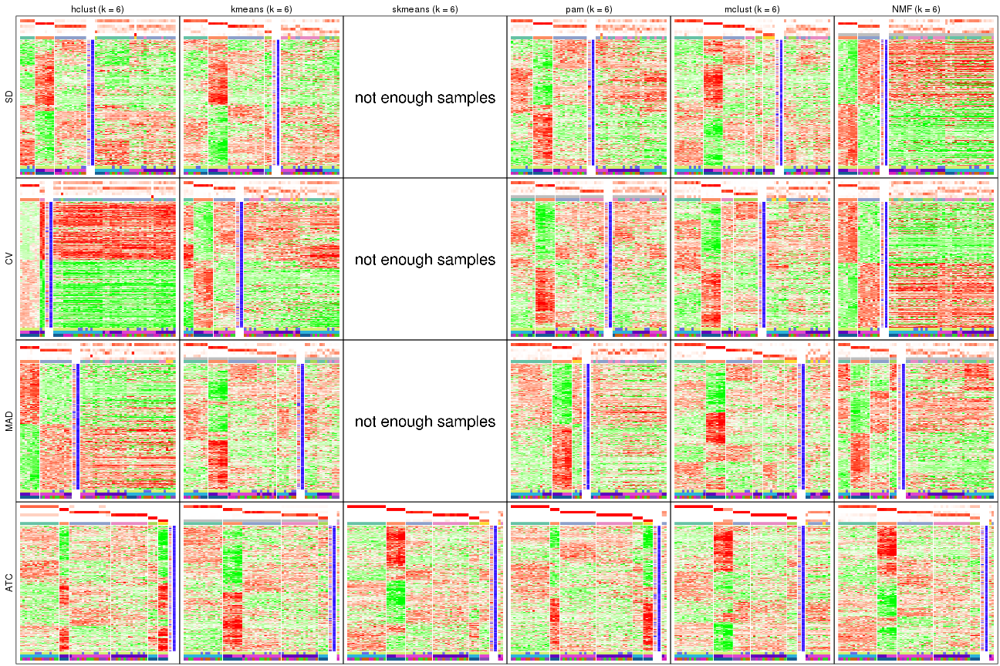
The statistics used for measuring the stability of consensus partitioning. (How are they defined?)
get_stats(res_list, k = 2)
#> k 1-PAC mean_silhouette concordance area_increased Rand Jaccard
#> SD:NMF 2 0.9962 0.938 0.975 0.294 0.718 0.718
#> CV:NMF 2 0.7895 0.872 0.946 0.367 0.636 0.636
#> MAD:NMF 2 0.6792 0.874 0.942 0.396 0.587 0.587
#> ATC:NMF 2 1.0000 1.000 1.000 0.236 0.765 0.765
#> SD:skmeans 2 0.2068 0.658 0.829 0.502 0.494 0.494
#> CV:skmeans 2 0.0301 0.606 0.760 0.503 0.548 0.548
#> MAD:skmeans 2 0.0595 0.632 0.795 0.505 0.501 0.501
#> ATC:skmeans 2 0.6053 0.863 0.933 0.397 0.602 0.602
#> SD:mclust 2 1.0000 0.973 0.988 0.252 0.765 0.765
#> CV:mclust 2 1.0000 0.988 0.994 0.244 0.765 0.765
#> MAD:mclust 2 1.0000 0.999 1.000 0.236 0.765 0.765
#> ATC:mclust 2 0.5051 0.850 0.910 0.317 0.765 0.765
#> SD:kmeans 2 1.0000 0.995 0.996 0.239 0.765 0.765
#> CV:kmeans 2 1.0000 0.982 0.985 0.250 0.765 0.765
#> MAD:kmeans 2 0.5465 0.876 0.919 0.313 0.765 0.765
#> ATC:kmeans 2 1.0000 1.000 1.000 0.236 0.765 0.765
#> SD:pam 2 1.0000 0.998 0.998 0.237 0.765 0.765
#> CV:pam 2 0.0144 0.346 0.652 0.446 0.537 0.537
#> MAD:pam 2 0.1165 0.478 0.728 0.444 0.497 0.497
#> ATC:pam 2 1.0000 1.000 1.000 0.236 0.765 0.765
#> SD:hclust 2 1.0000 0.994 0.997 0.239 0.765 0.765
#> CV:hclust 2 0.7544 0.969 0.950 0.231 0.765 0.765
#> MAD:hclust 2 1.0000 0.978 0.975 0.245 0.765 0.765
#> ATC:hclust 2 1.0000 1.000 1.000 0.236 0.765 0.765
get_stats(res_list, k = 3)
#> k 1-PAC mean_silhouette concordance area_increased Rand Jaccard
#> SD:NMF 3 0.390 0.678 0.831 1.086 0.629 0.492
#> CV:NMF 3 0.260 0.537 0.750 0.673 0.681 0.524
#> MAD:NMF 3 0.355 0.635 0.802 0.564 0.664 0.480
#> ATC:NMF 3 0.767 0.886 0.946 1.563 0.620 0.504
#> SD:skmeans 3 0.138 0.398 0.657 0.329 0.708 0.481
#> CV:skmeans 3 0.101 0.220 0.552 0.335 0.681 0.471
#> MAD:skmeans 3 0.115 0.281 0.597 0.326 0.667 0.436
#> ATC:skmeans 3 1.000 0.991 0.997 0.567 0.716 0.550
#> SD:mclust 3 0.393 0.334 0.656 1.255 0.729 0.645
#> CV:mclust 3 0.354 0.458 0.776 1.393 0.619 0.501
#> MAD:mclust 3 0.489 0.735 0.855 1.535 0.623 0.507
#> ATC:mclust 3 0.946 0.944 0.971 0.915 0.584 0.469
#> SD:kmeans 3 0.519 0.750 0.872 1.473 0.618 0.501
#> CV:kmeans 3 0.289 0.593 0.777 1.358 0.619 0.501
#> MAD:kmeans 3 0.402 0.739 0.842 0.917 0.627 0.513
#> ATC:kmeans 3 0.620 0.669 0.800 1.444 0.664 0.561
#> SD:pam 3 0.276 0.648 0.776 1.521 0.619 0.501
#> CV:pam 3 0.224 0.543 0.707 0.369 0.623 0.421
#> MAD:pam 3 0.342 0.768 0.841 0.377 0.736 0.539
#> ATC:pam 3 0.857 0.885 0.954 1.581 0.623 0.507
#> SD:hclust 3 0.417 0.829 0.885 0.627 0.944 0.926
#> CV:hclust 3 0.330 0.855 0.883 0.635 0.944 0.926
#> MAD:hclust 3 0.272 0.575 0.788 0.942 0.892 0.858
#> ATC:hclust 3 0.840 0.928 0.970 1.504 0.632 0.519
get_stats(res_list, k = 4)
#> k 1-PAC mean_silhouette concordance area_increased Rand Jaccard
#> SD:NMF 4 0.483 0.539 0.714 0.1950 0.734 0.404
#> CV:NMF 4 0.375 0.501 0.682 0.1966 0.711 0.376
#> MAD:NMF 4 0.462 0.527 0.750 0.1887 0.743 0.418
#> ATC:NMF 4 0.750 0.773 0.923 0.0321 0.985 0.960
#> SD:skmeans 4 0.231 0.317 0.588 0.1298 0.834 0.564
#> CV:skmeans 4 0.157 0.186 0.483 0.1271 0.733 0.369
#> MAD:skmeans 4 0.165 0.277 0.535 0.1282 0.769 0.441
#> ATC:skmeans 4 0.841 0.946 0.858 0.1398 0.847 0.603
#> SD:mclust 4 0.506 0.640 0.815 0.2351 0.638 0.351
#> CV:mclust 4 0.409 0.642 0.788 0.2180 0.718 0.397
#> MAD:mclust 4 0.624 0.769 0.871 0.2160 0.756 0.451
#> ATC:mclust 4 0.911 0.909 0.958 0.2297 0.801 0.528
#> SD:kmeans 4 0.506 0.700 0.805 0.2144 0.837 0.597
#> CV:kmeans 4 0.388 0.543 0.715 0.2234 0.793 0.513
#> MAD:kmeans 4 0.536 0.609 0.797 0.2130 0.790 0.512
#> ATC:kmeans 4 0.597 0.830 0.801 0.1953 0.808 0.562
#> SD:pam 4 0.312 0.476 0.684 0.1739 0.856 0.647
#> CV:pam 4 0.298 0.545 0.689 0.1756 0.832 0.590
#> MAD:pam 4 0.402 0.659 0.770 0.1736 0.869 0.675
#> ATC:pam 4 0.923 0.903 0.959 0.2176 0.831 0.585
#> SD:hclust 4 0.295 0.622 0.794 0.2730 0.971 0.959
#> CV:hclust 4 0.261 0.758 0.814 0.2931 0.999 0.999
#> MAD:hclust 4 0.289 0.444 0.682 0.2425 0.693 0.550
#> ATC:hclust 4 0.954 0.963 0.966 0.0730 0.962 0.903
get_stats(res_list, k = 5)
#> k 1-PAC mean_silhouette concordance area_increased Rand Jaccard
#> SD:NMF 5 0.523 0.480 0.689 0.0792 0.855 0.511
#> CV:NMF 5 0.465 0.431 0.653 0.0798 0.825 0.438
#> MAD:NMF 5 0.511 0.434 0.686 0.0765 0.854 0.514
#> ATC:NMF 5 0.635 0.758 0.827 0.1616 0.840 0.599
#> SD:skmeans 5 0.299 0.296 0.546 0.0683 0.895 0.635
#> CV:skmeans 5 0.222 0.181 0.445 0.0662 0.808 0.388
#> MAD:skmeans 5 0.288 0.260 0.503 0.0660 0.846 0.493
#> ATC:skmeans 5 1.000 0.975 0.977 0.0917 0.982 0.925
#> SD:mclust 5 0.548 0.669 0.769 0.0986 0.950 0.811
#> CV:mclust 5 0.580 0.722 0.785 0.0903 0.918 0.718
#> MAD:mclust 5 0.638 0.700 0.795 0.0782 0.960 0.846
#> ATC:mclust 5 0.981 0.964 0.976 0.0401 0.964 0.860
#> SD:kmeans 5 0.613 0.600 0.780 0.0861 0.972 0.896
#> CV:kmeans 5 0.482 0.489 0.661 0.0775 0.895 0.644
#> MAD:kmeans 5 0.610 0.562 0.747 0.0827 0.888 0.609
#> ATC:kmeans 5 0.979 0.945 0.913 0.1016 0.949 0.806
#> SD:pam 5 0.341 0.398 0.650 0.0469 0.956 0.853
#> CV:pam 5 0.340 0.518 0.691 0.0455 0.990 0.964
#> MAD:pam 5 0.508 0.671 0.758 0.0675 0.938 0.799
#> ATC:pam 5 1.000 0.957 0.984 0.0490 0.964 0.861
#> SD:hclust 5 0.308 0.530 0.711 0.3069 0.667 0.518
#> CV:hclust 5 0.293 0.422 0.695 0.2624 0.851 0.789
#> MAD:hclust 5 0.289 0.561 0.730 0.1831 0.779 0.511
#> ATC:hclust 5 0.845 0.920 0.922 0.0688 0.991 0.975
get_stats(res_list, k = 6)
#> k 1-PAC mean_silhouette concordance area_increased Rand Jaccard
#> SD:NMF 6 0.580 0.445 0.621 0.0433 0.918 0.654
#> CV:NMF 6 0.507 0.397 0.574 0.0419 0.957 0.799
#> MAD:NMF 6 0.556 0.466 0.654 0.0433 0.934 0.712
#> ATC:NMF 6 0.657 0.809 0.844 0.0590 0.906 0.673
#> SD:skmeans 6 0.409 0.201 0.494 0.0425 0.932 0.708
#> CV:skmeans 6 0.297 0.182 0.421 0.0409 0.889 0.534
#> MAD:skmeans 6 0.397 0.247 0.463 0.0416 0.835 0.380
#> ATC:skmeans 6 0.947 0.922 0.938 0.0413 0.969 0.860
#> SD:mclust 6 0.670 0.600 0.770 0.0584 0.931 0.702
#> CV:mclust 6 0.595 0.564 0.707 0.0534 0.908 0.628
#> MAD:mclust 6 0.721 0.672 0.801 0.0550 0.921 0.657
#> ATC:mclust 6 0.946 0.795 0.899 0.0295 0.982 0.922
#> SD:kmeans 6 0.657 0.533 0.735 0.0498 0.937 0.754
#> CV:kmeans 6 0.562 0.423 0.630 0.0524 0.895 0.594
#> MAD:kmeans 6 0.660 0.603 0.716 0.0466 0.950 0.778
#> ATC:kmeans 6 0.879 0.859 0.874 0.0531 1.000 1.000
#> SD:pam 6 0.359 0.438 0.648 0.0204 0.982 0.933
#> CV:pam 6 0.361 0.513 0.671 0.0228 1.000 1.000
#> MAD:pam 6 0.537 0.558 0.736 0.0231 0.946 0.799
#> ATC:pam 6 1.000 0.957 0.984 0.0116 0.991 0.959
#> SD:hclust 6 0.340 0.428 0.674 0.1289 0.946 0.857
#> CV:hclust 6 0.307 0.337 0.620 0.1443 0.766 0.598
#> MAD:hclust 6 0.402 0.450 0.691 0.0915 0.947 0.824
#> ATC:hclust 6 0.825 0.956 0.914 0.1255 0.864 0.612
Following heatmap plots the partition for each combination of methods and the lightness correspond to the silhouette scores for samples in each method. On top the consensus subgroup is inferred from all methods by taking the mean silhouette scores as weight.
collect_stats(res_list, k = 2)
collect_stats(res_list, k = 3)
collect_stats(res_list, k = 4)
collect_stats(res_list, k = 5)
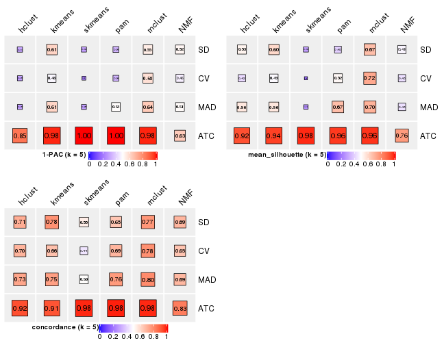
collect_stats(res_list, k = 6)
Collect partitions from all methods:
collect_classes(res_list, k = 2)
collect_classes(res_list, k = 3)
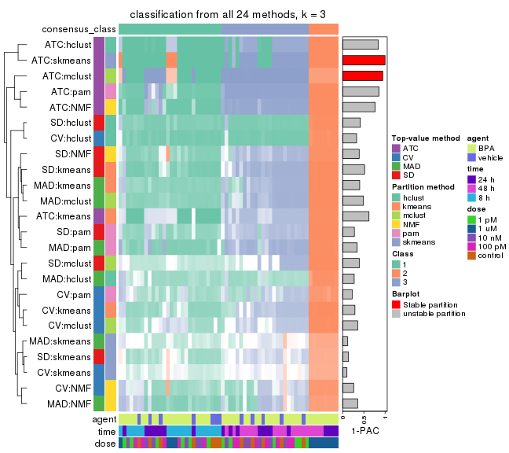
collect_classes(res_list, k = 4)
collect_classes(res_list, k = 5)
collect_classes(res_list, k = 6)
Overlap of top rows from different top-row methods:
top_rows_overlap(res_list, top_n = 1000, method = "euler")
top_rows_overlap(res_list, top_n = 2000, method = "euler")
top_rows_overlap(res_list, top_n = 3000, method = "euler")
top_rows_overlap(res_list, top_n = 4000, method = "euler")
top_rows_overlap(res_list, top_n = 5000, method = "euler")
Also visualize the correspondance of rankings between different top-row methods:
top_rows_overlap(res_list, top_n = 1000, method = "correspondance")

top_rows_overlap(res_list, top_n = 2000, method = "correspondance")
top_rows_overlap(res_list, top_n = 3000, method = "correspondance")
top_rows_overlap(res_list, top_n = 4000, method = "correspondance")
top_rows_overlap(res_list, top_n = 5000, method = "correspondance")
Heatmaps of the top rows:
top_rows_heatmap(res_list, top_n = 1000)
top_rows_heatmap(res_list, top_n = 2000)
top_rows_heatmap(res_list, top_n = 3000)
top_rows_heatmap(res_list, top_n = 4000)
top_rows_heatmap(res_list, top_n = 5000)
Test correlation between subgroups and known annotations. If the known annotation is numeric, one-way ANOVA test is applied, and if the known annotation is discrete, chi-squared contingency table test is applied.
test_to_known_factors(res_list, k = 2)
#> n agent(p) time(p) dose(p) k
#> SD:NMF 58 0.2227 8.27e-02 7.65e-08 2
#> CV:NMF 56 0.1018 1.78e-01 2.60e-06 2
#> MAD:NMF 56 0.2074 1.51e-03 4.37e-03 2
#> ATC:NMF 60 0.2963 9.95e-02 1.87e-07 2
#> SD:skmeans 46 0.0704 1.85e-04 1.10e-03 2
#> CV:skmeans 47 0.0648 5.22e-03 4.58e-04 2
#> MAD:skmeans 46 0.2365 4.31e-06 7.29e-02 2
#> ATC:skmeans 57 0.0833 7.41e-01 1.41e-10 2
#> SD:mclust 60 0.2963 9.95e-02 1.87e-07 2
#> CV:mclust 60 0.2963 9.95e-02 1.87e-07 2
#> MAD:mclust 60 0.2963 9.95e-02 1.87e-07 2
#> ATC:mclust 56 0.2584 1.55e-01 2.01e-11 2
#> SD:kmeans 60 0.2963 9.95e-02 1.87e-07 2
#> CV:kmeans 60 0.2963 9.95e-02 1.87e-07 2
#> MAD:kmeans 60 0.2963 9.95e-02 1.87e-07 2
#> ATC:kmeans 60 0.2963 9.95e-02 1.87e-07 2
#> SD:pam 60 0.2963 9.95e-02 1.87e-07 2
#> CV:pam 18 NA NA NA 2
#> MAD:pam 40 1.0000 1.15e-06 9.73e-01 2
#> ATC:pam 60 0.2963 9.95e-02 1.87e-07 2
#> SD:hclust 60 0.2963 9.95e-02 1.87e-07 2
#> CV:hclust 60 0.2963 9.95e-02 1.87e-07 2
#> MAD:hclust 60 0.2963 9.95e-02 1.87e-07 2
#> ATC:hclust 60 0.2963 9.95e-02 1.87e-07 2
test_to_known_factors(res_list, k = 3)
#> n agent(p) time(p) dose(p) k
#> SD:NMF 51 0.222 4.60e-07 6.02e-07 3
#> CV:NMF 40 0.129 1.51e-01 2.56e-04 3
#> MAD:NMF 51 0.267 6.75e-02 8.79e-05 3
#> ATC:NMF 59 0.294 7.17e-10 5.55e-06 3
#> SD:skmeans 26 0.116 1.25e-04 1.65e-04 3
#> CV:skmeans 8 NA NA NA 3
#> MAD:skmeans 9 NA NA NA 3
#> ATC:skmeans 60 0.151 6.73e-09 3.99e-10 3
#> SD:mclust 18 0.557 7.05e-01 1.23e-03 3
#> CV:mclust 35 0.153 3.11e-05 5.58e-05 3
#> MAD:mclust 54 0.293 7.76e-08 3.01e-05 3
#> ATC:mclust 60 0.153 9.44e-10 4.66e-10 3
#> SD:kmeans 52 0.272 6.80e-08 1.48e-06 3
#> CV:kmeans 46 0.164 2.83e-05 7.25e-07 3
#> MAD:kmeans 56 0.268 1.85e-06 2.51e-05 3
#> ATC:kmeans 41 0.298 1.48e-10 2.00e-06 3
#> SD:pam 53 0.280 2.14e-08 1.56e-06 3
#> CV:pam 41 0.133 7.73e-03 2.35e-04 3
#> MAD:pam 55 0.280 1.28e-07 2.74e-05 3
#> ATC:pam 58 0.292 1.22e-09 1.87e-06 3
#> SD:hclust 60 0.223 2.38e-01 1.91e-06 3
#> CV:hclust 58 0.278 1.04e-01 5.11e-08 3
#> MAD:hclust 49 0.243 2.76e-01 5.67e-05 3
#> ATC:hclust 60 0.264 1.39e-07 3.12e-06 3
test_to_known_factors(res_list, k = 4)
#> n agent(p) time(p) dose(p) k
#> SD:NMF 33 0.467 3.17e-07 6.93e-04 4
#> CV:NMF 35 0.350 2.84e-04 1.77e-04 4
#> MAD:NMF 39 0.488 1.69e-06 1.82e-03 4
#> ATC:NMF 52 0.272 4.04e-10 3.87e-05 4
#> SD:skmeans 8 NA NA NA 4
#> CV:skmeans 8 NA NA NA 4
#> MAD:skmeans 8 NA NA NA 4
#> ATC:skmeans 59 0.277 6.80e-17 3.18e-08 4
#> SD:mclust 45 0.421 3.28e-07 5.67e-05 4
#> CV:mclust 49 0.400 4.59e-06 4.28e-05 4
#> MAD:mclust 54 0.405 4.14e-08 4.24e-04 4
#> ATC:mclust 56 0.467 1.71e-19 1.20e-07 4
#> SD:kmeans 52 0.435 3.05e-10 2.46e-05 4
#> CV:kmeans 40 0.387 2.11e-07 4.52e-05 4
#> MAD:kmeans 48 0.589 2.37e-06 2.14e-03 4
#> ATC:kmeans 55 0.452 5.90e-18 1.69e-07 4
#> SD:pam 34 0.397 2.73e-07 8.54e-04 4
#> CV:pam 39 0.160 1.09e-04 1.41e-03 4
#> MAD:pam 48 0.548 3.31e-07 2.10e-03 4
#> ATC:pam 56 0.444 2.27e-19 1.50e-05 4
#> SD:hclust 46 0.296 3.61e-01 4.73e-08 4
#> CV:hclust 58 0.278 1.04e-01 5.11e-08 4
#> MAD:hclust 29 0.232 4.03e-04 1.23e-03 4
#> ATC:hclust 60 0.286 3.05e-10 1.96e-08 4
test_to_known_factors(res_list, k = 5)
#> n agent(p) time(p) dose(p) k
#> SD:NMF 25 0.4067 2.25e-05 3.96e-04 5
#> CV:NMF 24 0.4164 9.12e-05 2.95e-03 5
#> MAD:NMF 25 0.4413 5.35e-05 3.67e-02 5
#> ATC:NMF 56 0.3425 3.35e-19 1.05e-04 5
#> SD:skmeans 8 NA NA NA 5
#> CV:skmeans 8 NA NA NA 5
#> MAD:skmeans 8 NA NA NA 5
#> ATC:skmeans 60 0.4409 1.97e-17 5.23e-07 5
#> SD:mclust 51 0.6243 4.21e-08 8.64e-04 5
#> CV:mclust 54 0.4965 6.59e-07 3.37e-04 5
#> MAD:mclust 55 0.5514 1.66e-09 6.73e-04 5
#> ATC:mclust 60 0.4409 9.81e-20 5.23e-07 5
#> SD:kmeans 44 0.4047 3.47e-08 7.14e-05 5
#> CV:kmeans 29 0.4680 7.87e-05 2.44e-03 5
#> MAD:kmeans 42 0.3677 2.84e-06 7.44e-03 5
#> ATC:kmeans 59 0.4248 3.86e-18 7.19e-07 5
#> SD:pam 21 0.0616 2.82e-05 5.31e-03 5
#> CV:pam 37 0.0518 4.19e-04 1.32e-03 5
#> MAD:pam 48 0.6263 4.83e-07 7.57e-03 5
#> ATC:pam 58 0.4108 7.16e-19 1.05e-06 5
#> SD:hclust 37 0.1598 8.83e-08 5.66e-06 5
#> CV:hclust 16 1.0000 1.00e+00 3.02e-03 5
#> MAD:hclust 41 0.3495 1.33e-04 5.63e-04 5
#> ATC:hclust 60 0.4358 1.28e-11 4.58e-07 5
test_to_known_factors(res_list, k = 6)
#> n agent(p) time(p) dose(p) k
#> SD:NMF 18 0.3247 4.02e-02 7.15e-03 6
#> CV:NMF 17 0.5058 2.21e-01 1.93e-03 6
#> MAD:NMF 25 0.5702 4.69e-05 3.95e-02 6
#> ATC:NMF 58 0.4108 7.16e-19 1.05e-06 6
#> SD:skmeans 8 NA NA NA 6
#> CV:skmeans 8 NA NA NA 6
#> MAD:skmeans 8 NA NA NA 6
#> ATC:skmeans 58 0.2755 9.48e-18 1.09e-08 6
#> SD:mclust 41 0.6732 4.94e-10 1.82e-03 6
#> CV:mclust 34 0.4802 3.64e-09 1.79e-04 6
#> MAD:mclust 50 0.5767 2.22e-09 1.15e-03 6
#> ATC:mclust 50 0.2456 3.55e-15 4.85e-06 6
#> SD:kmeans 36 0.4655 1.80e-06 3.18e-03 6
#> CV:kmeans 22 0.0255 4.33e-04 2.03e-03 6
#> MAD:kmeans 46 0.3758 8.16e-09 3.73e-03 6
#> ATC:kmeans 59 0.4248 3.86e-18 7.19e-07 6
#> SD:pam 31 0.5438 8.59e-07 2.21e-03 6
#> CV:pam 38 0.1317 4.58e-04 1.72e-03 6
#> MAD:pam 29 0.1186 1.30e-03 8.46e-03 6
#> ATC:pam 58 0.5545 3.27e-20 1.35e-05 6
#> SD:hclust 27 0.2381 7.54e-06 6.04e-04 6
#> CV:hclust 10 0.4292 6.28e-01 6.74e-03 6
#> MAD:hclust 21 0.4091 4.27e-01 3.17e-04 6
#> ATC:hclust 60 0.5787 7.05e-20 6.02e-06 6
The object with results only for a single top-value method and a single partition method can be extracted as:
res = res_list["SD", "hclust"]
# you can also extract it by
# res = res_list["SD:hclust"]
A summary of res and all the functions that can be applied to it:
res
#> A 'ConsensusPartition' object with k = 2, 3, 4, 5, 6.
#> On a matrix with 51941 rows and 60 columns.
#> Top rows (1000, 2000, 3000, 4000, 5000) are extracted by 'SD' method.
#> Subgroups are detected by 'hclust' method.
#> Performed in total 1250 partitions by row resampling.
#> Best k for subgroups seems to be 2.
#>
#> Following methods can be applied to this 'ConsensusPartition' object:
#> [1] "cola_report" "collect_classes" "collect_plots"
#> [4] "collect_stats" "colnames" "compare_signatures"
#> [7] "consensus_heatmap" "dimension_reduction" "functional_enrichment"
#> [10] "get_anno_col" "get_anno" "get_classes"
#> [13] "get_consensus" "get_matrix" "get_membership"
#> [16] "get_param" "get_signatures" "get_stats"
#> [19] "is_best_k" "is_stable_k" "membership_heatmap"
#> [22] "ncol" "nrow" "plot_ecdf"
#> [25] "rownames" "select_partition_number" "show"
#> [28] "suggest_best_k" "test_to_known_factors"
collect_plots() function collects all the plots made from res for all k (number of partitions)
into one single page to provide an easy and fast comparison between different k.
collect_plots(res)
The plots are:
k and the heatmap of
predicted classes for each k.k.k.k.All the plots in panels can be made by individual functions and they are plotted later in this section.
select_partition_number() produces several plots showing different
statistics for choosing “optimized” k. There are following statistics:
k;k, the area increased is defined as \(A_k - A_{k-1}\).The detailed explanations of these statistics can be found in the cola vignette.
Generally speaking, lower PAC score, higher mean silhouette score or higher
concordance corresponds to better partition. Rand index and Jaccard index
measure how similar the current partition is compared to partition with k-1.
If they are too similar, we won't accept k is better than k-1.
select_partition_number(res)
The numeric values for all these statistics can be obtained by get_stats().
get_stats(res)
#> k 1-PAC mean_silhouette concordance area_increased Rand Jaccard
#> 2 2 1.000 0.994 0.997 0.239 0.765 0.765
#> 3 3 0.417 0.829 0.885 0.627 0.944 0.926
#> 4 4 0.295 0.622 0.794 0.273 0.971 0.959
#> 5 5 0.308 0.530 0.711 0.307 0.667 0.518
#> 6 6 0.340 0.428 0.674 0.129 0.946 0.857
suggest_best_k() suggests the best \(k\) based on these statistics. The rules are as follows:
suggest_best_k(res)
#> [1] 2
Following shows the table of the partitions (You need to click the show/hide
code output link to see it). The membership matrix (columns with name p*)
is inferred by
clue::cl_consensus()
function with the SE method. Basically the value in the membership matrix
represents the probability to belong to a certain group. The finall class
label for an item is determined with the group with highest probability it
belongs to.
In get_classes() function, the entropy is calculated from the membership
matrix and the silhouette score is calculated from the consensus matrix.
cbind(get_classes(res, k = 2), get_membership(res, k = 2))
#> class entropy silhouette p1 p2
#> GSM439987 1 0.000 0.997 1.000 0.000
#> GSM439988 1 0.000 0.997 1.000 0.000
#> GSM439989 1 0.000 0.997 1.000 0.000
#> GSM439990 1 0.000 0.997 1.000 0.000
#> GSM439991 1 0.000 0.997 1.000 0.000
#> GSM439992 1 0.000 0.997 1.000 0.000
#> GSM439993 1 0.000 0.997 1.000 0.000
#> GSM439994 1 0.000 0.997 1.000 0.000
#> GSM439995 1 0.000 0.997 1.000 0.000
#> GSM439996 1 0.000 0.997 1.000 0.000
#> GSM439997 1 0.000 0.997 1.000 0.000
#> GSM439998 1 0.000 0.997 1.000 0.000
#> GSM440035 1 0.000 0.997 1.000 0.000
#> GSM440036 1 0.000 0.997 1.000 0.000
#> GSM440037 1 0.000 0.997 1.000 0.000
#> GSM440038 1 0.000 0.997 1.000 0.000
#> GSM440011 1 0.000 0.997 1.000 0.000
#> GSM440012 1 0.000 0.997 1.000 0.000
#> GSM440013 1 0.000 0.997 1.000 0.000
#> GSM440014 1 0.000 0.997 1.000 0.000
#> GSM439999 1 0.000 0.997 1.000 0.000
#> GSM440000 1 0.000 0.997 1.000 0.000
#> GSM440001 1 0.000 0.997 1.000 0.000
#> GSM440002 1 0.000 0.997 1.000 0.000
#> GSM440023 1 0.000 0.997 1.000 0.000
#> GSM440024 1 0.141 0.978 0.980 0.020
#> GSM440025 1 0.443 0.901 0.908 0.092
#> GSM440026 1 0.311 0.942 0.944 0.056
#> GSM440039 1 0.000 0.997 1.000 0.000
#> GSM440040 1 0.000 0.997 1.000 0.000
#> GSM440041 1 0.000 0.997 1.000 0.000
#> GSM440042 1 0.000 0.997 1.000 0.000
#> GSM440015 1 0.000 0.997 1.000 0.000
#> GSM440016 1 0.000 0.997 1.000 0.000
#> GSM440017 1 0.000 0.997 1.000 0.000
#> GSM440018 1 0.000 0.997 1.000 0.000
#> GSM440003 1 0.000 0.997 1.000 0.000
#> GSM440004 1 0.000 0.997 1.000 0.000
#> GSM440005 1 0.000 0.997 1.000 0.000
#> GSM440006 1 0.000 0.997 1.000 0.000
#> GSM440027 2 0.000 0.997 0.000 1.000
#> GSM440028 2 0.000 0.997 0.000 1.000
#> GSM440029 2 0.000 0.997 0.000 1.000
#> GSM440030 2 0.000 0.997 0.000 1.000
#> GSM440043 1 0.000 0.997 1.000 0.000
#> GSM440044 1 0.000 0.997 1.000 0.000
#> GSM440045 1 0.000 0.997 1.000 0.000
#> GSM440046 1 0.000 0.997 1.000 0.000
#> GSM440019 1 0.000 0.997 1.000 0.000
#> GSM440020 1 0.000 0.997 1.000 0.000
#> GSM440021 1 0.000 0.997 1.000 0.000
#> GSM440022 1 0.000 0.997 1.000 0.000
#> GSM440007 1 0.000 0.997 1.000 0.000
#> GSM440008 1 0.000 0.997 1.000 0.000
#> GSM440009 1 0.000 0.997 1.000 0.000
#> GSM440010 1 0.000 0.997 1.000 0.000
#> GSM440031 2 0.000 0.997 0.000 1.000
#> GSM440032 2 0.000 0.997 0.000 1.000
#> GSM440033 2 0.000 0.997 0.000 1.000
#> GSM440034 2 0.141 0.979 0.020 0.980
cbind(get_classes(res, k = 3), get_membership(res, k = 3))
#> class entropy silhouette p1 p2 p3
#> GSM439987 1 0.484 0.746 0.776 0.000 0.224
#> GSM439988 1 0.369 0.835 0.860 0.000 0.140
#> GSM439989 1 0.450 0.780 0.804 0.000 0.196
#> GSM439990 1 0.455 0.785 0.800 0.000 0.200
#> GSM439991 1 0.400 0.827 0.840 0.000 0.160
#> GSM439992 1 0.341 0.821 0.876 0.000 0.124
#> GSM439993 1 0.141 0.847 0.964 0.000 0.036
#> GSM439994 1 0.418 0.806 0.828 0.000 0.172
#> GSM439995 1 0.207 0.847 0.940 0.000 0.060
#> GSM439996 1 0.164 0.846 0.956 0.000 0.044
#> GSM439997 1 0.245 0.850 0.924 0.000 0.076
#> GSM439998 1 0.141 0.845 0.964 0.000 0.036
#> GSM440035 1 0.394 0.813 0.844 0.000 0.156
#> GSM440036 1 0.424 0.791 0.824 0.000 0.176
#> GSM440037 1 0.406 0.809 0.836 0.000 0.164
#> GSM440038 1 0.450 0.782 0.804 0.000 0.196
#> GSM440011 1 0.525 0.681 0.736 0.000 0.264
#> GSM440012 1 0.375 0.817 0.856 0.000 0.144
#> GSM440013 1 0.484 0.760 0.776 0.000 0.224
#> GSM440014 1 0.440 0.800 0.812 0.000 0.188
#> GSM439999 1 0.445 0.795 0.808 0.000 0.192
#> GSM440000 1 0.388 0.815 0.848 0.000 0.152
#> GSM440001 1 0.450 0.789 0.804 0.000 0.196
#> GSM440002 1 0.455 0.769 0.800 0.000 0.200
#> GSM440023 1 0.406 0.813 0.836 0.000 0.164
#> GSM440024 1 0.552 0.633 0.728 0.004 0.268
#> GSM440025 1 0.595 0.633 0.764 0.040 0.196
#> GSM440026 3 0.615 0.536 0.356 0.004 0.640
#> GSM440039 1 0.440 0.768 0.812 0.000 0.188
#> GSM440040 1 0.280 0.854 0.908 0.000 0.092
#> GSM440041 1 0.153 0.854 0.960 0.000 0.040
#> GSM440042 1 0.288 0.851 0.904 0.000 0.096
#> GSM440015 1 0.304 0.833 0.896 0.000 0.104
#> GSM440016 1 0.271 0.857 0.912 0.000 0.088
#> GSM440017 1 0.186 0.854 0.948 0.000 0.052
#> GSM440018 1 0.254 0.850 0.920 0.000 0.080
#> GSM440003 1 0.394 0.800 0.844 0.000 0.156
#> GSM440004 1 0.348 0.826 0.872 0.000 0.128
#> GSM440005 1 0.207 0.852 0.940 0.000 0.060
#> GSM440006 1 0.245 0.858 0.924 0.000 0.076
#> GSM440027 2 0.000 0.992 0.000 1.000 0.000
#> GSM440028 2 0.000 0.992 0.000 1.000 0.000
#> GSM440029 2 0.000 0.992 0.000 1.000 0.000
#> GSM440030 2 0.000 0.992 0.000 1.000 0.000
#> GSM440043 1 0.216 0.841 0.936 0.000 0.064
#> GSM440044 1 0.175 0.847 0.952 0.000 0.048
#> GSM440045 1 0.226 0.841 0.932 0.000 0.068
#> GSM440046 1 0.196 0.840 0.944 0.000 0.056
#> GSM440019 1 0.207 0.849 0.940 0.000 0.060
#> GSM440020 1 0.186 0.842 0.948 0.000 0.052
#> GSM440021 1 0.236 0.850 0.928 0.000 0.072
#> GSM440022 1 0.175 0.844 0.952 0.000 0.048
#> GSM440007 3 0.559 0.627 0.304 0.000 0.696
#> GSM440008 1 0.207 0.838 0.940 0.000 0.060
#> GSM440009 1 0.226 0.854 0.932 0.000 0.068
#> GSM440010 1 0.186 0.850 0.948 0.000 0.052
#> GSM440031 2 0.000 0.992 0.000 1.000 0.000
#> GSM440032 2 0.000 0.992 0.000 1.000 0.000
#> GSM440033 2 0.000 0.992 0.000 1.000 0.000
#> GSM440034 2 0.236 0.941 0.000 0.928 0.072
cbind(get_classes(res, k = 4), get_membership(res, k = 4))
#> class entropy silhouette p1 p2 p3 p4
#> GSM439987 1 0.535 0.288 0.560 0.000 0.012 0.428
#> GSM439988 1 0.496 0.610 0.684 0.000 0.016 0.300
#> GSM439989 1 0.495 0.469 0.620 0.000 0.004 0.376
#> GSM439990 1 0.523 0.450 0.604 0.000 0.012 0.384
#> GSM439991 1 0.531 0.563 0.648 0.000 0.024 0.328
#> GSM439992 1 0.492 0.657 0.776 0.000 0.088 0.136
#> GSM439993 1 0.252 0.716 0.908 0.000 0.016 0.076
#> GSM439994 1 0.475 0.625 0.716 0.000 0.016 0.268
#> GSM439995 1 0.234 0.715 0.912 0.000 0.008 0.080
#> GSM439996 1 0.218 0.714 0.924 0.000 0.012 0.064
#> GSM439997 1 0.255 0.721 0.900 0.000 0.008 0.092
#> GSM439998 1 0.131 0.715 0.960 0.000 0.004 0.036
#> GSM440035 1 0.566 0.582 0.688 0.000 0.068 0.244
#> GSM440036 1 0.569 0.504 0.648 0.000 0.048 0.304
#> GSM440037 1 0.477 0.572 0.684 0.000 0.008 0.308
#> GSM440038 1 0.521 0.365 0.572 0.000 0.008 0.420
#> GSM440011 4 0.551 -0.427 0.476 0.000 0.016 0.508
#> GSM440012 1 0.472 0.602 0.708 0.000 0.012 0.280
#> GSM440013 1 0.487 0.419 0.596 0.000 0.000 0.404
#> GSM440014 1 0.504 0.532 0.652 0.000 0.012 0.336
#> GSM439999 1 0.519 0.494 0.616 0.000 0.012 0.372
#> GSM440000 1 0.470 0.587 0.696 0.000 0.008 0.296
#> GSM440001 1 0.495 0.498 0.620 0.000 0.004 0.376
#> GSM440002 1 0.559 0.365 0.572 0.000 0.024 0.404
#> GSM440023 1 0.484 0.597 0.688 0.000 0.012 0.300
#> GSM440024 1 0.535 0.263 0.556 0.000 0.012 0.432
#> GSM440025 1 0.581 0.451 0.644 0.036 0.008 0.312
#> GSM440026 4 0.316 -0.202 0.064 0.000 0.052 0.884
#> GSM440039 1 0.501 0.461 0.636 0.000 0.008 0.356
#> GSM440040 1 0.439 0.677 0.752 0.000 0.012 0.236
#> GSM440041 1 0.316 0.725 0.872 0.000 0.020 0.108
#> GSM440042 1 0.414 0.704 0.816 0.000 0.040 0.144
#> GSM440015 1 0.369 0.679 0.792 0.000 0.000 0.208
#> GSM440016 1 0.354 0.717 0.828 0.000 0.008 0.164
#> GSM440017 1 0.261 0.725 0.896 0.000 0.008 0.096
#> GSM440018 1 0.294 0.717 0.868 0.000 0.004 0.128
#> GSM440003 1 0.419 0.647 0.764 0.000 0.008 0.228
#> GSM440004 1 0.398 0.667 0.776 0.000 0.004 0.220
#> GSM440005 1 0.337 0.719 0.864 0.000 0.028 0.108
#> GSM440006 1 0.367 0.717 0.824 0.000 0.012 0.164
#> GSM440027 2 0.000 0.988 0.000 1.000 0.000 0.000
#> GSM440028 2 0.000 0.988 0.000 1.000 0.000 0.000
#> GSM440029 2 0.000 0.988 0.000 1.000 0.000 0.000
#> GSM440030 2 0.000 0.988 0.000 1.000 0.000 0.000
#> GSM440043 1 0.233 0.711 0.916 0.000 0.012 0.072
#> GSM440044 1 0.172 0.718 0.936 0.000 0.000 0.064
#> GSM440045 1 0.220 0.715 0.916 0.000 0.004 0.080
#> GSM440046 1 0.261 0.708 0.900 0.000 0.012 0.088
#> GSM440019 1 0.244 0.721 0.916 0.000 0.024 0.060
#> GSM440020 1 0.174 0.714 0.940 0.000 0.004 0.056
#> GSM440021 1 0.305 0.717 0.860 0.000 0.004 0.136
#> GSM440022 1 0.194 0.716 0.936 0.000 0.012 0.052
#> GSM440007 3 0.121 0.000 0.032 0.000 0.964 0.004
#> GSM440008 1 0.247 0.707 0.908 0.000 0.012 0.080
#> GSM440009 1 0.350 0.718 0.844 0.000 0.016 0.140
#> GSM440010 1 0.291 0.721 0.888 0.000 0.020 0.092
#> GSM440031 2 0.000 0.988 0.000 1.000 0.000 0.000
#> GSM440032 2 0.000 0.988 0.000 1.000 0.000 0.000
#> GSM440033 2 0.000 0.988 0.000 1.000 0.000 0.000
#> GSM440034 2 0.212 0.914 0.000 0.924 0.008 0.068
cbind(get_classes(res, k = 5), get_membership(res, k = 5))
#> class entropy silhouette p1 p2 p3 p4 p5
#> GSM439987 1 0.5824 0.4929 0.608 0.000 0.224 0.000 0.168
#> GSM439988 1 0.5490 0.5156 0.592 0.000 0.324 0.000 0.084
#> GSM439989 1 0.4397 0.6181 0.696 0.000 0.276 0.000 0.028
#> GSM439990 1 0.4276 0.6242 0.724 0.000 0.244 0.000 0.032
#> GSM439991 3 0.6569 -0.0229 0.404 0.000 0.432 0.008 0.156
#> GSM439992 1 0.7439 0.0397 0.380 0.000 0.372 0.044 0.204
#> GSM439993 3 0.5279 0.4532 0.268 0.000 0.652 0.004 0.076
#> GSM439994 3 0.5982 0.3628 0.284 0.000 0.580 0.004 0.132
#> GSM439995 3 0.2409 0.6697 0.068 0.000 0.900 0.000 0.032
#> GSM439996 3 0.4712 0.5560 0.216 0.000 0.720 0.004 0.060
#> GSM439997 3 0.3085 0.6708 0.116 0.000 0.852 0.000 0.032
#> GSM439998 3 0.2505 0.6625 0.092 0.000 0.888 0.000 0.020
#> GSM440035 1 0.6564 0.2313 0.580 0.000 0.160 0.032 0.228
#> GSM440036 1 0.5899 0.2869 0.644 0.000 0.124 0.020 0.212
#> GSM440037 1 0.5185 0.4994 0.568 0.000 0.384 0.000 0.048
#> GSM440038 1 0.5612 0.5868 0.624 0.000 0.248 0.000 0.128
#> GSM440011 1 0.6153 0.3974 0.560 0.000 0.208 0.000 0.232
#> GSM440012 1 0.5338 0.4516 0.544 0.000 0.400 0.000 0.056
#> GSM440013 1 0.5441 0.5551 0.596 0.000 0.324 0.000 0.080
#> GSM440014 1 0.4900 0.6063 0.656 0.000 0.300 0.004 0.040
#> GSM439999 1 0.4687 0.6133 0.672 0.000 0.288 0.000 0.040
#> GSM440000 1 0.5019 0.4643 0.568 0.000 0.396 0.000 0.036
#> GSM440001 1 0.5309 0.5872 0.656 0.000 0.240 0.000 0.104
#> GSM440002 1 0.5716 0.2734 0.616 0.000 0.144 0.000 0.240
#> GSM440023 1 0.5939 0.4111 0.492 0.000 0.400 0.000 0.108
#> GSM440024 1 0.6486 0.4312 0.472 0.000 0.324 0.000 0.204
#> GSM440025 3 0.7036 -0.2624 0.368 0.032 0.440 0.000 0.160
#> GSM440026 5 0.4956 0.0000 0.312 0.000 0.040 0.004 0.644
#> GSM440039 3 0.6402 0.2204 0.252 0.000 0.536 0.004 0.208
#> GSM440040 1 0.6372 0.1331 0.428 0.000 0.408 0.000 0.164
#> GSM440041 3 0.5419 0.5670 0.192 0.000 0.680 0.008 0.120
#> GSM440042 3 0.6421 0.3302 0.244 0.000 0.560 0.012 0.184
#> GSM440015 3 0.4624 0.5916 0.144 0.000 0.744 0.000 0.112
#> GSM440016 3 0.4552 0.5204 0.264 0.000 0.696 0.000 0.040
#> GSM440017 3 0.4818 0.4881 0.284 0.000 0.672 0.004 0.040
#> GSM440018 3 0.2920 0.6498 0.132 0.000 0.852 0.000 0.016
#> GSM440003 3 0.5143 0.5293 0.168 0.000 0.704 0.004 0.124
#> GSM440004 3 0.4583 0.5861 0.144 0.000 0.756 0.004 0.096
#> GSM440005 3 0.6223 0.1689 0.328 0.000 0.512 0.000 0.160
#> GSM440006 3 0.5832 0.3248 0.340 0.000 0.560 0.004 0.096
#> GSM440027 2 0.0000 0.9878 0.000 1.000 0.000 0.000 0.000
#> GSM440028 2 0.0000 0.9878 0.000 1.000 0.000 0.000 0.000
#> GSM440029 2 0.0000 0.9878 0.000 1.000 0.000 0.000 0.000
#> GSM440030 2 0.0000 0.9878 0.000 1.000 0.000 0.000 0.000
#> GSM440043 3 0.1701 0.6703 0.048 0.000 0.936 0.000 0.016
#> GSM440044 3 0.3608 0.6430 0.148 0.000 0.812 0.000 0.040
#> GSM440045 3 0.2535 0.6714 0.076 0.000 0.892 0.000 0.032
#> GSM440046 3 0.2153 0.6647 0.044 0.000 0.916 0.000 0.040
#> GSM440019 3 0.4833 0.6090 0.168 0.000 0.736 0.008 0.088
#> GSM440020 3 0.2426 0.6720 0.064 0.000 0.900 0.000 0.036
#> GSM440021 3 0.3236 0.6466 0.152 0.000 0.828 0.000 0.020
#> GSM440022 3 0.2325 0.6713 0.068 0.000 0.904 0.000 0.028
#> GSM440007 4 0.0162 0.0000 0.000 0.000 0.004 0.996 0.000
#> GSM440008 3 0.1997 0.6653 0.036 0.000 0.924 0.000 0.040
#> GSM440009 3 0.4930 0.6158 0.144 0.000 0.716 0.000 0.140
#> GSM440010 3 0.4982 0.5666 0.200 0.000 0.700 0.000 0.100
#> GSM440031 2 0.0000 0.9878 0.000 1.000 0.000 0.000 0.000
#> GSM440032 2 0.0000 0.9878 0.000 1.000 0.000 0.000 0.000
#> GSM440033 2 0.0000 0.9878 0.000 1.000 0.000 0.000 0.000
#> GSM440034 2 0.1732 0.9097 0.000 0.920 0.000 0.000 0.080
cbind(get_classes(res, k = 6), get_membership(res, k = 6))
#> class entropy silhouette p1 p2 p3 p4 p5 p6
#> GSM439987 1 0.6061 0.4058 0.612 0.000 0.096 0.132 0.160 0.000
#> GSM439988 1 0.6216 0.3882 0.560 0.000 0.180 0.208 0.052 0.000
#> GSM439989 1 0.3973 0.5628 0.780 0.000 0.148 0.048 0.024 0.000
#> GSM439990 1 0.4139 0.5613 0.776 0.000 0.136 0.052 0.036 0.000
#> GSM439991 3 0.7700 -0.2086 0.244 0.000 0.308 0.284 0.160 0.004
#> GSM439992 4 0.7167 0.1772 0.176 0.000 0.156 0.524 0.116 0.028
#> GSM439993 3 0.6331 -0.0386 0.236 0.000 0.408 0.344 0.008 0.004
#> GSM439994 3 0.6986 0.2190 0.172 0.000 0.504 0.188 0.132 0.004
#> GSM439995 3 0.2251 0.5864 0.052 0.000 0.904 0.036 0.008 0.000
#> GSM439996 3 0.5975 0.2766 0.164 0.000 0.524 0.296 0.012 0.004
#> GSM439997 3 0.4091 0.5724 0.100 0.000 0.772 0.116 0.012 0.000
#> GSM439998 3 0.4225 0.5399 0.084 0.000 0.748 0.160 0.008 0.000
#> GSM440035 1 0.6837 -0.0978 0.412 0.000 0.036 0.380 0.148 0.024
#> GSM440036 1 0.6639 0.1128 0.504 0.000 0.044 0.300 0.132 0.020
#> GSM440037 1 0.5450 0.4967 0.640 0.000 0.232 0.064 0.064 0.000
#> GSM440038 1 0.5153 0.5354 0.688 0.000 0.144 0.036 0.132 0.000
#> GSM440011 1 0.5962 0.3246 0.596 0.000 0.096 0.076 0.232 0.000
#> GSM440012 1 0.5496 0.4700 0.608 0.000 0.276 0.072 0.044 0.000
#> GSM440013 1 0.5303 0.5033 0.636 0.000 0.240 0.024 0.100 0.000
#> GSM440014 1 0.4754 0.5554 0.728 0.000 0.168 0.056 0.044 0.004
#> GSM439999 1 0.4712 0.5592 0.732 0.000 0.144 0.084 0.040 0.000
#> GSM440000 1 0.5392 0.4772 0.624 0.000 0.264 0.068 0.044 0.000
#> GSM440001 1 0.5563 0.4989 0.668 0.000 0.124 0.120 0.088 0.000
#> GSM440002 1 0.6384 0.1575 0.524 0.000 0.048 0.224 0.204 0.000
#> GSM440023 1 0.6083 0.4260 0.572 0.000 0.256 0.092 0.080 0.000
#> GSM440024 1 0.6811 0.3335 0.492 0.000 0.176 0.096 0.236 0.000
#> GSM440025 1 0.7449 0.2299 0.400 0.024 0.328 0.100 0.148 0.000
#> GSM440026 5 0.3109 0.0000 0.224 0.000 0.004 0.000 0.772 0.000
#> GSM440039 3 0.6780 0.2184 0.220 0.000 0.476 0.072 0.232 0.000
#> GSM440040 1 0.6777 -0.2106 0.412 0.000 0.144 0.364 0.080 0.000
#> GSM440041 3 0.6148 0.2862 0.148 0.000 0.528 0.292 0.028 0.004
#> GSM440042 3 0.6715 -0.1425 0.092 0.000 0.424 0.388 0.088 0.008
#> GSM440015 3 0.5410 0.5090 0.128 0.000 0.680 0.072 0.120 0.000
#> GSM440016 3 0.5604 0.3770 0.280 0.000 0.588 0.104 0.028 0.000
#> GSM440017 3 0.6077 0.2366 0.248 0.000 0.488 0.256 0.004 0.004
#> GSM440018 3 0.3813 0.5618 0.124 0.000 0.800 0.048 0.028 0.000
#> GSM440003 3 0.5398 0.4748 0.132 0.000 0.672 0.052 0.144 0.000
#> GSM440004 3 0.4923 0.5227 0.116 0.000 0.720 0.048 0.116 0.000
#> GSM440005 4 0.6537 0.1399 0.264 0.000 0.280 0.428 0.028 0.000
#> GSM440006 3 0.6960 -0.0589 0.280 0.000 0.360 0.312 0.044 0.004
#> GSM440027 2 0.0000 0.9867 0.000 1.000 0.000 0.000 0.000 0.000
#> GSM440028 2 0.0000 0.9867 0.000 1.000 0.000 0.000 0.000 0.000
#> GSM440029 2 0.0000 0.9867 0.000 1.000 0.000 0.000 0.000 0.000
#> GSM440030 2 0.0000 0.9867 0.000 1.000 0.000 0.000 0.000 0.000
#> GSM440043 3 0.2213 0.5833 0.032 0.000 0.908 0.048 0.012 0.000
#> GSM440044 3 0.4798 0.4495 0.096 0.000 0.664 0.236 0.004 0.000
#> GSM440045 3 0.2540 0.5870 0.044 0.000 0.892 0.044 0.020 0.000
#> GSM440046 3 0.1844 0.5832 0.040 0.000 0.928 0.016 0.016 0.000
#> GSM440019 3 0.6063 0.2708 0.108 0.000 0.524 0.328 0.036 0.004
#> GSM440020 3 0.3330 0.5712 0.056 0.000 0.828 0.108 0.008 0.000
#> GSM440021 3 0.3956 0.5567 0.132 0.000 0.788 0.052 0.028 0.000
#> GSM440022 3 0.2979 0.5811 0.056 0.000 0.852 0.088 0.004 0.000
#> GSM440007 6 0.0146 0.0000 0.000 0.000 0.004 0.000 0.000 0.996
#> GSM440008 3 0.1605 0.5832 0.032 0.000 0.940 0.012 0.016 0.000
#> GSM440009 3 0.5695 0.4234 0.100 0.000 0.632 0.204 0.064 0.000
#> GSM440010 3 0.5834 0.1501 0.132 0.000 0.532 0.316 0.020 0.000
#> GSM440031 2 0.0000 0.9867 0.000 1.000 0.000 0.000 0.000 0.000
#> GSM440032 2 0.0000 0.9867 0.000 1.000 0.000 0.000 0.000 0.000
#> GSM440033 2 0.0000 0.9867 0.000 1.000 0.000 0.000 0.000 0.000
#> GSM440034 2 0.1858 0.9013 0.000 0.912 0.000 0.012 0.076 0.000
Heatmaps for the consensus matrix. It visualizes the probability of two samples to be in a same group.
consensus_heatmap(res, k = 2)
consensus_heatmap(res, k = 3)
consensus_heatmap(res, k = 4)

consensus_heatmap(res, k = 5)
consensus_heatmap(res, k = 6)
Heatmaps for the membership of samples in all partitions to see how consistent they are:
membership_heatmap(res, k = 2)
membership_heatmap(res, k = 3)
membership_heatmap(res, k = 4)
membership_heatmap(res, k = 5)
membership_heatmap(res, k = 6)
As soon as we have had the classes for columns, we can look for signatures which are significantly different between classes which can be candidate marks for certain classes. Following are the heatmaps for signatures.
Signature heatmaps where rows are scaled:
get_signatures(res, k = 2)
get_signatures(res, k = 3)
get_signatures(res, k = 4)
get_signatures(res, k = 5)
get_signatures(res, k = 6)
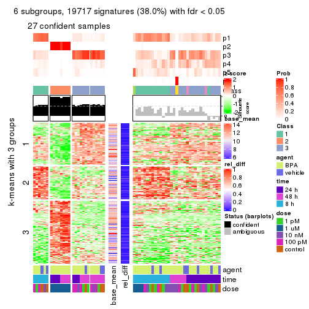
Signature heatmaps where rows are not scaled:
get_signatures(res, k = 2, scale_rows = FALSE)
get_signatures(res, k = 3, scale_rows = FALSE)
get_signatures(res, k = 4, scale_rows = FALSE)
get_signatures(res, k = 5, scale_rows = FALSE)
get_signatures(res, k = 6, scale_rows = FALSE)
Compare the overlap of signatures from different k:
compare_signatures(res)
get_signature() returns a data frame invisibly. TO get the list of signatures, the function
call should be assigned to a variable explicitly. In following code, if plot argument is set
to FALSE, no heatmap is plotted while only the differential analysis is performed.
# code only for demonstration
tb = get_signature(res, k = ..., plot = FALSE)
An example of the output of tb is:
#> which_row fdr mean_1 mean_2 scaled_mean_1 scaled_mean_2 km
#> 1 38 0.042760348 8.373488 9.131774 -0.5533452 0.5164555 1
#> 2 40 0.018707592 7.106213 8.469186 -0.6173731 0.5762149 1
#> 3 55 0.019134737 10.221463 11.207825 -0.6159697 0.5749050 1
#> 4 59 0.006059896 5.921854 7.869574 -0.6899429 0.6439467 1
#> 5 60 0.018055526 8.928898 10.211722 -0.6204761 0.5791110 1
#> 6 98 0.009384629 15.714769 14.887706 0.6635654 -0.6193277 2
...
The columns in tb are:
which_row: row indices corresponding to the input matrix.fdr: FDR for the differential test. mean_x: The mean value in group x.scaled_mean_x: The mean value in group x after rows are scaled.km: Row groups if k-means clustering is applied to rows.UMAP plot which shows how samples are separated.
dimension_reduction(res, k = 2, method = "UMAP")
dimension_reduction(res, k = 3, method = "UMAP")
dimension_reduction(res, k = 4, method = "UMAP")
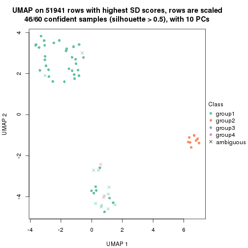
dimension_reduction(res, k = 5, method = "UMAP")
dimension_reduction(res, k = 6, method = "UMAP")
Following heatmap shows how subgroups are split when increasing k:
collect_classes(res)
Test correlation between subgroups and known annotations. If the known annotation is numeric, one-way ANOVA test is applied, and if the known annotation is discrete, chi-squared contingency table test is applied.
test_to_known_factors(res)
#> n agent(p) time(p) dose(p) k
#> SD:hclust 60 0.296 9.95e-02 1.87e-07 2
#> SD:hclust 60 0.223 2.38e-01 1.91e-06 3
#> SD:hclust 46 0.296 3.61e-01 4.73e-08 4
#> SD:hclust 37 0.160 8.83e-08 5.66e-06 5
#> SD:hclust 27 0.238 7.54e-06 6.04e-04 6
If matrix rows can be associated to genes, consider to use functional_enrichment(res,
...) to perform function enrichment for the signature genes. See this vignette for more detailed explanations.
The object with results only for a single top-value method and a single partition method can be extracted as:
res = res_list["SD", "kmeans"]
# you can also extract it by
# res = res_list["SD:kmeans"]
A summary of res and all the functions that can be applied to it:
res
#> A 'ConsensusPartition' object with k = 2, 3, 4, 5, 6.
#> On a matrix with 51941 rows and 60 columns.
#> Top rows (1000, 2000, 3000, 4000, 5000) are extracted by 'SD' method.
#> Subgroups are detected by 'kmeans' method.
#> Performed in total 1250 partitions by row resampling.
#> Best k for subgroups seems to be 2.
#>
#> Following methods can be applied to this 'ConsensusPartition' object:
#> [1] "cola_report" "collect_classes" "collect_plots"
#> [4] "collect_stats" "colnames" "compare_signatures"
#> [7] "consensus_heatmap" "dimension_reduction" "functional_enrichment"
#> [10] "get_anno_col" "get_anno" "get_classes"
#> [13] "get_consensus" "get_matrix" "get_membership"
#> [16] "get_param" "get_signatures" "get_stats"
#> [19] "is_best_k" "is_stable_k" "membership_heatmap"
#> [22] "ncol" "nrow" "plot_ecdf"
#> [25] "rownames" "select_partition_number" "show"
#> [28] "suggest_best_k" "test_to_known_factors"
collect_plots() function collects all the plots made from res for all k (number of partitions)
into one single page to provide an easy and fast comparison between different k.
collect_plots(res)
The plots are:
k and the heatmap of
predicted classes for each k.k.k.k.All the plots in panels can be made by individual functions and they are plotted later in this section.
select_partition_number() produces several plots showing different
statistics for choosing “optimized” k. There are following statistics:
k;k, the area increased is defined as \(A_k - A_{k-1}\).The detailed explanations of these statistics can be found in the cola vignette.
Generally speaking, lower PAC score, higher mean silhouette score or higher
concordance corresponds to better partition. Rand index and Jaccard index
measure how similar the current partition is compared to partition with k-1.
If they are too similar, we won't accept k is better than k-1.
select_partition_number(res)
The numeric values for all these statistics can be obtained by get_stats().
get_stats(res)
#> k 1-PAC mean_silhouette concordance area_increased Rand Jaccard
#> 2 2 1.000 0.995 0.996 0.2387 0.765 0.765
#> 3 3 0.519 0.750 0.872 1.4728 0.618 0.501
#> 4 4 0.506 0.700 0.805 0.2144 0.837 0.597
#> 5 5 0.613 0.600 0.780 0.0861 0.972 0.896
#> 6 6 0.657 0.533 0.735 0.0498 0.937 0.754
suggest_best_k() suggests the best \(k\) based on these statistics. The rules are as follows:
suggest_best_k(res)
#> [1] 2
Following shows the table of the partitions (You need to click the show/hide
code output link to see it). The membership matrix (columns with name p*)
is inferred by
clue::cl_consensus()
function with the SE method. Basically the value in the membership matrix
represents the probability to belong to a certain group. The finall class
label for an item is determined with the group with highest probability it
belongs to.
In get_classes() function, the entropy is calculated from the membership
matrix and the silhouette score is calculated from the consensus matrix.
cbind(get_classes(res, k = 2), get_membership(res, k = 2))
#> class entropy silhouette p1 p2
#> GSM439987 1 0.0938 0.992 0.988 0.012
#> GSM439988 1 0.0938 0.992 0.988 0.012
#> GSM439989 1 0.0938 0.992 0.988 0.012
#> GSM439990 1 0.0938 0.992 0.988 0.012
#> GSM439991 1 0.0000 0.995 1.000 0.000
#> GSM439992 1 0.0000 0.995 1.000 0.000
#> GSM439993 1 0.0000 0.995 1.000 0.000
#> GSM439994 1 0.0000 0.995 1.000 0.000
#> GSM439995 1 0.0000 0.995 1.000 0.000
#> GSM439996 1 0.0000 0.995 1.000 0.000
#> GSM439997 1 0.0000 0.995 1.000 0.000
#> GSM439998 1 0.0000 0.995 1.000 0.000
#> GSM440035 1 0.0938 0.992 0.988 0.012
#> GSM440036 1 0.0938 0.992 0.988 0.012
#> GSM440037 1 0.0938 0.992 0.988 0.012
#> GSM440038 1 0.0938 0.992 0.988 0.012
#> GSM440011 1 0.0938 0.992 0.988 0.012
#> GSM440012 1 0.0938 0.992 0.988 0.012
#> GSM440013 1 0.0938 0.992 0.988 0.012
#> GSM440014 1 0.0938 0.992 0.988 0.012
#> GSM439999 1 0.0672 0.994 0.992 0.008
#> GSM440000 1 0.0938 0.992 0.988 0.012
#> GSM440001 1 0.0938 0.992 0.988 0.012
#> GSM440002 1 0.0672 0.994 0.992 0.008
#> GSM440023 1 0.0938 0.992 0.988 0.012
#> GSM440024 1 0.0938 0.992 0.988 0.012
#> GSM440025 1 0.0938 0.992 0.988 0.012
#> GSM440026 1 0.0938 0.992 0.988 0.012
#> GSM440039 1 0.0000 0.995 1.000 0.000
#> GSM440040 1 0.0000 0.995 1.000 0.000
#> GSM440041 1 0.0000 0.995 1.000 0.000
#> GSM440042 1 0.0000 0.995 1.000 0.000
#> GSM440015 1 0.0000 0.995 1.000 0.000
#> GSM440016 1 0.0000 0.995 1.000 0.000
#> GSM440017 1 0.0000 0.995 1.000 0.000
#> GSM440018 1 0.0000 0.995 1.000 0.000
#> GSM440003 1 0.0000 0.995 1.000 0.000
#> GSM440004 1 0.0000 0.995 1.000 0.000
#> GSM440005 1 0.0000 0.995 1.000 0.000
#> GSM440006 1 0.0000 0.995 1.000 0.000
#> GSM440027 2 0.0000 1.000 0.000 1.000
#> GSM440028 2 0.0000 1.000 0.000 1.000
#> GSM440029 2 0.0000 1.000 0.000 1.000
#> GSM440030 2 0.0000 1.000 0.000 1.000
#> GSM440043 1 0.0000 0.995 1.000 0.000
#> GSM440044 1 0.0000 0.995 1.000 0.000
#> GSM440045 1 0.0000 0.995 1.000 0.000
#> GSM440046 1 0.0000 0.995 1.000 0.000
#> GSM440019 1 0.0000 0.995 1.000 0.000
#> GSM440020 1 0.0000 0.995 1.000 0.000
#> GSM440021 1 0.0000 0.995 1.000 0.000
#> GSM440022 1 0.0000 0.995 1.000 0.000
#> GSM440007 1 0.0000 0.995 1.000 0.000
#> GSM440008 1 0.0000 0.995 1.000 0.000
#> GSM440009 1 0.0000 0.995 1.000 0.000
#> GSM440010 1 0.0000 0.995 1.000 0.000
#> GSM440031 2 0.0000 1.000 0.000 1.000
#> GSM440032 2 0.0000 1.000 0.000 1.000
#> GSM440033 2 0.0000 1.000 0.000 1.000
#> GSM440034 2 0.0000 1.000 0.000 1.000
cbind(get_classes(res, k = 3), get_membership(res, k = 3))
#> class entropy silhouette p1 p2 p3
#> GSM439987 1 0.2066 0.8663 0.940 0.000 0.060
#> GSM439988 1 0.2261 0.8670 0.932 0.000 0.068
#> GSM439989 1 0.2066 0.8665 0.940 0.000 0.060
#> GSM439990 1 0.2261 0.8671 0.932 0.000 0.068
#> GSM439991 1 0.4235 0.7871 0.824 0.000 0.176
#> GSM439992 1 0.3267 0.8419 0.884 0.000 0.116
#> GSM439993 1 0.6252 0.3151 0.556 0.000 0.444
#> GSM439994 3 0.4605 0.6849 0.204 0.000 0.796
#> GSM439995 3 0.0592 0.8191 0.012 0.000 0.988
#> GSM439996 3 0.5905 0.3796 0.352 0.000 0.648
#> GSM439997 3 0.0424 0.8193 0.008 0.000 0.992
#> GSM439998 3 0.0000 0.8186 0.000 0.000 1.000
#> GSM440035 1 0.2165 0.8619 0.936 0.000 0.064
#> GSM440036 1 0.2066 0.8624 0.940 0.000 0.060
#> GSM440037 1 0.4931 0.7598 0.768 0.000 0.232
#> GSM440038 1 0.2537 0.8599 0.920 0.000 0.080
#> GSM440011 1 0.2165 0.8663 0.936 0.000 0.064
#> GSM440012 1 0.5706 0.6266 0.680 0.000 0.320
#> GSM440013 1 0.2356 0.8666 0.928 0.000 0.072
#> GSM440014 1 0.2066 0.8665 0.940 0.000 0.060
#> GSM439999 1 0.1964 0.8657 0.944 0.000 0.056
#> GSM440000 1 0.5397 0.6986 0.720 0.000 0.280
#> GSM440001 1 0.1964 0.8656 0.944 0.000 0.056
#> GSM440002 1 0.1860 0.8647 0.948 0.000 0.052
#> GSM440023 1 0.4504 0.8035 0.804 0.000 0.196
#> GSM440024 1 0.4002 0.8348 0.840 0.000 0.160
#> GSM440025 1 0.6126 0.4360 0.600 0.000 0.400
#> GSM440026 1 0.5905 0.4319 0.648 0.000 0.352
#> GSM440039 3 0.5591 0.5422 0.304 0.000 0.696
#> GSM440040 1 0.2878 0.8601 0.904 0.000 0.096
#> GSM440041 3 0.6309 -0.1261 0.496 0.000 0.504
#> GSM440042 3 0.6309 -0.0548 0.496 0.000 0.504
#> GSM440015 3 0.3192 0.7801 0.112 0.000 0.888
#> GSM440016 3 0.1031 0.8168 0.024 0.000 0.976
#> GSM440017 3 0.6244 0.0359 0.440 0.000 0.560
#> GSM440018 3 0.1031 0.8165 0.024 0.000 0.976
#> GSM440003 3 0.4121 0.7248 0.168 0.000 0.832
#> GSM440004 3 0.1411 0.8129 0.036 0.000 0.964
#> GSM440005 1 0.4399 0.8123 0.812 0.000 0.188
#> GSM440006 1 0.4842 0.7558 0.776 0.000 0.224
#> GSM440027 2 0.0000 0.9973 0.000 1.000 0.000
#> GSM440028 2 0.0424 0.9963 0.008 0.992 0.000
#> GSM440029 2 0.0000 0.9973 0.000 1.000 0.000
#> GSM440030 2 0.0237 0.9971 0.004 0.996 0.000
#> GSM440043 3 0.0237 0.8186 0.004 0.000 0.996
#> GSM440044 3 0.0237 0.8189 0.004 0.000 0.996
#> GSM440045 3 0.0000 0.8186 0.000 0.000 1.000
#> GSM440046 3 0.0592 0.8191 0.012 0.000 0.988
#> GSM440019 3 0.5465 0.5552 0.288 0.000 0.712
#> GSM440020 3 0.0000 0.8186 0.000 0.000 1.000
#> GSM440021 3 0.0592 0.8182 0.012 0.000 0.988
#> GSM440022 3 0.0237 0.8186 0.004 0.000 0.996
#> GSM440007 3 0.6095 0.3783 0.392 0.000 0.608
#> GSM440008 3 0.0424 0.8193 0.008 0.000 0.992
#> GSM440009 3 0.2711 0.7861 0.088 0.000 0.912
#> GSM440010 3 0.4452 0.6736 0.192 0.000 0.808
#> GSM440031 2 0.0237 0.9971 0.004 0.996 0.000
#> GSM440032 2 0.0000 0.9973 0.000 1.000 0.000
#> GSM440033 2 0.0747 0.9912 0.016 0.984 0.000
#> GSM440034 2 0.0237 0.9968 0.004 0.996 0.000
cbind(get_classes(res, k = 4), get_membership(res, k = 4))
#> class entropy silhouette p1 p2 p3 p4
#> GSM439987 1 0.2198 0.702 0.920 0.000 0.008 0.072
#> GSM439988 1 0.4019 0.707 0.792 0.000 0.012 0.196
#> GSM439989 1 0.3351 0.730 0.844 0.000 0.008 0.148
#> GSM439990 1 0.3032 0.733 0.868 0.000 0.008 0.124
#> GSM439991 1 0.5607 -0.122 0.496 0.000 0.020 0.484
#> GSM439992 4 0.4422 0.504 0.256 0.000 0.008 0.736
#> GSM439993 4 0.5222 0.718 0.112 0.000 0.132 0.756
#> GSM439994 3 0.5585 0.641 0.204 0.000 0.712 0.084
#> GSM439995 3 0.0707 0.860 0.000 0.000 0.980 0.020
#> GSM439996 4 0.5935 0.721 0.080 0.000 0.256 0.664
#> GSM439997 3 0.1209 0.857 0.004 0.000 0.964 0.032
#> GSM439998 3 0.4790 0.147 0.000 0.000 0.620 0.380
#> GSM440035 1 0.4360 0.633 0.744 0.000 0.008 0.248
#> GSM440036 1 0.3972 0.669 0.788 0.000 0.008 0.204
#> GSM440037 1 0.6618 0.523 0.604 0.000 0.124 0.272
#> GSM440038 1 0.2399 0.734 0.920 0.000 0.032 0.048
#> GSM440011 1 0.2329 0.706 0.916 0.000 0.012 0.072
#> GSM440012 1 0.6994 0.447 0.560 0.000 0.152 0.288
#> GSM440013 1 0.2742 0.730 0.900 0.000 0.024 0.076
#> GSM440014 1 0.2976 0.733 0.872 0.000 0.008 0.120
#> GSM439999 1 0.2859 0.737 0.880 0.000 0.008 0.112
#> GSM440000 1 0.6992 0.456 0.564 0.000 0.156 0.280
#> GSM440001 1 0.2048 0.729 0.928 0.000 0.008 0.064
#> GSM440002 1 0.2799 0.693 0.884 0.000 0.008 0.108
#> GSM440023 1 0.6477 0.541 0.620 0.000 0.116 0.264
#> GSM440024 1 0.6337 0.439 0.552 0.000 0.068 0.380
#> GSM440025 1 0.7474 0.336 0.496 0.000 0.212 0.292
#> GSM440026 1 0.4300 0.652 0.820 0.000 0.088 0.092
#> GSM440039 3 0.5565 0.590 0.260 0.000 0.684 0.056
#> GSM440040 4 0.5442 0.527 0.288 0.000 0.040 0.672
#> GSM440041 4 0.5742 0.718 0.120 0.000 0.168 0.712
#> GSM440042 4 0.5807 0.666 0.160 0.000 0.132 0.708
#> GSM440015 3 0.4234 0.761 0.132 0.000 0.816 0.052
#> GSM440016 3 0.3435 0.757 0.036 0.000 0.864 0.100
#> GSM440017 4 0.6827 0.646 0.128 0.000 0.304 0.568
#> GSM440018 3 0.0937 0.855 0.012 0.000 0.976 0.012
#> GSM440003 3 0.3521 0.794 0.084 0.000 0.864 0.052
#> GSM440004 3 0.2586 0.826 0.048 0.000 0.912 0.040
#> GSM440005 4 0.5328 0.632 0.212 0.000 0.064 0.724
#> GSM440006 4 0.5256 0.648 0.204 0.000 0.064 0.732
#> GSM440027 2 0.0469 0.988 0.000 0.988 0.000 0.012
#> GSM440028 2 0.1302 0.984 0.000 0.956 0.000 0.044
#> GSM440029 2 0.0188 0.987 0.000 0.996 0.000 0.004
#> GSM440030 2 0.0817 0.987 0.000 0.976 0.000 0.024
#> GSM440043 3 0.0707 0.860 0.000 0.000 0.980 0.020
#> GSM440044 3 0.3486 0.670 0.000 0.000 0.812 0.188
#> GSM440045 3 0.0921 0.858 0.000 0.000 0.972 0.028
#> GSM440046 3 0.0469 0.859 0.000 0.000 0.988 0.012
#> GSM440019 4 0.4833 0.729 0.032 0.000 0.228 0.740
#> GSM440020 3 0.1389 0.847 0.000 0.000 0.952 0.048
#> GSM440021 3 0.0336 0.859 0.000 0.000 0.992 0.008
#> GSM440022 3 0.0707 0.858 0.000 0.000 0.980 0.020
#> GSM440007 4 0.4638 0.701 0.060 0.000 0.152 0.788
#> GSM440008 3 0.0469 0.859 0.000 0.000 0.988 0.012
#> GSM440009 4 0.6395 0.228 0.064 0.000 0.460 0.476
#> GSM440010 4 0.6044 0.451 0.044 0.000 0.428 0.528
#> GSM440031 2 0.0469 0.988 0.000 0.988 0.000 0.012
#> GSM440032 2 0.0592 0.988 0.000 0.984 0.000 0.016
#> GSM440033 2 0.1452 0.970 0.008 0.956 0.000 0.036
#> GSM440034 2 0.0469 0.986 0.000 0.988 0.000 0.012
cbind(get_classes(res, k = 5), get_membership(res, k = 5))
#> class entropy silhouette p1 p2 p3 p4 p5
#> GSM439987 1 0.5053 0.3115 0.624 0.000 0.000 0.052 0.324
#> GSM439988 1 0.3516 0.6295 0.836 0.000 0.004 0.108 0.052
#> GSM439989 1 0.1901 0.6452 0.928 0.000 0.004 0.056 0.012
#> GSM439990 1 0.2157 0.6457 0.920 0.000 0.004 0.040 0.036
#> GSM439991 5 0.6512 0.0000 0.200 0.000 0.000 0.348 0.452
#> GSM439992 4 0.5104 0.0635 0.068 0.000 0.000 0.648 0.284
#> GSM439993 4 0.2507 0.5727 0.044 0.000 0.020 0.908 0.028
#> GSM439994 3 0.6079 0.5577 0.084 0.000 0.624 0.040 0.252
#> GSM439995 3 0.0798 0.8544 0.000 0.000 0.976 0.016 0.008
#> GSM439996 4 0.4363 0.5819 0.040 0.000 0.120 0.796 0.044
#> GSM439997 3 0.2144 0.8296 0.000 0.000 0.912 0.068 0.020
#> GSM439998 4 0.5236 0.1690 0.000 0.000 0.464 0.492 0.044
#> GSM440035 1 0.6238 -0.1721 0.476 0.000 0.000 0.148 0.376
#> GSM440036 1 0.5702 0.2385 0.576 0.000 0.000 0.104 0.320
#> GSM440037 1 0.5756 0.5561 0.676 0.000 0.056 0.204 0.064
#> GSM440038 1 0.2811 0.6361 0.876 0.000 0.012 0.012 0.100
#> GSM440011 1 0.3809 0.5015 0.736 0.000 0.000 0.008 0.256
#> GSM440012 1 0.5838 0.5404 0.660 0.000 0.056 0.224 0.060
#> GSM440013 1 0.2967 0.6142 0.868 0.000 0.016 0.012 0.104
#> GSM440014 1 0.3002 0.6370 0.872 0.000 0.004 0.048 0.076
#> GSM439999 1 0.1564 0.6421 0.948 0.000 0.004 0.024 0.024
#> GSM440000 1 0.5783 0.5454 0.668 0.000 0.056 0.216 0.060
#> GSM440001 1 0.3639 0.5600 0.812 0.000 0.000 0.044 0.144
#> GSM440002 1 0.5425 0.0479 0.520 0.000 0.000 0.060 0.420
#> GSM440023 1 0.5723 0.5507 0.672 0.000 0.032 0.204 0.092
#> GSM440024 1 0.6411 0.4597 0.564 0.000 0.020 0.276 0.140
#> GSM440025 1 0.7044 0.4748 0.572 0.000 0.140 0.196 0.092
#> GSM440026 1 0.5821 0.3836 0.600 0.000 0.072 0.020 0.308
#> GSM440039 3 0.6227 0.5292 0.144 0.000 0.612 0.024 0.220
#> GSM440040 4 0.4747 0.3976 0.148 0.000 0.012 0.752 0.088
#> GSM440041 4 0.5007 0.5528 0.100 0.000 0.040 0.756 0.104
#> GSM440042 4 0.5403 0.0261 0.052 0.000 0.020 0.648 0.280
#> GSM440015 3 0.5050 0.7143 0.076 0.000 0.720 0.016 0.188
#> GSM440016 3 0.4744 0.6995 0.088 0.000 0.780 0.080 0.052
#> GSM440017 4 0.5895 0.5207 0.108 0.000 0.140 0.688 0.064
#> GSM440018 3 0.1299 0.8535 0.012 0.000 0.960 0.008 0.020
#> GSM440003 3 0.4136 0.7785 0.052 0.000 0.800 0.016 0.132
#> GSM440004 3 0.3059 0.8160 0.028 0.000 0.860 0.004 0.108
#> GSM440005 4 0.4604 0.4910 0.076 0.000 0.024 0.776 0.124
#> GSM440006 4 0.4238 0.5126 0.104 0.000 0.016 0.800 0.080
#> GSM440027 2 0.0162 0.9811 0.000 0.996 0.000 0.000 0.004
#> GSM440028 2 0.1041 0.9750 0.000 0.964 0.000 0.004 0.032
#> GSM440029 2 0.0162 0.9813 0.000 0.996 0.000 0.000 0.004
#> GSM440030 2 0.0290 0.9805 0.000 0.992 0.000 0.000 0.008
#> GSM440043 3 0.0579 0.8552 0.000 0.000 0.984 0.008 0.008
#> GSM440044 3 0.4434 0.6326 0.000 0.000 0.736 0.208 0.056
#> GSM440045 3 0.0671 0.8551 0.000 0.000 0.980 0.004 0.016
#> GSM440046 3 0.0162 0.8545 0.000 0.000 0.996 0.004 0.000
#> GSM440019 4 0.3052 0.5524 0.016 0.000 0.036 0.876 0.072
#> GSM440020 3 0.2848 0.8024 0.000 0.000 0.868 0.104 0.028
#> GSM440021 3 0.1750 0.8457 0.000 0.000 0.936 0.028 0.036
#> GSM440022 3 0.0912 0.8543 0.000 0.000 0.972 0.012 0.016
#> GSM440007 4 0.4798 0.2452 0.000 0.000 0.024 0.580 0.396
#> GSM440008 3 0.0162 0.8545 0.000 0.000 0.996 0.004 0.000
#> GSM440009 4 0.6361 0.4144 0.056 0.000 0.232 0.616 0.096
#> GSM440010 4 0.5912 0.4761 0.020 0.000 0.248 0.628 0.104
#> GSM440031 2 0.0162 0.9811 0.000 0.996 0.000 0.000 0.004
#> GSM440032 2 0.0162 0.9814 0.000 0.996 0.000 0.004 0.000
#> GSM440033 2 0.2020 0.9297 0.000 0.900 0.000 0.000 0.100
#> GSM440034 2 0.0880 0.9748 0.000 0.968 0.000 0.000 0.032
cbind(get_classes(res, k = 6), get_membership(res, k = 6))
#> class entropy silhouette p1 p2 p3 p4 p5 p6
#> GSM439987 5 0.2489 0.576 0.128 0.000 0.000 0.000 0.860 0.012
#> GSM439988 1 0.4674 0.489 0.664 0.000 0.000 0.032 0.276 0.028
#> GSM439989 1 0.4133 0.588 0.720 0.000 0.000 0.012 0.236 0.032
#> GSM439990 1 0.4077 0.570 0.692 0.000 0.000 0.012 0.280 0.016
#> GSM439991 5 0.6345 -0.138 0.028 0.000 0.000 0.240 0.488 0.244
#> GSM439992 4 0.5869 -0.325 0.032 0.000 0.000 0.568 0.132 0.268
#> GSM439993 4 0.3040 0.382 0.080 0.000 0.012 0.864 0.012 0.032
#> GSM439994 3 0.6778 0.404 0.020 0.000 0.488 0.032 0.228 0.232
#> GSM439995 3 0.0862 0.795 0.008 0.000 0.972 0.004 0.000 0.016
#> GSM439996 4 0.4284 0.397 0.120 0.000 0.064 0.772 0.000 0.044
#> GSM439997 3 0.4385 0.689 0.020 0.000 0.764 0.132 0.008 0.076
#> GSM439998 4 0.6002 0.162 0.064 0.000 0.376 0.492 0.000 0.068
#> GSM440035 5 0.6433 0.409 0.168 0.000 0.000 0.100 0.564 0.168
#> GSM440036 5 0.5015 0.555 0.140 0.000 0.004 0.060 0.720 0.076
#> GSM440037 1 0.3112 0.661 0.856 0.000 0.028 0.092 0.008 0.016
#> GSM440038 1 0.4316 0.517 0.704 0.000 0.008 0.004 0.248 0.036
#> GSM440011 5 0.4900 0.388 0.272 0.000 0.000 0.004 0.636 0.088
#> GSM440012 1 0.2255 0.661 0.892 0.000 0.016 0.088 0.000 0.004
#> GSM440013 1 0.5744 0.251 0.528 0.000 0.024 0.000 0.344 0.104
#> GSM440014 1 0.4027 0.544 0.672 0.000 0.000 0.008 0.308 0.012
#> GSM439999 1 0.4468 0.495 0.640 0.000 0.000 0.004 0.316 0.040
#> GSM440000 1 0.2800 0.658 0.860 0.000 0.036 0.100 0.004 0.000
#> GSM440001 5 0.4701 0.127 0.396 0.000 0.000 0.004 0.560 0.040
#> GSM440002 5 0.2797 0.593 0.076 0.000 0.000 0.016 0.872 0.036
#> GSM440023 1 0.3257 0.652 0.856 0.000 0.016 0.076 0.020 0.032
#> GSM440024 1 0.4313 0.608 0.768 0.000 0.000 0.108 0.032 0.092
#> GSM440025 1 0.4980 0.596 0.752 0.000 0.092 0.064 0.040 0.052
#> GSM440026 5 0.6313 0.296 0.256 0.000 0.024 0.004 0.508 0.208
#> GSM440039 3 0.5659 0.471 0.004 0.000 0.548 0.004 0.300 0.144
#> GSM440040 4 0.4679 0.272 0.048 0.000 0.004 0.740 0.152 0.056
#> GSM440041 4 0.5424 0.328 0.216 0.000 0.016 0.648 0.012 0.108
#> GSM440042 4 0.6245 -0.309 0.028 0.000 0.000 0.504 0.196 0.272
#> GSM440015 3 0.5719 0.653 0.028 0.000 0.656 0.024 0.168 0.124
#> GSM440016 3 0.4926 0.627 0.180 0.000 0.712 0.072 0.012 0.024
#> GSM440017 4 0.5333 0.348 0.224 0.000 0.076 0.652 0.000 0.048
#> GSM440018 3 0.1434 0.795 0.028 0.000 0.948 0.012 0.012 0.000
#> GSM440003 3 0.4608 0.691 0.024 0.000 0.732 0.000 0.096 0.148
#> GSM440004 3 0.4216 0.722 0.024 0.000 0.772 0.004 0.060 0.140
#> GSM440005 4 0.5358 0.234 0.100 0.000 0.008 0.704 0.100 0.088
#> GSM440006 4 0.4401 0.315 0.128 0.000 0.000 0.756 0.028 0.088
#> GSM440027 2 0.0692 0.974 0.000 0.976 0.000 0.000 0.004 0.020
#> GSM440028 2 0.0982 0.969 0.004 0.968 0.000 0.004 0.004 0.020
#> GSM440029 2 0.0508 0.974 0.000 0.984 0.000 0.000 0.004 0.012
#> GSM440030 2 0.0146 0.974 0.000 0.996 0.000 0.000 0.000 0.004
#> GSM440043 3 0.1223 0.794 0.008 0.000 0.960 0.012 0.004 0.016
#> GSM440044 3 0.5181 0.501 0.004 0.000 0.644 0.232 0.008 0.112
#> GSM440045 3 0.1628 0.792 0.008 0.000 0.940 0.012 0.004 0.036
#> GSM440046 3 0.0436 0.795 0.004 0.000 0.988 0.004 0.000 0.004
#> GSM440019 4 0.3051 0.313 0.020 0.000 0.016 0.860 0.012 0.092
#> GSM440020 3 0.4389 0.665 0.028 0.000 0.748 0.160 0.000 0.064
#> GSM440021 3 0.2756 0.763 0.020 0.000 0.876 0.072 0.000 0.032
#> GSM440022 3 0.1794 0.793 0.016 0.000 0.932 0.024 0.000 0.028
#> GSM440007 6 0.5273 0.000 0.020 0.000 0.004 0.384 0.048 0.544
#> GSM440008 3 0.0551 0.795 0.008 0.000 0.984 0.004 0.000 0.004
#> GSM440009 4 0.6686 0.189 0.068 0.000 0.176 0.572 0.028 0.156
#> GSM440010 4 0.6578 0.112 0.032 0.000 0.232 0.548 0.032 0.156
#> GSM440031 2 0.0146 0.975 0.000 0.996 0.000 0.000 0.000 0.004
#> GSM440032 2 0.0291 0.974 0.000 0.992 0.000 0.004 0.000 0.004
#> GSM440033 2 0.2456 0.917 0.004 0.880 0.000 0.004 0.012 0.100
#> GSM440034 2 0.1340 0.967 0.004 0.948 0.000 0.000 0.008 0.040
Heatmaps for the consensus matrix. It visualizes the probability of two samples to be in a same group.
consensus_heatmap(res, k = 2)
consensus_heatmap(res, k = 3)
consensus_heatmap(res, k = 4)
consensus_heatmap(res, k = 5)
consensus_heatmap(res, k = 6)
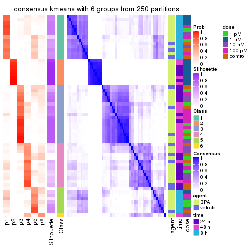
Heatmaps for the membership of samples in all partitions to see how consistent they are:
membership_heatmap(res, k = 2)

membership_heatmap(res, k = 3)
membership_heatmap(res, k = 4)
membership_heatmap(res, k = 5)
membership_heatmap(res, k = 6)
As soon as we have had the classes for columns, we can look for signatures which are significantly different between classes which can be candidate marks for certain classes. Following are the heatmaps for signatures.
Signature heatmaps where rows are scaled:
get_signatures(res, k = 2)
get_signatures(res, k = 3)
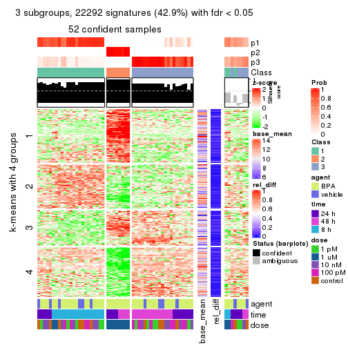
get_signatures(res, k = 4)
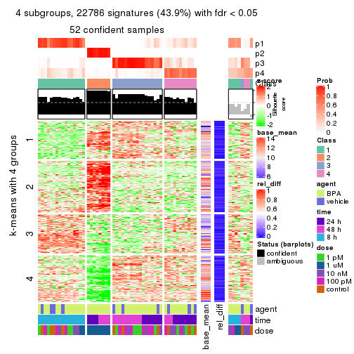
get_signatures(res, k = 5)
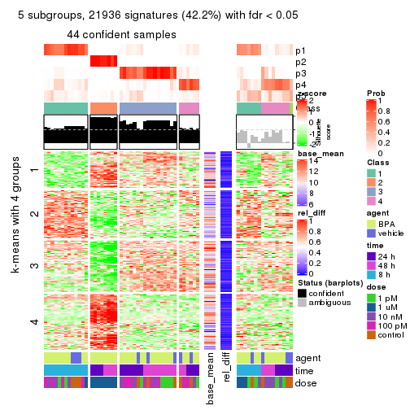
get_signatures(res, k = 6)
Signature heatmaps where rows are not scaled:
get_signatures(res, k = 2, scale_rows = FALSE)
get_signatures(res, k = 3, scale_rows = FALSE)
get_signatures(res, k = 4, scale_rows = FALSE)
get_signatures(res, k = 5, scale_rows = FALSE)
get_signatures(res, k = 6, scale_rows = FALSE)
Compare the overlap of signatures from different k:
compare_signatures(res)
get_signature() returns a data frame invisibly. TO get the list of signatures, the function
call should be assigned to a variable explicitly. In following code, if plot argument is set
to FALSE, no heatmap is plotted while only the differential analysis is performed.
# code only for demonstration
tb = get_signature(res, k = ..., plot = FALSE)
An example of the output of tb is:
#> which_row fdr mean_1 mean_2 scaled_mean_1 scaled_mean_2 km
#> 1 38 0.042760348 8.373488 9.131774 -0.5533452 0.5164555 1
#> 2 40 0.018707592 7.106213 8.469186 -0.6173731 0.5762149 1
#> 3 55 0.019134737 10.221463 11.207825 -0.6159697 0.5749050 1
#> 4 59 0.006059896 5.921854 7.869574 -0.6899429 0.6439467 1
#> 5 60 0.018055526 8.928898 10.211722 -0.6204761 0.5791110 1
#> 6 98 0.009384629 15.714769 14.887706 0.6635654 -0.6193277 2
...
The columns in tb are:
which_row: row indices corresponding to the input matrix.fdr: FDR for the differential test. mean_x: The mean value in group x.scaled_mean_x: The mean value in group x after rows are scaled.km: Row groups if k-means clustering is applied to rows.UMAP plot which shows how samples are separated.
dimension_reduction(res, k = 2, method = "UMAP")

dimension_reduction(res, k = 3, method = "UMAP")
dimension_reduction(res, k = 4, method = "UMAP")
dimension_reduction(res, k = 5, method = "UMAP")
dimension_reduction(res, k = 6, method = "UMAP")
Following heatmap shows how subgroups are split when increasing k:
collect_classes(res)
Test correlation between subgroups and known annotations. If the known annotation is numeric, one-way ANOVA test is applied, and if the known annotation is discrete, chi-squared contingency table test is applied.
test_to_known_factors(res)
#> n agent(p) time(p) dose(p) k
#> SD:kmeans 60 0.296 9.95e-02 1.87e-07 2
#> SD:kmeans 52 0.272 6.80e-08 1.48e-06 3
#> SD:kmeans 52 0.435 3.05e-10 2.46e-05 4
#> SD:kmeans 44 0.405 3.47e-08 7.14e-05 5
#> SD:kmeans 36 0.465 1.80e-06 3.18e-03 6
If matrix rows can be associated to genes, consider to use functional_enrichment(res,
...) to perform function enrichment for the signature genes. See this vignette for more detailed explanations.
The object with results only for a single top-value method and a single partition method can be extracted as:
res = res_list["SD", "skmeans"]
# you can also extract it by
# res = res_list["SD:skmeans"]
A summary of res and all the functions that can be applied to it:
res
#> A 'ConsensusPartition' object with k = 2, 3, 4, 5, 6.
#> On a matrix with 51941 rows and 60 columns.
#> Top rows (1000, 2000, 3000, 4000, 5000) are extracted by 'SD' method.
#> Subgroups are detected by 'skmeans' method.
#> Performed in total 1250 partitions by row resampling.
#> Best k for subgroups seems to be 2.
#>
#> Following methods can be applied to this 'ConsensusPartition' object:
#> [1] "cola_report" "collect_classes" "collect_plots"
#> [4] "collect_stats" "colnames" "compare_signatures"
#> [7] "consensus_heatmap" "dimension_reduction" "functional_enrichment"
#> [10] "get_anno_col" "get_anno" "get_classes"
#> [13] "get_consensus" "get_matrix" "get_membership"
#> [16] "get_param" "get_signatures" "get_stats"
#> [19] "is_best_k" "is_stable_k" "membership_heatmap"
#> [22] "ncol" "nrow" "plot_ecdf"
#> [25] "rownames" "select_partition_number" "show"
#> [28] "suggest_best_k" "test_to_known_factors"
collect_plots() function collects all the plots made from res for all k (number of partitions)
into one single page to provide an easy and fast comparison between different k.
collect_plots(res)
The plots are:
k and the heatmap of
predicted classes for each k.k.k.k.All the plots in panels can be made by individual functions and they are plotted later in this section.
select_partition_number() produces several plots showing different
statistics for choosing “optimized” k. There are following statistics:
k;k, the area increased is defined as \(A_k - A_{k-1}\).The detailed explanations of these statistics can be found in the cola vignette.
Generally speaking, lower PAC score, higher mean silhouette score or higher
concordance corresponds to better partition. Rand index and Jaccard index
measure how similar the current partition is compared to partition with k-1.
If they are too similar, we won't accept k is better than k-1.
select_partition_number(res)
The numeric values for all these statistics can be obtained by get_stats().
get_stats(res)
#> k 1-PAC mean_silhouette concordance area_increased Rand Jaccard
#> 2 2 0.207 0.658 0.829 0.5019 0.494 0.494
#> 3 3 0.138 0.398 0.657 0.3294 0.708 0.481
#> 4 4 0.231 0.317 0.588 0.1298 0.834 0.564
#> 5 5 0.299 0.296 0.546 0.0683 0.895 0.635
#> 6 6 0.409 0.201 0.494 0.0425 0.932 0.708
suggest_best_k() suggests the best \(k\) based on these statistics. The rules are as follows:
suggest_best_k(res)
#> [1] 2
Following shows the table of the partitions (You need to click the show/hide
code output link to see it). The membership matrix (columns with name p*)
is inferred by
clue::cl_consensus()
function with the SE method. Basically the value in the membership matrix
represents the probability to belong to a certain group. The finall class
label for an item is determined with the group with highest probability it
belongs to.
In get_classes() function, the entropy is calculated from the membership
matrix and the silhouette score is calculated from the consensus matrix.
cbind(get_classes(res, k = 2), get_membership(res, k = 2))
#> class entropy silhouette p1 p2
#> GSM439987 1 0.2423 0.817 0.960 0.040
#> GSM439988 1 0.2423 0.817 0.960 0.040
#> GSM439989 1 0.0376 0.805 0.996 0.004
#> GSM439990 1 0.1414 0.813 0.980 0.020
#> GSM439991 1 0.2603 0.816 0.956 0.044
#> GSM439992 1 0.0938 0.810 0.988 0.012
#> GSM439993 1 0.2236 0.815 0.964 0.036
#> GSM439994 1 0.9881 0.180 0.564 0.436
#> GSM439995 2 0.5408 0.761 0.124 0.876
#> GSM439996 1 0.7602 0.711 0.780 0.220
#> GSM439997 2 0.9795 0.385 0.416 0.584
#> GSM439998 2 0.9661 0.455 0.392 0.608
#> GSM440035 1 0.1633 0.813 0.976 0.024
#> GSM440036 1 0.0376 0.806 0.996 0.004
#> GSM440037 1 0.6247 0.778 0.844 0.156
#> GSM440038 1 0.8016 0.676 0.756 0.244
#> GSM440011 1 0.3879 0.812 0.924 0.076
#> GSM440012 1 0.8144 0.669 0.748 0.252
#> GSM440013 1 0.7528 0.707 0.784 0.216
#> GSM440014 1 0.1414 0.814 0.980 0.020
#> GSM439999 1 0.0938 0.809 0.988 0.012
#> GSM440000 1 0.9286 0.496 0.656 0.344
#> GSM440001 1 0.0000 0.804 1.000 0.000
#> GSM440002 1 0.2236 0.816 0.964 0.036
#> GSM440023 1 0.9922 0.177 0.552 0.448
#> GSM440024 1 0.9896 0.231 0.560 0.440
#> GSM440025 2 0.7056 0.715 0.192 0.808
#> GSM440026 2 0.9000 0.563 0.316 0.684
#> GSM440039 1 0.9815 0.215 0.580 0.420
#> GSM440040 1 0.3431 0.815 0.936 0.064
#> GSM440041 1 0.7453 0.723 0.788 0.212
#> GSM440042 1 0.4939 0.803 0.892 0.108
#> GSM440015 2 0.9954 0.281 0.460 0.540
#> GSM440016 2 0.9635 0.452 0.388 0.612
#> GSM440017 1 0.6623 0.759 0.828 0.172
#> GSM440018 2 0.6438 0.742 0.164 0.836
#> GSM440003 2 0.9608 0.484 0.384 0.616
#> GSM440004 2 0.7602 0.709 0.220 0.780
#> GSM440005 1 0.3733 0.814 0.928 0.072
#> GSM440006 1 0.5946 0.785 0.856 0.144
#> GSM440027 2 0.0000 0.767 0.000 1.000
#> GSM440028 2 0.0000 0.767 0.000 1.000
#> GSM440029 2 0.0000 0.767 0.000 1.000
#> GSM440030 2 0.0000 0.767 0.000 1.000
#> GSM440043 2 0.2603 0.771 0.044 0.956
#> GSM440044 2 0.9996 0.159 0.488 0.512
#> GSM440045 2 0.6343 0.747 0.160 0.840
#> GSM440046 2 0.3584 0.770 0.068 0.932
#> GSM440019 1 0.7376 0.723 0.792 0.208
#> GSM440020 2 0.9491 0.504 0.368 0.632
#> GSM440021 2 0.6887 0.732 0.184 0.816
#> GSM440022 2 0.4815 0.766 0.104 0.896
#> GSM440007 1 0.9661 0.360 0.608 0.392
#> GSM440008 2 0.1184 0.768 0.016 0.984
#> GSM440009 2 0.9580 0.457 0.380 0.620
#> GSM440010 2 0.9993 0.113 0.484 0.516
#> GSM440031 2 0.0000 0.767 0.000 1.000
#> GSM440032 2 0.0000 0.767 0.000 1.000
#> GSM440033 2 0.0000 0.767 0.000 1.000
#> GSM440034 2 0.0000 0.767 0.000 1.000
cbind(get_classes(res, k = 3), get_membership(res, k = 3))
#> class entropy silhouette p1 p2 p3
#> GSM439987 1 0.4782 0.62139 0.820 0.016 0.164
#> GSM439988 1 0.6446 0.60676 0.736 0.052 0.212
#> GSM439989 1 0.4683 0.63643 0.836 0.024 0.140
#> GSM439990 1 0.5406 0.63063 0.780 0.020 0.200
#> GSM439991 1 0.6379 0.58152 0.712 0.032 0.256
#> GSM439992 1 0.6105 0.57815 0.724 0.024 0.252
#> GSM439993 1 0.7091 0.41528 0.560 0.024 0.416
#> GSM439994 3 0.8784 0.18774 0.368 0.120 0.512
#> GSM439995 3 0.8141 0.50711 0.116 0.260 0.624
#> GSM439996 3 0.6881 -0.09667 0.388 0.020 0.592
#> GSM439997 3 0.7880 0.48884 0.168 0.164 0.668
#> GSM439998 3 0.8484 0.43834 0.196 0.188 0.616
#> GSM440035 1 0.4539 0.63025 0.836 0.016 0.148
#> GSM440036 1 0.5506 0.62474 0.764 0.016 0.220
#> GSM440037 1 0.7442 0.47967 0.588 0.044 0.368
#> GSM440038 1 0.8080 0.46313 0.640 0.128 0.232
#> GSM440011 1 0.6984 0.57051 0.720 0.088 0.192
#> GSM440012 1 0.9409 0.18707 0.460 0.180 0.360
#> GSM440013 1 0.7274 0.50933 0.644 0.052 0.304
#> GSM440014 1 0.5581 0.62550 0.792 0.040 0.168
#> GSM439999 1 0.5171 0.63357 0.784 0.012 0.204
#> GSM440000 1 0.9428 0.07579 0.428 0.176 0.396
#> GSM440001 1 0.3826 0.63958 0.868 0.008 0.124
#> GSM440002 1 0.5574 0.62059 0.784 0.032 0.184
#> GSM440023 2 0.9423 0.00367 0.320 0.484 0.196
#> GSM440024 2 0.9663 -0.15208 0.372 0.416 0.212
#> GSM440025 2 0.8148 0.35351 0.200 0.644 0.156
#> GSM440026 2 0.8825 0.18272 0.288 0.560 0.152
#> GSM440039 1 0.8995 0.01740 0.492 0.136 0.372
#> GSM440040 1 0.6852 0.57191 0.664 0.036 0.300
#> GSM440041 3 0.9088 -0.03241 0.396 0.140 0.464
#> GSM440042 1 0.7948 0.31836 0.520 0.060 0.420
#> GSM440015 3 0.9221 0.38256 0.284 0.192 0.524
#> GSM440016 3 0.8894 0.40047 0.236 0.192 0.572
#> GSM440017 3 0.7164 -0.26366 0.452 0.024 0.524
#> GSM440018 2 0.9059 -0.21034 0.136 0.456 0.408
#> GSM440003 3 0.9509 0.29473 0.336 0.200 0.464
#> GSM440004 3 0.9260 0.30422 0.160 0.376 0.464
#> GSM440005 1 0.7806 0.45913 0.584 0.064 0.352
#> GSM440006 1 0.8144 0.33709 0.544 0.076 0.380
#> GSM440027 2 0.0000 0.70681 0.000 1.000 0.000
#> GSM440028 2 0.0000 0.70681 0.000 1.000 0.000
#> GSM440029 2 0.0000 0.70681 0.000 1.000 0.000
#> GSM440030 2 0.0237 0.70324 0.000 0.996 0.004
#> GSM440043 3 0.7748 0.17613 0.048 0.452 0.500
#> GSM440044 3 0.8880 0.36867 0.268 0.168 0.564
#> GSM440045 3 0.8652 0.48161 0.140 0.284 0.576
#> GSM440046 3 0.8046 0.29172 0.068 0.396 0.536
#> GSM440019 3 0.7793 -0.10406 0.424 0.052 0.524
#> GSM440020 3 0.7199 0.51155 0.108 0.180 0.712
#> GSM440021 3 0.7222 0.51748 0.084 0.220 0.696
#> GSM440022 3 0.7958 0.32945 0.064 0.392 0.544
#> GSM440007 3 0.9531 0.16035 0.344 0.200 0.456
#> GSM440008 2 0.7023 0.19972 0.032 0.624 0.344
#> GSM440009 3 0.9489 0.39979 0.192 0.352 0.456
#> GSM440010 3 0.9889 0.29944 0.292 0.300 0.408
#> GSM440031 2 0.0000 0.70681 0.000 1.000 0.000
#> GSM440032 2 0.0000 0.70681 0.000 1.000 0.000
#> GSM440033 2 0.0000 0.70681 0.000 1.000 0.000
#> GSM440034 2 0.0000 0.70681 0.000 1.000 0.000
cbind(get_classes(res, k = 4), get_membership(res, k = 4))
#> class entropy silhouette p1 p2 p3 p4
#> GSM439987 1 0.607 0.42665 0.712 0.012 0.140 0.136
#> GSM439988 1 0.678 0.36422 0.624 0.024 0.080 0.272
#> GSM439989 1 0.563 0.43885 0.720 0.012 0.056 0.212
#> GSM439990 1 0.648 0.41381 0.684 0.028 0.092 0.196
#> GSM439991 1 0.782 0.11683 0.480 0.024 0.140 0.356
#> GSM439992 1 0.760 0.12210 0.452 0.024 0.108 0.416
#> GSM439993 4 0.674 0.27300 0.256 0.000 0.144 0.600
#> GSM439994 3 0.810 0.13697 0.280 0.032 0.504 0.184
#> GSM439995 3 0.671 0.41666 0.068 0.132 0.700 0.100
#> GSM439996 4 0.746 0.29245 0.148 0.016 0.284 0.552
#> GSM439997 3 0.795 0.17846 0.132 0.048 0.540 0.280
#> GSM439998 3 0.872 -0.03291 0.128 0.088 0.424 0.360
#> GSM440035 1 0.695 0.36846 0.632 0.024 0.112 0.232
#> GSM440036 1 0.624 0.42570 0.680 0.016 0.080 0.224
#> GSM440037 1 0.844 0.14364 0.452 0.060 0.140 0.348
#> GSM440038 1 0.785 0.30864 0.572 0.044 0.172 0.212
#> GSM440011 1 0.742 0.37404 0.620 0.044 0.140 0.196
#> GSM440012 1 0.855 -0.00596 0.408 0.056 0.156 0.380
#> GSM440013 1 0.772 0.30282 0.564 0.028 0.220 0.188
#> GSM440014 1 0.695 0.38187 0.608 0.012 0.124 0.256
#> GSM439999 1 0.578 0.43172 0.696 0.000 0.092 0.212
#> GSM440000 4 0.897 -0.07418 0.352 0.092 0.156 0.400
#> GSM440001 1 0.496 0.45363 0.776 0.012 0.044 0.168
#> GSM440002 1 0.713 0.37691 0.604 0.016 0.140 0.240
#> GSM440023 2 0.924 -0.04064 0.288 0.408 0.104 0.200
#> GSM440024 2 0.900 -0.05579 0.204 0.412 0.076 0.308
#> GSM440025 2 0.847 0.31216 0.128 0.552 0.136 0.184
#> GSM440026 2 0.848 0.22126 0.260 0.520 0.104 0.116
#> GSM440039 3 0.827 0.06818 0.360 0.028 0.424 0.188
#> GSM440040 1 0.770 0.12873 0.484 0.012 0.164 0.340
#> GSM440041 4 0.840 0.30477 0.240 0.064 0.176 0.520
#> GSM440042 4 0.797 0.13806 0.292 0.008 0.252 0.448
#> GSM440015 3 0.887 0.19163 0.264 0.076 0.456 0.204
#> GSM440016 3 0.897 0.10866 0.196 0.080 0.432 0.292
#> GSM440017 4 0.787 0.28650 0.240 0.020 0.216 0.524
#> GSM440018 3 0.883 0.32107 0.100 0.256 0.484 0.160
#> GSM440003 3 0.911 0.27383 0.212 0.136 0.472 0.180
#> GSM440004 3 0.903 0.33581 0.132 0.192 0.484 0.192
#> GSM440005 1 0.738 0.15906 0.464 0.016 0.104 0.416
#> GSM440006 4 0.818 0.21458 0.268 0.056 0.148 0.528
#> GSM440027 2 0.000 0.77676 0.000 1.000 0.000 0.000
#> GSM440028 2 0.000 0.77676 0.000 1.000 0.000 0.000
#> GSM440029 2 0.000 0.77676 0.000 1.000 0.000 0.000
#> GSM440030 2 0.000 0.77676 0.000 1.000 0.000 0.000
#> GSM440043 3 0.734 0.40829 0.032 0.216 0.612 0.140
#> GSM440044 3 0.844 0.01484 0.212 0.036 0.448 0.304
#> GSM440045 3 0.751 0.36922 0.088 0.084 0.624 0.204
#> GSM440046 3 0.684 0.42699 0.056 0.180 0.676 0.088
#> GSM440019 4 0.777 0.33909 0.196 0.020 0.248 0.536
#> GSM440020 3 0.657 0.29225 0.032 0.056 0.640 0.272
#> GSM440021 3 0.705 0.29410 0.048 0.064 0.612 0.276
#> GSM440022 3 0.770 0.38443 0.048 0.164 0.596 0.192
#> GSM440007 4 0.927 0.25284 0.252 0.092 0.264 0.392
#> GSM440008 3 0.774 0.32122 0.040 0.380 0.484 0.096
#> GSM440009 3 0.980 0.00195 0.160 0.240 0.304 0.296
#> GSM440010 4 0.976 0.09861 0.240 0.152 0.292 0.316
#> GSM440031 2 0.000 0.77676 0.000 1.000 0.000 0.000
#> GSM440032 2 0.000 0.77676 0.000 1.000 0.000 0.000
#> GSM440033 2 0.000 0.77676 0.000 1.000 0.000 0.000
#> GSM440034 2 0.000 0.77676 0.000 1.000 0.000 0.000
cbind(get_classes(res, k = 5), get_membership(res, k = 5))
#> class entropy silhouette p1 p2 p3 p4 p5
#> GSM439987 1 0.6693 0.3861 0.616 0.012 0.056 0.104 0.212
#> GSM439988 1 0.7795 0.1485 0.476 0.028 0.040 0.208 0.248
#> GSM439989 1 0.6314 0.2295 0.656 0.004 0.060 0.124 0.156
#> GSM439990 1 0.6749 0.1988 0.616 0.016 0.040 0.160 0.168
#> GSM439991 1 0.8155 0.0912 0.404 0.008 0.096 0.288 0.204
#> GSM439992 4 0.7666 0.0962 0.344 0.008 0.084 0.440 0.124
#> GSM439993 4 0.6480 0.3109 0.144 0.020 0.084 0.668 0.084
#> GSM439994 3 0.8808 0.1438 0.200 0.016 0.352 0.216 0.216
#> GSM439995 3 0.7145 0.3813 0.040 0.044 0.604 0.164 0.148
#> GSM439996 4 0.7066 0.2836 0.076 0.008 0.184 0.588 0.144
#> GSM439997 3 0.8005 0.2865 0.076 0.044 0.512 0.228 0.140
#> GSM439998 4 0.8269 0.0951 0.088 0.040 0.296 0.444 0.132
#> GSM440035 1 0.7476 0.3463 0.536 0.008 0.080 0.192 0.184
#> GSM440036 1 0.7111 0.3344 0.568 0.004 0.072 0.200 0.156
#> GSM440037 5 0.8338 0.2388 0.336 0.036 0.056 0.208 0.364
#> GSM440038 1 0.7657 0.0194 0.500 0.032 0.072 0.096 0.300
#> GSM440011 1 0.7483 0.2754 0.552 0.028 0.068 0.120 0.232
#> GSM440012 5 0.8274 0.2549 0.332 0.020 0.068 0.228 0.352
#> GSM440013 1 0.7840 0.1691 0.504 0.024 0.144 0.080 0.248
#> GSM440014 1 0.7324 0.2802 0.576 0.020 0.072 0.144 0.188
#> GSM439999 1 0.6188 0.2571 0.648 0.004 0.036 0.124 0.188
#> GSM440000 5 0.9037 0.2576 0.276 0.044 0.140 0.196 0.344
#> GSM440001 1 0.6033 0.3347 0.656 0.004 0.024 0.152 0.164
#> GSM440002 1 0.7077 0.3821 0.596 0.016 0.064 0.148 0.176
#> GSM440023 2 0.8922 -0.2585 0.252 0.364 0.040 0.124 0.220
#> GSM440024 5 0.9398 0.1247 0.236 0.220 0.056 0.192 0.296
#> GSM440025 2 0.8447 0.1411 0.104 0.492 0.088 0.100 0.216
#> GSM440026 2 0.9180 -0.1011 0.228 0.372 0.124 0.072 0.204
#> GSM440039 3 0.8314 0.2244 0.256 0.024 0.404 0.072 0.244
#> GSM440040 4 0.7303 0.1994 0.260 0.012 0.072 0.540 0.116
#> GSM440041 4 0.8629 0.1172 0.196 0.028 0.128 0.412 0.236
#> GSM440042 4 0.8452 0.2283 0.220 0.016 0.152 0.428 0.184
#> GSM440015 3 0.8380 0.2788 0.168 0.024 0.424 0.108 0.276
#> GSM440016 3 0.9360 -0.0303 0.168 0.092 0.320 0.128 0.292
#> GSM440017 4 0.8093 0.0494 0.204 0.008 0.100 0.436 0.252
#> GSM440018 3 0.8759 0.3093 0.080 0.156 0.448 0.096 0.220
#> GSM440003 3 0.8671 0.3036 0.132 0.052 0.432 0.128 0.256
#> GSM440004 3 0.8399 0.3602 0.072 0.112 0.472 0.088 0.256
#> GSM440005 4 0.7376 0.1167 0.272 0.008 0.060 0.512 0.148
#> GSM440006 4 0.8136 0.2391 0.176 0.028 0.100 0.492 0.204
#> GSM440027 2 0.0290 0.8045 0.000 0.992 0.000 0.000 0.008
#> GSM440028 2 0.0000 0.8071 0.000 1.000 0.000 0.000 0.000
#> GSM440029 2 0.0000 0.8071 0.000 1.000 0.000 0.000 0.000
#> GSM440030 2 0.0162 0.8049 0.000 0.996 0.004 0.000 0.000
#> GSM440043 3 0.6846 0.4158 0.044 0.088 0.656 0.120 0.092
#> GSM440044 3 0.8490 0.0741 0.120 0.044 0.432 0.284 0.120
#> GSM440045 3 0.7263 0.3475 0.048 0.048 0.600 0.168 0.136
#> GSM440046 3 0.5758 0.4386 0.060 0.068 0.728 0.024 0.120
#> GSM440019 4 0.8445 0.2754 0.148 0.036 0.220 0.464 0.132
#> GSM440020 3 0.7864 0.2102 0.072 0.024 0.496 0.248 0.160
#> GSM440021 3 0.7607 0.2784 0.020 0.052 0.516 0.204 0.208
#> GSM440022 3 0.7392 0.3811 0.024 0.136 0.588 0.152 0.100
#> GSM440007 4 0.8687 0.1676 0.152 0.028 0.248 0.404 0.168
#> GSM440008 3 0.7529 0.3447 0.024 0.236 0.544 0.076 0.120
#> GSM440009 4 0.9575 0.1303 0.128 0.124 0.248 0.320 0.180
#> GSM440010 4 0.9429 0.1523 0.128 0.112 0.196 0.364 0.200
#> GSM440031 2 0.0162 0.8053 0.000 0.996 0.000 0.000 0.004
#> GSM440032 2 0.0000 0.8071 0.000 1.000 0.000 0.000 0.000
#> GSM440033 2 0.0000 0.8071 0.000 1.000 0.000 0.000 0.000
#> GSM440034 2 0.0162 0.8058 0.000 0.996 0.000 0.000 0.004
cbind(get_classes(res, k = 6), get_membership(res, k = 6))
#> class entropy silhouette p1 p2 p3 p4 p5 p6
#> GSM439987 6 0.6006 0.24294 0.152 0.008 0.052 0.056 0.060 0.672
#> GSM439988 1 0.8115 0.06981 0.400 0.028 0.028 0.164 0.104 0.276
#> GSM439989 1 0.6801 0.17329 0.492 0.012 0.020 0.076 0.064 0.336
#> GSM439990 1 0.7428 0.09928 0.432 0.000 0.040 0.100 0.112 0.316
#> GSM439991 6 0.7730 0.06815 0.076 0.016 0.032 0.240 0.184 0.452
#> GSM439992 4 0.8450 0.11498 0.164 0.024 0.036 0.372 0.168 0.236
#> GSM439993 4 0.6091 0.20589 0.140 0.000 0.060 0.656 0.048 0.096
#> GSM439994 3 0.8508 -0.00649 0.044 0.008 0.268 0.164 0.264 0.252
#> GSM439995 3 0.6541 0.27551 0.024 0.048 0.644 0.112 0.120 0.052
#> GSM439996 4 0.6889 0.15189 0.124 0.028 0.112 0.612 0.092 0.032
#> GSM439997 3 0.8101 0.11089 0.068 0.008 0.376 0.252 0.232 0.064
#> GSM439998 4 0.7582 -0.02020 0.052 0.024 0.288 0.456 0.144 0.036
#> GSM440035 6 0.7656 0.12472 0.188 0.004 0.032 0.168 0.136 0.472
#> GSM440036 6 0.7451 0.09263 0.220 0.004 0.028 0.120 0.140 0.488
#> GSM440037 1 0.6869 0.25888 0.604 0.012 0.068 0.116 0.056 0.144
#> GSM440038 1 0.7669 0.07411 0.432 0.020 0.056 0.064 0.100 0.328
#> GSM440011 6 0.7153 0.12562 0.244 0.008 0.048 0.048 0.132 0.520
#> GSM440012 1 0.7052 0.26061 0.588 0.020 0.052 0.168 0.100 0.072
#> GSM440013 6 0.8007 -0.00756 0.348 0.020 0.096 0.044 0.124 0.368
#> GSM440014 1 0.7178 0.07274 0.424 0.004 0.028 0.100 0.080 0.364
#> GSM439999 1 0.6988 0.13766 0.496 0.004 0.024 0.080 0.100 0.296
#> GSM440000 1 0.7352 0.26316 0.580 0.024 0.092 0.108 0.116 0.080
#> GSM440001 6 0.7012 0.00376 0.336 0.012 0.016 0.092 0.076 0.468
#> GSM440002 6 0.5979 0.21637 0.120 0.008 0.060 0.052 0.076 0.684
#> GSM440023 2 0.9020 -0.22235 0.164 0.352 0.048 0.128 0.224 0.084
#> GSM440024 1 0.9185 0.08846 0.316 0.224 0.036 0.164 0.132 0.128
#> GSM440025 2 0.8387 0.01619 0.208 0.440 0.060 0.076 0.164 0.052
#> GSM440026 2 0.8792 -0.20282 0.100 0.328 0.072 0.040 0.172 0.288
#> GSM440039 6 0.8032 -0.10006 0.076 0.008 0.308 0.048 0.212 0.348
#> GSM440040 4 0.8060 0.13466 0.124 0.012 0.036 0.400 0.160 0.268
#> GSM440041 4 0.8730 0.06946 0.252 0.024 0.084 0.344 0.192 0.104
#> GSM440042 4 0.8867 0.02290 0.128 0.016 0.104 0.324 0.228 0.200
#> GSM440015 3 0.8504 0.09993 0.056 0.032 0.344 0.080 0.208 0.280
#> GSM440016 3 0.8726 0.10330 0.280 0.024 0.336 0.116 0.160 0.084
#> GSM440017 4 0.8332 0.12682 0.212 0.012 0.120 0.428 0.128 0.100
#> GSM440018 3 0.9119 0.12406 0.176 0.104 0.384 0.088 0.152 0.096
#> GSM440003 3 0.8330 0.17905 0.084 0.040 0.436 0.060 0.224 0.156
#> GSM440004 3 0.7972 0.22701 0.084 0.072 0.460 0.024 0.256 0.104
#> GSM440005 4 0.8849 0.06489 0.164 0.028 0.072 0.324 0.148 0.264
#> GSM440006 4 0.8167 0.15431 0.156 0.012 0.064 0.448 0.144 0.176
#> GSM440027 2 0.0000 0.78689 0.000 1.000 0.000 0.000 0.000 0.000
#> GSM440028 2 0.0363 0.78137 0.000 0.988 0.000 0.000 0.012 0.000
#> GSM440029 2 0.0000 0.78689 0.000 1.000 0.000 0.000 0.000 0.000
#> GSM440030 2 0.0405 0.78046 0.000 0.988 0.004 0.000 0.008 0.000
#> GSM440043 3 0.7259 0.28044 0.036 0.076 0.572 0.092 0.180 0.044
#> GSM440044 3 0.8617 -0.03148 0.076 0.024 0.336 0.180 0.288 0.096
#> GSM440045 3 0.6464 0.26724 0.048 0.036 0.640 0.088 0.160 0.028
#> GSM440046 3 0.5332 0.31563 0.036 0.044 0.748 0.032 0.080 0.060
#> GSM440019 4 0.8287 0.07332 0.108 0.012 0.144 0.444 0.184 0.108
#> GSM440020 3 0.7350 0.16392 0.044 0.004 0.452 0.268 0.192 0.040
#> GSM440021 3 0.8094 0.12759 0.112 0.020 0.432 0.232 0.164 0.040
#> GSM440022 3 0.7786 0.20807 0.068 0.068 0.496 0.144 0.204 0.020
#> GSM440007 4 0.8412 0.00944 0.056 0.032 0.128 0.428 0.148 0.208
#> GSM440008 3 0.7037 0.15272 0.024 0.220 0.540 0.084 0.124 0.008
#> GSM440009 5 0.9396 0.12884 0.056 0.120 0.244 0.216 0.252 0.112
#> GSM440010 5 0.9395 0.07018 0.132 0.092 0.132 0.260 0.292 0.092
#> GSM440031 2 0.0000 0.78689 0.000 1.000 0.000 0.000 0.000 0.000
#> GSM440032 2 0.0000 0.78689 0.000 1.000 0.000 0.000 0.000 0.000
#> GSM440033 2 0.0000 0.78689 0.000 1.000 0.000 0.000 0.000 0.000
#> GSM440034 2 0.0000 0.78689 0.000 1.000 0.000 0.000 0.000 0.000
Heatmaps for the consensus matrix. It visualizes the probability of two samples to be in a same group.
consensus_heatmap(res, k = 2)

consensus_heatmap(res, k = 3)
consensus_heatmap(res, k = 4)
consensus_heatmap(res, k = 5)
consensus_heatmap(res, k = 6)
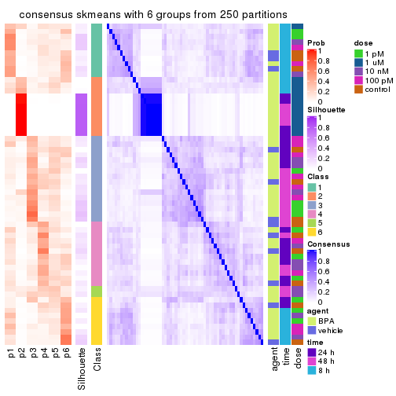
Heatmaps for the membership of samples in all partitions to see how consistent they are:
membership_heatmap(res, k = 2)
membership_heatmap(res, k = 3)
membership_heatmap(res, k = 4)
membership_heatmap(res, k = 5)
membership_heatmap(res, k = 6)
As soon as we have had the classes for columns, we can look for signatures which are significantly different between classes which can be candidate marks for certain classes. Following are the heatmaps for signatures.
Signature heatmaps where rows are scaled:
get_signatures(res, k = 2)
get_signatures(res, k = 3)
get_signatures(res, k = 4)

get_signatures(res, k = 5)

get_signatures(res, k = 6)

Signature heatmaps where rows are not scaled:
get_signatures(res, k = 2, scale_rows = FALSE)
get_signatures(res, k = 3, scale_rows = FALSE)
get_signatures(res, k = 4, scale_rows = FALSE)

get_signatures(res, k = 5, scale_rows = FALSE)

get_signatures(res, k = 6, scale_rows = FALSE)

Compare the overlap of signatures from different k:
compare_signatures(res)
get_signature() returns a data frame invisibly. TO get the list of signatures, the function
call should be assigned to a variable explicitly. In following code, if plot argument is set
to FALSE, no heatmap is plotted while only the differential analysis is performed.
# code only for demonstration
tb = get_signature(res, k = ..., plot = FALSE)
An example of the output of tb is:
#> which_row fdr mean_1 mean_2 scaled_mean_1 scaled_mean_2 km
#> 1 38 0.042760348 8.373488 9.131774 -0.5533452 0.5164555 1
#> 2 40 0.018707592 7.106213 8.469186 -0.6173731 0.5762149 1
#> 3 55 0.019134737 10.221463 11.207825 -0.6159697 0.5749050 1
#> 4 59 0.006059896 5.921854 7.869574 -0.6899429 0.6439467 1
#> 5 60 0.018055526 8.928898 10.211722 -0.6204761 0.5791110 1
#> 6 98 0.009384629 15.714769 14.887706 0.6635654 -0.6193277 2
...
The columns in tb are:
which_row: row indices corresponding to the input matrix.fdr: FDR for the differential test. mean_x: The mean value in group x.scaled_mean_x: The mean value in group x after rows are scaled.km: Row groups if k-means clustering is applied to rows.UMAP plot which shows how samples are separated.
dimension_reduction(res, k = 2, method = "UMAP")
dimension_reduction(res, k = 3, method = "UMAP")
dimension_reduction(res, k = 4, method = "UMAP")
dimension_reduction(res, k = 5, method = "UMAP")
dimension_reduction(res, k = 6, method = "UMAP")
Following heatmap shows how subgroups are split when increasing k:
collect_classes(res)
Test correlation between subgroups and known annotations. If the known annotation is numeric, one-way ANOVA test is applied, and if the known annotation is discrete, chi-squared contingency table test is applied.
test_to_known_factors(res)
#> n agent(p) time(p) dose(p) k
#> SD:skmeans 46 0.0704 0.000185 0.001099 2
#> SD:skmeans 26 0.1157 0.000125 0.000165 3
#> SD:skmeans 8 NA NA NA 4
#> SD:skmeans 8 NA NA NA 5
#> SD:skmeans 8 NA NA NA 6
If matrix rows can be associated to genes, consider to use functional_enrichment(res,
...) to perform function enrichment for the signature genes. See this vignette for more detailed explanations.
The object with results only for a single top-value method and a single partition method can be extracted as:
res = res_list["SD", "pam"]
# you can also extract it by
# res = res_list["SD:pam"]
A summary of res and all the functions that can be applied to it:
res
#> A 'ConsensusPartition' object with k = 2, 3, 4, 5, 6.
#> On a matrix with 51941 rows and 60 columns.
#> Top rows (1000, 2000, 3000, 4000, 5000) are extracted by 'SD' method.
#> Subgroups are detected by 'pam' method.
#> Performed in total 1250 partitions by row resampling.
#> Best k for subgroups seems to be 2.
#>
#> Following methods can be applied to this 'ConsensusPartition' object:
#> [1] "cola_report" "collect_classes" "collect_plots"
#> [4] "collect_stats" "colnames" "compare_signatures"
#> [7] "consensus_heatmap" "dimension_reduction" "functional_enrichment"
#> [10] "get_anno_col" "get_anno" "get_classes"
#> [13] "get_consensus" "get_matrix" "get_membership"
#> [16] "get_param" "get_signatures" "get_stats"
#> [19] "is_best_k" "is_stable_k" "membership_heatmap"
#> [22] "ncol" "nrow" "plot_ecdf"
#> [25] "rownames" "select_partition_number" "show"
#> [28] "suggest_best_k" "test_to_known_factors"
collect_plots() function collects all the plots made from res for all k (number of partitions)
into one single page to provide an easy and fast comparison between different k.
collect_plots(res)
The plots are:
k and the heatmap of
predicted classes for each k.k.k.k.All the plots in panels can be made by individual functions and they are plotted later in this section.
select_partition_number() produces several plots showing different
statistics for choosing “optimized” k. There are following statistics:
k;k, the area increased is defined as \(A_k - A_{k-1}\).The detailed explanations of these statistics can be found in the cola vignette.
Generally speaking, lower PAC score, higher mean silhouette score or higher
concordance corresponds to better partition. Rand index and Jaccard index
measure how similar the current partition is compared to partition with k-1.
If they are too similar, we won't accept k is better than k-1.
select_partition_number(res)
The numeric values for all these statistics can be obtained by get_stats().
get_stats(res)
#> k 1-PAC mean_silhouette concordance area_increased Rand Jaccard
#> 2 2 1.000 0.998 0.998 0.2368 0.765 0.765
#> 3 3 0.276 0.648 0.776 1.5212 0.619 0.501
#> 4 4 0.312 0.476 0.684 0.1739 0.856 0.647
#> 5 5 0.341 0.398 0.650 0.0469 0.956 0.853
#> 6 6 0.359 0.438 0.648 0.0204 0.982 0.933
suggest_best_k() suggests the best \(k\) based on these statistics. The rules are as follows:
suggest_best_k(res)
#> [1] 2
Following shows the table of the partitions (You need to click the show/hide
code output link to see it). The membership matrix (columns with name p*)
is inferred by
clue::cl_consensus()
function with the SE method. Basically the value in the membership matrix
represents the probability to belong to a certain group. The finall class
label for an item is determined with the group with highest probability it
belongs to.
In get_classes() function, the entropy is calculated from the membership
matrix and the silhouette score is calculated from the consensus matrix.
cbind(get_classes(res, k = 2), get_membership(res, k = 2))
#> class entropy silhouette p1 p2
#> GSM439987 1 0.0000 0.998 1.000 0.000
#> GSM439988 1 0.0000 0.998 1.000 0.000
#> GSM439989 1 0.0000 0.998 1.000 0.000
#> GSM439990 1 0.0000 0.998 1.000 0.000
#> GSM439991 1 0.0376 0.997 0.996 0.004
#> GSM439992 1 0.0000 0.998 1.000 0.000
#> GSM439993 1 0.0000 0.998 1.000 0.000
#> GSM439994 1 0.0376 0.997 0.996 0.004
#> GSM439995 1 0.0376 0.997 0.996 0.004
#> GSM439996 1 0.0376 0.997 0.996 0.004
#> GSM439997 1 0.0000 0.998 1.000 0.000
#> GSM439998 1 0.0376 0.997 0.996 0.004
#> GSM440035 1 0.0376 0.997 0.996 0.004
#> GSM440036 1 0.0000 0.998 1.000 0.000
#> GSM440037 1 0.0000 0.998 1.000 0.000
#> GSM440038 1 0.0000 0.998 1.000 0.000
#> GSM440011 1 0.0376 0.997 0.996 0.004
#> GSM440012 1 0.0000 0.998 1.000 0.000
#> GSM440013 1 0.0376 0.997 0.996 0.004
#> GSM440014 1 0.0000 0.998 1.000 0.000
#> GSM439999 1 0.0000 0.998 1.000 0.000
#> GSM440000 1 0.0000 0.998 1.000 0.000
#> GSM440001 1 0.0000 0.998 1.000 0.000
#> GSM440002 1 0.0000 0.998 1.000 0.000
#> GSM440023 1 0.0000 0.998 1.000 0.000
#> GSM440024 1 0.0938 0.988 0.988 0.012
#> GSM440025 1 0.0000 0.998 1.000 0.000
#> GSM440026 1 0.0000 0.998 1.000 0.000
#> GSM440039 1 0.0000 0.998 1.000 0.000
#> GSM440040 1 0.0000 0.998 1.000 0.000
#> GSM440041 1 0.0000 0.998 1.000 0.000
#> GSM440042 1 0.0376 0.997 0.996 0.004
#> GSM440015 1 0.0000 0.998 1.000 0.000
#> GSM440016 1 0.0376 0.997 0.996 0.004
#> GSM440017 1 0.0000 0.998 1.000 0.000
#> GSM440018 1 0.0000 0.998 1.000 0.000
#> GSM440003 1 0.0000 0.998 1.000 0.000
#> GSM440004 1 0.0000 0.998 1.000 0.000
#> GSM440005 1 0.0376 0.997 0.996 0.004
#> GSM440006 1 0.0376 0.997 0.996 0.004
#> GSM440027 2 0.0376 0.998 0.004 0.996
#> GSM440028 2 0.0000 0.998 0.000 1.000
#> GSM440029 2 0.0376 0.998 0.004 0.996
#> GSM440030 2 0.0376 0.998 0.004 0.996
#> GSM440043 1 0.0376 0.997 0.996 0.004
#> GSM440044 1 0.0376 0.997 0.996 0.004
#> GSM440045 1 0.0376 0.997 0.996 0.004
#> GSM440046 1 0.0000 0.998 1.000 0.000
#> GSM440019 1 0.0000 0.998 1.000 0.000
#> GSM440020 1 0.0376 0.997 0.996 0.004
#> GSM440021 1 0.0000 0.998 1.000 0.000
#> GSM440022 1 0.0376 0.997 0.996 0.004
#> GSM440007 1 0.0376 0.997 0.996 0.004
#> GSM440008 1 0.0000 0.998 1.000 0.000
#> GSM440009 1 0.0000 0.998 1.000 0.000
#> GSM440010 1 0.0000 0.998 1.000 0.000
#> GSM440031 2 0.0000 0.998 0.000 1.000
#> GSM440032 2 0.0000 0.998 0.000 1.000
#> GSM440033 2 0.0000 0.998 0.000 1.000
#> GSM440034 2 0.0376 0.998 0.004 0.996
cbind(get_classes(res, k = 3), get_membership(res, k = 3))
#> class entropy silhouette p1 p2 p3
#> GSM439987 1 0.334 0.7320 0.880 0.000 0.120
#> GSM439988 1 0.506 0.7001 0.756 0.000 0.244
#> GSM439989 1 0.550 0.5570 0.708 0.000 0.292
#> GSM439990 1 0.245 0.7066 0.924 0.000 0.076
#> GSM439991 3 0.620 0.5442 0.424 0.000 0.576
#> GSM439992 1 0.628 0.0922 0.540 0.000 0.460
#> GSM439993 1 0.288 0.7016 0.904 0.000 0.096
#> GSM439994 3 0.553 0.5354 0.296 0.000 0.704
#> GSM439995 3 0.312 0.6949 0.108 0.000 0.892
#> GSM439996 3 0.497 0.5708 0.236 0.000 0.764
#> GSM439997 3 0.445 0.6946 0.192 0.000 0.808
#> GSM439998 3 0.455 0.6226 0.200 0.000 0.800
#> GSM440035 1 0.484 0.6310 0.776 0.000 0.224
#> GSM440036 1 0.369 0.7294 0.860 0.000 0.140
#> GSM440037 1 0.514 0.7019 0.748 0.000 0.252
#> GSM440038 1 0.540 0.6471 0.720 0.000 0.280
#> GSM440011 1 0.489 0.6920 0.772 0.000 0.228
#> GSM440012 1 0.536 0.6991 0.724 0.000 0.276
#> GSM440013 1 0.435 0.7084 0.816 0.000 0.184
#> GSM440014 1 0.280 0.7246 0.908 0.000 0.092
#> GSM439999 1 0.455 0.7195 0.800 0.000 0.200
#> GSM440000 1 0.559 0.6152 0.696 0.000 0.304
#> GSM440001 1 0.153 0.7175 0.960 0.000 0.040
#> GSM440002 1 0.400 0.7126 0.840 0.000 0.160
#> GSM440023 1 0.226 0.7352 0.932 0.000 0.068
#> GSM440024 1 0.636 0.4314 0.628 0.008 0.364
#> GSM440025 1 0.445 0.7294 0.808 0.000 0.192
#> GSM440026 3 0.619 0.3334 0.420 0.000 0.580
#> GSM440039 1 0.514 0.6533 0.748 0.000 0.252
#> GSM440040 1 0.546 0.5268 0.712 0.000 0.288
#> GSM440041 3 0.533 0.5458 0.272 0.000 0.728
#> GSM440042 3 0.630 -0.2521 0.484 0.000 0.516
#> GSM440015 3 0.576 0.5932 0.328 0.000 0.672
#> GSM440016 3 0.597 0.5113 0.364 0.000 0.636
#> GSM440017 3 0.630 0.4707 0.476 0.000 0.524
#> GSM440018 3 0.579 0.5961 0.332 0.000 0.668
#> GSM440003 3 0.502 0.6731 0.240 0.000 0.760
#> GSM440004 1 0.571 0.6611 0.680 0.000 0.320
#> GSM440005 1 0.617 0.2236 0.588 0.000 0.412
#> GSM440006 3 0.583 0.5059 0.340 0.000 0.660
#> GSM440027 2 0.000 1.0000 0.000 1.000 0.000
#> GSM440028 2 0.000 1.0000 0.000 1.000 0.000
#> GSM440029 2 0.000 1.0000 0.000 1.000 0.000
#> GSM440030 2 0.000 1.0000 0.000 1.000 0.000
#> GSM440043 3 0.506 0.6501 0.244 0.000 0.756
#> GSM440044 3 0.327 0.6869 0.116 0.000 0.884
#> GSM440045 3 0.518 0.6609 0.256 0.000 0.744
#> GSM440046 3 0.562 0.6168 0.308 0.000 0.692
#> GSM440019 3 0.621 0.2614 0.428 0.000 0.572
#> GSM440020 3 0.304 0.6581 0.104 0.000 0.896
#> GSM440021 3 0.388 0.6790 0.152 0.000 0.848
#> GSM440022 3 0.271 0.6885 0.088 0.000 0.912
#> GSM440007 3 0.271 0.6580 0.088 0.000 0.912
#> GSM440008 3 0.394 0.6831 0.156 0.000 0.844
#> GSM440009 3 0.565 0.6479 0.312 0.000 0.688
#> GSM440010 3 0.579 0.6099 0.332 0.000 0.668
#> GSM440031 2 0.000 1.0000 0.000 1.000 0.000
#> GSM440032 2 0.000 1.0000 0.000 1.000 0.000
#> GSM440033 2 0.000 1.0000 0.000 1.000 0.000
#> GSM440034 2 0.000 1.0000 0.000 1.000 0.000
cbind(get_classes(res, k = 4), get_membership(res, k = 4))
#> class entropy silhouette p1 p2 p3 p4
#> GSM439987 1 0.535 0.1166 0.556 0.000 0.012 0.432
#> GSM439988 1 0.448 0.5280 0.796 0.000 0.152 0.052
#> GSM439989 1 0.730 0.0243 0.448 0.000 0.152 0.400
#> GSM439990 1 0.506 0.4343 0.692 0.000 0.024 0.284
#> GSM439991 4 0.583 0.3921 0.172 0.000 0.124 0.704
#> GSM439992 4 0.789 0.1672 0.304 0.000 0.316 0.380
#> GSM439993 4 0.618 0.2359 0.428 0.000 0.052 0.520
#> GSM439994 3 0.660 0.5039 0.328 0.000 0.572 0.100
#> GSM439995 3 0.440 0.6572 0.152 0.000 0.800 0.048
#> GSM439996 3 0.514 -0.0303 0.008 0.000 0.600 0.392
#> GSM439997 3 0.523 0.6344 0.168 0.000 0.748 0.084
#> GSM439998 3 0.508 0.3703 0.032 0.000 0.708 0.260
#> GSM440035 1 0.620 0.3578 0.544 0.000 0.056 0.400
#> GSM440036 4 0.552 0.3559 0.276 0.000 0.048 0.676
#> GSM440037 1 0.259 0.5605 0.904 0.000 0.080 0.016
#> GSM440038 1 0.274 0.5492 0.900 0.000 0.076 0.024
#> GSM440011 1 0.418 0.5335 0.820 0.000 0.052 0.128
#> GSM440012 1 0.439 0.5435 0.812 0.000 0.116 0.072
#> GSM440013 1 0.707 0.2150 0.468 0.000 0.124 0.408
#> GSM440014 1 0.451 0.5052 0.756 0.000 0.020 0.224
#> GSM439999 1 0.525 0.5165 0.736 0.000 0.068 0.196
#> GSM440000 1 0.241 0.5475 0.908 0.000 0.084 0.008
#> GSM440001 4 0.405 0.3609 0.188 0.000 0.016 0.796
#> GSM440002 1 0.547 0.0490 0.548 0.000 0.016 0.436
#> GSM440023 1 0.386 0.5131 0.828 0.000 0.028 0.144
#> GSM440024 1 0.818 -0.1476 0.360 0.008 0.300 0.332
#> GSM440025 1 0.369 0.5619 0.856 0.000 0.068 0.076
#> GSM440026 3 0.676 0.4202 0.400 0.000 0.504 0.096
#> GSM440039 1 0.706 -0.0669 0.496 0.000 0.128 0.376
#> GSM440040 1 0.744 -0.2935 0.440 0.000 0.172 0.388
#> GSM440041 3 0.579 -0.2117 0.032 0.000 0.552 0.416
#> GSM440042 1 0.721 0.1984 0.516 0.000 0.324 0.160
#> GSM440015 3 0.617 0.5847 0.348 0.000 0.588 0.064
#> GSM440016 3 0.763 0.1211 0.244 0.000 0.468 0.288
#> GSM440017 4 0.734 0.4218 0.204 0.000 0.272 0.524
#> GSM440018 3 0.612 0.5825 0.372 0.000 0.572 0.056
#> GSM440003 3 0.511 0.6410 0.252 0.000 0.712 0.036
#> GSM440004 1 0.646 0.3819 0.632 0.000 0.240 0.128
#> GSM440005 4 0.757 0.4117 0.276 0.000 0.240 0.484
#> GSM440006 4 0.661 0.3019 0.080 0.000 0.444 0.476
#> GSM440027 2 0.000 1.0000 0.000 1.000 0.000 0.000
#> GSM440028 2 0.000 1.0000 0.000 1.000 0.000 0.000
#> GSM440029 2 0.000 1.0000 0.000 1.000 0.000 0.000
#> GSM440030 2 0.000 1.0000 0.000 1.000 0.000 0.000
#> GSM440043 3 0.566 0.6274 0.244 0.000 0.688 0.068
#> GSM440044 3 0.314 0.6426 0.100 0.000 0.876 0.024
#> GSM440045 3 0.592 0.6379 0.272 0.000 0.656 0.072
#> GSM440046 3 0.600 0.6022 0.324 0.000 0.616 0.060
#> GSM440019 4 0.734 0.4159 0.156 0.000 0.412 0.432
#> GSM440020 3 0.293 0.5989 0.048 0.000 0.896 0.056
#> GSM440021 3 0.415 0.6404 0.160 0.000 0.808 0.032
#> GSM440022 3 0.390 0.6407 0.132 0.000 0.832 0.036
#> GSM440007 3 0.174 0.5609 0.004 0.000 0.940 0.056
#> GSM440008 3 0.389 0.6572 0.184 0.000 0.804 0.012
#> GSM440009 3 0.709 0.4397 0.208 0.000 0.568 0.224
#> GSM440010 3 0.669 0.5631 0.352 0.000 0.548 0.100
#> GSM440031 2 0.000 1.0000 0.000 1.000 0.000 0.000
#> GSM440032 2 0.000 1.0000 0.000 1.000 0.000 0.000
#> GSM440033 2 0.000 1.0000 0.000 1.000 0.000 0.000
#> GSM440034 2 0.000 1.0000 0.000 1.000 0.000 0.000
cbind(get_classes(res, k = 5), get_membership(res, k = 5))
#> class entropy silhouette p1 p2 p3 p4 p5
#> GSM439987 4 0.6851 -0.0101 0.412 0.000 0.084 0.444 0.060
#> GSM439988 1 0.4389 0.5427 0.768 0.000 0.176 0.036 0.020
#> GSM439989 1 0.7616 0.0430 0.432 0.000 0.172 0.320 0.076
#> GSM439990 1 0.4654 0.4497 0.704 0.000 0.012 0.256 0.028
#> GSM439991 4 0.5868 0.2746 0.056 0.000 0.120 0.688 0.136
#> GSM439992 4 0.8461 0.0889 0.264 0.000 0.284 0.292 0.160
#> GSM439993 4 0.5389 0.2349 0.400 0.000 0.036 0.552 0.012
#> GSM439994 3 0.6421 0.1728 0.240 0.000 0.608 0.060 0.092
#> GSM439995 3 0.4153 0.5072 0.104 0.000 0.812 0.052 0.032
#> GSM439996 3 0.5035 0.0307 0.008 0.000 0.548 0.424 0.020
#> GSM439997 3 0.4117 0.5241 0.116 0.000 0.788 0.096 0.000
#> GSM439998 3 0.4428 0.3974 0.020 0.000 0.692 0.284 0.004
#> GSM440035 1 0.6566 0.3920 0.576 0.000 0.048 0.268 0.108
#> GSM440036 4 0.5842 0.3613 0.216 0.000 0.064 0.664 0.056
#> GSM440037 1 0.3496 0.5594 0.840 0.000 0.116 0.028 0.016
#> GSM440038 1 0.3816 0.5292 0.824 0.000 0.120 0.028 0.028
#> GSM440011 1 0.5644 0.5030 0.716 0.000 0.096 0.100 0.088
#> GSM440012 1 0.4655 0.5574 0.764 0.000 0.140 0.080 0.016
#> GSM440013 1 0.7947 0.2219 0.392 0.000 0.128 0.332 0.148
#> GSM440014 1 0.4900 0.5235 0.744 0.000 0.028 0.168 0.060
#> GSM439999 1 0.5591 0.5271 0.716 0.000 0.072 0.128 0.084
#> GSM440000 1 0.3127 0.5283 0.848 0.000 0.128 0.020 0.004
#> GSM440001 4 0.4644 0.3632 0.116 0.000 0.020 0.772 0.092
#> GSM440002 1 0.6832 -0.0869 0.436 0.000 0.092 0.420 0.052
#> GSM440023 1 0.4237 0.4966 0.772 0.000 0.076 0.152 0.000
#> GSM440024 1 0.7204 -0.0848 0.384 0.008 0.252 0.348 0.008
#> GSM440025 1 0.3997 0.5718 0.820 0.000 0.092 0.068 0.020
#> GSM440026 5 0.7651 0.0000 0.224 0.000 0.344 0.056 0.376
#> GSM440039 1 0.8126 -0.2313 0.384 0.000 0.192 0.296 0.128
#> GSM440040 4 0.7221 0.2560 0.368 0.000 0.228 0.380 0.024
#> GSM440041 3 0.5637 -0.1435 0.032 0.000 0.496 0.448 0.024
#> GSM440042 1 0.7577 0.0771 0.460 0.000 0.304 0.140 0.096
#> GSM440015 3 0.5692 0.3484 0.256 0.000 0.648 0.064 0.032
#> GSM440016 3 0.7186 0.1495 0.184 0.000 0.488 0.284 0.044
#> GSM440017 4 0.6325 0.3317 0.176 0.000 0.256 0.560 0.008
#> GSM440018 3 0.5466 0.3480 0.276 0.000 0.648 0.052 0.024
#> GSM440003 3 0.5325 0.3795 0.168 0.000 0.716 0.032 0.084
#> GSM440004 1 0.7492 0.0554 0.488 0.000 0.280 0.108 0.124
#> GSM440005 4 0.7149 0.3858 0.252 0.000 0.236 0.480 0.032
#> GSM440006 4 0.6218 0.2464 0.076 0.000 0.412 0.488 0.024
#> GSM440027 2 0.0000 0.9994 0.000 1.000 0.000 0.000 0.000
#> GSM440028 2 0.0000 0.9994 0.000 1.000 0.000 0.000 0.000
#> GSM440029 2 0.0000 0.9994 0.000 1.000 0.000 0.000 0.000
#> GSM440030 2 0.0000 0.9994 0.000 1.000 0.000 0.000 0.000
#> GSM440043 3 0.5868 0.2562 0.120 0.000 0.688 0.056 0.136
#> GSM440044 3 0.2002 0.4985 0.028 0.000 0.932 0.020 0.020
#> GSM440045 3 0.5164 0.4498 0.164 0.000 0.732 0.060 0.044
#> GSM440046 3 0.6105 0.2849 0.224 0.000 0.640 0.052 0.084
#> GSM440019 4 0.6727 0.3640 0.156 0.000 0.376 0.452 0.016
#> GSM440020 3 0.2866 0.4819 0.020 0.000 0.884 0.076 0.020
#> GSM440021 3 0.2812 0.5198 0.096 0.000 0.876 0.024 0.004
#> GSM440022 3 0.4760 0.3701 0.052 0.000 0.772 0.052 0.124
#> GSM440007 3 0.4791 0.1453 0.008 0.000 0.616 0.016 0.360
#> GSM440008 3 0.2864 0.5185 0.104 0.000 0.872 0.012 0.012
#> GSM440009 3 0.6699 0.3003 0.140 0.000 0.584 0.224 0.052
#> GSM440010 3 0.6382 0.2887 0.252 0.000 0.604 0.088 0.056
#> GSM440031 2 0.0000 0.9994 0.000 1.000 0.000 0.000 0.000
#> GSM440032 2 0.0000 0.9994 0.000 1.000 0.000 0.000 0.000
#> GSM440033 2 0.0000 0.9994 0.000 1.000 0.000 0.000 0.000
#> GSM440034 2 0.0162 0.9955 0.000 0.996 0.000 0.000 0.004
cbind(get_classes(res, k = 6), get_membership(res, k = 6))
#> class entropy silhouette p1 p2 p3 p4 p5 p6
#> GSM439987 4 0.6777 0.00454 0.404 0.000 0.076 0.424 0.060 0.036
#> GSM439988 1 0.4082 0.54076 0.768 0.000 0.172 0.036 0.012 0.012
#> GSM439989 1 0.7367 0.06693 0.384 0.000 0.168 0.348 0.076 0.024
#> GSM439990 1 0.4834 0.44969 0.660 0.000 0.020 0.276 0.036 0.008
#> GSM439991 4 0.6064 0.09294 0.044 0.000 0.108 0.644 0.164 0.040
#> GSM439992 5 0.8802 0.00109 0.168 0.000 0.140 0.232 0.284 0.176
#> GSM439993 4 0.5322 0.26193 0.368 0.000 0.040 0.560 0.016 0.016
#> GSM439994 3 0.5859 0.41323 0.224 0.000 0.604 0.028 0.136 0.008
#> GSM439995 3 0.4046 0.62498 0.080 0.000 0.808 0.040 0.060 0.012
#> GSM439996 3 0.4767 -0.00234 0.004 0.000 0.528 0.432 0.032 0.004
#> GSM439997 3 0.3693 0.62643 0.116 0.000 0.796 0.084 0.004 0.000
#> GSM439998 3 0.4201 0.40714 0.020 0.000 0.688 0.280 0.008 0.004
#> GSM440035 1 0.6997 0.33310 0.532 0.000 0.056 0.240 0.112 0.060
#> GSM440036 4 0.5826 0.26724 0.220 0.000 0.060 0.636 0.064 0.020
#> GSM440037 1 0.3266 0.56042 0.840 0.000 0.108 0.032 0.016 0.004
#> GSM440038 1 0.3931 0.54645 0.812 0.000 0.104 0.032 0.028 0.024
#> GSM440011 1 0.5658 0.48678 0.696 0.000 0.088 0.104 0.080 0.032
#> GSM440012 1 0.4597 0.55529 0.752 0.000 0.128 0.088 0.016 0.016
#> GSM440013 1 0.7498 0.17726 0.364 0.000 0.140 0.324 0.164 0.008
#> GSM440014 1 0.4872 0.50721 0.728 0.000 0.036 0.160 0.064 0.012
#> GSM439999 1 0.5860 0.50320 0.672 0.000 0.076 0.132 0.092 0.028
#> GSM440000 1 0.2333 0.54069 0.872 0.000 0.120 0.004 0.004 0.000
#> GSM440001 4 0.4490 0.22901 0.088 0.000 0.016 0.776 0.084 0.036
#> GSM440002 1 0.6815 -0.08465 0.444 0.000 0.088 0.376 0.060 0.032
#> GSM440023 1 0.3905 0.50441 0.780 0.000 0.076 0.136 0.008 0.000
#> GSM440024 1 0.6556 -0.05446 0.392 0.008 0.236 0.352 0.004 0.008
#> GSM440025 1 0.3661 0.56361 0.824 0.000 0.080 0.068 0.024 0.004
#> GSM440026 5 0.6147 0.07113 0.156 0.000 0.244 0.016 0.564 0.020
#> GSM440039 1 0.7706 -0.08487 0.356 0.000 0.200 0.268 0.168 0.008
#> GSM440040 4 0.6653 0.24605 0.368 0.000 0.228 0.376 0.016 0.012
#> GSM440041 3 0.5136 -0.16652 0.028 0.000 0.480 0.464 0.024 0.004
#> GSM440042 1 0.7266 0.13939 0.448 0.000 0.308 0.096 0.120 0.028
#> GSM440015 3 0.4941 0.55728 0.264 0.000 0.656 0.036 0.044 0.000
#> GSM440016 3 0.6557 0.19706 0.184 0.000 0.504 0.260 0.048 0.004
#> GSM440017 4 0.5840 0.33038 0.160 0.000 0.260 0.560 0.020 0.000
#> GSM440018 3 0.4659 0.56132 0.288 0.000 0.656 0.024 0.032 0.000
#> GSM440003 3 0.4759 0.58646 0.180 0.000 0.712 0.016 0.088 0.004
#> GSM440004 1 0.6875 0.19907 0.472 0.000 0.284 0.084 0.156 0.004
#> GSM440005 4 0.6573 0.34205 0.244 0.000 0.240 0.480 0.028 0.008
#> GSM440006 4 0.6033 0.25955 0.076 0.000 0.400 0.480 0.028 0.016
#> GSM440027 2 0.0000 0.99698 0.000 1.000 0.000 0.000 0.000 0.000
#> GSM440028 2 0.0000 0.99698 0.000 1.000 0.000 0.000 0.000 0.000
#> GSM440029 2 0.0000 0.99698 0.000 1.000 0.000 0.000 0.000 0.000
#> GSM440030 2 0.0000 0.99698 0.000 1.000 0.000 0.000 0.000 0.000
#> GSM440043 3 0.4982 0.51770 0.120 0.000 0.688 0.020 0.172 0.000
#> GSM440044 3 0.2077 0.60622 0.032 0.000 0.920 0.012 0.032 0.004
#> GSM440045 3 0.4496 0.61678 0.168 0.000 0.744 0.032 0.052 0.004
#> GSM440046 3 0.5439 0.53779 0.232 0.000 0.632 0.020 0.112 0.004
#> GSM440019 4 0.6381 0.30779 0.152 0.000 0.352 0.460 0.032 0.004
#> GSM440020 3 0.3039 0.56346 0.028 0.000 0.864 0.076 0.028 0.004
#> GSM440021 3 0.2843 0.62020 0.104 0.000 0.860 0.028 0.004 0.004
#> GSM440022 3 0.4120 0.53103 0.044 0.000 0.760 0.024 0.172 0.000
#> GSM440007 6 0.3428 0.00000 0.000 0.000 0.304 0.000 0.000 0.696
#> GSM440008 3 0.2712 0.63132 0.108 0.000 0.864 0.012 0.016 0.000
#> GSM440009 3 0.6042 0.48030 0.144 0.000 0.592 0.204 0.060 0.000
#> GSM440010 3 0.5563 0.53889 0.264 0.000 0.612 0.064 0.060 0.000
#> GSM440031 2 0.0000 0.99698 0.000 1.000 0.000 0.000 0.000 0.000
#> GSM440032 2 0.0000 0.99698 0.000 1.000 0.000 0.000 0.000 0.000
#> GSM440033 2 0.0146 0.99457 0.000 0.996 0.000 0.000 0.004 0.000
#> GSM440034 2 0.0551 0.98241 0.000 0.984 0.000 0.004 0.008 0.004
Heatmaps for the consensus matrix. It visualizes the probability of two samples to be in a same group.
consensus_heatmap(res, k = 2)
consensus_heatmap(res, k = 3)
consensus_heatmap(res, k = 4)
consensus_heatmap(res, k = 5)
consensus_heatmap(res, k = 6)
Heatmaps for the membership of samples in all partitions to see how consistent they are:
membership_heatmap(res, k = 2)
membership_heatmap(res, k = 3)
membership_heatmap(res, k = 4)
membership_heatmap(res, k = 5)
membership_heatmap(res, k = 6)
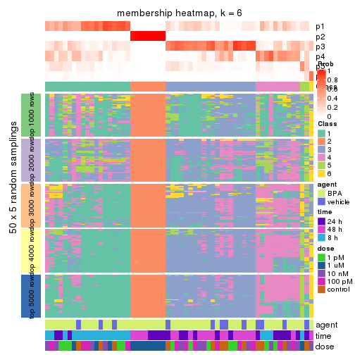
As soon as we have had the classes for columns, we can look for signatures which are significantly different between classes which can be candidate marks for certain classes. Following are the heatmaps for signatures.
Signature heatmaps where rows are scaled:
get_signatures(res, k = 2)
get_signatures(res, k = 3)
get_signatures(res, k = 4)
get_signatures(res, k = 5)
get_signatures(res, k = 6)
Signature heatmaps where rows are not scaled:
get_signatures(res, k = 2, scale_rows = FALSE)
get_signatures(res, k = 3, scale_rows = FALSE)
get_signatures(res, k = 4, scale_rows = FALSE)
get_signatures(res, k = 5, scale_rows = FALSE)

get_signatures(res, k = 6, scale_rows = FALSE)
Compare the overlap of signatures from different k:
compare_signatures(res)
get_signature() returns a data frame invisibly. TO get the list of signatures, the function
call should be assigned to a variable explicitly. In following code, if plot argument is set
to FALSE, no heatmap is plotted while only the differential analysis is performed.
# code only for demonstration
tb = get_signature(res, k = ..., plot = FALSE)
An example of the output of tb is:
#> which_row fdr mean_1 mean_2 scaled_mean_1 scaled_mean_2 km
#> 1 38 0.042760348 8.373488 9.131774 -0.5533452 0.5164555 1
#> 2 40 0.018707592 7.106213 8.469186 -0.6173731 0.5762149 1
#> 3 55 0.019134737 10.221463 11.207825 -0.6159697 0.5749050 1
#> 4 59 0.006059896 5.921854 7.869574 -0.6899429 0.6439467 1
#> 5 60 0.018055526 8.928898 10.211722 -0.6204761 0.5791110 1
#> 6 98 0.009384629 15.714769 14.887706 0.6635654 -0.6193277 2
...
The columns in tb are:
which_row: row indices corresponding to the input matrix.fdr: FDR for the differential test. mean_x: The mean value in group x.scaled_mean_x: The mean value in group x after rows are scaled.km: Row groups if k-means clustering is applied to rows.UMAP plot which shows how samples are separated.
dimension_reduction(res, k = 2, method = "UMAP")
dimension_reduction(res, k = 3, method = "UMAP")
dimension_reduction(res, k = 4, method = "UMAP")
dimension_reduction(res, k = 5, method = "UMAP")
dimension_reduction(res, k = 6, method = "UMAP")
Following heatmap shows how subgroups are split when increasing k:
collect_classes(res)
Test correlation between subgroups and known annotations. If the known annotation is numeric, one-way ANOVA test is applied, and if the known annotation is discrete, chi-squared contingency table test is applied.
test_to_known_factors(res)
#> n agent(p) time(p) dose(p) k
#> SD:pam 60 0.2963 9.95e-02 1.87e-07 2
#> SD:pam 53 0.2801 2.14e-08 1.56e-06 3
#> SD:pam 34 0.3968 2.73e-07 8.54e-04 4
#> SD:pam 21 0.0616 2.82e-05 5.31e-03 5
#> SD:pam 31 0.5438 8.59e-07 2.21e-03 6
If matrix rows can be associated to genes, consider to use functional_enrichment(res,
...) to perform function enrichment for the signature genes. See this vignette for more detailed explanations.
The object with results only for a single top-value method and a single partition method can be extracted as:
res = res_list["SD", "mclust"]
# you can also extract it by
# res = res_list["SD:mclust"]
A summary of res and all the functions that can be applied to it:
res
#> A 'ConsensusPartition' object with k = 2, 3, 4, 5, 6.
#> On a matrix with 51941 rows and 60 columns.
#> Top rows (1000, 2000, 3000, 4000, 5000) are extracted by 'SD' method.
#> Subgroups are detected by 'mclust' method.
#> Performed in total 1250 partitions by row resampling.
#> Best k for subgroups seems to be 2.
#>
#> Following methods can be applied to this 'ConsensusPartition' object:
#> [1] "cola_report" "collect_classes" "collect_plots"
#> [4] "collect_stats" "colnames" "compare_signatures"
#> [7] "consensus_heatmap" "dimension_reduction" "functional_enrichment"
#> [10] "get_anno_col" "get_anno" "get_classes"
#> [13] "get_consensus" "get_matrix" "get_membership"
#> [16] "get_param" "get_signatures" "get_stats"
#> [19] "is_best_k" "is_stable_k" "membership_heatmap"
#> [22] "ncol" "nrow" "plot_ecdf"
#> [25] "rownames" "select_partition_number" "show"
#> [28] "suggest_best_k" "test_to_known_factors"
collect_plots() function collects all the plots made from res for all k (number of partitions)
into one single page to provide an easy and fast comparison between different k.
collect_plots(res)
The plots are:
k and the heatmap of
predicted classes for each k.k.k.k.All the plots in panels can be made by individual functions and they are plotted later in this section.
select_partition_number() produces several plots showing different
statistics for choosing “optimized” k. There are following statistics:
k;k, the area increased is defined as \(A_k - A_{k-1}\).The detailed explanations of these statistics can be found in the cola vignette.
Generally speaking, lower PAC score, higher mean silhouette score or higher
concordance corresponds to better partition. Rand index and Jaccard index
measure how similar the current partition is compared to partition with k-1.
If they are too similar, we won't accept k is better than k-1.
select_partition_number(res)
The numeric values for all these statistics can be obtained by get_stats().
get_stats(res)
#> k 1-PAC mean_silhouette concordance area_increased Rand Jaccard
#> 2 2 1.000 0.973 0.988 0.2525 0.765 0.765
#> 3 3 0.393 0.334 0.656 1.2553 0.729 0.645
#> 4 4 0.506 0.640 0.815 0.2351 0.638 0.351
#> 5 5 0.548 0.669 0.769 0.0986 0.950 0.811
#> 6 6 0.670 0.600 0.770 0.0584 0.931 0.702
suggest_best_k() suggests the best \(k\) based on these statistics. The rules are as follows:
suggest_best_k(res)
#> [1] 2
Following shows the table of the partitions (You need to click the show/hide
code output link to see it). The membership matrix (columns with name p*)
is inferred by
clue::cl_consensus()
function with the SE method. Basically the value in the membership matrix
represents the probability to belong to a certain group. The finall class
label for an item is determined with the group with highest probability it
belongs to.
In get_classes() function, the entropy is calculated from the membership
matrix and the silhouette score is calculated from the consensus matrix.
cbind(get_classes(res, k = 2), get_membership(res, k = 2))
#> class entropy silhouette p1 p2
#> GSM439987 1 0.0000 0.986 1.000 0.000
#> GSM439988 1 0.0000 0.986 1.000 0.000
#> GSM439989 1 0.0000 0.986 1.000 0.000
#> GSM439990 1 0.0000 0.986 1.000 0.000
#> GSM439991 1 0.0000 0.986 1.000 0.000
#> GSM439992 1 0.0000 0.986 1.000 0.000
#> GSM439993 1 0.0000 0.986 1.000 0.000
#> GSM439994 1 0.0000 0.986 1.000 0.000
#> GSM439995 1 0.0000 0.986 1.000 0.000
#> GSM439996 1 0.0000 0.986 1.000 0.000
#> GSM439997 1 0.0000 0.986 1.000 0.000
#> GSM439998 1 0.0000 0.986 1.000 0.000
#> GSM440035 1 0.0000 0.986 1.000 0.000
#> GSM440036 1 0.0000 0.986 1.000 0.000
#> GSM440037 1 0.0000 0.986 1.000 0.000
#> GSM440038 1 0.0000 0.986 1.000 0.000
#> GSM440011 1 0.0000 0.986 1.000 0.000
#> GSM440012 1 0.0000 0.986 1.000 0.000
#> GSM440013 1 0.0000 0.986 1.000 0.000
#> GSM440014 1 0.0000 0.986 1.000 0.000
#> GSM439999 1 0.0000 0.986 1.000 0.000
#> GSM440000 1 0.0376 0.982 0.996 0.004
#> GSM440001 1 0.0000 0.986 1.000 0.000
#> GSM440002 1 0.0000 0.986 1.000 0.000
#> GSM440023 1 0.7745 0.718 0.772 0.228
#> GSM440024 1 0.7815 0.712 0.768 0.232
#> GSM440025 1 0.7883 0.705 0.764 0.236
#> GSM440026 1 0.1843 0.960 0.972 0.028
#> GSM440039 1 0.0000 0.986 1.000 0.000
#> GSM440040 1 0.0000 0.986 1.000 0.000
#> GSM440041 1 0.0000 0.986 1.000 0.000
#> GSM440042 1 0.0000 0.986 1.000 0.000
#> GSM440015 1 0.0000 0.986 1.000 0.000
#> GSM440016 1 0.0000 0.986 1.000 0.000
#> GSM440017 1 0.0000 0.986 1.000 0.000
#> GSM440018 1 0.0000 0.986 1.000 0.000
#> GSM440003 1 0.0000 0.986 1.000 0.000
#> GSM440004 1 0.0000 0.986 1.000 0.000
#> GSM440005 1 0.0000 0.986 1.000 0.000
#> GSM440006 1 0.0000 0.986 1.000 0.000
#> GSM440027 2 0.0000 1.000 0.000 1.000
#> GSM440028 2 0.0000 1.000 0.000 1.000
#> GSM440029 2 0.0000 1.000 0.000 1.000
#> GSM440030 2 0.0000 1.000 0.000 1.000
#> GSM440043 1 0.0000 0.986 1.000 0.000
#> GSM440044 1 0.0000 0.986 1.000 0.000
#> GSM440045 1 0.0000 0.986 1.000 0.000
#> GSM440046 1 0.0000 0.986 1.000 0.000
#> GSM440019 1 0.0000 0.986 1.000 0.000
#> GSM440020 1 0.0000 0.986 1.000 0.000
#> GSM440021 1 0.0000 0.986 1.000 0.000
#> GSM440022 1 0.0000 0.986 1.000 0.000
#> GSM440007 1 0.0000 0.986 1.000 0.000
#> GSM440008 1 0.0000 0.986 1.000 0.000
#> GSM440009 1 0.0000 0.986 1.000 0.000
#> GSM440010 1 0.0000 0.986 1.000 0.000
#> GSM440031 2 0.0000 1.000 0.000 1.000
#> GSM440032 2 0.0000 1.000 0.000 1.000
#> GSM440033 2 0.0000 1.000 0.000 1.000
#> GSM440034 2 0.0000 1.000 0.000 1.000
cbind(get_classes(res, k = 3), get_membership(res, k = 3))
#> class entropy silhouette p1 p2 p3
#> GSM439987 1 0.630 0.4130 0.516 0 0.484
#> GSM439988 1 0.460 0.4633 0.796 0 0.204
#> GSM439989 1 0.631 0.4036 0.508 0 0.492
#> GSM439990 1 0.630 0.4083 0.516 0 0.484
#> GSM439991 1 0.543 0.4449 0.716 0 0.284
#> GSM439992 1 0.382 0.4595 0.852 0 0.148
#> GSM439993 1 0.129 0.4038 0.968 0 0.032
#> GSM439994 1 0.628 -0.2882 0.540 0 0.460
#> GSM439995 3 0.631 0.7528 0.492 0 0.508
#> GSM439996 1 0.141 0.3787 0.964 0 0.036
#> GSM439997 3 0.631 0.7419 0.500 0 0.500
#> GSM439998 1 0.627 -0.6893 0.544 0 0.456
#> GSM440035 1 0.626 0.4228 0.552 0 0.448
#> GSM440036 1 0.627 0.4182 0.544 0 0.456
#> GSM440037 1 0.388 0.4256 0.848 0 0.152
#> GSM440038 1 0.599 0.4371 0.632 0 0.368
#> GSM440011 1 0.629 0.4198 0.532 0 0.468
#> GSM440012 1 0.388 0.3230 0.848 0 0.152
#> GSM440013 1 0.588 0.4402 0.652 0 0.348
#> GSM440014 1 0.631 0.4048 0.508 0 0.492
#> GSM439999 1 0.631 0.4036 0.508 0 0.492
#> GSM440000 1 0.460 0.3058 0.796 0 0.204
#> GSM440001 1 0.631 0.4031 0.508 0 0.492
#> GSM440002 3 0.631 -0.4645 0.496 0 0.504
#> GSM440023 1 0.597 -0.1099 0.636 0 0.364
#> GSM440024 1 0.583 0.0311 0.660 0 0.340
#> GSM440025 1 0.626 -0.3701 0.552 0 0.448
#> GSM440026 3 0.613 0.2564 0.400 0 0.600
#> GSM440039 1 0.620 -0.1589 0.576 0 0.424
#> GSM440040 1 0.280 0.4528 0.908 0 0.092
#> GSM440041 1 0.116 0.3874 0.972 0 0.028
#> GSM440042 1 0.304 0.4295 0.896 0 0.104
#> GSM440015 1 0.630 -0.4499 0.516 0 0.484
#> GSM440016 1 0.627 -0.6877 0.548 0 0.452
#> GSM440017 1 0.164 0.3850 0.956 0 0.044
#> GSM440018 3 0.631 0.7528 0.492 0 0.508
#> GSM440003 3 0.617 0.6141 0.412 0 0.588
#> GSM440004 3 0.619 0.6583 0.420 0 0.580
#> GSM440005 1 0.296 0.4504 0.900 0 0.100
#> GSM440006 1 0.164 0.4267 0.956 0 0.044
#> GSM440027 2 0.000 1.0000 0.000 1 0.000
#> GSM440028 2 0.000 1.0000 0.000 1 0.000
#> GSM440029 2 0.000 1.0000 0.000 1 0.000
#> GSM440030 2 0.000 1.0000 0.000 1 0.000
#> GSM440043 3 0.631 0.7528 0.492 0 0.508
#> GSM440044 1 0.614 -0.6000 0.596 0 0.404
#> GSM440045 3 0.631 0.7528 0.492 0 0.508
#> GSM440046 3 0.631 0.7528 0.492 0 0.508
#> GSM440019 1 0.207 0.3450 0.940 0 0.060
#> GSM440020 1 0.629 -0.7114 0.536 0 0.464
#> GSM440021 1 0.631 -0.7507 0.508 0 0.492
#> GSM440022 3 0.631 0.7528 0.492 0 0.508
#> GSM440007 1 0.382 0.1574 0.852 0 0.148
#> GSM440008 3 0.631 0.7528 0.492 0 0.508
#> GSM440009 1 0.623 -0.6612 0.564 0 0.436
#> GSM440010 1 0.583 -0.4249 0.660 0 0.340
#> GSM440031 2 0.000 1.0000 0.000 1 0.000
#> GSM440032 2 0.000 1.0000 0.000 1 0.000
#> GSM440033 2 0.000 1.0000 0.000 1 0.000
#> GSM440034 2 0.000 1.0000 0.000 1 0.000
cbind(get_classes(res, k = 4), get_membership(res, k = 4))
#> class entropy silhouette p1 p2 p3 p4
#> GSM439987 1 0.1520 0.768 0.956 0 0.024 0.020
#> GSM439988 4 0.5657 0.180 0.436 0 0.024 0.540
#> GSM439989 1 0.1302 0.777 0.956 0 0.000 0.044
#> GSM439990 1 0.1398 0.778 0.956 0 0.004 0.040
#> GSM439991 1 0.5746 0.263 0.572 0 0.032 0.396
#> GSM439992 4 0.3813 0.675 0.148 0 0.024 0.828
#> GSM439993 4 0.1661 0.732 0.004 0 0.052 0.944
#> GSM439994 3 0.7400 0.272 0.172 0 0.468 0.360
#> GSM439995 3 0.0188 0.707 0.000 0 0.996 0.004
#> GSM439996 4 0.2888 0.709 0.004 0 0.124 0.872
#> GSM439997 3 0.1557 0.706 0.000 0 0.944 0.056
#> GSM439998 3 0.4643 0.423 0.000 0 0.656 0.344
#> GSM440035 1 0.3764 0.672 0.784 0 0.000 0.216
#> GSM440036 1 0.3172 0.710 0.840 0 0.000 0.160
#> GSM440037 4 0.5932 0.674 0.172 0 0.132 0.696
#> GSM440038 1 0.6074 0.401 0.648 0 0.084 0.268
#> GSM440011 1 0.2660 0.749 0.908 0 0.036 0.056
#> GSM440012 4 0.4880 0.669 0.052 0 0.188 0.760
#> GSM440013 1 0.6733 0.208 0.564 0 0.112 0.324
#> GSM440014 1 0.1211 0.778 0.960 0 0.000 0.040
#> GSM439999 1 0.1211 0.777 0.960 0 0.000 0.040
#> GSM440000 4 0.5820 0.603 0.080 0 0.240 0.680
#> GSM440001 1 0.0921 0.777 0.972 0 0.000 0.028
#> GSM440002 1 0.0376 0.768 0.992 0 0.004 0.004
#> GSM440023 4 0.6970 0.488 0.168 0 0.256 0.576
#> GSM440024 4 0.6473 0.580 0.168 0 0.188 0.644
#> GSM440025 4 0.6240 0.391 0.076 0 0.320 0.604
#> GSM440026 1 0.7811 -0.227 0.380 0 0.252 0.368
#> GSM440039 3 0.7345 0.297 0.168 0 0.484 0.348
#> GSM440040 4 0.4057 0.719 0.152 0 0.032 0.816
#> GSM440041 4 0.2973 0.737 0.020 0 0.096 0.884
#> GSM440042 4 0.2670 0.729 0.052 0 0.040 0.908
#> GSM440015 3 0.6894 0.379 0.120 0 0.536 0.344
#> GSM440016 3 0.4977 0.182 0.000 0 0.540 0.460
#> GSM440017 4 0.4356 0.709 0.048 0 0.148 0.804
#> GSM440018 3 0.4134 0.595 0.000 0 0.740 0.260
#> GSM440003 3 0.6039 0.431 0.056 0 0.596 0.348
#> GSM440004 3 0.4797 0.580 0.020 0 0.720 0.260
#> GSM440005 4 0.3958 0.680 0.160 0 0.024 0.816
#> GSM440006 4 0.1610 0.733 0.016 0 0.032 0.952
#> GSM440027 2 0.0000 1.000 0.000 1 0.000 0.000
#> GSM440028 2 0.0000 1.000 0.000 1 0.000 0.000
#> GSM440029 2 0.0000 1.000 0.000 1 0.000 0.000
#> GSM440030 2 0.0000 1.000 0.000 1 0.000 0.000
#> GSM440043 3 0.0336 0.709 0.000 0 0.992 0.008
#> GSM440044 3 0.5126 0.245 0.004 0 0.552 0.444
#> GSM440045 3 0.0336 0.709 0.000 0 0.992 0.008
#> GSM440046 3 0.0188 0.707 0.000 0 0.996 0.004
#> GSM440019 4 0.2530 0.708 0.000 0 0.112 0.888
#> GSM440020 3 0.1389 0.704 0.000 0 0.952 0.048
#> GSM440021 3 0.1302 0.707 0.000 0 0.956 0.044
#> GSM440022 3 0.0336 0.707 0.000 0 0.992 0.008
#> GSM440007 4 0.2469 0.723 0.000 0 0.108 0.892
#> GSM440008 3 0.0707 0.709 0.000 0 0.980 0.020
#> GSM440009 3 0.4454 0.530 0.000 0 0.692 0.308
#> GSM440010 4 0.4585 0.481 0.000 0 0.332 0.668
#> GSM440031 2 0.0000 1.000 0.000 1 0.000 0.000
#> GSM440032 2 0.0000 1.000 0.000 1 0.000 0.000
#> GSM440033 2 0.0000 1.000 0.000 1 0.000 0.000
#> GSM440034 2 0.0000 1.000 0.000 1 0.000 0.000
cbind(get_classes(res, k = 5), get_membership(res, k = 5))
#> class entropy silhouette p1 p2 p3 p4 p5
#> GSM439987 1 0.2848 0.759 0.840 0 0.000 0.004 0.156
#> GSM439988 4 0.5943 0.128 0.444 0 0.008 0.468 0.080
#> GSM439989 1 0.0880 0.804 0.968 0 0.000 0.032 0.000
#> GSM439990 1 0.0854 0.806 0.976 0 0.004 0.012 0.008
#> GSM439991 1 0.6537 0.298 0.508 0 0.004 0.268 0.220
#> GSM439992 4 0.4808 0.592 0.168 0 0.000 0.724 0.108
#> GSM439993 4 0.3427 0.697 0.008 0 0.128 0.836 0.028
#> GSM439994 5 0.6903 0.724 0.120 0 0.196 0.096 0.588
#> GSM439995 3 0.0963 0.726 0.000 0 0.964 0.000 0.036
#> GSM439996 4 0.4033 0.621 0.004 0 0.212 0.760 0.024
#> GSM439997 3 0.2110 0.713 0.000 0 0.912 0.016 0.072
#> GSM439998 3 0.4909 0.253 0.000 0 0.588 0.380 0.032
#> GSM440035 1 0.3771 0.696 0.796 0 0.000 0.164 0.040
#> GSM440036 1 0.3106 0.737 0.844 0 0.000 0.132 0.024
#> GSM440037 4 0.6395 0.636 0.164 0 0.088 0.644 0.104
#> GSM440038 1 0.5143 0.635 0.696 0 0.008 0.084 0.212
#> GSM440011 1 0.3471 0.751 0.820 0 0.012 0.012 0.156
#> GSM440012 4 0.5110 0.686 0.060 0 0.116 0.752 0.072
#> GSM440013 1 0.6149 0.349 0.536 0 0.008 0.116 0.340
#> GSM440014 1 0.0693 0.807 0.980 0 0.000 0.012 0.008
#> GSM439999 1 0.0510 0.805 0.984 0 0.000 0.016 0.000
#> GSM440000 4 0.6204 0.647 0.096 0 0.124 0.668 0.112
#> GSM440001 1 0.0162 0.803 0.996 0 0.000 0.004 0.000
#> GSM440002 1 0.1965 0.784 0.904 0 0.000 0.000 0.096
#> GSM440023 4 0.6796 0.544 0.056 0 0.112 0.548 0.284
#> GSM440024 4 0.6376 0.555 0.072 0 0.056 0.580 0.292
#> GSM440025 4 0.6778 0.501 0.044 0 0.124 0.536 0.296
#> GSM440026 5 0.6212 0.148 0.272 0 0.036 0.092 0.600
#> GSM440039 5 0.6545 0.726 0.112 0 0.160 0.096 0.632
#> GSM440040 4 0.4086 0.685 0.152 0 0.024 0.796 0.028
#> GSM440041 4 0.3556 0.710 0.012 0 0.104 0.840 0.044
#> GSM440042 4 0.4424 0.614 0.044 0 0.020 0.772 0.164
#> GSM440015 5 0.6274 0.724 0.060 0 0.240 0.080 0.620
#> GSM440016 3 0.5622 0.127 0.000 0 0.508 0.416 0.076
#> GSM440017 4 0.4415 0.689 0.020 0 0.156 0.776 0.048
#> GSM440018 3 0.4591 0.566 0.000 0 0.748 0.132 0.120
#> GSM440003 5 0.6015 0.689 0.032 0 0.276 0.080 0.612
#> GSM440004 5 0.5690 0.416 0.004 0 0.436 0.068 0.492
#> GSM440005 4 0.3895 0.676 0.132 0 0.012 0.812 0.044
#> GSM440006 4 0.3165 0.709 0.032 0 0.044 0.876 0.048
#> GSM440027 2 0.0000 1.000 0.000 1 0.000 0.000 0.000
#> GSM440028 2 0.0000 1.000 0.000 1 0.000 0.000 0.000
#> GSM440029 2 0.0000 1.000 0.000 1 0.000 0.000 0.000
#> GSM440030 2 0.0000 1.000 0.000 1 0.000 0.000 0.000
#> GSM440043 3 0.0162 0.733 0.000 0 0.996 0.000 0.004
#> GSM440044 3 0.5125 0.208 0.000 0 0.544 0.416 0.040
#> GSM440045 3 0.0671 0.734 0.000 0 0.980 0.004 0.016
#> GSM440046 3 0.1270 0.717 0.000 0 0.948 0.000 0.052
#> GSM440019 4 0.3577 0.654 0.000 0 0.160 0.808 0.032
#> GSM440020 3 0.1549 0.725 0.000 0 0.944 0.040 0.016
#> GSM440021 3 0.1597 0.724 0.000 0 0.940 0.048 0.012
#> GSM440022 3 0.0579 0.732 0.000 0 0.984 0.008 0.008
#> GSM440007 4 0.3527 0.694 0.000 0 0.116 0.828 0.056
#> GSM440008 3 0.1197 0.720 0.000 0 0.952 0.000 0.048
#> GSM440009 3 0.5887 0.397 0.008 0 0.588 0.300 0.104
#> GSM440010 4 0.5039 0.590 0.000 0 0.244 0.676 0.080
#> GSM440031 2 0.0000 1.000 0.000 1 0.000 0.000 0.000
#> GSM440032 2 0.0000 1.000 0.000 1 0.000 0.000 0.000
#> GSM440033 2 0.0000 1.000 0.000 1 0.000 0.000 0.000
#> GSM440034 2 0.0000 1.000 0.000 1 0.000 0.000 0.000
cbind(get_classes(res, k = 6), get_membership(res, k = 6))
#> class entropy silhouette p1 p2 p3 p4 p5 p6
#> GSM439987 1 0.3324 0.7689 0.824 0 0.000 0.004 0.112 0.060
#> GSM439988 5 0.6153 0.2458 0.408 0 0.000 0.160 0.412 0.020
#> GSM439989 1 0.1555 0.7809 0.932 0 0.000 0.004 0.060 0.004
#> GSM439990 1 0.1511 0.7857 0.940 0 0.000 0.004 0.044 0.012
#> GSM439991 1 0.7144 0.2749 0.444 0 0.000 0.144 0.160 0.252
#> GSM439992 4 0.6837 -0.0223 0.128 0 0.000 0.464 0.296 0.112
#> GSM439993 4 0.1555 0.5470 0.000 0 0.040 0.940 0.012 0.008
#> GSM439994 6 0.3711 0.8453 0.068 0 0.056 0.024 0.020 0.832
#> GSM439995 3 0.1074 0.7545 0.000 0 0.960 0.000 0.012 0.028
#> GSM439996 4 0.3852 0.4450 0.000 0 0.240 0.732 0.016 0.012
#> GSM439997 3 0.2586 0.7259 0.000 0 0.868 0.000 0.032 0.100
#> GSM439998 3 0.5074 0.2637 0.000 0 0.564 0.372 0.024 0.040
#> GSM440035 1 0.4589 0.6685 0.744 0 0.000 0.092 0.128 0.036
#> GSM440036 1 0.3840 0.7206 0.808 0 0.004 0.092 0.076 0.020
#> GSM440037 5 0.7513 0.3207 0.104 0 0.064 0.344 0.408 0.080
#> GSM440038 1 0.4006 0.7488 0.792 0 0.004 0.020 0.116 0.068
#> GSM440011 1 0.3419 0.7674 0.824 0 0.000 0.008 0.096 0.072
#> GSM440012 4 0.6425 -0.0298 0.008 0 0.072 0.508 0.324 0.088
#> GSM440013 1 0.5690 0.5043 0.572 0 0.000 0.028 0.108 0.292
#> GSM440014 1 0.1462 0.7852 0.936 0 0.000 0.008 0.056 0.000
#> GSM439999 1 0.1434 0.7831 0.940 0 0.000 0.012 0.048 0.000
#> GSM440000 5 0.6939 0.2419 0.032 0 0.072 0.372 0.436 0.088
#> GSM440001 1 0.1003 0.7871 0.964 0 0.000 0.004 0.028 0.004
#> GSM440002 1 0.2822 0.7755 0.856 0 0.000 0.004 0.108 0.032
#> GSM440023 5 0.5112 0.5803 0.028 0 0.044 0.136 0.728 0.064
#> GSM440024 5 0.4398 0.5549 0.044 0 0.012 0.164 0.756 0.024
#> GSM440025 5 0.5195 0.5495 0.016 0 0.044 0.180 0.700 0.060
#> GSM440026 1 0.6336 0.4124 0.476 0 0.004 0.016 0.268 0.236
#> GSM440039 6 0.3559 0.8264 0.080 0 0.032 0.024 0.024 0.840
#> GSM440040 4 0.6041 0.0639 0.088 0 0.012 0.544 0.320 0.036
#> GSM440041 4 0.3691 0.5244 0.016 0 0.028 0.824 0.104 0.028
#> GSM440042 4 0.5693 0.3132 0.032 0 0.016 0.604 0.068 0.280
#> GSM440015 6 0.3427 0.8616 0.040 0 0.092 0.016 0.012 0.840
#> GSM440016 4 0.5990 0.2051 0.000 0 0.320 0.532 0.044 0.104
#> GSM440017 4 0.4030 0.5157 0.004 0 0.100 0.800 0.052 0.044
#> GSM440018 3 0.6060 0.3488 0.000 0 0.504 0.320 0.024 0.152
#> GSM440003 6 0.3087 0.8570 0.020 0 0.088 0.012 0.020 0.860
#> GSM440004 6 0.3724 0.6623 0.000 0 0.268 0.004 0.012 0.716
#> GSM440005 4 0.5799 -0.1125 0.096 0 0.016 0.516 0.364 0.008
#> GSM440006 4 0.3700 0.4715 0.016 0 0.004 0.784 0.176 0.020
#> GSM440027 2 0.0000 1.0000 0.000 1 0.000 0.000 0.000 0.000
#> GSM440028 2 0.0000 1.0000 0.000 1 0.000 0.000 0.000 0.000
#> GSM440029 2 0.0000 1.0000 0.000 1 0.000 0.000 0.000 0.000
#> GSM440030 2 0.0000 1.0000 0.000 1 0.000 0.000 0.000 0.000
#> GSM440043 3 0.0000 0.7590 0.000 0 1.000 0.000 0.000 0.000
#> GSM440044 3 0.5511 0.0794 0.000 0 0.468 0.444 0.032 0.056
#> GSM440045 3 0.1409 0.7597 0.000 0 0.948 0.008 0.012 0.032
#> GSM440046 3 0.1838 0.7350 0.000 0 0.916 0.000 0.016 0.068
#> GSM440019 4 0.3593 0.4818 0.004 0 0.176 0.788 0.024 0.008
#> GSM440020 3 0.2024 0.7525 0.000 0 0.920 0.036 0.016 0.028
#> GSM440021 3 0.2170 0.7457 0.000 0 0.908 0.060 0.016 0.016
#> GSM440022 3 0.0665 0.7574 0.000 0 0.980 0.008 0.004 0.008
#> GSM440007 4 0.2541 0.5412 0.000 0 0.024 0.892 0.052 0.032
#> GSM440008 3 0.1391 0.7467 0.000 0 0.944 0.000 0.016 0.040
#> GSM440009 3 0.6788 0.0369 0.000 0 0.408 0.360 0.160 0.072
#> GSM440010 4 0.4813 0.4792 0.000 0 0.112 0.736 0.080 0.072
#> GSM440031 2 0.0000 1.0000 0.000 1 0.000 0.000 0.000 0.000
#> GSM440032 2 0.0000 1.0000 0.000 1 0.000 0.000 0.000 0.000
#> GSM440033 2 0.0000 1.0000 0.000 1 0.000 0.000 0.000 0.000
#> GSM440034 2 0.0000 1.0000 0.000 1 0.000 0.000 0.000 0.000
Heatmaps for the consensus matrix. It visualizes the probability of two samples to be in a same group.
consensus_heatmap(res, k = 2)
consensus_heatmap(res, k = 3)
consensus_heatmap(res, k = 4)
consensus_heatmap(res, k = 5)
consensus_heatmap(res, k = 6)
Heatmaps for the membership of samples in all partitions to see how consistent they are:
membership_heatmap(res, k = 2)
membership_heatmap(res, k = 3)
membership_heatmap(res, k = 4)
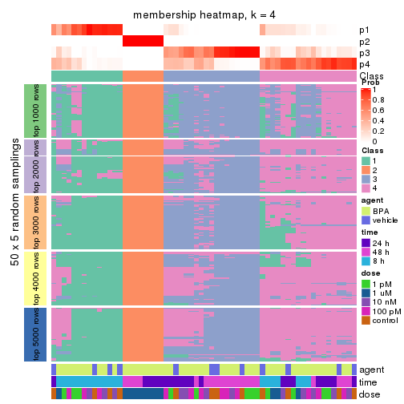
membership_heatmap(res, k = 5)
membership_heatmap(res, k = 6)

As soon as we have had the classes for columns, we can look for signatures which are significantly different between classes which can be candidate marks for certain classes. Following are the heatmaps for signatures.
Signature heatmaps where rows are scaled:
get_signatures(res, k = 2)
get_signatures(res, k = 3)
get_signatures(res, k = 4)
get_signatures(res, k = 5)
get_signatures(res, k = 6)
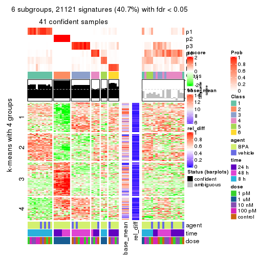
Signature heatmaps where rows are not scaled:
get_signatures(res, k = 2, scale_rows = FALSE)
get_signatures(res, k = 3, scale_rows = FALSE)
get_signatures(res, k = 4, scale_rows = FALSE)
get_signatures(res, k = 5, scale_rows = FALSE)
get_signatures(res, k = 6, scale_rows = FALSE)
Compare the overlap of signatures from different k:
compare_signatures(res)
get_signature() returns a data frame invisibly. TO get the list of signatures, the function
call should be assigned to a variable explicitly. In following code, if plot argument is set
to FALSE, no heatmap is plotted while only the differential analysis is performed.
# code only for demonstration
tb = get_signature(res, k = ..., plot = FALSE)
An example of the output of tb is:
#> which_row fdr mean_1 mean_2 scaled_mean_1 scaled_mean_2 km
#> 1 38 0.042760348 8.373488 9.131774 -0.5533452 0.5164555 1
#> 2 40 0.018707592 7.106213 8.469186 -0.6173731 0.5762149 1
#> 3 55 0.019134737 10.221463 11.207825 -0.6159697 0.5749050 1
#> 4 59 0.006059896 5.921854 7.869574 -0.6899429 0.6439467 1
#> 5 60 0.018055526 8.928898 10.211722 -0.6204761 0.5791110 1
#> 6 98 0.009384629 15.714769 14.887706 0.6635654 -0.6193277 2
...
The columns in tb are:
which_row: row indices corresponding to the input matrix.fdr: FDR for the differential test. mean_x: The mean value in group x.scaled_mean_x: The mean value in group x after rows are scaled.km: Row groups if k-means clustering is applied to rows.UMAP plot which shows how samples are separated.
dimension_reduction(res, k = 2, method = "UMAP")

dimension_reduction(res, k = 3, method = "UMAP")
dimension_reduction(res, k = 4, method = "UMAP")
dimension_reduction(res, k = 5, method = "UMAP")
dimension_reduction(res, k = 6, method = "UMAP")
Following heatmap shows how subgroups are split when increasing k:
collect_classes(res)
Test correlation between subgroups and known annotations. If the known annotation is numeric, one-way ANOVA test is applied, and if the known annotation is discrete, chi-squared contingency table test is applied.
test_to_known_factors(res)
#> n agent(p) time(p) dose(p) k
#> SD:mclust 60 0.296 9.95e-02 1.87e-07 2
#> SD:mclust 18 0.557 7.05e-01 1.23e-03 3
#> SD:mclust 45 0.421 3.28e-07 5.67e-05 4
#> SD:mclust 51 0.624 4.21e-08 8.64e-04 5
#> SD:mclust 41 0.673 4.94e-10 1.82e-03 6
If matrix rows can be associated to genes, consider to use functional_enrichment(res,
...) to perform function enrichment for the signature genes. See this vignette for more detailed explanations.
The object with results only for a single top-value method and a single partition method can be extracted as:
res = res_list["SD", "NMF"]
# you can also extract it by
# res = res_list["SD:NMF"]
A summary of res and all the functions that can be applied to it:
res
#> A 'ConsensusPartition' object with k = 2, 3, 4, 5, 6.
#> On a matrix with 51941 rows and 60 columns.
#> Top rows (1000, 2000, 3000, 4000, 5000) are extracted by 'SD' method.
#> Subgroups are detected by 'NMF' method.
#> Performed in total 1250 partitions by row resampling.
#> Best k for subgroups seems to be 2.
#>
#> Following methods can be applied to this 'ConsensusPartition' object:
#> [1] "cola_report" "collect_classes" "collect_plots"
#> [4] "collect_stats" "colnames" "compare_signatures"
#> [7] "consensus_heatmap" "dimension_reduction" "functional_enrichment"
#> [10] "get_anno_col" "get_anno" "get_classes"
#> [13] "get_consensus" "get_matrix" "get_membership"
#> [16] "get_param" "get_signatures" "get_stats"
#> [19] "is_best_k" "is_stable_k" "membership_heatmap"
#> [22] "ncol" "nrow" "plot_ecdf"
#> [25] "rownames" "select_partition_number" "show"
#> [28] "suggest_best_k" "test_to_known_factors"
collect_plots() function collects all the plots made from res for all k (number of partitions)
into one single page to provide an easy and fast comparison between different k.
collect_plots(res)
The plots are:
k and the heatmap of
predicted classes for each k.k.k.k.All the plots in panels can be made by individual functions and they are plotted later in this section.
select_partition_number() produces several plots showing different
statistics for choosing “optimized” k. There are following statistics:
k;k, the area increased is defined as \(A_k - A_{k-1}\).The detailed explanations of these statistics can be found in the cola vignette.
Generally speaking, lower PAC score, higher mean silhouette score or higher
concordance corresponds to better partition. Rand index and Jaccard index
measure how similar the current partition is compared to partition with k-1.
If they are too similar, we won't accept k is better than k-1.
select_partition_number(res)
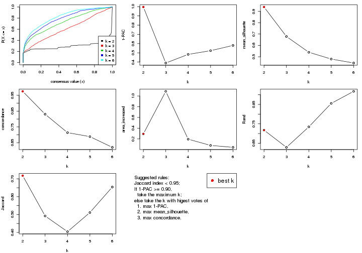
The numeric values for all these statistics can be obtained by get_stats().
get_stats(res)
#> k 1-PAC mean_silhouette concordance area_increased Rand Jaccard
#> 2 2 0.996 0.938 0.975 0.2940 0.718 0.718
#> 3 3 0.390 0.678 0.831 1.0859 0.629 0.492
#> 4 4 0.483 0.539 0.714 0.1950 0.734 0.404
#> 5 5 0.523 0.480 0.689 0.0792 0.855 0.511
#> 6 6 0.580 0.445 0.621 0.0433 0.918 0.654
suggest_best_k() suggests the best \(k\) based on these statistics. The rules are as follows:
suggest_best_k(res)
#> [1] 2
Following shows the table of the partitions (You need to click the show/hide
code output link to see it). The membership matrix (columns with name p*)
is inferred by
clue::cl_consensus()
function with the SE method. Basically the value in the membership matrix
represents the probability to belong to a certain group. The finall class
label for an item is determined with the group with highest probability it
belongs to.
In get_classes() function, the entropy is calculated from the membership
matrix and the silhouette score is calculated from the consensus matrix.
cbind(get_classes(res, k = 2), get_membership(res, k = 2))
#> class entropy silhouette p1 p2
#> GSM439987 1 0.0000 0.9781 1.000 0.000
#> GSM439988 1 0.0000 0.9781 1.000 0.000
#> GSM439989 1 0.0000 0.9781 1.000 0.000
#> GSM439990 1 0.0000 0.9781 1.000 0.000
#> GSM439991 1 0.0000 0.9781 1.000 0.000
#> GSM439992 1 0.0000 0.9781 1.000 0.000
#> GSM439993 1 0.0000 0.9781 1.000 0.000
#> GSM439994 1 0.0000 0.9781 1.000 0.000
#> GSM439995 1 0.1184 0.9675 0.984 0.016
#> GSM439996 1 0.0000 0.9781 1.000 0.000
#> GSM439997 1 0.0000 0.9781 1.000 0.000
#> GSM439998 1 0.0000 0.9781 1.000 0.000
#> GSM440035 1 0.0000 0.9781 1.000 0.000
#> GSM440036 1 0.0000 0.9781 1.000 0.000
#> GSM440037 1 0.0000 0.9781 1.000 0.000
#> GSM440038 1 0.0000 0.9781 1.000 0.000
#> GSM440011 1 0.0000 0.9781 1.000 0.000
#> GSM440012 1 0.0000 0.9781 1.000 0.000
#> GSM440013 1 0.0000 0.9781 1.000 0.000
#> GSM440014 1 0.0000 0.9781 1.000 0.000
#> GSM439999 1 0.0000 0.9781 1.000 0.000
#> GSM440000 1 0.0000 0.9781 1.000 0.000
#> GSM440001 1 0.0000 0.9781 1.000 0.000
#> GSM440002 1 0.0000 0.9781 1.000 0.000
#> GSM440023 1 0.2948 0.9367 0.948 0.052
#> GSM440024 1 0.2236 0.9502 0.964 0.036
#> GSM440025 2 0.9608 0.3613 0.384 0.616
#> GSM440026 1 0.9977 0.0633 0.528 0.472
#> GSM440039 1 0.0000 0.9781 1.000 0.000
#> GSM440040 1 0.0000 0.9781 1.000 0.000
#> GSM440041 1 0.0000 0.9781 1.000 0.000
#> GSM440042 1 0.0000 0.9781 1.000 0.000
#> GSM440015 1 0.0000 0.9781 1.000 0.000
#> GSM440016 1 0.0000 0.9781 1.000 0.000
#> GSM440017 1 0.0000 0.9781 1.000 0.000
#> GSM440018 1 0.2423 0.9477 0.960 0.040
#> GSM440003 1 0.0000 0.9781 1.000 0.000
#> GSM440004 1 0.2043 0.9549 0.968 0.032
#> GSM440005 1 0.0000 0.9781 1.000 0.000
#> GSM440006 1 0.0000 0.9781 1.000 0.000
#> GSM440027 2 0.0000 0.9468 0.000 1.000
#> GSM440028 2 0.0000 0.9468 0.000 1.000
#> GSM440029 2 0.0000 0.9468 0.000 1.000
#> GSM440030 2 0.0000 0.9468 0.000 1.000
#> GSM440043 1 0.8081 0.6633 0.752 0.248
#> GSM440044 1 0.0000 0.9781 1.000 0.000
#> GSM440045 1 0.0000 0.9781 1.000 0.000
#> GSM440046 1 0.2778 0.9405 0.952 0.048
#> GSM440019 1 0.0000 0.9781 1.000 0.000
#> GSM440020 1 0.0000 0.9781 1.000 0.000
#> GSM440021 1 0.0376 0.9755 0.996 0.004
#> GSM440022 1 0.3274 0.9287 0.940 0.060
#> GSM440007 1 0.0000 0.9781 1.000 0.000
#> GSM440008 2 0.3879 0.8849 0.076 0.924
#> GSM440009 1 0.1184 0.9675 0.984 0.016
#> GSM440010 1 0.0376 0.9755 0.996 0.004
#> GSM440031 2 0.0000 0.9468 0.000 1.000
#> GSM440032 2 0.0000 0.9468 0.000 1.000
#> GSM440033 2 0.0000 0.9468 0.000 1.000
#> GSM440034 2 0.0000 0.9468 0.000 1.000
cbind(get_classes(res, k = 3), get_membership(res, k = 3))
#> class entropy silhouette p1 p2 p3
#> GSM439987 1 0.2261 0.7821 0.932 0.000 0.068
#> GSM439988 1 0.2448 0.7918 0.924 0.000 0.076
#> GSM439989 1 0.1289 0.7942 0.968 0.000 0.032
#> GSM439990 1 0.1860 0.7936 0.948 0.000 0.052
#> GSM439991 1 0.3551 0.7719 0.868 0.000 0.132
#> GSM439992 1 0.4654 0.7259 0.792 0.000 0.208
#> GSM439993 1 0.6309 0.0862 0.500 0.000 0.500
#> GSM439994 3 0.5988 0.5334 0.368 0.000 0.632
#> GSM439995 3 0.1585 0.7413 0.028 0.008 0.964
#> GSM439996 3 0.5216 0.5745 0.260 0.000 0.740
#> GSM439997 3 0.1163 0.7412 0.028 0.000 0.972
#> GSM439998 3 0.2796 0.7284 0.092 0.000 0.908
#> GSM440035 1 0.1647 0.7924 0.960 0.004 0.036
#> GSM440036 1 0.2261 0.7979 0.932 0.000 0.068
#> GSM440037 1 0.4702 0.7225 0.788 0.000 0.212
#> GSM440038 1 0.2625 0.7857 0.916 0.000 0.084
#> GSM440011 1 0.2066 0.7821 0.940 0.000 0.060
#> GSM440012 1 0.6026 0.4632 0.624 0.000 0.376
#> GSM440013 1 0.4178 0.7184 0.828 0.000 0.172
#> GSM440014 1 0.1860 0.7916 0.948 0.000 0.052
#> GSM439999 1 0.1643 0.7957 0.956 0.000 0.044
#> GSM440000 1 0.5810 0.5601 0.664 0.000 0.336
#> GSM440001 1 0.1163 0.7930 0.972 0.000 0.028
#> GSM440002 1 0.1964 0.7814 0.944 0.000 0.056
#> GSM440023 1 0.7412 0.6322 0.696 0.192 0.112
#> GSM440024 1 0.6157 0.7105 0.780 0.128 0.092
#> GSM440025 2 0.4782 0.7869 0.164 0.820 0.016
#> GSM440026 1 0.8350 0.1651 0.532 0.380 0.088
#> GSM440039 3 0.6192 0.4452 0.420 0.000 0.580
#> GSM440040 1 0.4750 0.7182 0.784 0.000 0.216
#> GSM440041 1 0.5621 0.5946 0.692 0.000 0.308
#> GSM440042 3 0.6252 0.1645 0.444 0.000 0.556
#> GSM440015 3 0.5835 0.5529 0.340 0.000 0.660
#> GSM440016 3 0.3482 0.7353 0.128 0.000 0.872
#> GSM440017 3 0.6267 0.0883 0.452 0.000 0.548
#> GSM440018 3 0.4136 0.7291 0.116 0.020 0.864
#> GSM440003 3 0.6168 0.4538 0.412 0.000 0.588
#> GSM440004 3 0.5406 0.6597 0.200 0.020 0.780
#> GSM440005 1 0.4887 0.7068 0.772 0.000 0.228
#> GSM440006 1 0.5138 0.6575 0.748 0.000 0.252
#> GSM440027 2 0.0000 0.9723 0.000 1.000 0.000
#> GSM440028 2 0.0237 0.9714 0.000 0.996 0.004
#> GSM440029 2 0.0000 0.9723 0.000 1.000 0.000
#> GSM440030 2 0.0592 0.9673 0.000 0.988 0.012
#> GSM440043 3 0.2682 0.7139 0.004 0.076 0.920
#> GSM440044 3 0.2959 0.7324 0.100 0.000 0.900
#> GSM440045 3 0.2448 0.7444 0.076 0.000 0.924
#> GSM440046 3 0.2297 0.7368 0.036 0.020 0.944
#> GSM440019 3 0.5497 0.5689 0.292 0.000 0.708
#> GSM440020 3 0.0892 0.7388 0.020 0.000 0.980
#> GSM440021 3 0.2096 0.7421 0.052 0.004 0.944
#> GSM440022 3 0.1620 0.7361 0.012 0.024 0.964
#> GSM440007 3 0.6309 -0.1023 0.500 0.000 0.500
#> GSM440008 3 0.4654 0.5931 0.000 0.208 0.792
#> GSM440009 3 0.4931 0.6835 0.212 0.004 0.784
#> GSM440010 3 0.6648 0.3865 0.364 0.016 0.620
#> GSM440031 2 0.0237 0.9712 0.000 0.996 0.004
#> GSM440032 2 0.0000 0.9723 0.000 1.000 0.000
#> GSM440033 2 0.0661 0.9686 0.008 0.988 0.004
#> GSM440034 2 0.0424 0.9696 0.008 0.992 0.000
cbind(get_classes(res, k = 4), get_membership(res, k = 4))
#> class entropy silhouette p1 p2 p3 p4
#> GSM439987 1 0.2469 0.61129 0.892 0.000 0.000 0.108
#> GSM439988 4 0.5391 0.07883 0.380 0.004 0.012 0.604
#> GSM439989 1 0.4790 0.44660 0.620 0.000 0.000 0.380
#> GSM439990 1 0.5057 0.47019 0.648 0.000 0.012 0.340
#> GSM439991 1 0.5252 0.45139 0.644 0.000 0.020 0.336
#> GSM439992 4 0.5272 0.35535 0.288 0.000 0.032 0.680
#> GSM439993 4 0.4706 0.53795 0.028 0.000 0.224 0.748
#> GSM439994 1 0.6488 0.03884 0.500 0.004 0.436 0.060
#> GSM439995 3 0.1297 0.78200 0.020 0.000 0.964 0.016
#> GSM439996 4 0.4977 -0.00317 0.000 0.000 0.460 0.540
#> GSM439997 3 0.2706 0.78548 0.020 0.000 0.900 0.080
#> GSM439998 3 0.4632 0.56482 0.004 0.000 0.688 0.308
#> GSM440035 1 0.4941 0.37238 0.564 0.000 0.000 0.436
#> GSM440036 1 0.5070 0.47557 0.620 0.000 0.008 0.372
#> GSM440037 4 0.5903 0.26798 0.332 0.000 0.052 0.616
#> GSM440038 1 0.3625 0.59945 0.828 0.000 0.012 0.160
#> GSM440011 1 0.2011 0.60548 0.920 0.000 0.000 0.080
#> GSM440012 4 0.6033 0.48846 0.204 0.000 0.116 0.680
#> GSM440013 1 0.3803 0.58466 0.836 0.000 0.032 0.132
#> GSM440014 1 0.4072 0.55977 0.748 0.000 0.000 0.252
#> GSM439999 1 0.4746 0.45752 0.632 0.000 0.000 0.368
#> GSM440000 4 0.6558 0.33663 0.296 0.000 0.108 0.596
#> GSM440001 1 0.4713 0.47468 0.640 0.000 0.000 0.360
#> GSM440002 1 0.2868 0.60887 0.864 0.000 0.000 0.136
#> GSM440023 4 0.8014 0.20555 0.180 0.308 0.024 0.488
#> GSM440024 4 0.6723 0.29382 0.196 0.188 0.000 0.616
#> GSM440025 2 0.3994 0.85610 0.056 0.848 0.008 0.088
#> GSM440026 1 0.3169 0.53049 0.884 0.084 0.028 0.004
#> GSM440039 1 0.5857 0.34755 0.636 0.000 0.308 0.056
#> GSM440040 4 0.4589 0.50925 0.168 0.000 0.048 0.784
#> GSM440041 4 0.4301 0.57148 0.064 0.000 0.120 0.816
#> GSM440042 4 0.7286 0.16389 0.156 0.000 0.364 0.480
#> GSM440015 1 0.5526 0.14149 0.564 0.000 0.416 0.020
#> GSM440016 3 0.5213 0.67146 0.052 0.000 0.724 0.224
#> GSM440017 4 0.5712 0.45547 0.048 0.000 0.308 0.644
#> GSM440018 3 0.4072 0.71132 0.120 0.000 0.828 0.052
#> GSM440003 1 0.6272 0.04077 0.512 0.016 0.444 0.028
#> GSM440004 3 0.6252 0.25485 0.388 0.032 0.564 0.016
#> GSM440005 4 0.4549 0.46739 0.188 0.000 0.036 0.776
#> GSM440006 4 0.4444 0.53916 0.120 0.000 0.072 0.808
#> GSM440027 2 0.0188 0.96730 0.000 0.996 0.004 0.000
#> GSM440028 2 0.0469 0.96678 0.000 0.988 0.000 0.012
#> GSM440029 2 0.0592 0.96580 0.000 0.984 0.000 0.016
#> GSM440030 2 0.1890 0.93154 0.008 0.936 0.056 0.000
#> GSM440043 3 0.1943 0.77593 0.032 0.008 0.944 0.016
#> GSM440044 3 0.3975 0.67465 0.000 0.000 0.760 0.240
#> GSM440045 3 0.2342 0.78644 0.008 0.000 0.912 0.080
#> GSM440046 3 0.3060 0.73720 0.088 0.008 0.888 0.016
#> GSM440019 4 0.5576 -0.05816 0.020 0.000 0.444 0.536
#> GSM440020 3 0.2888 0.76771 0.004 0.000 0.872 0.124
#> GSM440021 3 0.4158 0.68725 0.008 0.000 0.768 0.224
#> GSM440022 3 0.1807 0.78781 0.008 0.000 0.940 0.052
#> GSM440007 4 0.5900 0.44348 0.076 0.000 0.260 0.664
#> GSM440008 3 0.1962 0.77784 0.008 0.024 0.944 0.024
#> GSM440009 3 0.6713 0.34762 0.064 0.012 0.536 0.388
#> GSM440010 4 0.5893 0.23335 0.024 0.012 0.364 0.600
#> GSM440031 2 0.0469 0.96557 0.000 0.988 0.012 0.000
#> GSM440032 2 0.0336 0.96675 0.000 0.992 0.008 0.000
#> GSM440033 2 0.0921 0.96129 0.000 0.972 0.000 0.028
#> GSM440034 2 0.0336 0.96731 0.000 0.992 0.000 0.008
cbind(get_classes(res, k = 5), get_membership(res, k = 5))
#> class entropy silhouette p1 p2 p3 p4 p5
#> GSM439987 5 0.4717 0.4079 0.244 0.000 0.004 0.048 0.704
#> GSM439988 1 0.4946 0.4423 0.704 0.000 0.004 0.216 0.076
#> GSM439989 1 0.4897 0.5070 0.688 0.000 0.004 0.056 0.252
#> GSM439990 1 0.4939 0.4614 0.676 0.000 0.008 0.044 0.272
#> GSM439991 4 0.5950 0.0833 0.072 0.000 0.012 0.468 0.448
#> GSM439992 4 0.4947 0.5040 0.076 0.000 0.016 0.732 0.176
#> GSM439993 4 0.6728 0.4467 0.264 0.000 0.240 0.488 0.008
#> GSM439994 5 0.5309 0.4104 0.008 0.000 0.244 0.080 0.668
#> GSM439995 3 0.2445 0.7030 0.020 0.000 0.908 0.016 0.056
#> GSM439996 3 0.6639 -0.1281 0.188 0.000 0.408 0.400 0.004
#> GSM439997 3 0.3457 0.6971 0.016 0.000 0.852 0.084 0.048
#> GSM439998 3 0.5727 0.4830 0.140 0.000 0.656 0.192 0.012
#> GSM440035 4 0.6563 0.0131 0.208 0.000 0.000 0.436 0.356
#> GSM440036 5 0.6647 0.0817 0.304 0.000 0.000 0.252 0.444
#> GSM440037 1 0.3586 0.5275 0.848 0.000 0.048 0.080 0.024
#> GSM440038 1 0.4925 0.3101 0.624 0.000 0.012 0.020 0.344
#> GSM440011 5 0.5090 0.3392 0.316 0.000 0.008 0.040 0.636
#> GSM440012 1 0.3832 0.4633 0.824 0.000 0.104 0.060 0.012
#> GSM440013 5 0.6260 0.2187 0.368 0.000 0.036 0.068 0.528
#> GSM440014 1 0.5452 0.2933 0.556 0.000 0.004 0.056 0.384
#> GSM439999 1 0.5316 0.4686 0.632 0.000 0.000 0.084 0.284
#> GSM440000 1 0.4013 0.5093 0.824 0.004 0.104 0.040 0.028
#> GSM440001 1 0.5599 0.4160 0.580 0.000 0.000 0.092 0.328
#> GSM440002 5 0.5324 0.3992 0.204 0.000 0.000 0.128 0.668
#> GSM440023 1 0.6755 0.2669 0.528 0.312 0.012 0.132 0.016
#> GSM440024 1 0.6283 0.3879 0.648 0.128 0.008 0.180 0.036
#> GSM440025 2 0.5548 0.4453 0.324 0.616 0.012 0.032 0.016
#> GSM440026 5 0.4715 0.4704 0.168 0.048 0.016 0.008 0.760
#> GSM440039 5 0.4940 0.4933 0.020 0.000 0.192 0.060 0.728
#> GSM440040 4 0.6351 0.4134 0.328 0.000 0.056 0.556 0.060
#> GSM440041 4 0.6962 0.3616 0.372 0.000 0.148 0.448 0.032
#> GSM440042 4 0.7090 0.4343 0.048 0.000 0.188 0.524 0.240
#> GSM440015 5 0.5562 0.3998 0.056 0.000 0.300 0.020 0.624
#> GSM440016 3 0.6015 0.3520 0.356 0.000 0.552 0.068 0.024
#> GSM440017 1 0.6994 -0.1962 0.432 0.000 0.300 0.256 0.012
#> GSM440018 3 0.5550 0.5560 0.212 0.004 0.680 0.016 0.088
#> GSM440003 5 0.6032 0.2841 0.044 0.008 0.340 0.032 0.576
#> GSM440004 3 0.5586 0.1147 0.036 0.000 0.532 0.020 0.412
#> GSM440005 4 0.5950 0.3982 0.328 0.000 0.028 0.580 0.064
#> GSM440006 4 0.6204 0.5080 0.260 0.000 0.080 0.612 0.048
#> GSM440027 2 0.0486 0.9340 0.000 0.988 0.004 0.004 0.004
#> GSM440028 2 0.0693 0.9335 0.012 0.980 0.000 0.008 0.000
#> GSM440029 2 0.0290 0.9344 0.008 0.992 0.000 0.000 0.000
#> GSM440030 2 0.1280 0.9203 0.000 0.960 0.024 0.008 0.008
#> GSM440043 3 0.2802 0.6959 0.008 0.008 0.888 0.016 0.080
#> GSM440044 3 0.4960 0.5410 0.008 0.000 0.680 0.264 0.048
#> GSM440045 3 0.3455 0.6994 0.020 0.000 0.856 0.060 0.064
#> GSM440046 3 0.3066 0.6663 0.012 0.004 0.860 0.008 0.116
#> GSM440019 4 0.5510 0.2991 0.044 0.000 0.312 0.620 0.024
#> GSM440020 3 0.3154 0.6854 0.024 0.000 0.860 0.104 0.012
#> GSM440021 3 0.4073 0.6220 0.104 0.000 0.800 0.092 0.004
#> GSM440022 3 0.2434 0.7047 0.008 0.000 0.908 0.048 0.036
#> GSM440007 4 0.5354 0.5517 0.068 0.000 0.112 0.736 0.084
#> GSM440008 3 0.2690 0.7001 0.028 0.024 0.908 0.016 0.024
#> GSM440009 3 0.7459 0.0171 0.064 0.012 0.420 0.396 0.108
#> GSM440010 4 0.6630 0.4161 0.140 0.008 0.236 0.588 0.028
#> GSM440031 2 0.0727 0.9329 0.000 0.980 0.004 0.012 0.004
#> GSM440032 2 0.0404 0.9336 0.000 0.988 0.000 0.012 0.000
#> GSM440033 2 0.1522 0.9179 0.012 0.944 0.000 0.044 0.000
#> GSM440034 2 0.0451 0.9348 0.008 0.988 0.000 0.000 0.004
cbind(get_classes(res, k = 6), get_membership(res, k = 6))
#> class entropy silhouette p1 p2 p3 p4 p5 p6
#> GSM439987 5 0.4287 0.47372 0.132 0.000 0.008 0.036 0.776 NA
#> GSM439988 1 0.6166 0.41695 0.600 0.000 0.004 0.184 0.140 NA
#> GSM439989 1 0.5752 0.37872 0.596 0.004 0.000 0.060 0.276 NA
#> GSM439990 1 0.4874 0.34265 0.620 0.004 0.000 0.024 0.324 NA
#> GSM439991 4 0.6614 0.15130 0.020 0.000 0.012 0.400 0.372 NA
#> GSM439992 4 0.4947 0.49616 0.024 0.000 0.004 0.704 0.096 NA
#> GSM439993 4 0.5656 0.42410 0.208 0.000 0.104 0.632 0.000 NA
#> GSM439994 5 0.6281 0.16222 0.000 0.000 0.352 0.048 0.476 NA
#> GSM439995 3 0.2638 0.69783 0.016 0.000 0.896 0.020 0.036 NA
#> GSM439996 4 0.6982 0.16968 0.204 0.000 0.296 0.420 0.000 NA
#> GSM439997 3 0.3884 0.68432 0.020 0.000 0.820 0.064 0.024 NA
#> GSM439998 3 0.6529 0.30165 0.164 0.000 0.536 0.216 0.000 NA
#> GSM440035 4 0.7063 0.00814 0.100 0.000 0.000 0.372 0.360 NA
#> GSM440036 5 0.7328 0.16671 0.188 0.000 0.008 0.236 0.444 NA
#> GSM440037 1 0.3510 0.49614 0.848 0.000 0.020 0.044 0.036 NA
#> GSM440038 1 0.5403 0.18598 0.540 0.000 0.008 0.012 0.376 NA
#> GSM440011 5 0.5158 0.40689 0.220 0.000 0.008 0.024 0.672 NA
#> GSM440012 1 0.3158 0.45854 0.856 0.000 0.060 0.032 0.000 NA
#> GSM440013 5 0.5997 0.32378 0.268 0.000 0.024 0.036 0.592 NA
#> GSM440014 1 0.5939 0.16707 0.456 0.000 0.000 0.048 0.420 NA
#> GSM439999 1 0.5608 0.35225 0.580 0.000 0.000 0.072 0.304 NA
#> GSM440000 1 0.3334 0.48637 0.856 0.000 0.052 0.012 0.040 NA
#> GSM440001 1 0.6777 0.11857 0.400 0.000 0.000 0.116 0.384 NA
#> GSM440002 5 0.5307 0.44685 0.088 0.000 0.004 0.128 0.700 NA
#> GSM440023 1 0.7779 0.28320 0.416 0.320 0.008 0.092 0.064 NA
#> GSM440024 1 0.6612 0.41203 0.604 0.124 0.004 0.076 0.032 NA
#> GSM440025 1 0.6617 0.07054 0.432 0.408 0.016 0.016 0.024 NA
#> GSM440026 5 0.4786 0.49559 0.092 0.020 0.040 0.000 0.756 NA
#> GSM440039 5 0.6045 0.34797 0.020 0.000 0.276 0.036 0.580 NA
#> GSM440040 4 0.6078 0.41795 0.176 0.000 0.008 0.620 0.072 NA
#> GSM440041 1 0.7369 -0.16239 0.384 0.000 0.080 0.324 0.016 NA
#> GSM440042 4 0.6470 0.46672 0.016 0.000 0.080 0.588 0.132 NA
#> GSM440015 5 0.5977 0.33993 0.076 0.000 0.308 0.000 0.548 NA
#> GSM440016 1 0.6489 -0.13561 0.440 0.004 0.412 0.048 0.016 NA
#> GSM440017 1 0.6829 0.06435 0.476 0.000 0.228 0.216 0.000 NA
#> GSM440018 3 0.6540 0.45970 0.252 0.008 0.564 0.012 0.076 NA
#> GSM440003 3 0.6414 -0.07874 0.020 0.000 0.420 0.020 0.412 NA
#> GSM440004 3 0.5884 0.21057 0.040 0.000 0.544 0.000 0.316 NA
#> GSM440005 4 0.6497 0.37319 0.184 0.000 0.008 0.576 0.096 NA
#> GSM440006 4 0.6085 0.43725 0.204 0.000 0.020 0.596 0.024 NA
#> GSM440027 2 0.0363 0.97169 0.000 0.988 0.000 0.000 0.000 NA
#> GSM440028 2 0.0632 0.96919 0.000 0.976 0.000 0.000 0.000 NA
#> GSM440029 2 0.0717 0.96877 0.016 0.976 0.000 0.000 0.000 NA
#> GSM440030 2 0.1863 0.93148 0.000 0.920 0.036 0.000 0.000 NA
#> GSM440043 3 0.2975 0.70100 0.012 0.004 0.872 0.012 0.024 NA
#> GSM440044 3 0.5942 0.38495 0.016 0.000 0.568 0.268 0.012 NA
#> GSM440045 3 0.4015 0.69606 0.024 0.000 0.816 0.040 0.048 NA
#> GSM440046 3 0.3173 0.67587 0.020 0.004 0.856 0.000 0.072 NA
#> GSM440019 4 0.5062 0.50933 0.028 0.000 0.156 0.700 0.004 NA
#> GSM440020 3 0.4129 0.64513 0.032 0.000 0.784 0.096 0.000 NA
#> GSM440021 3 0.5296 0.53884 0.148 0.000 0.688 0.092 0.000 NA
#> GSM440022 3 0.3347 0.69293 0.028 0.000 0.848 0.060 0.004 NA
#> GSM440007 4 0.6125 0.48804 0.024 0.008 0.064 0.568 0.032 NA
#> GSM440008 3 0.3405 0.69608 0.032 0.012 0.860 0.016 0.024 NA
#> GSM440009 4 0.7974 0.17867 0.036 0.036 0.308 0.392 0.052 NA
#> GSM440010 4 0.7378 0.47364 0.084 0.012 0.164 0.520 0.032 NA
#> GSM440031 2 0.0458 0.97133 0.000 0.984 0.000 0.000 0.000 NA
#> GSM440032 2 0.0547 0.97144 0.000 0.980 0.000 0.000 0.000 NA
#> GSM440033 2 0.1555 0.94931 0.008 0.940 0.000 0.012 0.000 NA
#> GSM440034 2 0.0508 0.97095 0.004 0.984 0.000 0.000 0.000 NA
Heatmaps for the consensus matrix. It visualizes the probability of two samples to be in a same group.
consensus_heatmap(res, k = 2)
consensus_heatmap(res, k = 3)
consensus_heatmap(res, k = 4)
consensus_heatmap(res, k = 5)
consensus_heatmap(res, k = 6)
Heatmaps for the membership of samples in all partitions to see how consistent they are:
membership_heatmap(res, k = 2)
membership_heatmap(res, k = 3)
membership_heatmap(res, k = 4)
membership_heatmap(res, k = 5)
membership_heatmap(res, k = 6)
As soon as we have had the classes for columns, we can look for signatures which are significantly different between classes which can be candidate marks for certain classes. Following are the heatmaps for signatures.
Signature heatmaps where rows are scaled:
get_signatures(res, k = 2)
get_signatures(res, k = 3)
get_signatures(res, k = 4)
get_signatures(res, k = 5)
get_signatures(res, k = 6)
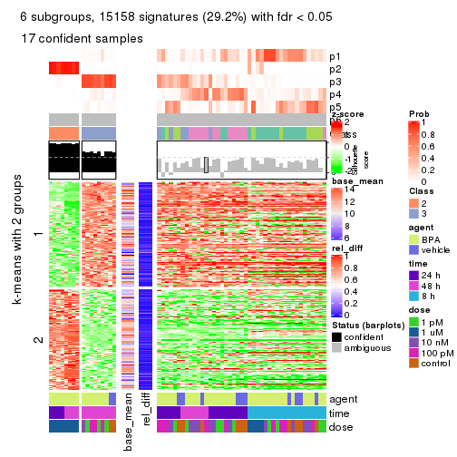
Signature heatmaps where rows are not scaled:
get_signatures(res, k = 2, scale_rows = FALSE)
get_signatures(res, k = 3, scale_rows = FALSE)
get_signatures(res, k = 4, scale_rows = FALSE)
get_signatures(res, k = 5, scale_rows = FALSE)
get_signatures(res, k = 6, scale_rows = FALSE)
Compare the overlap of signatures from different k:
compare_signatures(res)
get_signature() returns a data frame invisibly. TO get the list of signatures, the function
call should be assigned to a variable explicitly. In following code, if plot argument is set
to FALSE, no heatmap is plotted while only the differential analysis is performed.
# code only for demonstration
tb = get_signature(res, k = ..., plot = FALSE)
An example of the output of tb is:
#> which_row fdr mean_1 mean_2 scaled_mean_1 scaled_mean_2 km
#> 1 38 0.042760348 8.373488 9.131774 -0.5533452 0.5164555 1
#> 2 40 0.018707592 7.106213 8.469186 -0.6173731 0.5762149 1
#> 3 55 0.019134737 10.221463 11.207825 -0.6159697 0.5749050 1
#> 4 59 0.006059896 5.921854 7.869574 -0.6899429 0.6439467 1
#> 5 60 0.018055526 8.928898 10.211722 -0.6204761 0.5791110 1
#> 6 98 0.009384629 15.714769 14.887706 0.6635654 -0.6193277 2
...
The columns in tb are:
which_row: row indices corresponding to the input matrix.fdr: FDR for the differential test. mean_x: The mean value in group x.scaled_mean_x: The mean value in group x after rows are scaled.km: Row groups if k-means clustering is applied to rows.UMAP plot which shows how samples are separated.
dimension_reduction(res, k = 2, method = "UMAP")
dimension_reduction(res, k = 3, method = "UMAP")
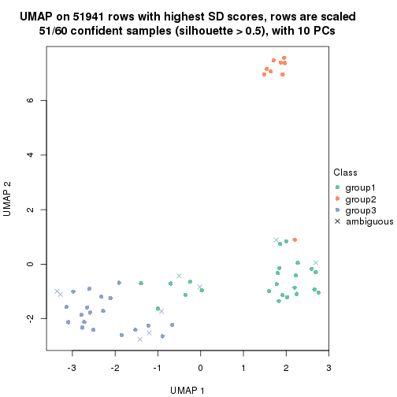
dimension_reduction(res, k = 4, method = "UMAP")
dimension_reduction(res, k = 5, method = "UMAP")
dimension_reduction(res, k = 6, method = "UMAP")
Following heatmap shows how subgroups are split when increasing k:
collect_classes(res)
Test correlation between subgroups and known annotations. If the known annotation is numeric, one-way ANOVA test is applied, and if the known annotation is discrete, chi-squared contingency table test is applied.
test_to_known_factors(res)
#> n agent(p) time(p) dose(p) k
#> SD:NMF 58 0.223 8.27e-02 7.65e-08 2
#> SD:NMF 51 0.222 4.60e-07 6.02e-07 3
#> SD:NMF 33 0.467 3.17e-07 6.93e-04 4
#> SD:NMF 25 0.407 2.25e-05 3.96e-04 5
#> SD:NMF 18 0.325 4.02e-02 7.15e-03 6
If matrix rows can be associated to genes, consider to use functional_enrichment(res,
...) to perform function enrichment for the signature genes. See this vignette for more detailed explanations.
The object with results only for a single top-value method and a single partition method can be extracted as:
res = res_list["CV", "hclust"]
# you can also extract it by
# res = res_list["CV:hclust"]
A summary of res and all the functions that can be applied to it:
res
#> A 'ConsensusPartition' object with k = 2, 3, 4, 5, 6.
#> On a matrix with 51941 rows and 60 columns.
#> Top rows (1000, 2000, 3000, 4000, 5000) are extracted by 'CV' method.
#> Subgroups are detected by 'hclust' method.
#> Performed in total 1250 partitions by row resampling.
#> Best k for subgroups seems to be 3.
#>
#> Following methods can be applied to this 'ConsensusPartition' object:
#> [1] "cola_report" "collect_classes" "collect_plots"
#> [4] "collect_stats" "colnames" "compare_signatures"
#> [7] "consensus_heatmap" "dimension_reduction" "functional_enrichment"
#> [10] "get_anno_col" "get_anno" "get_classes"
#> [13] "get_consensus" "get_matrix" "get_membership"
#> [16] "get_param" "get_signatures" "get_stats"
#> [19] "is_best_k" "is_stable_k" "membership_heatmap"
#> [22] "ncol" "nrow" "plot_ecdf"
#> [25] "rownames" "select_partition_number" "show"
#> [28] "suggest_best_k" "test_to_known_factors"
collect_plots() function collects all the plots made from res for all k (number of partitions)
into one single page to provide an easy and fast comparison between different k.
collect_plots(res)
The plots are:
k and the heatmap of
predicted classes for each k.k.k.k.All the plots in panels can be made by individual functions and they are plotted later in this section.
select_partition_number() produces several plots showing different
statistics for choosing “optimized” k. There are following statistics:
k;k, the area increased is defined as \(A_k - A_{k-1}\).The detailed explanations of these statistics can be found in the cola vignette.
Generally speaking, lower PAC score, higher mean silhouette score or higher
concordance corresponds to better partition. Rand index and Jaccard index
measure how similar the current partition is compared to partition with k-1.
If they are too similar, we won't accept k is better than k-1.
select_partition_number(res)
The numeric values for all these statistics can be obtained by get_stats().
get_stats(res)
#> k 1-PAC mean_silhouette concordance area_increased Rand Jaccard
#> 2 2 0.754 0.969 0.950 0.231 0.765 0.765
#> 3 3 0.330 0.855 0.883 0.635 0.944 0.926
#> 4 4 0.261 0.758 0.814 0.293 0.999 0.999
#> 5 5 0.293 0.422 0.695 0.262 0.851 0.789
#> 6 6 0.307 0.337 0.620 0.144 0.766 0.598
suggest_best_k() suggests the best \(k\) based on these statistics. The rules are as follows:
suggest_best_k(res)
#> [1] 3
Following shows the table of the partitions (You need to click the show/hide
code output link to see it). The membership matrix (columns with name p*)
is inferred by
clue::cl_consensus()
function with the SE method. Basically the value in the membership matrix
represents the probability to belong to a certain group. The finall class
label for an item is determined with the group with highest probability it
belongs to.
In get_classes() function, the entropy is calculated from the membership
matrix and the silhouette score is calculated from the consensus matrix.
cbind(get_classes(res, k = 2), get_membership(res, k = 2))
#> class entropy silhouette p1 p2
#> GSM439987 1 0.2236 0.970 0.964 0.036
#> GSM439988 1 0.1414 0.975 0.980 0.020
#> GSM439989 1 0.0938 0.974 0.988 0.012
#> GSM439990 1 0.1184 0.975 0.984 0.016
#> GSM439991 1 0.2236 0.971 0.964 0.036
#> GSM439992 1 0.1843 0.975 0.972 0.028
#> GSM439993 1 0.1414 0.975 0.980 0.020
#> GSM439994 1 0.2778 0.966 0.952 0.048
#> GSM439995 1 0.1414 0.974 0.980 0.020
#> GSM439996 1 0.1184 0.974 0.984 0.016
#> GSM439997 1 0.2778 0.968 0.952 0.048
#> GSM439998 1 0.1843 0.975 0.972 0.028
#> GSM440035 1 0.1843 0.975 0.972 0.028
#> GSM440036 1 0.1843 0.974 0.972 0.028
#> GSM440037 1 0.0938 0.975 0.988 0.012
#> GSM440038 1 0.3114 0.965 0.944 0.056
#> GSM440011 1 0.3114 0.965 0.944 0.056
#> GSM440012 1 0.1184 0.975 0.984 0.016
#> GSM440013 1 0.1633 0.975 0.976 0.024
#> GSM440014 1 0.0938 0.976 0.988 0.012
#> GSM439999 1 0.1414 0.974 0.980 0.020
#> GSM440000 1 0.0672 0.975 0.992 0.008
#> GSM440001 1 0.2043 0.974 0.968 0.032
#> GSM440002 1 0.2778 0.969 0.952 0.048
#> GSM440023 1 0.0938 0.976 0.988 0.012
#> GSM440024 1 0.2603 0.970 0.956 0.044
#> GSM440025 1 0.5629 0.836 0.868 0.132
#> GSM440026 1 0.4939 0.914 0.892 0.108
#> GSM440039 1 0.2043 0.973 0.968 0.032
#> GSM440040 1 0.2778 0.970 0.952 0.048
#> GSM440041 1 0.1843 0.973 0.972 0.028
#> GSM440042 1 0.1843 0.974 0.972 0.028
#> GSM440015 1 0.2043 0.973 0.968 0.032
#> GSM440016 1 0.0938 0.974 0.988 0.012
#> GSM440017 1 0.0938 0.975 0.988 0.012
#> GSM440018 1 0.0672 0.975 0.992 0.008
#> GSM440003 1 0.1633 0.974 0.976 0.024
#> GSM440004 1 0.1633 0.974 0.976 0.024
#> GSM440005 1 0.1633 0.975 0.976 0.024
#> GSM440006 1 0.1184 0.975 0.984 0.016
#> GSM440027 2 0.6343 0.993 0.160 0.840
#> GSM440028 2 0.6343 0.993 0.160 0.840
#> GSM440029 2 0.6623 0.982 0.172 0.828
#> GSM440030 2 0.6343 0.993 0.160 0.840
#> GSM440043 1 0.1414 0.974 0.980 0.020
#> GSM440044 1 0.0672 0.975 0.992 0.008
#> GSM440045 1 0.2043 0.976 0.968 0.032
#> GSM440046 1 0.0672 0.975 0.992 0.008
#> GSM440019 1 0.1414 0.976 0.980 0.020
#> GSM440020 1 0.1184 0.976 0.984 0.016
#> GSM440021 1 0.0672 0.975 0.992 0.008
#> GSM440022 1 0.1633 0.973 0.976 0.024
#> GSM440007 1 0.6343 0.814 0.840 0.160
#> GSM440008 1 0.0938 0.976 0.988 0.012
#> GSM440009 1 0.3274 0.962 0.940 0.060
#> GSM440010 1 0.1843 0.974 0.972 0.028
#> GSM440031 2 0.6343 0.993 0.160 0.840
#> GSM440032 2 0.6343 0.993 0.160 0.840
#> GSM440033 2 0.6343 0.993 0.160 0.840
#> GSM440034 2 0.6887 0.972 0.184 0.816
cbind(get_classes(res, k = 3), get_membership(res, k = 3))
#> class entropy silhouette p1 p2 p3
#> GSM439987 1 0.487 0.8307 0.828 0.028 0.144
#> GSM439988 1 0.353 0.8910 0.892 0.016 0.092
#> GSM439989 1 0.323 0.8934 0.908 0.020 0.072
#> GSM439990 1 0.328 0.8937 0.908 0.024 0.068
#> GSM439991 1 0.546 0.7997 0.788 0.028 0.184
#> GSM439992 1 0.411 0.8520 0.844 0.004 0.152
#> GSM439993 1 0.367 0.8845 0.888 0.020 0.092
#> GSM439994 1 0.551 0.8091 0.800 0.044 0.156
#> GSM439995 1 0.304 0.8831 0.920 0.036 0.044
#> GSM439996 1 0.337 0.8848 0.904 0.024 0.072
#> GSM439997 1 0.294 0.8909 0.916 0.012 0.072
#> GSM439998 1 0.295 0.8938 0.920 0.020 0.060
#> GSM440035 1 0.414 0.8851 0.860 0.016 0.124
#> GSM440036 1 0.455 0.8707 0.844 0.024 0.132
#> GSM440037 1 0.270 0.8960 0.928 0.016 0.056
#> GSM440038 1 0.440 0.8662 0.856 0.028 0.116
#> GSM440011 1 0.544 0.7534 0.784 0.024 0.192
#> GSM440012 1 0.265 0.8935 0.928 0.012 0.060
#> GSM440013 1 0.377 0.8789 0.888 0.028 0.084
#> GSM440014 1 0.305 0.8910 0.916 0.020 0.064
#> GSM439999 1 0.327 0.8926 0.904 0.016 0.080
#> GSM440000 1 0.238 0.8921 0.940 0.016 0.044
#> GSM440001 1 0.331 0.8957 0.908 0.028 0.064
#> GSM440002 1 0.630 0.7585 0.744 0.048 0.208
#> GSM440023 1 0.308 0.8961 0.916 0.024 0.060
#> GSM440024 1 0.471 0.8656 0.844 0.036 0.120
#> GSM440025 1 0.606 0.6498 0.760 0.196 0.044
#> GSM440026 3 0.847 0.0722 0.452 0.088 0.460
#> GSM440039 1 0.448 0.8341 0.844 0.020 0.136
#> GSM440040 1 0.481 0.8568 0.832 0.028 0.140
#> GSM440041 1 0.371 0.8875 0.892 0.032 0.076
#> GSM440042 1 0.518 0.8336 0.808 0.028 0.164
#> GSM440015 1 0.440 0.8633 0.864 0.044 0.092
#> GSM440016 1 0.279 0.8932 0.928 0.028 0.044
#> GSM440017 1 0.309 0.8886 0.912 0.016 0.072
#> GSM440018 1 0.260 0.8900 0.932 0.016 0.052
#> GSM440003 1 0.397 0.8657 0.876 0.024 0.100
#> GSM440004 1 0.389 0.8739 0.884 0.032 0.084
#> GSM440005 1 0.399 0.8843 0.872 0.020 0.108
#> GSM440006 1 0.294 0.8894 0.916 0.012 0.072
#> GSM440027 2 0.141 0.9713 0.036 0.964 0.000
#> GSM440028 2 0.164 0.9687 0.044 0.956 0.000
#> GSM440029 2 0.286 0.9275 0.084 0.912 0.004
#> GSM440030 2 0.141 0.9713 0.036 0.964 0.000
#> GSM440043 1 0.355 0.8798 0.900 0.036 0.064
#> GSM440044 1 0.294 0.8946 0.916 0.012 0.072
#> GSM440045 1 0.313 0.8919 0.916 0.032 0.052
#> GSM440046 1 0.298 0.8819 0.920 0.024 0.056
#> GSM440019 1 0.313 0.8900 0.904 0.008 0.088
#> GSM440020 1 0.183 0.8910 0.956 0.008 0.036
#> GSM440021 1 0.260 0.8930 0.932 0.016 0.052
#> GSM440022 1 0.368 0.8882 0.896 0.044 0.060
#> GSM440007 3 0.400 0.1644 0.116 0.016 0.868
#> GSM440008 1 0.277 0.8858 0.928 0.024 0.048
#> GSM440009 1 0.473 0.8674 0.840 0.032 0.128
#> GSM440010 1 0.447 0.8751 0.852 0.028 0.120
#> GSM440031 2 0.164 0.9689 0.044 0.956 0.000
#> GSM440032 2 0.141 0.9713 0.036 0.964 0.000
#> GSM440033 2 0.141 0.9713 0.036 0.964 0.000
#> GSM440034 2 0.304 0.9109 0.084 0.908 0.008
cbind(get_classes(res, k = 4), get_membership(res, k = 4))
#> class entropy silhouette p1 p2 p3 p4
#> GSM439987 1 0.4937 0.677 0.660 0.004 0.004 0.332
#> GSM439988 1 0.3450 0.815 0.836 0.000 0.008 0.156
#> GSM439989 1 0.3583 0.800 0.816 0.000 0.004 0.180
#> GSM439990 1 0.3545 0.802 0.828 0.000 0.008 0.164
#> GSM439991 1 0.5182 0.641 0.632 0.008 0.004 0.356
#> GSM439992 1 0.5864 0.643 0.664 0.000 0.072 0.264
#> GSM439993 1 0.3016 0.806 0.872 0.004 0.004 0.120
#> GSM439994 1 0.5598 0.636 0.636 0.004 0.028 0.332
#> GSM439995 1 0.3855 0.789 0.820 0.012 0.004 0.164
#> GSM439996 1 0.2586 0.807 0.900 0.004 0.004 0.092
#> GSM439997 1 0.3569 0.802 0.804 0.000 0.000 0.196
#> GSM439998 1 0.3157 0.812 0.852 0.004 0.000 0.144
#> GSM440035 1 0.4553 0.791 0.780 0.000 0.040 0.180
#> GSM440036 1 0.4745 0.760 0.756 0.000 0.036 0.208
#> GSM440037 1 0.3340 0.813 0.848 0.004 0.004 0.144
#> GSM440038 1 0.4792 0.727 0.680 0.000 0.008 0.312
#> GSM440011 1 0.5611 0.521 0.564 0.000 0.024 0.412
#> GSM440012 1 0.3534 0.812 0.840 0.004 0.008 0.148
#> GSM440013 1 0.4631 0.749 0.728 0.004 0.008 0.260
#> GSM440014 1 0.4034 0.798 0.804 0.004 0.012 0.180
#> GSM439999 1 0.3768 0.798 0.808 0.000 0.008 0.184
#> GSM440000 1 0.3272 0.812 0.860 0.004 0.008 0.128
#> GSM440001 1 0.3990 0.796 0.808 0.004 0.012 0.176
#> GSM440002 1 0.5404 0.635 0.644 0.000 0.028 0.328
#> GSM440023 1 0.3272 0.818 0.860 0.004 0.008 0.128
#> GSM440024 1 0.4508 0.785 0.764 0.004 0.016 0.216
#> GSM440025 1 0.6420 0.617 0.664 0.172 0.004 0.160
#> GSM440026 4 0.4344 0.000 0.108 0.000 0.076 0.816
#> GSM440039 1 0.4819 0.663 0.652 0.004 0.000 0.344
#> GSM440040 1 0.4452 0.743 0.732 0.000 0.008 0.260
#> GSM440041 1 0.4034 0.790 0.796 0.004 0.008 0.192
#> GSM440042 1 0.5669 0.571 0.620 0.004 0.028 0.348
#> GSM440015 1 0.4540 0.760 0.740 0.004 0.008 0.248
#> GSM440016 1 0.2795 0.818 0.896 0.004 0.012 0.088
#> GSM440017 1 0.2401 0.811 0.904 0.004 0.000 0.092
#> GSM440018 1 0.3534 0.807 0.840 0.004 0.008 0.148
#> GSM440003 1 0.4401 0.742 0.724 0.004 0.000 0.272
#> GSM440004 1 0.4756 0.762 0.756 0.008 0.020 0.216
#> GSM440005 1 0.3182 0.807 0.860 0.004 0.004 0.132
#> GSM440006 1 0.2676 0.816 0.896 0.000 0.012 0.092
#> GSM440027 2 0.0000 0.946 0.000 1.000 0.000 0.000
#> GSM440028 2 0.0804 0.943 0.008 0.980 0.000 0.012
#> GSM440029 2 0.2739 0.861 0.060 0.904 0.000 0.036
#> GSM440030 2 0.0188 0.946 0.000 0.996 0.000 0.004
#> GSM440043 1 0.4258 0.791 0.812 0.020 0.012 0.156
#> GSM440044 1 0.2480 0.815 0.904 0.000 0.008 0.088
#> GSM440045 1 0.3545 0.808 0.828 0.008 0.000 0.164
#> GSM440046 1 0.3808 0.785 0.808 0.004 0.004 0.184
#> GSM440019 1 0.3208 0.813 0.848 0.000 0.004 0.148
#> GSM440020 1 0.2831 0.812 0.876 0.000 0.004 0.120
#> GSM440021 1 0.3484 0.812 0.844 0.004 0.008 0.144
#> GSM440022 1 0.3824 0.805 0.844 0.024 0.008 0.124
#> GSM440007 3 0.0895 0.000 0.004 0.000 0.976 0.020
#> GSM440008 1 0.3823 0.795 0.824 0.008 0.008 0.160
#> GSM440009 1 0.4522 0.719 0.680 0.000 0.000 0.320
#> GSM440010 1 0.4201 0.778 0.788 0.004 0.012 0.196
#> GSM440031 2 0.0524 0.945 0.008 0.988 0.000 0.004
#> GSM440032 2 0.0000 0.946 0.000 1.000 0.000 0.000
#> GSM440033 2 0.0000 0.946 0.000 1.000 0.000 0.000
#> GSM440034 2 0.3239 0.838 0.052 0.880 0.000 0.068
cbind(get_classes(res, k = 5), get_membership(res, k = 5))
#> class entropy silhouette p1 p2 p3 p4 p5
#> GSM439987 3 0.6383 -0.0305 0.328 0.000 0.488 0.000 0.184
#> GSM439988 3 0.4921 0.3475 0.320 0.000 0.640 0.004 0.036
#> GSM439989 3 0.5008 0.3987 0.300 0.000 0.644 0.000 0.056
#> GSM439990 3 0.5053 0.3759 0.324 0.000 0.624 0.000 0.052
#> GSM439991 3 0.6498 -0.1433 0.340 0.000 0.460 0.000 0.200
#> GSM439992 1 0.6788 0.2400 0.524 0.000 0.268 0.024 0.184
#> GSM439993 3 0.4681 0.4265 0.260 0.000 0.696 0.004 0.040
#> GSM439994 3 0.6694 -0.0213 0.260 0.000 0.496 0.008 0.236
#> GSM439995 3 0.4220 0.4941 0.092 0.000 0.788 0.004 0.116
#> GSM439996 3 0.4064 0.4827 0.216 0.000 0.756 0.004 0.024
#> GSM439997 3 0.4761 0.4826 0.144 0.000 0.732 0.000 0.124
#> GSM439998 3 0.4333 0.5030 0.188 0.000 0.752 0.000 0.060
#> GSM440035 1 0.5724 0.3298 0.516 0.000 0.412 0.008 0.064
#> GSM440036 1 0.5432 0.3750 0.564 0.000 0.376 0.004 0.056
#> GSM440037 3 0.4573 0.4659 0.256 0.000 0.700 0.000 0.044
#> GSM440038 3 0.6206 0.2126 0.296 0.000 0.532 0.000 0.172
#> GSM440011 3 0.6554 -0.0259 0.252 0.000 0.476 0.000 0.272
#> GSM440012 3 0.4488 0.4826 0.212 0.000 0.736 0.004 0.048
#> GSM440013 3 0.5659 0.3074 0.280 0.000 0.604 0.000 0.116
#> GSM440014 3 0.5114 0.3643 0.340 0.000 0.608 0.000 0.052
#> GSM439999 3 0.4920 0.3788 0.308 0.000 0.644 0.000 0.048
#> GSM440000 3 0.4209 0.4822 0.224 0.000 0.744 0.004 0.028
#> GSM440001 3 0.5195 0.2385 0.388 0.000 0.564 0.000 0.048
#> GSM440002 1 0.6321 0.4069 0.524 0.000 0.312 0.004 0.160
#> GSM440023 3 0.4883 0.4092 0.300 0.000 0.652 0.000 0.048
#> GSM440024 3 0.5752 0.3698 0.240 0.000 0.612 0.000 0.148
#> GSM440025 3 0.7117 0.1984 0.172 0.164 0.568 0.000 0.096
#> GSM440026 5 0.4007 0.0000 0.076 0.000 0.084 0.020 0.820
#> GSM440039 3 0.6076 0.2409 0.196 0.000 0.572 0.000 0.232
#> GSM440040 1 0.6070 0.0534 0.440 0.000 0.440 0.000 0.120
#> GSM440041 3 0.5685 0.3816 0.236 0.000 0.640 0.008 0.116
#> GSM440042 1 0.7022 0.2390 0.404 0.000 0.340 0.012 0.244
#> GSM440015 3 0.5693 0.3858 0.188 0.000 0.644 0.004 0.164
#> GSM440016 3 0.4198 0.5116 0.172 0.000 0.776 0.008 0.044
#> GSM440017 3 0.3550 0.5137 0.184 0.000 0.796 0.000 0.020
#> GSM440018 3 0.3812 0.5236 0.092 0.000 0.824 0.008 0.076
#> GSM440003 3 0.5339 0.3910 0.152 0.000 0.672 0.000 0.176
#> GSM440004 3 0.5258 0.4552 0.108 0.000 0.704 0.012 0.176
#> GSM440005 3 0.4866 0.2082 0.392 0.000 0.580 0.000 0.028
#> GSM440006 3 0.4557 0.4457 0.264 0.000 0.700 0.004 0.032
#> GSM440027 2 0.0162 0.9536 0.004 0.996 0.000 0.000 0.000
#> GSM440028 2 0.0740 0.9509 0.008 0.980 0.004 0.000 0.008
#> GSM440029 2 0.2649 0.8798 0.016 0.900 0.036 0.000 0.048
#> GSM440030 2 0.0162 0.9535 0.004 0.996 0.000 0.000 0.000
#> GSM440043 3 0.4833 0.4836 0.140 0.008 0.756 0.008 0.088
#> GSM440044 3 0.4281 0.4884 0.172 0.000 0.768 0.004 0.056
#> GSM440045 3 0.4444 0.5158 0.136 0.000 0.760 0.000 0.104
#> GSM440046 3 0.3924 0.4975 0.068 0.000 0.808 0.004 0.120
#> GSM440019 3 0.4958 0.4700 0.252 0.000 0.684 0.004 0.060
#> GSM440020 3 0.4293 0.5161 0.160 0.000 0.772 0.004 0.064
#> GSM440021 3 0.3620 0.5313 0.112 0.000 0.832 0.008 0.048
#> GSM440022 3 0.4755 0.4444 0.180 0.008 0.744 0.004 0.064
#> GSM440007 4 0.0000 0.0000 0.000 0.000 0.000 1.000 0.000
#> GSM440008 3 0.4085 0.5118 0.084 0.004 0.812 0.008 0.092
#> GSM440009 3 0.6124 0.2936 0.200 0.000 0.564 0.000 0.236
#> GSM440010 3 0.6112 0.2299 0.300 0.000 0.572 0.012 0.116
#> GSM440031 2 0.0613 0.9516 0.004 0.984 0.008 0.000 0.004
#> GSM440032 2 0.0162 0.9536 0.004 0.996 0.000 0.000 0.000
#> GSM440033 2 0.0324 0.9525 0.004 0.992 0.000 0.000 0.004
#> GSM440034 2 0.3149 0.8598 0.020 0.872 0.036 0.000 0.072
cbind(get_classes(res, k = 6), get_membership(res, k = 6))
#> class entropy silhouette p1 p2 p3 p4 p5 p6
#> GSM439987 1 0.7233 0.2953 0.388 0.000 0.304 0.116 0.192 0.000
#> GSM439988 1 0.5273 0.2447 0.536 0.000 0.388 0.052 0.024 0.000
#> GSM439989 3 0.5991 -0.2569 0.416 0.000 0.464 0.056 0.060 0.004
#> GSM439990 1 0.5807 0.2651 0.464 0.000 0.432 0.052 0.048 0.004
#> GSM439991 1 0.7556 0.0950 0.332 0.000 0.292 0.188 0.188 0.000
#> GSM439992 4 0.5037 0.5607 0.160 0.000 0.136 0.684 0.020 0.000
#> GSM439993 3 0.5864 0.2483 0.324 0.000 0.528 0.124 0.024 0.000
#> GSM439994 3 0.7592 -0.0720 0.196 0.000 0.384 0.188 0.228 0.004
#> GSM439995 3 0.4498 0.4373 0.056 0.000 0.768 0.100 0.072 0.004
#> GSM439996 3 0.5510 0.3140 0.292 0.000 0.584 0.104 0.020 0.000
#> GSM439997 3 0.5542 0.3741 0.156 0.000 0.664 0.076 0.104 0.000
#> GSM439998 3 0.5717 0.3770 0.244 0.000 0.616 0.088 0.048 0.004
#> GSM440035 1 0.5700 0.2403 0.592 0.000 0.168 0.220 0.020 0.000
#> GSM440036 1 0.4744 0.3021 0.712 0.000 0.100 0.168 0.020 0.000
#> GSM440037 3 0.5747 -0.0187 0.396 0.000 0.496 0.056 0.052 0.000
#> GSM440038 1 0.6469 0.2869 0.444 0.000 0.344 0.040 0.172 0.000
#> GSM440011 1 0.6991 0.3228 0.368 0.000 0.280 0.060 0.292 0.000
#> GSM440012 3 0.5192 0.0665 0.364 0.000 0.564 0.036 0.036 0.000
#> GSM440013 3 0.6425 -0.2680 0.384 0.000 0.432 0.052 0.132 0.000
#> GSM440014 1 0.5855 0.2345 0.460 0.000 0.432 0.056 0.048 0.004
#> GSM439999 1 0.5723 0.2204 0.472 0.000 0.424 0.048 0.056 0.000
#> GSM440000 3 0.5165 0.0632 0.380 0.000 0.552 0.032 0.036 0.000
#> GSM440001 1 0.5470 0.3810 0.580 0.000 0.320 0.048 0.052 0.000
#> GSM440002 1 0.6557 0.1596 0.544 0.000 0.104 0.200 0.152 0.000
#> GSM440023 1 0.5372 0.2283 0.496 0.000 0.424 0.056 0.024 0.000
#> GSM440024 3 0.6842 -0.0155 0.344 0.000 0.420 0.084 0.152 0.000
#> GSM440025 3 0.7703 0.0226 0.280 0.164 0.416 0.044 0.096 0.000
#> GSM440026 5 0.1945 0.0000 0.016 0.000 0.056 0.004 0.920 0.004
#> GSM440039 3 0.6571 0.1272 0.212 0.000 0.516 0.068 0.204 0.000
#> GSM440040 1 0.6432 0.3295 0.556 0.000 0.216 0.112 0.116 0.000
#> GSM440041 3 0.6795 0.2700 0.224 0.000 0.508 0.192 0.068 0.008
#> GSM440042 4 0.6045 0.5595 0.096 0.000 0.208 0.600 0.096 0.000
#> GSM440015 3 0.5943 0.2639 0.204 0.000 0.604 0.060 0.132 0.000
#> GSM440016 3 0.5471 0.0904 0.356 0.000 0.548 0.068 0.028 0.000
#> GSM440017 3 0.5055 0.3302 0.280 0.000 0.636 0.056 0.028 0.000
#> GSM440018 3 0.3348 0.4336 0.100 0.000 0.836 0.028 0.036 0.000
#> GSM440003 3 0.5797 0.2922 0.152 0.000 0.632 0.064 0.152 0.000
#> GSM440004 3 0.5543 0.3434 0.112 0.000 0.672 0.064 0.148 0.004
#> GSM440005 1 0.6094 0.2101 0.512 0.000 0.308 0.152 0.028 0.000
#> GSM440006 3 0.6005 0.2165 0.344 0.000 0.508 0.112 0.036 0.000
#> GSM440027 2 0.0146 0.9575 0.000 0.996 0.000 0.004 0.000 0.000
#> GSM440028 2 0.0622 0.9552 0.000 0.980 0.000 0.012 0.008 0.000
#> GSM440029 2 0.2529 0.8930 0.012 0.900 0.024 0.020 0.044 0.000
#> GSM440030 2 0.0146 0.9577 0.000 0.996 0.000 0.004 0.000 0.000
#> GSM440043 3 0.4085 0.4426 0.068 0.008 0.804 0.072 0.048 0.000
#> GSM440044 3 0.5447 0.3745 0.252 0.000 0.612 0.116 0.020 0.000
#> GSM440045 3 0.5006 0.4408 0.128 0.000 0.724 0.080 0.064 0.004
#> GSM440046 3 0.3920 0.4359 0.048 0.000 0.812 0.064 0.072 0.004
#> GSM440019 3 0.6158 0.3180 0.276 0.000 0.544 0.128 0.052 0.000
#> GSM440020 3 0.5052 0.4280 0.168 0.000 0.700 0.080 0.052 0.000
#> GSM440021 3 0.3646 0.4280 0.120 0.000 0.812 0.032 0.036 0.000
#> GSM440022 3 0.5063 0.4120 0.104 0.008 0.696 0.176 0.012 0.004
#> GSM440007 6 0.0146 0.0000 0.000 0.000 0.004 0.000 0.000 0.996
#> GSM440008 3 0.3726 0.4502 0.040 0.004 0.824 0.076 0.056 0.000
#> GSM440009 3 0.7110 0.2360 0.196 0.000 0.468 0.164 0.172 0.000
#> GSM440010 3 0.7160 0.1594 0.288 0.000 0.412 0.212 0.084 0.004
#> GSM440031 2 0.0551 0.9560 0.000 0.984 0.004 0.008 0.004 0.000
#> GSM440032 2 0.0146 0.9575 0.000 0.996 0.000 0.004 0.000 0.000
#> GSM440033 2 0.0520 0.9533 0.000 0.984 0.000 0.008 0.008 0.000
#> GSM440034 2 0.2886 0.8697 0.012 0.872 0.012 0.024 0.080 0.000
Heatmaps for the consensus matrix. It visualizes the probability of two samples to be in a same group.
consensus_heatmap(res, k = 2)
consensus_heatmap(res, k = 3)
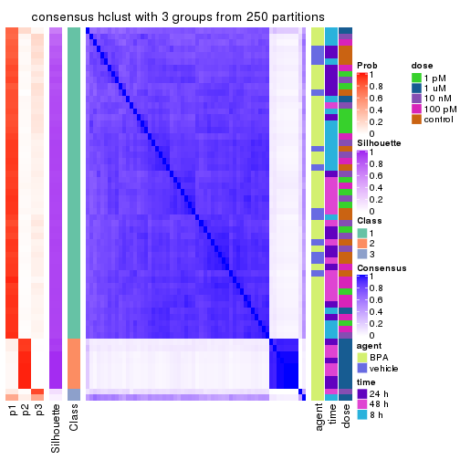
consensus_heatmap(res, k = 4)
consensus_heatmap(res, k = 5)
consensus_heatmap(res, k = 6)

Heatmaps for the membership of samples in all partitions to see how consistent they are:
membership_heatmap(res, k = 2)
membership_heatmap(res, k = 3)
membership_heatmap(res, k = 4)
membership_heatmap(res, k = 5)
membership_heatmap(res, k = 6)
As soon as we have had the classes for columns, we can look for signatures which are significantly different between classes which can be candidate marks for certain classes. Following are the heatmaps for signatures.
Signature heatmaps where rows are scaled:
get_signatures(res, k = 2)
get_signatures(res, k = 3)
get_signatures(res, k = 4)
get_signatures(res, k = 5)
get_signatures(res, k = 6)
Signature heatmaps where rows are not scaled:
get_signatures(res, k = 2, scale_rows = FALSE)
get_signatures(res, k = 3, scale_rows = FALSE)
get_signatures(res, k = 4, scale_rows = FALSE)
get_signatures(res, k = 5, scale_rows = FALSE)
get_signatures(res, k = 6, scale_rows = FALSE)
Compare the overlap of signatures from different k:
compare_signatures(res)
get_signature() returns a data frame invisibly. TO get the list of signatures, the function
call should be assigned to a variable explicitly. In following code, if plot argument is set
to FALSE, no heatmap is plotted while only the differential analysis is performed.
# code only for demonstration
tb = get_signature(res, k = ..., plot = FALSE)
An example of the output of tb is:
#> which_row fdr mean_1 mean_2 scaled_mean_1 scaled_mean_2 km
#> 1 38 0.042760348 8.373488 9.131774 -0.5533452 0.5164555 1
#> 2 40 0.018707592 7.106213 8.469186 -0.6173731 0.5762149 1
#> 3 55 0.019134737 10.221463 11.207825 -0.6159697 0.5749050 1
#> 4 59 0.006059896 5.921854 7.869574 -0.6899429 0.6439467 1
#> 5 60 0.018055526 8.928898 10.211722 -0.6204761 0.5791110 1
#> 6 98 0.009384629 15.714769 14.887706 0.6635654 -0.6193277 2
...
The columns in tb are:
which_row: row indices corresponding to the input matrix.fdr: FDR for the differential test. mean_x: The mean value in group x.scaled_mean_x: The mean value in group x after rows are scaled.km: Row groups if k-means clustering is applied to rows.UMAP plot which shows how samples are separated.
dimension_reduction(res, k = 2, method = "UMAP")
dimension_reduction(res, k = 3, method = "UMAP")
dimension_reduction(res, k = 4, method = "UMAP")
dimension_reduction(res, k = 5, method = "UMAP")
dimension_reduction(res, k = 6, method = "UMAP")
Following heatmap shows how subgroups are split when increasing k:
collect_classes(res)
Test correlation between subgroups and known annotations. If the known annotation is numeric, one-way ANOVA test is applied, and if the known annotation is discrete, chi-squared contingency table test is applied.
test_to_known_factors(res)
#> n agent(p) time(p) dose(p) k
#> CV:hclust 60 0.296 0.0995 1.87e-07 2
#> CV:hclust 58 0.278 0.1038 5.11e-08 3
#> CV:hclust 58 0.278 0.1038 5.11e-08 4
#> CV:hclust 16 1.000 1.0000 3.02e-03 5
#> CV:hclust 10 0.429 0.6283 6.74e-03 6
If matrix rows can be associated to genes, consider to use functional_enrichment(res,
...) to perform function enrichment for the signature genes. See this vignette for more detailed explanations.
The object with results only for a single top-value method and a single partition method can be extracted as:
res = res_list["CV", "kmeans"]
# you can also extract it by
# res = res_list["CV:kmeans"]
A summary of res and all the functions that can be applied to it:
res
#> A 'ConsensusPartition' object with k = 2, 3, 4, 5, 6.
#> On a matrix with 51941 rows and 60 columns.
#> Top rows (1000, 2000, 3000, 4000, 5000) are extracted by 'CV' method.
#> Subgroups are detected by 'kmeans' method.
#> Performed in total 1250 partitions by row resampling.
#> Best k for subgroups seems to be 2.
#>
#> Following methods can be applied to this 'ConsensusPartition' object:
#> [1] "cola_report" "collect_classes" "collect_plots"
#> [4] "collect_stats" "colnames" "compare_signatures"
#> [7] "consensus_heatmap" "dimension_reduction" "functional_enrichment"
#> [10] "get_anno_col" "get_anno" "get_classes"
#> [13] "get_consensus" "get_matrix" "get_membership"
#> [16] "get_param" "get_signatures" "get_stats"
#> [19] "is_best_k" "is_stable_k" "membership_heatmap"
#> [22] "ncol" "nrow" "plot_ecdf"
#> [25] "rownames" "select_partition_number" "show"
#> [28] "suggest_best_k" "test_to_known_factors"
collect_plots() function collects all the plots made from res for all k (number of partitions)
into one single page to provide an easy and fast comparison between different k.
collect_plots(res)
The plots are:
k and the heatmap of
predicted classes for each k.k.k.k.All the plots in panels can be made by individual functions and they are plotted later in this section.
select_partition_number() produces several plots showing different
statistics for choosing “optimized” k. There are following statistics:
k;k, the area increased is defined as \(A_k - A_{k-1}\).The detailed explanations of these statistics can be found in the cola vignette.
Generally speaking, lower PAC score, higher mean silhouette score or higher
concordance corresponds to better partition. Rand index and Jaccard index
measure how similar the current partition is compared to partition with k-1.
If they are too similar, we won't accept k is better than k-1.
select_partition_number(res)
The numeric values for all these statistics can be obtained by get_stats().
get_stats(res)
#> k 1-PAC mean_silhouette concordance area_increased Rand Jaccard
#> 2 2 1.000 0.982 0.985 0.2498 0.765 0.765
#> 3 3 0.289 0.593 0.777 1.3583 0.619 0.501
#> 4 4 0.388 0.543 0.715 0.2234 0.793 0.513
#> 5 5 0.482 0.489 0.661 0.0775 0.895 0.644
#> 6 6 0.562 0.423 0.630 0.0524 0.895 0.594
suggest_best_k() suggests the best \(k\) based on these statistics. The rules are as follows:
suggest_best_k(res)
#> [1] 2
Following shows the table of the partitions (You need to click the show/hide
code output link to see it). The membership matrix (columns with name p*)
is inferred by
clue::cl_consensus()
function with the SE method. Basically the value in the membership matrix
represents the probability to belong to a certain group. The finall class
label for an item is determined with the group with highest probability it
belongs to.
In get_classes() function, the entropy is calculated from the membership
matrix and the silhouette score is calculated from the consensus matrix.
cbind(get_classes(res, k = 2), get_membership(res, k = 2))
#> class entropy silhouette p1 p2
#> GSM439987 1 0.0672 0.984 0.992 0.008
#> GSM439988 1 0.0672 0.984 0.992 0.008
#> GSM439989 1 0.0672 0.984 0.992 0.008
#> GSM439990 1 0.0376 0.984 0.996 0.004
#> GSM439991 1 0.0000 0.984 1.000 0.000
#> GSM439992 1 0.0000 0.984 1.000 0.000
#> GSM439993 1 0.0000 0.984 1.000 0.000
#> GSM439994 1 0.1414 0.980 0.980 0.020
#> GSM439995 1 0.2948 0.963 0.948 0.052
#> GSM439996 1 0.0000 0.984 1.000 0.000
#> GSM439997 1 0.2043 0.975 0.968 0.032
#> GSM439998 1 0.0376 0.984 0.996 0.004
#> GSM440035 1 0.0000 0.984 1.000 0.000
#> GSM440036 1 0.0672 0.984 0.992 0.008
#> GSM440037 1 0.0376 0.984 0.996 0.004
#> GSM440038 1 0.0672 0.984 0.992 0.008
#> GSM440011 1 0.0672 0.984 0.992 0.008
#> GSM440012 1 0.0376 0.984 0.996 0.004
#> GSM440013 1 0.0938 0.983 0.988 0.012
#> GSM440014 1 0.0672 0.984 0.992 0.008
#> GSM439999 1 0.0672 0.984 0.992 0.008
#> GSM440000 1 0.0376 0.984 0.996 0.004
#> GSM440001 1 0.0376 0.984 0.996 0.004
#> GSM440002 1 0.0672 0.984 0.992 0.008
#> GSM440023 1 0.0376 0.984 0.996 0.004
#> GSM440024 1 0.0376 0.984 0.996 0.004
#> GSM440025 1 0.3274 0.962 0.940 0.060
#> GSM440026 1 0.2948 0.965 0.948 0.052
#> GSM440039 1 0.2043 0.977 0.968 0.032
#> GSM440040 1 0.0000 0.984 1.000 0.000
#> GSM440041 1 0.0000 0.984 1.000 0.000
#> GSM440042 1 0.0000 0.984 1.000 0.000
#> GSM440015 1 0.2236 0.976 0.964 0.036
#> GSM440016 1 0.2236 0.974 0.964 0.036
#> GSM440017 1 0.0000 0.984 1.000 0.000
#> GSM440018 1 0.2236 0.975 0.964 0.036
#> GSM440003 1 0.2778 0.968 0.952 0.048
#> GSM440004 1 0.2948 0.965 0.948 0.052
#> GSM440005 1 0.0000 0.984 1.000 0.000
#> GSM440006 1 0.0000 0.984 1.000 0.000
#> GSM440027 2 0.0000 1.000 0.000 1.000
#> GSM440028 2 0.0000 1.000 0.000 1.000
#> GSM440029 2 0.0000 1.000 0.000 1.000
#> GSM440030 2 0.0000 1.000 0.000 1.000
#> GSM440043 1 0.2948 0.963 0.948 0.052
#> GSM440044 1 0.0376 0.984 0.996 0.004
#> GSM440045 1 0.2778 0.966 0.952 0.048
#> GSM440046 1 0.2778 0.968 0.952 0.048
#> GSM440019 1 0.0000 0.984 1.000 0.000
#> GSM440020 1 0.1414 0.980 0.980 0.020
#> GSM440021 1 0.2043 0.975 0.968 0.032
#> GSM440022 1 0.2778 0.966 0.952 0.048
#> GSM440007 1 0.0376 0.984 0.996 0.004
#> GSM440008 1 0.3114 0.960 0.944 0.056
#> GSM440009 1 0.1633 0.980 0.976 0.024
#> GSM440010 1 0.0672 0.984 0.992 0.008
#> GSM440031 2 0.0000 1.000 0.000 1.000
#> GSM440032 2 0.0000 1.000 0.000 1.000
#> GSM440033 2 0.0000 1.000 0.000 1.000
#> GSM440034 2 0.0000 1.000 0.000 1.000
cbind(get_classes(res, k = 3), get_membership(res, k = 3))
#> class entropy silhouette p1 p2 p3
#> GSM439987 1 0.3192 0.677 0.888 0.000 0.112
#> GSM439988 1 0.4702 0.706 0.788 0.000 0.212
#> GSM439989 1 0.3551 0.714 0.868 0.000 0.132
#> GSM439990 1 0.4399 0.704 0.812 0.000 0.188
#> GSM439991 1 0.3038 0.670 0.896 0.000 0.104
#> GSM439992 1 0.2959 0.718 0.900 0.000 0.100
#> GSM439993 1 0.5785 0.545 0.668 0.000 0.332
#> GSM439994 3 0.5968 0.501 0.364 0.000 0.636
#> GSM439995 3 0.2448 0.667 0.076 0.000 0.924
#> GSM439996 3 0.6309 -0.213 0.496 0.000 0.504
#> GSM439997 3 0.4002 0.662 0.160 0.000 0.840
#> GSM439998 3 0.5529 0.416 0.296 0.000 0.704
#> GSM440035 1 0.2165 0.719 0.936 0.000 0.064
#> GSM440036 1 0.1163 0.711 0.972 0.000 0.028
#> GSM440037 1 0.6286 0.312 0.536 0.000 0.464
#> GSM440038 1 0.4399 0.666 0.812 0.000 0.188
#> GSM440011 1 0.2537 0.690 0.920 0.000 0.080
#> GSM440012 3 0.6308 -0.291 0.492 0.000 0.508
#> GSM440013 1 0.4399 0.659 0.812 0.000 0.188
#> GSM440014 1 0.3686 0.718 0.860 0.000 0.140
#> GSM439999 1 0.3412 0.716 0.876 0.000 0.124
#> GSM440000 1 0.6309 0.250 0.500 0.000 0.500
#> GSM440001 1 0.2959 0.710 0.900 0.000 0.100
#> GSM440002 1 0.1860 0.685 0.948 0.000 0.052
#> GSM440023 1 0.5431 0.649 0.716 0.000 0.284
#> GSM440024 1 0.6045 0.480 0.620 0.000 0.380
#> GSM440025 3 0.5948 0.303 0.360 0.000 0.640
#> GSM440026 3 0.6180 0.414 0.416 0.000 0.584
#> GSM440039 3 0.6154 0.443 0.408 0.000 0.592
#> GSM440040 1 0.4291 0.696 0.820 0.000 0.180
#> GSM440041 1 0.6314 0.429 0.604 0.004 0.392
#> GSM440042 1 0.5465 0.527 0.712 0.000 0.288
#> GSM440015 3 0.5760 0.560 0.328 0.000 0.672
#> GSM440016 3 0.4974 0.544 0.236 0.000 0.764
#> GSM440017 3 0.6302 -0.215 0.480 0.000 0.520
#> GSM440018 3 0.2711 0.667 0.088 0.000 0.912
#> GSM440003 3 0.5810 0.511 0.336 0.000 0.664
#> GSM440004 3 0.4842 0.614 0.224 0.000 0.776
#> GSM440005 1 0.5216 0.644 0.740 0.000 0.260
#> GSM440006 1 0.5760 0.549 0.672 0.000 0.328
#> GSM440027 2 0.0424 0.998 0.000 0.992 0.008
#> GSM440028 2 0.0237 0.995 0.000 0.996 0.004
#> GSM440029 2 0.0424 0.998 0.000 0.992 0.008
#> GSM440030 2 0.0424 0.998 0.000 0.992 0.008
#> GSM440043 3 0.3879 0.663 0.152 0.000 0.848
#> GSM440044 3 0.5591 0.483 0.304 0.000 0.696
#> GSM440045 3 0.3192 0.669 0.112 0.000 0.888
#> GSM440046 3 0.2537 0.671 0.080 0.000 0.920
#> GSM440019 1 0.6045 0.460 0.620 0.000 0.380
#> GSM440020 3 0.3619 0.656 0.136 0.000 0.864
#> GSM440021 3 0.2537 0.657 0.080 0.000 0.920
#> GSM440022 3 0.3340 0.665 0.120 0.000 0.880
#> GSM440007 1 0.5902 0.508 0.680 0.004 0.316
#> GSM440008 3 0.1860 0.663 0.052 0.000 0.948
#> GSM440009 3 0.5902 0.562 0.316 0.004 0.680
#> GSM440010 3 0.6521 -0.156 0.496 0.004 0.500
#> GSM440031 2 0.0424 0.998 0.000 0.992 0.008
#> GSM440032 2 0.0424 0.998 0.000 0.992 0.008
#> GSM440033 2 0.1031 0.987 0.000 0.976 0.024
#> GSM440034 2 0.0424 0.998 0.000 0.992 0.008
cbind(get_classes(res, k = 4), get_membership(res, k = 4))
#> class entropy silhouette p1 p2 p3 p4
#> GSM439987 1 0.3088 0.6045 0.888 0.000 0.052 0.060
#> GSM439988 1 0.5954 0.4256 0.604 0.000 0.052 0.344
#> GSM439989 1 0.5723 0.5753 0.684 0.000 0.072 0.244
#> GSM439990 1 0.6326 0.5039 0.636 0.000 0.108 0.256
#> GSM439991 1 0.6123 0.1475 0.572 0.000 0.056 0.372
#> GSM439992 4 0.5331 0.2479 0.332 0.000 0.024 0.644
#> GSM439993 4 0.4869 0.5260 0.132 0.000 0.088 0.780
#> GSM439994 3 0.6323 0.5823 0.272 0.000 0.628 0.100
#> GSM439995 3 0.2040 0.7122 0.012 0.004 0.936 0.048
#> GSM439996 4 0.5607 0.5404 0.072 0.004 0.208 0.716
#> GSM439997 3 0.5174 0.6691 0.092 0.000 0.756 0.152
#> GSM439998 4 0.6337 0.4394 0.072 0.000 0.360 0.568
#> GSM440035 1 0.5233 0.4563 0.648 0.000 0.020 0.332
#> GSM440036 1 0.4018 0.5508 0.772 0.000 0.004 0.224
#> GSM440037 4 0.7847 0.2080 0.360 0.004 0.220 0.416
#> GSM440038 1 0.5330 0.5820 0.748 0.000 0.120 0.132
#> GSM440011 1 0.3107 0.6116 0.884 0.000 0.036 0.080
#> GSM440012 4 0.7875 0.2050 0.328 0.000 0.288 0.384
#> GSM440013 1 0.5071 0.5574 0.772 0.004 0.144 0.080
#> GSM440014 1 0.5657 0.5839 0.688 0.000 0.068 0.244
#> GSM439999 1 0.5056 0.6027 0.732 0.000 0.044 0.224
#> GSM440000 4 0.7706 0.1852 0.348 0.000 0.228 0.424
#> GSM440001 1 0.4800 0.6319 0.760 0.000 0.044 0.196
#> GSM440002 1 0.3547 0.5515 0.840 0.000 0.016 0.144
#> GSM440023 1 0.6785 0.1747 0.484 0.000 0.096 0.420
#> GSM440024 4 0.7221 0.2893 0.308 0.000 0.168 0.524
#> GSM440025 3 0.7871 -0.1921 0.240 0.004 0.436 0.320
#> GSM440026 3 0.6451 0.3519 0.404 0.000 0.524 0.072
#> GSM440039 3 0.5668 0.5954 0.300 0.000 0.652 0.048
#> GSM440040 4 0.5411 0.3192 0.312 0.000 0.032 0.656
#> GSM440041 4 0.5985 0.5191 0.168 0.000 0.140 0.692
#> GSM440042 4 0.6649 0.1965 0.340 0.000 0.100 0.560
#> GSM440015 3 0.5074 0.6769 0.236 0.000 0.724 0.040
#> GSM440016 3 0.7001 0.2447 0.148 0.004 0.584 0.264
#> GSM440017 4 0.6613 0.5005 0.116 0.000 0.288 0.596
#> GSM440018 3 0.2761 0.7126 0.048 0.000 0.904 0.048
#> GSM440003 3 0.4914 0.6711 0.208 0.000 0.748 0.044
#> GSM440004 3 0.3598 0.7088 0.124 0.000 0.848 0.028
#> GSM440005 4 0.5228 0.3949 0.268 0.000 0.036 0.696
#> GSM440006 4 0.5122 0.5220 0.164 0.000 0.080 0.756
#> GSM440027 2 0.0336 0.9911 0.000 0.992 0.008 0.000
#> GSM440028 2 0.0524 0.9900 0.004 0.988 0.000 0.008
#> GSM440029 2 0.0336 0.9884 0.000 0.992 0.008 0.000
#> GSM440030 2 0.0376 0.9911 0.000 0.992 0.004 0.004
#> GSM440043 3 0.3194 0.7220 0.052 0.004 0.888 0.056
#> GSM440044 4 0.6889 0.2202 0.108 0.000 0.396 0.496
#> GSM440045 3 0.2500 0.7215 0.044 0.000 0.916 0.040
#> GSM440046 3 0.2521 0.7231 0.064 0.000 0.912 0.024
#> GSM440019 4 0.5160 0.5303 0.136 0.000 0.104 0.760
#> GSM440020 3 0.4426 0.6274 0.024 0.000 0.772 0.204
#> GSM440021 3 0.3638 0.6704 0.032 0.000 0.848 0.120
#> GSM440022 3 0.3612 0.6949 0.012 0.004 0.840 0.144
#> GSM440007 4 0.5823 0.2520 0.348 0.000 0.044 0.608
#> GSM440008 3 0.2731 0.7105 0.028 0.004 0.908 0.060
#> GSM440009 3 0.7623 -0.0133 0.204 0.000 0.416 0.380
#> GSM440010 4 0.7085 0.4228 0.232 0.000 0.200 0.568
#> GSM440031 2 0.0376 0.9911 0.000 0.992 0.004 0.004
#> GSM440032 2 0.0336 0.9911 0.000 0.992 0.008 0.000
#> GSM440033 2 0.1296 0.9792 0.004 0.964 0.004 0.028
#> GSM440034 2 0.0564 0.9893 0.004 0.988 0.004 0.004
cbind(get_classes(res, k = 5), get_membership(res, k = 5))
#> class entropy silhouette p1 p2 p3 p4 p5
#> GSM439987 1 0.4072 0.39953 0.776 0.000 0.020 0.016 0.188
#> GSM439988 1 0.6774 0.32541 0.524 0.000 0.056 0.324 0.096
#> GSM439989 1 0.5237 0.48950 0.660 0.000 0.056 0.272 0.012
#> GSM439990 1 0.5687 0.41295 0.580 0.000 0.052 0.348 0.020
#> GSM439991 5 0.7020 0.26991 0.412 0.000 0.048 0.120 0.420
#> GSM439992 5 0.6214 0.54805 0.132 0.000 0.012 0.288 0.568
#> GSM439993 4 0.4808 0.36884 0.040 0.000 0.028 0.736 0.196
#> GSM439994 3 0.6979 0.25678 0.280 0.000 0.476 0.020 0.224
#> GSM439995 3 0.2249 0.72342 0.008 0.000 0.896 0.096 0.000
#> GSM439996 4 0.4366 0.47116 0.004 0.000 0.124 0.776 0.096
#> GSM439997 3 0.6100 0.58518 0.116 0.000 0.640 0.208 0.036
#> GSM439998 4 0.4275 0.47057 0.024 0.000 0.228 0.740 0.008
#> GSM440035 1 0.6434 -0.06540 0.444 0.000 0.004 0.152 0.400
#> GSM440036 1 0.5623 0.34943 0.596 0.000 0.000 0.104 0.300
#> GSM440037 4 0.6939 0.28142 0.288 0.000 0.132 0.528 0.052
#> GSM440038 1 0.5157 0.52979 0.736 0.000 0.060 0.156 0.048
#> GSM440011 1 0.4107 0.43883 0.804 0.000 0.024 0.040 0.132
#> GSM440012 4 0.6700 0.29943 0.272 0.000 0.180 0.528 0.020
#> GSM440013 1 0.5306 0.50238 0.736 0.000 0.124 0.084 0.056
#> GSM440014 1 0.5789 0.48829 0.628 0.000 0.044 0.280 0.048
#> GSM439999 1 0.5133 0.53451 0.700 0.000 0.036 0.228 0.036
#> GSM440000 4 0.6678 0.27880 0.304 0.000 0.124 0.536 0.036
#> GSM440001 1 0.5354 0.55081 0.700 0.000 0.020 0.188 0.092
#> GSM440002 1 0.5166 0.22322 0.660 0.000 0.024 0.032 0.284
#> GSM440023 4 0.6630 0.08965 0.364 0.000 0.048 0.504 0.084
#> GSM440024 4 0.6207 0.42383 0.200 0.000 0.096 0.644 0.060
#> GSM440025 4 0.7289 0.25996 0.216 0.000 0.304 0.444 0.036
#> GSM440026 1 0.7203 -0.11219 0.428 0.000 0.356 0.036 0.180
#> GSM440039 3 0.5994 0.47316 0.324 0.000 0.572 0.016 0.088
#> GSM440040 4 0.6395 0.14027 0.192 0.000 0.008 0.552 0.248
#> GSM440041 4 0.5059 0.42838 0.044 0.000 0.084 0.752 0.120
#> GSM440042 5 0.7404 0.56902 0.176 0.000 0.068 0.268 0.488
#> GSM440015 3 0.5789 0.60274 0.256 0.000 0.644 0.052 0.048
#> GSM440016 3 0.5790 0.01568 0.092 0.000 0.500 0.408 0.000
#> GSM440017 4 0.3646 0.51032 0.032 0.000 0.140 0.820 0.008
#> GSM440018 3 0.2793 0.71773 0.036 0.000 0.876 0.088 0.000
#> GSM440003 3 0.5162 0.60502 0.236 0.000 0.692 0.024 0.048
#> GSM440004 3 0.4356 0.67566 0.180 0.000 0.768 0.028 0.024
#> GSM440005 4 0.5694 0.30850 0.112 0.000 0.012 0.648 0.228
#> GSM440006 4 0.5374 0.36518 0.060 0.000 0.044 0.708 0.188
#> GSM440027 2 0.0324 0.98017 0.004 0.992 0.000 0.000 0.004
#> GSM440028 2 0.0290 0.98060 0.000 0.992 0.000 0.000 0.008
#> GSM440029 2 0.0693 0.97515 0.000 0.980 0.012 0.000 0.008
#> GSM440030 2 0.0162 0.98073 0.000 0.996 0.000 0.000 0.004
#> GSM440043 3 0.3097 0.72875 0.032 0.000 0.876 0.068 0.024
#> GSM440044 4 0.6908 0.17520 0.024 0.000 0.356 0.456 0.164
#> GSM440045 3 0.2437 0.72726 0.032 0.000 0.904 0.060 0.004
#> GSM440046 3 0.2502 0.73113 0.024 0.000 0.904 0.060 0.012
#> GSM440019 4 0.4636 0.38432 0.012 0.000 0.064 0.752 0.172
#> GSM440020 3 0.4366 0.51322 0.000 0.000 0.664 0.320 0.016
#> GSM440021 3 0.4001 0.63512 0.020 0.000 0.768 0.204 0.008
#> GSM440022 3 0.3776 0.70405 0.012 0.000 0.820 0.128 0.040
#> GSM440007 5 0.4379 0.52639 0.044 0.000 0.012 0.180 0.764
#> GSM440008 3 0.2330 0.72220 0.004 0.004 0.900 0.088 0.004
#> GSM440009 4 0.8098 -0.10400 0.192 0.000 0.296 0.388 0.124
#> GSM440010 4 0.7708 0.00427 0.116 0.000 0.144 0.464 0.276
#> GSM440031 2 0.0162 0.98073 0.000 0.996 0.000 0.000 0.004
#> GSM440032 2 0.0324 0.98017 0.004 0.992 0.000 0.000 0.004
#> GSM440033 2 0.2331 0.92559 0.020 0.900 0.000 0.000 0.080
#> GSM440034 2 0.0912 0.97365 0.000 0.972 0.012 0.000 0.016
cbind(get_classes(res, k = 6), get_membership(res, k = 6))
#> class entropy silhouette p1 p2 p3 p4 p5 p6
#> GSM439987 5 0.5542 0.101 0.400 0.000 0.020 0.012 0.516 0.052
#> GSM439988 1 0.6547 0.382 0.596 0.000 0.036 0.152 0.156 0.060
#> GSM439989 1 0.4205 0.512 0.800 0.000 0.028 0.076 0.072 0.024
#> GSM439990 1 0.4804 0.524 0.752 0.000 0.044 0.128 0.048 0.028
#> GSM439991 5 0.6359 -0.121 0.080 0.000 0.016 0.072 0.556 0.276
#> GSM439992 6 0.6528 0.438 0.060 0.000 0.012 0.228 0.148 0.552
#> GSM439993 4 0.4638 0.456 0.032 0.000 0.008 0.744 0.064 0.152
#> GSM439994 5 0.6879 0.126 0.032 0.000 0.344 0.028 0.436 0.160
#> GSM439995 3 0.1872 0.679 0.008 0.004 0.920 0.064 0.004 0.000
#> GSM439996 4 0.4574 0.521 0.060 0.000 0.080 0.772 0.012 0.076
#> GSM439997 3 0.6383 0.434 0.020 0.000 0.556 0.240 0.152 0.032
#> GSM439998 4 0.4590 0.482 0.092 0.000 0.176 0.720 0.008 0.004
#> GSM440035 6 0.7498 0.108 0.304 0.000 0.000 0.148 0.220 0.328
#> GSM440036 1 0.6985 -0.100 0.392 0.000 0.000 0.068 0.308 0.232
#> GSM440037 1 0.5797 0.243 0.504 0.000 0.092 0.380 0.012 0.012
#> GSM440038 1 0.5481 0.338 0.656 0.000 0.056 0.040 0.228 0.020
#> GSM440011 1 0.5356 -0.100 0.468 0.000 0.012 0.016 0.464 0.040
#> GSM440012 1 0.5468 0.233 0.492 0.000 0.128 0.380 0.000 0.000
#> GSM440013 1 0.6165 0.219 0.572 0.000 0.092 0.032 0.276 0.028
#> GSM440014 1 0.5169 0.504 0.736 0.000 0.032 0.092 0.080 0.060
#> GSM439999 1 0.3321 0.501 0.856 0.000 0.016 0.036 0.064 0.028
#> GSM440000 1 0.5449 0.283 0.536 0.000 0.084 0.364 0.000 0.016
#> GSM440001 1 0.6003 0.169 0.552 0.000 0.008 0.084 0.312 0.044
#> GSM440002 5 0.5893 0.164 0.288 0.000 0.000 0.020 0.540 0.152
#> GSM440023 1 0.6227 0.307 0.528 0.000 0.052 0.336 0.024 0.060
#> GSM440024 4 0.6468 -0.111 0.400 0.000 0.048 0.456 0.036 0.060
#> GSM440025 1 0.7001 0.134 0.408 0.000 0.236 0.304 0.016 0.036
#> GSM440026 5 0.7030 0.252 0.096 0.000 0.292 0.028 0.488 0.096
#> GSM440039 3 0.5530 0.283 0.064 0.000 0.552 0.012 0.356 0.016
#> GSM440040 4 0.6913 0.222 0.108 0.000 0.008 0.520 0.172 0.192
#> GSM440041 4 0.5999 0.476 0.168 0.000 0.032 0.648 0.052 0.100
#> GSM440042 6 0.7076 0.319 0.032 0.000 0.028 0.200 0.368 0.372
#> GSM440015 3 0.6077 0.365 0.084 0.000 0.560 0.040 0.300 0.016
#> GSM440016 3 0.6488 -0.110 0.328 0.000 0.384 0.272 0.012 0.004
#> GSM440017 4 0.4259 0.482 0.128 0.000 0.104 0.756 0.000 0.012
#> GSM440018 3 0.2766 0.672 0.060 0.000 0.872 0.060 0.008 0.000
#> GSM440003 3 0.5391 0.445 0.088 0.000 0.624 0.012 0.264 0.012
#> GSM440004 3 0.4869 0.524 0.044 0.000 0.688 0.028 0.232 0.008
#> GSM440005 4 0.6659 0.340 0.140 0.000 0.012 0.564 0.100 0.184
#> GSM440006 4 0.5614 0.469 0.092 0.000 0.028 0.688 0.052 0.140
#> GSM440027 2 0.0146 0.972 0.000 0.996 0.000 0.000 0.000 0.004
#> GSM440028 2 0.0291 0.973 0.000 0.992 0.000 0.000 0.004 0.004
#> GSM440029 2 0.1057 0.959 0.004 0.968 0.008 0.004 0.012 0.004
#> GSM440030 2 0.0291 0.973 0.000 0.992 0.000 0.000 0.004 0.004
#> GSM440043 3 0.3106 0.668 0.008 0.000 0.864 0.064 0.044 0.020
#> GSM440044 4 0.7570 0.258 0.048 0.000 0.296 0.428 0.084 0.144
#> GSM440045 3 0.3080 0.670 0.040 0.000 0.872 0.044 0.028 0.016
#> GSM440046 3 0.1448 0.680 0.016 0.000 0.948 0.024 0.012 0.000
#> GSM440019 4 0.5903 0.385 0.040 0.000 0.048 0.664 0.096 0.152
#> GSM440020 3 0.4887 0.348 0.000 0.000 0.572 0.376 0.032 0.020
#> GSM440021 3 0.4152 0.540 0.044 0.000 0.712 0.240 0.000 0.004
#> GSM440022 3 0.3538 0.653 0.004 0.000 0.824 0.108 0.016 0.048
#> GSM440007 6 0.3528 0.427 0.028 0.000 0.004 0.092 0.044 0.832
#> GSM440008 3 0.1307 0.681 0.008 0.000 0.952 0.032 0.000 0.008
#> GSM440009 4 0.8052 0.105 0.076 0.000 0.184 0.392 0.256 0.092
#> GSM440010 4 0.8472 0.109 0.124 0.000 0.140 0.360 0.140 0.236
#> GSM440031 2 0.0291 0.973 0.000 0.992 0.000 0.000 0.004 0.004
#> GSM440032 2 0.0146 0.972 0.000 0.996 0.000 0.000 0.000 0.004
#> GSM440033 2 0.2866 0.879 0.004 0.860 0.000 0.000 0.084 0.052
#> GSM440034 2 0.0862 0.965 0.000 0.972 0.004 0.000 0.016 0.008
Heatmaps for the consensus matrix. It visualizes the probability of two samples to be in a same group.
consensus_heatmap(res, k = 2)
consensus_heatmap(res, k = 3)
consensus_heatmap(res, k = 4)
consensus_heatmap(res, k = 5)
consensus_heatmap(res, k = 6)
Heatmaps for the membership of samples in all partitions to see how consistent they are:
membership_heatmap(res, k = 2)
membership_heatmap(res, k = 3)
membership_heatmap(res, k = 4)
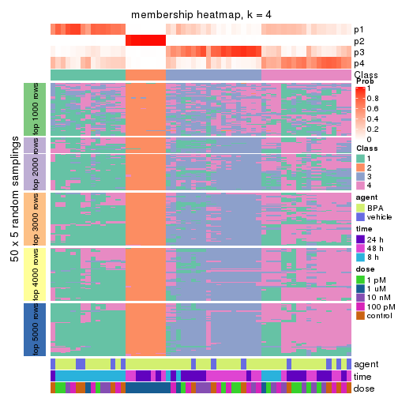
membership_heatmap(res, k = 5)
membership_heatmap(res, k = 6)
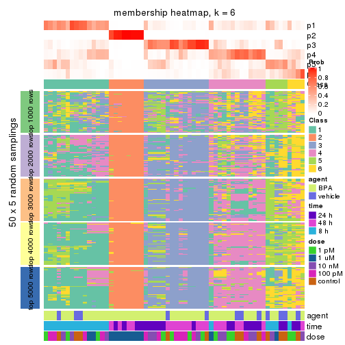
As soon as we have had the classes for columns, we can look for signatures which are significantly different between classes which can be candidate marks for certain classes. Following are the heatmaps for signatures.
Signature heatmaps where rows are scaled:
get_signatures(res, k = 2)
get_signatures(res, k = 3)
get_signatures(res, k = 4)
get_signatures(res, k = 5)
get_signatures(res, k = 6)
Signature heatmaps where rows are not scaled:
get_signatures(res, k = 2, scale_rows = FALSE)
get_signatures(res, k = 3, scale_rows = FALSE)
get_signatures(res, k = 4, scale_rows = FALSE)
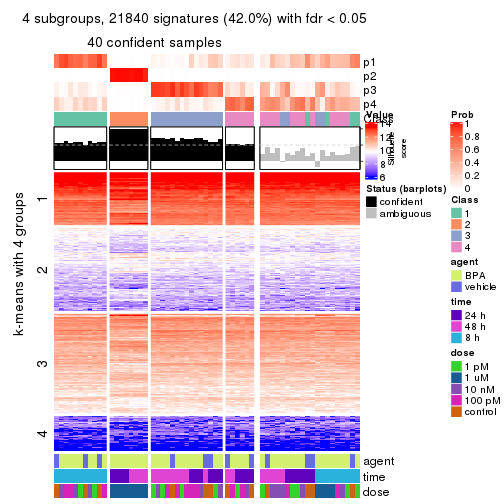
get_signatures(res, k = 5, scale_rows = FALSE)
get_signatures(res, k = 6, scale_rows = FALSE)
Compare the overlap of signatures from different k:
compare_signatures(res)
get_signature() returns a data frame invisibly. TO get the list of signatures, the function
call should be assigned to a variable explicitly. In following code, if plot argument is set
to FALSE, no heatmap is plotted while only the differential analysis is performed.
# code only for demonstration
tb = get_signature(res, k = ..., plot = FALSE)
An example of the output of tb is:
#> which_row fdr mean_1 mean_2 scaled_mean_1 scaled_mean_2 km
#> 1 38 0.042760348 8.373488 9.131774 -0.5533452 0.5164555 1
#> 2 40 0.018707592 7.106213 8.469186 -0.6173731 0.5762149 1
#> 3 55 0.019134737 10.221463 11.207825 -0.6159697 0.5749050 1
#> 4 59 0.006059896 5.921854 7.869574 -0.6899429 0.6439467 1
#> 5 60 0.018055526 8.928898 10.211722 -0.6204761 0.5791110 1
#> 6 98 0.009384629 15.714769 14.887706 0.6635654 -0.6193277 2
...
The columns in tb are:
which_row: row indices corresponding to the input matrix.fdr: FDR for the differential test. mean_x: The mean value in group x.scaled_mean_x: The mean value in group x after rows are scaled.km: Row groups if k-means clustering is applied to rows.UMAP plot which shows how samples are separated.
dimension_reduction(res, k = 2, method = "UMAP")
dimension_reduction(res, k = 3, method = "UMAP")
dimension_reduction(res, k = 4, method = "UMAP")
dimension_reduction(res, k = 5, method = "UMAP")
dimension_reduction(res, k = 6, method = "UMAP")
Following heatmap shows how subgroups are split when increasing k:
collect_classes(res)
Test correlation between subgroups and known annotations. If the known annotation is numeric, one-way ANOVA test is applied, and if the known annotation is discrete, chi-squared contingency table test is applied.
test_to_known_factors(res)
#> n agent(p) time(p) dose(p) k
#> CV:kmeans 60 0.2963 9.95e-02 1.87e-07 2
#> CV:kmeans 46 0.1637 2.83e-05 7.25e-07 3
#> CV:kmeans 40 0.3870 2.11e-07 4.52e-05 4
#> CV:kmeans 29 0.4680 7.87e-05 2.44e-03 5
#> CV:kmeans 22 0.0255 4.33e-04 2.03e-03 6
If matrix rows can be associated to genes, consider to use functional_enrichment(res,
...) to perform function enrichment for the signature genes. See this vignette for more detailed explanations.
The object with results only for a single top-value method and a single partition method can be extracted as:
res = res_list["CV", "skmeans"]
# you can also extract it by
# res = res_list["CV:skmeans"]
A summary of res and all the functions that can be applied to it:
res
#> A 'ConsensusPartition' object with k = 2, 3, 4, 5, 6.
#> On a matrix with 51941 rows and 60 columns.
#> Top rows (1000, 2000, 3000, 4000, 5000) are extracted by 'CV' method.
#> Subgroups are detected by 'skmeans' method.
#> Performed in total 1250 partitions by row resampling.
#> Best k for subgroups seems to be 2.
#>
#> Following methods can be applied to this 'ConsensusPartition' object:
#> [1] "cola_report" "collect_classes" "collect_plots"
#> [4] "collect_stats" "colnames" "compare_signatures"
#> [7] "consensus_heatmap" "dimension_reduction" "functional_enrichment"
#> [10] "get_anno_col" "get_anno" "get_classes"
#> [13] "get_consensus" "get_matrix" "get_membership"
#> [16] "get_param" "get_signatures" "get_stats"
#> [19] "is_best_k" "is_stable_k" "membership_heatmap"
#> [22] "ncol" "nrow" "plot_ecdf"
#> [25] "rownames" "select_partition_number" "show"
#> [28] "suggest_best_k" "test_to_known_factors"
collect_plots() function collects all the plots made from res for all k (number of partitions)
into one single page to provide an easy and fast comparison between different k.
collect_plots(res)
The plots are:
k and the heatmap of
predicted classes for each k.k.k.k.All the plots in panels can be made by individual functions and they are plotted later in this section.
select_partition_number() produces several plots showing different
statistics for choosing “optimized” k. There are following statistics:
k;k, the area increased is defined as \(A_k - A_{k-1}\).The detailed explanations of these statistics can be found in the cola vignette.
Generally speaking, lower PAC score, higher mean silhouette score or higher
concordance corresponds to better partition. Rand index and Jaccard index
measure how similar the current partition is compared to partition with k-1.
If they are too similar, we won't accept k is better than k-1.
select_partition_number(res)
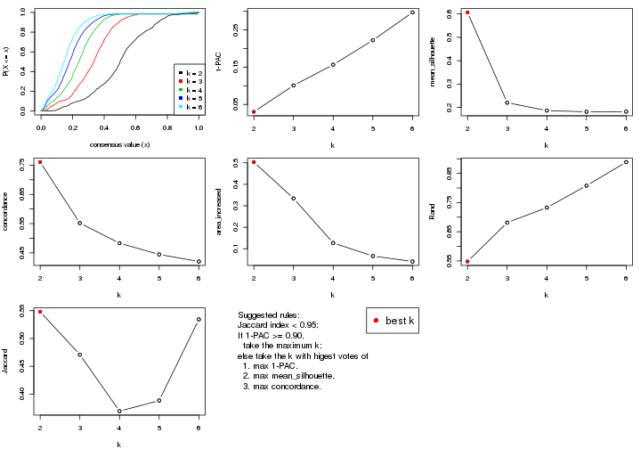
The numeric values for all these statistics can be obtained by get_stats().
get_stats(res)
#> k 1-PAC mean_silhouette concordance area_increased Rand Jaccard
#> 2 2 0.0301 0.606 0.760 0.5033 0.548 0.548
#> 3 3 0.1009 0.220 0.552 0.3345 0.681 0.471
#> 4 4 0.1566 0.186 0.483 0.1271 0.733 0.369
#> 5 5 0.2224 0.181 0.445 0.0662 0.808 0.388
#> 6 6 0.2970 0.182 0.421 0.0409 0.889 0.534
suggest_best_k() suggests the best \(k\) based on these statistics. The rules are as follows:
suggest_best_k(res)
#> [1] 2
Following shows the table of the partitions (You need to click the show/hide
code output link to see it). The membership matrix (columns with name p*)
is inferred by
clue::cl_consensus()
function with the SE method. Basically the value in the membership matrix
represents the probability to belong to a certain group. The finall class
label for an item is determined with the group with highest probability it
belongs to.
In get_classes() function, the entropy is calculated from the membership
matrix and the silhouette score is calculated from the consensus matrix.
cbind(get_classes(res, k = 2), get_membership(res, k = 2))
#> class entropy silhouette p1 p2
#> GSM439987 1 0.6887 0.717 0.816 0.184
#> GSM439988 1 0.7056 0.717 0.808 0.192
#> GSM439989 1 0.5519 0.717 0.872 0.128
#> GSM439990 1 0.5629 0.718 0.868 0.132
#> GSM439991 1 0.4939 0.714 0.892 0.108
#> GSM439992 1 0.4431 0.709 0.908 0.092
#> GSM439993 1 0.3431 0.699 0.936 0.064
#> GSM439994 1 0.9850 0.411 0.572 0.428
#> GSM439995 2 0.8016 0.656 0.244 0.756
#> GSM439996 1 0.7528 0.706 0.784 0.216
#> GSM439997 1 1.0000 0.130 0.500 0.500
#> GSM439998 1 0.9775 0.511 0.588 0.412
#> GSM440035 1 0.5519 0.717 0.872 0.128
#> GSM440036 1 0.5059 0.710 0.888 0.112
#> GSM440037 1 0.9000 0.643 0.684 0.316
#> GSM440038 1 0.9491 0.569 0.632 0.368
#> GSM440011 1 0.8081 0.691 0.752 0.248
#> GSM440012 1 0.9833 0.448 0.576 0.424
#> GSM440013 1 0.8861 0.649 0.696 0.304
#> GSM440014 1 0.6801 0.718 0.820 0.180
#> GSM439999 1 0.4939 0.711 0.892 0.108
#> GSM440000 1 0.9732 0.496 0.596 0.404
#> GSM440001 1 0.4562 0.707 0.904 0.096
#> GSM440002 1 0.7602 0.707 0.780 0.220
#> GSM440023 1 0.9996 0.280 0.512 0.488
#> GSM440024 1 0.9896 0.447 0.560 0.440
#> GSM440025 2 0.7139 0.695 0.196 0.804
#> GSM440026 2 0.8608 0.530 0.284 0.716
#> GSM440039 1 0.9963 0.276 0.536 0.464
#> GSM440040 1 0.6712 0.720 0.824 0.176
#> GSM440041 1 0.9209 0.617 0.664 0.336
#> GSM440042 1 0.5842 0.719 0.860 0.140
#> GSM440015 1 0.9922 0.353 0.552 0.448
#> GSM440016 2 0.9661 0.259 0.392 0.608
#> GSM440017 1 0.6801 0.716 0.820 0.180
#> GSM440018 2 0.8386 0.614 0.268 0.732
#> GSM440003 1 1.0000 0.201 0.500 0.500
#> GSM440004 2 0.8608 0.612 0.284 0.716
#> GSM440005 1 0.6531 0.721 0.832 0.168
#> GSM440006 1 0.7299 0.713 0.796 0.204
#> GSM440027 2 0.0000 0.775 0.000 1.000
#> GSM440028 2 0.0672 0.775 0.008 0.992
#> GSM440029 2 0.0376 0.774 0.004 0.996
#> GSM440030 2 0.0376 0.774 0.004 0.996
#> GSM440043 2 0.7299 0.705 0.204 0.796
#> GSM440044 1 0.9000 0.636 0.684 0.316
#> GSM440045 2 0.8955 0.533 0.312 0.688
#> GSM440046 2 0.8081 0.673 0.248 0.752
#> GSM440019 1 0.6148 0.719 0.848 0.152
#> GSM440020 1 1.0000 0.177 0.500 0.500
#> GSM440021 2 0.9209 0.501 0.336 0.664
#> GSM440022 2 0.8661 0.586 0.288 0.712
#> GSM440007 1 0.9323 0.587 0.652 0.348
#> GSM440008 2 0.5178 0.758 0.116 0.884
#> GSM440009 1 0.9983 0.280 0.524 0.476
#> GSM440010 1 0.9977 0.389 0.528 0.472
#> GSM440031 2 0.0000 0.775 0.000 1.000
#> GSM440032 2 0.0000 0.775 0.000 1.000
#> GSM440033 2 0.1184 0.775 0.016 0.984
#> GSM440034 2 0.0000 0.775 0.000 1.000
cbind(get_classes(res, k = 3), get_membership(res, k = 3))
#> class entropy silhouette p1 p2 p3
#> GSM439987 1 0.6211 0.36996 0.736 0.036 0.228
#> GSM439988 1 0.8179 0.24911 0.564 0.084 0.352
#> GSM439989 1 0.7698 0.29891 0.624 0.072 0.304
#> GSM439990 1 0.7189 0.32738 0.656 0.052 0.292
#> GSM439991 1 0.7238 0.33717 0.628 0.044 0.328
#> GSM439992 1 0.6653 0.33897 0.680 0.032 0.288
#> GSM439993 1 0.7329 0.22422 0.544 0.032 0.424
#> GSM439994 1 0.9616 -0.00382 0.420 0.204 0.376
#> GSM439995 3 0.8840 0.08162 0.116 0.428 0.456
#> GSM439996 3 0.8202 0.03873 0.328 0.092 0.580
#> GSM439997 3 0.9325 0.19520 0.252 0.228 0.520
#> GSM439998 3 0.9286 0.11759 0.312 0.184 0.504
#> GSM440035 1 0.7569 0.33655 0.664 0.088 0.248
#> GSM440036 1 0.6496 0.36668 0.736 0.056 0.208
#> GSM440037 3 0.9627 0.04881 0.396 0.204 0.400
#> GSM440038 1 0.9527 0.09085 0.480 0.220 0.300
#> GSM440011 1 0.8172 0.29670 0.616 0.112 0.272
#> GSM440012 3 0.9479 0.10038 0.348 0.192 0.460
#> GSM440013 1 0.9198 0.14261 0.532 0.200 0.268
#> GSM440014 1 0.7545 0.30751 0.652 0.076 0.272
#> GSM439999 1 0.6154 0.37149 0.752 0.044 0.204
#> GSM440000 3 0.9770 0.10762 0.368 0.232 0.400
#> GSM440001 1 0.6897 0.35942 0.668 0.040 0.292
#> GSM440002 1 0.6869 0.34612 0.688 0.048 0.264
#> GSM440023 1 0.9930 -0.11224 0.368 0.356 0.276
#> GSM440024 3 0.9996 0.13873 0.324 0.328 0.348
#> GSM440025 2 0.8587 0.33133 0.148 0.592 0.260
#> GSM440026 2 0.9680 -0.05668 0.300 0.456 0.244
#> GSM440039 1 0.9369 -0.01042 0.424 0.168 0.408
#> GSM440040 1 0.8625 0.22332 0.560 0.124 0.316
#> GSM440041 3 0.9541 0.05877 0.384 0.192 0.424
#> GSM440042 1 0.7838 0.20124 0.488 0.052 0.460
#> GSM440015 3 0.9625 0.02901 0.388 0.204 0.408
#> GSM440016 3 0.9783 0.20527 0.300 0.264 0.436
#> GSM440017 3 0.8382 -0.06648 0.424 0.084 0.492
#> GSM440018 2 0.9009 0.02754 0.132 0.464 0.404
#> GSM440003 3 0.9792 0.04772 0.372 0.236 0.392
#> GSM440004 3 0.9773 0.19594 0.236 0.352 0.412
#> GSM440005 1 0.6956 0.33685 0.660 0.040 0.300
#> GSM440006 3 0.8310 -0.12298 0.420 0.080 0.500
#> GSM440027 2 0.0592 0.70582 0.000 0.988 0.012
#> GSM440028 2 0.1878 0.70150 0.004 0.952 0.044
#> GSM440029 2 0.1337 0.70300 0.012 0.972 0.016
#> GSM440030 2 0.0747 0.70518 0.000 0.984 0.016
#> GSM440043 2 0.8730 0.14385 0.112 0.500 0.388
#> GSM440044 3 0.8887 -0.00728 0.388 0.124 0.488
#> GSM440045 3 0.8702 0.26532 0.140 0.292 0.568
#> GSM440046 3 0.8884 0.00540 0.120 0.420 0.460
#> GSM440019 3 0.8326 -0.12380 0.432 0.080 0.488
#> GSM440020 3 0.8799 0.20642 0.220 0.196 0.584
#> GSM440021 3 0.8776 0.29249 0.144 0.296 0.560
#> GSM440022 2 0.9108 -0.07693 0.140 0.444 0.416
#> GSM440007 3 0.8637 -0.17960 0.448 0.100 0.452
#> GSM440008 2 0.7948 0.36533 0.080 0.600 0.320
#> GSM440009 1 0.9974 -0.13024 0.368 0.324 0.308
#> GSM440010 1 0.9702 -0.04305 0.416 0.220 0.364
#> GSM440031 2 0.0424 0.70552 0.000 0.992 0.008
#> GSM440032 2 0.0983 0.70528 0.004 0.980 0.016
#> GSM440033 2 0.2383 0.69367 0.016 0.940 0.044
#> GSM440034 2 0.1620 0.70330 0.012 0.964 0.024
cbind(get_classes(res, k = 4), get_membership(res, k = 4))
#> class entropy silhouette p1 p2 p3 p4
#> GSM439987 1 0.6788 0.26426 0.680 0.040 0.132 0.148
#> GSM439988 4 0.9021 -0.04968 0.344 0.088 0.172 0.396
#> GSM439989 1 0.7833 0.07620 0.444 0.036 0.108 0.412
#> GSM439990 1 0.7711 0.12434 0.488 0.012 0.168 0.332
#> GSM439991 1 0.7782 0.17769 0.556 0.032 0.164 0.248
#> GSM439992 4 0.7952 -0.02278 0.360 0.028 0.144 0.468
#> GSM439993 4 0.7570 0.14865 0.236 0.024 0.168 0.572
#> GSM439994 1 0.8939 0.06373 0.412 0.088 0.340 0.160
#> GSM439995 3 0.7715 0.35947 0.100 0.244 0.588 0.068
#> GSM439996 4 0.8038 0.21088 0.136 0.044 0.308 0.512
#> GSM439997 3 0.9330 0.15366 0.208 0.124 0.424 0.244
#> GSM439998 3 0.8929 -0.07116 0.104 0.132 0.388 0.376
#> GSM440035 1 0.8105 0.15739 0.516 0.052 0.132 0.300
#> GSM440036 1 0.8121 0.15737 0.512 0.052 0.132 0.304
#> GSM440037 4 0.8834 0.08508 0.280 0.064 0.216 0.440
#> GSM440038 1 0.9041 0.12847 0.468 0.108 0.208 0.216
#> GSM440011 1 0.7219 0.26854 0.648 0.052 0.128 0.172
#> GSM440012 4 0.9201 0.15352 0.196 0.096 0.316 0.392
#> GSM440013 1 0.9165 0.15163 0.420 0.092 0.224 0.264
#> GSM440014 4 0.8532 -0.09784 0.380 0.048 0.172 0.400
#> GSM439999 1 0.7842 0.13548 0.484 0.024 0.144 0.348
#> GSM440000 4 0.9024 0.12186 0.176 0.100 0.276 0.448
#> GSM440001 1 0.7488 0.13108 0.480 0.020 0.108 0.392
#> GSM440002 1 0.7153 0.24338 0.608 0.016 0.156 0.220
#> GSM440023 4 0.9891 0.06657 0.212 0.276 0.204 0.308
#> GSM440024 4 0.9797 0.03223 0.180 0.272 0.212 0.336
#> GSM440025 2 0.8957 0.05775 0.160 0.500 0.180 0.160
#> GSM440026 2 0.9502 -0.23585 0.284 0.372 0.220 0.124
#> GSM440039 3 0.8170 0.00818 0.412 0.080 0.428 0.080
#> GSM440040 4 0.8443 0.04934 0.344 0.052 0.156 0.448
#> GSM440041 4 0.9140 0.15466 0.240 0.100 0.220 0.440
#> GSM440042 1 0.8274 0.08108 0.456 0.036 0.172 0.336
#> GSM440015 1 0.9297 0.00171 0.364 0.112 0.344 0.180
#> GSM440016 3 0.9613 0.06186 0.152 0.192 0.352 0.304
#> GSM440017 4 0.7979 0.20178 0.176 0.028 0.284 0.512
#> GSM440018 3 0.8821 0.30520 0.128 0.280 0.476 0.116
#> GSM440003 3 0.9726 0.14486 0.244 0.192 0.368 0.196
#> GSM440004 3 0.9236 0.19846 0.300 0.144 0.416 0.140
#> GSM440005 4 0.7765 0.09489 0.244 0.044 0.140 0.572
#> GSM440006 4 0.8391 0.14103 0.240 0.040 0.236 0.484
#> GSM440027 2 0.0657 0.70772 0.000 0.984 0.012 0.004
#> GSM440028 2 0.0712 0.70787 0.004 0.984 0.008 0.004
#> GSM440029 2 0.1262 0.70405 0.008 0.968 0.016 0.008
#> GSM440030 2 0.0469 0.70734 0.000 0.988 0.012 0.000
#> GSM440043 3 0.8999 0.33203 0.140 0.268 0.464 0.128
#> GSM440044 3 0.9104 -0.06064 0.248 0.072 0.388 0.292
#> GSM440045 3 0.7864 0.32195 0.104 0.144 0.612 0.140
#> GSM440046 3 0.8063 0.36284 0.128 0.220 0.572 0.080
#> GSM440019 4 0.8370 0.10605 0.260 0.036 0.228 0.476
#> GSM440020 3 0.8561 0.11195 0.112 0.104 0.496 0.288
#> GSM440021 3 0.8035 0.23130 0.080 0.128 0.576 0.216
#> GSM440022 3 0.9136 0.26667 0.120 0.304 0.424 0.152
#> GSM440007 4 0.9042 -0.00399 0.348 0.072 0.212 0.368
#> GSM440008 2 0.8359 -0.23399 0.060 0.420 0.396 0.124
#> GSM440009 2 0.9971 -0.39254 0.268 0.272 0.216 0.244
#> GSM440010 4 0.9587 0.08151 0.252 0.136 0.240 0.372
#> GSM440031 2 0.0469 0.70741 0.000 0.988 0.012 0.000
#> GSM440032 2 0.0336 0.70788 0.000 0.992 0.008 0.000
#> GSM440033 2 0.2197 0.68468 0.000 0.928 0.048 0.024
#> GSM440034 2 0.1443 0.70152 0.004 0.960 0.028 0.008
cbind(get_classes(res, k = 5), get_membership(res, k = 5))
#> class entropy silhouette p1 p2 p3 p4 p5
#> GSM439987 1 0.7489 0.085935 0.540 0.012 0.112 0.232 0.104
#> GSM439988 1 0.8651 0.063415 0.424 0.048 0.092 0.232 0.204
#> GSM439989 1 0.8483 0.100493 0.408 0.024 0.100 0.232 0.236
#> GSM439990 1 0.7800 0.158859 0.512 0.020 0.076 0.204 0.188
#> GSM439991 4 0.7825 0.135645 0.244 0.004 0.120 0.480 0.152
#> GSM439992 4 0.6955 0.201127 0.172 0.000 0.068 0.572 0.188
#> GSM439993 4 0.8048 0.104972 0.136 0.016 0.096 0.408 0.344
#> GSM439994 3 0.8749 0.063369 0.176 0.036 0.372 0.296 0.120
#> GSM439995 3 0.7877 0.255820 0.072 0.148 0.556 0.064 0.160
#> GSM439996 5 0.7918 0.131818 0.096 0.020 0.172 0.204 0.508
#> GSM439997 3 0.9211 0.063541 0.144 0.068 0.320 0.160 0.308
#> GSM439998 5 0.8110 0.131200 0.096 0.060 0.240 0.096 0.508
#> GSM440035 4 0.7866 0.056565 0.300 0.024 0.080 0.472 0.124
#> GSM440036 4 0.7167 -0.027200 0.400 0.000 0.068 0.424 0.108
#> GSM440037 5 0.8942 -0.066231 0.300 0.032 0.176 0.164 0.328
#> GSM440038 1 0.7989 0.175305 0.532 0.036 0.180 0.132 0.120
#> GSM440011 1 0.7880 0.112588 0.536 0.040 0.140 0.200 0.084
#> GSM440012 1 0.9132 -0.008607 0.324 0.064 0.192 0.116 0.304
#> GSM440013 1 0.8470 0.104498 0.440 0.024 0.188 0.216 0.132
#> GSM440014 1 0.7621 0.094661 0.480 0.024 0.040 0.292 0.164
#> GSM439999 1 0.7551 0.168128 0.560 0.024 0.080 0.160 0.176
#> GSM440000 1 0.9323 -0.000218 0.312 0.064 0.204 0.148 0.272
#> GSM440001 1 0.7996 0.078165 0.464 0.028 0.076 0.292 0.140
#> GSM440002 4 0.7552 0.010769 0.372 0.008 0.116 0.428 0.076
#> GSM440023 1 0.9473 -0.011126 0.296 0.216 0.064 0.204 0.220
#> GSM440024 5 0.9748 0.113590 0.164 0.232 0.132 0.176 0.296
#> GSM440025 2 0.9199 -0.022525 0.124 0.416 0.188 0.136 0.136
#> GSM440026 2 0.9302 -0.158196 0.176 0.360 0.188 0.208 0.068
#> GSM440039 3 0.8468 0.095279 0.240 0.036 0.432 0.204 0.088
#> GSM440040 4 0.8525 0.148856 0.200 0.032 0.108 0.432 0.228
#> GSM440041 5 0.8997 0.060507 0.192 0.100 0.080 0.220 0.408
#> GSM440042 4 0.8695 0.149495 0.140 0.036 0.196 0.428 0.200
#> GSM440015 1 0.9340 -0.059583 0.288 0.076 0.280 0.240 0.116
#> GSM440016 5 0.9152 0.037063 0.232 0.112 0.276 0.060 0.320
#> GSM440017 5 0.7401 0.123889 0.136 0.028 0.100 0.144 0.592
#> GSM440018 3 0.8667 0.184526 0.128 0.188 0.468 0.064 0.152
#> GSM440003 3 0.9202 0.156843 0.184 0.144 0.408 0.168 0.096
#> GSM440004 3 0.8522 0.242968 0.188 0.112 0.492 0.076 0.132
#> GSM440005 4 0.8140 0.132664 0.168 0.024 0.072 0.408 0.328
#> GSM440006 4 0.8508 0.075081 0.116 0.024 0.168 0.384 0.308
#> GSM440027 2 0.1074 0.760326 0.000 0.968 0.016 0.012 0.004
#> GSM440028 2 0.1507 0.754937 0.000 0.952 0.012 0.024 0.012
#> GSM440029 2 0.1372 0.757306 0.000 0.956 0.024 0.004 0.016
#> GSM440030 2 0.1116 0.759223 0.004 0.964 0.028 0.004 0.000
#> GSM440043 3 0.7786 0.282097 0.052 0.216 0.544 0.068 0.120
#> GSM440044 4 0.9054 0.060369 0.144 0.036 0.232 0.304 0.284
#> GSM440045 3 0.7788 0.242566 0.084 0.076 0.568 0.092 0.180
#> GSM440046 3 0.7728 0.310148 0.088 0.148 0.584 0.084 0.096
#> GSM440019 4 0.8176 0.131009 0.132 0.036 0.076 0.408 0.348
#> GSM440020 3 0.8119 0.065083 0.060 0.036 0.384 0.148 0.372
#> GSM440021 3 0.8258 0.112886 0.100 0.064 0.436 0.076 0.324
#> GSM440022 3 0.9067 0.203381 0.080 0.188 0.420 0.144 0.168
#> GSM440007 4 0.8632 0.161439 0.172 0.036 0.144 0.440 0.208
#> GSM440008 2 0.8070 -0.247032 0.036 0.392 0.384 0.096 0.092
#> GSM440009 5 0.9676 0.001790 0.136 0.132 0.204 0.216 0.312
#> GSM440010 4 0.9315 0.033203 0.168 0.064 0.172 0.312 0.284
#> GSM440031 2 0.0727 0.760524 0.004 0.980 0.012 0.004 0.000
#> GSM440032 2 0.0671 0.761249 0.000 0.980 0.016 0.000 0.004
#> GSM440033 2 0.2260 0.739801 0.004 0.920 0.016 0.012 0.048
#> GSM440034 2 0.1898 0.752959 0.008 0.940 0.024 0.012 0.016
cbind(get_classes(res, k = 6), get_membership(res, k = 6))
#> class entropy silhouette p1 p2 p3 p4 p5 p6
#> GSM439987 1 0.8062 0.15783 0.372 0.008 0.084 0.192 0.292 0.052
#> GSM439988 1 0.8598 0.03127 0.368 0.028 0.056 0.252 0.132 0.164
#> GSM439989 1 0.7109 0.17828 0.572 0.012 0.044 0.152 0.080 0.140
#> GSM439990 1 0.6856 0.17963 0.576 0.004 0.032 0.124 0.088 0.176
#> GSM439991 4 0.7702 0.12503 0.136 0.008 0.072 0.480 0.232 0.072
#> GSM439992 4 0.6979 0.18087 0.172 0.008 0.040 0.576 0.120 0.084
#> GSM439993 4 0.6691 0.15567 0.096 0.000 0.028 0.540 0.072 0.264
#> GSM439994 5 0.8832 0.01399 0.080 0.032 0.236 0.252 0.308 0.092
#> GSM439995 3 0.7556 0.17331 0.068 0.132 0.572 0.060 0.092 0.076
#> GSM439996 6 0.8121 0.03959 0.064 0.016 0.160 0.284 0.076 0.400
#> GSM439997 5 0.8963 -0.06642 0.056 0.052 0.252 0.112 0.300 0.228
#> GSM439998 6 0.8778 0.09499 0.136 0.048 0.100 0.152 0.140 0.424
#> GSM440035 4 0.7918 -0.04415 0.348 0.012 0.032 0.356 0.140 0.112
#> GSM440036 1 0.7895 0.05370 0.376 0.004 0.048 0.328 0.124 0.120
#> GSM440037 6 0.8671 0.05770 0.276 0.020 0.104 0.132 0.116 0.352
#> GSM440038 1 0.8746 0.13010 0.404 0.036 0.112 0.096 0.184 0.168
#> GSM440011 1 0.8495 0.17996 0.412 0.020 0.108 0.156 0.212 0.092
#> GSM440012 6 0.8318 0.09506 0.288 0.044 0.116 0.072 0.072 0.408
#> GSM440013 1 0.8854 0.13478 0.360 0.040 0.164 0.088 0.244 0.104
#> GSM440014 1 0.8654 0.11225 0.384 0.024 0.092 0.156 0.112 0.232
#> GSM439999 1 0.6477 0.17671 0.656 0.020 0.056 0.072 0.092 0.104
#> GSM440000 6 0.8705 0.09866 0.268 0.024 0.144 0.108 0.100 0.356
#> GSM440001 1 0.8568 0.10285 0.368 0.036 0.040 0.184 0.244 0.128
#> GSM440002 1 0.7963 0.07824 0.376 0.028 0.092 0.276 0.216 0.012
#> GSM440023 1 0.9381 -0.01397 0.260 0.188 0.056 0.200 0.080 0.216
#> GSM440024 6 0.9550 0.07558 0.124 0.188 0.076 0.144 0.172 0.296
#> GSM440025 2 0.9195 -0.20159 0.084 0.328 0.124 0.060 0.204 0.200
#> GSM440026 5 0.8941 -0.02161 0.144 0.272 0.200 0.036 0.288 0.060
#> GSM440039 3 0.8550 0.03292 0.116 0.036 0.360 0.116 0.304 0.068
#> GSM440040 4 0.8076 0.10745 0.204 0.020 0.064 0.468 0.120 0.124
#> GSM440041 6 0.9094 0.04680 0.144 0.068 0.068 0.252 0.136 0.332
#> GSM440042 4 0.8156 0.11134 0.120 0.008 0.112 0.416 0.260 0.084
#> GSM440015 3 0.9187 0.00514 0.152 0.056 0.288 0.084 0.280 0.140
#> GSM440016 6 0.9367 0.10949 0.248 0.088 0.224 0.088 0.092 0.260
#> GSM440017 6 0.8210 0.09756 0.144 0.012 0.108 0.144 0.128 0.464
#> GSM440018 3 0.8483 0.16024 0.072 0.140 0.428 0.040 0.100 0.220
#> GSM440003 3 0.9592 0.02455 0.148 0.112 0.300 0.132 0.200 0.108
#> GSM440004 3 0.8381 0.11766 0.104 0.088 0.412 0.028 0.264 0.104
#> GSM440005 4 0.7886 0.06970 0.288 0.000 0.048 0.384 0.104 0.176
#> GSM440006 4 0.8432 0.05542 0.120 0.016 0.056 0.356 0.176 0.276
#> GSM440027 2 0.1129 0.84545 0.008 0.964 0.012 0.000 0.012 0.004
#> GSM440028 2 0.2107 0.82893 0.004 0.920 0.044 0.004 0.012 0.016
#> GSM440029 2 0.2094 0.83305 0.004 0.924 0.020 0.008 0.012 0.032
#> GSM440030 2 0.1642 0.83930 0.004 0.944 0.024 0.004 0.012 0.012
#> GSM440043 3 0.7585 0.15373 0.028 0.148 0.544 0.048 0.124 0.108
#> GSM440044 4 0.9035 0.07016 0.128 0.024 0.240 0.316 0.164 0.128
#> GSM440045 3 0.8557 0.13398 0.084 0.052 0.436 0.112 0.212 0.104
#> GSM440046 3 0.5896 0.19184 0.036 0.088 0.708 0.040 0.052 0.076
#> GSM440019 4 0.8255 0.13333 0.092 0.036 0.056 0.452 0.172 0.192
#> GSM440020 6 0.8482 -0.02298 0.040 0.032 0.268 0.120 0.176 0.364
#> GSM440021 3 0.8436 0.04236 0.096 0.048 0.368 0.068 0.096 0.324
#> GSM440022 3 0.9209 0.08061 0.064 0.128 0.364 0.128 0.180 0.136
#> GSM440007 4 0.8721 0.13431 0.112 0.020 0.132 0.392 0.184 0.160
#> GSM440008 3 0.8315 0.13176 0.032 0.268 0.356 0.016 0.164 0.164
#> GSM440009 3 0.9926 -0.07772 0.128 0.148 0.208 0.192 0.172 0.152
#> GSM440010 4 0.9533 0.05172 0.236 0.056 0.144 0.252 0.160 0.152
#> GSM440031 2 0.0837 0.84418 0.004 0.972 0.020 0.000 0.004 0.000
#> GSM440032 2 0.1736 0.84055 0.004 0.936 0.020 0.000 0.032 0.008
#> GSM440033 2 0.2101 0.83807 0.012 0.924 0.008 0.004 0.024 0.028
#> GSM440034 2 0.3293 0.79842 0.004 0.860 0.064 0.024 0.036 0.012
Heatmaps for the consensus matrix. It visualizes the probability of two samples to be in a same group.
consensus_heatmap(res, k = 2)
consensus_heatmap(res, k = 3)
consensus_heatmap(res, k = 4)
consensus_heatmap(res, k = 5)
consensus_heatmap(res, k = 6)
Heatmaps for the membership of samples in all partitions to see how consistent they are:
membership_heatmap(res, k = 2)
membership_heatmap(res, k = 3)
membership_heatmap(res, k = 4)
membership_heatmap(res, k = 5)
membership_heatmap(res, k = 6)
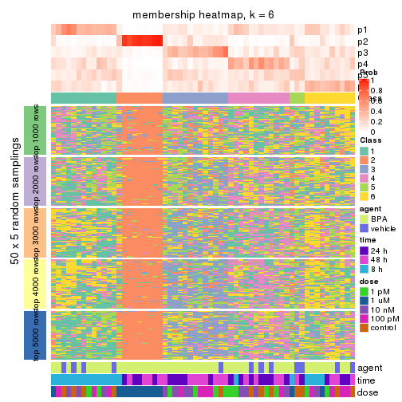
As soon as we have had the classes for columns, we can look for signatures which are significantly different between classes which can be candidate marks for certain classes. Following are the heatmaps for signatures.
Signature heatmaps where rows are scaled:
get_signatures(res, k = 2)
get_signatures(res, k = 3)

get_signatures(res, k = 4)

get_signatures(res, k = 5)

get_signatures(res, k = 6)

Signature heatmaps where rows are not scaled:
get_signatures(res, k = 2, scale_rows = FALSE)
get_signatures(res, k = 3, scale_rows = FALSE)

get_signatures(res, k = 4, scale_rows = FALSE)

get_signatures(res, k = 5, scale_rows = FALSE)

get_signatures(res, k = 6, scale_rows = FALSE)

Compare the overlap of signatures from different k:
compare_signatures(res)
get_signature() returns a data frame invisibly. TO get the list of signatures, the function
call should be assigned to a variable explicitly. In following code, if plot argument is set
to FALSE, no heatmap is plotted while only the differential analysis is performed.
# code only for demonstration
tb = get_signature(res, k = ..., plot = FALSE)
An example of the output of tb is:
#> which_row fdr mean_1 mean_2 scaled_mean_1 scaled_mean_2 km
#> 1 38 0.042760348 8.373488 9.131774 -0.5533452 0.5164555 1
#> 2 40 0.018707592 7.106213 8.469186 -0.6173731 0.5762149 1
#> 3 55 0.019134737 10.221463 11.207825 -0.6159697 0.5749050 1
#> 4 59 0.006059896 5.921854 7.869574 -0.6899429 0.6439467 1
#> 5 60 0.018055526 8.928898 10.211722 -0.6204761 0.5791110 1
#> 6 98 0.009384629 15.714769 14.887706 0.6635654 -0.6193277 2
...
The columns in tb are:
which_row: row indices corresponding to the input matrix.fdr: FDR for the differential test. mean_x: The mean value in group x.scaled_mean_x: The mean value in group x after rows are scaled.km: Row groups if k-means clustering is applied to rows.UMAP plot which shows how samples are separated.
dimension_reduction(res, k = 2, method = "UMAP")
dimension_reduction(res, k = 3, method = "UMAP")
dimension_reduction(res, k = 4, method = "UMAP")
dimension_reduction(res, k = 5, method = "UMAP")
dimension_reduction(res, k = 6, method = "UMAP")
Following heatmap shows how subgroups are split when increasing k:
collect_classes(res)
Test correlation between subgroups and known annotations. If the known annotation is numeric, one-way ANOVA test is applied, and if the known annotation is discrete, chi-squared contingency table test is applied.
test_to_known_factors(res)
#> n agent(p) time(p) dose(p) k
#> CV:skmeans 47 0.0648 0.00522 0.000458 2
#> CV:skmeans 8 NA NA NA 3
#> CV:skmeans 8 NA NA NA 4
#> CV:skmeans 8 NA NA NA 5
#> CV:skmeans 8 NA NA NA 6
If matrix rows can be associated to genes, consider to use functional_enrichment(res,
...) to perform function enrichment for the signature genes. See this vignette for more detailed explanations.
The object with results only for a single top-value method and a single partition method can be extracted as:
res = res_list["CV", "pam"]
# you can also extract it by
# res = res_list["CV:pam"]
A summary of res and all the functions that can be applied to it:
res
#> A 'ConsensusPartition' object with k = 2, 3, 4, 5, 6.
#> On a matrix with 51941 rows and 60 columns.
#> Top rows (1000, 2000, 3000, 4000, 5000) are extracted by 'CV' method.
#> Subgroups are detected by 'pam' method.
#> Performed in total 1250 partitions by row resampling.
#> Best k for subgroups seems to be 4.
#>
#> Following methods can be applied to this 'ConsensusPartition' object:
#> [1] "cola_report" "collect_classes" "collect_plots"
#> [4] "collect_stats" "colnames" "compare_signatures"
#> [7] "consensus_heatmap" "dimension_reduction" "functional_enrichment"
#> [10] "get_anno_col" "get_anno" "get_classes"
#> [13] "get_consensus" "get_matrix" "get_membership"
#> [16] "get_param" "get_signatures" "get_stats"
#> [19] "is_best_k" "is_stable_k" "membership_heatmap"
#> [22] "ncol" "nrow" "plot_ecdf"
#> [25] "rownames" "select_partition_number" "show"
#> [28] "suggest_best_k" "test_to_known_factors"
collect_plots() function collects all the plots made from res for all k (number of partitions)
into one single page to provide an easy and fast comparison between different k.
collect_plots(res)
The plots are:
k and the heatmap of
predicted classes for each k.k.k.k.All the plots in panels can be made by individual functions and they are plotted later in this section.
select_partition_number() produces several plots showing different
statistics for choosing “optimized” k. There are following statistics:
k;k, the area increased is defined as \(A_k - A_{k-1}\).The detailed explanations of these statistics can be found in the cola vignette.
Generally speaking, lower PAC score, higher mean silhouette score or higher
concordance corresponds to better partition. Rand index and Jaccard index
measure how similar the current partition is compared to partition with k-1.
If they are too similar, we won't accept k is better than k-1.
select_partition_number(res)
The numeric values for all these statistics can be obtained by get_stats().
get_stats(res)
#> k 1-PAC mean_silhouette concordance area_increased Rand Jaccard
#> 2 2 0.0144 0.346 0.652 0.4458 0.537 0.537
#> 3 3 0.2243 0.543 0.707 0.3689 0.623 0.421
#> 4 4 0.2982 0.545 0.689 0.1756 0.832 0.590
#> 5 5 0.3402 0.518 0.691 0.0455 0.990 0.964
#> 6 6 0.3609 0.513 0.671 0.0228 1.000 1.000
suggest_best_k() suggests the best \(k\) based on these statistics. The rules are as follows:
suggest_best_k(res)
#> [1] 4
Following shows the table of the partitions (You need to click the show/hide
code output link to see it). The membership matrix (columns with name p*)
is inferred by
clue::cl_consensus()
function with the SE method. Basically the value in the membership matrix
represents the probability to belong to a certain group. The finall class
label for an item is determined with the group with highest probability it
belongs to.
In get_classes() function, the entropy is calculated from the membership
matrix and the silhouette score is calculated from the consensus matrix.
cbind(get_classes(res, k = 2), get_membership(res, k = 2))
#> class entropy silhouette p1 p2
#> GSM439987 2 0.999 0.4790 0.484 0.516
#> GSM439988 2 0.939 0.6564 0.356 0.644
#> GSM439989 2 0.966 0.5862 0.392 0.608
#> GSM439990 2 0.891 0.6809 0.308 0.692
#> GSM439991 1 0.904 -0.2115 0.680 0.320
#> GSM439992 1 0.998 -0.3894 0.524 0.476
#> GSM439993 2 0.891 0.6639 0.308 0.692
#> GSM439994 1 0.518 0.4956 0.884 0.116
#> GSM439995 1 0.653 0.4461 0.832 0.168
#> GSM439996 2 0.992 0.5574 0.448 0.552
#> GSM439997 1 0.993 -0.3344 0.548 0.452
#> GSM439998 2 1.000 0.4400 0.492 0.508
#> GSM440035 2 0.958 0.6287 0.380 0.620
#> GSM440036 2 0.983 0.6389 0.424 0.576
#> GSM440037 1 0.904 0.2811 0.680 0.320
#> GSM440038 2 1.000 0.2592 0.492 0.508
#> GSM440011 1 0.802 0.3607 0.756 0.244
#> GSM440012 1 0.999 -0.2314 0.520 0.480
#> GSM440013 2 0.985 0.6033 0.428 0.572
#> GSM440014 2 0.995 0.5337 0.460 0.540
#> GSM439999 2 0.963 0.6344 0.388 0.612
#> GSM440000 1 0.917 0.3298 0.668 0.332
#> GSM440001 2 0.932 0.6513 0.348 0.652
#> GSM440002 1 0.714 0.4363 0.804 0.196
#> GSM440023 2 0.975 0.5430 0.408 0.592
#> GSM440024 2 0.821 0.6706 0.256 0.744
#> GSM440025 1 0.971 0.1159 0.600 0.400
#> GSM440026 1 0.469 0.4977 0.900 0.100
#> GSM440039 1 0.529 0.4655 0.880 0.120
#> GSM440040 1 0.981 -0.2818 0.580 0.420
#> GSM440041 2 0.978 0.5578 0.412 0.588
#> GSM440042 1 0.891 0.2646 0.692 0.308
#> GSM440015 1 0.839 0.4003 0.732 0.268
#> GSM440016 1 1.000 -0.4391 0.508 0.492
#> GSM440017 1 0.995 -0.4775 0.540 0.460
#> GSM440018 1 0.506 0.4829 0.888 0.112
#> GSM440003 1 0.909 0.0389 0.676 0.324
#> GSM440004 1 1.000 -0.3890 0.504 0.496
#> GSM440005 2 0.963 0.6733 0.388 0.612
#> GSM440006 2 0.952 0.5984 0.372 0.628
#> GSM440027 1 0.978 0.3886 0.588 0.412
#> GSM440028 1 0.993 0.3584 0.548 0.452
#> GSM440029 1 0.952 0.4099 0.628 0.372
#> GSM440030 1 0.917 0.4172 0.668 0.332
#> GSM440043 1 0.295 0.4914 0.948 0.052
#> GSM440044 1 0.988 -0.2936 0.564 0.436
#> GSM440045 1 0.278 0.4972 0.952 0.048
#> GSM440046 1 0.563 0.4805 0.868 0.132
#> GSM440019 2 0.913 0.6565 0.328 0.672
#> GSM440020 1 0.909 0.1961 0.676 0.324
#> GSM440021 1 0.788 0.3555 0.764 0.236
#> GSM440022 1 0.671 0.4565 0.824 0.176
#> GSM440007 1 0.895 0.2063 0.688 0.312
#> GSM440008 1 0.552 0.4812 0.872 0.128
#> GSM440009 2 0.988 0.6360 0.436 0.564
#> GSM440010 1 0.204 0.4987 0.968 0.032
#> GSM440031 1 0.946 0.4004 0.636 0.364
#> GSM440032 1 0.939 0.4121 0.644 0.356
#> GSM440033 1 0.949 0.4019 0.632 0.368
#> GSM440034 1 0.949 0.4094 0.632 0.368
cbind(get_classes(res, k = 3), get_membership(res, k = 3))
#> class entropy silhouette p1 p2 p3
#> GSM439987 1 0.658 0.5313 0.724 0.052 0.224
#> GSM439988 1 0.584 0.5894 0.688 0.004 0.308
#> GSM439989 1 0.655 0.5328 0.616 0.012 0.372
#> GSM439990 1 0.341 0.6240 0.876 0.000 0.124
#> GSM439991 1 0.853 0.3139 0.536 0.104 0.360
#> GSM439992 1 0.676 0.5000 0.620 0.020 0.360
#> GSM439993 1 0.129 0.6248 0.968 0.000 0.032
#> GSM439994 3 0.593 0.6178 0.124 0.084 0.792
#> GSM439995 3 0.512 0.5802 0.152 0.032 0.816
#> GSM439996 1 0.647 0.5018 0.632 0.012 0.356
#> GSM439997 1 0.627 0.3306 0.548 0.000 0.452
#> GSM439998 1 0.606 0.5147 0.656 0.004 0.340
#> GSM440035 1 0.581 0.5971 0.796 0.072 0.132
#> GSM440036 1 0.507 0.6362 0.792 0.012 0.196
#> GSM440037 3 0.750 0.3425 0.384 0.044 0.572
#> GSM440038 3 0.683 -0.1743 0.492 0.012 0.496
#> GSM440011 3 0.874 0.3707 0.340 0.124 0.536
#> GSM440012 1 0.631 0.3380 0.604 0.004 0.392
#> GSM440013 1 0.676 0.5528 0.744 0.108 0.148
#> GSM440014 1 0.470 0.5705 0.788 0.000 0.212
#> GSM439999 1 0.543 0.5861 0.716 0.000 0.284
#> GSM440000 3 0.610 0.4195 0.320 0.008 0.672
#> GSM440001 1 0.171 0.6277 0.960 0.008 0.032
#> GSM440002 3 0.738 0.2130 0.452 0.032 0.516
#> GSM440023 1 0.528 0.5430 0.752 0.004 0.244
#> GSM440024 1 0.453 0.6365 0.824 0.008 0.168
#> GSM440025 1 0.753 0.1012 0.532 0.040 0.428
#> GSM440026 3 0.609 0.6190 0.124 0.092 0.784
#> GSM440039 3 0.805 0.5216 0.264 0.108 0.628
#> GSM440040 1 0.680 0.3739 0.584 0.016 0.400
#> GSM440041 1 0.599 0.5561 0.704 0.012 0.284
#> GSM440042 3 0.792 0.2291 0.460 0.056 0.484
#> GSM440015 3 0.636 0.3646 0.336 0.012 0.652
#> GSM440016 1 0.604 0.4894 0.620 0.000 0.380
#> GSM440017 1 0.585 0.5494 0.720 0.012 0.268
#> GSM440018 3 0.304 0.6214 0.104 0.000 0.896
#> GSM440003 3 0.668 0.5073 0.216 0.060 0.724
#> GSM440004 1 0.678 0.4771 0.616 0.020 0.364
#> GSM440005 1 0.649 0.6291 0.752 0.076 0.172
#> GSM440006 1 0.575 0.5642 0.700 0.004 0.296
#> GSM440027 2 0.205 0.9213 0.028 0.952 0.020
#> GSM440028 2 0.118 0.9170 0.012 0.976 0.012
#> GSM440029 2 0.595 0.7892 0.052 0.776 0.172
#> GSM440030 2 0.364 0.8847 0.004 0.872 0.124
#> GSM440043 3 0.547 0.6152 0.072 0.112 0.816
#> GSM440044 3 0.648 0.0352 0.392 0.008 0.600
#> GSM440045 3 0.464 0.6232 0.044 0.104 0.852
#> GSM440046 3 0.346 0.6242 0.096 0.012 0.892
#> GSM440019 1 0.545 0.6221 0.760 0.012 0.228
#> GSM440020 3 0.559 0.4385 0.276 0.004 0.720
#> GSM440021 3 0.445 0.4988 0.192 0.000 0.808
#> GSM440022 3 0.733 0.5816 0.180 0.116 0.704
#> GSM440007 3 0.603 0.4566 0.244 0.024 0.732
#> GSM440008 3 0.199 0.6244 0.048 0.004 0.948
#> GSM440009 1 0.681 0.5875 0.716 0.064 0.220
#> GSM440010 3 0.558 0.6234 0.084 0.104 0.812
#> GSM440031 2 0.149 0.9188 0.016 0.968 0.016
#> GSM440032 2 0.295 0.8965 0.004 0.908 0.088
#> GSM440033 2 0.132 0.9074 0.008 0.972 0.020
#> GSM440034 2 0.369 0.8982 0.056 0.896 0.048
cbind(get_classes(res, k = 4), get_membership(res, k = 4))
#> class entropy silhouette p1 p2 p3 p4
#> GSM439987 4 0.7182 0.2093 0.356 0.004 0.128 0.512
#> GSM439988 1 0.7225 0.1341 0.496 0.000 0.152 0.352
#> GSM439989 4 0.7660 0.1787 0.368 0.004 0.184 0.444
#> GSM439990 1 0.5741 0.2631 0.536 0.004 0.020 0.440
#> GSM439991 4 0.6075 0.4751 0.052 0.008 0.304 0.636
#> GSM439992 4 0.7006 0.4924 0.204 0.000 0.216 0.580
#> GSM439993 4 0.2530 0.5839 0.112 0.000 0.000 0.888
#> GSM439994 3 0.5201 0.5508 0.220 0.004 0.732 0.044
#> GSM439995 3 0.6341 0.6168 0.096 0.056 0.724 0.124
#> GSM439996 4 0.4425 0.6253 0.036 0.004 0.160 0.800
#> GSM439997 4 0.6640 0.3010 0.096 0.000 0.352 0.552
#> GSM439998 4 0.3497 0.6334 0.036 0.000 0.104 0.860
#> GSM440035 1 0.6437 0.5563 0.624 0.004 0.092 0.280
#> GSM440036 4 0.5306 0.5937 0.152 0.008 0.080 0.760
#> GSM440037 1 0.5646 0.6348 0.708 0.000 0.204 0.088
#> GSM440038 1 0.5412 0.6262 0.736 0.000 0.168 0.096
#> GSM440011 1 0.6046 0.4371 0.640 0.012 0.304 0.044
#> GSM440012 1 0.5875 0.6408 0.684 0.000 0.092 0.224
#> GSM440013 4 0.7981 0.2496 0.252 0.012 0.264 0.472
#> GSM440014 1 0.5897 0.5917 0.656 0.004 0.056 0.284
#> GSM439999 1 0.5716 0.6292 0.700 0.000 0.088 0.212
#> GSM440000 1 0.4063 0.6063 0.808 0.004 0.172 0.016
#> GSM440001 4 0.3107 0.5996 0.080 0.000 0.036 0.884
#> GSM440002 3 0.7960 0.0356 0.248 0.004 0.380 0.368
#> GSM440023 1 0.5517 0.5766 0.648 0.000 0.036 0.316
#> GSM440024 4 0.6041 0.2642 0.332 0.000 0.060 0.608
#> GSM440025 1 0.5888 0.6292 0.704 0.004 0.192 0.100
#> GSM440026 3 0.4593 0.6271 0.096 0.016 0.820 0.068
#> GSM440039 3 0.6748 0.4371 0.184 0.012 0.648 0.156
#> GSM440040 4 0.7510 0.4313 0.252 0.004 0.220 0.524
#> GSM440041 4 0.3793 0.6317 0.044 0.000 0.112 0.844
#> GSM440042 1 0.6945 0.5641 0.608 0.008 0.240 0.144
#> GSM440015 3 0.7661 0.2393 0.192 0.004 0.464 0.340
#> GSM440016 4 0.5179 0.5780 0.052 0.000 0.220 0.728
#> GSM440017 4 0.3392 0.6255 0.056 0.000 0.072 0.872
#> GSM440018 3 0.5315 0.6273 0.224 0.004 0.724 0.048
#> GSM440003 3 0.6715 0.4814 0.220 0.008 0.636 0.136
#> GSM440004 4 0.7811 0.1229 0.260 0.000 0.336 0.404
#> GSM440005 4 0.6933 0.5028 0.216 0.012 0.148 0.624
#> GSM440006 4 0.4791 0.6312 0.080 0.000 0.136 0.784
#> GSM440027 2 0.0336 0.9386 0.000 0.992 0.008 0.000
#> GSM440028 2 0.0524 0.9391 0.004 0.988 0.008 0.000
#> GSM440029 2 0.4086 0.8291 0.076 0.840 0.080 0.004
#> GSM440030 2 0.0707 0.9360 0.000 0.980 0.020 0.000
#> GSM440043 3 0.3509 0.6144 0.088 0.012 0.872 0.028
#> GSM440044 3 0.6865 0.1975 0.112 0.000 0.524 0.364
#> GSM440045 3 0.3775 0.6373 0.080 0.016 0.864 0.040
#> GSM440046 3 0.5129 0.6388 0.180 0.004 0.756 0.060
#> GSM440019 4 0.5361 0.6152 0.148 0.000 0.108 0.744
#> GSM440020 3 0.7301 0.3677 0.236 0.000 0.536 0.228
#> GSM440021 3 0.6783 0.4763 0.144 0.004 0.616 0.236
#> GSM440022 3 0.6139 0.3606 0.316 0.016 0.628 0.040
#> GSM440007 3 0.5990 0.5564 0.188 0.000 0.688 0.124
#> GSM440008 3 0.4465 0.6381 0.144 0.000 0.800 0.056
#> GSM440009 4 0.7309 0.4594 0.172 0.008 0.256 0.564
#> GSM440010 3 0.4711 0.6442 0.128 0.012 0.804 0.056
#> GSM440031 2 0.0376 0.9382 0.004 0.992 0.004 0.000
#> GSM440032 2 0.0859 0.9367 0.008 0.980 0.008 0.004
#> GSM440033 2 0.2928 0.8655 0.012 0.880 0.108 0.000
#> GSM440034 2 0.2727 0.8962 0.084 0.900 0.012 0.004
cbind(get_classes(res, k = 5), get_membership(res, k = 5))
#> class entropy silhouette p1 p2 p3 p4 p5
#> GSM439987 4 0.7756 0.2229 0.320 0.000 0.140 0.428 0.112
#> GSM439988 1 0.6681 0.1656 0.520 0.000 0.108 0.332 0.040
#> GSM439989 4 0.6939 0.1939 0.376 0.000 0.144 0.448 0.032
#> GSM439990 1 0.4912 0.2786 0.572 0.000 0.016 0.404 0.008
#> GSM439991 4 0.6742 0.4467 0.032 0.000 0.256 0.548 0.164
#> GSM439992 4 0.7230 0.5024 0.188 0.000 0.164 0.552 0.096
#> GSM439993 4 0.3197 0.5996 0.116 0.000 0.008 0.852 0.024
#> GSM439994 3 0.5786 0.5139 0.208 0.000 0.656 0.020 0.116
#> GSM439995 3 0.6175 0.4993 0.072 0.052 0.688 0.160 0.028
#> GSM439996 4 0.3257 0.6282 0.024 0.000 0.104 0.856 0.016
#> GSM439997 4 0.5616 0.3749 0.040 0.000 0.300 0.624 0.036
#> GSM439998 4 0.2177 0.6352 0.004 0.000 0.080 0.908 0.008
#> GSM440035 1 0.5818 0.6139 0.684 0.000 0.060 0.176 0.080
#> GSM440036 4 0.5888 0.6039 0.144 0.000 0.064 0.688 0.104
#> GSM440037 1 0.4772 0.6691 0.760 0.000 0.132 0.088 0.020
#> GSM440038 1 0.5304 0.6276 0.740 0.000 0.104 0.092 0.064
#> GSM440011 1 0.5789 0.4865 0.612 0.000 0.260 0.004 0.124
#> GSM440012 1 0.5119 0.6546 0.696 0.000 0.080 0.216 0.008
#> GSM440013 4 0.7907 0.2377 0.224 0.000 0.284 0.404 0.088
#> GSM440014 1 0.4360 0.6550 0.752 0.000 0.064 0.184 0.000
#> GSM439999 1 0.4086 0.6809 0.812 0.000 0.052 0.112 0.024
#> GSM440000 1 0.3037 0.6556 0.864 0.000 0.100 0.032 0.004
#> GSM440001 4 0.4060 0.6127 0.068 0.000 0.016 0.812 0.104
#> GSM440002 3 0.8031 0.2185 0.172 0.000 0.420 0.272 0.136
#> GSM440023 1 0.4573 0.6092 0.688 0.000 0.028 0.280 0.004
#> GSM440024 4 0.6045 0.2131 0.352 0.000 0.032 0.556 0.060
#> GSM440025 1 0.5948 0.6224 0.664 0.000 0.200 0.080 0.056
#> GSM440026 3 0.5340 0.5161 0.068 0.004 0.736 0.052 0.140
#> GSM440039 3 0.6158 0.4514 0.120 0.000 0.668 0.076 0.136
#> GSM440040 4 0.7075 0.4525 0.264 0.000 0.188 0.508 0.040
#> GSM440041 4 0.2590 0.6344 0.028 0.000 0.060 0.900 0.012
#> GSM440042 1 0.6728 0.5367 0.600 0.000 0.208 0.100 0.092
#> GSM440015 3 0.6851 0.3383 0.152 0.000 0.488 0.332 0.028
#> GSM440016 4 0.4784 0.5657 0.056 0.000 0.204 0.728 0.012
#> GSM440017 4 0.2369 0.6277 0.056 0.000 0.032 0.908 0.004
#> GSM440018 3 0.4854 0.5434 0.172 0.000 0.740 0.072 0.016
#> GSM440003 3 0.7313 0.2665 0.252 0.000 0.508 0.172 0.068
#> GSM440004 4 0.7555 0.0712 0.188 0.000 0.344 0.408 0.060
#> GSM440005 4 0.6529 0.4746 0.240 0.000 0.132 0.588 0.040
#> GSM440006 4 0.4526 0.6251 0.064 0.000 0.080 0.796 0.060
#> GSM440027 2 0.0162 0.9210 0.000 0.996 0.004 0.000 0.000
#> GSM440028 2 0.0162 0.9203 0.000 0.996 0.004 0.000 0.000
#> GSM440029 2 0.3409 0.7722 0.052 0.836 0.112 0.000 0.000
#> GSM440030 2 0.0162 0.9208 0.000 0.996 0.004 0.000 0.000
#> GSM440043 3 0.3454 0.5144 0.044 0.000 0.856 0.024 0.076
#> GSM440044 3 0.7015 0.0503 0.096 0.000 0.436 0.404 0.064
#> GSM440045 3 0.2833 0.5316 0.028 0.000 0.892 0.028 0.052
#> GSM440046 3 0.5282 0.5474 0.184 0.000 0.716 0.052 0.048
#> GSM440019 4 0.4980 0.6114 0.168 0.000 0.060 0.740 0.032
#> GSM440020 3 0.7488 0.1886 0.276 0.000 0.408 0.276 0.040
#> GSM440021 3 0.6426 0.3960 0.100 0.000 0.576 0.284 0.040
#> GSM440022 3 0.5553 0.3619 0.268 0.000 0.640 0.012 0.080
#> GSM440007 5 0.5797 0.0000 0.060 0.000 0.156 0.092 0.692
#> GSM440008 3 0.4821 0.5187 0.112 0.000 0.764 0.096 0.028
#> GSM440009 4 0.7446 0.4572 0.200 0.000 0.184 0.520 0.096
#> GSM440010 3 0.4153 0.5562 0.068 0.000 0.820 0.056 0.056
#> GSM440031 2 0.0000 0.9195 0.000 1.000 0.000 0.000 0.000
#> GSM440032 2 0.0727 0.9170 0.012 0.980 0.004 0.000 0.004
#> GSM440033 2 0.3704 0.7845 0.004 0.828 0.116 0.004 0.048
#> GSM440034 2 0.2625 0.8717 0.056 0.900 0.016 0.000 0.028
cbind(get_classes(res, k = 6), get_membership(res, k = 6))
#> class entropy silhouette p1 p2 p3 p4 p5 p6
#> GSM439987 4 0.7411 0.2030 0.280 0.000 0.116 0.404 0.008 NA
#> GSM439988 1 0.5762 0.1838 0.584 0.000 0.056 0.304 0.040 NA
#> GSM439989 4 0.7196 0.1779 0.344 0.000 0.140 0.424 0.048 NA
#> GSM439990 1 0.5022 0.3052 0.556 0.000 0.012 0.392 0.012 NA
#> GSM439991 4 0.6020 0.4118 0.012 0.000 0.248 0.512 0.000 NA
#> GSM439992 4 0.7697 0.2208 0.140 0.000 0.124 0.360 0.032 NA
#> GSM439993 4 0.2858 0.5899 0.088 0.000 0.004 0.868 0.012 NA
#> GSM439994 3 0.5839 0.5608 0.176 0.000 0.632 0.024 0.020 NA
#> GSM439995 3 0.6473 0.5794 0.104 0.048 0.640 0.148 0.028 NA
#> GSM439996 4 0.3297 0.6051 0.028 0.000 0.092 0.848 0.020 NA
#> GSM439997 4 0.5370 0.3495 0.048 0.000 0.280 0.628 0.020 NA
#> GSM439998 4 0.2571 0.6211 0.024 0.000 0.060 0.892 0.020 NA
#> GSM440035 1 0.5901 0.6092 0.664 0.000 0.056 0.160 0.040 NA
#> GSM440036 4 0.5867 0.5752 0.104 0.000 0.040 0.664 0.040 NA
#> GSM440037 1 0.4459 0.6855 0.756 0.000 0.128 0.092 0.008 NA
#> GSM440038 1 0.4720 0.6584 0.772 0.000 0.056 0.052 0.040 NA
#> GSM440011 1 0.5885 0.4882 0.552 0.000 0.264 0.004 0.012 NA
#> GSM440012 1 0.4971 0.6526 0.688 0.000 0.080 0.208 0.016 NA
#> GSM440013 4 0.7378 0.2496 0.176 0.000 0.320 0.404 0.024 NA
#> GSM440014 1 0.4235 0.6600 0.760 0.000 0.048 0.168 0.016 NA
#> GSM439999 1 0.4040 0.6840 0.808 0.000 0.036 0.096 0.020 NA
#> GSM440000 1 0.2247 0.6779 0.904 0.000 0.060 0.012 0.024 NA
#> GSM440001 4 0.3750 0.6037 0.052 0.000 0.020 0.816 0.008 NA
#> GSM440002 3 0.7348 0.2200 0.136 0.000 0.420 0.260 0.004 NA
#> GSM440023 1 0.4491 0.6155 0.676 0.000 0.036 0.272 0.000 NA
#> GSM440024 4 0.5769 0.1869 0.368 0.000 0.032 0.532 0.016 NA
#> GSM440025 1 0.5598 0.6141 0.664 0.000 0.200 0.072 0.036 NA
#> GSM440026 3 0.5347 0.5226 0.040 0.000 0.684 0.032 0.044 NA
#> GSM440039 3 0.5606 0.5015 0.064 0.000 0.684 0.072 0.024 NA
#> GSM440040 4 0.6963 0.4516 0.244 0.000 0.144 0.516 0.028 NA
#> GSM440041 4 0.2393 0.6202 0.028 0.000 0.048 0.904 0.012 NA
#> GSM440042 1 0.6836 0.5271 0.552 0.000 0.216 0.104 0.028 NA
#> GSM440015 3 0.7147 0.3556 0.172 0.000 0.440 0.308 0.052 NA
#> GSM440016 4 0.4866 0.5338 0.060 0.000 0.192 0.712 0.020 NA
#> GSM440017 4 0.1564 0.6130 0.040 0.000 0.024 0.936 0.000 NA
#> GSM440018 3 0.5290 0.6036 0.168 0.000 0.700 0.068 0.044 NA
#> GSM440003 3 0.7318 0.3512 0.292 0.000 0.444 0.168 0.048 NA
#> GSM440004 4 0.7408 0.0437 0.188 0.000 0.324 0.396 0.036 NA
#> GSM440005 4 0.6070 0.4509 0.252 0.000 0.116 0.584 0.016 NA
#> GSM440006 4 0.4756 0.6170 0.084 0.000 0.064 0.768 0.048 NA
#> GSM440027 2 0.0146 0.8874 0.000 0.996 0.004 0.000 0.000 NA
#> GSM440028 2 0.0146 0.8869 0.000 0.996 0.004 0.000 0.000 NA
#> GSM440029 2 0.3044 0.7466 0.048 0.836 0.116 0.000 0.000 NA
#> GSM440030 2 0.0146 0.8872 0.000 0.996 0.004 0.000 0.000 NA
#> GSM440043 3 0.2918 0.5606 0.020 0.000 0.880 0.028 0.020 NA
#> GSM440044 3 0.7456 0.0749 0.124 0.000 0.384 0.368 0.076 NA
#> GSM440045 3 0.2972 0.5822 0.028 0.000 0.880 0.036 0.028 NA
#> GSM440046 3 0.5404 0.6066 0.152 0.000 0.704 0.052 0.036 NA
#> GSM440019 4 0.5056 0.5906 0.196 0.000 0.036 0.704 0.028 NA
#> GSM440020 3 0.7327 0.2220 0.284 0.000 0.384 0.260 0.044 NA
#> GSM440021 3 0.6886 0.4208 0.148 0.000 0.504 0.264 0.064 NA
#> GSM440022 3 0.5013 0.4255 0.212 0.000 0.692 0.012 0.028 NA
#> GSM440007 5 0.2521 0.0000 0.032 0.000 0.056 0.020 0.892 NA
#> GSM440008 3 0.5479 0.5874 0.148 0.000 0.696 0.076 0.056 NA
#> GSM440009 4 0.6964 0.4438 0.208 0.000 0.156 0.512 0.008 NA
#> GSM440010 3 0.3594 0.6069 0.060 0.000 0.836 0.068 0.012 NA
#> GSM440031 2 0.0000 0.8860 0.000 1.000 0.000 0.000 0.000 NA
#> GSM440032 2 0.0653 0.8830 0.012 0.980 0.004 0.000 0.000 NA
#> GSM440033 2 0.5452 0.5065 0.000 0.616 0.140 0.000 0.016 NA
#> GSM440034 2 0.2958 0.8217 0.060 0.876 0.016 0.000 0.024 NA
Heatmaps for the consensus matrix. It visualizes the probability of two samples to be in a same group.
consensus_heatmap(res, k = 2)
consensus_heatmap(res, k = 3)
consensus_heatmap(res, k = 4)
consensus_heatmap(res, k = 5)
consensus_heatmap(res, k = 6)
Heatmaps for the membership of samples in all partitions to see how consistent they are:
membership_heatmap(res, k = 2)
membership_heatmap(res, k = 3)
membership_heatmap(res, k = 4)
membership_heatmap(res, k = 5)
membership_heatmap(res, k = 6)
As soon as we have had the classes for columns, we can look for signatures which are significantly different between classes which can be candidate marks for certain classes. Following are the heatmaps for signatures.
Signature heatmaps where rows are scaled:
get_signatures(res, k = 2)

get_signatures(res, k = 3)
get_signatures(res, k = 4)
get_signatures(res, k = 5)
get_signatures(res, k = 6)
Signature heatmaps where rows are not scaled:
get_signatures(res, k = 2, scale_rows = FALSE)

get_signatures(res, k = 3, scale_rows = FALSE)
get_signatures(res, k = 4, scale_rows = FALSE)
get_signatures(res, k = 5, scale_rows = FALSE)
get_signatures(res, k = 6, scale_rows = FALSE)
Compare the overlap of signatures from different k:
compare_signatures(res)
get_signature() returns a data frame invisibly. TO get the list of signatures, the function
call should be assigned to a variable explicitly. In following code, if plot argument is set
to FALSE, no heatmap is plotted while only the differential analysis is performed.
# code only for demonstration
tb = get_signature(res, k = ..., plot = FALSE)
An example of the output of tb is:
#> which_row fdr mean_1 mean_2 scaled_mean_1 scaled_mean_2 km
#> 1 38 0.042760348 8.373488 9.131774 -0.5533452 0.5164555 1
#> 2 40 0.018707592 7.106213 8.469186 -0.6173731 0.5762149 1
#> 3 55 0.019134737 10.221463 11.207825 -0.6159697 0.5749050 1
#> 4 59 0.006059896 5.921854 7.869574 -0.6899429 0.6439467 1
#> 5 60 0.018055526 8.928898 10.211722 -0.6204761 0.5791110 1
#> 6 98 0.009384629 15.714769 14.887706 0.6635654 -0.6193277 2
...
The columns in tb are:
which_row: row indices corresponding to the input matrix.fdr: FDR for the differential test. mean_x: The mean value in group x.scaled_mean_x: The mean value in group x after rows are scaled.km: Row groups if k-means clustering is applied to rows.UMAP plot which shows how samples are separated.
dimension_reduction(res, k = 2, method = "UMAP")
dimension_reduction(res, k = 3, method = "UMAP")
dimension_reduction(res, k = 4, method = "UMAP")
dimension_reduction(res, k = 5, method = "UMAP")
dimension_reduction(res, k = 6, method = "UMAP")
Following heatmap shows how subgroups are split when increasing k:
collect_classes(res)
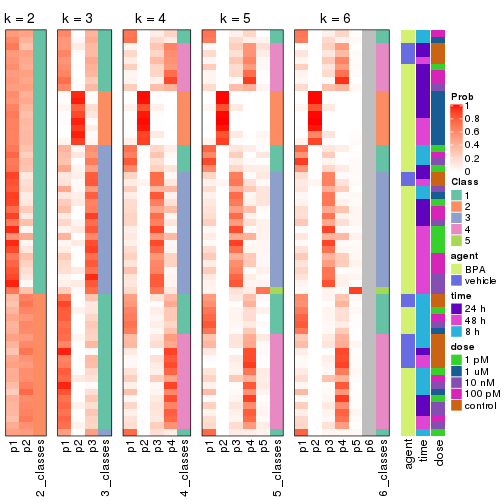
Test correlation between subgroups and known annotations. If the known annotation is numeric, one-way ANOVA test is applied, and if the known annotation is discrete, chi-squared contingency table test is applied.
test_to_known_factors(res)
#> n agent(p) time(p) dose(p) k
#> CV:pam 18 NA NA NA 2
#> CV:pam 41 0.1331 0.007732 0.000235 3
#> CV:pam 39 0.1602 0.000109 0.001413 4
#> CV:pam 37 0.0518 0.000419 0.001318 5
#> CV:pam 38 0.1317 0.000458 0.001717 6
If matrix rows can be associated to genes, consider to use functional_enrichment(res,
...) to perform function enrichment for the signature genes. See this vignette for more detailed explanations.
The object with results only for a single top-value method and a single partition method can be extracted as:
res = res_list["CV", "mclust"]
# you can also extract it by
# res = res_list["CV:mclust"]
A summary of res and all the functions that can be applied to it:
res
#> A 'ConsensusPartition' object with k = 2, 3, 4, 5, 6.
#> On a matrix with 51941 rows and 60 columns.
#> Top rows (1000, 2000, 3000, 4000, 5000) are extracted by 'CV' method.
#> Subgroups are detected by 'mclust' method.
#> Performed in total 1250 partitions by row resampling.
#> Best k for subgroups seems to be 2.
#>
#> Following methods can be applied to this 'ConsensusPartition' object:
#> [1] "cola_report" "collect_classes" "collect_plots"
#> [4] "collect_stats" "colnames" "compare_signatures"
#> [7] "consensus_heatmap" "dimension_reduction" "functional_enrichment"
#> [10] "get_anno_col" "get_anno" "get_classes"
#> [13] "get_consensus" "get_matrix" "get_membership"
#> [16] "get_param" "get_signatures" "get_stats"
#> [19] "is_best_k" "is_stable_k" "membership_heatmap"
#> [22] "ncol" "nrow" "plot_ecdf"
#> [25] "rownames" "select_partition_number" "show"
#> [28] "suggest_best_k" "test_to_known_factors"
collect_plots() function collects all the plots made from res for all k (number of partitions)
into one single page to provide an easy and fast comparison between different k.
collect_plots(res)
The plots are:
k and the heatmap of
predicted classes for each k.k.k.k.All the plots in panels can be made by individual functions and they are plotted later in this section.
select_partition_number() produces several plots showing different
statistics for choosing “optimized” k. There are following statistics:
k;k, the area increased is defined as \(A_k - A_{k-1}\).The detailed explanations of these statistics can be found in the cola vignette.
Generally speaking, lower PAC score, higher mean silhouette score or higher
concordance corresponds to better partition. Rand index and Jaccard index
measure how similar the current partition is compared to partition with k-1.
If they are too similar, we won't accept k is better than k-1.
select_partition_number(res)
The numeric values for all these statistics can be obtained by get_stats().
get_stats(res)
#> k 1-PAC mean_silhouette concordance area_increased Rand Jaccard
#> 2 2 1.000 0.988 0.994 0.2438 0.765 0.765
#> 3 3 0.354 0.458 0.776 1.3935 0.619 0.501
#> 4 4 0.409 0.642 0.788 0.2180 0.718 0.397
#> 5 5 0.580 0.722 0.785 0.0903 0.918 0.718
#> 6 6 0.595 0.564 0.707 0.0534 0.908 0.628
suggest_best_k() suggests the best \(k\) based on these statistics. The rules are as follows:
suggest_best_k(res)
#> [1] 2
Following shows the table of the partitions (You need to click the show/hide
code output link to see it). The membership matrix (columns with name p*)
is inferred by
clue::cl_consensus()
function with the SE method. Basically the value in the membership matrix
represents the probability to belong to a certain group. The finall class
label for an item is determined with the group with highest probability it
belongs to.
In get_classes() function, the entropy is calculated from the membership
matrix and the silhouette score is calculated from the consensus matrix.
cbind(get_classes(res, k = 2), get_membership(res, k = 2))
#> class entropy silhouette p1 p2
#> GSM439987 1 0.0000 0.993 1.000 0.000
#> GSM439988 1 0.0000 0.993 1.000 0.000
#> GSM439989 1 0.0000 0.993 1.000 0.000
#> GSM439990 1 0.0000 0.993 1.000 0.000
#> GSM439991 1 0.0000 0.993 1.000 0.000
#> GSM439992 1 0.0000 0.993 1.000 0.000
#> GSM439993 1 0.0000 0.993 1.000 0.000
#> GSM439994 1 0.0000 0.993 1.000 0.000
#> GSM439995 1 0.0000 0.993 1.000 0.000
#> GSM439996 1 0.0000 0.993 1.000 0.000
#> GSM439997 1 0.0000 0.993 1.000 0.000
#> GSM439998 1 0.0000 0.993 1.000 0.000
#> GSM440035 1 0.0000 0.993 1.000 0.000
#> GSM440036 1 0.0000 0.993 1.000 0.000
#> GSM440037 1 0.0000 0.993 1.000 0.000
#> GSM440038 1 0.0000 0.993 1.000 0.000
#> GSM440011 1 0.0000 0.993 1.000 0.000
#> GSM440012 1 0.0000 0.993 1.000 0.000
#> GSM440013 1 0.0000 0.993 1.000 0.000
#> GSM440014 1 0.0000 0.993 1.000 0.000
#> GSM439999 1 0.0000 0.993 1.000 0.000
#> GSM440000 1 0.0376 0.990 0.996 0.004
#> GSM440001 1 0.0000 0.993 1.000 0.000
#> GSM440002 1 0.0000 0.993 1.000 0.000
#> GSM440023 1 0.4815 0.889 0.896 0.104
#> GSM440024 1 0.5178 0.875 0.884 0.116
#> GSM440025 1 0.5178 0.875 0.884 0.116
#> GSM440026 1 0.0376 0.990 0.996 0.004
#> GSM440039 1 0.0000 0.993 1.000 0.000
#> GSM440040 1 0.0000 0.993 1.000 0.000
#> GSM440041 1 0.0000 0.993 1.000 0.000
#> GSM440042 1 0.0938 0.983 0.988 0.012
#> GSM440015 1 0.0000 0.993 1.000 0.000
#> GSM440016 1 0.0000 0.993 1.000 0.000
#> GSM440017 1 0.0000 0.993 1.000 0.000
#> GSM440018 1 0.0000 0.993 1.000 0.000
#> GSM440003 1 0.0000 0.993 1.000 0.000
#> GSM440004 1 0.0000 0.993 1.000 0.000
#> GSM440005 1 0.0000 0.993 1.000 0.000
#> GSM440006 1 0.0000 0.993 1.000 0.000
#> GSM440027 2 0.0000 0.999 0.000 1.000
#> GSM440028 2 0.0000 0.999 0.000 1.000
#> GSM440029 2 0.0672 0.992 0.008 0.992
#> GSM440030 2 0.0000 0.999 0.000 1.000
#> GSM440043 1 0.0000 0.993 1.000 0.000
#> GSM440044 1 0.0000 0.993 1.000 0.000
#> GSM440045 1 0.0000 0.993 1.000 0.000
#> GSM440046 1 0.0000 0.993 1.000 0.000
#> GSM440019 1 0.0000 0.993 1.000 0.000
#> GSM440020 1 0.0000 0.993 1.000 0.000
#> GSM440021 1 0.0000 0.993 1.000 0.000
#> GSM440022 1 0.0000 0.993 1.000 0.000
#> GSM440007 1 0.0000 0.993 1.000 0.000
#> GSM440008 1 0.0376 0.990 0.996 0.004
#> GSM440009 1 0.0000 0.993 1.000 0.000
#> GSM440010 1 0.0000 0.993 1.000 0.000
#> GSM440031 2 0.0000 0.999 0.000 1.000
#> GSM440032 2 0.0000 0.999 0.000 1.000
#> GSM440033 2 0.0000 0.999 0.000 1.000
#> GSM440034 2 0.0000 0.999 0.000 1.000
cbind(get_classes(res, k = 3), get_membership(res, k = 3))
#> class entropy silhouette p1 p2 p3
#> GSM439987 1 0.3192 0.6244 0.888 0.000 0.112
#> GSM439988 1 0.6235 -0.0266 0.564 0.000 0.436
#> GSM439989 1 0.3038 0.6246 0.896 0.000 0.104
#> GSM439990 1 0.3482 0.6180 0.872 0.000 0.128
#> GSM439991 1 0.2537 0.6261 0.920 0.000 0.080
#> GSM439992 1 0.3879 0.5316 0.848 0.000 0.152
#> GSM439993 3 0.6309 0.1761 0.496 0.000 0.504
#> GSM439994 3 0.6307 -0.1662 0.488 0.000 0.512
#> GSM439995 3 0.0000 0.5842 0.000 0.000 1.000
#> GSM439996 3 0.6215 0.3088 0.428 0.000 0.572
#> GSM439997 3 0.2537 0.5822 0.080 0.000 0.920
#> GSM439998 3 0.5254 0.4974 0.264 0.000 0.736
#> GSM440035 1 0.1289 0.6086 0.968 0.000 0.032
#> GSM440036 1 0.0892 0.6091 0.980 0.000 0.020
#> GSM440037 3 0.6225 0.2854 0.432 0.000 0.568
#> GSM440038 1 0.4178 0.5834 0.828 0.000 0.172
#> GSM440011 1 0.2537 0.6251 0.920 0.000 0.080
#> GSM440012 3 0.5859 0.4179 0.344 0.000 0.656
#> GSM440013 1 0.5291 0.5035 0.732 0.000 0.268
#> GSM440014 1 0.3267 0.6234 0.884 0.000 0.116
#> GSM439999 1 0.2796 0.6257 0.908 0.000 0.092
#> GSM440000 3 0.6126 0.3443 0.400 0.000 0.600
#> GSM440001 1 0.2796 0.6269 0.908 0.000 0.092
#> GSM440002 1 0.2356 0.6256 0.928 0.000 0.072
#> GSM440023 3 0.6204 0.3100 0.424 0.000 0.576
#> GSM440024 3 0.6215 0.3075 0.428 0.000 0.572
#> GSM440025 3 0.4750 0.5419 0.216 0.000 0.784
#> GSM440026 1 0.6235 0.2200 0.564 0.000 0.436
#> GSM440039 1 0.6260 0.1701 0.552 0.000 0.448
#> GSM440040 1 0.6235 -0.0973 0.564 0.000 0.436
#> GSM440041 1 0.6291 -0.1670 0.532 0.000 0.468
#> GSM440042 1 0.3816 0.5825 0.852 0.000 0.148
#> GSM440015 1 0.6280 0.1863 0.540 0.000 0.460
#> GSM440016 3 0.3619 0.5782 0.136 0.000 0.864
#> GSM440017 3 0.6008 0.3766 0.372 0.000 0.628
#> GSM440018 3 0.0237 0.5825 0.004 0.000 0.996
#> GSM440003 3 0.6267 -0.1115 0.452 0.000 0.548
#> GSM440004 3 0.6225 -0.0845 0.432 0.000 0.568
#> GSM440005 1 0.6204 -0.0989 0.576 0.000 0.424
#> GSM440006 1 0.6267 -0.1296 0.548 0.000 0.452
#> GSM440027 2 0.0000 0.9939 0.000 1.000 0.000
#> GSM440028 2 0.0000 0.9939 0.000 1.000 0.000
#> GSM440029 2 0.1399 0.9686 0.004 0.968 0.028
#> GSM440030 2 0.0000 0.9939 0.000 1.000 0.000
#> GSM440043 3 0.1964 0.5858 0.056 0.000 0.944
#> GSM440044 3 0.6095 0.3887 0.392 0.000 0.608
#> GSM440045 3 0.1031 0.5860 0.024 0.000 0.976
#> GSM440046 3 0.0424 0.5830 0.008 0.000 0.992
#> GSM440019 1 0.6302 -0.1906 0.520 0.000 0.480
#> GSM440020 3 0.3038 0.5786 0.104 0.000 0.896
#> GSM440021 3 0.0892 0.5897 0.020 0.000 0.980
#> GSM440022 3 0.1964 0.5914 0.056 0.000 0.944
#> GSM440007 1 0.6180 -0.0596 0.584 0.000 0.416
#> GSM440008 3 0.0000 0.5842 0.000 0.000 1.000
#> GSM440009 3 0.5650 0.4697 0.312 0.000 0.688
#> GSM440010 3 0.6291 0.2545 0.468 0.000 0.532
#> GSM440031 2 0.0000 0.9939 0.000 1.000 0.000
#> GSM440032 2 0.0000 0.9939 0.000 1.000 0.000
#> GSM440033 2 0.0000 0.9939 0.000 1.000 0.000
#> GSM440034 2 0.0661 0.9875 0.004 0.988 0.008
cbind(get_classes(res, k = 4), get_membership(res, k = 4))
#> class entropy silhouette p1 p2 p3 p4
#> GSM439987 1 0.2376 0.7007 0.916 0.000 0.016 0.068
#> GSM439988 4 0.5781 0.5600 0.252 0.000 0.072 0.676
#> GSM439989 1 0.4707 0.6593 0.760 0.000 0.036 0.204
#> GSM439990 1 0.5775 0.6145 0.696 0.000 0.092 0.212
#> GSM439991 1 0.3108 0.6941 0.872 0.000 0.016 0.112
#> GSM439992 4 0.5452 0.0192 0.428 0.000 0.016 0.556
#> GSM439993 4 0.3778 0.7532 0.052 0.000 0.100 0.848
#> GSM439994 1 0.6458 0.1946 0.520 0.000 0.408 0.072
#> GSM439995 3 0.0376 0.8096 0.004 0.000 0.992 0.004
#> GSM439996 4 0.4706 0.7046 0.028 0.000 0.224 0.748
#> GSM439997 3 0.4565 0.7086 0.140 0.000 0.796 0.064
#> GSM439998 4 0.4830 0.5396 0.000 0.000 0.392 0.608
#> GSM440035 1 0.4855 0.5302 0.644 0.000 0.004 0.352
#> GSM440036 1 0.4500 0.5743 0.684 0.000 0.000 0.316
#> GSM440037 4 0.4731 0.7511 0.060 0.000 0.160 0.780
#> GSM440038 1 0.5556 0.6649 0.720 0.000 0.092 0.188
#> GSM440011 1 0.2918 0.6928 0.876 0.000 0.008 0.116
#> GSM440012 4 0.5235 0.7123 0.048 0.000 0.236 0.716
#> GSM440013 1 0.5102 0.6812 0.764 0.000 0.136 0.100
#> GSM440014 1 0.4820 0.6740 0.772 0.000 0.060 0.168
#> GSM439999 1 0.4436 0.6570 0.764 0.000 0.020 0.216
#> GSM440000 4 0.4920 0.7371 0.052 0.000 0.192 0.756
#> GSM440001 1 0.4818 0.6527 0.748 0.000 0.036 0.216
#> GSM440002 1 0.1356 0.6899 0.960 0.000 0.008 0.032
#> GSM440023 4 0.5352 0.7284 0.092 0.000 0.168 0.740
#> GSM440024 4 0.4969 0.7336 0.088 0.000 0.140 0.772
#> GSM440025 4 0.6454 0.3237 0.076 0.000 0.380 0.544
#> GSM440026 1 0.6004 0.4719 0.648 0.000 0.276 0.076
#> GSM440039 1 0.6203 0.3287 0.592 0.000 0.340 0.068
#> GSM440040 4 0.3659 0.7162 0.136 0.000 0.024 0.840
#> GSM440041 4 0.2840 0.7516 0.044 0.000 0.056 0.900
#> GSM440042 4 0.6438 -0.1794 0.436 0.000 0.068 0.496
#> GSM440015 1 0.6887 0.3263 0.528 0.000 0.356 0.116
#> GSM440016 3 0.5861 -0.3036 0.032 0.000 0.488 0.480
#> GSM440017 4 0.4888 0.7201 0.036 0.000 0.224 0.740
#> GSM440018 3 0.2224 0.8083 0.040 0.000 0.928 0.032
#> GSM440003 1 0.6642 0.1398 0.492 0.000 0.424 0.084
#> GSM440004 3 0.6275 -0.1063 0.460 0.000 0.484 0.056
#> GSM440005 4 0.2813 0.7240 0.080 0.000 0.024 0.896
#> GSM440006 4 0.3156 0.7480 0.068 0.000 0.048 0.884
#> GSM440027 2 0.0000 0.9903 0.000 1.000 0.000 0.000
#> GSM440028 2 0.0188 0.9895 0.000 0.996 0.004 0.000
#> GSM440029 2 0.1356 0.9597 0.008 0.960 0.032 0.000
#> GSM440030 2 0.0000 0.9903 0.000 1.000 0.000 0.000
#> GSM440043 3 0.2699 0.7981 0.028 0.000 0.904 0.068
#> GSM440044 4 0.4737 0.6476 0.020 0.000 0.252 0.728
#> GSM440045 3 0.2473 0.7936 0.080 0.000 0.908 0.012
#> GSM440046 3 0.1743 0.8058 0.056 0.000 0.940 0.004
#> GSM440019 4 0.4022 0.7471 0.068 0.000 0.096 0.836
#> GSM440020 3 0.3117 0.7686 0.028 0.000 0.880 0.092
#> GSM440021 3 0.1305 0.8018 0.004 0.000 0.960 0.036
#> GSM440022 3 0.1716 0.8063 0.000 0.000 0.936 0.064
#> GSM440007 4 0.3279 0.7212 0.096 0.000 0.032 0.872
#> GSM440008 3 0.0188 0.8098 0.004 0.000 0.996 0.000
#> GSM440009 4 0.6586 0.3051 0.088 0.000 0.368 0.544
#> GSM440010 4 0.3176 0.7532 0.036 0.000 0.084 0.880
#> GSM440031 2 0.0188 0.9895 0.000 0.996 0.004 0.000
#> GSM440032 2 0.0000 0.9903 0.000 1.000 0.000 0.000
#> GSM440033 2 0.0000 0.9903 0.000 1.000 0.000 0.000
#> GSM440034 2 0.0592 0.9793 0.016 0.984 0.000 0.000
cbind(get_classes(res, k = 5), get_membership(res, k = 5))
#> class entropy silhouette p1 p2 p3 p4 p5
#> GSM439987 1 0.4010 0.7147 0.784 0.000 0.000 0.056 0.160
#> GSM439988 4 0.4837 0.5145 0.348 0.000 0.020 0.624 0.008
#> GSM439989 1 0.2095 0.7461 0.920 0.000 0.008 0.060 0.012
#> GSM439990 1 0.3829 0.7110 0.828 0.000 0.060 0.096 0.016
#> GSM439991 1 0.4193 0.6731 0.720 0.000 0.000 0.024 0.256
#> GSM439992 1 0.5337 0.1992 0.508 0.000 0.000 0.440 0.052
#> GSM439993 4 0.3477 0.7438 0.024 0.000 0.088 0.852 0.036
#> GSM439994 5 0.4883 0.8597 0.152 0.000 0.104 0.008 0.736
#> GSM439995 3 0.0324 0.8641 0.004 0.000 0.992 0.000 0.004
#> GSM439996 4 0.4686 0.7044 0.016 0.000 0.196 0.740 0.048
#> GSM439997 3 0.5366 0.7013 0.092 0.000 0.728 0.048 0.132
#> GSM439998 4 0.4507 0.6086 0.004 0.000 0.340 0.644 0.012
#> GSM440035 1 0.3727 0.6969 0.768 0.000 0.000 0.216 0.016
#> GSM440036 1 0.3848 0.7207 0.788 0.000 0.000 0.172 0.040
#> GSM440037 4 0.4185 0.7468 0.084 0.000 0.112 0.796 0.008
#> GSM440038 1 0.5553 0.6349 0.672 0.000 0.028 0.072 0.228
#> GSM440011 1 0.4558 0.6937 0.724 0.000 0.000 0.060 0.216
#> GSM440012 4 0.4356 0.7132 0.024 0.000 0.200 0.756 0.020
#> GSM440013 1 0.6329 0.3836 0.592 0.000 0.064 0.064 0.280
#> GSM440014 1 0.2627 0.7469 0.900 0.000 0.012 0.044 0.044
#> GSM439999 1 0.1549 0.7549 0.944 0.000 0.000 0.040 0.016
#> GSM440000 4 0.4494 0.7347 0.048 0.000 0.164 0.768 0.020
#> GSM440001 1 0.1484 0.7557 0.944 0.000 0.008 0.048 0.000
#> GSM440002 1 0.3789 0.6890 0.760 0.000 0.000 0.016 0.224
#> GSM440023 4 0.5499 0.7315 0.112 0.000 0.128 0.716 0.044
#> GSM440024 4 0.4303 0.7357 0.116 0.000 0.068 0.796 0.020
#> GSM440025 4 0.7048 0.3894 0.152 0.000 0.308 0.496 0.044
#> GSM440026 5 0.5274 0.6188 0.268 0.000 0.048 0.020 0.664
#> GSM440039 5 0.3736 0.7797 0.072 0.000 0.064 0.024 0.840
#> GSM440040 4 0.3300 0.6854 0.204 0.000 0.000 0.792 0.004
#> GSM440041 4 0.2747 0.7369 0.088 0.000 0.012 0.884 0.016
#> GSM440042 4 0.7413 -0.1326 0.324 0.000 0.032 0.384 0.260
#> GSM440015 5 0.5631 0.8304 0.172 0.000 0.088 0.044 0.696
#> GSM440016 4 0.6038 0.2609 0.072 0.000 0.452 0.460 0.016
#> GSM440017 4 0.4290 0.7181 0.016 0.000 0.184 0.768 0.032
#> GSM440018 3 0.2069 0.8653 0.076 0.000 0.912 0.000 0.012
#> GSM440003 5 0.5295 0.8562 0.160 0.000 0.124 0.012 0.704
#> GSM440004 5 0.5200 0.8298 0.140 0.000 0.156 0.004 0.700
#> GSM440005 4 0.2720 0.7199 0.096 0.000 0.004 0.880 0.020
#> GSM440006 4 0.3648 0.7240 0.128 0.000 0.020 0.828 0.024
#> GSM440027 2 0.0000 0.9934 0.000 1.000 0.000 0.000 0.000
#> GSM440028 2 0.0000 0.9934 0.000 1.000 0.000 0.000 0.000
#> GSM440029 2 0.1299 0.9640 0.008 0.960 0.020 0.000 0.012
#> GSM440030 2 0.0000 0.9934 0.000 1.000 0.000 0.000 0.000
#> GSM440043 3 0.3918 0.8297 0.080 0.000 0.828 0.068 0.024
#> GSM440044 4 0.4474 0.6420 0.028 0.000 0.216 0.740 0.016
#> GSM440045 3 0.3376 0.8370 0.108 0.000 0.848 0.012 0.032
#> GSM440046 3 0.2623 0.8585 0.096 0.000 0.884 0.004 0.016
#> GSM440019 4 0.4062 0.7410 0.084 0.000 0.068 0.820 0.028
#> GSM440020 3 0.3495 0.8207 0.024 0.000 0.844 0.108 0.024
#> GSM440021 3 0.1280 0.8551 0.008 0.000 0.960 0.024 0.008
#> GSM440022 3 0.2214 0.8560 0.004 0.000 0.916 0.052 0.028
#> GSM440007 4 0.4880 0.6699 0.180 0.000 0.028 0.740 0.052
#> GSM440008 3 0.0609 0.8714 0.020 0.000 0.980 0.000 0.000
#> GSM440009 4 0.7239 0.0121 0.136 0.000 0.404 0.404 0.056
#> GSM440010 4 0.3320 0.7387 0.096 0.000 0.032 0.856 0.016
#> GSM440031 2 0.0000 0.9934 0.000 1.000 0.000 0.000 0.000
#> GSM440032 2 0.0000 0.9934 0.000 1.000 0.000 0.000 0.000
#> GSM440033 2 0.0000 0.9934 0.000 1.000 0.000 0.000 0.000
#> GSM440034 2 0.0451 0.9870 0.004 0.988 0.000 0.000 0.008
cbind(get_classes(res, k = 6), get_membership(res, k = 6))
#> class entropy silhouette p1 p2 p3 p4 p5 p6
#> GSM439987 1 0.3321 0.63708 0.844 0.000 0.032 0.092 0.004 0.028
#> GSM439988 6 0.5850 0.45766 0.092 0.000 0.164 0.072 0.016 0.656
#> GSM439989 1 0.6018 0.65433 0.516 0.000 0.020 0.136 0.004 0.324
#> GSM439990 1 0.6795 0.63159 0.500 0.000 0.040 0.096 0.052 0.312
#> GSM439991 1 0.4247 0.47819 0.752 0.000 0.008 0.164 0.004 0.072
#> GSM439992 6 0.6855 0.23726 0.172 0.000 0.272 0.076 0.004 0.476
#> GSM439993 3 0.2730 0.42636 0.008 0.000 0.872 0.004 0.024 0.092
#> GSM439994 4 0.2002 0.77788 0.040 0.000 0.000 0.920 0.028 0.012
#> GSM439995 5 0.0291 0.83442 0.004 0.000 0.004 0.000 0.992 0.000
#> GSM439996 3 0.3121 0.44001 0.004 0.000 0.836 0.000 0.116 0.044
#> GSM439997 5 0.5075 0.65385 0.020 0.000 0.036 0.232 0.680 0.032
#> GSM439998 3 0.4066 0.42094 0.000 0.000 0.692 0.000 0.272 0.036
#> GSM440035 1 0.5954 0.56218 0.508 0.000 0.112 0.032 0.000 0.348
#> GSM440036 1 0.5359 0.60504 0.580 0.000 0.092 0.008 0.004 0.316
#> GSM440037 6 0.5892 0.18304 0.008 0.000 0.428 0.012 0.108 0.444
#> GSM440038 1 0.6033 0.62961 0.636 0.000 0.052 0.156 0.020 0.136
#> GSM440011 1 0.2614 0.61192 0.888 0.000 0.036 0.052 0.000 0.024
#> GSM440012 3 0.6055 -0.07503 0.004 0.000 0.452 0.004 0.188 0.352
#> GSM440013 1 0.6237 0.39609 0.508 0.000 0.036 0.360 0.032 0.064
#> GSM440014 1 0.6260 0.66321 0.520 0.000 0.020 0.140 0.016 0.304
#> GSM439999 1 0.5543 0.67432 0.552 0.000 0.008 0.128 0.000 0.312
#> GSM440000 3 0.5809 -0.20354 0.008 0.000 0.428 0.000 0.140 0.424
#> GSM440001 1 0.5765 0.67544 0.564 0.000 0.008 0.124 0.012 0.292
#> GSM440002 1 0.1377 0.58757 0.952 0.000 0.004 0.024 0.004 0.016
#> GSM440023 6 0.5540 0.44022 0.016 0.000 0.228 0.016 0.104 0.636
#> GSM440024 6 0.5646 0.45228 0.020 0.000 0.284 0.036 0.052 0.608
#> GSM440025 6 0.7083 0.28895 0.012 0.000 0.216 0.112 0.160 0.500
#> GSM440026 1 0.5378 0.20858 0.524 0.000 0.008 0.400 0.016 0.052
#> GSM440039 4 0.3261 0.68384 0.172 0.000 0.000 0.804 0.012 0.012
#> GSM440040 6 0.5439 0.41448 0.060 0.000 0.356 0.024 0.004 0.556
#> GSM440041 3 0.4647 0.22620 0.020 0.000 0.640 0.016 0.008 0.316
#> GSM440042 4 0.7695 0.00682 0.100 0.000 0.328 0.380 0.040 0.152
#> GSM440015 4 0.2870 0.76213 0.044 0.000 0.024 0.884 0.020 0.028
#> GSM440016 3 0.6438 0.29628 0.016 0.000 0.524 0.076 0.312 0.072
#> GSM440017 3 0.3852 0.43014 0.000 0.000 0.764 0.004 0.180 0.052
#> GSM440018 5 0.4868 0.66698 0.008 0.000 0.172 0.080 0.716 0.024
#> GSM440003 4 0.2239 0.77410 0.040 0.000 0.004 0.912 0.028 0.016
#> GSM440004 4 0.1483 0.77260 0.012 0.000 0.000 0.944 0.036 0.008
#> GSM440005 6 0.4354 0.28541 0.004 0.000 0.476 0.008 0.004 0.508
#> GSM440006 3 0.4610 0.26789 0.036 0.000 0.696 0.024 0.004 0.240
#> GSM440027 2 0.0000 0.98721 0.000 1.000 0.000 0.000 0.000 0.000
#> GSM440028 2 0.0260 0.98579 0.000 0.992 0.000 0.000 0.000 0.008
#> GSM440029 2 0.1767 0.94573 0.000 0.932 0.000 0.012 0.036 0.020
#> GSM440030 2 0.0000 0.98721 0.000 1.000 0.000 0.000 0.000 0.000
#> GSM440043 5 0.4021 0.80452 0.016 0.000 0.048 0.080 0.812 0.044
#> GSM440044 3 0.4789 0.36041 0.008 0.000 0.704 0.008 0.188 0.092
#> GSM440045 5 0.3739 0.79573 0.012 0.000 0.016 0.140 0.804 0.028
#> GSM440046 5 0.2654 0.81905 0.008 0.000 0.004 0.116 0.864 0.008
#> GSM440019 3 0.3382 0.42081 0.020 0.000 0.848 0.036 0.016 0.080
#> GSM440020 5 0.3457 0.80991 0.004 0.000 0.124 0.024 0.824 0.024
#> GSM440021 5 0.1655 0.82602 0.004 0.000 0.044 0.004 0.936 0.012
#> GSM440022 5 0.2611 0.82228 0.000 0.000 0.092 0.016 0.876 0.016
#> GSM440007 3 0.5810 0.13503 0.044 0.000 0.532 0.056 0.008 0.360
#> GSM440008 5 0.0870 0.83883 0.000 0.000 0.012 0.012 0.972 0.004
#> GSM440009 3 0.7435 0.18163 0.048 0.000 0.452 0.056 0.200 0.244
#> GSM440010 3 0.4701 0.23770 0.012 0.000 0.608 0.012 0.016 0.352
#> GSM440031 2 0.0000 0.98721 0.000 1.000 0.000 0.000 0.000 0.000
#> GSM440032 2 0.0000 0.98721 0.000 1.000 0.000 0.000 0.000 0.000
#> GSM440033 2 0.0260 0.98579 0.000 0.992 0.000 0.000 0.000 0.008
#> GSM440034 2 0.0806 0.97544 0.000 0.972 0.000 0.008 0.000 0.020
Heatmaps for the consensus matrix. It visualizes the probability of two samples to be in a same group.
consensus_heatmap(res, k = 2)
consensus_heatmap(res, k = 3)
consensus_heatmap(res, k = 4)
consensus_heatmap(res, k = 5)
consensus_heatmap(res, k = 6)
Heatmaps for the membership of samples in all partitions to see how consistent they are:
membership_heatmap(res, k = 2)
membership_heatmap(res, k = 3)
membership_heatmap(res, k = 4)
membership_heatmap(res, k = 5)
membership_heatmap(res, k = 6)
As soon as we have had the classes for columns, we can look for signatures which are significantly different between classes which can be candidate marks for certain classes. Following are the heatmaps for signatures.
Signature heatmaps where rows are scaled:
get_signatures(res, k = 2)
get_signatures(res, k = 3)

get_signatures(res, k = 4)
get_signatures(res, k = 5)
get_signatures(res, k = 6)
Signature heatmaps where rows are not scaled:
get_signatures(res, k = 2, scale_rows = FALSE)
get_signatures(res, k = 3, scale_rows = FALSE)
get_signatures(res, k = 4, scale_rows = FALSE)
get_signatures(res, k = 5, scale_rows = FALSE)

get_signatures(res, k = 6, scale_rows = FALSE)
Compare the overlap of signatures from different k:
compare_signatures(res)
get_signature() returns a data frame invisibly. TO get the list of signatures, the function
call should be assigned to a variable explicitly. In following code, if plot argument is set
to FALSE, no heatmap is plotted while only the differential analysis is performed.
# code only for demonstration
tb = get_signature(res, k = ..., plot = FALSE)
An example of the output of tb is:
#> which_row fdr mean_1 mean_2 scaled_mean_1 scaled_mean_2 km
#> 1 38 0.042760348 8.373488 9.131774 -0.5533452 0.5164555 1
#> 2 40 0.018707592 7.106213 8.469186 -0.6173731 0.5762149 1
#> 3 55 0.019134737 10.221463 11.207825 -0.6159697 0.5749050 1
#> 4 59 0.006059896 5.921854 7.869574 -0.6899429 0.6439467 1
#> 5 60 0.018055526 8.928898 10.211722 -0.6204761 0.5791110 1
#> 6 98 0.009384629 15.714769 14.887706 0.6635654 -0.6193277 2
...
The columns in tb are:
which_row: row indices corresponding to the input matrix.fdr: FDR for the differential test. mean_x: The mean value in group x.scaled_mean_x: The mean value in group x after rows are scaled.km: Row groups if k-means clustering is applied to rows.UMAP plot which shows how samples are separated.
dimension_reduction(res, k = 2, method = "UMAP")

dimension_reduction(res, k = 3, method = "UMAP")
dimension_reduction(res, k = 4, method = "UMAP")
dimension_reduction(res, k = 5, method = "UMAP")
dimension_reduction(res, k = 6, method = "UMAP")
Following heatmap shows how subgroups are split when increasing k:
collect_classes(res)
Test correlation between subgroups and known annotations. If the known annotation is numeric, one-way ANOVA test is applied, and if the known annotation is discrete, chi-squared contingency table test is applied.
test_to_known_factors(res)
#> n agent(p) time(p) dose(p) k
#> CV:mclust 60 0.296 9.95e-02 1.87e-07 2
#> CV:mclust 35 0.153 3.11e-05 5.58e-05 3
#> CV:mclust 49 0.400 4.59e-06 4.28e-05 4
#> CV:mclust 54 0.496 6.59e-07 3.37e-04 5
#> CV:mclust 34 0.480 3.64e-09 1.79e-04 6
If matrix rows can be associated to genes, consider to use functional_enrichment(res,
...) to perform function enrichment for the signature genes. See this vignette for more detailed explanations.
The object with results only for a single top-value method and a single partition method can be extracted as:
res = res_list["CV", "NMF"]
# you can also extract it by
# res = res_list["CV:NMF"]
A summary of res and all the functions that can be applied to it:
res
#> A 'ConsensusPartition' object with k = 2, 3, 4, 5, 6.
#> On a matrix with 51941 rows and 60 columns.
#> Top rows (1000, 2000, 3000, 4000, 5000) are extracted by 'CV' method.
#> Subgroups are detected by 'NMF' method.
#> Performed in total 1250 partitions by row resampling.
#> Best k for subgroups seems to be 3.
#>
#> Following methods can be applied to this 'ConsensusPartition' object:
#> [1] "cola_report" "collect_classes" "collect_plots"
#> [4] "collect_stats" "colnames" "compare_signatures"
#> [7] "consensus_heatmap" "dimension_reduction" "functional_enrichment"
#> [10] "get_anno_col" "get_anno" "get_classes"
#> [13] "get_consensus" "get_matrix" "get_membership"
#> [16] "get_param" "get_signatures" "get_stats"
#> [19] "is_best_k" "is_stable_k" "membership_heatmap"
#> [22] "ncol" "nrow" "plot_ecdf"
#> [25] "rownames" "select_partition_number" "show"
#> [28] "suggest_best_k" "test_to_known_factors"
collect_plots() function collects all the plots made from res for all k (number of partitions)
into one single page to provide an easy and fast comparison between different k.
collect_plots(res)
The plots are:
k and the heatmap of
predicted classes for each k.k.k.k.All the plots in panels can be made by individual functions and they are plotted later in this section.
select_partition_number() produces several plots showing different
statistics for choosing “optimized” k. There are following statistics:
k;k, the area increased is defined as \(A_k - A_{k-1}\).The detailed explanations of these statistics can be found in the cola vignette.
Generally speaking, lower PAC score, higher mean silhouette score or higher
concordance corresponds to better partition. Rand index and Jaccard index
measure how similar the current partition is compared to partition with k-1.
If they are too similar, we won't accept k is better than k-1.
select_partition_number(res)
The numeric values for all these statistics can be obtained by get_stats().
get_stats(res)
#> k 1-PAC mean_silhouette concordance area_increased Rand Jaccard
#> 2 2 0.789 0.872 0.946 0.3671 0.636 0.636
#> 3 3 0.260 0.537 0.750 0.6731 0.681 0.524
#> 4 4 0.375 0.501 0.682 0.1966 0.711 0.376
#> 5 5 0.465 0.431 0.653 0.0798 0.825 0.438
#> 6 6 0.507 0.397 0.574 0.0419 0.957 0.799
suggest_best_k() suggests the best \(k\) based on these statistics. The rules are as follows:
suggest_best_k(res)
#> [1] 3
Following shows the table of the partitions (You need to click the show/hide
code output link to see it). The membership matrix (columns with name p*)
is inferred by
clue::cl_consensus()
function with the SE method. Basically the value in the membership matrix
represents the probability to belong to a certain group. The finall class
label for an item is determined with the group with highest probability it
belongs to.
In get_classes() function, the entropy is calculated from the membership
matrix and the silhouette score is calculated from the consensus matrix.
cbind(get_classes(res, k = 2), get_membership(res, k = 2))
#> class entropy silhouette p1 p2
#> GSM439987 1 0.0000 0.9550 1.000 0.000
#> GSM439988 1 0.0000 0.9550 1.000 0.000
#> GSM439989 1 0.0000 0.9550 1.000 0.000
#> GSM439990 1 0.0000 0.9550 1.000 0.000
#> GSM439991 1 0.0000 0.9550 1.000 0.000
#> GSM439992 1 0.0000 0.9550 1.000 0.000
#> GSM439993 1 0.0000 0.9550 1.000 0.000
#> GSM439994 1 0.1184 0.9465 0.984 0.016
#> GSM439995 2 0.9608 0.4446 0.384 0.616
#> GSM439996 1 0.0000 0.9550 1.000 0.000
#> GSM439997 1 0.0376 0.9533 0.996 0.004
#> GSM439998 1 0.0672 0.9513 0.992 0.008
#> GSM440035 1 0.0000 0.9550 1.000 0.000
#> GSM440036 1 0.0000 0.9550 1.000 0.000
#> GSM440037 1 0.0376 0.9533 0.996 0.004
#> GSM440038 1 0.0000 0.9550 1.000 0.000
#> GSM440011 1 0.0000 0.9550 1.000 0.000
#> GSM440012 1 0.0000 0.9550 1.000 0.000
#> GSM440013 1 0.0000 0.9550 1.000 0.000
#> GSM440014 1 0.0000 0.9550 1.000 0.000
#> GSM439999 1 0.0000 0.9550 1.000 0.000
#> GSM440000 1 0.0000 0.9550 1.000 0.000
#> GSM440001 1 0.0000 0.9550 1.000 0.000
#> GSM440002 1 0.0000 0.9550 1.000 0.000
#> GSM440023 1 0.1633 0.9410 0.976 0.024
#> GSM440024 1 0.4562 0.8746 0.904 0.096
#> GSM440025 2 0.5519 0.8176 0.128 0.872
#> GSM440026 2 0.9248 0.5637 0.340 0.660
#> GSM440039 1 0.0672 0.9514 0.992 0.008
#> GSM440040 1 0.0000 0.9550 1.000 0.000
#> GSM440041 1 0.0000 0.9550 1.000 0.000
#> GSM440042 1 0.0000 0.9550 1.000 0.000
#> GSM440015 1 0.0376 0.9533 0.996 0.004
#> GSM440016 1 0.4939 0.8615 0.892 0.108
#> GSM440017 1 0.0000 0.9550 1.000 0.000
#> GSM440018 2 0.8813 0.6398 0.300 0.700
#> GSM440003 1 0.2603 0.9253 0.956 0.044
#> GSM440004 1 0.9686 0.2596 0.604 0.396
#> GSM440005 1 0.0000 0.9550 1.000 0.000
#> GSM440006 1 0.0000 0.9550 1.000 0.000
#> GSM440027 2 0.0000 0.8853 0.000 1.000
#> GSM440028 2 0.0000 0.8853 0.000 1.000
#> GSM440029 2 0.0000 0.8853 0.000 1.000
#> GSM440030 2 0.0000 0.8853 0.000 1.000
#> GSM440043 2 0.8144 0.7040 0.252 0.748
#> GSM440044 1 0.0938 0.9493 0.988 0.012
#> GSM440045 1 0.4431 0.8796 0.908 0.092
#> GSM440046 1 0.9323 0.3967 0.652 0.348
#> GSM440019 1 0.0000 0.9550 1.000 0.000
#> GSM440020 1 0.0376 0.9533 0.996 0.004
#> GSM440021 1 0.4562 0.8735 0.904 0.096
#> GSM440022 1 0.9993 -0.0679 0.516 0.484
#> GSM440007 1 0.0000 0.9550 1.000 0.000
#> GSM440008 2 0.0376 0.8840 0.004 0.996
#> GSM440009 1 0.2948 0.9174 0.948 0.052
#> GSM440010 1 0.0672 0.9515 0.992 0.008
#> GSM440031 2 0.0000 0.8853 0.000 1.000
#> GSM440032 2 0.0000 0.8853 0.000 1.000
#> GSM440033 2 0.0000 0.8853 0.000 1.000
#> GSM440034 2 0.0000 0.8853 0.000 1.000
cbind(get_classes(res, k = 3), get_membership(res, k = 3))
#> class entropy silhouette p1 p2 p3
#> GSM439987 3 0.5760 0.2398 0.328 0.000 0.672
#> GSM439988 1 0.4399 0.6603 0.812 0.000 0.188
#> GSM439989 1 0.5948 0.5368 0.640 0.000 0.360
#> GSM439990 1 0.5327 0.6073 0.728 0.000 0.272
#> GSM439991 3 0.6008 0.0709 0.372 0.000 0.628
#> GSM439992 1 0.5760 0.5956 0.672 0.000 0.328
#> GSM439993 1 0.1964 0.6529 0.944 0.000 0.056
#> GSM439994 3 0.2959 0.5741 0.100 0.000 0.900
#> GSM439995 3 0.8896 0.3777 0.172 0.264 0.564
#> GSM439996 1 0.3425 0.6191 0.884 0.004 0.112
#> GSM439997 3 0.6510 0.3866 0.364 0.012 0.624
#> GSM439998 1 0.3896 0.6324 0.864 0.008 0.128
#> GSM440035 1 0.5591 0.5972 0.696 0.000 0.304
#> GSM440036 1 0.6095 0.4910 0.608 0.000 0.392
#> GSM440037 1 0.2772 0.6703 0.916 0.004 0.080
#> GSM440038 1 0.6302 0.2265 0.520 0.000 0.480
#> GSM440011 3 0.5810 0.2022 0.336 0.000 0.664
#> GSM440012 1 0.3193 0.6477 0.896 0.004 0.100
#> GSM440013 3 0.5882 0.2776 0.348 0.000 0.652
#> GSM440014 1 0.6267 0.3804 0.548 0.000 0.452
#> GSM439999 1 0.6111 0.5046 0.604 0.000 0.396
#> GSM440000 1 0.3349 0.6589 0.888 0.004 0.108
#> GSM440001 1 0.5835 0.5610 0.660 0.000 0.340
#> GSM440002 3 0.5859 0.1644 0.344 0.000 0.656
#> GSM440023 1 0.4807 0.6442 0.848 0.060 0.092
#> GSM440024 1 0.6583 0.5879 0.756 0.136 0.108
#> GSM440025 2 0.5222 0.7213 0.144 0.816 0.040
#> GSM440026 3 0.5393 0.5437 0.044 0.148 0.808
#> GSM440039 3 0.2165 0.5851 0.064 0.000 0.936
#> GSM440040 1 0.4121 0.6745 0.832 0.000 0.168
#> GSM440041 1 0.4805 0.6692 0.812 0.012 0.176
#> GSM440042 1 0.6299 0.1411 0.524 0.000 0.476
#> GSM440015 3 0.3412 0.5723 0.124 0.000 0.876
#> GSM440016 1 0.7512 0.4568 0.656 0.076 0.268
#> GSM440017 1 0.3340 0.6598 0.880 0.000 0.120
#> GSM440018 3 0.9286 0.2950 0.184 0.312 0.504
#> GSM440003 3 0.3607 0.5860 0.112 0.008 0.880
#> GSM440004 3 0.3993 0.5912 0.052 0.064 0.884
#> GSM440005 1 0.3551 0.6798 0.868 0.000 0.132
#> GSM440006 1 0.3941 0.6742 0.844 0.000 0.156
#> GSM440027 2 0.1411 0.9069 0.000 0.964 0.036
#> GSM440028 2 0.0592 0.9009 0.012 0.988 0.000
#> GSM440029 2 0.0475 0.9041 0.004 0.992 0.004
#> GSM440030 2 0.2165 0.8916 0.000 0.936 0.064
#> GSM440043 3 0.8111 0.4153 0.112 0.264 0.624
#> GSM440044 1 0.6669 0.0964 0.524 0.008 0.468
#> GSM440045 3 0.5894 0.5448 0.220 0.028 0.752
#> GSM440046 3 0.6875 0.5456 0.196 0.080 0.724
#> GSM440019 1 0.5178 0.6232 0.744 0.000 0.256
#> GSM440020 3 0.6309 0.1303 0.500 0.000 0.500
#> GSM440021 1 0.7123 0.1407 0.604 0.032 0.364
#> GSM440022 3 0.8663 0.3757 0.364 0.112 0.524
#> GSM440007 1 0.5327 0.6281 0.728 0.000 0.272
#> GSM440008 2 0.8222 0.3905 0.092 0.576 0.332
#> GSM440009 1 0.7583 0.0571 0.492 0.040 0.468
#> GSM440010 1 0.4172 0.6617 0.840 0.004 0.156
#> GSM440031 2 0.1411 0.9076 0.000 0.964 0.036
#> GSM440032 2 0.1163 0.9078 0.000 0.972 0.028
#> GSM440033 2 0.0892 0.8971 0.020 0.980 0.000
#> GSM440034 2 0.1647 0.9056 0.004 0.960 0.036
cbind(get_classes(res, k = 4), get_membership(res, k = 4))
#> class entropy silhouette p1 p2 p3 p4
#> GSM439987 1 0.339 0.6160 0.872 0.000 0.072 0.056
#> GSM439988 4 0.632 0.2943 0.300 0.004 0.076 0.620
#> GSM439989 1 0.620 0.4070 0.580 0.000 0.064 0.356
#> GSM439990 1 0.649 0.2321 0.492 0.000 0.072 0.436
#> GSM439991 1 0.543 0.5700 0.740 0.000 0.140 0.120
#> GSM439992 4 0.719 0.2752 0.328 0.000 0.156 0.516
#> GSM439993 4 0.464 0.5887 0.044 0.000 0.180 0.776
#> GSM439994 1 0.559 0.2680 0.600 0.004 0.376 0.020
#> GSM439995 3 0.507 0.5993 0.036 0.156 0.780 0.028
#> GSM439996 4 0.490 0.4101 0.008 0.000 0.332 0.660
#> GSM439997 3 0.495 0.5944 0.092 0.004 0.784 0.120
#> GSM439998 4 0.526 0.3408 0.008 0.004 0.376 0.612
#> GSM440035 1 0.624 0.2764 0.548 0.000 0.060 0.392
#> GSM440036 1 0.547 0.4603 0.656 0.000 0.036 0.308
#> GSM440037 4 0.555 0.5899 0.116 0.004 0.140 0.740
#> GSM440038 1 0.577 0.5457 0.704 0.000 0.104 0.192
#> GSM440011 1 0.404 0.6114 0.836 0.000 0.076 0.088
#> GSM440012 4 0.594 0.5163 0.064 0.004 0.268 0.664
#> GSM440013 1 0.561 0.5842 0.724 0.000 0.156 0.120
#> GSM440014 1 0.577 0.5062 0.672 0.000 0.068 0.260
#> GSM439999 1 0.617 0.3058 0.556 0.000 0.056 0.388
#> GSM440000 4 0.564 0.5711 0.088 0.004 0.184 0.724
#> GSM440001 1 0.634 0.3826 0.568 0.000 0.072 0.360
#> GSM440002 1 0.340 0.6048 0.868 0.000 0.040 0.092
#> GSM440023 4 0.757 0.4168 0.216 0.068 0.104 0.612
#> GSM440024 4 0.715 0.5198 0.100 0.128 0.100 0.672
#> GSM440025 2 0.685 0.6009 0.060 0.668 0.072 0.200
#> GSM440026 1 0.587 0.4803 0.708 0.072 0.208 0.012
#> GSM440039 1 0.534 0.2763 0.600 0.000 0.384 0.016
#> GSM440040 4 0.597 0.5264 0.212 0.012 0.076 0.700
#> GSM440041 4 0.571 0.5969 0.092 0.012 0.160 0.736
#> GSM440042 3 0.776 0.0472 0.248 0.000 0.424 0.328
#> GSM440015 1 0.545 0.4196 0.676 0.004 0.288 0.032
#> GSM440016 3 0.784 0.0480 0.080 0.056 0.464 0.400
#> GSM440017 4 0.573 0.4953 0.048 0.000 0.312 0.640
#> GSM440018 3 0.702 0.5631 0.080 0.128 0.680 0.112
#> GSM440003 1 0.590 0.0559 0.492 0.008 0.480 0.020
#> GSM440004 3 0.610 -0.0436 0.460 0.036 0.500 0.004
#> GSM440005 4 0.538 0.5272 0.196 0.000 0.076 0.728
#> GSM440006 4 0.616 0.5379 0.104 0.000 0.240 0.656
#> GSM440027 2 0.121 0.9266 0.000 0.964 0.032 0.004
#> GSM440028 2 0.136 0.9169 0.004 0.964 0.012 0.020
#> GSM440029 2 0.130 0.9217 0.000 0.964 0.016 0.020
#> GSM440030 2 0.156 0.9122 0.000 0.944 0.056 0.000
#> GSM440043 3 0.681 0.5713 0.072 0.168 0.684 0.076
#> GSM440044 3 0.637 0.3635 0.084 0.000 0.592 0.324
#> GSM440045 3 0.545 0.5977 0.144 0.016 0.760 0.080
#> GSM440046 3 0.506 0.5892 0.120 0.048 0.796 0.036
#> GSM440019 4 0.705 0.2919 0.128 0.000 0.372 0.500
#> GSM440020 3 0.458 0.5262 0.020 0.000 0.748 0.232
#> GSM440021 3 0.546 0.4035 0.016 0.012 0.660 0.312
#> GSM440022 3 0.512 0.5540 0.012 0.020 0.724 0.244
#> GSM440007 4 0.744 0.2661 0.328 0.000 0.188 0.484
#> GSM440008 3 0.582 0.5534 0.004 0.204 0.704 0.088
#> GSM440009 3 0.746 0.2580 0.120 0.020 0.532 0.328
#> GSM440010 4 0.630 0.5458 0.096 0.012 0.216 0.676
#> GSM440031 2 0.112 0.9242 0.000 0.964 0.036 0.000
#> GSM440032 2 0.121 0.9250 0.000 0.964 0.032 0.004
#> GSM440033 2 0.212 0.8897 0.000 0.924 0.008 0.068
#> GSM440034 2 0.111 0.9260 0.008 0.972 0.016 0.004
cbind(get_classes(res, k = 5), get_membership(res, k = 5))
#> class entropy silhouette p1 p2 p3 p4 p5
#> GSM439987 5 0.478 0.5466 0.116 0.000 0.024 0.096 0.764
#> GSM439988 1 0.591 0.3765 0.676 0.008 0.024 0.168 0.124
#> GSM439989 1 0.626 0.2349 0.532 0.000 0.024 0.088 0.356
#> GSM439990 1 0.618 0.3436 0.608 0.000 0.060 0.060 0.272
#> GSM439991 5 0.580 0.2242 0.028 0.000 0.044 0.376 0.552
#> GSM439992 4 0.527 0.4734 0.080 0.000 0.036 0.724 0.160
#> GSM439993 4 0.637 0.2994 0.368 0.000 0.148 0.480 0.004
#> GSM439994 5 0.548 0.4257 0.004 0.004 0.288 0.072 0.632
#> GSM439995 3 0.363 0.7094 0.056 0.056 0.856 0.008 0.024
#> GSM439996 1 0.701 -0.2219 0.372 0.000 0.276 0.344 0.008
#> GSM439997 3 0.590 0.6288 0.076 0.000 0.680 0.172 0.072
#> GSM439998 1 0.676 -0.0310 0.480 0.000 0.312 0.196 0.012
#> GSM440035 4 0.702 0.0495 0.228 0.004 0.008 0.416 0.344
#> GSM440036 5 0.746 0.0813 0.292 0.004 0.028 0.268 0.408
#> GSM440037 1 0.410 0.4062 0.824 0.004 0.076 0.068 0.028
#> GSM440038 5 0.678 0.0264 0.420 0.000 0.092 0.048 0.440
#> GSM440011 5 0.512 0.5040 0.156 0.000 0.012 0.112 0.720
#> GSM440012 1 0.451 0.3888 0.772 0.004 0.156 0.056 0.012
#> GSM440013 5 0.610 0.5294 0.172 0.004 0.088 0.064 0.672
#> GSM440014 1 0.669 0.0572 0.460 0.004 0.044 0.076 0.416
#> GSM439999 1 0.598 0.2155 0.520 0.000 0.016 0.072 0.392
#> GSM440000 1 0.446 0.4075 0.792 0.008 0.128 0.052 0.020
#> GSM440001 1 0.684 0.1911 0.496 0.004 0.044 0.096 0.360
#> GSM440002 5 0.484 0.5045 0.072 0.008 0.004 0.176 0.740
#> GSM440023 1 0.674 0.2934 0.624 0.056 0.064 0.220 0.036
#> GSM440024 1 0.716 0.2423 0.596 0.116 0.056 0.200 0.032
#> GSM440025 2 0.673 0.3042 0.360 0.520 0.064 0.032 0.024
#> GSM440026 5 0.434 0.5657 0.020 0.020 0.104 0.044 0.812
#> GSM440039 5 0.494 0.4698 0.000 0.008 0.284 0.040 0.668
#> GSM440040 4 0.676 0.1839 0.412 0.004 0.040 0.456 0.088
#> GSM440041 4 0.702 0.2977 0.364 0.028 0.060 0.500 0.048
#> GSM440042 4 0.711 0.3626 0.068 0.000 0.208 0.548 0.176
#> GSM440015 5 0.538 0.5682 0.060 0.008 0.192 0.028 0.712
#> GSM440016 1 0.720 0.1176 0.500 0.044 0.352 0.048 0.056
#> GSM440017 1 0.646 0.2083 0.584 0.000 0.240 0.148 0.028
#> GSM440018 3 0.600 0.6228 0.180 0.060 0.684 0.012 0.064
#> GSM440003 5 0.602 0.2977 0.024 0.012 0.376 0.040 0.548
#> GSM440004 5 0.570 0.1563 0.024 0.028 0.436 0.004 0.508
#> GSM440005 1 0.589 -0.0837 0.516 0.004 0.036 0.416 0.028
#> GSM440006 4 0.652 0.3450 0.368 0.000 0.104 0.500 0.028
#> GSM440027 2 0.184 0.8967 0.004 0.936 0.044 0.004 0.012
#> GSM440028 2 0.208 0.8810 0.024 0.928 0.016 0.032 0.000
#> GSM440029 2 0.187 0.8929 0.036 0.936 0.016 0.012 0.000
#> GSM440030 2 0.199 0.8784 0.004 0.916 0.076 0.000 0.004
#> GSM440043 3 0.626 0.6457 0.048 0.092 0.704 0.064 0.092
#> GSM440044 3 0.637 0.3578 0.068 0.000 0.548 0.336 0.048
#> GSM440045 3 0.515 0.6879 0.056 0.020 0.768 0.048 0.108
#> GSM440046 3 0.368 0.6555 0.032 0.012 0.832 0.004 0.120
#> GSM440019 4 0.683 0.4669 0.140 0.000 0.236 0.568 0.056
#> GSM440020 3 0.574 0.6051 0.084 0.004 0.680 0.200 0.032
#> GSM440021 3 0.589 0.5190 0.220 0.004 0.628 0.144 0.004
#> GSM440022 3 0.554 0.6643 0.132 0.012 0.720 0.112 0.024
#> GSM440007 4 0.633 0.4594 0.108 0.000 0.072 0.644 0.176
#> GSM440008 3 0.488 0.6882 0.088 0.080 0.784 0.024 0.024
#> GSM440009 4 0.783 0.2071 0.084 0.028 0.296 0.484 0.108
#> GSM440010 4 0.693 0.4540 0.212 0.016 0.144 0.588 0.040
#> GSM440031 2 0.120 0.8991 0.000 0.956 0.040 0.004 0.000
#> GSM440032 2 0.112 0.9003 0.000 0.964 0.028 0.004 0.004
#> GSM440033 2 0.166 0.8841 0.024 0.940 0.000 0.036 0.000
#> GSM440034 2 0.157 0.8986 0.004 0.952 0.020 0.008 0.016
cbind(get_classes(res, k = 6), get_membership(res, k = 6))
#> class entropy silhouette p1 p2 p3 p4 p5 p6
#> GSM439987 5 0.455 0.42691 0.104 0.000 0.012 0.040 0.768 0.076
#> GSM439988 1 0.722 0.26404 0.492 0.000 0.012 0.156 0.164 0.176
#> GSM439989 1 0.704 0.25338 0.476 0.000 0.028 0.076 0.304 0.116
#> GSM439990 1 0.697 0.29862 0.492 0.000 0.052 0.036 0.288 0.132
#> GSM439991 5 0.704 0.04530 0.020 0.000 0.044 0.356 0.396 0.184
#> GSM439992 4 0.433 0.42913 0.008 0.000 0.032 0.780 0.084 0.096
#> GSM439993 4 0.681 0.37011 0.244 0.000 0.124 0.524 0.012 0.096
#> GSM439994 5 0.703 0.27333 0.008 0.004 0.264 0.108 0.492 0.124
#> GSM439995 3 0.392 0.66549 0.064 0.040 0.828 0.008 0.016 0.044
#> GSM439996 4 0.693 0.16096 0.320 0.000 0.280 0.348 0.000 0.052
#> GSM439997 3 0.649 0.59079 0.064 0.004 0.636 0.128 0.068 0.100
#> GSM439998 1 0.710 -0.05632 0.412 0.004 0.324 0.168 0.000 0.092
#> GSM440035 4 0.754 0.05996 0.112 0.004 0.004 0.376 0.236 0.268
#> GSM440036 5 0.740 0.13997 0.140 0.000 0.004 0.212 0.420 0.224
#> GSM440037 1 0.527 0.39556 0.740 0.008 0.072 0.092 0.040 0.048
#> GSM440038 5 0.721 -0.00180 0.356 0.004 0.024 0.060 0.412 0.144
#> GSM440011 5 0.519 0.40275 0.116 0.000 0.000 0.096 0.704 0.084
#> GSM440012 1 0.369 0.41185 0.816 0.004 0.124 0.008 0.016 0.032
#> GSM440013 5 0.648 0.39193 0.168 0.000 0.064 0.056 0.616 0.096
#> GSM440014 5 0.708 -0.13703 0.372 0.000 0.020 0.048 0.380 0.180
#> GSM439999 1 0.679 0.24628 0.456 0.000 0.016 0.052 0.340 0.136
#> GSM440000 1 0.467 0.41158 0.776 0.000 0.072 0.056 0.036 0.060
#> GSM440001 1 0.725 0.17171 0.404 0.000 0.016 0.088 0.340 0.152
#> GSM440002 5 0.605 0.36832 0.036 0.004 0.004 0.164 0.600 0.192
#> GSM440023 1 0.843 0.26292 0.452 0.072 0.056 0.160 0.076 0.184
#> GSM440024 1 0.725 0.23312 0.560 0.076 0.028 0.180 0.032 0.124
#> GSM440025 2 0.771 -0.00373 0.348 0.396 0.060 0.012 0.056 0.128
#> GSM440026 5 0.575 0.45947 0.060 0.012 0.092 0.008 0.676 0.152
#> GSM440039 5 0.610 0.31425 0.008 0.000 0.292 0.028 0.544 0.128
#> GSM440040 4 0.686 0.32519 0.236 0.000 0.020 0.512 0.056 0.176
#> GSM440041 4 0.714 0.31019 0.320 0.016 0.052 0.452 0.012 0.148
#> GSM440042 4 0.697 0.34795 0.036 0.004 0.160 0.572 0.120 0.108
#> GSM440015 5 0.577 0.46640 0.052 0.000 0.172 0.016 0.656 0.104
#> GSM440016 1 0.718 0.14749 0.504 0.028 0.300 0.044 0.052 0.072
#> GSM440017 1 0.614 0.24075 0.608 0.000 0.196 0.116 0.008 0.072
#> GSM440018 3 0.643 0.50849 0.244 0.036 0.580 0.000 0.068 0.072
#> GSM440003 5 0.734 0.14382 0.036 0.016 0.380 0.036 0.392 0.140
#> GSM440004 5 0.669 0.07439 0.044 0.016 0.420 0.012 0.420 0.088
#> GSM440005 4 0.711 0.09616 0.312 0.004 0.008 0.424 0.060 0.192
#> GSM440006 4 0.777 0.35489 0.300 0.008 0.124 0.412 0.032 0.124
#> GSM440027 2 0.131 0.87284 0.004 0.952 0.028 0.000 0.000 0.016
#> GSM440028 2 0.205 0.86632 0.004 0.916 0.024 0.004 0.000 0.052
#> GSM440029 2 0.261 0.85599 0.056 0.888 0.028 0.000 0.000 0.028
#> GSM440030 2 0.209 0.85534 0.004 0.908 0.064 0.000 0.000 0.024
#> GSM440043 3 0.600 0.59230 0.024 0.092 0.696 0.040 0.072 0.076
#> GSM440044 3 0.710 0.29445 0.084 0.008 0.500 0.288 0.028 0.092
#> GSM440045 3 0.554 0.64959 0.076 0.012 0.728 0.056 0.056 0.072
#> GSM440046 3 0.408 0.61077 0.028 0.012 0.808 0.008 0.100 0.044
#> GSM440019 4 0.644 0.41972 0.104 0.000 0.196 0.600 0.032 0.068
#> GSM440020 3 0.579 0.57888 0.084 0.000 0.664 0.156 0.016 0.080
#> GSM440021 3 0.580 0.49246 0.288 0.004 0.584 0.060 0.000 0.064
#> GSM440022 3 0.577 0.60808 0.084 0.028 0.688 0.128 0.004 0.068
#> GSM440007 4 0.694 0.36576 0.040 0.008 0.056 0.524 0.092 0.280
#> GSM440008 3 0.459 0.65987 0.092 0.080 0.776 0.016 0.008 0.028
#> GSM440009 4 0.833 0.31193 0.080 0.032 0.212 0.448 0.096 0.132
#> GSM440010 4 0.718 0.43558 0.156 0.004 0.100 0.532 0.028 0.180
#> GSM440031 2 0.168 0.87270 0.008 0.936 0.032 0.000 0.000 0.024
#> GSM440032 2 0.143 0.87125 0.008 0.952 0.016 0.000 0.008 0.016
#> GSM440033 2 0.214 0.85243 0.016 0.908 0.000 0.012 0.000 0.064
#> GSM440034 2 0.198 0.86648 0.008 0.928 0.020 0.000 0.020 0.024
Heatmaps for the consensus matrix. It visualizes the probability of two samples to be in a same group.
consensus_heatmap(res, k = 2)
consensus_heatmap(res, k = 3)
consensus_heatmap(res, k = 4)
consensus_heatmap(res, k = 5)
consensus_heatmap(res, k = 6)
Heatmaps for the membership of samples in all partitions to see how consistent they are:
membership_heatmap(res, k = 2)
membership_heatmap(res, k = 3)
membership_heatmap(res, k = 4)
membership_heatmap(res, k = 5)
membership_heatmap(res, k = 6)
As soon as we have had the classes for columns, we can look for signatures which are significantly different between classes which can be candidate marks for certain classes. Following are the heatmaps for signatures.
Signature heatmaps where rows are scaled:
get_signatures(res, k = 2)
get_signatures(res, k = 3)
get_signatures(res, k = 4)
get_signatures(res, k = 5)
get_signatures(res, k = 6)
Signature heatmaps where rows are not scaled:
get_signatures(res, k = 2, scale_rows = FALSE)
get_signatures(res, k = 3, scale_rows = FALSE)
get_signatures(res, k = 4, scale_rows = FALSE)
get_signatures(res, k = 5, scale_rows = FALSE)
get_signatures(res, k = 6, scale_rows = FALSE)
Compare the overlap of signatures from different k:
compare_signatures(res)
get_signature() returns a data frame invisibly. TO get the list of signatures, the function
call should be assigned to a variable explicitly. In following code, if plot argument is set
to FALSE, no heatmap is plotted while only the differential analysis is performed.
# code only for demonstration
tb = get_signature(res, k = ..., plot = FALSE)
An example of the output of tb is:
#> which_row fdr mean_1 mean_2 scaled_mean_1 scaled_mean_2 km
#> 1 38 0.042760348 8.373488 9.131774 -0.5533452 0.5164555 1
#> 2 40 0.018707592 7.106213 8.469186 -0.6173731 0.5762149 1
#> 3 55 0.019134737 10.221463 11.207825 -0.6159697 0.5749050 1
#> 4 59 0.006059896 5.921854 7.869574 -0.6899429 0.6439467 1
#> 5 60 0.018055526 8.928898 10.211722 -0.6204761 0.5791110 1
#> 6 98 0.009384629 15.714769 14.887706 0.6635654 -0.6193277 2
...
The columns in tb are:
which_row: row indices corresponding to the input matrix.fdr: FDR for the differential test. mean_x: The mean value in group x.scaled_mean_x: The mean value in group x after rows are scaled.km: Row groups if k-means clustering is applied to rows.UMAP plot which shows how samples are separated.
dimension_reduction(res, k = 2, method = "UMAP")
dimension_reduction(res, k = 3, method = "UMAP")
dimension_reduction(res, k = 4, method = "UMAP")

dimension_reduction(res, k = 5, method = "UMAP")
dimension_reduction(res, k = 6, method = "UMAP")
Following heatmap shows how subgroups are split when increasing k:
collect_classes(res)
Test correlation between subgroups and known annotations. If the known annotation is numeric, one-way ANOVA test is applied, and if the known annotation is discrete, chi-squared contingency table test is applied.
test_to_known_factors(res)
#> n agent(p) time(p) dose(p) k
#> CV:NMF 56 0.102 1.78e-01 2.60e-06 2
#> CV:NMF 40 0.129 1.51e-01 2.56e-04 3
#> CV:NMF 35 0.350 2.84e-04 1.77e-04 4
#> CV:NMF 24 0.416 9.12e-05 2.95e-03 5
#> CV:NMF 17 0.506 2.21e-01 1.93e-03 6
If matrix rows can be associated to genes, consider to use functional_enrichment(res,
...) to perform function enrichment for the signature genes. See this vignette for more detailed explanations.
The object with results only for a single top-value method and a single partition method can be extracted as:
res = res_list["MAD", "hclust"]
# you can also extract it by
# res = res_list["MAD:hclust"]
A summary of res and all the functions that can be applied to it:
res
#> A 'ConsensusPartition' object with k = 2, 3, 4, 5, 6.
#> On a matrix with 51941 rows and 60 columns.
#> Top rows (1000, 2000, 3000, 4000, 5000) are extracted by 'MAD' method.
#> Subgroups are detected by 'hclust' method.
#> Performed in total 1250 partitions by row resampling.
#> Best k for subgroups seems to be 2.
#>
#> Following methods can be applied to this 'ConsensusPartition' object:
#> [1] "cola_report" "collect_classes" "collect_plots"
#> [4] "collect_stats" "colnames" "compare_signatures"
#> [7] "consensus_heatmap" "dimension_reduction" "functional_enrichment"
#> [10] "get_anno_col" "get_anno" "get_classes"
#> [13] "get_consensus" "get_matrix" "get_membership"
#> [16] "get_param" "get_signatures" "get_stats"
#> [19] "is_best_k" "is_stable_k" "membership_heatmap"
#> [22] "ncol" "nrow" "plot_ecdf"
#> [25] "rownames" "select_partition_number" "show"
#> [28] "suggest_best_k" "test_to_known_factors"
collect_plots() function collects all the plots made from res for all k (number of partitions)
into one single page to provide an easy and fast comparison between different k.
collect_plots(res)
The plots are:
k and the heatmap of
predicted classes for each k.k.k.k.All the plots in panels can be made by individual functions and they are plotted later in this section.
select_partition_number() produces several plots showing different
statistics for choosing “optimized” k. There are following statistics:
k;k, the area increased is defined as \(A_k - A_{k-1}\).The detailed explanations of these statistics can be found in the cola vignette.
Generally speaking, lower PAC score, higher mean silhouette score or higher
concordance corresponds to better partition. Rand index and Jaccard index
measure how similar the current partition is compared to partition with k-1.
If they are too similar, we won't accept k is better than k-1.
select_partition_number(res)
The numeric values for all these statistics can be obtained by get_stats().
get_stats(res)
#> k 1-PAC mean_silhouette concordance area_increased Rand Jaccard
#> 2 2 1.000 0.978 0.975 0.2452 0.765 0.765
#> 3 3 0.272 0.575 0.788 0.9423 0.892 0.858
#> 4 4 0.289 0.444 0.682 0.2425 0.693 0.550
#> 5 5 0.289 0.561 0.730 0.1831 0.779 0.511
#> 6 6 0.402 0.450 0.691 0.0915 0.947 0.824
suggest_best_k() suggests the best \(k\) based on these statistics. The rules are as follows:
suggest_best_k(res)
#> [1] 2
Following shows the table of the partitions (You need to click the show/hide
code output link to see it). The membership matrix (columns with name p*)
is inferred by
clue::cl_consensus()
function with the SE method. Basically the value in the membership matrix
represents the probability to belong to a certain group. The finall class
label for an item is determined with the group with highest probability it
belongs to.
In get_classes() function, the entropy is calculated from the membership
matrix and the silhouette score is calculated from the consensus matrix.
cbind(get_classes(res, k = 2), get_membership(res, k = 2))
#> class entropy silhouette p1 p2
#> GSM439987 1 0.0938 0.985 0.988 0.012
#> GSM439988 1 0.1184 0.985 0.984 0.016
#> GSM439989 1 0.0672 0.985 0.992 0.008
#> GSM439990 1 0.0938 0.984 0.988 0.012
#> GSM439991 1 0.2043 0.984 0.968 0.032
#> GSM439992 1 0.1414 0.985 0.980 0.020
#> GSM439993 1 0.0938 0.985 0.988 0.012
#> GSM439994 1 0.2236 0.979 0.964 0.036
#> GSM439995 1 0.2236 0.979 0.964 0.036
#> GSM439996 1 0.1414 0.984 0.980 0.020
#> GSM439997 1 0.2236 0.978 0.964 0.036
#> GSM439998 1 0.1414 0.985 0.980 0.020
#> GSM440035 1 0.1184 0.986 0.984 0.016
#> GSM440036 1 0.0938 0.985 0.988 0.012
#> GSM440037 1 0.1633 0.984 0.976 0.024
#> GSM440038 1 0.1633 0.983 0.976 0.024
#> GSM440011 1 0.1843 0.981 0.972 0.028
#> GSM440012 1 0.0938 0.985 0.988 0.012
#> GSM440013 1 0.1633 0.984 0.976 0.024
#> GSM440014 1 0.1843 0.983 0.972 0.028
#> GSM439999 1 0.1184 0.986 0.984 0.016
#> GSM440000 1 0.1184 0.985 0.984 0.016
#> GSM440001 1 0.0672 0.985 0.992 0.008
#> GSM440002 1 0.0938 0.985 0.988 0.012
#> GSM440023 1 0.1414 0.986 0.980 0.020
#> GSM440024 1 0.0376 0.985 0.996 0.004
#> GSM440025 1 0.3733 0.939 0.928 0.072
#> GSM440026 1 0.2236 0.979 0.964 0.036
#> GSM440039 1 0.2043 0.984 0.968 0.032
#> GSM440040 1 0.1184 0.986 0.984 0.016
#> GSM440041 1 0.0672 0.985 0.992 0.008
#> GSM440042 1 0.1184 0.986 0.984 0.016
#> GSM440015 1 0.1633 0.984 0.976 0.024
#> GSM440016 1 0.1184 0.986 0.984 0.016
#> GSM440017 1 0.1184 0.985 0.984 0.016
#> GSM440018 1 0.1633 0.984 0.976 0.024
#> GSM440003 1 0.2423 0.980 0.960 0.040
#> GSM440004 1 0.2043 0.982 0.968 0.032
#> GSM440005 1 0.0376 0.985 0.996 0.004
#> GSM440006 1 0.0376 0.985 0.996 0.004
#> GSM440027 2 0.1633 0.969 0.024 0.976
#> GSM440028 2 0.3114 0.947 0.056 0.944
#> GSM440029 2 0.2043 0.966 0.032 0.968
#> GSM440030 2 0.1633 0.969 0.024 0.976
#> GSM440043 1 0.0938 0.985 0.988 0.012
#> GSM440044 1 0.1184 0.985 0.984 0.016
#> GSM440045 1 0.1633 0.982 0.976 0.024
#> GSM440046 1 0.1843 0.981 0.972 0.028
#> GSM440019 1 0.0938 0.986 0.988 0.012
#> GSM440020 1 0.1414 0.983 0.980 0.020
#> GSM440021 1 0.1414 0.983 0.980 0.020
#> GSM440022 1 0.1414 0.983 0.980 0.020
#> GSM440007 1 0.1633 0.980 0.976 0.024
#> GSM440008 1 0.2778 0.974 0.952 0.048
#> GSM440009 1 0.1843 0.978 0.972 0.028
#> GSM440010 1 0.1633 0.985 0.976 0.024
#> GSM440031 2 0.1633 0.969 0.024 0.976
#> GSM440032 2 0.1633 0.969 0.024 0.976
#> GSM440033 2 0.1633 0.969 0.024 0.976
#> GSM440034 2 0.6887 0.802 0.184 0.816
cbind(get_classes(res, k = 3), get_membership(res, k = 3))
#> class entropy silhouette p1 p2 p3
#> GSM439987 1 0.6298 0.112 0.608 0.004 0.388
#> GSM439988 1 0.4602 0.607 0.832 0.016 0.152
#> GSM439989 1 0.3038 0.641 0.896 0.000 0.104
#> GSM439990 1 0.3349 0.631 0.888 0.004 0.108
#> GSM439991 1 0.6869 -0.121 0.560 0.016 0.424
#> GSM439992 1 0.5656 0.503 0.712 0.004 0.284
#> GSM439993 1 0.3030 0.646 0.904 0.004 0.092
#> GSM439994 3 0.6941 0.413 0.464 0.016 0.520
#> GSM439995 1 0.5858 0.549 0.740 0.020 0.240
#> GSM439996 1 0.3375 0.641 0.892 0.008 0.100
#> GSM439997 1 0.5843 0.559 0.732 0.016 0.252
#> GSM439998 1 0.4750 0.604 0.784 0.000 0.216
#> GSM440035 1 0.5291 0.526 0.732 0.000 0.268
#> GSM440036 1 0.5815 0.423 0.692 0.004 0.304
#> GSM440037 1 0.3618 0.638 0.884 0.012 0.104
#> GSM440038 1 0.5986 0.451 0.704 0.012 0.284
#> GSM440011 1 0.6819 -0.337 0.512 0.012 0.476
#> GSM440012 1 0.2945 0.642 0.908 0.004 0.088
#> GSM440013 1 0.6318 0.223 0.636 0.008 0.356
#> GSM440014 1 0.4575 0.612 0.812 0.004 0.184
#> GSM439999 1 0.4172 0.615 0.840 0.004 0.156
#> GSM440000 1 0.3213 0.645 0.900 0.008 0.092
#> GSM440001 1 0.5115 0.546 0.768 0.004 0.228
#> GSM440002 1 0.6318 0.328 0.636 0.008 0.356
#> GSM440023 1 0.4059 0.648 0.860 0.012 0.128
#> GSM440024 1 0.2959 0.640 0.900 0.000 0.100
#> GSM440025 1 0.5944 0.587 0.784 0.064 0.152
#> GSM440026 3 0.6470 0.591 0.356 0.012 0.632
#> GSM440039 3 0.6973 0.536 0.416 0.020 0.564
#> GSM440040 1 0.4033 0.617 0.856 0.008 0.136
#> GSM440041 1 0.3038 0.659 0.896 0.000 0.104
#> GSM440042 1 0.5873 0.507 0.684 0.004 0.312
#> GSM440015 1 0.6008 0.403 0.664 0.004 0.332
#> GSM440016 1 0.4353 0.657 0.836 0.008 0.156
#> GSM440017 1 0.3454 0.645 0.888 0.008 0.104
#> GSM440018 1 0.5881 0.553 0.728 0.016 0.256
#> GSM440003 1 0.6570 0.504 0.680 0.028 0.292
#> GSM440004 1 0.6629 0.330 0.624 0.016 0.360
#> GSM440005 1 0.3573 0.644 0.876 0.004 0.120
#> GSM440006 1 0.3454 0.644 0.888 0.008 0.104
#> GSM440027 2 0.0237 0.964 0.004 0.996 0.000
#> GSM440028 2 0.2031 0.938 0.032 0.952 0.016
#> GSM440029 2 0.0592 0.959 0.012 0.988 0.000
#> GSM440030 2 0.0237 0.964 0.004 0.996 0.000
#> GSM440043 1 0.5698 0.544 0.736 0.012 0.252
#> GSM440044 1 0.4834 0.612 0.792 0.004 0.204
#> GSM440045 1 0.5956 0.550 0.720 0.016 0.264
#> GSM440046 1 0.6053 0.532 0.720 0.020 0.260
#> GSM440019 1 0.4002 0.645 0.840 0.000 0.160
#> GSM440020 1 0.5578 0.561 0.748 0.012 0.240
#> GSM440021 1 0.4805 0.630 0.812 0.012 0.176
#> GSM440022 1 0.5247 0.566 0.768 0.008 0.224
#> GSM440007 3 0.5480 0.385 0.264 0.004 0.732
#> GSM440008 1 0.6337 0.514 0.708 0.028 0.264
#> GSM440009 1 0.5939 0.581 0.748 0.028 0.224
#> GSM440010 1 0.4805 0.645 0.812 0.012 0.176
#> GSM440031 2 0.0237 0.964 0.004 0.996 0.000
#> GSM440032 2 0.0237 0.964 0.004 0.996 0.000
#> GSM440033 2 0.0237 0.964 0.004 0.996 0.000
#> GSM440034 2 0.5260 0.769 0.092 0.828 0.080
cbind(get_classes(res, k = 4), get_membership(res, k = 4))
#> class entropy silhouette p1 p2 p3 p4
#> GSM439987 1 0.7002 0.09175 0.492 0.000 0.388 0.120
#> GSM439988 1 0.4498 0.57262 0.808 0.008 0.140 0.044
#> GSM439989 1 0.3108 0.59963 0.872 0.000 0.112 0.016
#> GSM439990 1 0.2924 0.59550 0.884 0.000 0.100 0.016
#> GSM439991 3 0.7147 -0.00545 0.400 0.004 0.480 0.116
#> GSM439992 1 0.6383 0.37272 0.612 0.000 0.292 0.096
#> GSM439993 1 0.3763 0.54288 0.832 0.000 0.144 0.024
#> GSM439994 3 0.6877 0.26423 0.232 0.004 0.608 0.156
#> GSM439995 3 0.5452 0.50527 0.428 0.016 0.556 0.000
#> GSM439996 1 0.4140 0.51999 0.812 0.004 0.160 0.024
#> GSM439997 3 0.5783 0.46657 0.440 0.012 0.536 0.012
#> GSM439998 1 0.5408 -0.40910 0.500 0.000 0.488 0.012
#> GSM440035 1 0.6172 0.44223 0.632 0.000 0.284 0.084
#> GSM440036 1 0.6248 0.43758 0.644 0.000 0.252 0.104
#> GSM440037 1 0.2853 0.60222 0.900 0.008 0.076 0.016
#> GSM440038 1 0.6488 0.35284 0.616 0.008 0.296 0.080
#> GSM440011 3 0.7459 0.10895 0.352 0.004 0.484 0.160
#> GSM440012 1 0.2238 0.59846 0.920 0.004 0.072 0.004
#> GSM440013 1 0.6894 0.14101 0.512 0.000 0.376 0.112
#> GSM440014 1 0.4467 0.55685 0.788 0.000 0.172 0.040
#> GSM439999 1 0.3597 0.58590 0.836 0.000 0.148 0.016
#> GSM440000 1 0.2456 0.60053 0.916 0.008 0.068 0.008
#> GSM440001 1 0.5221 0.52325 0.732 0.000 0.208 0.060
#> GSM440002 1 0.6784 0.26801 0.528 0.000 0.368 0.104
#> GSM440023 1 0.3172 0.59853 0.872 0.004 0.112 0.012
#> GSM440024 1 0.2142 0.59989 0.928 0.000 0.056 0.016
#> GSM440025 1 0.6109 0.45057 0.696 0.056 0.220 0.028
#> GSM440026 3 0.6684 0.04359 0.140 0.004 0.628 0.228
#> GSM440039 3 0.6864 0.21260 0.192 0.004 0.616 0.188
#> GSM440040 1 0.4499 0.56505 0.792 0.000 0.160 0.048
#> GSM440041 1 0.4842 0.48677 0.760 0.000 0.192 0.048
#> GSM440042 3 0.6498 0.19110 0.440 0.000 0.488 0.072
#> GSM440015 1 0.6755 -0.26140 0.456 0.000 0.452 0.092
#> GSM440016 1 0.4522 0.31667 0.728 0.004 0.264 0.004
#> GSM440017 1 0.4095 0.52448 0.804 0.000 0.172 0.024
#> GSM440018 3 0.5691 0.46830 0.460 0.008 0.520 0.012
#> GSM440003 3 0.6216 0.49099 0.408 0.016 0.548 0.028
#> GSM440004 3 0.6528 0.46126 0.316 0.008 0.600 0.076
#> GSM440005 1 0.4290 0.55894 0.800 0.000 0.164 0.036
#> GSM440006 1 0.3219 0.59687 0.868 0.000 0.112 0.020
#> GSM440027 2 0.0000 0.95179 0.000 1.000 0.000 0.000
#> GSM440028 2 0.1820 0.91250 0.020 0.944 0.000 0.036
#> GSM440029 2 0.0336 0.94472 0.008 0.992 0.000 0.000
#> GSM440030 2 0.0000 0.95179 0.000 1.000 0.000 0.000
#> GSM440043 3 0.5852 0.51038 0.428 0.008 0.544 0.020
#> GSM440044 1 0.5570 -0.26724 0.540 0.000 0.440 0.020
#> GSM440045 3 0.5640 0.49988 0.424 0.008 0.556 0.012
#> GSM440046 3 0.5712 0.52090 0.404 0.012 0.572 0.012
#> GSM440019 1 0.5249 0.44155 0.708 0.000 0.248 0.044
#> GSM440020 3 0.5558 0.48190 0.444 0.008 0.540 0.008
#> GSM440021 1 0.5544 0.11723 0.640 0.008 0.332 0.020
#> GSM440022 3 0.5691 0.47984 0.460 0.008 0.520 0.012
#> GSM440007 4 0.4004 0.00000 0.024 0.000 0.164 0.812
#> GSM440008 3 0.6118 0.51495 0.404 0.024 0.556 0.016
#> GSM440009 3 0.7061 0.23235 0.444 0.012 0.460 0.084
#> GSM440010 1 0.6279 0.12890 0.588 0.004 0.348 0.060
#> GSM440031 2 0.0000 0.95179 0.000 1.000 0.000 0.000
#> GSM440032 2 0.0000 0.95179 0.000 1.000 0.000 0.000
#> GSM440033 2 0.0000 0.95179 0.000 1.000 0.000 0.000
#> GSM440034 2 0.4475 0.71117 0.044 0.824 0.112 0.020
cbind(get_classes(res, k = 5), get_membership(res, k = 5))
#> class entropy silhouette p1 p2 p3 p4 p5
#> GSM439987 4 0.622 0.4365 0.364 0.000 0.148 0.488 0.000
#> GSM439988 1 0.520 0.5554 0.724 0.008 0.104 0.156 0.008
#> GSM439989 1 0.504 0.6229 0.704 0.000 0.160 0.136 0.000
#> GSM439990 1 0.504 0.6210 0.704 0.000 0.160 0.136 0.000
#> GSM439991 4 0.656 0.5234 0.292 0.000 0.188 0.512 0.008
#> GSM439992 1 0.760 0.1699 0.464 0.000 0.248 0.216 0.072
#> GSM439993 1 0.482 0.6231 0.700 0.000 0.252 0.020 0.028
#> GSM439994 4 0.550 0.4756 0.076 0.000 0.288 0.628 0.008
#> GSM439995 3 0.173 0.7437 0.044 0.004 0.940 0.008 0.004
#> GSM439996 1 0.497 0.5616 0.652 0.000 0.304 0.008 0.036
#> GSM439997 3 0.296 0.7431 0.084 0.000 0.868 0.048 0.000
#> GSM439998 3 0.349 0.7079 0.148 0.000 0.824 0.016 0.012
#> GSM440035 1 0.664 0.2227 0.528 0.000 0.160 0.292 0.020
#> GSM440036 1 0.515 0.1840 0.624 0.000 0.024 0.332 0.020
#> GSM440037 1 0.513 0.6468 0.720 0.004 0.184 0.080 0.012
#> GSM440038 1 0.629 0.1577 0.492 0.000 0.164 0.344 0.000
#> GSM440011 4 0.563 0.5826 0.220 0.000 0.132 0.644 0.004
#> GSM440012 1 0.462 0.6440 0.736 0.004 0.196 0.064 0.000
#> GSM440013 4 0.648 0.2709 0.372 0.000 0.148 0.472 0.008
#> GSM440014 1 0.576 0.5685 0.620 0.000 0.204 0.176 0.000
#> GSM439999 1 0.527 0.6014 0.680 0.000 0.156 0.164 0.000
#> GSM440000 1 0.477 0.6460 0.720 0.004 0.208 0.068 0.000
#> GSM440001 1 0.565 0.3936 0.636 0.000 0.104 0.252 0.008
#> GSM440002 4 0.604 0.3044 0.408 0.000 0.092 0.492 0.008
#> GSM440023 1 0.501 0.6420 0.712 0.004 0.204 0.076 0.004
#> GSM440024 1 0.380 0.6506 0.808 0.000 0.152 0.028 0.012
#> GSM440025 1 0.706 0.4551 0.548 0.052 0.276 0.112 0.012
#> GSM440026 4 0.316 0.4561 0.044 0.000 0.092 0.860 0.004
#> GSM440039 4 0.472 0.5569 0.104 0.000 0.148 0.744 0.004
#> GSM440040 1 0.461 0.5630 0.764 0.000 0.140 0.084 0.012
#> GSM440041 1 0.616 0.3782 0.528 0.000 0.376 0.032 0.064
#> GSM440042 3 0.685 0.2178 0.188 0.000 0.512 0.276 0.024
#> GSM440015 3 0.628 0.2583 0.188 0.000 0.524 0.288 0.000
#> GSM440016 3 0.504 -0.0614 0.452 0.004 0.520 0.024 0.000
#> GSM440017 1 0.494 0.5532 0.652 0.000 0.308 0.012 0.028
#> GSM440018 3 0.347 0.7305 0.116 0.000 0.836 0.044 0.004
#> GSM440003 3 0.407 0.7024 0.064 0.008 0.820 0.096 0.012
#> GSM440004 3 0.475 0.5034 0.040 0.000 0.684 0.272 0.004
#> GSM440005 1 0.491 0.5555 0.724 0.000 0.204 0.052 0.020
#> GSM440006 1 0.426 0.6450 0.780 0.000 0.160 0.048 0.012
#> GSM440027 2 0.000 0.9572 0.000 1.000 0.000 0.000 0.000
#> GSM440028 2 0.176 0.9185 0.020 0.944 0.004 0.008 0.024
#> GSM440029 2 0.029 0.9519 0.008 0.992 0.000 0.000 0.000
#> GSM440030 2 0.000 0.9572 0.000 1.000 0.000 0.000 0.000
#> GSM440043 3 0.212 0.7420 0.044 0.000 0.924 0.020 0.012
#> GSM440044 3 0.426 0.6498 0.192 0.000 0.764 0.032 0.012
#> GSM440045 3 0.238 0.7405 0.048 0.000 0.912 0.028 0.012
#> GSM440046 3 0.193 0.7348 0.016 0.000 0.928 0.052 0.004
#> GSM440019 1 0.685 0.2745 0.472 0.000 0.380 0.092 0.056
#> GSM440020 3 0.201 0.7467 0.060 0.000 0.920 0.020 0.000
#> GSM440021 3 0.480 0.2670 0.360 0.000 0.616 0.012 0.012
#> GSM440022 3 0.188 0.7452 0.064 0.000 0.924 0.000 0.012
#> GSM440007 5 0.165 0.0000 0.004 0.000 0.028 0.024 0.944
#> GSM440008 3 0.186 0.7346 0.028 0.012 0.940 0.016 0.004
#> GSM440009 3 0.634 0.5588 0.188 0.012 0.644 0.124 0.032
#> GSM440010 3 0.670 0.2354 0.340 0.000 0.520 0.080 0.060
#> GSM440031 2 0.000 0.9572 0.000 1.000 0.000 0.000 0.000
#> GSM440032 2 0.000 0.9572 0.000 1.000 0.000 0.000 0.000
#> GSM440033 2 0.000 0.9572 0.000 1.000 0.000 0.000 0.000
#> GSM440034 2 0.418 0.7478 0.024 0.820 0.100 0.044 0.012
cbind(get_classes(res, k = 6), get_membership(res, k = 6))
#> class entropy silhouette p1 p2 p3 p4 p5 p6
#> GSM439987 4 0.7154 -0.0451 0.236 0.000 0.096 0.408 0.000 0.260
#> GSM439988 1 0.5689 0.1360 0.612 0.004 0.048 0.064 0.004 0.268
#> GSM439989 1 0.4975 0.4057 0.720 0.000 0.076 0.076 0.000 0.128
#> GSM439990 1 0.4864 0.4079 0.732 0.000 0.076 0.080 0.000 0.112
#> GSM439991 4 0.6961 0.1409 0.168 0.000 0.104 0.456 0.000 0.272
#> GSM439992 1 0.7824 0.0156 0.416 0.000 0.100 0.192 0.048 0.244
#> GSM439993 1 0.4996 0.4589 0.688 0.000 0.164 0.000 0.020 0.128
#> GSM439994 4 0.5219 0.4251 0.040 0.000 0.184 0.676 0.000 0.100
#> GSM439995 3 0.1672 0.7338 0.048 0.000 0.932 0.004 0.000 0.016
#> GSM439996 1 0.5455 0.4325 0.624 0.000 0.188 0.000 0.016 0.172
#> GSM439997 3 0.2935 0.7284 0.068 0.000 0.868 0.032 0.000 0.032
#> GSM439998 3 0.4052 0.6887 0.144 0.000 0.780 0.008 0.012 0.056
#> GSM440035 6 0.7255 0.4416 0.344 0.000 0.124 0.120 0.012 0.400
#> GSM440036 6 0.5871 0.4879 0.340 0.000 0.012 0.132 0.004 0.512
#> GSM440037 1 0.4377 0.4570 0.768 0.000 0.088 0.044 0.000 0.100
#> GSM440038 1 0.6641 -0.0924 0.480 0.000 0.096 0.308 0.000 0.116
#> GSM440011 4 0.5203 0.3786 0.168 0.000 0.056 0.688 0.000 0.088
#> GSM440012 1 0.4114 0.4700 0.784 0.000 0.108 0.032 0.000 0.076
#> GSM440013 4 0.6868 -0.1262 0.316 0.000 0.084 0.436 0.000 0.164
#> GSM440014 1 0.5931 0.3339 0.628 0.000 0.108 0.108 0.000 0.156
#> GSM439999 1 0.5279 0.3611 0.692 0.000 0.068 0.112 0.000 0.128
#> GSM440000 1 0.4312 0.4689 0.768 0.000 0.120 0.036 0.000 0.076
#> GSM440001 1 0.6472 -0.3179 0.468 0.000 0.068 0.120 0.000 0.344
#> GSM440002 6 0.6669 0.2669 0.200 0.000 0.048 0.320 0.000 0.432
#> GSM440023 1 0.4630 0.4663 0.748 0.000 0.100 0.032 0.004 0.116
#> GSM440024 1 0.3077 0.4876 0.860 0.000 0.040 0.032 0.000 0.068
#> GSM440025 1 0.7030 0.3117 0.556 0.048 0.208 0.096 0.004 0.088
#> GSM440026 4 0.1275 0.4548 0.016 0.000 0.016 0.956 0.000 0.012
#> GSM440039 4 0.3956 0.4844 0.056 0.000 0.100 0.804 0.004 0.036
#> GSM440040 1 0.5394 0.2128 0.588 0.000 0.056 0.040 0.000 0.316
#> GSM440041 1 0.6387 0.3464 0.544 0.000 0.192 0.012 0.032 0.220
#> GSM440042 3 0.7679 -0.0427 0.148 0.000 0.344 0.288 0.008 0.212
#> GSM440015 3 0.6662 0.2286 0.164 0.000 0.484 0.280 0.000 0.072
#> GSM440016 1 0.5119 0.0619 0.480 0.000 0.456 0.012 0.000 0.052
#> GSM440017 1 0.5419 0.4317 0.628 0.000 0.196 0.000 0.016 0.160
#> GSM440018 3 0.3398 0.7133 0.120 0.000 0.824 0.040 0.000 0.016
#> GSM440003 3 0.4148 0.6831 0.060 0.000 0.792 0.100 0.004 0.044
#> GSM440004 3 0.4271 0.5026 0.028 0.000 0.672 0.292 0.000 0.008
#> GSM440005 1 0.5214 0.1627 0.516 0.000 0.068 0.004 0.004 0.408
#> GSM440006 1 0.4045 0.4733 0.792 0.000 0.064 0.040 0.000 0.104
#> GSM440027 2 0.0000 0.9586 0.000 1.000 0.000 0.000 0.000 0.000
#> GSM440028 2 0.1836 0.9168 0.020 0.936 0.004 0.008 0.008 0.024
#> GSM440029 2 0.0260 0.9542 0.008 0.992 0.000 0.000 0.000 0.000
#> GSM440030 2 0.0000 0.9586 0.000 1.000 0.000 0.000 0.000 0.000
#> GSM440043 3 0.1767 0.7320 0.036 0.000 0.932 0.020 0.000 0.012
#> GSM440044 3 0.5158 0.6067 0.172 0.000 0.692 0.020 0.012 0.104
#> GSM440045 3 0.2298 0.7317 0.032 0.000 0.912 0.024 0.008 0.024
#> GSM440046 3 0.1768 0.7259 0.012 0.000 0.932 0.044 0.008 0.004
#> GSM440019 1 0.7366 0.2275 0.472 0.000 0.208 0.080 0.032 0.208
#> GSM440020 3 0.2481 0.7342 0.060 0.000 0.896 0.008 0.008 0.028
#> GSM440021 3 0.5691 0.2078 0.344 0.000 0.540 0.004 0.020 0.092
#> GSM440022 3 0.1972 0.7346 0.056 0.000 0.916 0.004 0.000 0.024
#> GSM440007 5 0.0291 0.0000 0.004 0.000 0.000 0.004 0.992 0.000
#> GSM440008 3 0.1836 0.7255 0.024 0.008 0.936 0.004 0.008 0.020
#> GSM440009 3 0.7034 0.4321 0.120 0.008 0.512 0.084 0.016 0.260
#> GSM440010 3 0.7334 0.0895 0.280 0.000 0.392 0.024 0.052 0.252
#> GSM440031 2 0.0000 0.9586 0.000 1.000 0.000 0.000 0.000 0.000
#> GSM440032 2 0.0000 0.9586 0.000 1.000 0.000 0.000 0.000 0.000
#> GSM440033 2 0.0146 0.9571 0.000 0.996 0.000 0.000 0.000 0.004
#> GSM440034 2 0.3989 0.7698 0.012 0.816 0.080 0.056 0.004 0.032
Heatmaps for the consensus matrix. It visualizes the probability of two samples to be in a same group.
consensus_heatmap(res, k = 2)

consensus_heatmap(res, k = 3)
consensus_heatmap(res, k = 4)
consensus_heatmap(res, k = 5)
consensus_heatmap(res, k = 6)
Heatmaps for the membership of samples in all partitions to see how consistent they are:
membership_heatmap(res, k = 2)
membership_heatmap(res, k = 3)
membership_heatmap(res, k = 4)
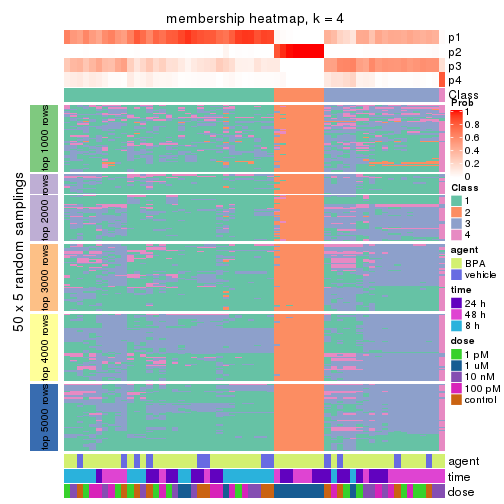
membership_heatmap(res, k = 5)
membership_heatmap(res, k = 6)
As soon as we have had the classes for columns, we can look for signatures which are significantly different between classes which can be candidate marks for certain classes. Following are the heatmaps for signatures.
Signature heatmaps where rows are scaled:
get_signatures(res, k = 2)
get_signatures(res, k = 3)
get_signatures(res, k = 4)

get_signatures(res, k = 5)
get_signatures(res, k = 6)
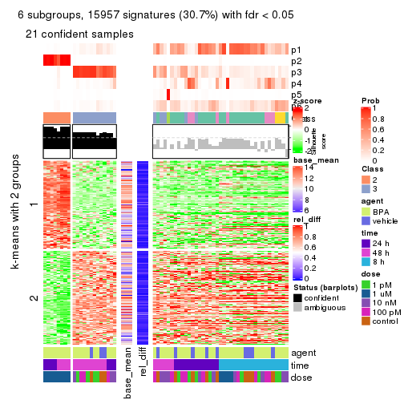
Signature heatmaps where rows are not scaled:
get_signatures(res, k = 2, scale_rows = FALSE)
get_signatures(res, k = 3, scale_rows = FALSE)
get_signatures(res, k = 4, scale_rows = FALSE)
get_signatures(res, k = 5, scale_rows = FALSE)
get_signatures(res, k = 6, scale_rows = FALSE)
Compare the overlap of signatures from different k:
compare_signatures(res)
get_signature() returns a data frame invisibly. TO get the list of signatures, the function
call should be assigned to a variable explicitly. In following code, if plot argument is set
to FALSE, no heatmap is plotted while only the differential analysis is performed.
# code only for demonstration
tb = get_signature(res, k = ..., plot = FALSE)
An example of the output of tb is:
#> which_row fdr mean_1 mean_2 scaled_mean_1 scaled_mean_2 km
#> 1 38 0.042760348 8.373488 9.131774 -0.5533452 0.5164555 1
#> 2 40 0.018707592 7.106213 8.469186 -0.6173731 0.5762149 1
#> 3 55 0.019134737 10.221463 11.207825 -0.6159697 0.5749050 1
#> 4 59 0.006059896 5.921854 7.869574 -0.6899429 0.6439467 1
#> 5 60 0.018055526 8.928898 10.211722 -0.6204761 0.5791110 1
#> 6 98 0.009384629 15.714769 14.887706 0.6635654 -0.6193277 2
...
The columns in tb are:
which_row: row indices corresponding to the input matrix.fdr: FDR for the differential test. mean_x: The mean value in group x.scaled_mean_x: The mean value in group x after rows are scaled.km: Row groups if k-means clustering is applied to rows.UMAP plot which shows how samples are separated.
dimension_reduction(res, k = 2, method = "UMAP")

dimension_reduction(res, k = 3, method = "UMAP")
dimension_reduction(res, k = 4, method = "UMAP")
dimension_reduction(res, k = 5, method = "UMAP")
dimension_reduction(res, k = 6, method = "UMAP")
Following heatmap shows how subgroups are split when increasing k:
collect_classes(res)
Test correlation between subgroups and known annotations. If the known annotation is numeric, one-way ANOVA test is applied, and if the known annotation is discrete, chi-squared contingency table test is applied.
test_to_known_factors(res)
#> n agent(p) time(p) dose(p) k
#> MAD:hclust 60 0.296 0.099491 1.87e-07 2
#> MAD:hclust 49 0.243 0.276101 5.67e-05 3
#> MAD:hclust 29 0.232 0.000403 1.23e-03 4
#> MAD:hclust 41 0.350 0.000133 5.63e-04 5
#> MAD:hclust 21 0.409 0.426985 3.17e-04 6
If matrix rows can be associated to genes, consider to use functional_enrichment(res,
...) to perform function enrichment for the signature genes. See this vignette for more detailed explanations.
The object with results only for a single top-value method and a single partition method can be extracted as:
res = res_list["MAD", "kmeans"]
# you can also extract it by
# res = res_list["MAD:kmeans"]
A summary of res and all the functions that can be applied to it:
res
#> A 'ConsensusPartition' object with k = 2, 3, 4, 5, 6.
#> On a matrix with 51941 rows and 60 columns.
#> Top rows (1000, 2000, 3000, 4000, 5000) are extracted by 'MAD' method.
#> Subgroups are detected by 'kmeans' method.
#> Performed in total 1250 partitions by row resampling.
#> Best k for subgroups seems to be 3.
#>
#> Following methods can be applied to this 'ConsensusPartition' object:
#> [1] "cola_report" "collect_classes" "collect_plots"
#> [4] "collect_stats" "colnames" "compare_signatures"
#> [7] "consensus_heatmap" "dimension_reduction" "functional_enrichment"
#> [10] "get_anno_col" "get_anno" "get_classes"
#> [13] "get_consensus" "get_matrix" "get_membership"
#> [16] "get_param" "get_signatures" "get_stats"
#> [19] "is_best_k" "is_stable_k" "membership_heatmap"
#> [22] "ncol" "nrow" "plot_ecdf"
#> [25] "rownames" "select_partition_number" "show"
#> [28] "suggest_best_k" "test_to_known_factors"
collect_plots() function collects all the plots made from res for all k (number of partitions)
into one single page to provide an easy and fast comparison between different k.
collect_plots(res)
The plots are:
k and the heatmap of
predicted classes for each k.k.k.k.All the plots in panels can be made by individual functions and they are plotted later in this section.
select_partition_number() produces several plots showing different
statistics for choosing “optimized” k. There are following statistics:
k;k, the area increased is defined as \(A_k - A_{k-1}\).The detailed explanations of these statistics can be found in the cola vignette.
Generally speaking, lower PAC score, higher mean silhouette score or higher
concordance corresponds to better partition. Rand index and Jaccard index
measure how similar the current partition is compared to partition with k-1.
If they are too similar, we won't accept k is better than k-1.
select_partition_number(res)
The numeric values for all these statistics can be obtained by get_stats().
get_stats(res)
#> k 1-PAC mean_silhouette concordance area_increased Rand Jaccard
#> 2 2 0.546 0.876 0.919 0.3128 0.765 0.765
#> 3 3 0.402 0.739 0.842 0.9165 0.627 0.513
#> 4 4 0.536 0.609 0.797 0.2130 0.790 0.512
#> 5 5 0.610 0.562 0.747 0.0827 0.888 0.609
#> 6 6 0.660 0.603 0.716 0.0466 0.950 0.778
suggest_best_k() suggests the best \(k\) based on these statistics. The rules are as follows:
suggest_best_k(res)
#> [1] 3
Following shows the table of the partitions (You need to click the show/hide
code output link to see it). The membership matrix (columns with name p*)
is inferred by
clue::cl_consensus()
function with the SE method. Basically the value in the membership matrix
represents the probability to belong to a certain group. The finall class
label for an item is determined with the group with highest probability it
belongs to.
In get_classes() function, the entropy is calculated from the membership
matrix and the silhouette score is calculated from the consensus matrix.
cbind(get_classes(res, k = 2), get_membership(res, k = 2))
#> class entropy silhouette p1 p2
#> GSM439987 1 0.1633 0.907 0.976 0.024
#> GSM439988 1 0.2236 0.905 0.964 0.036
#> GSM439989 1 0.2043 0.906 0.968 0.032
#> GSM439990 1 0.1633 0.908 0.976 0.024
#> GSM439991 1 0.0376 0.906 0.996 0.004
#> GSM439992 1 0.0672 0.906 0.992 0.008
#> GSM439993 1 0.1184 0.906 0.984 0.016
#> GSM439994 1 0.4690 0.868 0.900 0.100
#> GSM439995 1 0.8909 0.673 0.692 0.308
#> GSM439996 1 0.0938 0.906 0.988 0.012
#> GSM439997 1 0.7219 0.794 0.800 0.200
#> GSM439998 1 0.4562 0.877 0.904 0.096
#> GSM440035 1 0.0938 0.907 0.988 0.012
#> GSM440036 1 0.1633 0.907 0.976 0.024
#> GSM440037 1 0.2236 0.905 0.964 0.036
#> GSM440038 1 0.2043 0.907 0.968 0.032
#> GSM440011 1 0.1633 0.907 0.976 0.024
#> GSM440012 1 0.2236 0.905 0.964 0.036
#> GSM440013 1 0.1633 0.907 0.976 0.024
#> GSM440014 1 0.1843 0.907 0.972 0.028
#> GSM439999 1 0.1633 0.907 0.976 0.024
#> GSM440000 1 0.2236 0.905 0.964 0.036
#> GSM440001 1 0.1633 0.907 0.976 0.024
#> GSM440002 1 0.1633 0.907 0.976 0.024
#> GSM440023 1 0.2236 0.905 0.964 0.036
#> GSM440024 1 0.2236 0.905 0.964 0.036
#> GSM440025 1 0.3431 0.901 0.936 0.064
#> GSM440026 1 0.6531 0.840 0.832 0.168
#> GSM440039 1 0.5946 0.849 0.856 0.144
#> GSM440040 1 0.1633 0.907 0.976 0.024
#> GSM440041 1 0.1184 0.906 0.984 0.016
#> GSM440042 1 0.0376 0.904 0.996 0.004
#> GSM440015 1 0.4815 0.868 0.896 0.104
#> GSM440016 1 0.1414 0.908 0.980 0.020
#> GSM440017 1 0.1414 0.907 0.980 0.020
#> GSM440018 1 0.9000 0.673 0.684 0.316
#> GSM440003 1 0.6531 0.831 0.832 0.168
#> GSM440004 1 0.8909 0.678 0.692 0.308
#> GSM440005 1 0.2043 0.906 0.968 0.032
#> GSM440006 1 0.1633 0.907 0.976 0.024
#> GSM440027 2 0.0376 0.999 0.004 0.996
#> GSM440028 2 0.0376 0.999 0.004 0.996
#> GSM440029 2 0.0376 0.999 0.004 0.996
#> GSM440030 2 0.0000 0.995 0.000 1.000
#> GSM440043 1 0.8909 0.673 0.692 0.308
#> GSM440044 1 0.1414 0.902 0.980 0.020
#> GSM440045 1 0.8608 0.704 0.716 0.284
#> GSM440046 1 0.8909 0.673 0.692 0.308
#> GSM440019 1 0.1184 0.906 0.984 0.016
#> GSM440020 1 0.8144 0.741 0.748 0.252
#> GSM440021 1 0.5737 0.854 0.864 0.136
#> GSM440022 1 0.8909 0.673 0.692 0.308
#> GSM440007 1 0.1414 0.906 0.980 0.020
#> GSM440008 1 0.9000 0.661 0.684 0.316
#> GSM440009 1 0.6531 0.829 0.832 0.168
#> GSM440010 1 0.1184 0.906 0.984 0.016
#> GSM440031 2 0.0376 0.999 0.004 0.996
#> GSM440032 2 0.0376 0.999 0.004 0.996
#> GSM440033 2 0.0376 0.999 0.004 0.996
#> GSM440034 2 0.0376 0.999 0.004 0.996
cbind(get_classes(res, k = 3), get_membership(res, k = 3))
#> class entropy silhouette p1 p2 p3
#> GSM439987 1 0.4121 0.636 0.832 0.000 0.168
#> GSM439988 1 0.3412 0.769 0.876 0.000 0.124
#> GSM439989 1 0.1031 0.752 0.976 0.000 0.024
#> GSM439990 1 0.1289 0.749 0.968 0.000 0.032
#> GSM439991 1 0.5291 0.482 0.732 0.000 0.268
#> GSM439992 1 0.3619 0.768 0.864 0.000 0.136
#> GSM439993 1 0.5397 0.708 0.720 0.000 0.280
#> GSM439994 3 0.5678 0.638 0.316 0.000 0.684
#> GSM439995 3 0.1647 0.807 0.036 0.004 0.960
#> GSM439996 1 0.5859 0.638 0.656 0.000 0.344
#> GSM439997 3 0.1765 0.805 0.040 0.004 0.956
#> GSM439998 3 0.3816 0.716 0.148 0.000 0.852
#> GSM440035 1 0.3619 0.709 0.864 0.000 0.136
#> GSM440036 1 0.2066 0.730 0.940 0.000 0.060
#> GSM440037 1 0.4555 0.758 0.800 0.000 0.200
#> GSM440038 1 0.3551 0.700 0.868 0.000 0.132
#> GSM440011 1 0.4121 0.637 0.832 0.000 0.168
#> GSM440012 1 0.5058 0.738 0.756 0.000 0.244
#> GSM440013 1 0.3816 0.670 0.852 0.000 0.148
#> GSM440014 1 0.1163 0.749 0.972 0.000 0.028
#> GSM439999 1 0.1031 0.745 0.976 0.000 0.024
#> GSM440000 1 0.4931 0.742 0.768 0.000 0.232
#> GSM440001 1 0.2066 0.731 0.940 0.000 0.060
#> GSM440002 1 0.3941 0.649 0.844 0.000 0.156
#> GSM440023 1 0.3038 0.770 0.896 0.000 0.104
#> GSM440024 1 0.4654 0.756 0.792 0.000 0.208
#> GSM440025 1 0.5591 0.693 0.696 0.000 0.304
#> GSM440026 3 0.6111 0.534 0.396 0.000 0.604
#> GSM440039 3 0.5882 0.603 0.348 0.000 0.652
#> GSM440040 1 0.4796 0.750 0.780 0.000 0.220
#> GSM440041 1 0.5650 0.682 0.688 0.000 0.312
#> GSM440042 3 0.5497 0.646 0.292 0.000 0.708
#> GSM440015 3 0.5760 0.632 0.328 0.000 0.672
#> GSM440016 1 0.6299 0.303 0.524 0.000 0.476
#> GSM440017 1 0.5291 0.720 0.732 0.000 0.268
#> GSM440018 3 0.2301 0.806 0.060 0.004 0.936
#> GSM440003 3 0.5178 0.692 0.256 0.000 0.744
#> GSM440004 3 0.4842 0.710 0.224 0.000 0.776
#> GSM440005 1 0.5098 0.735 0.752 0.000 0.248
#> GSM440006 1 0.4555 0.755 0.800 0.000 0.200
#> GSM440027 2 0.0000 0.998 0.000 1.000 0.000
#> GSM440028 2 0.0237 0.998 0.000 0.996 0.004
#> GSM440029 2 0.0000 0.998 0.000 1.000 0.000
#> GSM440030 2 0.0000 0.998 0.000 1.000 0.000
#> GSM440043 3 0.2096 0.804 0.052 0.004 0.944
#> GSM440044 3 0.2066 0.797 0.060 0.000 0.940
#> GSM440045 3 0.2096 0.803 0.052 0.004 0.944
#> GSM440046 3 0.2096 0.804 0.052 0.004 0.944
#> GSM440019 1 0.6154 0.496 0.592 0.000 0.408
#> GSM440020 3 0.1989 0.801 0.048 0.004 0.948
#> GSM440021 3 0.4291 0.668 0.180 0.000 0.820
#> GSM440022 3 0.2200 0.806 0.056 0.004 0.940
#> GSM440007 3 0.5497 0.566 0.292 0.000 0.708
#> GSM440008 3 0.1832 0.807 0.036 0.008 0.956
#> GSM440009 3 0.2860 0.795 0.084 0.004 0.912
#> GSM440010 3 0.5810 0.383 0.336 0.000 0.664
#> GSM440031 2 0.0000 0.998 0.000 1.000 0.000
#> GSM440032 2 0.0000 0.998 0.000 1.000 0.000
#> GSM440033 2 0.0592 0.994 0.000 0.988 0.012
#> GSM440034 2 0.0237 0.998 0.000 0.996 0.004
cbind(get_classes(res, k = 4), get_membership(res, k = 4))
#> class entropy silhouette p1 p2 p3 p4
#> GSM439987 1 0.2676 0.65365 0.896 0.000 0.012 0.092
#> GSM439988 4 0.4917 0.48281 0.336 0.000 0.008 0.656
#> GSM439989 4 0.5155 0.16428 0.468 0.000 0.004 0.528
#> GSM439990 1 0.5165 -0.14959 0.512 0.000 0.004 0.484
#> GSM439991 1 0.5256 0.50162 0.700 0.000 0.040 0.260
#> GSM439992 4 0.3876 0.63675 0.124 0.000 0.040 0.836
#> GSM439993 4 0.2060 0.69628 0.016 0.000 0.052 0.932
#> GSM439994 1 0.5398 0.19151 0.580 0.000 0.404 0.016
#> GSM439995 3 0.1124 0.80738 0.012 0.004 0.972 0.012
#> GSM439996 4 0.3443 0.66045 0.016 0.000 0.136 0.848
#> GSM439997 3 0.2007 0.80998 0.020 0.004 0.940 0.036
#> GSM439998 3 0.4594 0.64623 0.008 0.000 0.712 0.280
#> GSM440035 1 0.4399 0.60004 0.768 0.000 0.020 0.212
#> GSM440036 1 0.3751 0.60671 0.800 0.000 0.004 0.196
#> GSM440037 4 0.4903 0.62348 0.248 0.000 0.028 0.724
#> GSM440038 1 0.4100 0.63393 0.816 0.000 0.036 0.148
#> GSM440011 1 0.2882 0.65563 0.892 0.000 0.024 0.084
#> GSM440012 4 0.5458 0.62414 0.236 0.000 0.060 0.704
#> GSM440013 1 0.3763 0.64617 0.832 0.000 0.024 0.144
#> GSM440014 1 0.5155 -0.08917 0.528 0.000 0.004 0.468
#> GSM439999 1 0.4955 0.00185 0.556 0.000 0.000 0.444
#> GSM440000 4 0.5074 0.63538 0.236 0.000 0.040 0.724
#> GSM440001 1 0.3937 0.60960 0.800 0.000 0.012 0.188
#> GSM440002 1 0.2635 0.65390 0.904 0.000 0.020 0.076
#> GSM440023 4 0.5108 0.53575 0.308 0.000 0.020 0.672
#> GSM440024 4 0.4361 0.65078 0.208 0.000 0.020 0.772
#> GSM440025 4 0.5710 0.65646 0.192 0.000 0.100 0.708
#> GSM440026 1 0.3937 0.57899 0.800 0.000 0.188 0.012
#> GSM440039 1 0.5038 0.36097 0.652 0.000 0.336 0.012
#> GSM440040 4 0.2984 0.69331 0.084 0.000 0.028 0.888
#> GSM440041 4 0.2489 0.69267 0.020 0.000 0.068 0.912
#> GSM440042 3 0.7878 0.13538 0.324 0.000 0.384 0.292
#> GSM440015 1 0.5607 0.01573 0.496 0.000 0.484 0.020
#> GSM440016 4 0.6350 0.40803 0.072 0.000 0.364 0.564
#> GSM440017 4 0.3548 0.70193 0.068 0.000 0.068 0.864
#> GSM440018 3 0.1707 0.80257 0.024 0.004 0.952 0.020
#> GSM440003 3 0.4607 0.62320 0.204 0.004 0.768 0.024
#> GSM440004 3 0.4841 0.52339 0.272 0.004 0.712 0.012
#> GSM440005 4 0.2466 0.70282 0.056 0.000 0.028 0.916
#> GSM440006 4 0.2813 0.68607 0.080 0.000 0.024 0.896
#> GSM440027 2 0.0376 0.99381 0.004 0.992 0.004 0.000
#> GSM440028 2 0.0376 0.99381 0.004 0.992 0.004 0.000
#> GSM440029 2 0.0188 0.99431 0.000 0.996 0.004 0.000
#> GSM440030 2 0.0188 0.99431 0.000 0.996 0.004 0.000
#> GSM440043 3 0.0844 0.80756 0.012 0.004 0.980 0.004
#> GSM440044 3 0.3088 0.77361 0.008 0.000 0.864 0.128
#> GSM440045 3 0.1082 0.81085 0.004 0.004 0.972 0.020
#> GSM440046 3 0.0967 0.80638 0.016 0.004 0.976 0.004
#> GSM440019 4 0.4010 0.60721 0.028 0.000 0.156 0.816
#> GSM440020 3 0.1474 0.81024 0.000 0.000 0.948 0.052
#> GSM440021 3 0.4356 0.61493 0.000 0.000 0.708 0.292
#> GSM440022 3 0.1675 0.80963 0.004 0.004 0.948 0.044
#> GSM440007 4 0.7372 -0.25687 0.160 0.000 0.420 0.420
#> GSM440008 3 0.0844 0.80756 0.012 0.004 0.980 0.004
#> GSM440009 3 0.4903 0.67905 0.028 0.000 0.724 0.248
#> GSM440010 3 0.6330 0.26563 0.060 0.000 0.492 0.448
#> GSM440031 2 0.0188 0.99431 0.000 0.996 0.004 0.000
#> GSM440032 2 0.0376 0.99381 0.004 0.992 0.004 0.000
#> GSM440033 2 0.1452 0.97112 0.036 0.956 0.000 0.008
#> GSM440034 2 0.0376 0.99381 0.004 0.992 0.004 0.000
cbind(get_classes(res, k = 5), get_membership(res, k = 5))
#> class entropy silhouette p1 p2 p3 p4 p5
#> GSM439987 1 0.3373 0.70530 0.848 0.000 0.004 0.056 0.092
#> GSM439988 5 0.4599 0.53675 0.156 0.000 0.000 0.100 0.744
#> GSM439989 5 0.3847 0.56725 0.180 0.000 0.000 0.036 0.784
#> GSM439990 5 0.3852 0.55162 0.220 0.000 0.000 0.020 0.760
#> GSM439991 1 0.4387 0.57772 0.704 0.000 0.016 0.272 0.008
#> GSM439992 4 0.5555 0.51150 0.072 0.000 0.008 0.608 0.312
#> GSM439993 5 0.4889 -0.39659 0.016 0.000 0.004 0.476 0.504
#> GSM439994 1 0.5036 0.59485 0.704 0.000 0.200 0.092 0.004
#> GSM439995 3 0.0566 0.81272 0.000 0.000 0.984 0.004 0.012
#> GSM439996 4 0.5904 0.38188 0.012 0.000 0.068 0.464 0.456
#> GSM439997 3 0.3019 0.78465 0.012 0.000 0.864 0.108 0.016
#> GSM439998 3 0.5314 0.49675 0.004 0.000 0.632 0.296 0.068
#> GSM440035 1 0.5811 0.54224 0.596 0.000 0.000 0.264 0.140
#> GSM440036 1 0.5526 0.59692 0.648 0.000 0.000 0.200 0.152
#> GSM440037 5 0.1956 0.60354 0.052 0.000 0.008 0.012 0.928
#> GSM440038 1 0.5409 0.21660 0.504 0.000 0.016 0.028 0.452
#> GSM440011 1 0.3248 0.70520 0.852 0.000 0.004 0.040 0.104
#> GSM440012 5 0.2178 0.59600 0.024 0.000 0.048 0.008 0.920
#> GSM440013 1 0.4708 0.65737 0.732 0.000 0.008 0.060 0.200
#> GSM440014 5 0.4712 0.46579 0.268 0.000 0.000 0.048 0.684
#> GSM439999 5 0.4506 0.44835 0.296 0.000 0.000 0.028 0.676
#> GSM440000 5 0.2036 0.59801 0.028 0.000 0.036 0.008 0.928
#> GSM440001 1 0.5382 0.58930 0.656 0.000 0.000 0.120 0.224
#> GSM440002 1 0.3234 0.70400 0.852 0.000 0.000 0.084 0.064
#> GSM440023 5 0.2331 0.60096 0.064 0.000 0.004 0.024 0.908
#> GSM440024 5 0.1329 0.57223 0.008 0.000 0.004 0.032 0.956
#> GSM440025 5 0.3275 0.52973 0.008 0.000 0.064 0.068 0.860
#> GSM440026 1 0.4674 0.66696 0.780 0.000 0.096 0.088 0.036
#> GSM440039 1 0.4801 0.62035 0.724 0.000 0.204 0.064 0.008
#> GSM440040 4 0.5295 0.25971 0.048 0.000 0.000 0.488 0.464
#> GSM440041 4 0.5114 0.45595 0.008 0.000 0.024 0.544 0.424
#> GSM440042 4 0.7483 0.00842 0.316 0.000 0.152 0.456 0.076
#> GSM440015 1 0.5790 0.21872 0.508 0.000 0.424 0.048 0.020
#> GSM440016 5 0.5659 0.11414 0.024 0.000 0.408 0.036 0.532
#> GSM440017 5 0.5561 -0.11985 0.028 0.000 0.036 0.340 0.596
#> GSM440018 3 0.0579 0.80871 0.000 0.000 0.984 0.008 0.008
#> GSM440003 3 0.5240 0.50761 0.232 0.000 0.688 0.060 0.020
#> GSM440004 3 0.5205 0.40359 0.284 0.000 0.656 0.044 0.016
#> GSM440005 5 0.5295 -0.30547 0.048 0.000 0.000 0.464 0.488
#> GSM440006 5 0.5504 -0.33468 0.064 0.000 0.000 0.448 0.488
#> GSM440027 2 0.0324 0.98467 0.000 0.992 0.000 0.004 0.004
#> GSM440028 2 0.1356 0.98167 0.004 0.956 0.000 0.028 0.012
#> GSM440029 2 0.0324 0.98451 0.004 0.992 0.000 0.004 0.000
#> GSM440030 2 0.0992 0.98268 0.000 0.968 0.000 0.024 0.008
#> GSM440043 3 0.0451 0.81203 0.000 0.000 0.988 0.008 0.004
#> GSM440044 3 0.3579 0.68943 0.000 0.000 0.756 0.240 0.004
#> GSM440045 3 0.0566 0.81377 0.000 0.000 0.984 0.012 0.004
#> GSM440046 3 0.0404 0.81296 0.000 0.000 0.988 0.012 0.000
#> GSM440019 4 0.5600 0.52720 0.020 0.000 0.044 0.576 0.360
#> GSM440020 3 0.1991 0.80082 0.004 0.000 0.916 0.076 0.004
#> GSM440021 3 0.4558 0.63024 0.000 0.000 0.740 0.180 0.080
#> GSM440022 3 0.1845 0.80533 0.000 0.000 0.928 0.056 0.016
#> GSM440007 4 0.5992 0.48623 0.124 0.000 0.132 0.680 0.064
#> GSM440008 3 0.0290 0.81338 0.000 0.000 0.992 0.008 0.000
#> GSM440009 3 0.5754 0.29740 0.032 0.000 0.516 0.420 0.032
#> GSM440010 4 0.6135 0.48882 0.056 0.000 0.192 0.652 0.100
#> GSM440031 2 0.0898 0.98310 0.000 0.972 0.000 0.020 0.008
#> GSM440032 2 0.0000 0.98476 0.000 1.000 0.000 0.000 0.000
#> GSM440033 2 0.1483 0.97299 0.008 0.952 0.000 0.028 0.012
#> GSM440034 2 0.0324 0.98451 0.004 0.992 0.000 0.004 0.000
cbind(get_classes(res, k = 6), get_membership(res, k = 6))
#> class entropy silhouette p1 p2 p3 p4 p5 p6
#> GSM439987 5 0.3364 0.6318 0.068 0.000 0.000 0.012 0.832 NA
#> GSM439988 1 0.6170 0.4521 0.584 0.000 0.000 0.120 0.212 NA
#> GSM439989 1 0.4234 0.6429 0.724 0.000 0.000 0.028 0.224 NA
#> GSM439990 1 0.3798 0.6489 0.748 0.000 0.000 0.004 0.216 NA
#> GSM439991 5 0.5507 0.5218 0.004 0.000 0.004 0.152 0.592 NA
#> GSM439992 4 0.4884 0.6108 0.092 0.000 0.008 0.740 0.052 NA
#> GSM439993 4 0.4396 0.5549 0.332 0.000 0.004 0.636 0.004 NA
#> GSM439994 5 0.5356 0.5841 0.000 0.000 0.060 0.020 0.488 NA
#> GSM439995 3 0.1429 0.7872 0.000 0.000 0.940 0.004 0.004 NA
#> GSM439996 4 0.5175 0.5799 0.288 0.000 0.068 0.620 0.000 NA
#> GSM439997 3 0.3401 0.7579 0.004 0.000 0.832 0.104 0.012 NA
#> GSM439998 3 0.5001 0.5700 0.028 0.000 0.660 0.248 0.000 NA
#> GSM440035 5 0.6000 0.4485 0.068 0.000 0.000 0.164 0.608 NA
#> GSM440036 5 0.5513 0.4560 0.088 0.000 0.000 0.136 0.672 NA
#> GSM440037 1 0.1167 0.6707 0.960 0.000 0.008 0.020 0.012 NA
#> GSM440038 1 0.5575 0.2464 0.528 0.000 0.008 0.012 0.372 NA
#> GSM440011 5 0.4621 0.6464 0.056 0.000 0.000 0.012 0.676 NA
#> GSM440012 1 0.1003 0.6646 0.964 0.000 0.016 0.020 0.000 NA
#> GSM440013 5 0.6049 0.5870 0.132 0.000 0.004 0.056 0.600 NA
#> GSM440014 1 0.4532 0.5946 0.672 0.000 0.000 0.024 0.276 NA
#> GSM439999 1 0.4240 0.5931 0.672 0.000 0.000 0.016 0.296 NA
#> GSM440000 1 0.1138 0.6663 0.960 0.000 0.012 0.024 0.004 NA
#> GSM440001 5 0.5508 0.4119 0.180 0.000 0.000 0.076 0.660 NA
#> GSM440002 5 0.2976 0.6310 0.020 0.000 0.000 0.020 0.852 NA
#> GSM440023 1 0.2507 0.6687 0.900 0.000 0.008 0.044 0.028 NA
#> GSM440024 1 0.1843 0.6412 0.912 0.000 0.004 0.080 0.004 NA
#> GSM440025 1 0.3752 0.5865 0.804 0.000 0.076 0.108 0.008 NA
#> GSM440026 5 0.4808 0.6045 0.004 0.000 0.036 0.004 0.540 NA
#> GSM440039 5 0.5368 0.5856 0.000 0.000 0.116 0.000 0.508 NA
#> GSM440040 4 0.5721 0.5527 0.252 0.000 0.000 0.604 0.052 NA
#> GSM440041 4 0.5208 0.5917 0.288 0.000 0.024 0.624 0.004 NA
#> GSM440042 4 0.7380 -0.0294 0.036 0.000 0.056 0.376 0.176 NA
#> GSM440015 5 0.6651 0.3616 0.016 0.000 0.272 0.008 0.380 NA
#> GSM440016 1 0.5525 0.3029 0.592 0.000 0.304 0.072 0.024 NA
#> GSM440017 1 0.5341 -0.3722 0.476 0.000 0.040 0.456 0.020 NA
#> GSM440018 3 0.2201 0.7769 0.036 0.000 0.904 0.000 0.004 NA
#> GSM440003 3 0.6323 0.2933 0.016 0.000 0.548 0.024 0.180 NA
#> GSM440004 3 0.6326 -0.0437 0.012 0.000 0.432 0.004 0.212 NA
#> GSM440005 4 0.6136 0.5110 0.288 0.000 0.000 0.540 0.052 NA
#> GSM440006 4 0.5540 0.5443 0.292 0.000 0.004 0.600 0.040 NA
#> GSM440027 2 0.0508 0.9729 0.000 0.984 0.000 0.004 0.000 NA
#> GSM440028 2 0.1606 0.9625 0.000 0.932 0.004 0.008 0.000 NA
#> GSM440029 2 0.0000 0.9731 0.000 1.000 0.000 0.000 0.000 NA
#> GSM440030 2 0.1268 0.9664 0.000 0.952 0.004 0.008 0.000 NA
#> GSM440043 3 0.1152 0.7880 0.000 0.000 0.952 0.000 0.004 NA
#> GSM440044 3 0.4400 0.6675 0.020 0.000 0.736 0.180 0.000 NA
#> GSM440045 3 0.1251 0.7869 0.024 0.000 0.956 0.008 0.000 NA
#> GSM440046 3 0.1285 0.7839 0.000 0.000 0.944 0.000 0.004 NA
#> GSM440019 4 0.4147 0.6338 0.132 0.000 0.032 0.776 0.000 NA
#> GSM440020 3 0.2785 0.7678 0.028 0.000 0.876 0.068 0.000 NA
#> GSM440021 3 0.4032 0.6950 0.084 0.000 0.780 0.120 0.000 NA
#> GSM440022 3 0.1405 0.7888 0.004 0.000 0.948 0.024 0.000 NA
#> GSM440007 4 0.6332 0.4393 0.020 0.000 0.108 0.568 0.048 NA
#> GSM440008 3 0.1349 0.7884 0.004 0.000 0.940 0.000 0.000 NA
#> GSM440009 3 0.6025 0.3118 0.012 0.000 0.492 0.352 0.008 NA
#> GSM440010 4 0.6475 0.4855 0.024 0.000 0.128 0.588 0.064 NA
#> GSM440031 2 0.0972 0.9693 0.000 0.964 0.000 0.008 0.000 NA
#> GSM440032 2 0.0291 0.9722 0.000 0.992 0.000 0.004 0.000 NA
#> GSM440033 2 0.1732 0.9394 0.000 0.920 0.000 0.004 0.004 NA
#> GSM440034 2 0.0458 0.9720 0.000 0.984 0.000 0.000 0.000 NA
Heatmaps for the consensus matrix. It visualizes the probability of two samples to be in a same group.
consensus_heatmap(res, k = 2)
consensus_heatmap(res, k = 3)
consensus_heatmap(res, k = 4)
consensus_heatmap(res, k = 5)
consensus_heatmap(res, k = 6)
Heatmaps for the membership of samples in all partitions to see how consistent they are:
membership_heatmap(res, k = 2)
membership_heatmap(res, k = 3)
membership_heatmap(res, k = 4)
membership_heatmap(res, k = 5)
membership_heatmap(res, k = 6)
As soon as we have had the classes for columns, we can look for signatures which are significantly different between classes which can be candidate marks for certain classes. Following are the heatmaps for signatures.
Signature heatmaps where rows are scaled:
get_signatures(res, k = 2)
get_signatures(res, k = 3)
get_signatures(res, k = 4)
get_signatures(res, k = 5)
get_signatures(res, k = 6)
Signature heatmaps where rows are not scaled:
get_signatures(res, k = 2, scale_rows = FALSE)
get_signatures(res, k = 3, scale_rows = FALSE)
get_signatures(res, k = 4, scale_rows = FALSE)
get_signatures(res, k = 5, scale_rows = FALSE)
get_signatures(res, k = 6, scale_rows = FALSE)
Compare the overlap of signatures from different k:
compare_signatures(res)
get_signature() returns a data frame invisibly. TO get the list of signatures, the function
call should be assigned to a variable explicitly. In following code, if plot argument is set
to FALSE, no heatmap is plotted while only the differential analysis is performed.
# code only for demonstration
tb = get_signature(res, k = ..., plot = FALSE)
An example of the output of tb is:
#> which_row fdr mean_1 mean_2 scaled_mean_1 scaled_mean_2 km
#> 1 38 0.042760348 8.373488 9.131774 -0.5533452 0.5164555 1
#> 2 40 0.018707592 7.106213 8.469186 -0.6173731 0.5762149 1
#> 3 55 0.019134737 10.221463 11.207825 -0.6159697 0.5749050 1
#> 4 59 0.006059896 5.921854 7.869574 -0.6899429 0.6439467 1
#> 5 60 0.018055526 8.928898 10.211722 -0.6204761 0.5791110 1
#> 6 98 0.009384629 15.714769 14.887706 0.6635654 -0.6193277 2
...
The columns in tb are:
which_row: row indices corresponding to the input matrix.fdr: FDR for the differential test. mean_x: The mean value in group x.scaled_mean_x: The mean value in group x after rows are scaled.km: Row groups if k-means clustering is applied to rows.UMAP plot which shows how samples are separated.
dimension_reduction(res, k = 2, method = "UMAP")
dimension_reduction(res, k = 3, method = "UMAP")
dimension_reduction(res, k = 4, method = "UMAP")
dimension_reduction(res, k = 5, method = "UMAP")
dimension_reduction(res, k = 6, method = "UMAP")
Following heatmap shows how subgroups are split when increasing k:
collect_classes(res)
Test correlation between subgroups and known annotations. If the known annotation is numeric, one-way ANOVA test is applied, and if the known annotation is discrete, chi-squared contingency table test is applied.
test_to_known_factors(res)
#> n agent(p) time(p) dose(p) k
#> MAD:kmeans 60 0.296 9.95e-02 1.87e-07 2
#> MAD:kmeans 56 0.268 1.85e-06 2.51e-05 3
#> MAD:kmeans 48 0.589 2.37e-06 2.14e-03 4
#> MAD:kmeans 42 0.368 2.84e-06 7.44e-03 5
#> MAD:kmeans 46 0.376 8.16e-09 3.73e-03 6
If matrix rows can be associated to genes, consider to use functional_enrichment(res,
...) to perform function enrichment for the signature genes. See this vignette for more detailed explanations.
The object with results only for a single top-value method and a single partition method can be extracted as:
res = res_list["MAD", "skmeans"]
# you can also extract it by
# res = res_list["MAD:skmeans"]
A summary of res and all the functions that can be applied to it:
res
#> A 'ConsensusPartition' object with k = 2, 3, 4, 5, 6.
#> On a matrix with 51941 rows and 60 columns.
#> Top rows (1000, 2000, 3000, 4000, 5000) are extracted by 'MAD' method.
#> Subgroups are detected by 'skmeans' method.
#> Performed in total 1250 partitions by row resampling.
#> Best k for subgroups seems to be 2.
#>
#> Following methods can be applied to this 'ConsensusPartition' object:
#> [1] "cola_report" "collect_classes" "collect_plots"
#> [4] "collect_stats" "colnames" "compare_signatures"
#> [7] "consensus_heatmap" "dimension_reduction" "functional_enrichment"
#> [10] "get_anno_col" "get_anno" "get_classes"
#> [13] "get_consensus" "get_matrix" "get_membership"
#> [16] "get_param" "get_signatures" "get_stats"
#> [19] "is_best_k" "is_stable_k" "membership_heatmap"
#> [22] "ncol" "nrow" "plot_ecdf"
#> [25] "rownames" "select_partition_number" "show"
#> [28] "suggest_best_k" "test_to_known_factors"
collect_plots() function collects all the plots made from res for all k (number of partitions)
into one single page to provide an easy and fast comparison between different k.
collect_plots(res)
The plots are:
k and the heatmap of
predicted classes for each k.k.k.k.All the plots in panels can be made by individual functions and they are plotted later in this section.
select_partition_number() produces several plots showing different
statistics for choosing “optimized” k. There are following statistics:
k;k, the area increased is defined as \(A_k - A_{k-1}\).The detailed explanations of these statistics can be found in the cola vignette.
Generally speaking, lower PAC score, higher mean silhouette score or higher
concordance corresponds to better partition. Rand index and Jaccard index
measure how similar the current partition is compared to partition with k-1.
If they are too similar, we won't accept k is better than k-1.
select_partition_number(res)
The numeric values for all these statistics can be obtained by get_stats().
get_stats(res)
#> k 1-PAC mean_silhouette concordance area_increased Rand Jaccard
#> 2 2 0.0595 0.632 0.795 0.5047 0.501 0.501
#> 3 3 0.1147 0.281 0.597 0.3259 0.667 0.436
#> 4 4 0.1654 0.277 0.535 0.1282 0.769 0.441
#> 5 5 0.2876 0.260 0.503 0.0660 0.846 0.493
#> 6 6 0.3972 0.247 0.463 0.0416 0.835 0.380
suggest_best_k() suggests the best \(k\) based on these statistics. The rules are as follows:
suggest_best_k(res)
#> [1] 2
Following shows the table of the partitions (You need to click the show/hide
code output link to see it). The membership matrix (columns with name p*)
is inferred by
clue::cl_consensus()
function with the SE method. Basically the value in the membership matrix
represents the probability to belong to a certain group. The finall class
label for an item is determined with the group with highest probability it
belongs to.
In get_classes() function, the entropy is calculated from the membership
matrix and the silhouette score is calculated from the consensus matrix.
cbind(get_classes(res, k = 2), get_membership(res, k = 2))
#> class entropy silhouette p1 p2
#> GSM439987 1 0.6712 0.7584 0.824 0.176
#> GSM439988 1 0.5408 0.7756 0.876 0.124
#> GSM439989 1 0.3733 0.7650 0.928 0.072
#> GSM439990 1 0.3879 0.7634 0.924 0.076
#> GSM439991 1 0.6531 0.7628 0.832 0.168
#> GSM439992 1 0.5059 0.7801 0.888 0.112
#> GSM439993 1 0.4161 0.7666 0.916 0.084
#> GSM439994 2 0.9881 0.2581 0.436 0.564
#> GSM439995 2 0.6343 0.7362 0.160 0.840
#> GSM439996 1 0.6531 0.7615 0.832 0.168
#> GSM439997 2 0.9044 0.5552 0.320 0.680
#> GSM439998 1 0.9993 0.0961 0.516 0.484
#> GSM440035 1 0.6148 0.7731 0.848 0.152
#> GSM440036 1 0.5737 0.7779 0.864 0.136
#> GSM440037 1 0.6048 0.7746 0.852 0.148
#> GSM440038 1 0.9732 0.4173 0.596 0.404
#> GSM440011 1 0.7299 0.7467 0.796 0.204
#> GSM440012 1 0.8713 0.6584 0.708 0.292
#> GSM440013 1 0.8608 0.6349 0.716 0.284
#> GSM440014 1 0.3431 0.7634 0.936 0.064
#> GSM439999 1 0.2423 0.7473 0.960 0.040
#> GSM440000 1 0.6247 0.7714 0.844 0.156
#> GSM440001 1 0.4298 0.7700 0.912 0.088
#> GSM440002 1 0.6973 0.7493 0.812 0.188
#> GSM440023 1 0.9209 0.6088 0.664 0.336
#> GSM440024 1 0.7602 0.7384 0.780 0.220
#> GSM440025 2 0.9993 0.0173 0.484 0.516
#> GSM440026 2 0.9323 0.4589 0.348 0.652
#> GSM440039 2 0.9815 0.3015 0.420 0.580
#> GSM440040 1 0.5946 0.7788 0.856 0.144
#> GSM440041 1 0.6438 0.7707 0.836 0.164
#> GSM440042 1 0.9710 0.4085 0.600 0.400
#> GSM440015 2 0.9954 0.2234 0.460 0.540
#> GSM440016 1 0.9896 0.2637 0.560 0.440
#> GSM440017 1 0.5178 0.7779 0.884 0.116
#> GSM440018 2 0.7056 0.7130 0.192 0.808
#> GSM440003 2 0.9248 0.4926 0.340 0.660
#> GSM440004 2 0.6247 0.7363 0.156 0.844
#> GSM440005 1 0.6048 0.7758 0.852 0.148
#> GSM440006 1 0.6048 0.7782 0.852 0.148
#> GSM440027 2 0.0672 0.7601 0.008 0.992
#> GSM440028 2 0.1184 0.7618 0.016 0.984
#> GSM440029 2 0.0938 0.7612 0.012 0.988
#> GSM440030 2 0.0376 0.7591 0.004 0.996
#> GSM440043 2 0.4690 0.7589 0.100 0.900
#> GSM440044 1 0.9909 0.2315 0.556 0.444
#> GSM440045 2 0.7219 0.7109 0.200 0.800
#> GSM440046 2 0.4431 0.7584 0.092 0.908
#> GSM440019 1 0.8909 0.6052 0.692 0.308
#> GSM440020 2 0.8443 0.6459 0.272 0.728
#> GSM440021 2 0.9393 0.4465 0.356 0.644
#> GSM440022 2 0.6438 0.7327 0.164 0.836
#> GSM440007 1 0.9944 0.2399 0.544 0.456
#> GSM440008 2 0.0672 0.7592 0.008 0.992
#> GSM440009 2 0.8763 0.5724 0.296 0.704
#> GSM440010 1 0.9970 0.1940 0.532 0.468
#> GSM440031 2 0.0672 0.7601 0.008 0.992
#> GSM440032 2 0.0376 0.7591 0.004 0.996
#> GSM440033 2 0.1184 0.7617 0.016 0.984
#> GSM440034 2 0.0672 0.7597 0.008 0.992
cbind(get_classes(res, k = 3), get_membership(res, k = 3))
#> class entropy silhouette p1 p2 p3
#> GSM439987 3 0.7597 -0.111045 0.384 0.048 0.568
#> GSM439988 1 0.7564 0.440446 0.672 0.096 0.232
#> GSM439989 1 0.7164 0.408327 0.640 0.044 0.316
#> GSM439990 1 0.7310 0.369131 0.600 0.040 0.360
#> GSM439991 3 0.7600 0.000367 0.344 0.056 0.600
#> GSM439992 1 0.7622 0.359861 0.608 0.060 0.332
#> GSM439993 1 0.5292 0.462079 0.800 0.028 0.172
#> GSM439994 3 0.8199 0.337747 0.160 0.200 0.640
#> GSM439995 3 0.8581 -0.017447 0.096 0.444 0.460
#> GSM439996 1 0.6950 0.399547 0.692 0.056 0.252
#> GSM439997 3 0.9537 0.295546 0.224 0.296 0.480
#> GSM439998 1 0.9653 -0.060300 0.448 0.224 0.328
#> GSM440035 3 0.8268 -0.176737 0.440 0.076 0.484
#> GSM440036 1 0.8199 0.232618 0.488 0.072 0.440
#> GSM440037 1 0.7259 0.445710 0.680 0.072 0.248
#> GSM440038 3 0.9664 -0.001680 0.332 0.224 0.444
#> GSM440011 3 0.7600 0.008764 0.344 0.056 0.600
#> GSM440012 1 0.8163 0.379608 0.628 0.124 0.248
#> GSM440013 3 0.8895 0.011607 0.392 0.124 0.484
#> GSM440014 1 0.7319 0.302880 0.548 0.032 0.420
#> GSM439999 1 0.6661 0.361286 0.588 0.012 0.400
#> GSM440000 1 0.8028 0.406935 0.616 0.096 0.288
#> GSM440001 1 0.7382 0.282532 0.512 0.032 0.456
#> GSM440002 3 0.8516 0.025144 0.328 0.112 0.560
#> GSM440023 1 0.9527 0.102916 0.436 0.372 0.192
#> GSM440024 1 0.8061 0.420354 0.652 0.156 0.192
#> GSM440025 1 0.9527 0.052045 0.436 0.372 0.192
#> GSM440026 3 0.9328 0.257103 0.172 0.356 0.472
#> GSM440039 3 0.7525 0.321095 0.108 0.208 0.684
#> GSM440040 1 0.6936 0.454107 0.704 0.064 0.232
#> GSM440041 1 0.8196 0.343137 0.608 0.108 0.284
#> GSM440042 3 0.9119 0.055280 0.368 0.148 0.484
#> GSM440015 3 0.8309 0.336020 0.180 0.188 0.632
#> GSM440016 1 0.9537 -0.018761 0.428 0.192 0.380
#> GSM440017 1 0.6245 0.454156 0.760 0.060 0.180
#> GSM440018 2 0.9287 0.099788 0.188 0.508 0.304
#> GSM440003 3 0.9337 0.302356 0.208 0.280 0.512
#> GSM440004 3 0.7796 0.215255 0.056 0.392 0.552
#> GSM440005 1 0.6922 0.452732 0.720 0.080 0.200
#> GSM440006 1 0.7047 0.449484 0.712 0.084 0.204
#> GSM440027 2 0.0592 0.741289 0.000 0.988 0.012
#> GSM440028 2 0.1337 0.738723 0.016 0.972 0.012
#> GSM440029 2 0.0424 0.743643 0.008 0.992 0.000
#> GSM440030 2 0.0000 0.743813 0.000 1.000 0.000
#> GSM440043 3 0.8690 -0.025782 0.104 0.440 0.456
#> GSM440044 3 0.8477 0.140745 0.380 0.096 0.524
#> GSM440045 3 0.9863 0.217311 0.260 0.340 0.400
#> GSM440046 2 0.8460 0.061200 0.088 0.472 0.440
#> GSM440019 1 0.8065 0.292788 0.604 0.092 0.304
#> GSM440020 3 0.9804 0.259718 0.272 0.296 0.432
#> GSM440021 1 0.9648 -0.023462 0.464 0.244 0.292
#> GSM440022 2 0.9098 0.066388 0.148 0.492 0.360
#> GSM440007 3 0.9334 -0.001889 0.408 0.164 0.428
#> GSM440008 2 0.6977 0.516352 0.076 0.712 0.212
#> GSM440009 2 0.9374 0.051767 0.192 0.492 0.316
#> GSM440010 1 0.9871 -0.060200 0.376 0.256 0.368
#> GSM440031 2 0.0237 0.743519 0.000 0.996 0.004
#> GSM440032 2 0.0237 0.744111 0.000 0.996 0.004
#> GSM440033 2 0.2550 0.708317 0.040 0.936 0.024
#> GSM440034 2 0.0892 0.741304 0.000 0.980 0.020
cbind(get_classes(res, k = 4), get_membership(res, k = 4))
#> class entropy silhouette p1 p2 p3 p4
#> GSM439987 1 0.7041 0.33408 0.644 0.028 0.156 0.172
#> GSM439988 4 0.8254 -0.01506 0.392 0.080 0.088 0.440
#> GSM439989 1 0.7594 0.14033 0.488 0.032 0.096 0.384
#> GSM439990 1 0.6854 0.15398 0.568 0.028 0.056 0.348
#> GSM439991 1 0.8192 0.17832 0.500 0.032 0.220 0.248
#> GSM439992 4 0.7977 0.04782 0.396 0.024 0.152 0.428
#> GSM439993 4 0.6433 0.26651 0.172 0.016 0.128 0.684
#> GSM439994 3 0.8007 0.14050 0.368 0.064 0.480 0.088
#> GSM439995 3 0.8084 0.44169 0.100 0.240 0.564 0.096
#> GSM439996 4 0.6625 0.27488 0.092 0.024 0.224 0.660
#> GSM439997 3 0.8996 0.36049 0.136 0.148 0.480 0.236
#> GSM439998 3 0.8905 0.06726 0.120 0.112 0.392 0.376
#> GSM440035 1 0.7965 0.21293 0.548 0.044 0.156 0.252
#> GSM440036 1 0.7933 0.18872 0.520 0.048 0.116 0.316
#> GSM440037 4 0.7879 0.00465 0.400 0.044 0.100 0.456
#> GSM440038 1 0.8882 0.19936 0.480 0.108 0.156 0.256
#> GSM440011 1 0.7547 0.32153 0.608 0.048 0.208 0.136
#> GSM440012 4 0.8510 0.11387 0.300 0.056 0.172 0.472
#> GSM440013 1 0.8370 0.24612 0.504 0.060 0.280 0.156
#> GSM440014 1 0.7760 0.13747 0.512 0.028 0.132 0.328
#> GSM439999 1 0.6614 0.16914 0.568 0.008 0.072 0.352
#> GSM440000 4 0.8373 0.10682 0.296 0.052 0.164 0.488
#> GSM440001 1 0.7576 0.28337 0.580 0.036 0.132 0.252
#> GSM440002 1 0.7911 0.29401 0.576 0.052 0.196 0.176
#> GSM440023 4 0.9620 0.03722 0.284 0.264 0.124 0.328
#> GSM440024 4 0.8068 0.18415 0.264 0.096 0.088 0.552
#> GSM440025 4 0.9608 0.07748 0.188 0.320 0.152 0.340
#> GSM440026 1 0.8940 0.10398 0.460 0.232 0.224 0.084
#> GSM440039 3 0.8349 0.13196 0.384 0.112 0.436 0.068
#> GSM440040 4 0.7682 0.16435 0.320 0.052 0.088 0.540
#> GSM440041 4 0.7532 0.26300 0.180 0.032 0.192 0.596
#> GSM440042 3 0.9342 0.08317 0.276 0.088 0.348 0.288
#> GSM440015 3 0.8740 0.21874 0.316 0.112 0.460 0.112
#> GSM440016 4 0.9436 0.06333 0.280 0.100 0.272 0.348
#> GSM440017 4 0.7515 0.20979 0.248 0.020 0.164 0.568
#> GSM440018 3 0.8700 0.30715 0.108 0.356 0.432 0.104
#> GSM440003 3 0.9171 0.32693 0.256 0.168 0.448 0.128
#> GSM440004 3 0.8412 0.39733 0.188 0.200 0.536 0.076
#> GSM440005 4 0.7941 0.13779 0.328 0.060 0.096 0.516
#> GSM440006 4 0.8063 0.20756 0.244 0.064 0.136 0.556
#> GSM440027 2 0.1004 0.82202 0.004 0.972 0.024 0.000
#> GSM440028 2 0.0895 0.82288 0.000 0.976 0.020 0.004
#> GSM440029 2 0.0524 0.82249 0.000 0.988 0.008 0.004
#> GSM440030 2 0.0779 0.81995 0.000 0.980 0.016 0.004
#> GSM440043 3 0.7374 0.46314 0.096 0.176 0.644 0.084
#> GSM440044 3 0.8640 0.26346 0.228 0.068 0.492 0.212
#> GSM440045 3 0.8230 0.43275 0.108 0.164 0.576 0.152
#> GSM440046 3 0.7372 0.46269 0.092 0.260 0.600 0.048
#> GSM440019 4 0.9066 0.17334 0.236 0.080 0.260 0.424
#> GSM440020 3 0.8192 0.40506 0.072 0.168 0.560 0.200
#> GSM440021 3 0.8639 0.10898 0.092 0.112 0.412 0.384
#> GSM440022 3 0.8797 0.41854 0.104 0.288 0.472 0.136
#> GSM440007 3 0.9570 0.02173 0.260 0.116 0.320 0.304
#> GSM440008 2 0.6372 -0.08034 0.020 0.504 0.448 0.028
#> GSM440009 2 0.9284 -0.24005 0.144 0.404 0.308 0.144
#> GSM440010 4 0.9700 0.06435 0.196 0.180 0.256 0.368
#> GSM440031 2 0.0895 0.82200 0.000 0.976 0.020 0.004
#> GSM440032 2 0.0336 0.82348 0.000 0.992 0.008 0.000
#> GSM440033 2 0.2124 0.79207 0.000 0.932 0.040 0.028
#> GSM440034 2 0.1631 0.81123 0.008 0.956 0.020 0.016
cbind(get_classes(res, k = 5), get_membership(res, k = 5))
#> class entropy silhouette p1 p2 p3 p4 p5
#> GSM439987 1 0.6702 0.30572 0.640 0.020 0.092 0.072 0.176
#> GSM439988 5 0.8153 0.17907 0.212 0.064 0.060 0.160 0.504
#> GSM439989 5 0.7846 0.07244 0.332 0.044 0.036 0.144 0.444
#> GSM439990 5 0.7495 0.07755 0.368 0.012 0.072 0.104 0.444
#> GSM439991 1 0.7859 0.15676 0.496 0.016 0.108 0.252 0.128
#> GSM439992 4 0.8429 -0.07772 0.268 0.028 0.068 0.368 0.268
#> GSM439993 5 0.7043 0.09026 0.060 0.020 0.056 0.428 0.436
#> GSM439994 1 0.8357 0.08563 0.424 0.060 0.324 0.112 0.080
#> GSM439995 3 0.6440 0.38742 0.056 0.140 0.676 0.096 0.032
#> GSM439996 5 0.8389 -0.02530 0.104 0.024 0.156 0.352 0.364
#> GSM439997 3 0.9012 0.15901 0.140 0.100 0.412 0.244 0.104
#> GSM439998 4 0.8231 0.01901 0.052 0.040 0.336 0.392 0.180
#> GSM440035 1 0.8390 0.15423 0.428 0.016 0.124 0.216 0.216
#> GSM440036 1 0.8326 0.10339 0.404 0.032 0.072 0.184 0.308
#> GSM440037 5 0.6309 0.28464 0.156 0.020 0.060 0.088 0.676
#> GSM440038 1 0.8667 0.10258 0.408 0.060 0.108 0.124 0.300
#> GSM440011 1 0.6635 0.29328 0.660 0.028 0.104 0.068 0.140
#> GSM440012 5 0.7298 0.26858 0.136 0.048 0.064 0.144 0.608
#> GSM440013 1 0.8346 0.23099 0.472 0.028 0.184 0.128 0.188
#> GSM440014 5 0.7899 0.04730 0.312 0.020 0.064 0.160 0.444
#> GSM439999 1 0.7353 -0.02248 0.420 0.008 0.060 0.112 0.400
#> GSM440000 5 0.6387 0.29864 0.124 0.016 0.084 0.100 0.676
#> GSM440001 1 0.6861 0.15316 0.528 0.004 0.028 0.152 0.288
#> GSM440002 1 0.7874 0.30048 0.544 0.032 0.128 0.128 0.168
#> GSM440023 5 0.9250 0.12403 0.192 0.240 0.060 0.160 0.348
#> GSM440024 5 0.8357 0.24149 0.184 0.096 0.060 0.160 0.500
#> GSM440025 5 0.9263 0.05781 0.076 0.212 0.128 0.224 0.360
#> GSM440026 1 0.8688 0.17924 0.456 0.200 0.168 0.116 0.060
#> GSM440039 1 0.7624 0.13576 0.496 0.056 0.308 0.104 0.036
#> GSM440040 5 0.8295 0.14091 0.164 0.036 0.072 0.316 0.412
#> GSM440041 4 0.8379 -0.05785 0.116 0.040 0.108 0.416 0.320
#> GSM440042 4 0.8760 0.06556 0.296 0.052 0.180 0.380 0.092
#> GSM440015 3 0.8103 -0.00381 0.336 0.024 0.416 0.140 0.084
#> GSM440016 5 0.8683 0.02857 0.140 0.040 0.344 0.124 0.352
#> GSM440017 5 0.8326 0.12288 0.148 0.028 0.096 0.328 0.400
#> GSM440018 3 0.8917 0.21385 0.076 0.336 0.348 0.100 0.140
#> GSM440003 3 0.9020 0.14248 0.236 0.092 0.404 0.176 0.092
#> GSM440004 3 0.7596 0.29292 0.200 0.136 0.560 0.064 0.040
#> GSM440005 5 0.8102 0.14670 0.188 0.028 0.056 0.312 0.416
#> GSM440006 5 0.7760 0.10467 0.132 0.016 0.068 0.368 0.416
#> GSM440027 2 0.0613 0.95887 0.008 0.984 0.004 0.004 0.000
#> GSM440028 2 0.1960 0.94012 0.012 0.936 0.028 0.020 0.004
#> GSM440029 2 0.0693 0.95846 0.000 0.980 0.012 0.000 0.008
#> GSM440030 2 0.1300 0.94905 0.000 0.956 0.028 0.016 0.000
#> GSM440043 3 0.6009 0.39491 0.072 0.084 0.716 0.100 0.028
#> GSM440044 3 0.8115 0.11975 0.116 0.028 0.460 0.288 0.108
#> GSM440045 3 0.6985 0.35682 0.048 0.088 0.644 0.132 0.088
#> GSM440046 3 0.7469 0.37201 0.152 0.128 0.588 0.100 0.032
#> GSM440019 4 0.8176 0.13821 0.144 0.028 0.124 0.492 0.212
#> GSM440020 3 0.7830 0.22322 0.044 0.084 0.524 0.248 0.100
#> GSM440021 3 0.9109 -0.00599 0.064 0.100 0.308 0.224 0.304
#> GSM440022 3 0.8566 0.31027 0.088 0.176 0.484 0.168 0.084
#> GSM440007 4 0.9190 0.12807 0.204 0.064 0.168 0.380 0.184
#> GSM440008 3 0.7307 0.26842 0.020 0.388 0.448 0.096 0.048
#> GSM440009 4 0.8914 -0.07957 0.088 0.280 0.244 0.336 0.052
#> GSM440010 4 0.9186 0.19110 0.176 0.100 0.200 0.404 0.120
#> GSM440031 2 0.0162 0.95896 0.000 0.996 0.004 0.000 0.000
#> GSM440032 2 0.0912 0.95761 0.000 0.972 0.012 0.016 0.000
#> GSM440033 2 0.1875 0.93931 0.008 0.940 0.016 0.028 0.008
#> GSM440034 2 0.1538 0.94393 0.008 0.948 0.036 0.008 0.000
cbind(get_classes(res, k = 6), get_membership(res, k = 6))
#> class entropy silhouette p1 p2 p3 p4 p5 p6
#> GSM439987 1 0.7147 0.0973 0.404 0.008 0.044 0.068 0.404 0.072
#> GSM439988 1 0.8482 -0.0189 0.348 0.044 0.036 0.228 0.084 0.260
#> GSM439989 1 0.7312 -0.0067 0.540 0.028 0.028 0.156 0.064 0.184
#> GSM439990 1 0.7526 0.0372 0.480 0.008 0.020 0.140 0.140 0.212
#> GSM439991 5 0.7679 0.0569 0.176 0.008 0.064 0.176 0.496 0.080
#> GSM439992 4 0.8459 0.1357 0.196 0.024 0.064 0.404 0.204 0.108
#> GSM439993 4 0.6780 0.1615 0.184 0.004 0.048 0.588 0.068 0.108
#> GSM439994 5 0.6864 0.3071 0.088 0.036 0.176 0.064 0.604 0.032
#> GSM439995 3 0.7414 0.2700 0.016 0.100 0.548 0.068 0.184 0.084
#> GSM439996 4 0.7253 0.1687 0.108 0.016 0.104 0.580 0.068 0.124
#> GSM439997 3 0.8532 0.2436 0.060 0.052 0.440 0.184 0.144 0.120
#> GSM439998 3 0.8152 0.0267 0.072 0.020 0.368 0.316 0.056 0.168
#> GSM440035 1 0.8699 0.1314 0.376 0.024 0.084 0.176 0.220 0.120
#> GSM440036 1 0.8003 0.1909 0.488 0.020 0.068 0.168 0.148 0.108
#> GSM440037 6 0.7908 0.1638 0.344 0.016 0.048 0.192 0.052 0.348
#> GSM440038 1 0.8075 0.0988 0.404 0.028 0.056 0.048 0.200 0.264
#> GSM440011 1 0.6924 0.0486 0.420 0.012 0.028 0.056 0.408 0.076
#> GSM440012 6 0.7484 0.2215 0.340 0.008 0.056 0.192 0.024 0.380
#> GSM440013 1 0.8658 0.1197 0.348 0.028 0.096 0.104 0.296 0.128
#> GSM440014 1 0.7721 0.1071 0.524 0.024 0.056 0.124 0.104 0.168
#> GSM439999 1 0.7400 0.0631 0.496 0.000 0.040 0.112 0.140 0.212
#> GSM440000 6 0.7796 0.2016 0.348 0.024 0.060 0.160 0.032 0.376
#> GSM440001 1 0.7751 0.2044 0.496 0.032 0.028 0.184 0.168 0.092
#> GSM440002 5 0.7983 -0.0935 0.356 0.020 0.056 0.096 0.372 0.100
#> GSM440023 1 0.9305 -0.0660 0.252 0.188 0.044 0.196 0.084 0.236
#> GSM440024 6 0.8463 0.1367 0.296 0.048 0.040 0.220 0.068 0.328
#> GSM440025 6 0.9468 0.0725 0.144 0.200 0.084 0.168 0.096 0.308
#> GSM440026 5 0.8012 0.2104 0.096 0.188 0.064 0.040 0.500 0.112
#> GSM440039 5 0.7719 0.2681 0.156 0.048 0.172 0.040 0.520 0.064
#> GSM440040 4 0.7493 0.1185 0.232 0.012 0.024 0.464 0.068 0.200
#> GSM440041 4 0.8039 0.1493 0.096 0.016 0.116 0.480 0.100 0.192
#> GSM440042 5 0.8552 0.0577 0.104 0.020 0.156 0.268 0.368 0.084
#> GSM440015 5 0.8241 0.1523 0.176 0.028 0.312 0.044 0.360 0.080
#> GSM440016 6 0.9346 0.0419 0.224 0.040 0.212 0.136 0.124 0.264
#> GSM440017 4 0.7800 0.0603 0.228 0.016 0.048 0.444 0.056 0.208
#> GSM440018 3 0.9136 0.1856 0.064 0.204 0.356 0.092 0.116 0.168
#> GSM440003 5 0.9122 0.0834 0.108 0.092 0.280 0.068 0.316 0.136
#> GSM440004 5 0.8039 0.0592 0.060 0.096 0.344 0.032 0.388 0.080
#> GSM440005 4 0.8378 0.0894 0.276 0.036 0.052 0.396 0.100 0.140
#> GSM440006 4 0.7108 0.1551 0.172 0.020 0.028 0.568 0.084 0.128
#> GSM440027 2 0.0881 0.9519 0.000 0.972 0.012 0.000 0.008 0.008
#> GSM440028 2 0.2309 0.9205 0.000 0.908 0.016 0.012 0.012 0.052
#> GSM440029 2 0.1003 0.9492 0.004 0.964 0.004 0.000 0.000 0.028
#> GSM440030 2 0.0551 0.9517 0.000 0.984 0.008 0.000 0.004 0.004
#> GSM440043 3 0.6690 0.3138 0.032 0.076 0.636 0.052 0.140 0.064
#> GSM440044 3 0.7975 0.2233 0.112 0.012 0.496 0.132 0.140 0.108
#> GSM440045 3 0.6934 0.3603 0.032 0.064 0.616 0.088 0.060 0.140
#> GSM440046 3 0.6931 0.2527 0.020 0.080 0.564 0.032 0.232 0.072
#> GSM440019 4 0.8033 0.2358 0.056 0.032 0.136 0.496 0.156 0.124
#> GSM440020 3 0.7052 0.3498 0.020 0.044 0.572 0.184 0.052 0.128
#> GSM440021 3 0.8232 0.1325 0.060 0.036 0.400 0.228 0.048 0.228
#> GSM440022 3 0.7656 0.3082 0.032 0.148 0.548 0.072 0.092 0.108
#> GSM440007 4 0.9382 0.1020 0.092 0.060 0.180 0.300 0.188 0.180
#> GSM440008 3 0.7347 0.2537 0.032 0.304 0.488 0.040 0.064 0.072
#> GSM440009 4 0.9678 -0.0624 0.068 0.184 0.216 0.228 0.140 0.164
#> GSM440010 4 0.9518 0.1040 0.128 0.056 0.216 0.256 0.144 0.200
#> GSM440031 2 0.0551 0.9515 0.000 0.984 0.004 0.000 0.004 0.008
#> GSM440032 2 0.0951 0.9493 0.000 0.968 0.008 0.004 0.000 0.020
#> GSM440033 2 0.2239 0.9206 0.004 0.912 0.016 0.028 0.000 0.040
#> GSM440034 2 0.2145 0.9268 0.004 0.916 0.028 0.000 0.012 0.040
Heatmaps for the consensus matrix. It visualizes the probability of two samples to be in a same group.
consensus_heatmap(res, k = 2)
consensus_heatmap(res, k = 3)

consensus_heatmap(res, k = 4)
consensus_heatmap(res, k = 5)
consensus_heatmap(res, k = 6)
Heatmaps for the membership of samples in all partitions to see how consistent they are:
membership_heatmap(res, k = 2)
membership_heatmap(res, k = 3)
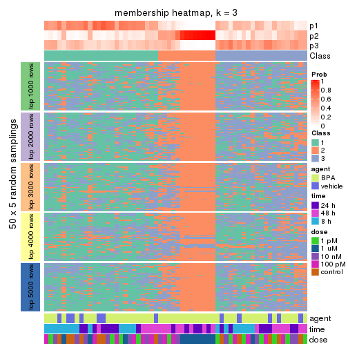
membership_heatmap(res, k = 4)
membership_heatmap(res, k = 5)
membership_heatmap(res, k = 6)
As soon as we have had the classes for columns, we can look for signatures which are significantly different between classes which can be candidate marks for certain classes. Following are the heatmaps for signatures.
Signature heatmaps where rows are scaled:
get_signatures(res, k = 2)
get_signatures(res, k = 3)

get_signatures(res, k = 4)

get_signatures(res, k = 5)

get_signatures(res, k = 6)

Signature heatmaps where rows are not scaled:
get_signatures(res, k = 2, scale_rows = FALSE)
get_signatures(res, k = 3, scale_rows = FALSE)

get_signatures(res, k = 4, scale_rows = FALSE)

get_signatures(res, k = 5, scale_rows = FALSE)

get_signatures(res, k = 6, scale_rows = FALSE)

Compare the overlap of signatures from different k:
compare_signatures(res)
get_signature() returns a data frame invisibly. TO get the list of signatures, the function
call should be assigned to a variable explicitly. In following code, if plot argument is set
to FALSE, no heatmap is plotted while only the differential analysis is performed.
# code only for demonstration
tb = get_signature(res, k = ..., plot = FALSE)
An example of the output of tb is:
#> which_row fdr mean_1 mean_2 scaled_mean_1 scaled_mean_2 km
#> 1 38 0.042760348 8.373488 9.131774 -0.5533452 0.5164555 1
#> 2 40 0.018707592 7.106213 8.469186 -0.6173731 0.5762149 1
#> 3 55 0.019134737 10.221463 11.207825 -0.6159697 0.5749050 1
#> 4 59 0.006059896 5.921854 7.869574 -0.6899429 0.6439467 1
#> 5 60 0.018055526 8.928898 10.211722 -0.6204761 0.5791110 1
#> 6 98 0.009384629 15.714769 14.887706 0.6635654 -0.6193277 2
...
The columns in tb are:
which_row: row indices corresponding to the input matrix.fdr: FDR for the differential test. mean_x: The mean value in group x.scaled_mean_x: The mean value in group x after rows are scaled.km: Row groups if k-means clustering is applied to rows.UMAP plot which shows how samples are separated.
dimension_reduction(res, k = 2, method = "UMAP")
dimension_reduction(res, k = 3, method = "UMAP")
dimension_reduction(res, k = 4, method = "UMAP")
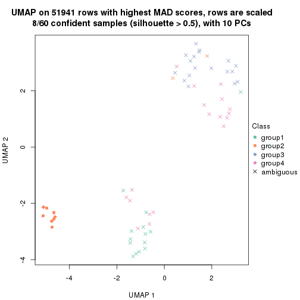
dimension_reduction(res, k = 5, method = "UMAP")
dimension_reduction(res, k = 6, method = "UMAP")
Following heatmap shows how subgroups are split when increasing k:
collect_classes(res)
Test correlation between subgroups and known annotations. If the known annotation is numeric, one-way ANOVA test is applied, and if the known annotation is discrete, chi-squared contingency table test is applied.
test_to_known_factors(res)
#> n agent(p) time(p) dose(p) k
#> MAD:skmeans 46 0.237 4.31e-06 0.0729 2
#> MAD:skmeans 9 NA NA NA 3
#> MAD:skmeans 8 NA NA NA 4
#> MAD:skmeans 8 NA NA NA 5
#> MAD:skmeans 8 NA NA NA 6
If matrix rows can be associated to genes, consider to use functional_enrichment(res,
...) to perform function enrichment for the signature genes. See this vignette for more detailed explanations.
The object with results only for a single top-value method and a single partition method can be extracted as:
res = res_list["MAD", "pam"]
# you can also extract it by
# res = res_list["MAD:pam"]
A summary of res and all the functions that can be applied to it:
res
#> A 'ConsensusPartition' object with k = 2, 3, 4, 5, 6.
#> On a matrix with 51941 rows and 60 columns.
#> Top rows (1000, 2000, 3000, 4000, 5000) are extracted by 'MAD' method.
#> Subgroups are detected by 'pam' method.
#> Performed in total 1250 partitions by row resampling.
#> Best k for subgroups seems to be 3.
#>
#> Following methods can be applied to this 'ConsensusPartition' object:
#> [1] "cola_report" "collect_classes" "collect_plots"
#> [4] "collect_stats" "colnames" "compare_signatures"
#> [7] "consensus_heatmap" "dimension_reduction" "functional_enrichment"
#> [10] "get_anno_col" "get_anno" "get_classes"
#> [13] "get_consensus" "get_matrix" "get_membership"
#> [16] "get_param" "get_signatures" "get_stats"
#> [19] "is_best_k" "is_stable_k" "membership_heatmap"
#> [22] "ncol" "nrow" "plot_ecdf"
#> [25] "rownames" "select_partition_number" "show"
#> [28] "suggest_best_k" "test_to_known_factors"
collect_plots() function collects all the plots made from res for all k (number of partitions)
into one single page to provide an easy and fast comparison between different k.
collect_plots(res)
The plots are:
k and the heatmap of
predicted classes for each k.k.k.k.All the plots in panels can be made by individual functions and they are plotted later in this section.
select_partition_number() produces several plots showing different
statistics for choosing “optimized” k. There are following statistics:
k;k, the area increased is defined as \(A_k - A_{k-1}\).The detailed explanations of these statistics can be found in the cola vignette.
Generally speaking, lower PAC score, higher mean silhouette score or higher
concordance corresponds to better partition. Rand index and Jaccard index
measure how similar the current partition is compared to partition with k-1.
If they are too similar, we won't accept k is better than k-1.
select_partition_number(res)
The numeric values for all these statistics can be obtained by get_stats().
get_stats(res)
#> k 1-PAC mean_silhouette concordance area_increased Rand Jaccard
#> 2 2 0.117 0.478 0.728 0.4442 0.497 0.497
#> 3 3 0.342 0.768 0.841 0.3773 0.736 0.539
#> 4 4 0.402 0.659 0.770 0.1736 0.869 0.675
#> 5 5 0.508 0.671 0.758 0.0675 0.938 0.799
#> 6 6 0.537 0.558 0.736 0.0231 0.946 0.799
suggest_best_k() suggests the best \(k\) based on these statistics. The rules are as follows:
suggest_best_k(res)
#> [1] 3
Following shows the table of the partitions (You need to click the show/hide
code output link to see it). The membership matrix (columns with name p*)
is inferred by
clue::cl_consensus()
function with the SE method. Basically the value in the membership matrix
represents the probability to belong to a certain group. The finall class
label for an item is determined with the group with highest probability it
belongs to.
In get_classes() function, the entropy is calculated from the membership
matrix and the silhouette score is calculated from the consensus matrix.
cbind(get_classes(res, k = 2), get_membership(res, k = 2))
#> class entropy silhouette p1 p2
#> GSM439987 1 0.7528 0.5442 0.784 0.216
#> GSM439988 1 0.3114 0.6983 0.944 0.056
#> GSM439989 1 0.8955 0.3466 0.688 0.312
#> GSM439990 1 0.0376 0.6903 0.996 0.004
#> GSM439991 2 0.8955 0.6416 0.312 0.688
#> GSM439992 1 0.4690 0.6848 0.900 0.100
#> GSM439993 1 0.4298 0.6896 0.912 0.088
#> GSM439994 2 0.9754 0.4246 0.408 0.592
#> GSM439995 2 0.6438 0.6276 0.164 0.836
#> GSM439996 1 0.9993 -0.1303 0.516 0.484
#> GSM439997 2 0.8207 0.6582 0.256 0.744
#> GSM439998 2 0.8555 0.6478 0.280 0.720
#> GSM440035 1 0.2423 0.6957 0.960 0.040
#> GSM440036 1 0.8763 0.4171 0.704 0.296
#> GSM440037 1 0.2948 0.6957 0.948 0.052
#> GSM440038 1 0.1414 0.6957 0.980 0.020
#> GSM440011 1 0.2948 0.6901 0.948 0.052
#> GSM440012 1 0.3431 0.6941 0.936 0.064
#> GSM440013 1 0.4690 0.6664 0.900 0.100
#> GSM440014 1 0.3584 0.6605 0.932 0.068
#> GSM439999 1 0.0376 0.6889 0.996 0.004
#> GSM440000 1 0.2423 0.6973 0.960 0.040
#> GSM440001 1 0.4161 0.6881 0.916 0.084
#> GSM440002 1 0.8661 0.3976 0.712 0.288
#> GSM440023 1 0.3733 0.6849 0.928 0.072
#> GSM440024 1 0.3584 0.6991 0.932 0.068
#> GSM440025 1 0.3584 0.6947 0.932 0.068
#> GSM440026 2 0.9170 0.6269 0.332 0.668
#> GSM440039 1 0.9427 0.2674 0.640 0.360
#> GSM440040 1 0.5294 0.6586 0.880 0.120
#> GSM440041 1 0.9977 -0.1823 0.528 0.472
#> GSM440042 1 0.8386 0.4850 0.732 0.268
#> GSM440015 1 0.9998 -0.2538 0.508 0.492
#> GSM440016 1 0.9732 0.0417 0.596 0.404
#> GSM440017 2 0.9358 0.5696 0.352 0.648
#> GSM440018 2 0.9248 0.6064 0.340 0.660
#> GSM440003 2 0.9491 0.5735 0.368 0.632
#> GSM440004 1 0.9710 0.1901 0.600 0.400
#> GSM440005 1 0.2423 0.6954 0.960 0.040
#> GSM440006 1 0.9460 0.2047 0.636 0.364
#> GSM440027 2 0.9775 0.0191 0.412 0.588
#> GSM440028 2 0.9866 -0.0215 0.432 0.568
#> GSM440029 2 0.9170 0.1879 0.332 0.668
#> GSM440030 2 0.2043 0.5207 0.032 0.968
#> GSM440043 2 0.8267 0.6550 0.260 0.740
#> GSM440044 2 0.8813 0.6316 0.300 0.700
#> GSM440045 2 0.8267 0.6541 0.260 0.740
#> GSM440046 2 0.8443 0.6549 0.272 0.728
#> GSM440019 1 0.9922 -0.0595 0.552 0.448
#> GSM440020 1 0.9998 -0.1743 0.508 0.492
#> GSM440021 2 0.9866 0.3675 0.432 0.568
#> GSM440022 2 0.9286 0.5860 0.344 0.656
#> GSM440007 2 0.8813 0.6420 0.300 0.700
#> GSM440008 2 0.8207 0.6555 0.256 0.744
#> GSM440009 2 0.8267 0.6349 0.260 0.740
#> GSM440010 2 0.9323 0.5721 0.348 0.652
#> GSM440031 2 0.9460 0.1256 0.364 0.636
#> GSM440032 2 0.1633 0.5224 0.024 0.976
#> GSM440033 2 0.2603 0.5136 0.044 0.956
#> GSM440034 2 0.8909 0.2372 0.308 0.692
cbind(get_classes(res, k = 3), get_membership(res, k = 3))
#> class entropy silhouette p1 p2 p3
#> GSM439987 1 0.4654 0.7193 0.792 0.000 0.208
#> GSM439988 1 0.3941 0.8053 0.844 0.000 0.156
#> GSM439989 1 0.6274 -0.0502 0.544 0.000 0.456
#> GSM439990 1 0.1163 0.8163 0.972 0.000 0.028
#> GSM439991 3 0.3752 0.8040 0.144 0.000 0.856
#> GSM439992 1 0.3482 0.8107 0.872 0.000 0.128
#> GSM439993 1 0.4178 0.7894 0.828 0.000 0.172
#> GSM439994 3 0.6082 0.5445 0.296 0.012 0.692
#> GSM439995 3 0.2056 0.8146 0.024 0.024 0.952
#> GSM439996 3 0.4121 0.7753 0.168 0.000 0.832
#> GSM439997 3 0.1860 0.8229 0.052 0.000 0.948
#> GSM439998 3 0.1289 0.8195 0.032 0.000 0.968
#> GSM440035 1 0.2356 0.8125 0.928 0.000 0.072
#> GSM440036 1 0.5098 0.6867 0.752 0.000 0.248
#> GSM440037 1 0.3412 0.8158 0.876 0.000 0.124
#> GSM440038 1 0.2448 0.8282 0.924 0.000 0.076
#> GSM440011 1 0.2096 0.8192 0.944 0.004 0.052
#> GSM440012 1 0.3879 0.8052 0.848 0.000 0.152
#> GSM440013 1 0.4291 0.7632 0.820 0.000 0.180
#> GSM440014 1 0.1267 0.8098 0.972 0.004 0.024
#> GSM439999 1 0.0237 0.8090 0.996 0.000 0.004
#> GSM440000 1 0.2537 0.8259 0.920 0.000 0.080
#> GSM440001 1 0.3752 0.8111 0.856 0.000 0.144
#> GSM440002 1 0.5016 0.7010 0.760 0.000 0.240
#> GSM440023 1 0.4489 0.8126 0.856 0.036 0.108
#> GSM440024 1 0.3267 0.8275 0.884 0.000 0.116
#> GSM440025 1 0.3816 0.8064 0.852 0.000 0.148
#> GSM440026 3 0.4291 0.8010 0.152 0.008 0.840
#> GSM440039 1 0.6111 0.5140 0.604 0.000 0.396
#> GSM440040 1 0.4235 0.7664 0.824 0.000 0.176
#> GSM440041 3 0.5431 0.7185 0.284 0.000 0.716
#> GSM440042 1 0.5529 0.7181 0.704 0.000 0.296
#> GSM440015 3 0.6062 0.3913 0.384 0.000 0.616
#> GSM440016 3 0.6295 0.3172 0.472 0.000 0.528
#> GSM440017 3 0.3918 0.8102 0.140 0.004 0.856
#> GSM440018 3 0.4834 0.7426 0.204 0.004 0.792
#> GSM440003 3 0.4235 0.7813 0.176 0.000 0.824
#> GSM440004 1 0.6274 0.4702 0.544 0.000 0.456
#> GSM440005 1 0.2796 0.8238 0.908 0.000 0.092
#> GSM440006 3 0.6215 0.4166 0.428 0.000 0.572
#> GSM440027 2 0.0000 0.9941 0.000 1.000 0.000
#> GSM440028 2 0.0983 0.9832 0.004 0.980 0.016
#> GSM440029 2 0.0000 0.9941 0.000 1.000 0.000
#> GSM440030 2 0.0592 0.9873 0.000 0.988 0.012
#> GSM440043 3 0.0892 0.8149 0.020 0.000 0.980
#> GSM440044 3 0.1289 0.8203 0.032 0.000 0.968
#> GSM440045 3 0.1163 0.8173 0.028 0.000 0.972
#> GSM440046 3 0.1163 0.8196 0.028 0.000 0.972
#> GSM440019 3 0.5431 0.6701 0.284 0.000 0.716
#> GSM440020 3 0.4504 0.7518 0.196 0.000 0.804
#> GSM440021 3 0.4178 0.7775 0.172 0.000 0.828
#> GSM440022 3 0.3896 0.7749 0.128 0.008 0.864
#> GSM440007 3 0.2796 0.8135 0.092 0.000 0.908
#> GSM440008 3 0.1163 0.8178 0.028 0.000 0.972
#> GSM440009 3 0.6622 0.7551 0.164 0.088 0.748
#> GSM440010 3 0.3771 0.8201 0.112 0.012 0.876
#> GSM440031 2 0.0000 0.9941 0.000 1.000 0.000
#> GSM440032 2 0.0000 0.9941 0.000 1.000 0.000
#> GSM440033 2 0.0424 0.9904 0.000 0.992 0.008
#> GSM440034 2 0.0000 0.9941 0.000 1.000 0.000
cbind(get_classes(res, k = 4), get_membership(res, k = 4))
#> class entropy silhouette p1 p2 p3 p4
#> GSM439987 1 0.7058 0.49567 0.572 0.000 0.200 0.228
#> GSM439988 1 0.3498 0.78456 0.832 0.000 0.160 0.008
#> GSM439989 3 0.6686 0.23984 0.388 0.000 0.520 0.092
#> GSM439990 1 0.1724 0.79837 0.948 0.000 0.020 0.032
#> GSM439991 3 0.6560 0.16659 0.076 0.000 0.464 0.460
#> GSM439992 1 0.4037 0.78178 0.832 0.000 0.112 0.056
#> GSM439993 1 0.5132 0.75453 0.748 0.000 0.184 0.068
#> GSM439994 4 0.4475 0.68562 0.080 0.004 0.100 0.816
#> GSM439995 4 0.5678 0.00507 0.004 0.016 0.480 0.500
#> GSM439996 3 0.3399 0.62728 0.040 0.000 0.868 0.092
#> GSM439997 3 0.5010 0.59580 0.024 0.000 0.700 0.276
#> GSM439998 3 0.3958 0.64314 0.024 0.000 0.816 0.160
#> GSM440035 1 0.3818 0.78397 0.844 0.000 0.048 0.108
#> GSM440036 1 0.7184 0.40955 0.524 0.000 0.160 0.316
#> GSM440037 1 0.3617 0.79724 0.860 0.000 0.064 0.076
#> GSM440038 1 0.2739 0.80858 0.904 0.000 0.060 0.036
#> GSM440011 1 0.2988 0.78381 0.876 0.000 0.012 0.112
#> GSM440012 1 0.3271 0.79316 0.856 0.000 0.132 0.012
#> GSM440013 1 0.6040 0.54058 0.648 0.000 0.080 0.272
#> GSM440014 1 0.3245 0.78920 0.880 0.000 0.064 0.056
#> GSM439999 1 0.1635 0.79269 0.948 0.000 0.008 0.044
#> GSM440000 1 0.2300 0.80543 0.924 0.000 0.048 0.028
#> GSM440001 1 0.6788 0.62023 0.608 0.000 0.204 0.188
#> GSM440002 4 0.4502 0.58197 0.236 0.000 0.016 0.748
#> GSM440023 1 0.3978 0.79897 0.856 0.032 0.084 0.028
#> GSM440024 1 0.3978 0.78591 0.796 0.000 0.192 0.012
#> GSM440025 1 0.3547 0.78768 0.840 0.000 0.144 0.016
#> GSM440026 4 0.5420 0.63518 0.048 0.008 0.220 0.724
#> GSM440039 4 0.5018 0.67187 0.144 0.000 0.088 0.768
#> GSM440040 1 0.4746 0.72751 0.776 0.000 0.168 0.056
#> GSM440041 3 0.5470 0.61203 0.168 0.000 0.732 0.100
#> GSM440042 1 0.6123 0.40893 0.572 0.000 0.056 0.372
#> GSM440015 4 0.4940 0.69107 0.128 0.000 0.096 0.776
#> GSM440016 3 0.6701 0.32342 0.328 0.000 0.564 0.108
#> GSM440017 3 0.3279 0.63907 0.032 0.000 0.872 0.096
#> GSM440018 3 0.7156 0.45107 0.184 0.004 0.576 0.236
#> GSM440003 3 0.6248 0.43735 0.104 0.000 0.644 0.252
#> GSM440004 4 0.4890 0.68474 0.080 0.000 0.144 0.776
#> GSM440005 1 0.3501 0.80162 0.848 0.000 0.132 0.020
#> GSM440006 3 0.5420 0.44522 0.352 0.000 0.624 0.024
#> GSM440027 2 0.0000 0.99172 0.000 1.000 0.000 0.000
#> GSM440028 2 0.0844 0.98035 0.004 0.980 0.004 0.012
#> GSM440029 2 0.0000 0.99172 0.000 1.000 0.000 0.000
#> GSM440030 2 0.0469 0.98445 0.000 0.988 0.000 0.012
#> GSM440043 3 0.4981 0.31370 0.000 0.000 0.536 0.464
#> GSM440044 3 0.3052 0.63564 0.004 0.000 0.860 0.136
#> GSM440045 3 0.3498 0.62558 0.008 0.000 0.832 0.160
#> GSM440046 4 0.4720 0.51034 0.004 0.000 0.324 0.672
#> GSM440019 3 0.4136 0.60393 0.196 0.000 0.788 0.016
#> GSM440020 3 0.4834 0.62499 0.120 0.000 0.784 0.096
#> GSM440021 3 0.4301 0.63809 0.120 0.000 0.816 0.064
#> GSM440022 3 0.6726 0.29676 0.100 0.000 0.536 0.364
#> GSM440007 3 0.5212 0.62810 0.068 0.000 0.740 0.192
#> GSM440008 3 0.4855 0.55456 0.020 0.000 0.712 0.268
#> GSM440009 3 0.6442 0.59579 0.068 0.076 0.716 0.140
#> GSM440010 3 0.5212 0.64336 0.080 0.004 0.760 0.156
#> GSM440031 2 0.0000 0.99172 0.000 1.000 0.000 0.000
#> GSM440032 2 0.0000 0.99172 0.000 1.000 0.000 0.000
#> GSM440033 2 0.0779 0.97831 0.004 0.980 0.000 0.016
#> GSM440034 2 0.0000 0.99172 0.000 1.000 0.000 0.000
cbind(get_classes(res, k = 5), get_membership(res, k = 5))
#> class entropy silhouette p1 p2 p3 p4 p5
#> GSM439987 5 0.3498 0.74919 0.132 0.000 0.024 0.012 0.832
#> GSM439988 1 0.2929 0.78220 0.840 0.000 0.152 0.008 0.000
#> GSM439989 3 0.6598 0.26613 0.368 0.000 0.488 0.024 0.120
#> GSM439990 1 0.1952 0.79535 0.912 0.000 0.000 0.004 0.084
#> GSM439991 5 0.5753 0.41892 0.016 0.000 0.136 0.188 0.660
#> GSM439992 1 0.4113 0.76758 0.820 0.000 0.084 0.044 0.052
#> GSM439993 1 0.5279 0.69918 0.724 0.000 0.140 0.028 0.108
#> GSM439994 4 0.3833 0.68145 0.040 0.000 0.096 0.832 0.032
#> GSM439995 3 0.5596 0.00698 0.008 0.020 0.500 0.452 0.020
#> GSM439996 3 0.5272 0.63895 0.044 0.000 0.720 0.060 0.176
#> GSM439997 3 0.4899 0.61583 0.020 0.000 0.736 0.180 0.064
#> GSM439998 3 0.2736 0.66849 0.024 0.000 0.892 0.068 0.016
#> GSM440035 1 0.5016 0.71007 0.732 0.000 0.016 0.092 0.160
#> GSM440036 5 0.4642 0.72599 0.120 0.000 0.044 0.056 0.780
#> GSM440037 1 0.2378 0.80409 0.908 0.000 0.064 0.016 0.012
#> GSM440038 1 0.2075 0.80611 0.924 0.000 0.032 0.004 0.040
#> GSM440011 1 0.4734 0.67752 0.732 0.000 0.020 0.040 0.208
#> GSM440012 1 0.2177 0.80017 0.908 0.000 0.080 0.008 0.004
#> GSM440013 1 0.6404 0.42537 0.560 0.000 0.088 0.312 0.040
#> GSM440014 1 0.3626 0.76945 0.816 0.000 0.012 0.020 0.152
#> GSM439999 1 0.2548 0.78365 0.876 0.000 0.004 0.004 0.116
#> GSM440000 1 0.1653 0.80396 0.944 0.000 0.024 0.028 0.004
#> GSM440001 5 0.4483 0.72353 0.156 0.000 0.052 0.020 0.772
#> GSM440002 4 0.6806 0.32562 0.100 0.000 0.060 0.536 0.304
#> GSM440023 1 0.3006 0.80367 0.888 0.020 0.056 0.028 0.008
#> GSM440024 1 0.4375 0.72185 0.768 0.000 0.072 0.004 0.156
#> GSM440025 1 0.3122 0.79296 0.852 0.004 0.120 0.024 0.000
#> GSM440026 4 0.5947 0.59867 0.024 0.012 0.212 0.664 0.088
#> GSM440039 4 0.5785 0.64391 0.096 0.000 0.088 0.704 0.112
#> GSM440040 1 0.4657 0.69926 0.756 0.000 0.172 0.024 0.048
#> GSM440041 3 0.6393 0.62883 0.144 0.000 0.636 0.060 0.160
#> GSM440042 1 0.6288 0.45077 0.584 0.000 0.100 0.284 0.032
#> GSM440015 4 0.4930 0.67411 0.060 0.000 0.084 0.768 0.088
#> GSM440016 3 0.8030 0.34644 0.228 0.000 0.424 0.120 0.228
#> GSM440017 3 0.4471 0.63785 0.016 0.000 0.752 0.036 0.196
#> GSM440018 3 0.6392 0.48505 0.200 0.004 0.588 0.196 0.012
#> GSM440003 3 0.6079 0.48847 0.052 0.000 0.644 0.220 0.084
#> GSM440004 4 0.3934 0.69582 0.060 0.000 0.104 0.820 0.016
#> GSM440005 1 0.4089 0.77751 0.804 0.000 0.100 0.008 0.088
#> GSM440006 3 0.5739 0.48640 0.308 0.000 0.596 0.008 0.088
#> GSM440027 2 0.0000 0.98941 0.000 1.000 0.000 0.000 0.000
#> GSM440028 2 0.1016 0.97828 0.008 0.972 0.004 0.012 0.004
#> GSM440029 2 0.0000 0.98941 0.000 1.000 0.000 0.000 0.000
#> GSM440030 2 0.0727 0.98099 0.000 0.980 0.004 0.012 0.004
#> GSM440043 3 0.4450 0.30519 0.000 0.000 0.508 0.488 0.004
#> GSM440044 3 0.3463 0.64848 0.016 0.000 0.820 0.156 0.008
#> GSM440045 3 0.2784 0.65398 0.016 0.000 0.872 0.108 0.004
#> GSM440046 4 0.3205 0.66107 0.004 0.000 0.176 0.816 0.004
#> GSM440019 3 0.4280 0.63129 0.192 0.000 0.764 0.016 0.028
#> GSM440020 3 0.4316 0.64300 0.120 0.000 0.772 0.108 0.000
#> GSM440021 3 0.3242 0.65633 0.116 0.000 0.844 0.040 0.000
#> GSM440022 3 0.5825 0.28728 0.080 0.000 0.488 0.428 0.004
#> GSM440007 3 0.4843 0.64616 0.020 0.000 0.756 0.120 0.104
#> GSM440008 3 0.4037 0.61044 0.028 0.000 0.776 0.188 0.008
#> GSM440009 3 0.6910 0.62840 0.056 0.068 0.652 0.100 0.124
#> GSM440010 3 0.5502 0.64340 0.064 0.000 0.700 0.188 0.048
#> GSM440031 2 0.0324 0.98753 0.000 0.992 0.000 0.004 0.004
#> GSM440032 2 0.0000 0.98941 0.000 1.000 0.000 0.000 0.000
#> GSM440033 2 0.0833 0.97402 0.004 0.976 0.000 0.016 0.004
#> GSM440034 2 0.0000 0.98941 0.000 1.000 0.000 0.000 0.000
cbind(get_classes(res, k = 6), get_membership(res, k = 6))
#> class entropy silhouette p1 p2 p3 p4 p5 p6
#> GSM439987 6 0.262 0.7251 0.104 0.000 0.008 0.004 0.012 0.872
#> GSM439988 1 0.277 0.7741 0.816 0.000 0.180 0.004 0.000 0.000
#> GSM439989 3 0.673 0.0503 0.352 0.000 0.460 0.012 0.092 0.084
#> GSM439990 1 0.219 0.7909 0.904 0.000 0.000 0.004 0.060 0.032
#> GSM439991 6 0.517 0.5193 0.020 0.000 0.092 0.116 0.048 0.724
#> GSM439992 1 0.442 0.7516 0.788 0.000 0.076 0.020 0.056 0.060
#> GSM439993 1 0.528 0.6921 0.704 0.000 0.104 0.004 0.076 0.112
#> GSM439994 4 0.356 0.4902 0.024 0.000 0.064 0.844 0.036 0.032
#> GSM439995 4 0.595 0.0112 0.008 0.016 0.432 0.464 0.064 0.016
#> GSM439996 3 0.554 0.4387 0.028 0.000 0.680 0.040 0.076 0.176
#> GSM439997 3 0.520 0.4112 0.012 0.000 0.712 0.144 0.076 0.056
#> GSM439998 3 0.291 0.4892 0.012 0.000 0.876 0.052 0.048 0.012
#> GSM440035 1 0.540 0.6898 0.700 0.000 0.012 0.096 0.064 0.128
#> GSM440036 6 0.529 0.6524 0.072 0.000 0.024 0.036 0.168 0.700
#> GSM440037 1 0.209 0.7996 0.920 0.000 0.032 0.008 0.032 0.008
#> GSM440038 1 0.226 0.8019 0.912 0.000 0.028 0.004 0.020 0.036
#> GSM440011 1 0.480 0.6872 0.724 0.000 0.016 0.036 0.040 0.184
#> GSM440012 1 0.159 0.7956 0.924 0.000 0.072 0.000 0.000 0.004
#> GSM440013 1 0.627 0.4013 0.528 0.000 0.076 0.328 0.048 0.020
#> GSM440014 1 0.408 0.7588 0.788 0.000 0.004 0.020 0.084 0.104
#> GSM439999 1 0.290 0.7841 0.868 0.000 0.004 0.008 0.048 0.072
#> GSM440000 1 0.171 0.7967 0.940 0.000 0.016 0.024 0.012 0.008
#> GSM440001 6 0.411 0.6953 0.124 0.000 0.024 0.008 0.056 0.788
#> GSM440002 4 0.778 0.1086 0.112 0.000 0.064 0.456 0.144 0.224
#> GSM440023 1 0.307 0.8016 0.876 0.012 0.048 0.012 0.040 0.012
#> GSM440024 1 0.399 0.7122 0.772 0.000 0.056 0.004 0.008 0.160
#> GSM440025 1 0.322 0.7869 0.828 0.004 0.136 0.008 0.024 0.000
#> GSM440026 4 0.657 0.3836 0.024 0.008 0.212 0.592 0.088 0.076
#> GSM440039 4 0.579 0.4314 0.080 0.000 0.060 0.680 0.040 0.140
#> GSM440040 1 0.502 0.6931 0.720 0.000 0.144 0.008 0.084 0.044
#> GSM440041 3 0.635 0.4405 0.132 0.000 0.624 0.040 0.060 0.144
#> GSM440042 1 0.720 0.4154 0.540 0.000 0.088 0.184 0.128 0.060
#> GSM440015 4 0.486 0.4667 0.056 0.000 0.064 0.760 0.088 0.032
#> GSM440016 3 0.764 0.1568 0.236 0.000 0.412 0.124 0.020 0.208
#> GSM440017 3 0.510 0.4339 0.012 0.000 0.680 0.020 0.072 0.216
#> GSM440018 3 0.633 0.2783 0.204 0.004 0.592 0.136 0.052 0.012
#> GSM440003 3 0.592 0.1997 0.052 0.000 0.636 0.212 0.028 0.072
#> GSM440004 4 0.469 0.4872 0.060 0.000 0.108 0.760 0.060 0.012
#> GSM440005 1 0.427 0.7732 0.784 0.000 0.100 0.008 0.032 0.076
#> GSM440006 3 0.563 0.2791 0.292 0.000 0.588 0.000 0.056 0.064
#> GSM440027 2 0.000 0.9729 0.000 1.000 0.000 0.000 0.000 0.000
#> GSM440028 2 0.177 0.9568 0.008 0.932 0.000 0.012 0.044 0.004
#> GSM440029 2 0.000 0.9729 0.000 1.000 0.000 0.000 0.000 0.000
#> GSM440030 2 0.155 0.9599 0.000 0.940 0.004 0.008 0.044 0.004
#> GSM440043 4 0.459 -0.1151 0.000 0.000 0.476 0.488 0.036 0.000
#> GSM440044 3 0.350 0.4398 0.012 0.000 0.804 0.160 0.012 0.012
#> GSM440045 3 0.211 0.4823 0.012 0.000 0.900 0.084 0.000 0.004
#> GSM440046 4 0.316 0.4877 0.000 0.000 0.144 0.824 0.024 0.008
#> GSM440019 3 0.372 0.4516 0.176 0.000 0.784 0.008 0.012 0.020
#> GSM440020 3 0.361 0.4428 0.096 0.000 0.796 0.108 0.000 0.000
#> GSM440021 3 0.246 0.4885 0.096 0.000 0.876 0.028 0.000 0.000
#> GSM440022 4 0.570 -0.0390 0.068 0.000 0.444 0.452 0.036 0.000
#> GSM440007 5 0.543 0.0000 0.008 0.000 0.400 0.056 0.520 0.016
#> GSM440008 3 0.393 0.4283 0.012 0.000 0.780 0.156 0.048 0.004
#> GSM440009 3 0.664 0.4158 0.056 0.064 0.644 0.076 0.032 0.128
#> GSM440010 3 0.576 0.4028 0.036 0.000 0.668 0.168 0.088 0.040
#> GSM440031 2 0.130 0.9629 0.000 0.948 0.000 0.004 0.044 0.004
#> GSM440032 2 0.000 0.9729 0.000 1.000 0.000 0.000 0.000 0.000
#> GSM440033 2 0.133 0.9492 0.000 0.948 0.000 0.020 0.032 0.000
#> GSM440034 2 0.000 0.9729 0.000 1.000 0.000 0.000 0.000 0.000
Heatmaps for the consensus matrix. It visualizes the probability of two samples to be in a same group.
consensus_heatmap(res, k = 2)
consensus_heatmap(res, k = 3)
consensus_heatmap(res, k = 4)
consensus_heatmap(res, k = 5)
consensus_heatmap(res, k = 6)
Heatmaps for the membership of samples in all partitions to see how consistent they are:
membership_heatmap(res, k = 2)
membership_heatmap(res, k = 3)
membership_heatmap(res, k = 4)
membership_heatmap(res, k = 5)
membership_heatmap(res, k = 6)
As soon as we have had the classes for columns, we can look for signatures which are significantly different between classes which can be candidate marks for certain classes. Following are the heatmaps for signatures.
Signature heatmaps where rows are scaled:
get_signatures(res, k = 2)
get_signatures(res, k = 3)
get_signatures(res, k = 4)
get_signatures(res, k = 5)
get_signatures(res, k = 6)
Signature heatmaps where rows are not scaled:
get_signatures(res, k = 2, scale_rows = FALSE)
get_signatures(res, k = 3, scale_rows = FALSE)
get_signatures(res, k = 4, scale_rows = FALSE)
get_signatures(res, k = 5, scale_rows = FALSE)
get_signatures(res, k = 6, scale_rows = FALSE)
Compare the overlap of signatures from different k:
compare_signatures(res)
get_signature() returns a data frame invisibly. TO get the list of signatures, the function
call should be assigned to a variable explicitly. In following code, if plot argument is set
to FALSE, no heatmap is plotted while only the differential analysis is performed.
# code only for demonstration
tb = get_signature(res, k = ..., plot = FALSE)
An example of the output of tb is:
#> which_row fdr mean_1 mean_2 scaled_mean_1 scaled_mean_2 km
#> 1 38 0.042760348 8.373488 9.131774 -0.5533452 0.5164555 1
#> 2 40 0.018707592 7.106213 8.469186 -0.6173731 0.5762149 1
#> 3 55 0.019134737 10.221463 11.207825 -0.6159697 0.5749050 1
#> 4 59 0.006059896 5.921854 7.869574 -0.6899429 0.6439467 1
#> 5 60 0.018055526 8.928898 10.211722 -0.6204761 0.5791110 1
#> 6 98 0.009384629 15.714769 14.887706 0.6635654 -0.6193277 2
...
The columns in tb are:
which_row: row indices corresponding to the input matrix.fdr: FDR for the differential test. mean_x: The mean value in group x.scaled_mean_x: The mean value in group x after rows are scaled.km: Row groups if k-means clustering is applied to rows.UMAP plot which shows how samples are separated.
dimension_reduction(res, k = 2, method = "UMAP")
dimension_reduction(res, k = 3, method = "UMAP")
dimension_reduction(res, k = 4, method = "UMAP")
dimension_reduction(res, k = 5, method = "UMAP")
dimension_reduction(res, k = 6, method = "UMAP")
Following heatmap shows how subgroups are split when increasing k:
collect_classes(res)
Test correlation between subgroups and known annotations. If the known annotation is numeric, one-way ANOVA test is applied, and if the known annotation is discrete, chi-squared contingency table test is applied.
test_to_known_factors(res)
#> n agent(p) time(p) dose(p) k
#> MAD:pam 40 1.000 1.15e-06 9.73e-01 2
#> MAD:pam 55 0.280 1.28e-07 2.74e-05 3
#> MAD:pam 48 0.548 3.31e-07 2.10e-03 4
#> MAD:pam 48 0.626 4.83e-07 7.57e-03 5
#> MAD:pam 29 0.119 1.30e-03 8.46e-03 6
If matrix rows can be associated to genes, consider to use functional_enrichment(res,
...) to perform function enrichment for the signature genes. See this vignette for more detailed explanations.
The object with results only for a single top-value method and a single partition method can be extracted as:
res = res_list["MAD", "mclust"]
# you can also extract it by
# res = res_list["MAD:mclust"]
A summary of res and all the functions that can be applied to it:
res
#> A 'ConsensusPartition' object with k = 2, 3, 4, 5, 6.
#> On a matrix with 51941 rows and 60 columns.
#> Top rows (1000, 2000, 3000, 4000, 5000) are extracted by 'MAD' method.
#> Subgroups are detected by 'mclust' method.
#> Performed in total 1250 partitions by row resampling.
#> Best k for subgroups seems to be 2.
#>
#> Following methods can be applied to this 'ConsensusPartition' object:
#> [1] "cola_report" "collect_classes" "collect_plots"
#> [4] "collect_stats" "colnames" "compare_signatures"
#> [7] "consensus_heatmap" "dimension_reduction" "functional_enrichment"
#> [10] "get_anno_col" "get_anno" "get_classes"
#> [13] "get_consensus" "get_matrix" "get_membership"
#> [16] "get_param" "get_signatures" "get_stats"
#> [19] "is_best_k" "is_stable_k" "membership_heatmap"
#> [22] "ncol" "nrow" "plot_ecdf"
#> [25] "rownames" "select_partition_number" "show"
#> [28] "suggest_best_k" "test_to_known_factors"
collect_plots() function collects all the plots made from res for all k (number of partitions)
into one single page to provide an easy and fast comparison between different k.
collect_plots(res)
The plots are:
k and the heatmap of
predicted classes for each k.k.k.k.All the plots in panels can be made by individual functions and they are plotted later in this section.
select_partition_number() produces several plots showing different
statistics for choosing “optimized” k. There are following statistics:
k;k, the area increased is defined as \(A_k - A_{k-1}\).The detailed explanations of these statistics can be found in the cola vignette.
Generally speaking, lower PAC score, higher mean silhouette score or higher
concordance corresponds to better partition. Rand index and Jaccard index
measure how similar the current partition is compared to partition with k-1.
If they are too similar, we won't accept k is better than k-1.
select_partition_number(res)
The numeric values for all these statistics can be obtained by get_stats().
get_stats(res)
#> k 1-PAC mean_silhouette concordance area_increased Rand Jaccard
#> 2 2 1.000 0.999 1.000 0.2361 0.765 0.765
#> 3 3 0.489 0.735 0.855 1.5347 0.623 0.507
#> 4 4 0.624 0.769 0.871 0.2160 0.756 0.451
#> 5 5 0.638 0.700 0.795 0.0782 0.960 0.846
#> 6 6 0.721 0.672 0.801 0.0550 0.921 0.657
suggest_best_k() suggests the best \(k\) based on these statistics. The rules are as follows:
suggest_best_k(res)
#> [1] 2
Following shows the table of the partitions (You need to click the show/hide
code output link to see it). The membership matrix (columns with name p*)
is inferred by
clue::cl_consensus()
function with the SE method. Basically the value in the membership matrix
represents the probability to belong to a certain group. The finall class
label for an item is determined with the group with highest probability it
belongs to.
In get_classes() function, the entropy is calculated from the membership
matrix and the silhouette score is calculated from the consensus matrix.
cbind(get_classes(res, k = 2), get_membership(res, k = 2))
#> class entropy silhouette p1 p2
#> GSM439987 1 0.0000 1.000 1.000 0.000
#> GSM439988 1 0.0000 1.000 1.000 0.000
#> GSM439989 1 0.0000 1.000 1.000 0.000
#> GSM439990 1 0.0000 1.000 1.000 0.000
#> GSM439991 1 0.0000 1.000 1.000 0.000
#> GSM439992 1 0.0000 1.000 1.000 0.000
#> GSM439993 1 0.0000 1.000 1.000 0.000
#> GSM439994 1 0.0000 1.000 1.000 0.000
#> GSM439995 1 0.0000 1.000 1.000 0.000
#> GSM439996 1 0.0000 1.000 1.000 0.000
#> GSM439997 1 0.0000 1.000 1.000 0.000
#> GSM439998 1 0.0000 1.000 1.000 0.000
#> GSM440035 1 0.0000 1.000 1.000 0.000
#> GSM440036 1 0.0000 1.000 1.000 0.000
#> GSM440037 1 0.0000 1.000 1.000 0.000
#> GSM440038 1 0.0000 1.000 1.000 0.000
#> GSM440011 1 0.0000 1.000 1.000 0.000
#> GSM440012 1 0.0000 1.000 1.000 0.000
#> GSM440013 1 0.0000 1.000 1.000 0.000
#> GSM440014 1 0.0000 1.000 1.000 0.000
#> GSM439999 1 0.0000 1.000 1.000 0.000
#> GSM440000 1 0.0000 1.000 1.000 0.000
#> GSM440001 1 0.0000 1.000 1.000 0.000
#> GSM440002 1 0.0000 1.000 1.000 0.000
#> GSM440023 1 0.0376 0.996 0.996 0.004
#> GSM440024 1 0.0000 1.000 1.000 0.000
#> GSM440025 1 0.0000 1.000 1.000 0.000
#> GSM440026 1 0.0000 1.000 1.000 0.000
#> GSM440039 1 0.0000 1.000 1.000 0.000
#> GSM440040 1 0.0000 1.000 1.000 0.000
#> GSM440041 1 0.0000 1.000 1.000 0.000
#> GSM440042 1 0.0000 1.000 1.000 0.000
#> GSM440015 1 0.0000 1.000 1.000 0.000
#> GSM440016 1 0.0000 1.000 1.000 0.000
#> GSM440017 1 0.0000 1.000 1.000 0.000
#> GSM440018 1 0.0000 1.000 1.000 0.000
#> GSM440003 1 0.0000 1.000 1.000 0.000
#> GSM440004 1 0.0000 1.000 1.000 0.000
#> GSM440005 1 0.0000 1.000 1.000 0.000
#> GSM440006 1 0.0000 1.000 1.000 0.000
#> GSM440027 2 0.0000 1.000 0.000 1.000
#> GSM440028 2 0.0000 1.000 0.000 1.000
#> GSM440029 2 0.0000 1.000 0.000 1.000
#> GSM440030 2 0.0000 1.000 0.000 1.000
#> GSM440043 1 0.0000 1.000 1.000 0.000
#> GSM440044 1 0.0000 1.000 1.000 0.000
#> GSM440045 1 0.0000 1.000 1.000 0.000
#> GSM440046 1 0.0000 1.000 1.000 0.000
#> GSM440019 1 0.0000 1.000 1.000 0.000
#> GSM440020 1 0.0000 1.000 1.000 0.000
#> GSM440021 1 0.0000 1.000 1.000 0.000
#> GSM440022 1 0.0000 1.000 1.000 0.000
#> GSM440007 1 0.0000 1.000 1.000 0.000
#> GSM440008 1 0.0672 0.992 0.992 0.008
#> GSM440009 1 0.0376 0.996 0.996 0.004
#> GSM440010 1 0.0000 1.000 1.000 0.000
#> GSM440031 2 0.0000 1.000 0.000 1.000
#> GSM440032 2 0.0000 1.000 0.000 1.000
#> GSM440033 2 0.0000 1.000 0.000 1.000
#> GSM440034 2 0.0000 1.000 0.000 1.000
cbind(get_classes(res, k = 3), get_membership(res, k = 3))
#> class entropy silhouette p1 p2 p3
#> GSM439987 1 0.1031 0.762 0.976 0.000 0.024
#> GSM439988 1 0.5098 0.746 0.752 0.000 0.248
#> GSM439989 1 0.1753 0.773 0.952 0.000 0.048
#> GSM439990 1 0.0747 0.763 0.984 0.000 0.016
#> GSM439991 1 0.2711 0.730 0.912 0.000 0.088
#> GSM439992 1 0.4062 0.766 0.836 0.000 0.164
#> GSM439993 1 0.5968 0.634 0.636 0.000 0.364
#> GSM439994 3 0.5621 0.589 0.308 0.000 0.692
#> GSM439995 3 0.0237 0.812 0.004 0.000 0.996
#> GSM439996 1 0.6309 0.329 0.504 0.000 0.496
#> GSM439997 3 0.0000 0.812 0.000 0.000 1.000
#> GSM439998 3 0.2448 0.774 0.076 0.000 0.924
#> GSM440035 1 0.1753 0.770 0.952 0.000 0.048
#> GSM440036 1 0.1411 0.770 0.964 0.000 0.036
#> GSM440037 1 0.5216 0.737 0.740 0.000 0.260
#> GSM440038 1 0.3116 0.719 0.892 0.000 0.108
#> GSM440011 1 0.1031 0.762 0.976 0.000 0.024
#> GSM440012 1 0.5621 0.702 0.692 0.000 0.308
#> GSM440013 1 0.1860 0.768 0.948 0.000 0.052
#> GSM440014 1 0.0892 0.762 0.980 0.000 0.020
#> GSM439999 1 0.0892 0.762 0.980 0.000 0.020
#> GSM440000 1 0.5291 0.729 0.732 0.000 0.268
#> GSM440001 1 0.0892 0.762 0.980 0.000 0.020
#> GSM440002 1 0.1031 0.762 0.976 0.000 0.024
#> GSM440023 1 0.5431 0.731 0.716 0.000 0.284
#> GSM440024 1 0.5254 0.731 0.736 0.000 0.264
#> GSM440025 1 0.6154 0.579 0.592 0.000 0.408
#> GSM440026 1 0.4931 0.524 0.768 0.000 0.232
#> GSM440039 3 0.6204 0.424 0.424 0.000 0.576
#> GSM440040 1 0.5254 0.736 0.736 0.000 0.264
#> GSM440041 1 0.6126 0.575 0.600 0.000 0.400
#> GSM440042 3 0.6062 0.486 0.384 0.000 0.616
#> GSM440015 3 0.5882 0.557 0.348 0.000 0.652
#> GSM440016 3 0.5948 0.239 0.360 0.000 0.640
#> GSM440017 1 0.5926 0.650 0.644 0.000 0.356
#> GSM440018 3 0.0592 0.812 0.012 0.000 0.988
#> GSM440003 3 0.4555 0.707 0.200 0.000 0.800
#> GSM440004 3 0.5016 0.644 0.240 0.000 0.760
#> GSM440005 1 0.5138 0.739 0.748 0.000 0.252
#> GSM440006 1 0.5138 0.743 0.748 0.000 0.252
#> GSM440027 2 0.0000 1.000 0.000 1.000 0.000
#> GSM440028 2 0.0000 1.000 0.000 1.000 0.000
#> GSM440029 2 0.0000 1.000 0.000 1.000 0.000
#> GSM440030 2 0.0000 1.000 0.000 1.000 0.000
#> GSM440043 3 0.0000 0.812 0.000 0.000 1.000
#> GSM440044 3 0.2165 0.790 0.064 0.000 0.936
#> GSM440045 3 0.0237 0.811 0.004 0.000 0.996
#> GSM440046 3 0.0237 0.812 0.004 0.000 0.996
#> GSM440019 3 0.5988 0.202 0.368 0.000 0.632
#> GSM440020 3 0.0237 0.812 0.004 0.000 0.996
#> GSM440021 3 0.0592 0.811 0.012 0.000 0.988
#> GSM440022 3 0.0237 0.811 0.004 0.000 0.996
#> GSM440007 3 0.3267 0.765 0.116 0.000 0.884
#> GSM440008 3 0.0237 0.812 0.000 0.004 0.996
#> GSM440009 3 0.1289 0.806 0.032 0.000 0.968
#> GSM440010 3 0.5397 0.451 0.280 0.000 0.720
#> GSM440031 2 0.0000 1.000 0.000 1.000 0.000
#> GSM440032 2 0.0000 1.000 0.000 1.000 0.000
#> GSM440033 2 0.0000 1.000 0.000 1.000 0.000
#> GSM440034 2 0.0000 1.000 0.000 1.000 0.000
cbind(get_classes(res, k = 4), get_membership(res, k = 4))
#> class entropy silhouette p1 p2 p3 p4
#> GSM439987 1 0.1637 0.8487 0.940 0.000 0.000 0.060
#> GSM439988 4 0.1970 0.8051 0.060 0.000 0.008 0.932
#> GSM439989 1 0.4605 0.5904 0.664 0.000 0.000 0.336
#> GSM439990 1 0.3219 0.8183 0.836 0.000 0.000 0.164
#> GSM439991 1 0.1913 0.8464 0.940 0.000 0.020 0.040
#> GSM439992 4 0.6110 0.2257 0.368 0.000 0.056 0.576
#> GSM439993 4 0.3681 0.7562 0.008 0.000 0.176 0.816
#> GSM439994 1 0.3672 0.7640 0.824 0.000 0.164 0.012
#> GSM439995 3 0.0000 0.8639 0.000 0.000 1.000 0.000
#> GSM439996 4 0.4730 0.5049 0.000 0.000 0.364 0.636
#> GSM439997 3 0.0336 0.8633 0.000 0.000 0.992 0.008
#> GSM439998 3 0.2216 0.8137 0.000 0.000 0.908 0.092
#> GSM440035 1 0.3895 0.8111 0.804 0.000 0.012 0.184
#> GSM440036 1 0.2921 0.8375 0.860 0.000 0.000 0.140
#> GSM440037 4 0.0921 0.8133 0.028 0.000 0.000 0.972
#> GSM440038 1 0.2578 0.8474 0.912 0.000 0.036 0.052
#> GSM440011 1 0.1474 0.8482 0.948 0.000 0.000 0.052
#> GSM440012 4 0.1888 0.8176 0.016 0.000 0.044 0.940
#> GSM440013 1 0.3249 0.8374 0.852 0.000 0.008 0.140
#> GSM440014 1 0.2760 0.8386 0.872 0.000 0.000 0.128
#> GSM439999 1 0.2589 0.8424 0.884 0.000 0.000 0.116
#> GSM440000 4 0.1406 0.8180 0.024 0.000 0.016 0.960
#> GSM440001 1 0.2973 0.8327 0.856 0.000 0.000 0.144
#> GSM440002 1 0.0817 0.8422 0.976 0.000 0.000 0.024
#> GSM440023 4 0.2197 0.8154 0.048 0.000 0.024 0.928
#> GSM440024 4 0.1584 0.8174 0.036 0.000 0.012 0.952
#> GSM440025 4 0.3881 0.7463 0.016 0.000 0.172 0.812
#> GSM440026 1 0.1109 0.8335 0.968 0.000 0.028 0.004
#> GSM440039 1 0.2773 0.8028 0.880 0.000 0.116 0.004
#> GSM440040 4 0.2131 0.8190 0.032 0.000 0.036 0.932
#> GSM440041 4 0.4454 0.6048 0.000 0.000 0.308 0.692
#> GSM440042 1 0.7380 0.4454 0.512 0.000 0.288 0.200
#> GSM440015 1 0.3991 0.7592 0.808 0.000 0.172 0.020
#> GSM440016 4 0.4697 0.5954 0.008 0.000 0.296 0.696
#> GSM440017 4 0.2999 0.7851 0.004 0.000 0.132 0.864
#> GSM440018 3 0.2944 0.7894 0.004 0.000 0.868 0.128
#> GSM440003 3 0.7469 0.0861 0.368 0.000 0.452 0.180
#> GSM440004 1 0.5355 0.4930 0.620 0.000 0.360 0.020
#> GSM440005 4 0.1284 0.8184 0.024 0.000 0.012 0.964
#> GSM440006 4 0.3216 0.8056 0.076 0.000 0.044 0.880
#> GSM440027 2 0.0000 1.0000 0.000 1.000 0.000 0.000
#> GSM440028 2 0.0000 1.0000 0.000 1.000 0.000 0.000
#> GSM440029 2 0.0000 1.0000 0.000 1.000 0.000 0.000
#> GSM440030 2 0.0000 1.0000 0.000 1.000 0.000 0.000
#> GSM440043 3 0.0000 0.8639 0.000 0.000 1.000 0.000
#> GSM440044 3 0.1807 0.8430 0.008 0.000 0.940 0.052
#> GSM440045 3 0.0000 0.8639 0.000 0.000 1.000 0.000
#> GSM440046 3 0.0000 0.8639 0.000 0.000 1.000 0.000
#> GSM440019 4 0.5105 0.3206 0.004 0.000 0.432 0.564
#> GSM440020 3 0.0000 0.8639 0.000 0.000 1.000 0.000
#> GSM440021 3 0.1211 0.8523 0.000 0.000 0.960 0.040
#> GSM440022 3 0.0188 0.8635 0.000 0.000 0.996 0.004
#> GSM440007 3 0.5590 0.5526 0.064 0.000 0.692 0.244
#> GSM440008 3 0.0376 0.8632 0.000 0.004 0.992 0.004
#> GSM440009 3 0.2546 0.8214 0.008 0.000 0.900 0.092
#> GSM440010 3 0.5000 -0.1416 0.000 0.000 0.504 0.496
#> GSM440031 2 0.0000 1.0000 0.000 1.000 0.000 0.000
#> GSM440032 2 0.0000 1.0000 0.000 1.000 0.000 0.000
#> GSM440033 2 0.0000 1.0000 0.000 1.000 0.000 0.000
#> GSM440034 2 0.0000 1.0000 0.000 1.000 0.000 0.000
cbind(get_classes(res, k = 5), get_membership(res, k = 5))
#> class entropy silhouette p1 p2 p3 p4 p5
#> GSM439987 1 0.0703 0.737029 0.976 0 0.000 0.000 0.024
#> GSM439988 4 0.3353 0.641994 0.196 0 0.000 0.796 0.008
#> GSM439989 1 0.4298 0.542983 0.640 0 0.000 0.352 0.008
#> GSM439990 1 0.3300 0.733471 0.792 0 0.000 0.204 0.004
#> GSM439991 1 0.3924 0.633193 0.800 0 0.012 0.032 0.156
#> GSM439992 4 0.5443 0.390749 0.316 0 0.020 0.620 0.044
#> GSM439993 4 0.3890 0.708925 0.000 0 0.012 0.736 0.252
#> GSM439994 5 0.5136 0.722760 0.260 0 0.080 0.000 0.660
#> GSM439995 3 0.0703 0.792476 0.000 0 0.976 0.000 0.024
#> GSM439996 4 0.5762 0.616485 0.000 0 0.144 0.608 0.248
#> GSM439997 3 0.0162 0.794501 0.000 0 0.996 0.000 0.004
#> GSM439998 3 0.5305 0.604659 0.000 0 0.672 0.132 0.196
#> GSM440035 1 0.4003 0.735732 0.780 0 0.004 0.180 0.036
#> GSM440036 1 0.2536 0.772082 0.868 0 0.000 0.128 0.004
#> GSM440037 4 0.1831 0.758396 0.076 0 0.000 0.920 0.004
#> GSM440038 1 0.3191 0.712131 0.868 0 0.016 0.040 0.076
#> GSM440011 1 0.0963 0.730170 0.964 0 0.000 0.000 0.036
#> GSM440012 4 0.2177 0.761880 0.008 0 0.004 0.908 0.080
#> GSM440013 1 0.2446 0.732173 0.900 0 0.000 0.044 0.056
#> GSM440014 1 0.2970 0.756393 0.828 0 0.000 0.168 0.004
#> GSM439999 1 0.2890 0.763541 0.836 0 0.000 0.160 0.004
#> GSM440000 4 0.1836 0.766666 0.032 0 0.000 0.932 0.036
#> GSM440001 1 0.2583 0.772893 0.864 0 0.000 0.132 0.004
#> GSM440002 1 0.1544 0.704696 0.932 0 0.000 0.000 0.068
#> GSM440023 4 0.2886 0.728643 0.116 0 0.004 0.864 0.016
#> GSM440024 4 0.1798 0.762705 0.064 0 0.004 0.928 0.004
#> GSM440025 4 0.4849 0.658418 0.012 0 0.164 0.740 0.084
#> GSM440026 1 0.4383 -0.134413 0.572 0 0.004 0.000 0.424
#> GSM440039 5 0.4639 0.574198 0.368 0 0.020 0.000 0.612
#> GSM440040 4 0.3476 0.760330 0.076 0 0.000 0.836 0.088
#> GSM440041 4 0.5088 0.671542 0.000 0 0.080 0.668 0.252
#> GSM440042 5 0.8278 0.358578 0.204 0 0.252 0.160 0.384
#> GSM440015 5 0.5694 0.730051 0.260 0 0.104 0.008 0.628
#> GSM440016 4 0.6166 0.511163 0.016 0 0.232 0.604 0.148
#> GSM440017 4 0.3805 0.740073 0.016 0 0.008 0.784 0.192
#> GSM440018 3 0.3021 0.755856 0.004 0 0.872 0.064 0.060
#> GSM440003 3 0.6527 -0.147279 0.100 0 0.476 0.028 0.396
#> GSM440004 5 0.5854 0.664752 0.160 0 0.240 0.000 0.600
#> GSM440005 4 0.1943 0.764767 0.056 0 0.000 0.924 0.020
#> GSM440006 4 0.4179 0.719591 0.152 0 0.000 0.776 0.072
#> GSM440027 2 0.0000 1.000000 0.000 1 0.000 0.000 0.000
#> GSM440028 2 0.0000 1.000000 0.000 1 0.000 0.000 0.000
#> GSM440029 2 0.0000 1.000000 0.000 1 0.000 0.000 0.000
#> GSM440030 2 0.0000 1.000000 0.000 1 0.000 0.000 0.000
#> GSM440043 3 0.0794 0.791503 0.000 0 0.972 0.000 0.028
#> GSM440044 3 0.3215 0.751281 0.000 0 0.852 0.056 0.092
#> GSM440045 3 0.0404 0.794523 0.000 0 0.988 0.000 0.012
#> GSM440046 3 0.0963 0.788024 0.000 0 0.964 0.000 0.036
#> GSM440019 4 0.6361 0.539537 0.008 0 0.184 0.556 0.252
#> GSM440020 3 0.0566 0.795556 0.000 0 0.984 0.004 0.012
#> GSM440021 3 0.4385 0.679633 0.000 0 0.752 0.068 0.180
#> GSM440022 3 0.1331 0.795862 0.000 0 0.952 0.008 0.040
#> GSM440007 3 0.6315 0.531534 0.036 0 0.624 0.168 0.172
#> GSM440008 3 0.0880 0.792110 0.000 0 0.968 0.000 0.032
#> GSM440009 3 0.3426 0.754762 0.012 0 0.852 0.052 0.084
#> GSM440010 3 0.7004 -0.000504 0.020 0 0.420 0.368 0.192
#> GSM440031 2 0.0000 1.000000 0.000 1 0.000 0.000 0.000
#> GSM440032 2 0.0000 1.000000 0.000 1 0.000 0.000 0.000
#> GSM440033 2 0.0000 1.000000 0.000 1 0.000 0.000 0.000
#> GSM440034 2 0.0000 1.000000 0.000 1 0.000 0.000 0.000
cbind(get_classes(res, k = 6), get_membership(res, k = 6))
#> class entropy silhouette p1 p2 p3 p4 p5 p6
#> GSM439987 1 0.1644 0.823 0.932 0.000 0.000 0.052 0.004 0.012
#> GSM439988 5 0.2070 0.677 0.092 0.000 0.000 0.000 0.896 0.012
#> GSM439989 1 0.3789 0.547 0.660 0.000 0.000 0.000 0.332 0.008
#> GSM439990 1 0.1858 0.821 0.904 0.000 0.000 0.000 0.092 0.004
#> GSM439991 1 0.3858 0.524 0.680 0.000 0.004 0.308 0.004 0.004
#> GSM439992 5 0.6608 0.371 0.280 0.000 0.004 0.052 0.492 0.172
#> GSM439993 6 0.3774 0.360 0.000 0.000 0.000 0.008 0.328 0.664
#> GSM439994 4 0.1194 0.747 0.032 0.000 0.008 0.956 0.004 0.000
#> GSM439995 3 0.0692 0.788 0.000 0.000 0.976 0.004 0.000 0.020
#> GSM439996 6 0.4158 0.504 0.000 0.000 0.044 0.008 0.224 0.724
#> GSM439997 3 0.2697 0.763 0.000 0.000 0.812 0.000 0.000 0.188
#> GSM439998 3 0.4165 0.507 0.000 0.000 0.536 0.000 0.012 0.452
#> GSM440035 1 0.3995 0.774 0.808 0.000 0.008 0.072 0.076 0.036
#> GSM440036 1 0.2118 0.823 0.888 0.000 0.000 0.000 0.104 0.008
#> GSM440037 5 0.1686 0.726 0.012 0.000 0.000 0.000 0.924 0.064
#> GSM440038 1 0.2652 0.807 0.868 0.000 0.000 0.104 0.020 0.008
#> GSM440011 1 0.1625 0.819 0.928 0.000 0.000 0.060 0.000 0.012
#> GSM440012 5 0.3738 0.511 0.004 0.000 0.000 0.004 0.680 0.312
#> GSM440013 1 0.3335 0.811 0.844 0.000 0.000 0.068 0.056 0.032
#> GSM440014 1 0.1732 0.827 0.920 0.000 0.000 0.004 0.072 0.004
#> GSM439999 1 0.1265 0.830 0.948 0.000 0.000 0.000 0.044 0.008
#> GSM440000 5 0.2520 0.688 0.004 0.000 0.000 0.000 0.844 0.152
#> GSM440001 1 0.1615 0.831 0.928 0.000 0.000 0.004 0.064 0.004
#> GSM440002 1 0.2263 0.804 0.884 0.000 0.000 0.100 0.000 0.016
#> GSM440023 5 0.1409 0.715 0.032 0.000 0.000 0.008 0.948 0.012
#> GSM440024 5 0.1578 0.726 0.012 0.000 0.000 0.004 0.936 0.048
#> GSM440025 5 0.5321 0.223 0.008 0.000 0.056 0.012 0.540 0.384
#> GSM440026 1 0.4238 0.334 0.540 0.000 0.000 0.444 0.000 0.016
#> GSM440039 4 0.2149 0.697 0.104 0.000 0.000 0.888 0.004 0.004
#> GSM440040 5 0.3998 0.589 0.036 0.000 0.000 0.004 0.724 0.236
#> GSM440041 6 0.3602 0.505 0.004 0.000 0.004 0.008 0.240 0.744
#> GSM440042 4 0.6880 0.378 0.080 0.000 0.108 0.488 0.020 0.304
#> GSM440015 4 0.2257 0.745 0.076 0.000 0.004 0.900 0.008 0.012
#> GSM440016 6 0.4163 0.573 0.012 0.000 0.068 0.012 0.128 0.780
#> GSM440017 6 0.4178 0.115 0.008 0.000 0.000 0.004 0.428 0.560
#> GSM440018 6 0.4528 -0.046 0.000 0.000 0.428 0.020 0.008 0.544
#> GSM440003 4 0.6530 0.443 0.068 0.000 0.144 0.528 0.004 0.256
#> GSM440004 4 0.2825 0.714 0.012 0.000 0.136 0.844 0.000 0.008
#> GSM440005 5 0.1588 0.724 0.004 0.000 0.000 0.000 0.924 0.072
#> GSM440006 5 0.5155 0.523 0.128 0.000 0.000 0.004 0.624 0.244
#> GSM440027 2 0.0000 1.000 0.000 1.000 0.000 0.000 0.000 0.000
#> GSM440028 2 0.0000 1.000 0.000 1.000 0.000 0.000 0.000 0.000
#> GSM440029 2 0.0000 1.000 0.000 1.000 0.000 0.000 0.000 0.000
#> GSM440030 2 0.0000 1.000 0.000 1.000 0.000 0.000 0.000 0.000
#> GSM440043 3 0.0291 0.787 0.000 0.000 0.992 0.004 0.000 0.004
#> GSM440044 3 0.3652 0.681 0.000 0.000 0.672 0.004 0.000 0.324
#> GSM440045 3 0.1327 0.796 0.000 0.000 0.936 0.000 0.000 0.064
#> GSM440046 3 0.0405 0.785 0.000 0.000 0.988 0.008 0.000 0.004
#> GSM440019 6 0.3204 0.578 0.004 0.000 0.032 0.000 0.144 0.820
#> GSM440020 3 0.2664 0.775 0.000 0.000 0.816 0.000 0.000 0.184
#> GSM440021 3 0.3756 0.609 0.000 0.000 0.600 0.000 0.000 0.400
#> GSM440022 3 0.1753 0.793 0.000 0.000 0.912 0.004 0.000 0.084
#> GSM440007 6 0.5539 0.329 0.024 0.000 0.256 0.076 0.016 0.628
#> GSM440008 3 0.0146 0.786 0.000 0.000 0.996 0.004 0.000 0.000
#> GSM440009 3 0.5187 0.258 0.012 0.000 0.480 0.024 0.020 0.464
#> GSM440010 6 0.4858 0.533 0.024 0.000 0.140 0.028 0.068 0.740
#> GSM440031 2 0.0000 1.000 0.000 1.000 0.000 0.000 0.000 0.000
#> GSM440032 2 0.0000 1.000 0.000 1.000 0.000 0.000 0.000 0.000
#> GSM440033 2 0.0146 0.997 0.000 0.996 0.000 0.000 0.000 0.004
#> GSM440034 2 0.0000 1.000 0.000 1.000 0.000 0.000 0.000 0.000
Heatmaps for the consensus matrix. It visualizes the probability of two samples to be in a same group.
consensus_heatmap(res, k = 2)
consensus_heatmap(res, k = 3)
consensus_heatmap(res, k = 4)
consensus_heatmap(res, k = 5)
consensus_heatmap(res, k = 6)
Heatmaps for the membership of samples in all partitions to see how consistent they are:
membership_heatmap(res, k = 2)
membership_heatmap(res, k = 3)
membership_heatmap(res, k = 4)
membership_heatmap(res, k = 5)
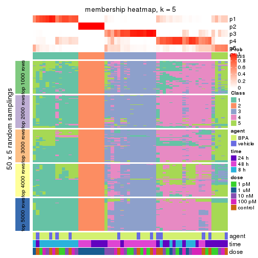
membership_heatmap(res, k = 6)
As soon as we have had the classes for columns, we can look for signatures which are significantly different between classes which can be candidate marks for certain classes. Following are the heatmaps for signatures.
Signature heatmaps where rows are scaled:
get_signatures(res, k = 2)
get_signatures(res, k = 3)
get_signatures(res, k = 4)

get_signatures(res, k = 5)
get_signatures(res, k = 6)
Signature heatmaps where rows are not scaled:
get_signatures(res, k = 2, scale_rows = FALSE)
get_signatures(res, k = 3, scale_rows = FALSE)
get_signatures(res, k = 4, scale_rows = FALSE)
get_signatures(res, k = 5, scale_rows = FALSE)
get_signatures(res, k = 6, scale_rows = FALSE)
Compare the overlap of signatures from different k:
compare_signatures(res)
get_signature() returns a data frame invisibly. TO get the list of signatures, the function
call should be assigned to a variable explicitly. In following code, if plot argument is set
to FALSE, no heatmap is plotted while only the differential analysis is performed.
# code only for demonstration
tb = get_signature(res, k = ..., plot = FALSE)
An example of the output of tb is:
#> which_row fdr mean_1 mean_2 scaled_mean_1 scaled_mean_2 km
#> 1 38 0.042760348 8.373488 9.131774 -0.5533452 0.5164555 1
#> 2 40 0.018707592 7.106213 8.469186 -0.6173731 0.5762149 1
#> 3 55 0.019134737 10.221463 11.207825 -0.6159697 0.5749050 1
#> 4 59 0.006059896 5.921854 7.869574 -0.6899429 0.6439467 1
#> 5 60 0.018055526 8.928898 10.211722 -0.6204761 0.5791110 1
#> 6 98 0.009384629 15.714769 14.887706 0.6635654 -0.6193277 2
...
The columns in tb are:
which_row: row indices corresponding to the input matrix.fdr: FDR for the differential test. mean_x: The mean value in group x.scaled_mean_x: The mean value in group x after rows are scaled.km: Row groups if k-means clustering is applied to rows.UMAP plot which shows how samples are separated.
dimension_reduction(res, k = 2, method = "UMAP")

dimension_reduction(res, k = 3, method = "UMAP")
dimension_reduction(res, k = 4, method = "UMAP")
dimension_reduction(res, k = 5, method = "UMAP")
dimension_reduction(res, k = 6, method = "UMAP")
Following heatmap shows how subgroups are split when increasing k:
collect_classes(res)
Test correlation between subgroups and known annotations. If the known annotation is numeric, one-way ANOVA test is applied, and if the known annotation is discrete, chi-squared contingency table test is applied.
test_to_known_factors(res)
#> n agent(p) time(p) dose(p) k
#> MAD:mclust 60 0.296 9.95e-02 1.87e-07 2
#> MAD:mclust 54 0.293 7.76e-08 3.01e-05 3
#> MAD:mclust 54 0.405 4.14e-08 4.24e-04 4
#> MAD:mclust 55 0.551 1.66e-09 6.73e-04 5
#> MAD:mclust 50 0.577 2.22e-09 1.15e-03 6
If matrix rows can be associated to genes, consider to use functional_enrichment(res,
...) to perform function enrichment for the signature genes. See this vignette for more detailed explanations.
The object with results only for a single top-value method and a single partition method can be extracted as:
res = res_list["MAD", "NMF"]
# you can also extract it by
# res = res_list["MAD:NMF"]
A summary of res and all the functions that can be applied to it:
res
#> A 'ConsensusPartition' object with k = 2, 3, 4, 5, 6.
#> On a matrix with 51941 rows and 60 columns.
#> Top rows (1000, 2000, 3000, 4000, 5000) are extracted by 'MAD' method.
#> Subgroups are detected by 'NMF' method.
#> Performed in total 1250 partitions by row resampling.
#> Best k for subgroups seems to be 3.
#>
#> Following methods can be applied to this 'ConsensusPartition' object:
#> [1] "cola_report" "collect_classes" "collect_plots"
#> [4] "collect_stats" "colnames" "compare_signatures"
#> [7] "consensus_heatmap" "dimension_reduction" "functional_enrichment"
#> [10] "get_anno_col" "get_anno" "get_classes"
#> [13] "get_consensus" "get_matrix" "get_membership"
#> [16] "get_param" "get_signatures" "get_stats"
#> [19] "is_best_k" "is_stable_k" "membership_heatmap"
#> [22] "ncol" "nrow" "plot_ecdf"
#> [25] "rownames" "select_partition_number" "show"
#> [28] "suggest_best_k" "test_to_known_factors"
collect_plots() function collects all the plots made from res for all k (number of partitions)
into one single page to provide an easy and fast comparison between different k.
collect_plots(res)
The plots are:
k and the heatmap of
predicted classes for each k.k.k.k.All the plots in panels can be made by individual functions and they are plotted later in this section.
select_partition_number() produces several plots showing different
statistics for choosing “optimized” k. There are following statistics:
k;k, the area increased is defined as \(A_k - A_{k-1}\).The detailed explanations of these statistics can be found in the cola vignette.
Generally speaking, lower PAC score, higher mean silhouette score or higher
concordance corresponds to better partition. Rand index and Jaccard index
measure how similar the current partition is compared to partition with k-1.
If they are too similar, we won't accept k is better than k-1.
select_partition_number(res)
The numeric values for all these statistics can be obtained by get_stats().
get_stats(res)
#> k 1-PAC mean_silhouette concordance area_increased Rand Jaccard
#> 2 2 0.679 0.874 0.942 0.3959 0.587 0.587
#> 3 3 0.355 0.635 0.802 0.5644 0.664 0.480
#> 4 4 0.462 0.527 0.750 0.1887 0.743 0.418
#> 5 5 0.511 0.434 0.686 0.0765 0.854 0.514
#> 6 6 0.556 0.466 0.654 0.0433 0.934 0.712
suggest_best_k() suggests the best \(k\) based on these statistics. The rules are as follows:
suggest_best_k(res)
#> [1] 3
Following shows the table of the partitions (You need to click the show/hide
code output link to see it). The membership matrix (columns with name p*)
is inferred by
clue::cl_consensus()
function with the SE method. Basically the value in the membership matrix
represents the probability to belong to a certain group. The finall class
label for an item is determined with the group with highest probability it
belongs to.
In get_classes() function, the entropy is calculated from the membership
matrix and the silhouette score is calculated from the consensus matrix.
cbind(get_classes(res, k = 2), get_membership(res, k = 2))
#> class entropy silhouette p1 p2
#> GSM439987 1 0.0000 0.962 1.000 0.000
#> GSM439988 1 0.0000 0.962 1.000 0.000
#> GSM439989 1 0.0000 0.962 1.000 0.000
#> GSM439990 1 0.0000 0.962 1.000 0.000
#> GSM439991 1 0.0000 0.962 1.000 0.000
#> GSM439992 1 0.0000 0.962 1.000 0.000
#> GSM439993 1 0.0000 0.962 1.000 0.000
#> GSM439994 1 0.0000 0.962 1.000 0.000
#> GSM439995 2 0.6712 0.804 0.176 0.824
#> GSM439996 1 0.0000 0.962 1.000 0.000
#> GSM439997 1 0.5178 0.839 0.884 0.116
#> GSM439998 1 0.0000 0.962 1.000 0.000
#> GSM440035 1 0.0000 0.962 1.000 0.000
#> GSM440036 1 0.0000 0.962 1.000 0.000
#> GSM440037 1 0.0000 0.962 1.000 0.000
#> GSM440038 1 0.2043 0.937 0.968 0.032
#> GSM440011 1 0.0000 0.962 1.000 0.000
#> GSM440012 1 0.0000 0.962 1.000 0.000
#> GSM440013 1 0.0000 0.962 1.000 0.000
#> GSM440014 1 0.0000 0.962 1.000 0.000
#> GSM439999 1 0.0000 0.962 1.000 0.000
#> GSM440000 1 0.0000 0.962 1.000 0.000
#> GSM440001 1 0.0000 0.962 1.000 0.000
#> GSM440002 1 0.0000 0.962 1.000 0.000
#> GSM440023 1 0.3879 0.893 0.924 0.076
#> GSM440024 1 0.0000 0.962 1.000 0.000
#> GSM440025 1 0.8763 0.512 0.704 0.296
#> GSM440026 2 0.9896 0.336 0.440 0.560
#> GSM440039 1 0.1414 0.948 0.980 0.020
#> GSM440040 1 0.0000 0.962 1.000 0.000
#> GSM440041 1 0.0000 0.962 1.000 0.000
#> GSM440042 1 0.0000 0.962 1.000 0.000
#> GSM440015 1 0.0376 0.960 0.996 0.004
#> GSM440016 1 0.0000 0.962 1.000 0.000
#> GSM440017 1 0.0000 0.962 1.000 0.000
#> GSM440018 2 0.6887 0.800 0.184 0.816
#> GSM440003 1 0.4690 0.862 0.900 0.100
#> GSM440004 2 0.7528 0.774 0.216 0.784
#> GSM440005 1 0.0000 0.962 1.000 0.000
#> GSM440006 1 0.0000 0.962 1.000 0.000
#> GSM440027 2 0.0000 0.860 0.000 1.000
#> GSM440028 2 0.0000 0.860 0.000 1.000
#> GSM440029 2 0.0000 0.860 0.000 1.000
#> GSM440030 2 0.0000 0.860 0.000 1.000
#> GSM440043 2 0.8713 0.673 0.292 0.708
#> GSM440044 1 0.0000 0.962 1.000 0.000
#> GSM440045 1 0.9427 0.331 0.640 0.360
#> GSM440046 2 0.7056 0.793 0.192 0.808
#> GSM440019 1 0.0000 0.962 1.000 0.000
#> GSM440020 1 0.8955 0.469 0.688 0.312
#> GSM440021 1 0.0938 0.954 0.988 0.012
#> GSM440022 2 0.6623 0.808 0.172 0.828
#> GSM440007 1 0.0376 0.960 0.996 0.004
#> GSM440008 2 0.0000 0.860 0.000 1.000
#> GSM440009 2 0.9963 0.250 0.464 0.536
#> GSM440010 1 0.0672 0.957 0.992 0.008
#> GSM440031 2 0.0000 0.860 0.000 1.000
#> GSM440032 2 0.0000 0.860 0.000 1.000
#> GSM440033 2 0.0000 0.860 0.000 1.000
#> GSM440034 2 0.0000 0.860 0.000 1.000
cbind(get_classes(res, k = 3), get_membership(res, k = 3))
#> class entropy silhouette p1 p2 p3
#> GSM439987 3 0.5810 0.4617 0.336 0.000 0.664
#> GSM439988 1 0.2749 0.7959 0.924 0.012 0.064
#> GSM439989 1 0.3816 0.7756 0.852 0.000 0.148
#> GSM439990 1 0.4842 0.7338 0.776 0.000 0.224
#> GSM439991 3 0.5988 0.3385 0.368 0.000 0.632
#> GSM439992 1 0.4887 0.7458 0.772 0.000 0.228
#> GSM439993 1 0.1964 0.7973 0.944 0.000 0.056
#> GSM439994 3 0.1989 0.6876 0.048 0.004 0.948
#> GSM439995 3 0.5772 0.5020 0.024 0.220 0.756
#> GSM439996 1 0.2945 0.7762 0.908 0.004 0.088
#> GSM439997 3 0.5455 0.6481 0.184 0.028 0.788
#> GSM439998 1 0.5285 0.6866 0.752 0.004 0.244
#> GSM440035 1 0.5948 0.5249 0.640 0.000 0.360
#> GSM440036 1 0.5650 0.6129 0.688 0.000 0.312
#> GSM440037 1 0.1129 0.7985 0.976 0.004 0.020
#> GSM440038 3 0.7232 0.1179 0.428 0.028 0.544
#> GSM440011 3 0.5397 0.5389 0.280 0.000 0.720
#> GSM440012 1 0.1860 0.7956 0.948 0.000 0.052
#> GSM440013 3 0.5621 0.5259 0.308 0.000 0.692
#> GSM440014 1 0.5178 0.7015 0.744 0.000 0.256
#> GSM439999 1 0.5216 0.6965 0.740 0.000 0.260
#> GSM440000 1 0.1399 0.7999 0.968 0.004 0.028
#> GSM440001 1 0.5497 0.6527 0.708 0.000 0.292
#> GSM440002 3 0.5560 0.5126 0.300 0.000 0.700
#> GSM440023 1 0.5069 0.7157 0.828 0.128 0.044
#> GSM440024 1 0.2313 0.7872 0.944 0.032 0.024
#> GSM440025 1 0.6488 0.6164 0.744 0.192 0.064
#> GSM440026 3 0.5174 0.6488 0.076 0.092 0.832
#> GSM440039 3 0.2339 0.6815 0.048 0.012 0.940
#> GSM440040 1 0.1529 0.8016 0.960 0.000 0.040
#> GSM440041 1 0.2261 0.7999 0.932 0.000 0.068
#> GSM440042 3 0.5706 0.5050 0.320 0.000 0.680
#> GSM440015 3 0.1860 0.6912 0.052 0.000 0.948
#> GSM440016 1 0.5905 0.5190 0.648 0.000 0.352
#> GSM440017 1 0.2165 0.8043 0.936 0.000 0.064
#> GSM440018 3 0.7581 -0.0748 0.040 0.464 0.496
#> GSM440003 3 0.3587 0.6940 0.088 0.020 0.892
#> GSM440004 3 0.3610 0.6284 0.016 0.096 0.888
#> GSM440005 1 0.1877 0.7997 0.956 0.012 0.032
#> GSM440006 1 0.2772 0.8048 0.916 0.004 0.080
#> GSM440027 2 0.1289 0.8495 0.000 0.968 0.032
#> GSM440028 2 0.1163 0.8455 0.028 0.972 0.000
#> GSM440029 2 0.1267 0.8473 0.024 0.972 0.004
#> GSM440030 2 0.2165 0.8309 0.000 0.936 0.064
#> GSM440043 3 0.6255 0.5209 0.048 0.204 0.748
#> GSM440044 3 0.6126 0.4142 0.352 0.004 0.644
#> GSM440045 3 0.6191 0.6367 0.140 0.084 0.776
#> GSM440046 3 0.5466 0.5592 0.040 0.160 0.800
#> GSM440019 1 0.3573 0.7861 0.876 0.004 0.120
#> GSM440020 3 0.7673 0.5683 0.236 0.100 0.664
#> GSM440021 1 0.5643 0.6842 0.760 0.020 0.220
#> GSM440022 3 0.8494 0.2428 0.108 0.336 0.556
#> GSM440007 1 0.6267 0.3057 0.548 0.000 0.452
#> GSM440008 2 0.6169 0.4347 0.004 0.636 0.360
#> GSM440009 2 0.9956 -0.1900 0.292 0.372 0.336
#> GSM440010 1 0.4555 0.7643 0.800 0.000 0.200
#> GSM440031 2 0.1289 0.8498 0.000 0.968 0.032
#> GSM440032 2 0.0747 0.8514 0.000 0.984 0.016
#> GSM440033 2 0.2096 0.8264 0.052 0.944 0.004
#> GSM440034 2 0.1482 0.8509 0.012 0.968 0.020
cbind(get_classes(res, k = 4), get_membership(res, k = 4))
#> class entropy silhouette p1 p2 p3 p4
#> GSM439987 1 0.3681 0.5864 0.816 0.000 0.008 0.176
#> GSM439988 4 0.4898 0.5394 0.184 0.024 0.020 0.772
#> GSM439989 4 0.4730 0.2376 0.364 0.000 0.000 0.636
#> GSM439990 4 0.5508 -0.1219 0.476 0.000 0.016 0.508
#> GSM439991 1 0.5432 0.5773 0.740 0.000 0.136 0.124
#> GSM439992 4 0.6041 0.3121 0.332 0.000 0.060 0.608
#> GSM439993 4 0.3791 0.5785 0.004 0.000 0.200 0.796
#> GSM439994 1 0.4661 0.4162 0.724 0.008 0.264 0.004
#> GSM439995 3 0.2718 0.7287 0.056 0.020 0.912 0.012
#> GSM439996 4 0.5553 0.0619 0.012 0.004 0.452 0.532
#> GSM439997 3 0.2297 0.7460 0.044 0.004 0.928 0.024
#> GSM439998 3 0.5133 0.5593 0.024 0.004 0.704 0.268
#> GSM440035 1 0.6451 0.2503 0.524 0.000 0.072 0.404
#> GSM440036 1 0.5028 0.3476 0.596 0.004 0.000 0.400
#> GSM440037 4 0.3575 0.6072 0.124 0.004 0.020 0.852
#> GSM440038 1 0.4910 0.5561 0.756 0.024 0.012 0.208
#> GSM440011 1 0.3105 0.5932 0.856 0.000 0.004 0.140
#> GSM440012 4 0.4499 0.6231 0.048 0.000 0.160 0.792
#> GSM440013 1 0.3444 0.5801 0.816 0.000 0.000 0.184
#> GSM440014 1 0.5292 0.1120 0.512 0.000 0.008 0.480
#> GSM439999 1 0.5281 0.1747 0.528 0.000 0.008 0.464
#> GSM440000 4 0.3796 0.6255 0.100 0.004 0.044 0.852
#> GSM440001 1 0.5294 0.1748 0.508 0.000 0.008 0.484
#> GSM440002 1 0.3142 0.5980 0.860 0.000 0.008 0.132
#> GSM440023 4 0.5990 0.4960 0.156 0.136 0.004 0.704
#> GSM440024 4 0.4353 0.5758 0.116 0.060 0.004 0.820
#> GSM440025 4 0.7193 0.4869 0.036 0.236 0.108 0.620
#> GSM440026 1 0.2099 0.5861 0.936 0.020 0.040 0.004
#> GSM440039 1 0.3870 0.4824 0.788 0.004 0.208 0.000
#> GSM440040 4 0.2500 0.6382 0.040 0.000 0.044 0.916
#> GSM440041 4 0.5316 0.3945 0.016 0.008 0.308 0.668
#> GSM440042 3 0.7002 0.2064 0.352 0.000 0.520 0.128
#> GSM440015 1 0.5536 0.1880 0.592 0.024 0.384 0.000
#> GSM440016 3 0.6542 0.1024 0.076 0.000 0.496 0.428
#> GSM440017 4 0.3554 0.6314 0.020 0.000 0.136 0.844
#> GSM440018 3 0.6780 0.5496 0.112 0.236 0.636 0.016
#> GSM440003 1 0.5827 0.0135 0.532 0.032 0.436 0.000
#> GSM440004 1 0.6640 0.0155 0.508 0.072 0.416 0.004
#> GSM440005 4 0.3093 0.6188 0.092 0.004 0.020 0.884
#> GSM440006 4 0.3612 0.6229 0.100 0.000 0.044 0.856
#> GSM440027 2 0.0895 0.9596 0.020 0.976 0.004 0.000
#> GSM440028 2 0.1617 0.9565 0.008 0.956 0.012 0.024
#> GSM440029 2 0.1492 0.9553 0.004 0.956 0.004 0.036
#> GSM440030 2 0.2363 0.9227 0.024 0.920 0.056 0.000
#> GSM440043 3 0.3595 0.7128 0.084 0.040 0.868 0.008
#> GSM440044 3 0.3245 0.7231 0.028 0.000 0.872 0.100
#> GSM440045 3 0.2364 0.7480 0.028 0.008 0.928 0.036
#> GSM440046 3 0.4181 0.6707 0.128 0.052 0.820 0.000
#> GSM440019 4 0.5345 0.1346 0.012 0.000 0.428 0.560
#> GSM440020 3 0.2457 0.7358 0.008 0.004 0.912 0.076
#> GSM440021 3 0.5041 0.5961 0.016 0.012 0.724 0.248
#> GSM440022 3 0.2810 0.7447 0.016 0.036 0.912 0.036
#> GSM440007 3 0.7023 0.5370 0.188 0.004 0.596 0.212
#> GSM440008 3 0.5508 0.5724 0.056 0.252 0.692 0.000
#> GSM440009 3 0.7162 0.5774 0.020 0.236 0.608 0.136
#> GSM440010 4 0.6448 0.1777 0.060 0.004 0.408 0.528
#> GSM440031 2 0.0804 0.9627 0.012 0.980 0.008 0.000
#> GSM440032 2 0.0859 0.9637 0.008 0.980 0.008 0.004
#> GSM440033 2 0.2365 0.9263 0.004 0.920 0.012 0.064
#> GSM440034 2 0.0859 0.9639 0.008 0.980 0.008 0.004
cbind(get_classes(res, k = 5), get_membership(res, k = 5))
#> class entropy silhouette p1 p2 p3 p4 p5
#> GSM439987 1 0.4339 0.5742 0.772 0.000 0.012 0.048 0.168
#> GSM439988 5 0.6397 0.3441 0.112 0.032 0.000 0.280 0.576
#> GSM439989 5 0.4536 0.4476 0.240 0.000 0.000 0.048 0.712
#> GSM439990 5 0.4733 0.2923 0.348 0.000 0.000 0.028 0.624
#> GSM439991 1 0.5779 0.2211 0.532 0.000 0.056 0.396 0.016
#> GSM439992 4 0.7096 0.3176 0.220 0.000 0.052 0.532 0.196
#> GSM439993 4 0.5857 0.2307 0.000 0.000 0.096 0.460 0.444
#> GSM439994 1 0.5054 0.4197 0.696 0.000 0.216 0.084 0.004
#> GSM439995 3 0.3402 0.6515 0.044 0.044 0.872 0.028 0.012
#> GSM439996 4 0.6703 0.4039 0.000 0.000 0.296 0.428 0.276
#> GSM439997 3 0.3573 0.6212 0.032 0.004 0.836 0.120 0.008
#> GSM439998 3 0.5941 0.2102 0.000 0.000 0.584 0.256 0.160
#> GSM440035 1 0.6614 0.1298 0.440 0.000 0.016 0.408 0.136
#> GSM440036 1 0.6497 0.3603 0.556 0.016 0.000 0.176 0.252
#> GSM440037 5 0.2282 0.5341 0.036 0.008 0.004 0.032 0.920
#> GSM440038 1 0.5908 0.1859 0.520 0.020 0.024 0.020 0.416
#> GSM440011 1 0.3256 0.5752 0.832 0.004 0.000 0.016 0.148
#> GSM440012 5 0.4076 0.4721 0.016 0.004 0.108 0.056 0.816
#> GSM440013 1 0.5795 0.4672 0.632 0.008 0.008 0.088 0.264
#> GSM440014 5 0.4949 0.1682 0.396 0.000 0.000 0.032 0.572
#> GSM439999 5 0.5077 0.1086 0.428 0.000 0.000 0.036 0.536
#> GSM440000 5 0.2450 0.5246 0.028 0.000 0.032 0.028 0.912
#> GSM440001 1 0.6125 0.2221 0.500 0.000 0.000 0.136 0.364
#> GSM440002 1 0.3268 0.5975 0.856 0.000 0.004 0.060 0.080
#> GSM440023 5 0.6771 0.3773 0.068 0.180 0.000 0.156 0.596
#> GSM440024 5 0.3861 0.5104 0.036 0.020 0.004 0.112 0.828
#> GSM440025 5 0.6324 0.4389 0.028 0.104 0.084 0.092 0.692
#> GSM440026 1 0.2895 0.5938 0.896 0.016 0.016 0.024 0.048
#> GSM440039 1 0.4629 0.5241 0.764 0.004 0.148 0.076 0.008
#> GSM440040 4 0.5270 0.1854 0.028 0.000 0.012 0.548 0.412
#> GSM440041 5 0.6596 -0.3615 0.004 0.000 0.180 0.392 0.424
#> GSM440042 4 0.7777 0.0368 0.292 0.000 0.324 0.328 0.056
#> GSM440015 1 0.6210 0.0925 0.540 0.012 0.372 0.048 0.028
#> GSM440016 5 0.6501 0.1510 0.048 0.000 0.304 0.088 0.560
#> GSM440017 5 0.5753 0.1910 0.008 0.004 0.104 0.244 0.640
#> GSM440018 3 0.7465 0.4593 0.048 0.152 0.576 0.048 0.176
#> GSM440003 3 0.6736 0.0931 0.420 0.024 0.468 0.044 0.044
#> GSM440004 3 0.6563 0.0239 0.448 0.028 0.452 0.028 0.044
#> GSM440005 5 0.5596 -0.0128 0.036 0.012 0.004 0.444 0.504
#> GSM440006 4 0.6129 0.2254 0.060 0.004 0.024 0.524 0.388
#> GSM440027 2 0.0833 0.9573 0.004 0.976 0.000 0.016 0.004
#> GSM440028 2 0.2444 0.9402 0.000 0.904 0.012 0.068 0.016
#> GSM440029 2 0.1659 0.9569 0.004 0.948 0.008 0.024 0.016
#> GSM440030 2 0.2032 0.9272 0.004 0.924 0.052 0.020 0.000
#> GSM440043 3 0.3186 0.6506 0.060 0.028 0.880 0.020 0.012
#> GSM440044 3 0.4235 0.5471 0.020 0.000 0.764 0.196 0.020
#> GSM440045 3 0.2444 0.6484 0.004 0.004 0.908 0.056 0.028
#> GSM440046 3 0.3191 0.6446 0.064 0.040 0.872 0.024 0.000
#> GSM440019 4 0.5981 0.4933 0.004 0.000 0.236 0.600 0.160
#> GSM440020 3 0.3076 0.6225 0.000 0.008 0.868 0.088 0.036
#> GSM440021 3 0.5630 0.2889 0.004 0.000 0.612 0.096 0.288
#> GSM440022 3 0.3440 0.6439 0.012 0.028 0.864 0.076 0.020
#> GSM440007 4 0.6975 0.1714 0.148 0.000 0.340 0.476 0.036
#> GSM440008 3 0.4704 0.5839 0.004 0.180 0.752 0.048 0.016
#> GSM440009 3 0.6739 0.0616 0.016 0.108 0.440 0.424 0.012
#> GSM440010 4 0.6531 0.4892 0.044 0.012 0.216 0.624 0.104
#> GSM440031 2 0.0854 0.9548 0.004 0.976 0.008 0.012 0.000
#> GSM440032 2 0.1404 0.9567 0.004 0.956 0.008 0.028 0.004
#> GSM440033 2 0.2331 0.9277 0.000 0.900 0.000 0.080 0.020
#> GSM440034 2 0.1362 0.9572 0.008 0.960 0.004 0.012 0.016
cbind(get_classes(res, k = 6), get_membership(res, k = 6))
#> class entropy silhouette p1 p2 p3 p4 p5 p6
#> GSM439987 5 0.5450 0.5065 0.172 0.000 0.004 0.032 0.660 NA
#> GSM439988 1 0.6998 0.2039 0.464 0.016 0.000 0.256 0.052 NA
#> GSM439989 1 0.4026 0.5521 0.780 0.000 0.000 0.040 0.144 NA
#> GSM439990 1 0.5017 0.4922 0.684 0.000 0.004 0.032 0.216 NA
#> GSM439991 5 0.6507 0.1798 0.004 0.000 0.040 0.284 0.492 NA
#> GSM439992 4 0.6305 0.4437 0.084 0.000 0.024 0.624 0.144 NA
#> GSM439993 4 0.5870 0.3286 0.312 0.000 0.048 0.560 0.004 NA
#> GSM439994 5 0.6145 0.4252 0.012 0.004 0.176 0.068 0.628 NA
#> GSM439995 3 0.3071 0.6684 0.004 0.008 0.864 0.008 0.040 NA
#> GSM439996 4 0.6360 0.4401 0.180 0.000 0.152 0.572 0.000 NA
#> GSM439997 3 0.4868 0.6011 0.004 0.000 0.724 0.148 0.036 NA
#> GSM439998 3 0.5813 0.2218 0.048 0.000 0.504 0.380 0.000 NA
#> GSM440035 4 0.7766 -0.0908 0.096 0.000 0.024 0.312 0.304 NA
#> GSM440036 5 0.7670 0.2651 0.232 0.012 0.004 0.124 0.404 NA
#> GSM440037 1 0.2711 0.5763 0.880 0.000 0.000 0.056 0.016 NA
#> GSM440038 1 0.5613 0.1477 0.524 0.004 0.012 0.004 0.376 NA
#> GSM440011 5 0.4433 0.4848 0.212 0.004 0.000 0.012 0.720 NA
#> GSM440012 1 0.4040 0.5307 0.808 0.000 0.068 0.060 0.008 NA
#> GSM440013 5 0.6071 0.3371 0.292 0.004 0.008 0.036 0.564 NA
#> GSM440014 1 0.5449 0.3133 0.580 0.000 0.000 0.020 0.308 NA
#> GSM439999 1 0.4933 0.3713 0.624 0.000 0.000 0.024 0.308 NA
#> GSM440000 1 0.3447 0.5600 0.848 0.004 0.016 0.068 0.012 NA
#> GSM440001 5 0.7273 0.2438 0.280 0.000 0.004 0.120 0.420 NA
#> GSM440002 5 0.5354 0.5443 0.112 0.004 0.004 0.056 0.700 NA
#> GSM440023 1 0.7702 0.3201 0.492 0.132 0.000 0.164 0.076 NA
#> GSM440024 1 0.4700 0.5235 0.760 0.028 0.000 0.120 0.032 NA
#> GSM440025 1 0.7196 0.3577 0.556 0.120 0.068 0.136 0.000 NA
#> GSM440026 5 0.3647 0.5560 0.048 0.012 0.032 0.004 0.840 NA
#> GSM440039 5 0.4990 0.4902 0.016 0.004 0.172 0.012 0.712 NA
#> GSM440040 4 0.6497 0.3004 0.212 0.000 0.008 0.496 0.028 NA
#> GSM440041 4 0.6207 0.3948 0.236 0.000 0.092 0.580 0.004 NA
#> GSM440042 4 0.7498 0.2333 0.020 0.000 0.160 0.444 0.244 NA
#> GSM440015 5 0.6406 0.0536 0.052 0.000 0.356 0.008 0.480 NA
#> GSM440016 1 0.6673 0.2794 0.532 0.000 0.280 0.072 0.028 NA
#> GSM440017 1 0.6666 0.1221 0.492 0.000 0.084 0.312 0.008 NA
#> GSM440018 3 0.6895 0.4988 0.164 0.088 0.592 0.008 0.048 NA
#> GSM440003 3 0.6393 0.2513 0.024 0.004 0.488 0.008 0.332 NA
#> GSM440004 3 0.6534 0.1314 0.032 0.028 0.460 0.004 0.388 NA
#> GSM440005 4 0.6604 0.1424 0.312 0.000 0.004 0.432 0.028 NA
#> GSM440006 4 0.6567 0.3413 0.236 0.004 0.008 0.524 0.036 NA
#> GSM440027 2 0.1862 0.9422 0.008 0.932 0.012 0.000 0.016 NA
#> GSM440028 2 0.1667 0.9382 0.008 0.936 0.004 0.008 0.000 NA
#> GSM440029 2 0.1592 0.9455 0.016 0.944 0.012 0.004 0.000 NA
#> GSM440030 2 0.2507 0.8966 0.000 0.892 0.060 0.000 0.020 NA
#> GSM440043 3 0.3018 0.6688 0.004 0.000 0.868 0.024 0.044 NA
#> GSM440044 3 0.5146 0.4956 0.000 0.000 0.644 0.260 0.036 NA
#> GSM440045 3 0.3685 0.6583 0.028 0.004 0.836 0.072 0.012 NA
#> GSM440046 3 0.3158 0.6559 0.000 0.008 0.844 0.000 0.084 NA
#> GSM440019 4 0.4982 0.5079 0.052 0.004 0.128 0.736 0.008 NA
#> GSM440020 3 0.4621 0.6022 0.016 0.000 0.732 0.152 0.004 NA
#> GSM440021 3 0.6484 0.3192 0.208 0.000 0.536 0.184 0.000 NA
#> GSM440022 3 0.4201 0.6552 0.012 0.024 0.808 0.088 0.020 NA
#> GSM440007 4 0.7504 0.3202 0.024 0.000 0.188 0.416 0.092 NA
#> GSM440008 3 0.4213 0.6387 0.012 0.080 0.800 0.016 0.012 NA
#> GSM440009 4 0.7283 0.1486 0.012 0.056 0.304 0.472 0.036 NA
#> GSM440010 4 0.5920 0.4851 0.028 0.004 0.120 0.648 0.028 NA
#> GSM440031 2 0.0767 0.9479 0.004 0.976 0.008 0.000 0.000 NA
#> GSM440032 2 0.0972 0.9485 0.000 0.964 0.008 0.000 0.000 NA
#> GSM440033 2 0.2508 0.9079 0.016 0.884 0.000 0.016 0.000 NA
#> GSM440034 2 0.1413 0.9459 0.000 0.948 0.008 0.004 0.004 NA
Heatmaps for the consensus matrix. It visualizes the probability of two samples to be in a same group.
consensus_heatmap(res, k = 2)
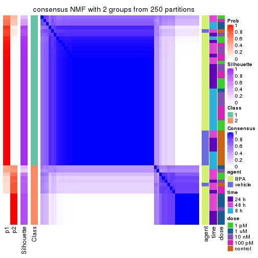
consensus_heatmap(res, k = 3)
consensus_heatmap(res, k = 4)
consensus_heatmap(res, k = 5)
consensus_heatmap(res, k = 6)
Heatmaps for the membership of samples in all partitions to see how consistent they are:
membership_heatmap(res, k = 2)
membership_heatmap(res, k = 3)
membership_heatmap(res, k = 4)
membership_heatmap(res, k = 5)
membership_heatmap(res, k = 6)
As soon as we have had the classes for columns, we can look for signatures which are significantly different between classes which can be candidate marks for certain classes. Following are the heatmaps for signatures.
Signature heatmaps where rows are scaled:
get_signatures(res, k = 2)
get_signatures(res, k = 3)
get_signatures(res, k = 4)
get_signatures(res, k = 5)
get_signatures(res, k = 6)
Signature heatmaps where rows are not scaled:
get_signatures(res, k = 2, scale_rows = FALSE)
get_signatures(res, k = 3, scale_rows = FALSE)
get_signatures(res, k = 4, scale_rows = FALSE)
get_signatures(res, k = 5, scale_rows = FALSE)
get_signatures(res, k = 6, scale_rows = FALSE)
Compare the overlap of signatures from different k:
compare_signatures(res)
get_signature() returns a data frame invisibly. TO get the list of signatures, the function
call should be assigned to a variable explicitly. In following code, if plot argument is set
to FALSE, no heatmap is plotted while only the differential analysis is performed.
# code only for demonstration
tb = get_signature(res, k = ..., plot = FALSE)
An example of the output of tb is:
#> which_row fdr mean_1 mean_2 scaled_mean_1 scaled_mean_2 km
#> 1 38 0.042760348 8.373488 9.131774 -0.5533452 0.5164555 1
#> 2 40 0.018707592 7.106213 8.469186 -0.6173731 0.5762149 1
#> 3 55 0.019134737 10.221463 11.207825 -0.6159697 0.5749050 1
#> 4 59 0.006059896 5.921854 7.869574 -0.6899429 0.6439467 1
#> 5 60 0.018055526 8.928898 10.211722 -0.6204761 0.5791110 1
#> 6 98 0.009384629 15.714769 14.887706 0.6635654 -0.6193277 2
...
The columns in tb are:
which_row: row indices corresponding to the input matrix.fdr: FDR for the differential test. mean_x: The mean value in group x.scaled_mean_x: The mean value in group x after rows are scaled.km: Row groups if k-means clustering is applied to rows.UMAP plot which shows how samples are separated.
dimension_reduction(res, k = 2, method = "UMAP")

dimension_reduction(res, k = 3, method = "UMAP")
dimension_reduction(res, k = 4, method = "UMAP")
dimension_reduction(res, k = 5, method = "UMAP")

dimension_reduction(res, k = 6, method = "UMAP")
Following heatmap shows how subgroups are split when increasing k:
collect_classes(res)
Test correlation between subgroups and known annotations. If the known annotation is numeric, one-way ANOVA test is applied, and if the known annotation is discrete, chi-squared contingency table test is applied.
test_to_known_factors(res)
#> n agent(p) time(p) dose(p) k
#> MAD:NMF 56 0.207 1.51e-03 4.37e-03 2
#> MAD:NMF 51 0.267 6.75e-02 8.79e-05 3
#> MAD:NMF 39 0.488 1.69e-06 1.82e-03 4
#> MAD:NMF 25 0.441 5.35e-05 3.67e-02 5
#> MAD:NMF 25 0.570 4.69e-05 3.95e-02 6
If matrix rows can be associated to genes, consider to use functional_enrichment(res,
...) to perform function enrichment for the signature genes. See this vignette for more detailed explanations.
The object with results only for a single top-value method and a single partition method can be extracted as:
res = res_list["ATC", "hclust"]
# you can also extract it by
# res = res_list["ATC:hclust"]
A summary of res and all the functions that can be applied to it:
res
#> A 'ConsensusPartition' object with k = 2, 3, 4, 5, 6.
#> On a matrix with 51941 rows and 60 columns.
#> Top rows (1000, 2000, 3000, 4000, 5000) are extracted by 'ATC' method.
#> Subgroups are detected by 'hclust' method.
#> Performed in total 1250 partitions by row resampling.
#> Best k for subgroups seems to be 4.
#>
#> Following methods can be applied to this 'ConsensusPartition' object:
#> [1] "cola_report" "collect_classes" "collect_plots"
#> [4] "collect_stats" "colnames" "compare_signatures"
#> [7] "consensus_heatmap" "dimension_reduction" "functional_enrichment"
#> [10] "get_anno_col" "get_anno" "get_classes"
#> [13] "get_consensus" "get_matrix" "get_membership"
#> [16] "get_param" "get_signatures" "get_stats"
#> [19] "is_best_k" "is_stable_k" "membership_heatmap"
#> [22] "ncol" "nrow" "plot_ecdf"
#> [25] "rownames" "select_partition_number" "show"
#> [28] "suggest_best_k" "test_to_known_factors"
collect_plots() function collects all the plots made from res for all k (number of partitions)
into one single page to provide an easy and fast comparison between different k.
collect_plots(res)
The plots are:
k and the heatmap of
predicted classes for each k.k.k.k.All the plots in panels can be made by individual functions and they are plotted later in this section.
select_partition_number() produces several plots showing different
statistics for choosing “optimized” k. There are following statistics:
k;k, the area increased is defined as \(A_k - A_{k-1}\).The detailed explanations of these statistics can be found in the cola vignette.
Generally speaking, lower PAC score, higher mean silhouette score or higher
concordance corresponds to better partition. Rand index and Jaccard index
measure how similar the current partition is compared to partition with k-1.
If they are too similar, we won't accept k is better than k-1.
select_partition_number(res)
The numeric values for all these statistics can be obtained by get_stats().
get_stats(res)
#> k 1-PAC mean_silhouette concordance area_increased Rand Jaccard
#> 2 2 1.000 1.000 1.000 0.2358 0.765 0.765
#> 3 3 0.840 0.928 0.970 1.5044 0.632 0.519
#> 4 4 0.954 0.963 0.966 0.0730 0.962 0.903
#> 5 5 0.845 0.920 0.922 0.0688 0.991 0.975
#> 6 6 0.825 0.956 0.914 0.1255 0.864 0.612
suggest_best_k() suggests the best \(k\) based on these statistics. The rules are as follows:
suggest_best_k(res)
#> [1] 4
#> attr(,"optional")
#> [1] 2
There is also optional best \(k\) = 2 that is worth to check.
Following shows the table of the partitions (You need to click the show/hide
code output link to see it). The membership matrix (columns with name p*)
is inferred by
clue::cl_consensus()
function with the SE method. Basically the value in the membership matrix
represents the probability to belong to a certain group. The finall class
label for an item is determined with the group with highest probability it
belongs to.
In get_classes() function, the entropy is calculated from the membership
matrix and the silhouette score is calculated from the consensus matrix.
cbind(get_classes(res, k = 2), get_membership(res, k = 2))
#> class entropy silhouette p1 p2
#> GSM439987 1 0 1 1 0
#> GSM439988 1 0 1 1 0
#> GSM439989 1 0 1 1 0
#> GSM439990 1 0 1 1 0
#> GSM439991 1 0 1 1 0
#> GSM439992 1 0 1 1 0
#> GSM439993 1 0 1 1 0
#> GSM439994 1 0 1 1 0
#> GSM439995 1 0 1 1 0
#> GSM439996 1 0 1 1 0
#> GSM439997 1 0 1 1 0
#> GSM439998 1 0 1 1 0
#> GSM440035 1 0 1 1 0
#> GSM440036 1 0 1 1 0
#> GSM440037 1 0 1 1 0
#> GSM440038 1 0 1 1 0
#> GSM440011 1 0 1 1 0
#> GSM440012 1 0 1 1 0
#> GSM440013 1 0 1 1 0
#> GSM440014 1 0 1 1 0
#> GSM439999 1 0 1 1 0
#> GSM440000 1 0 1 1 0
#> GSM440001 1 0 1 1 0
#> GSM440002 1 0 1 1 0
#> GSM440023 1 0 1 1 0
#> GSM440024 1 0 1 1 0
#> GSM440025 1 0 1 1 0
#> GSM440026 1 0 1 1 0
#> GSM440039 1 0 1 1 0
#> GSM440040 1 0 1 1 0
#> GSM440041 1 0 1 1 0
#> GSM440042 1 0 1 1 0
#> GSM440015 1 0 1 1 0
#> GSM440016 1 0 1 1 0
#> GSM440017 1 0 1 1 0
#> GSM440018 1 0 1 1 0
#> GSM440003 1 0 1 1 0
#> GSM440004 1 0 1 1 0
#> GSM440005 1 0 1 1 0
#> GSM440006 1 0 1 1 0
#> GSM440027 2 0 1 0 1
#> GSM440028 2 0 1 0 1
#> GSM440029 2 0 1 0 1
#> GSM440030 2 0 1 0 1
#> GSM440043 1 0 1 1 0
#> GSM440044 1 0 1 1 0
#> GSM440045 1 0 1 1 0
#> GSM440046 1 0 1 1 0
#> GSM440019 1 0 1 1 0
#> GSM440020 1 0 1 1 0
#> GSM440021 1 0 1 1 0
#> GSM440022 1 0 1 1 0
#> GSM440007 1 0 1 1 0
#> GSM440008 1 0 1 1 0
#> GSM440009 1 0 1 1 0
#> GSM440010 1 0 1 1 0
#> GSM440031 2 0 1 0 1
#> GSM440032 2 0 1 0 1
#> GSM440033 2 0 1 0 1
#> GSM440034 2 0 1 0 1
cbind(get_classes(res, k = 3), get_membership(res, k = 3))
#> class entropy silhouette p1 p2 p3
#> GSM439987 1 0.000 0.996 1.000 0 0.000
#> GSM439988 1 0.000 0.996 1.000 0 0.000
#> GSM439989 1 0.000 0.996 1.000 0 0.000
#> GSM439990 1 0.000 0.996 1.000 0 0.000
#> GSM439991 1 0.000 0.996 1.000 0 0.000
#> GSM439992 1 0.000 0.996 1.000 0 0.000
#> GSM439993 1 0.000 0.996 1.000 0 0.000
#> GSM439994 1 0.000 0.996 1.000 0 0.000
#> GSM439995 3 0.000 0.880 0.000 0 1.000
#> GSM439996 3 0.400 0.747 0.160 0 0.840
#> GSM439997 3 0.000 0.880 0.000 0 1.000
#> GSM439998 3 0.000 0.880 0.000 0 1.000
#> GSM440035 1 0.000 0.996 1.000 0 0.000
#> GSM440036 1 0.000 0.996 1.000 0 0.000
#> GSM440037 1 0.000 0.996 1.000 0 0.000
#> GSM440038 1 0.000 0.996 1.000 0 0.000
#> GSM440011 1 0.000 0.996 1.000 0 0.000
#> GSM440012 1 0.000 0.996 1.000 0 0.000
#> GSM440013 1 0.000 0.996 1.000 0 0.000
#> GSM440014 1 0.000 0.996 1.000 0 0.000
#> GSM439999 1 0.000 0.996 1.000 0 0.000
#> GSM440000 1 0.000 0.996 1.000 0 0.000
#> GSM440001 1 0.000 0.996 1.000 0 0.000
#> GSM440002 1 0.000 0.996 1.000 0 0.000
#> GSM440023 3 0.588 0.553 0.348 0 0.652
#> GSM440024 3 0.588 0.553 0.348 0 0.652
#> GSM440025 3 0.588 0.553 0.348 0 0.652
#> GSM440026 3 0.588 0.553 0.348 0 0.652
#> GSM440039 1 0.000 0.996 1.000 0 0.000
#> GSM440040 1 0.000 0.996 1.000 0 0.000
#> GSM440041 1 0.000 0.996 1.000 0 0.000
#> GSM440042 1 0.000 0.996 1.000 0 0.000
#> GSM440015 1 0.000 0.996 1.000 0 0.000
#> GSM440016 1 0.000 0.996 1.000 0 0.000
#> GSM440017 1 0.000 0.996 1.000 0 0.000
#> GSM440018 3 0.000 0.880 0.000 0 1.000
#> GSM440003 1 0.000 0.996 1.000 0 0.000
#> GSM440004 1 0.141 0.961 0.964 0 0.036
#> GSM440005 1 0.141 0.961 0.964 0 0.036
#> GSM440006 1 0.141 0.961 0.964 0 0.036
#> GSM440027 2 0.000 1.000 0.000 1 0.000
#> GSM440028 2 0.000 1.000 0.000 1 0.000
#> GSM440029 2 0.000 1.000 0.000 1 0.000
#> GSM440030 2 0.000 1.000 0.000 1 0.000
#> GSM440043 3 0.000 0.880 0.000 0 1.000
#> GSM440044 3 0.000 0.880 0.000 0 1.000
#> GSM440045 3 0.000 0.880 0.000 0 1.000
#> GSM440046 3 0.000 0.880 0.000 0 1.000
#> GSM440019 3 0.412 0.740 0.168 0 0.832
#> GSM440020 3 0.000 0.880 0.000 0 1.000
#> GSM440021 3 0.000 0.880 0.000 0 1.000
#> GSM440022 3 0.000 0.880 0.000 0 1.000
#> GSM440007 3 0.000 0.880 0.000 0 1.000
#> GSM440008 3 0.000 0.880 0.000 0 1.000
#> GSM440009 3 0.000 0.880 0.000 0 1.000
#> GSM440010 3 0.000 0.880 0.000 0 1.000
#> GSM440031 2 0.000 1.000 0.000 1 0.000
#> GSM440032 2 0.000 1.000 0.000 1 0.000
#> GSM440033 2 0.000 1.000 0.000 1 0.000
#> GSM440034 2 0.000 1.000 0.000 1 0.000
cbind(get_classes(res, k = 4), get_membership(res, k = 4))
#> class entropy silhouette p1 p2 p3 p4
#> GSM439987 1 0.000 0.996 1.000 0.0 0.000 0.0
#> GSM439988 1 0.000 0.996 1.000 0.0 0.000 0.0
#> GSM439989 1 0.000 0.996 1.000 0.0 0.000 0.0
#> GSM439990 1 0.000 0.996 1.000 0.0 0.000 0.0
#> GSM439991 1 0.000 0.996 1.000 0.0 0.000 0.0
#> GSM439992 1 0.000 0.996 1.000 0.0 0.000 0.0
#> GSM439993 1 0.000 0.996 1.000 0.0 0.000 0.0
#> GSM439994 1 0.000 0.996 1.000 0.0 0.000 0.0
#> GSM439995 3 0.000 0.961 0.000 0.0 1.000 0.0
#> GSM439996 3 0.317 0.688 0.160 0.0 0.840 0.0
#> GSM439997 3 0.000 0.961 0.000 0.0 1.000 0.0
#> GSM439998 3 0.000 0.961 0.000 0.0 1.000 0.0
#> GSM440035 1 0.000 0.996 1.000 0.0 0.000 0.0
#> GSM440036 1 0.000 0.996 1.000 0.0 0.000 0.0
#> GSM440037 1 0.000 0.996 1.000 0.0 0.000 0.0
#> GSM440038 1 0.000 0.996 1.000 0.0 0.000 0.0
#> GSM440011 1 0.000 0.996 1.000 0.0 0.000 0.0
#> GSM440012 1 0.000 0.996 1.000 0.0 0.000 0.0
#> GSM440013 1 0.000 0.996 1.000 0.0 0.000 0.0
#> GSM440014 1 0.000 0.996 1.000 0.0 0.000 0.0
#> GSM439999 1 0.000 0.996 1.000 0.0 0.000 0.0
#> GSM440000 1 0.000 0.996 1.000 0.0 0.000 0.0
#> GSM440001 1 0.000 0.996 1.000 0.0 0.000 0.0
#> GSM440002 1 0.000 0.996 1.000 0.0 0.000 0.0
#> GSM440023 4 0.361 1.000 0.000 0.0 0.200 0.8
#> GSM440024 4 0.361 1.000 0.000 0.0 0.200 0.8
#> GSM440025 4 0.361 1.000 0.000 0.0 0.200 0.8
#> GSM440026 4 0.361 1.000 0.000 0.0 0.200 0.8
#> GSM440039 1 0.000 0.996 1.000 0.0 0.000 0.0
#> GSM440040 1 0.000 0.996 1.000 0.0 0.000 0.0
#> GSM440041 1 0.000 0.996 1.000 0.0 0.000 0.0
#> GSM440042 1 0.000 0.996 1.000 0.0 0.000 0.0
#> GSM440015 1 0.000 0.996 1.000 0.0 0.000 0.0
#> GSM440016 1 0.000 0.996 1.000 0.0 0.000 0.0
#> GSM440017 1 0.000 0.996 1.000 0.0 0.000 0.0
#> GSM440018 3 0.000 0.961 0.000 0.0 1.000 0.0
#> GSM440003 1 0.000 0.996 1.000 0.0 0.000 0.0
#> GSM440004 1 0.112 0.960 0.964 0.0 0.036 0.0
#> GSM440005 1 0.112 0.960 0.964 0.0 0.036 0.0
#> GSM440006 1 0.112 0.960 0.964 0.0 0.036 0.0
#> GSM440027 2 0.000 0.904 0.000 1.0 0.000 0.0
#> GSM440028 2 0.000 0.904 0.000 1.0 0.000 0.0
#> GSM440029 2 0.000 0.904 0.000 1.0 0.000 0.0
#> GSM440030 2 0.000 0.904 0.000 1.0 0.000 0.0
#> GSM440043 3 0.000 0.961 0.000 0.0 1.000 0.0
#> GSM440044 3 0.000 0.961 0.000 0.0 1.000 0.0
#> GSM440045 3 0.000 0.961 0.000 0.0 1.000 0.0
#> GSM440046 3 0.000 0.961 0.000 0.0 1.000 0.0
#> GSM440019 3 0.327 0.672 0.168 0.0 0.832 0.0
#> GSM440020 3 0.000 0.961 0.000 0.0 1.000 0.0
#> GSM440021 3 0.000 0.961 0.000 0.0 1.000 0.0
#> GSM440022 3 0.000 0.961 0.000 0.0 1.000 0.0
#> GSM440007 3 0.000 0.961 0.000 0.0 1.000 0.0
#> GSM440008 3 0.000 0.961 0.000 0.0 1.000 0.0
#> GSM440009 3 0.000 0.961 0.000 0.0 1.000 0.0
#> GSM440010 3 0.000 0.961 0.000 0.0 1.000 0.0
#> GSM440031 2 0.361 0.904 0.000 0.8 0.000 0.2
#> GSM440032 2 0.361 0.904 0.000 0.8 0.000 0.2
#> GSM440033 2 0.361 0.904 0.000 0.8 0.000 0.2
#> GSM440034 2 0.361 0.904 0.000 0.8 0.000 0.2
cbind(get_classes(res, k = 5), get_membership(res, k = 5))
#> class entropy silhouette p1 p2 p3 p4 p5
#> GSM439987 1 0.000 0.883 1.000 0.000 0.000 0.000 0
#> GSM439988 1 0.000 0.883 1.000 0.000 0.000 0.000 0
#> GSM439989 1 0.000 0.883 1.000 0.000 0.000 0.000 0
#> GSM439990 1 0.000 0.883 1.000 0.000 0.000 0.000 0
#> GSM439991 1 0.331 0.871 0.776 0.000 0.000 0.224 0
#> GSM439992 1 0.331 0.871 0.776 0.000 0.000 0.224 0
#> GSM439993 1 0.331 0.871 0.776 0.000 0.000 0.224 0
#> GSM439994 1 0.331 0.871 0.776 0.000 0.000 0.224 0
#> GSM439995 3 0.000 0.971 0.000 0.000 1.000 0.000 0
#> GSM439996 3 0.311 0.764 0.140 0.000 0.840 0.020 0
#> GSM439997 3 0.000 0.971 0.000 0.000 1.000 0.000 0
#> GSM439998 3 0.000 0.971 0.000 0.000 1.000 0.000 0
#> GSM440035 1 0.000 0.883 1.000 0.000 0.000 0.000 0
#> GSM440036 1 0.000 0.883 1.000 0.000 0.000 0.000 0
#> GSM440037 1 0.000 0.883 1.000 0.000 0.000 0.000 0
#> GSM440038 1 0.000 0.883 1.000 0.000 0.000 0.000 0
#> GSM440011 1 0.000 0.883 1.000 0.000 0.000 0.000 0
#> GSM440012 1 0.000 0.883 1.000 0.000 0.000 0.000 0
#> GSM440013 1 0.000 0.883 1.000 0.000 0.000 0.000 0
#> GSM440014 1 0.000 0.883 1.000 0.000 0.000 0.000 0
#> GSM439999 1 0.000 0.883 1.000 0.000 0.000 0.000 0
#> GSM440000 1 0.000 0.883 1.000 0.000 0.000 0.000 0
#> GSM440001 1 0.000 0.883 1.000 0.000 0.000 0.000 0
#> GSM440002 1 0.000 0.883 1.000 0.000 0.000 0.000 0
#> GSM440023 5 0.000 1.000 0.000 0.000 0.000 0.000 1
#> GSM440024 5 0.000 1.000 0.000 0.000 0.000 0.000 1
#> GSM440025 5 0.000 1.000 0.000 0.000 0.000 0.000 1
#> GSM440026 5 0.000 1.000 0.000 0.000 0.000 0.000 1
#> GSM440039 1 0.331 0.871 0.776 0.000 0.000 0.224 0
#> GSM440040 1 0.331 0.871 0.776 0.000 0.000 0.224 0
#> GSM440041 1 0.331 0.871 0.776 0.000 0.000 0.224 0
#> GSM440042 1 0.331 0.871 0.776 0.000 0.000 0.224 0
#> GSM440015 1 0.331 0.871 0.776 0.000 0.000 0.224 0
#> GSM440016 1 0.331 0.871 0.776 0.000 0.000 0.224 0
#> GSM440017 1 0.331 0.871 0.776 0.000 0.000 0.224 0
#> GSM440018 3 0.000 0.971 0.000 0.000 1.000 0.000 0
#> GSM440003 1 0.331 0.871 0.776 0.000 0.000 0.224 0
#> GSM440004 1 0.421 0.846 0.740 0.000 0.036 0.224 0
#> GSM440005 1 0.421 0.846 0.740 0.000 0.036 0.224 0
#> GSM440006 1 0.421 0.846 0.740 0.000 0.036 0.224 0
#> GSM440027 2 0.000 1.000 0.000 1.000 0.000 0.000 0
#> GSM440028 2 0.000 1.000 0.000 1.000 0.000 0.000 0
#> GSM440029 2 0.000 1.000 0.000 1.000 0.000 0.000 0
#> GSM440030 2 0.000 1.000 0.000 1.000 0.000 0.000 0
#> GSM440043 3 0.000 0.971 0.000 0.000 1.000 0.000 0
#> GSM440044 3 0.000 0.971 0.000 0.000 1.000 0.000 0
#> GSM440045 3 0.000 0.971 0.000 0.000 1.000 0.000 0
#> GSM440046 3 0.000 0.971 0.000 0.000 1.000 0.000 0
#> GSM440019 3 0.324 0.753 0.144 0.000 0.832 0.024 0
#> GSM440020 3 0.000 0.971 0.000 0.000 1.000 0.000 0
#> GSM440021 3 0.000 0.971 0.000 0.000 1.000 0.000 0
#> GSM440022 3 0.000 0.971 0.000 0.000 1.000 0.000 0
#> GSM440007 3 0.000 0.971 0.000 0.000 1.000 0.000 0
#> GSM440008 3 0.000 0.971 0.000 0.000 1.000 0.000 0
#> GSM440009 3 0.000 0.971 0.000 0.000 1.000 0.000 0
#> GSM440010 3 0.000 0.971 0.000 0.000 1.000 0.000 0
#> GSM440031 4 0.331 1.000 0.000 0.224 0.000 0.776 0
#> GSM440032 4 0.331 1.000 0.000 0.224 0.000 0.776 0
#> GSM440033 4 0.331 1.000 0.000 0.224 0.000 0.776 0
#> GSM440034 4 0.331 1.000 0.000 0.224 0.000 0.776 0
cbind(get_classes(res, k = 6), get_membership(res, k = 6))
#> class entropy silhouette p1 p2 p3 p4 p5 p6
#> GSM439987 1 0.3050 1.000 0.764 0 0.000 0.236 0 0
#> GSM439988 1 0.3050 1.000 0.764 0 0.000 0.236 0 0
#> GSM439989 1 0.3050 1.000 0.764 0 0.000 0.236 0 0
#> GSM439990 1 0.3050 1.000 0.764 0 0.000 0.236 0 0
#> GSM439991 4 0.0000 0.990 0.000 0 0.000 1.000 0 0
#> GSM439992 4 0.0000 0.990 0.000 0 0.000 1.000 0 0
#> GSM439993 4 0.0000 0.990 0.000 0 0.000 1.000 0 0
#> GSM439994 4 0.0000 0.990 0.000 0 0.000 1.000 0 0
#> GSM439995 3 0.0000 0.903 0.000 0 1.000 0.000 0 0
#> GSM439996 3 0.2454 0.762 0.000 0 0.840 0.160 0 0
#> GSM439997 3 0.0000 0.903 0.000 0 1.000 0.000 0 0
#> GSM439998 3 0.0000 0.903 0.000 0 1.000 0.000 0 0
#> GSM440035 1 0.3050 1.000 0.764 0 0.000 0.236 0 0
#> GSM440036 1 0.3050 1.000 0.764 0 0.000 0.236 0 0
#> GSM440037 1 0.3050 1.000 0.764 0 0.000 0.236 0 0
#> GSM440038 1 0.3050 1.000 0.764 0 0.000 0.236 0 0
#> GSM440011 1 0.3050 1.000 0.764 0 0.000 0.236 0 0
#> GSM440012 1 0.3050 1.000 0.764 0 0.000 0.236 0 0
#> GSM440013 1 0.3050 1.000 0.764 0 0.000 0.236 0 0
#> GSM440014 1 0.3050 1.000 0.764 0 0.000 0.236 0 0
#> GSM439999 1 0.3050 1.000 0.764 0 0.000 0.236 0 0
#> GSM440000 1 0.3050 1.000 0.764 0 0.000 0.236 0 0
#> GSM440001 1 0.3050 1.000 0.764 0 0.000 0.236 0 0
#> GSM440002 1 0.3050 1.000 0.764 0 0.000 0.236 0 0
#> GSM440023 5 0.0000 1.000 0.000 0 0.000 0.000 1 0
#> GSM440024 5 0.0000 1.000 0.000 0 0.000 0.000 1 0
#> GSM440025 5 0.0000 1.000 0.000 0 0.000 0.000 1 0
#> GSM440026 5 0.0000 1.000 0.000 0 0.000 0.000 1 0
#> GSM440039 4 0.0000 0.990 0.000 0 0.000 1.000 0 0
#> GSM440040 4 0.0000 0.990 0.000 0 0.000 1.000 0 0
#> GSM440041 4 0.0000 0.990 0.000 0 0.000 1.000 0 0
#> GSM440042 4 0.0000 0.990 0.000 0 0.000 1.000 0 0
#> GSM440015 4 0.0000 0.990 0.000 0 0.000 1.000 0 0
#> GSM440016 4 0.0000 0.990 0.000 0 0.000 1.000 0 0
#> GSM440017 4 0.0000 0.990 0.000 0 0.000 1.000 0 0
#> GSM440018 3 0.2996 0.811 0.228 0 0.772 0.000 0 0
#> GSM440003 4 0.0000 0.990 0.000 0 0.000 1.000 0 0
#> GSM440004 4 0.0865 0.959 0.000 0 0.036 0.964 0 0
#> GSM440005 4 0.0865 0.959 0.000 0 0.036 0.964 0 0
#> GSM440006 4 0.0865 0.959 0.000 0 0.036 0.964 0 0
#> GSM440027 2 0.0000 1.000 0.000 1 0.000 0.000 0 0
#> GSM440028 2 0.0000 1.000 0.000 1 0.000 0.000 0 0
#> GSM440029 2 0.0000 1.000 0.000 1 0.000 0.000 0 0
#> GSM440030 2 0.0000 1.000 0.000 1 0.000 0.000 0 0
#> GSM440043 3 0.0000 0.903 0.000 0 1.000 0.000 0 0
#> GSM440044 3 0.0000 0.903 0.000 0 1.000 0.000 0 0
#> GSM440045 3 0.0000 0.903 0.000 0 1.000 0.000 0 0
#> GSM440046 3 0.0000 0.903 0.000 0 1.000 0.000 0 0
#> GSM440019 3 0.2527 0.752 0.000 0 0.832 0.168 0 0
#> GSM440020 3 0.0000 0.903 0.000 0 1.000 0.000 0 0
#> GSM440021 3 0.0000 0.903 0.000 0 1.000 0.000 0 0
#> GSM440022 3 0.0000 0.903 0.000 0 1.000 0.000 0 0
#> GSM440007 3 0.3050 0.807 0.236 0 0.764 0.000 0 0
#> GSM440008 3 0.3050 0.807 0.236 0 0.764 0.000 0 0
#> GSM440009 3 0.3050 0.807 0.236 0 0.764 0.000 0 0
#> GSM440010 3 0.3050 0.807 0.236 0 0.764 0.000 0 0
#> GSM440031 6 0.0000 1.000 0.000 0 0.000 0.000 0 1
#> GSM440032 6 0.0000 1.000 0.000 0 0.000 0.000 0 1
#> GSM440033 6 0.0000 1.000 0.000 0 0.000 0.000 0 1
#> GSM440034 6 0.0000 1.000 0.000 0 0.000 0.000 0 1
Heatmaps for the consensus matrix. It visualizes the probability of two samples to be in a same group.
consensus_heatmap(res, k = 2)
consensus_heatmap(res, k = 3)
consensus_heatmap(res, k = 4)
consensus_heatmap(res, k = 5)
consensus_heatmap(res, k = 6)
Heatmaps for the membership of samples in all partitions to see how consistent they are:
membership_heatmap(res, k = 2)

membership_heatmap(res, k = 3)
membership_heatmap(res, k = 4)
membership_heatmap(res, k = 5)
membership_heatmap(res, k = 6)
As soon as we have had the classes for columns, we can look for signatures which are significantly different between classes which can be candidate marks for certain classes. Following are the heatmaps for signatures.
Signature heatmaps where rows are scaled:
get_signatures(res, k = 2)

get_signatures(res, k = 3)
get_signatures(res, k = 4)
get_signatures(res, k = 5)
get_signatures(res, k = 6)
Signature heatmaps where rows are not scaled:
get_signatures(res, k = 2, scale_rows = FALSE)

get_signatures(res, k = 3, scale_rows = FALSE)
get_signatures(res, k = 4, scale_rows = FALSE)
get_signatures(res, k = 5, scale_rows = FALSE)

get_signatures(res, k = 6, scale_rows = FALSE)
Compare the overlap of signatures from different k:
compare_signatures(res)
get_signature() returns a data frame invisibly. TO get the list of signatures, the function
call should be assigned to a variable explicitly. In following code, if plot argument is set
to FALSE, no heatmap is plotted while only the differential analysis is performed.
# code only for demonstration
tb = get_signature(res, k = ..., plot = FALSE)
An example of the output of tb is:
#> which_row fdr mean_1 mean_2 scaled_mean_1 scaled_mean_2 km
#> 1 38 0.042760348 8.373488 9.131774 -0.5533452 0.5164555 1
#> 2 40 0.018707592 7.106213 8.469186 -0.6173731 0.5762149 1
#> 3 55 0.019134737 10.221463 11.207825 -0.6159697 0.5749050 1
#> 4 59 0.006059896 5.921854 7.869574 -0.6899429 0.6439467 1
#> 5 60 0.018055526 8.928898 10.211722 -0.6204761 0.5791110 1
#> 6 98 0.009384629 15.714769 14.887706 0.6635654 -0.6193277 2
...
The columns in tb are:
which_row: row indices corresponding to the input matrix.fdr: FDR for the differential test. mean_x: The mean value in group x.scaled_mean_x: The mean value in group x after rows are scaled.km: Row groups if k-means clustering is applied to rows.UMAP plot which shows how samples are separated.
dimension_reduction(res, k = 2, method = "UMAP")
dimension_reduction(res, k = 3, method = "UMAP")
dimension_reduction(res, k = 4, method = "UMAP")
dimension_reduction(res, k = 5, method = "UMAP")
dimension_reduction(res, k = 6, method = "UMAP")
Following heatmap shows how subgroups are split when increasing k:
collect_classes(res)
Test correlation between subgroups and known annotations. If the known annotation is numeric, one-way ANOVA test is applied, and if the known annotation is discrete, chi-squared contingency table test is applied.
test_to_known_factors(res)
#> n agent(p) time(p) dose(p) k
#> ATC:hclust 60 0.296 9.95e-02 1.87e-07 2
#> ATC:hclust 60 0.264 1.39e-07 3.12e-06 3
#> ATC:hclust 60 0.286 3.05e-10 1.96e-08 4
#> ATC:hclust 60 0.436 1.28e-11 4.58e-07 5
#> ATC:hclust 60 0.579 7.05e-20 6.02e-06 6
If matrix rows can be associated to genes, consider to use functional_enrichment(res,
...) to perform function enrichment for the signature genes. See this vignette for more detailed explanations.
The object with results only for a single top-value method and a single partition method can be extracted as:
res = res_list["ATC", "kmeans"]
# you can also extract it by
# res = res_list["ATC:kmeans"]
A summary of res and all the functions that can be applied to it:
res
#> A 'ConsensusPartition' object with k = 2, 3, 4, 5, 6.
#> On a matrix with 51941 rows and 60 columns.
#> Top rows (1000, 2000, 3000, 4000, 5000) are extracted by 'ATC' method.
#> Subgroups are detected by 'kmeans' method.
#> Performed in total 1250 partitions by row resampling.
#> Best k for subgroups seems to be 5.
#>
#> Following methods can be applied to this 'ConsensusPartition' object:
#> [1] "cola_report" "collect_classes" "collect_plots"
#> [4] "collect_stats" "colnames" "compare_signatures"
#> [7] "consensus_heatmap" "dimension_reduction" "functional_enrichment"
#> [10] "get_anno_col" "get_anno" "get_classes"
#> [13] "get_consensus" "get_matrix" "get_membership"
#> [16] "get_param" "get_signatures" "get_stats"
#> [19] "is_best_k" "is_stable_k" "membership_heatmap"
#> [22] "ncol" "nrow" "plot_ecdf"
#> [25] "rownames" "select_partition_number" "show"
#> [28] "suggest_best_k" "test_to_known_factors"
collect_plots() function collects all the plots made from res for all k (number of partitions)
into one single page to provide an easy and fast comparison between different k.
collect_plots(res)
The plots are:
k and the heatmap of
predicted classes for each k.k.k.k.All the plots in panels can be made by individual functions and they are plotted later in this section.
select_partition_number() produces several plots showing different
statistics for choosing “optimized” k. There are following statistics:
k;k, the area increased is defined as \(A_k - A_{k-1}\).The detailed explanations of these statistics can be found in the cola vignette.
Generally speaking, lower PAC score, higher mean silhouette score or higher
concordance corresponds to better partition. Rand index and Jaccard index
measure how similar the current partition is compared to partition with k-1.
If they are too similar, we won't accept k is better than k-1.
select_partition_number(res)
The numeric values for all these statistics can be obtained by get_stats().
get_stats(res)
#> k 1-PAC mean_silhouette concordance area_increased Rand Jaccard
#> 2 2 1.000 1.000 1.000 0.2358 0.765 0.765
#> 3 3 0.620 0.669 0.800 1.4445 0.664 0.561
#> 4 4 0.597 0.830 0.801 0.1953 0.808 0.562
#> 5 5 0.979 0.945 0.913 0.1016 0.949 0.806
#> 6 6 0.879 0.859 0.874 0.0531 1.000 1.000
suggest_best_k() suggests the best \(k\) based on these statistics. The rules are as follows:
suggest_best_k(res)
#> [1] 5
#> attr(,"optional")
#> [1] 2
There is also optional best \(k\) = 2 that is worth to check.
Following shows the table of the partitions (You need to click the show/hide
code output link to see it). The membership matrix (columns with name p*)
is inferred by
clue::cl_consensus()
function with the SE method. Basically the value in the membership matrix
represents the probability to belong to a certain group. The finall class
label for an item is determined with the group with highest probability it
belongs to.
In get_classes() function, the entropy is calculated from the membership
matrix and the silhouette score is calculated from the consensus matrix.
cbind(get_classes(res, k = 2), get_membership(res, k = 2))
#> class entropy silhouette p1 p2
#> GSM439987 1 0 1 1 0
#> GSM439988 1 0 1 1 0
#> GSM439989 1 0 1 1 0
#> GSM439990 1 0 1 1 0
#> GSM439991 1 0 1 1 0
#> GSM439992 1 0 1 1 0
#> GSM439993 1 0 1 1 0
#> GSM439994 1 0 1 1 0
#> GSM439995 1 0 1 1 0
#> GSM439996 1 0 1 1 0
#> GSM439997 1 0 1 1 0
#> GSM439998 1 0 1 1 0
#> GSM440035 1 0 1 1 0
#> GSM440036 1 0 1 1 0
#> GSM440037 1 0 1 1 0
#> GSM440038 1 0 1 1 0
#> GSM440011 1 0 1 1 0
#> GSM440012 1 0 1 1 0
#> GSM440013 1 0 1 1 0
#> GSM440014 1 0 1 1 0
#> GSM439999 1 0 1 1 0
#> GSM440000 1 0 1 1 0
#> GSM440001 1 0 1 1 0
#> GSM440002 1 0 1 1 0
#> GSM440023 1 0 1 1 0
#> GSM440024 1 0 1 1 0
#> GSM440025 1 0 1 1 0
#> GSM440026 1 0 1 1 0
#> GSM440039 1 0 1 1 0
#> GSM440040 1 0 1 1 0
#> GSM440041 1 0 1 1 0
#> GSM440042 1 0 1 1 0
#> GSM440015 1 0 1 1 0
#> GSM440016 1 0 1 1 0
#> GSM440017 1 0 1 1 0
#> GSM440018 1 0 1 1 0
#> GSM440003 1 0 1 1 0
#> GSM440004 1 0 1 1 0
#> GSM440005 1 0 1 1 0
#> GSM440006 1 0 1 1 0
#> GSM440027 2 0 1 0 1
#> GSM440028 2 0 1 0 1
#> GSM440029 2 0 1 0 1
#> GSM440030 2 0 1 0 1
#> GSM440043 1 0 1 1 0
#> GSM440044 1 0 1 1 0
#> GSM440045 1 0 1 1 0
#> GSM440046 1 0 1 1 0
#> GSM440019 1 0 1 1 0
#> GSM440020 1 0 1 1 0
#> GSM440021 1 0 1 1 0
#> GSM440022 1 0 1 1 0
#> GSM440007 1 0 1 1 0
#> GSM440008 1 0 1 1 0
#> GSM440009 1 0 1 1 0
#> GSM440010 1 0 1 1 0
#> GSM440031 2 0 1 0 1
#> GSM440032 2 0 1 0 1
#> GSM440033 2 0 1 0 1
#> GSM440034 2 0 1 0 1
cbind(get_classes(res, k = 3), get_membership(res, k = 3))
#> class entropy silhouette p1 p2 p3
#> GSM439987 1 0.186 0.9620 0.948 0.000 0.052
#> GSM439988 1 0.186 0.9620 0.948 0.000 0.052
#> GSM439989 1 0.186 0.9620 0.948 0.000 0.052
#> GSM439990 1 0.186 0.9620 0.948 0.000 0.052
#> GSM439991 3 0.631 0.2942 0.496 0.000 0.504
#> GSM439992 1 0.620 -0.0821 0.576 0.000 0.424
#> GSM439993 3 0.631 0.2942 0.496 0.000 0.504
#> GSM439994 3 0.631 0.3021 0.492 0.000 0.508
#> GSM439995 3 0.000 0.6828 0.000 0.000 1.000
#> GSM439996 3 0.000 0.6828 0.000 0.000 1.000
#> GSM439997 3 0.000 0.6828 0.000 0.000 1.000
#> GSM439998 3 0.000 0.6828 0.000 0.000 1.000
#> GSM440035 1 0.186 0.9620 0.948 0.000 0.052
#> GSM440036 1 0.186 0.9620 0.948 0.000 0.052
#> GSM440037 1 0.186 0.9620 0.948 0.000 0.052
#> GSM440038 1 0.186 0.9620 0.948 0.000 0.052
#> GSM440011 1 0.186 0.9620 0.948 0.000 0.052
#> GSM440012 1 0.186 0.9620 0.948 0.000 0.052
#> GSM440013 1 0.186 0.9620 0.948 0.000 0.052
#> GSM440014 1 0.186 0.9620 0.948 0.000 0.052
#> GSM439999 1 0.186 0.9620 0.948 0.000 0.052
#> GSM440000 1 0.186 0.9620 0.948 0.000 0.052
#> GSM440001 1 0.186 0.9620 0.948 0.000 0.052
#> GSM440002 1 0.186 0.9620 0.948 0.000 0.052
#> GSM440023 3 0.626 0.2220 0.448 0.000 0.552
#> GSM440024 3 0.626 0.2220 0.448 0.000 0.552
#> GSM440025 3 0.626 0.2220 0.448 0.000 0.552
#> GSM440026 3 0.626 0.2220 0.448 0.000 0.552
#> GSM440039 3 0.631 0.2942 0.496 0.000 0.504
#> GSM440040 3 0.631 0.2942 0.496 0.000 0.504
#> GSM440041 3 0.631 0.2942 0.496 0.000 0.504
#> GSM440042 3 0.631 0.2942 0.496 0.000 0.504
#> GSM440015 3 0.624 0.3760 0.440 0.000 0.560
#> GSM440016 3 0.630 0.3293 0.476 0.000 0.524
#> GSM440017 3 0.631 0.2942 0.496 0.000 0.504
#> GSM440018 3 0.000 0.6828 0.000 0.000 1.000
#> GSM440003 3 0.630 0.3293 0.476 0.000 0.524
#> GSM440004 3 0.627 0.3622 0.452 0.000 0.548
#> GSM440005 3 0.631 0.3020 0.492 0.000 0.508
#> GSM440006 3 0.629 0.3466 0.464 0.000 0.536
#> GSM440027 2 0.000 0.9916 0.000 1.000 0.000
#> GSM440028 2 0.000 0.9916 0.000 1.000 0.000
#> GSM440029 2 0.000 0.9916 0.000 1.000 0.000
#> GSM440030 2 0.000 0.9916 0.000 1.000 0.000
#> GSM440043 3 0.000 0.6828 0.000 0.000 1.000
#> GSM440044 3 0.000 0.6828 0.000 0.000 1.000
#> GSM440045 3 0.000 0.6828 0.000 0.000 1.000
#> GSM440046 3 0.000 0.6828 0.000 0.000 1.000
#> GSM440019 3 0.000 0.6828 0.000 0.000 1.000
#> GSM440020 3 0.000 0.6828 0.000 0.000 1.000
#> GSM440021 3 0.000 0.6828 0.000 0.000 1.000
#> GSM440022 3 0.000 0.6828 0.000 0.000 1.000
#> GSM440007 3 0.000 0.6828 0.000 0.000 1.000
#> GSM440008 3 0.000 0.6828 0.000 0.000 1.000
#> GSM440009 3 0.000 0.6828 0.000 0.000 1.000
#> GSM440010 3 0.000 0.6828 0.000 0.000 1.000
#> GSM440031 2 0.116 0.9916 0.028 0.972 0.000
#> GSM440032 2 0.116 0.9916 0.028 0.972 0.000
#> GSM440033 2 0.116 0.9916 0.028 0.972 0.000
#> GSM440034 2 0.116 0.9916 0.028 0.972 0.000
cbind(get_classes(res, k = 4), get_membership(res, k = 4))
#> class entropy silhouette p1 p2 p3 p4
#> GSM439987 1 0.0336 0.997 0.992 0.000 0.008 0.000
#> GSM439988 1 0.0672 0.994 0.984 0.000 0.008 0.008
#> GSM439989 1 0.0336 0.997 0.992 0.000 0.008 0.000
#> GSM439990 1 0.0336 0.997 0.992 0.000 0.008 0.000
#> GSM439991 4 0.7304 0.773 0.208 0.000 0.260 0.532
#> GSM439992 4 0.7310 0.727 0.256 0.000 0.212 0.532
#> GSM439993 4 0.7304 0.773 0.208 0.000 0.260 0.532
#> GSM439994 4 0.7304 0.773 0.208 0.000 0.260 0.532
#> GSM439995 3 0.0000 0.933 0.000 0.000 1.000 0.000
#> GSM439996 3 0.3486 0.637 0.000 0.000 0.812 0.188
#> GSM439997 3 0.0188 0.932 0.000 0.000 0.996 0.004
#> GSM439998 3 0.0188 0.932 0.000 0.000 0.996 0.004
#> GSM440035 1 0.0336 0.997 0.992 0.000 0.008 0.000
#> GSM440036 1 0.0336 0.997 0.992 0.000 0.008 0.000
#> GSM440037 1 0.0672 0.994 0.984 0.000 0.008 0.008
#> GSM440038 1 0.0672 0.994 0.984 0.000 0.008 0.008
#> GSM440011 1 0.0336 0.997 0.992 0.000 0.008 0.000
#> GSM440012 1 0.0672 0.994 0.984 0.000 0.008 0.008
#> GSM440013 1 0.0336 0.997 0.992 0.000 0.008 0.000
#> GSM440014 1 0.0336 0.997 0.992 0.000 0.008 0.000
#> GSM439999 1 0.0336 0.997 0.992 0.000 0.008 0.000
#> GSM440000 1 0.0672 0.994 0.984 0.000 0.008 0.008
#> GSM440001 1 0.0336 0.997 0.992 0.000 0.008 0.000
#> GSM440002 1 0.0336 0.997 0.992 0.000 0.008 0.000
#> GSM440023 4 0.7485 -0.023 0.192 0.000 0.336 0.472
#> GSM440024 4 0.7485 -0.023 0.192 0.000 0.336 0.472
#> GSM440025 4 0.7485 -0.023 0.192 0.000 0.336 0.472
#> GSM440026 4 0.7485 -0.023 0.192 0.000 0.336 0.472
#> GSM440039 4 0.7304 0.773 0.208 0.000 0.260 0.532
#> GSM440040 4 0.7304 0.773 0.208 0.000 0.260 0.532
#> GSM440041 4 0.7304 0.773 0.208 0.000 0.260 0.532
#> GSM440042 4 0.7304 0.773 0.208 0.000 0.260 0.532
#> GSM440015 4 0.7248 0.753 0.184 0.000 0.284 0.532
#> GSM440016 4 0.7271 0.763 0.192 0.000 0.276 0.532
#> GSM440017 4 0.7304 0.773 0.208 0.000 0.260 0.532
#> GSM440018 3 0.0921 0.912 0.000 0.000 0.972 0.028
#> GSM440003 4 0.7271 0.762 0.192 0.000 0.276 0.532
#> GSM440004 4 0.7271 0.763 0.192 0.000 0.276 0.532
#> GSM440005 4 0.7289 0.769 0.200 0.000 0.268 0.532
#> GSM440006 4 0.7271 0.763 0.192 0.000 0.276 0.532
#> GSM440027 2 0.2124 0.973 0.008 0.924 0.000 0.068
#> GSM440028 2 0.1940 0.973 0.000 0.924 0.000 0.076
#> GSM440029 2 0.2124 0.973 0.008 0.924 0.000 0.068
#> GSM440030 2 0.1940 0.973 0.000 0.924 0.000 0.076
#> GSM440043 3 0.0000 0.933 0.000 0.000 1.000 0.000
#> GSM440044 3 0.0188 0.932 0.000 0.000 0.996 0.004
#> GSM440045 3 0.0000 0.933 0.000 0.000 1.000 0.000
#> GSM440046 3 0.0000 0.933 0.000 0.000 1.000 0.000
#> GSM440019 3 0.4776 0.120 0.000 0.000 0.624 0.376
#> GSM440020 3 0.0000 0.933 0.000 0.000 1.000 0.000
#> GSM440021 3 0.0000 0.933 0.000 0.000 1.000 0.000
#> GSM440022 3 0.0000 0.933 0.000 0.000 1.000 0.000
#> GSM440007 3 0.1022 0.916 0.000 0.000 0.968 0.032
#> GSM440008 3 0.1022 0.916 0.000 0.000 0.968 0.032
#> GSM440009 3 0.1022 0.916 0.000 0.000 0.968 0.032
#> GSM440010 3 0.1022 0.916 0.000 0.000 0.968 0.032
#> GSM440031 2 0.0000 0.974 0.000 1.000 0.000 0.000
#> GSM440032 2 0.0000 0.974 0.000 1.000 0.000 0.000
#> GSM440033 2 0.0000 0.974 0.000 1.000 0.000 0.000
#> GSM440034 2 0.0000 0.974 0.000 1.000 0.000 0.000
cbind(get_classes(res, k = 5), get_membership(res, k = 5))
#> class entropy silhouette p1 p2 p3 p4 p5
#> GSM439987 1 0.0000 0.966 1.000 0.000 0.000 0.000 0.000
#> GSM439988 1 0.2054 0.945 0.920 0.000 0.000 0.028 0.052
#> GSM439989 1 0.0000 0.966 1.000 0.000 0.000 0.000 0.000
#> GSM439990 1 0.0000 0.966 1.000 0.000 0.000 0.000 0.000
#> GSM439991 4 0.3849 0.950 0.084 0.000 0.060 0.832 0.024
#> GSM439992 4 0.3715 0.910 0.112 0.000 0.032 0.832 0.024
#> GSM439993 4 0.3849 0.950 0.084 0.000 0.060 0.832 0.024
#> GSM439994 4 0.3856 0.949 0.080 0.000 0.064 0.832 0.024
#> GSM439995 3 0.0290 0.963 0.000 0.000 0.992 0.008 0.000
#> GSM439996 3 0.2654 0.883 0.000 0.000 0.888 0.064 0.048
#> GSM439997 3 0.1444 0.947 0.000 0.000 0.948 0.012 0.040
#> GSM439998 3 0.1444 0.947 0.000 0.000 0.948 0.012 0.040
#> GSM440035 1 0.0451 0.963 0.988 0.000 0.000 0.008 0.004
#> GSM440036 1 0.0451 0.963 0.988 0.000 0.000 0.008 0.004
#> GSM440037 1 0.2054 0.945 0.920 0.000 0.000 0.028 0.052
#> GSM440038 1 0.2054 0.945 0.920 0.000 0.000 0.028 0.052
#> GSM440011 1 0.0000 0.966 1.000 0.000 0.000 0.000 0.000
#> GSM440012 1 0.2054 0.945 0.920 0.000 0.000 0.028 0.052
#> GSM440013 1 0.0290 0.966 0.992 0.000 0.000 0.008 0.000
#> GSM440014 1 0.1626 0.953 0.940 0.000 0.000 0.016 0.044
#> GSM439999 1 0.0000 0.966 1.000 0.000 0.000 0.000 0.000
#> GSM440000 1 0.2054 0.945 0.920 0.000 0.000 0.028 0.052
#> GSM440001 1 0.0451 0.963 0.988 0.000 0.000 0.008 0.004
#> GSM440002 1 0.0451 0.963 0.988 0.000 0.000 0.008 0.004
#> GSM440023 5 0.4489 0.998 0.084 0.000 0.092 0.032 0.792
#> GSM440024 5 0.4489 0.998 0.084 0.000 0.092 0.032 0.792
#> GSM440025 5 0.4642 0.995 0.084 0.000 0.092 0.040 0.784
#> GSM440026 5 0.4489 0.998 0.084 0.000 0.092 0.032 0.792
#> GSM440039 4 0.3169 0.950 0.084 0.000 0.060 0.856 0.000
#> GSM440040 4 0.3849 0.950 0.084 0.000 0.060 0.832 0.024
#> GSM440041 4 0.3849 0.950 0.084 0.000 0.060 0.832 0.024
#> GSM440042 4 0.3849 0.950 0.084 0.000 0.060 0.832 0.024
#> GSM440015 4 0.3180 0.944 0.068 0.000 0.076 0.856 0.000
#> GSM440016 4 0.3180 0.949 0.076 0.000 0.068 0.856 0.000
#> GSM440017 4 0.3169 0.950 0.084 0.000 0.060 0.856 0.000
#> GSM440018 3 0.1872 0.939 0.000 0.000 0.928 0.052 0.020
#> GSM440003 4 0.3181 0.947 0.072 0.000 0.072 0.856 0.000
#> GSM440004 4 0.3337 0.945 0.072 0.000 0.064 0.856 0.008
#> GSM440005 4 0.3333 0.946 0.076 0.000 0.060 0.856 0.008
#> GSM440006 4 0.3337 0.945 0.072 0.000 0.064 0.856 0.008
#> GSM440027 2 0.0162 0.942 0.000 0.996 0.000 0.000 0.004
#> GSM440028 2 0.0162 0.942 0.000 0.996 0.000 0.004 0.000
#> GSM440029 2 0.0162 0.942 0.000 0.996 0.000 0.000 0.004
#> GSM440030 2 0.0162 0.942 0.000 0.996 0.000 0.004 0.000
#> GSM440043 3 0.0290 0.963 0.000 0.000 0.992 0.008 0.000
#> GSM440044 3 0.1444 0.947 0.000 0.000 0.948 0.012 0.040
#> GSM440045 3 0.0290 0.963 0.000 0.000 0.992 0.008 0.000
#> GSM440046 3 0.0290 0.963 0.000 0.000 0.992 0.008 0.000
#> GSM440019 4 0.5353 0.446 0.000 0.000 0.360 0.576 0.064
#> GSM440020 3 0.0290 0.963 0.000 0.000 0.992 0.008 0.000
#> GSM440021 3 0.0290 0.963 0.000 0.000 0.992 0.008 0.000
#> GSM440022 3 0.0290 0.963 0.000 0.000 0.992 0.008 0.000
#> GSM440007 3 0.1579 0.943 0.000 0.000 0.944 0.032 0.024
#> GSM440008 3 0.1493 0.943 0.000 0.000 0.948 0.028 0.024
#> GSM440009 3 0.1579 0.943 0.000 0.000 0.944 0.032 0.024
#> GSM440010 3 0.1579 0.943 0.000 0.000 0.944 0.032 0.024
#> GSM440031 2 0.2726 0.943 0.000 0.884 0.000 0.064 0.052
#> GSM440032 2 0.2726 0.943 0.000 0.884 0.000 0.064 0.052
#> GSM440033 2 0.2726 0.943 0.000 0.884 0.000 0.064 0.052
#> GSM440034 2 0.2729 0.942 0.000 0.884 0.000 0.060 0.056
cbind(get_classes(res, k = 6), get_membership(res, k = 6))
#> class entropy silhouette p1 p2 p3 p4 p5 p6
#> GSM439987 1 0.0000 0.911 1.000 0.000 0.000 0.000 0.000 NA
#> GSM439988 1 0.2793 0.855 0.800 0.000 0.000 0.000 0.000 NA
#> GSM439989 1 0.0000 0.911 1.000 0.000 0.000 0.000 0.000 NA
#> GSM439990 1 0.0000 0.911 1.000 0.000 0.000 0.000 0.000 NA
#> GSM439991 4 0.1341 0.840 0.028 0.000 0.024 0.948 0.000 NA
#> GSM439992 4 0.1843 0.825 0.032 0.000 0.016 0.932 0.004 NA
#> GSM439993 4 0.1341 0.840 0.028 0.000 0.024 0.948 0.000 NA
#> GSM439994 4 0.1341 0.840 0.028 0.000 0.024 0.948 0.000 NA
#> GSM439995 3 0.0146 0.880 0.000 0.000 0.996 0.000 0.000 NA
#> GSM439996 3 0.3707 0.805 0.000 0.000 0.792 0.028 0.024 NA
#> GSM439997 3 0.3166 0.824 0.000 0.000 0.816 0.004 0.024 NA
#> GSM439998 3 0.3166 0.824 0.000 0.000 0.816 0.004 0.024 NA
#> GSM440035 1 0.0922 0.903 0.968 0.000 0.000 0.004 0.004 NA
#> GSM440036 1 0.0777 0.903 0.972 0.000 0.000 0.004 0.000 NA
#> GSM440037 1 0.2941 0.845 0.780 0.000 0.000 0.000 0.000 NA
#> GSM440038 1 0.3052 0.846 0.780 0.000 0.000 0.000 0.004 NA
#> GSM440011 1 0.0000 0.911 1.000 0.000 0.000 0.000 0.000 NA
#> GSM440012 1 0.2941 0.845 0.780 0.000 0.000 0.000 0.000 NA
#> GSM440013 1 0.0146 0.911 0.996 0.000 0.000 0.000 0.004 NA
#> GSM440014 1 0.2668 0.865 0.828 0.000 0.000 0.000 0.004 NA
#> GSM439999 1 0.0000 0.911 1.000 0.000 0.000 0.000 0.000 NA
#> GSM440000 1 0.2941 0.845 0.780 0.000 0.000 0.000 0.000 NA
#> GSM440001 1 0.1036 0.902 0.964 0.000 0.000 0.004 0.008 NA
#> GSM440002 1 0.1036 0.902 0.964 0.000 0.000 0.004 0.008 NA
#> GSM440023 5 0.2074 0.992 0.036 0.000 0.048 0.000 0.912 NA
#> GSM440024 5 0.1930 0.992 0.036 0.000 0.048 0.000 0.916 NA
#> GSM440025 5 0.2217 0.990 0.036 0.000 0.048 0.004 0.908 NA
#> GSM440026 5 0.2693 0.984 0.036 0.000 0.048 0.004 0.888 NA
#> GSM440039 4 0.4153 0.846 0.028 0.000 0.024 0.736 0.000 NA
#> GSM440040 4 0.1341 0.840 0.028 0.000 0.024 0.948 0.000 NA
#> GSM440041 4 0.1341 0.840 0.028 0.000 0.024 0.948 0.000 NA
#> GSM440042 4 0.1341 0.840 0.028 0.000 0.024 0.948 0.000 NA
#> GSM440015 4 0.4132 0.844 0.016 0.000 0.036 0.736 0.000 NA
#> GSM440016 4 0.4285 0.840 0.024 0.000 0.028 0.716 0.000 NA
#> GSM440017 4 0.4153 0.846 0.028 0.000 0.024 0.736 0.000 NA
#> GSM440018 3 0.3620 0.580 0.000 0.000 0.648 0.000 0.000 NA
#> GSM440003 4 0.4146 0.845 0.020 0.000 0.032 0.736 0.000 NA
#> GSM440004 4 0.4532 0.822 0.024 0.000 0.028 0.672 0.000 NA
#> GSM440005 4 0.4532 0.822 0.024 0.000 0.028 0.672 0.000 NA
#> GSM440006 4 0.4532 0.822 0.024 0.000 0.028 0.672 0.000 NA
#> GSM440027 2 0.0363 0.903 0.000 0.988 0.000 0.000 0.012 NA
#> GSM440028 2 0.0405 0.903 0.000 0.988 0.000 0.004 0.000 NA
#> GSM440029 2 0.0363 0.903 0.000 0.988 0.000 0.000 0.012 NA
#> GSM440030 2 0.0520 0.903 0.000 0.984 0.000 0.008 0.000 NA
#> GSM440043 3 0.0000 0.880 0.000 0.000 1.000 0.000 0.000 NA
#> GSM440044 3 0.3166 0.824 0.000 0.000 0.816 0.004 0.024 NA
#> GSM440045 3 0.0937 0.875 0.000 0.000 0.960 0.000 0.000 NA
#> GSM440046 3 0.0000 0.880 0.000 0.000 1.000 0.000 0.000 NA
#> GSM440019 4 0.6090 0.304 0.000 0.000 0.260 0.528 0.024 NA
#> GSM440020 3 0.0937 0.875 0.000 0.000 0.960 0.000 0.000 NA
#> GSM440021 3 0.0000 0.880 0.000 0.000 1.000 0.000 0.000 NA
#> GSM440022 3 0.0000 0.880 0.000 0.000 1.000 0.000 0.000 NA
#> GSM440007 3 0.2932 0.826 0.000 0.000 0.820 0.000 0.016 NA
#> GSM440008 3 0.2473 0.825 0.000 0.000 0.856 0.000 0.008 NA
#> GSM440009 3 0.2932 0.826 0.000 0.000 0.820 0.000 0.016 NA
#> GSM440010 3 0.2932 0.826 0.000 0.000 0.820 0.000 0.016 NA
#> GSM440031 2 0.3390 0.904 0.000 0.816 0.000 0.028 0.016 NA
#> GSM440032 2 0.3390 0.904 0.000 0.816 0.000 0.028 0.016 NA
#> GSM440033 2 0.3390 0.904 0.000 0.816 0.000 0.028 0.016 NA
#> GSM440034 2 0.3550 0.902 0.000 0.812 0.000 0.032 0.024 NA
Heatmaps for the consensus matrix. It visualizes the probability of two samples to be in a same group.
consensus_heatmap(res, k = 2)
consensus_heatmap(res, k = 3)
consensus_heatmap(res, k = 4)
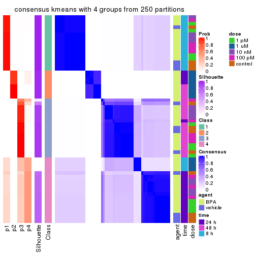
consensus_heatmap(res, k = 5)
consensus_heatmap(res, k = 6)
Heatmaps for the membership of samples in all partitions to see how consistent they are:
membership_heatmap(res, k = 2)
membership_heatmap(res, k = 3)
membership_heatmap(res, k = 4)
membership_heatmap(res, k = 5)
membership_heatmap(res, k = 6)
As soon as we have had the classes for columns, we can look for signatures which are significantly different between classes which can be candidate marks for certain classes. Following are the heatmaps for signatures.
Signature heatmaps where rows are scaled:
get_signatures(res, k = 2)

get_signatures(res, k = 3)
get_signatures(res, k = 4)
get_signatures(res, k = 5)
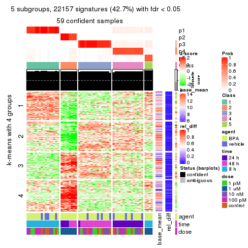
get_signatures(res, k = 6)
Signature heatmaps where rows are not scaled:
get_signatures(res, k = 2, scale_rows = FALSE)
get_signatures(res, k = 3, scale_rows = FALSE)
get_signatures(res, k = 4, scale_rows = FALSE)
get_signatures(res, k = 5, scale_rows = FALSE)

get_signatures(res, k = 6, scale_rows = FALSE)
Compare the overlap of signatures from different k:
compare_signatures(res)
get_signature() returns a data frame invisibly. TO get the list of signatures, the function
call should be assigned to a variable explicitly. In following code, if plot argument is set
to FALSE, no heatmap is plotted while only the differential analysis is performed.
# code only for demonstration
tb = get_signature(res, k = ..., plot = FALSE)
An example of the output of tb is:
#> which_row fdr mean_1 mean_2 scaled_mean_1 scaled_mean_2 km
#> 1 38 0.042760348 8.373488 9.131774 -0.5533452 0.5164555 1
#> 2 40 0.018707592 7.106213 8.469186 -0.6173731 0.5762149 1
#> 3 55 0.019134737 10.221463 11.207825 -0.6159697 0.5749050 1
#> 4 59 0.006059896 5.921854 7.869574 -0.6899429 0.6439467 1
#> 5 60 0.018055526 8.928898 10.211722 -0.6204761 0.5791110 1
#> 6 98 0.009384629 15.714769 14.887706 0.6635654 -0.6193277 2
...
The columns in tb are:
which_row: row indices corresponding to the input matrix.fdr: FDR for the differential test. mean_x: The mean value in group x.scaled_mean_x: The mean value in group x after rows are scaled.km: Row groups if k-means clustering is applied to rows.UMAP plot which shows how samples are separated.
dimension_reduction(res, k = 2, method = "UMAP")

dimension_reduction(res, k = 3, method = "UMAP")
dimension_reduction(res, k = 4, method = "UMAP")
dimension_reduction(res, k = 5, method = "UMAP")
dimension_reduction(res, k = 6, method = "UMAP")
Following heatmap shows how subgroups are split when increasing k:
collect_classes(res)
Test correlation between subgroups and known annotations. If the known annotation is numeric, one-way ANOVA test is applied, and if the known annotation is discrete, chi-squared contingency table test is applied.
test_to_known_factors(res)
#> n agent(p) time(p) dose(p) k
#> ATC:kmeans 60 0.296 9.95e-02 1.87e-07 2
#> ATC:kmeans 41 0.298 1.48e-10 2.00e-06 3
#> ATC:kmeans 55 0.452 5.90e-18 1.69e-07 4
#> ATC:kmeans 59 0.425 3.86e-18 7.19e-07 5
#> ATC:kmeans 59 0.425 3.86e-18 7.19e-07 6
If matrix rows can be associated to genes, consider to use functional_enrichment(res,
...) to perform function enrichment for the signature genes. See this vignette for more detailed explanations.
The object with results only for a single top-value method and a single partition method can be extracted as:
res = res_list["ATC", "skmeans"]
# you can also extract it by
# res = res_list["ATC:skmeans"]
A summary of res and all the functions that can be applied to it:
res
#> A 'ConsensusPartition' object with k = 2, 3, 4, 5, 6.
#> On a matrix with 51941 rows and 60 columns.
#> Top rows (1000, 2000, 3000, 4000, 5000) are extracted by 'ATC' method.
#> Subgroups are detected by 'skmeans' method.
#> Performed in total 1250 partitions by row resampling.
#> Best k for subgroups seems to be 6.
#>
#> Following methods can be applied to this 'ConsensusPartition' object:
#> [1] "cola_report" "collect_classes" "collect_plots"
#> [4] "collect_stats" "colnames" "compare_signatures"
#> [7] "consensus_heatmap" "dimension_reduction" "functional_enrichment"
#> [10] "get_anno_col" "get_anno" "get_classes"
#> [13] "get_consensus" "get_matrix" "get_membership"
#> [16] "get_param" "get_signatures" "get_stats"
#> [19] "is_best_k" "is_stable_k" "membership_heatmap"
#> [22] "ncol" "nrow" "plot_ecdf"
#> [25] "rownames" "select_partition_number" "show"
#> [28] "suggest_best_k" "test_to_known_factors"
collect_plots() function collects all the plots made from res for all k (number of partitions)
into one single page to provide an easy and fast comparison between different k.
collect_plots(res)
The plots are:
k and the heatmap of
predicted classes for each k.k.k.k.All the plots in panels can be made by individual functions and they are plotted later in this section.
select_partition_number() produces several plots showing different
statistics for choosing “optimized” k. There are following statistics:
k;k, the area increased is defined as \(A_k - A_{k-1}\).The detailed explanations of these statistics can be found in the cola vignette.
Generally speaking, lower PAC score, higher mean silhouette score or higher
concordance corresponds to better partition. Rand index and Jaccard index
measure how similar the current partition is compared to partition with k-1.
If they are too similar, we won't accept k is better than k-1.
select_partition_number(res)
The numeric values for all these statistics can be obtained by get_stats().
get_stats(res)
#> k 1-PAC mean_silhouette concordance area_increased Rand Jaccard
#> 2 2 0.605 0.863 0.933 0.3970 0.602 0.602
#> 3 3 1.000 0.991 0.997 0.5665 0.716 0.550
#> 4 4 0.841 0.946 0.858 0.1398 0.847 0.603
#> 5 5 1.000 0.975 0.977 0.0917 0.982 0.925
#> 6 6 0.947 0.922 0.938 0.0413 0.969 0.860
suggest_best_k() suggests the best \(k\) based on these statistics. The rules are as follows:
suggest_best_k(res)
#> [1] 6
#> attr(,"optional")
#> [1] 3 5
There is also optional best \(k\) = 3 5 that is worth to check.
Following shows the table of the partitions (You need to click the show/hide
code output link to see it). The membership matrix (columns with name p*)
is inferred by
clue::cl_consensus()
function with the SE method. Basically the value in the membership matrix
represents the probability to belong to a certain group. The finall class
label for an item is determined with the group with highest probability it
belongs to.
In get_classes() function, the entropy is calculated from the membership
matrix and the silhouette score is calculated from the consensus matrix.
cbind(get_classes(res, k = 2), get_membership(res, k = 2))
#> class entropy silhouette p1 p2
#> GSM439987 1 0.000 0.937 1.000 0.000
#> GSM439988 1 0.000 0.937 1.000 0.000
#> GSM439989 1 0.000 0.937 1.000 0.000
#> GSM439990 1 0.000 0.937 1.000 0.000
#> GSM439991 1 0.000 0.937 1.000 0.000
#> GSM439992 1 0.000 0.937 1.000 0.000
#> GSM439993 1 0.000 0.937 1.000 0.000
#> GSM439994 1 0.000 0.937 1.000 0.000
#> GSM439995 1 0.722 0.782 0.800 0.200
#> GSM439996 1 0.000 0.937 1.000 0.000
#> GSM439997 1 0.722 0.782 0.800 0.200
#> GSM439998 1 0.722 0.782 0.800 0.200
#> GSM440035 1 0.000 0.937 1.000 0.000
#> GSM440036 1 0.000 0.937 1.000 0.000
#> GSM440037 1 0.000 0.937 1.000 0.000
#> GSM440038 1 0.000 0.937 1.000 0.000
#> GSM440011 1 0.000 0.937 1.000 0.000
#> GSM440012 1 0.000 0.937 1.000 0.000
#> GSM440013 1 0.000 0.937 1.000 0.000
#> GSM440014 1 0.000 0.937 1.000 0.000
#> GSM439999 1 0.000 0.937 1.000 0.000
#> GSM440000 1 0.000 0.937 1.000 0.000
#> GSM440001 1 0.000 0.937 1.000 0.000
#> GSM440002 1 0.000 0.937 1.000 0.000
#> GSM440023 2 0.722 0.760 0.200 0.800
#> GSM440024 2 0.722 0.760 0.200 0.800
#> GSM440025 2 0.722 0.760 0.200 0.800
#> GSM440026 2 0.722 0.760 0.200 0.800
#> GSM440039 1 0.000 0.937 1.000 0.000
#> GSM440040 1 0.000 0.937 1.000 0.000
#> GSM440041 1 0.000 0.937 1.000 0.000
#> GSM440042 1 0.000 0.937 1.000 0.000
#> GSM440015 1 0.000 0.937 1.000 0.000
#> GSM440016 1 0.000 0.937 1.000 0.000
#> GSM440017 1 0.000 0.937 1.000 0.000
#> GSM440018 1 0.714 0.785 0.804 0.196
#> GSM440003 1 0.000 0.937 1.000 0.000
#> GSM440004 1 0.000 0.937 1.000 0.000
#> GSM440005 1 0.000 0.937 1.000 0.000
#> GSM440006 1 0.000 0.937 1.000 0.000
#> GSM440027 2 0.000 0.860 0.000 1.000
#> GSM440028 2 0.000 0.860 0.000 1.000
#> GSM440029 2 0.000 0.860 0.000 1.000
#> GSM440030 2 0.000 0.860 0.000 1.000
#> GSM440043 1 0.722 0.782 0.800 0.200
#> GSM440044 1 0.706 0.789 0.808 0.192
#> GSM440045 1 0.722 0.782 0.800 0.200
#> GSM440046 1 0.722 0.782 0.800 0.200
#> GSM440019 1 0.000 0.937 1.000 0.000
#> GSM440020 1 0.722 0.782 0.800 0.200
#> GSM440021 1 0.722 0.782 0.800 0.200
#> GSM440022 1 0.722 0.782 0.800 0.200
#> GSM440007 2 0.925 0.480 0.340 0.660
#> GSM440008 2 0.925 0.480 0.340 0.660
#> GSM440009 2 0.921 0.488 0.336 0.664
#> GSM440010 2 0.000 0.860 0.000 1.000
#> GSM440031 2 0.000 0.860 0.000 1.000
#> GSM440032 2 0.000 0.860 0.000 1.000
#> GSM440033 2 0.000 0.860 0.000 1.000
#> GSM440034 2 0.000 0.860 0.000 1.000
cbind(get_classes(res, k = 3), get_membership(res, k = 3))
#> class entropy silhouette p1 p2 p3
#> GSM439987 1 0.000 1.000 1.000 0 0.000
#> GSM439988 1 0.000 1.000 1.000 0 0.000
#> GSM439989 1 0.000 1.000 1.000 0 0.000
#> GSM439990 1 0.000 1.000 1.000 0 0.000
#> GSM439991 1 0.000 1.000 1.000 0 0.000
#> GSM439992 1 0.000 1.000 1.000 0 0.000
#> GSM439993 1 0.000 1.000 1.000 0 0.000
#> GSM439994 1 0.000 1.000 1.000 0 0.000
#> GSM439995 3 0.000 0.984 0.000 0 1.000
#> GSM439996 3 0.000 0.984 0.000 0 1.000
#> GSM439997 3 0.000 0.984 0.000 0 1.000
#> GSM439998 3 0.000 0.984 0.000 0 1.000
#> GSM440035 1 0.000 1.000 1.000 0 0.000
#> GSM440036 1 0.000 1.000 1.000 0 0.000
#> GSM440037 1 0.000 1.000 1.000 0 0.000
#> GSM440038 1 0.000 1.000 1.000 0 0.000
#> GSM440011 1 0.000 1.000 1.000 0 0.000
#> GSM440012 1 0.000 1.000 1.000 0 0.000
#> GSM440013 1 0.000 1.000 1.000 0 0.000
#> GSM440014 1 0.000 1.000 1.000 0 0.000
#> GSM439999 1 0.000 1.000 1.000 0 0.000
#> GSM440000 1 0.000 1.000 1.000 0 0.000
#> GSM440001 1 0.000 1.000 1.000 0 0.000
#> GSM440002 1 0.000 1.000 1.000 0 0.000
#> GSM440023 2 0.000 1.000 0.000 1 0.000
#> GSM440024 2 0.000 1.000 0.000 1 0.000
#> GSM440025 2 0.000 1.000 0.000 1 0.000
#> GSM440026 2 0.000 1.000 0.000 1 0.000
#> GSM440039 1 0.000 1.000 1.000 0 0.000
#> GSM440040 1 0.000 1.000 1.000 0 0.000
#> GSM440041 1 0.000 1.000 1.000 0 0.000
#> GSM440042 1 0.000 1.000 1.000 0 0.000
#> GSM440015 1 0.000 1.000 1.000 0 0.000
#> GSM440016 1 0.000 1.000 1.000 0 0.000
#> GSM440017 1 0.000 1.000 1.000 0 0.000
#> GSM440018 3 0.000 0.984 0.000 0 1.000
#> GSM440003 1 0.000 1.000 1.000 0 0.000
#> GSM440004 1 0.000 1.000 1.000 0 0.000
#> GSM440005 1 0.000 1.000 1.000 0 0.000
#> GSM440006 1 0.000 1.000 1.000 0 0.000
#> GSM440027 2 0.000 1.000 0.000 1 0.000
#> GSM440028 2 0.000 1.000 0.000 1 0.000
#> GSM440029 2 0.000 1.000 0.000 1 0.000
#> GSM440030 2 0.000 1.000 0.000 1 0.000
#> GSM440043 3 0.000 0.984 0.000 0 1.000
#> GSM440044 3 0.000 0.984 0.000 0 1.000
#> GSM440045 3 0.000 0.984 0.000 0 1.000
#> GSM440046 3 0.000 0.984 0.000 0 1.000
#> GSM440019 3 0.445 0.732 0.192 0 0.808
#> GSM440020 3 0.000 0.984 0.000 0 1.000
#> GSM440021 3 0.000 0.984 0.000 0 1.000
#> GSM440022 3 0.000 0.984 0.000 0 1.000
#> GSM440007 3 0.000 0.984 0.000 0 1.000
#> GSM440008 3 0.000 0.984 0.000 0 1.000
#> GSM440009 3 0.000 0.984 0.000 0 1.000
#> GSM440010 3 0.000 0.984 0.000 0 1.000
#> GSM440031 2 0.000 1.000 0.000 1 0.000
#> GSM440032 2 0.000 1.000 0.000 1 0.000
#> GSM440033 2 0.000 1.000 0.000 1 0.000
#> GSM440034 2 0.000 1.000 0.000 1 0.000
cbind(get_classes(res, k = 4), get_membership(res, k = 4))
#> class entropy silhouette p1 p2 p3 p4
#> GSM439987 1 0.0000 1.000 1.000 0.000 0.000 0.000
#> GSM439988 1 0.0000 1.000 1.000 0.000 0.000 0.000
#> GSM439989 1 0.0000 1.000 1.000 0.000 0.000 0.000
#> GSM439990 1 0.0000 1.000 1.000 0.000 0.000 0.000
#> GSM439991 4 0.4888 0.954 0.412 0.000 0.000 0.588
#> GSM439992 4 0.4888 0.954 0.412 0.000 0.000 0.588
#> GSM439993 4 0.4888 0.954 0.412 0.000 0.000 0.588
#> GSM439994 4 0.4888 0.954 0.412 0.000 0.000 0.588
#> GSM439995 3 0.0000 0.997 0.000 0.000 1.000 0.000
#> GSM439996 3 0.1022 0.964 0.000 0.000 0.968 0.032
#> GSM439997 3 0.0000 0.997 0.000 0.000 1.000 0.000
#> GSM439998 3 0.0000 0.997 0.000 0.000 1.000 0.000
#> GSM440035 1 0.0000 1.000 1.000 0.000 0.000 0.000
#> GSM440036 1 0.0000 1.000 1.000 0.000 0.000 0.000
#> GSM440037 1 0.0000 1.000 1.000 0.000 0.000 0.000
#> GSM440038 1 0.0000 1.000 1.000 0.000 0.000 0.000
#> GSM440011 1 0.0000 1.000 1.000 0.000 0.000 0.000
#> GSM440012 1 0.0000 1.000 1.000 0.000 0.000 0.000
#> GSM440013 1 0.0000 1.000 1.000 0.000 0.000 0.000
#> GSM440014 1 0.0000 1.000 1.000 0.000 0.000 0.000
#> GSM439999 1 0.0000 1.000 1.000 0.000 0.000 0.000
#> GSM440000 1 0.0000 1.000 1.000 0.000 0.000 0.000
#> GSM440001 1 0.0000 1.000 1.000 0.000 0.000 0.000
#> GSM440002 1 0.0000 1.000 1.000 0.000 0.000 0.000
#> GSM440023 2 0.1118 0.761 0.036 0.964 0.000 0.000
#> GSM440024 2 0.1118 0.761 0.036 0.964 0.000 0.000
#> GSM440025 2 0.1118 0.761 0.036 0.964 0.000 0.000
#> GSM440026 2 0.1118 0.761 0.036 0.964 0.000 0.000
#> GSM440039 4 0.4888 0.954 0.412 0.000 0.000 0.588
#> GSM440040 4 0.4888 0.954 0.412 0.000 0.000 0.588
#> GSM440041 4 0.4888 0.954 0.412 0.000 0.000 0.588
#> GSM440042 4 0.4888 0.954 0.412 0.000 0.000 0.588
#> GSM440015 4 0.4888 0.954 0.412 0.000 0.000 0.588
#> GSM440016 4 0.4888 0.954 0.412 0.000 0.000 0.588
#> GSM440017 4 0.4888 0.954 0.412 0.000 0.000 0.588
#> GSM440018 3 0.0469 0.986 0.000 0.000 0.988 0.012
#> GSM440003 4 0.4888 0.954 0.412 0.000 0.000 0.588
#> GSM440004 4 0.4888 0.954 0.412 0.000 0.000 0.588
#> GSM440005 4 0.4888 0.954 0.412 0.000 0.000 0.588
#> GSM440006 4 0.4888 0.954 0.412 0.000 0.000 0.588
#> GSM440027 2 0.4888 0.887 0.000 0.588 0.000 0.412
#> GSM440028 2 0.4888 0.887 0.000 0.588 0.000 0.412
#> GSM440029 2 0.4888 0.887 0.000 0.588 0.000 0.412
#> GSM440030 2 0.4888 0.887 0.000 0.588 0.000 0.412
#> GSM440043 3 0.0000 0.997 0.000 0.000 1.000 0.000
#> GSM440044 3 0.0000 0.997 0.000 0.000 1.000 0.000
#> GSM440045 3 0.0000 0.997 0.000 0.000 1.000 0.000
#> GSM440046 3 0.0000 0.997 0.000 0.000 1.000 0.000
#> GSM440019 4 0.7341 0.379 0.164 0.000 0.360 0.476
#> GSM440020 3 0.0000 0.997 0.000 0.000 1.000 0.000
#> GSM440021 3 0.0000 0.997 0.000 0.000 1.000 0.000
#> GSM440022 3 0.0000 0.997 0.000 0.000 1.000 0.000
#> GSM440007 3 0.0000 0.997 0.000 0.000 1.000 0.000
#> GSM440008 3 0.0000 0.997 0.000 0.000 1.000 0.000
#> GSM440009 3 0.0000 0.997 0.000 0.000 1.000 0.000
#> GSM440010 3 0.0000 0.997 0.000 0.000 1.000 0.000
#> GSM440031 2 0.4888 0.887 0.000 0.588 0.000 0.412
#> GSM440032 2 0.4888 0.887 0.000 0.588 0.000 0.412
#> GSM440033 2 0.4888 0.887 0.000 0.588 0.000 0.412
#> GSM440034 2 0.4888 0.887 0.000 0.588 0.000 0.412
cbind(get_classes(res, k = 5), get_membership(res, k = 5))
#> class entropy silhouette p1 p2 p3 p4 p5
#> GSM439987 1 0.0000 1.000 1.000 0.000 0.000 0.000 0.000
#> GSM439988 1 0.0000 1.000 1.000 0.000 0.000 0.000 0.000
#> GSM439989 1 0.0000 1.000 1.000 0.000 0.000 0.000 0.000
#> GSM439990 1 0.0000 1.000 1.000 0.000 0.000 0.000 0.000
#> GSM439991 4 0.0963 0.988 0.036 0.000 0.000 0.964 0.000
#> GSM439992 4 0.0963 0.988 0.036 0.000 0.000 0.964 0.000
#> GSM439993 4 0.0963 0.988 0.036 0.000 0.000 0.964 0.000
#> GSM439994 4 0.0963 0.988 0.036 0.000 0.000 0.964 0.000
#> GSM439995 3 0.0000 0.958 0.000 0.000 1.000 0.000 0.000
#> GSM439996 3 0.2966 0.747 0.000 0.000 0.816 0.184 0.000
#> GSM439997 3 0.0162 0.957 0.000 0.000 0.996 0.004 0.000
#> GSM439998 3 0.0162 0.957 0.000 0.000 0.996 0.004 0.000
#> GSM440035 1 0.0000 1.000 1.000 0.000 0.000 0.000 0.000
#> GSM440036 1 0.0000 1.000 1.000 0.000 0.000 0.000 0.000
#> GSM440037 1 0.0000 1.000 1.000 0.000 0.000 0.000 0.000
#> GSM440038 1 0.0000 1.000 1.000 0.000 0.000 0.000 0.000
#> GSM440011 1 0.0000 1.000 1.000 0.000 0.000 0.000 0.000
#> GSM440012 1 0.0000 1.000 1.000 0.000 0.000 0.000 0.000
#> GSM440013 1 0.0000 1.000 1.000 0.000 0.000 0.000 0.000
#> GSM440014 1 0.0000 1.000 1.000 0.000 0.000 0.000 0.000
#> GSM439999 1 0.0000 1.000 1.000 0.000 0.000 0.000 0.000
#> GSM440000 1 0.0000 1.000 1.000 0.000 0.000 0.000 0.000
#> GSM440001 1 0.0000 1.000 1.000 0.000 0.000 0.000 0.000
#> GSM440002 1 0.0000 1.000 1.000 0.000 0.000 0.000 0.000
#> GSM440023 5 0.0703 1.000 0.000 0.024 0.000 0.000 0.976
#> GSM440024 5 0.0703 1.000 0.000 0.024 0.000 0.000 0.976
#> GSM440025 5 0.0703 1.000 0.000 0.024 0.000 0.000 0.976
#> GSM440026 5 0.0703 1.000 0.000 0.024 0.000 0.000 0.976
#> GSM440039 4 0.0963 0.988 0.036 0.000 0.000 0.964 0.000
#> GSM440040 4 0.0963 0.988 0.036 0.000 0.000 0.964 0.000
#> GSM440041 4 0.0963 0.988 0.036 0.000 0.000 0.964 0.000
#> GSM440042 4 0.0963 0.988 0.036 0.000 0.000 0.964 0.000
#> GSM440015 4 0.0963 0.988 0.036 0.000 0.000 0.964 0.000
#> GSM440016 4 0.0963 0.988 0.036 0.000 0.000 0.964 0.000
#> GSM440017 4 0.0963 0.988 0.036 0.000 0.000 0.964 0.000
#> GSM440018 3 0.2536 0.837 0.000 0.000 0.868 0.128 0.004
#> GSM440003 4 0.0963 0.988 0.036 0.000 0.000 0.964 0.000
#> GSM440004 4 0.0963 0.988 0.036 0.000 0.000 0.964 0.000
#> GSM440005 4 0.0963 0.988 0.036 0.000 0.000 0.964 0.000
#> GSM440006 4 0.0963 0.988 0.036 0.000 0.000 0.964 0.000
#> GSM440027 2 0.0000 1.000 0.000 1.000 0.000 0.000 0.000
#> GSM440028 2 0.0000 1.000 0.000 1.000 0.000 0.000 0.000
#> GSM440029 2 0.0000 1.000 0.000 1.000 0.000 0.000 0.000
#> GSM440030 2 0.0000 1.000 0.000 1.000 0.000 0.000 0.000
#> GSM440043 3 0.0000 0.958 0.000 0.000 1.000 0.000 0.000
#> GSM440044 3 0.0162 0.957 0.000 0.000 0.996 0.004 0.000
#> GSM440045 3 0.0000 0.958 0.000 0.000 1.000 0.000 0.000
#> GSM440046 3 0.0000 0.958 0.000 0.000 1.000 0.000 0.000
#> GSM440019 4 0.2605 0.797 0.000 0.000 0.148 0.852 0.000
#> GSM440020 3 0.0000 0.958 0.000 0.000 1.000 0.000 0.000
#> GSM440021 3 0.0000 0.958 0.000 0.000 1.000 0.000 0.000
#> GSM440022 3 0.0000 0.958 0.000 0.000 1.000 0.000 0.000
#> GSM440007 3 0.1661 0.937 0.000 0.000 0.940 0.036 0.024
#> GSM440008 3 0.1661 0.937 0.000 0.000 0.940 0.036 0.024
#> GSM440009 3 0.1661 0.937 0.000 0.000 0.940 0.036 0.024
#> GSM440010 3 0.1661 0.937 0.000 0.000 0.940 0.036 0.024
#> GSM440031 2 0.0000 1.000 0.000 1.000 0.000 0.000 0.000
#> GSM440032 2 0.0000 1.000 0.000 1.000 0.000 0.000 0.000
#> GSM440033 2 0.0000 1.000 0.000 1.000 0.000 0.000 0.000
#> GSM440034 2 0.0000 1.000 0.000 1.000 0.000 0.000 0.000
cbind(get_classes(res, k = 6), get_membership(res, k = 6))
#> class entropy silhouette p1 p2 p3 p4 p5 p6
#> GSM439987 1 0.0000 1.000 1 0 0.000 0.000 0 0.000
#> GSM439988 1 0.0000 1.000 1 0 0.000 0.000 0 0.000
#> GSM439989 1 0.0000 1.000 1 0 0.000 0.000 0 0.000
#> GSM439990 1 0.0000 1.000 1 0 0.000 0.000 0 0.000
#> GSM439991 4 0.0000 0.948 0 0 0.000 1.000 0 0.000
#> GSM439992 4 0.0146 0.947 0 0 0.000 0.996 0 0.004
#> GSM439993 4 0.0000 0.948 0 0 0.000 1.000 0 0.000
#> GSM439994 4 0.0000 0.948 0 0 0.000 1.000 0 0.000
#> GSM439995 3 0.1141 0.895 0 0 0.948 0.000 0 0.052
#> GSM439996 3 0.2706 0.800 0 0 0.860 0.036 0 0.104
#> GSM439997 3 0.1910 0.852 0 0 0.892 0.000 0 0.108
#> GSM439998 3 0.1814 0.851 0 0 0.900 0.000 0 0.100
#> GSM440035 1 0.0000 1.000 1 0 0.000 0.000 0 0.000
#> GSM440036 1 0.0000 1.000 1 0 0.000 0.000 0 0.000
#> GSM440037 1 0.0000 1.000 1 0 0.000 0.000 0 0.000
#> GSM440038 1 0.0000 1.000 1 0 0.000 0.000 0 0.000
#> GSM440011 1 0.0000 1.000 1 0 0.000 0.000 0 0.000
#> GSM440012 1 0.0000 1.000 1 0 0.000 0.000 0 0.000
#> GSM440013 1 0.0000 1.000 1 0 0.000 0.000 0 0.000
#> GSM440014 1 0.0000 1.000 1 0 0.000 0.000 0 0.000
#> GSM439999 1 0.0000 1.000 1 0 0.000 0.000 0 0.000
#> GSM440000 1 0.0000 1.000 1 0 0.000 0.000 0 0.000
#> GSM440001 1 0.0000 1.000 1 0 0.000 0.000 0 0.000
#> GSM440002 1 0.0000 1.000 1 0 0.000 0.000 0 0.000
#> GSM440023 5 0.0000 1.000 0 0 0.000 0.000 1 0.000
#> GSM440024 5 0.0000 1.000 0 0 0.000 0.000 1 0.000
#> GSM440025 5 0.0000 1.000 0 0 0.000 0.000 1 0.000
#> GSM440026 5 0.0000 1.000 0 0 0.000 0.000 1 0.000
#> GSM440039 4 0.0363 0.947 0 0 0.000 0.988 0 0.012
#> GSM440040 4 0.0000 0.948 0 0 0.000 1.000 0 0.000
#> GSM440041 4 0.0146 0.947 0 0 0.000 0.996 0 0.004
#> GSM440042 4 0.0000 0.948 0 0 0.000 1.000 0 0.000
#> GSM440015 4 0.0363 0.947 0 0 0.000 0.988 0 0.012
#> GSM440016 4 0.0632 0.943 0 0 0.000 0.976 0 0.024
#> GSM440017 4 0.0363 0.946 0 0 0.000 0.988 0 0.012
#> GSM440018 6 0.4975 0.183 0 0 0.428 0.068 0 0.504
#> GSM440003 4 0.0260 0.947 0 0 0.000 0.992 0 0.008
#> GSM440004 4 0.2135 0.875 0 0 0.000 0.872 0 0.128
#> GSM440005 4 0.1444 0.913 0 0 0.000 0.928 0 0.072
#> GSM440006 4 0.1910 0.888 0 0 0.000 0.892 0 0.108
#> GSM440027 2 0.0000 1.000 0 1 0.000 0.000 0 0.000
#> GSM440028 2 0.0000 1.000 0 1 0.000 0.000 0 0.000
#> GSM440029 2 0.0000 1.000 0 1 0.000 0.000 0 0.000
#> GSM440030 2 0.0000 1.000 0 1 0.000 0.000 0 0.000
#> GSM440043 3 0.1141 0.890 0 0 0.948 0.000 0 0.052
#> GSM440044 3 0.1814 0.849 0 0 0.900 0.000 0 0.100
#> GSM440045 3 0.0458 0.897 0 0 0.984 0.000 0 0.016
#> GSM440046 3 0.1204 0.887 0 0 0.944 0.000 0 0.056
#> GSM440019 4 0.5012 0.350 0 0 0.300 0.600 0 0.100
#> GSM440020 3 0.0000 0.894 0 0 1.000 0.000 0 0.000
#> GSM440021 3 0.1075 0.892 0 0 0.952 0.000 0 0.048
#> GSM440022 3 0.1141 0.890 0 0 0.948 0.000 0 0.052
#> GSM440007 6 0.3288 0.807 0 0 0.276 0.000 0 0.724
#> GSM440008 6 0.3464 0.756 0 0 0.312 0.000 0 0.688
#> GSM440009 6 0.3288 0.807 0 0 0.276 0.000 0 0.724
#> GSM440010 6 0.3266 0.807 0 0 0.272 0.000 0 0.728
#> GSM440031 2 0.0000 1.000 0 1 0.000 0.000 0 0.000
#> GSM440032 2 0.0000 1.000 0 1 0.000 0.000 0 0.000
#> GSM440033 2 0.0000 1.000 0 1 0.000 0.000 0 0.000
#> GSM440034 2 0.0000 1.000 0 1 0.000 0.000 0 0.000
Heatmaps for the consensus matrix. It visualizes the probability of two samples to be in a same group.
consensus_heatmap(res, k = 2)
consensus_heatmap(res, k = 3)
consensus_heatmap(res, k = 4)
consensus_heatmap(res, k = 5)
consensus_heatmap(res, k = 6)
Heatmaps for the membership of samples in all partitions to see how consistent they are:
membership_heatmap(res, k = 2)
membership_heatmap(res, k = 3)
membership_heatmap(res, k = 4)
membership_heatmap(res, k = 5)
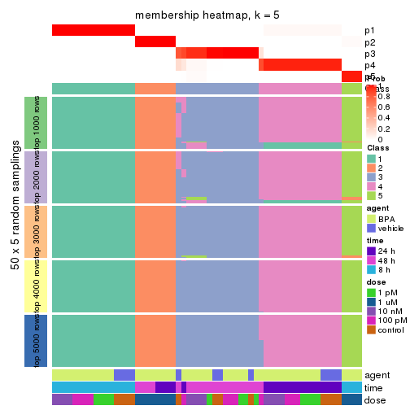
membership_heatmap(res, k = 6)
As soon as we have had the classes for columns, we can look for signatures which are significantly different between classes which can be candidate marks for certain classes. Following are the heatmaps for signatures.
Signature heatmaps where rows are scaled:
get_signatures(res, k = 2)
get_signatures(res, k = 3)
get_signatures(res, k = 4)
get_signatures(res, k = 5)
get_signatures(res, k = 6)
Signature heatmaps where rows are not scaled:
get_signatures(res, k = 2, scale_rows = FALSE)
get_signatures(res, k = 3, scale_rows = FALSE)
get_signatures(res, k = 4, scale_rows = FALSE)
get_signatures(res, k = 5, scale_rows = FALSE)
get_signatures(res, k = 6, scale_rows = FALSE)
Compare the overlap of signatures from different k:
compare_signatures(res)
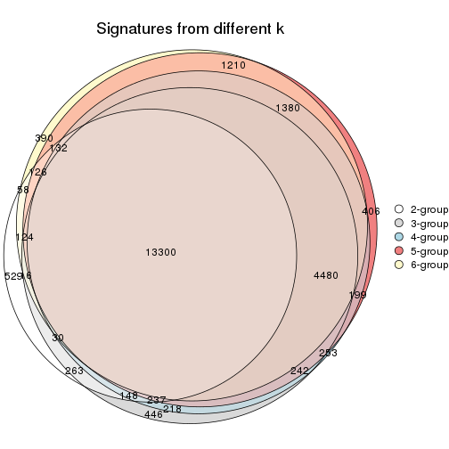
get_signature() returns a data frame invisibly. TO get the list of signatures, the function
call should be assigned to a variable explicitly. In following code, if plot argument is set
to FALSE, no heatmap is plotted while only the differential analysis is performed.
# code only for demonstration
tb = get_signature(res, k = ..., plot = FALSE)
An example of the output of tb is:
#> which_row fdr mean_1 mean_2 scaled_mean_1 scaled_mean_2 km
#> 1 38 0.042760348 8.373488 9.131774 -0.5533452 0.5164555 1
#> 2 40 0.018707592 7.106213 8.469186 -0.6173731 0.5762149 1
#> 3 55 0.019134737 10.221463 11.207825 -0.6159697 0.5749050 1
#> 4 59 0.006059896 5.921854 7.869574 -0.6899429 0.6439467 1
#> 5 60 0.018055526 8.928898 10.211722 -0.6204761 0.5791110 1
#> 6 98 0.009384629 15.714769 14.887706 0.6635654 -0.6193277 2
...
The columns in tb are:
which_row: row indices corresponding to the input matrix.fdr: FDR for the differential test. mean_x: The mean value in group x.scaled_mean_x: The mean value in group x after rows are scaled.km: Row groups if k-means clustering is applied to rows.UMAP plot which shows how samples are separated.
dimension_reduction(res, k = 2, method = "UMAP")
dimension_reduction(res, k = 3, method = "UMAP")
dimension_reduction(res, k = 4, method = "UMAP")
dimension_reduction(res, k = 5, method = "UMAP")
dimension_reduction(res, k = 6, method = "UMAP")
Following heatmap shows how subgroups are split when increasing k:
collect_classes(res)
Test correlation between subgroups and known annotations. If the known annotation is numeric, one-way ANOVA test is applied, and if the known annotation is discrete, chi-squared contingency table test is applied.
test_to_known_factors(res)
#> n agent(p) time(p) dose(p) k
#> ATC:skmeans 57 0.0833 7.41e-01 1.41e-10 2
#> ATC:skmeans 60 0.1507 6.73e-09 3.99e-10 3
#> ATC:skmeans 59 0.2766 6.80e-17 3.18e-08 4
#> ATC:skmeans 60 0.4409 1.97e-17 5.23e-07 5
#> ATC:skmeans 58 0.2755 9.48e-18 1.09e-08 6
If matrix rows can be associated to genes, consider to use functional_enrichment(res,
...) to perform function enrichment for the signature genes. See this vignette for more detailed explanations.
The object with results only for a single top-value method and a single partition method can be extracted as:
res = res_list["ATC", "pam"]
# you can also extract it by
# res = res_list["ATC:pam"]
A summary of res and all the functions that can be applied to it:
res
#> A 'ConsensusPartition' object with k = 2, 3, 4, 5, 6.
#> On a matrix with 51941 rows and 60 columns.
#> Top rows (1000, 2000, 3000, 4000, 5000) are extracted by 'ATC' method.
#> Subgroups are detected by 'pam' method.
#> Performed in total 1250 partitions by row resampling.
#> Best k for subgroups seems to be 5.
#>
#> Following methods can be applied to this 'ConsensusPartition' object:
#> [1] "cola_report" "collect_classes" "collect_plots"
#> [4] "collect_stats" "colnames" "compare_signatures"
#> [7] "consensus_heatmap" "dimension_reduction" "functional_enrichment"
#> [10] "get_anno_col" "get_anno" "get_classes"
#> [13] "get_consensus" "get_matrix" "get_membership"
#> [16] "get_param" "get_signatures" "get_stats"
#> [19] "is_best_k" "is_stable_k" "membership_heatmap"
#> [22] "ncol" "nrow" "plot_ecdf"
#> [25] "rownames" "select_partition_number" "show"
#> [28] "suggest_best_k" "test_to_known_factors"
collect_plots() function collects all the plots made from res for all k (number of partitions)
into one single page to provide an easy and fast comparison between different k.
collect_plots(res)
The plots are:
k and the heatmap of
predicted classes for each k.k.k.k.All the plots in panels can be made by individual functions and they are plotted later in this section.
select_partition_number() produces several plots showing different
statistics for choosing “optimized” k. There are following statistics:
k;k, the area increased is defined as \(A_k - A_{k-1}\).The detailed explanations of these statistics can be found in the cola vignette.
Generally speaking, lower PAC score, higher mean silhouette score or higher
concordance corresponds to better partition. Rand index and Jaccard index
measure how similar the current partition is compared to partition with k-1.
If they are too similar, we won't accept k is better than k-1.
select_partition_number(res)
The numeric values for all these statistics can be obtained by get_stats().
get_stats(res)
#> k 1-PAC mean_silhouette concordance area_increased Rand Jaccard
#> 2 2 1.000 1.000 1.000 0.2358 0.765 0.765
#> 3 3 0.857 0.885 0.954 1.5807 0.623 0.507
#> 4 4 0.923 0.903 0.959 0.2176 0.831 0.585
#> 5 5 1.000 0.957 0.984 0.0490 0.964 0.861
#> 6 6 1.000 0.957 0.984 0.0116 0.991 0.959
suggest_best_k() suggests the best \(k\) based on these statistics. The rules are as follows:
suggest_best_k(res)
#> [1] 5
#> attr(,"optional")
#> [1] 2 4
There is also optional best \(k\) = 2 4 that is worth to check.
Following shows the table of the partitions (You need to click the show/hide
code output link to see it). The membership matrix (columns with name p*)
is inferred by
clue::cl_consensus()
function with the SE method. Basically the value in the membership matrix
represents the probability to belong to a certain group. The finall class
label for an item is determined with the group with highest probability it
belongs to.
In get_classes() function, the entropy is calculated from the membership
matrix and the silhouette score is calculated from the consensus matrix.
cbind(get_classes(res, k = 2), get_membership(res, k = 2))
#> class entropy silhouette p1 p2
#> GSM439987 1 0 1 1 0
#> GSM439988 1 0 1 1 0
#> GSM439989 1 0 1 1 0
#> GSM439990 1 0 1 1 0
#> GSM439991 1 0 1 1 0
#> GSM439992 1 0 1 1 0
#> GSM439993 1 0 1 1 0
#> GSM439994 1 0 1 1 0
#> GSM439995 1 0 1 1 0
#> GSM439996 1 0 1 1 0
#> GSM439997 1 0 1 1 0
#> GSM439998 1 0 1 1 0
#> GSM440035 1 0 1 1 0
#> GSM440036 1 0 1 1 0
#> GSM440037 1 0 1 1 0
#> GSM440038 1 0 1 1 0
#> GSM440011 1 0 1 1 0
#> GSM440012 1 0 1 1 0
#> GSM440013 1 0 1 1 0
#> GSM440014 1 0 1 1 0
#> GSM439999 1 0 1 1 0
#> GSM440000 1 0 1 1 0
#> GSM440001 1 0 1 1 0
#> GSM440002 1 0 1 1 0
#> GSM440023 1 0 1 1 0
#> GSM440024 1 0 1 1 0
#> GSM440025 1 0 1 1 0
#> GSM440026 1 0 1 1 0
#> GSM440039 1 0 1 1 0
#> GSM440040 1 0 1 1 0
#> GSM440041 1 0 1 1 0
#> GSM440042 1 0 1 1 0
#> GSM440015 1 0 1 1 0
#> GSM440016 1 0 1 1 0
#> GSM440017 1 0 1 1 0
#> GSM440018 1 0 1 1 0
#> GSM440003 1 0 1 1 0
#> GSM440004 1 0 1 1 0
#> GSM440005 1 0 1 1 0
#> GSM440006 1 0 1 1 0
#> GSM440027 2 0 1 0 1
#> GSM440028 2 0 1 0 1
#> GSM440029 2 0 1 0 1
#> GSM440030 2 0 1 0 1
#> GSM440043 1 0 1 1 0
#> GSM440044 1 0 1 1 0
#> GSM440045 1 0 1 1 0
#> GSM440046 1 0 1 1 0
#> GSM440019 1 0 1 1 0
#> GSM440020 1 0 1 1 0
#> GSM440021 1 0 1 1 0
#> GSM440022 1 0 1 1 0
#> GSM440007 1 0 1 1 0
#> GSM440008 1 0 1 1 0
#> GSM440009 1 0 1 1 0
#> GSM440010 1 0 1 1 0
#> GSM440031 2 0 1 0 1
#> GSM440032 2 0 1 0 1
#> GSM440033 2 0 1 0 1
#> GSM440034 2 0 1 0 1
cbind(get_classes(res, k = 3), get_membership(res, k = 3))
#> class entropy silhouette p1 p2 p3
#> GSM439987 1 0.0000 0.908 1.000 0 0.000
#> GSM439988 1 0.0000 0.908 1.000 0 0.000
#> GSM439989 1 0.0000 0.908 1.000 0 0.000
#> GSM439990 1 0.0000 0.908 1.000 0 0.000
#> GSM439991 3 0.4887 0.699 0.228 0 0.772
#> GSM439992 1 0.2537 0.854 0.920 0 0.080
#> GSM439993 3 0.1529 0.920 0.040 0 0.960
#> GSM439994 3 0.0747 0.941 0.016 0 0.984
#> GSM439995 3 0.0000 0.952 0.000 0 1.000
#> GSM439996 3 0.0000 0.952 0.000 0 1.000
#> GSM439997 3 0.0000 0.952 0.000 0 1.000
#> GSM439998 3 0.0000 0.952 0.000 0 1.000
#> GSM440035 1 0.0000 0.908 1.000 0 0.000
#> GSM440036 1 0.0000 0.908 1.000 0 0.000
#> GSM440037 1 0.0000 0.908 1.000 0 0.000
#> GSM440038 1 0.0000 0.908 1.000 0 0.000
#> GSM440011 1 0.0000 0.908 1.000 0 0.000
#> GSM440012 1 0.0000 0.908 1.000 0 0.000
#> GSM440013 1 0.0000 0.908 1.000 0 0.000
#> GSM440014 1 0.0000 0.908 1.000 0 0.000
#> GSM439999 1 0.0000 0.908 1.000 0 0.000
#> GSM440000 1 0.0000 0.908 1.000 0 0.000
#> GSM440001 1 0.0000 0.908 1.000 0 0.000
#> GSM440002 1 0.0000 0.908 1.000 0 0.000
#> GSM440023 1 0.5859 0.530 0.656 0 0.344
#> GSM440024 1 0.6274 0.259 0.544 0 0.456
#> GSM440025 1 0.5948 0.502 0.640 0 0.360
#> GSM440026 1 0.4750 0.712 0.784 0 0.216
#> GSM440039 1 0.2261 0.864 0.932 0 0.068
#> GSM440040 3 0.5138 0.664 0.252 0 0.748
#> GSM440041 3 0.0237 0.949 0.004 0 0.996
#> GSM440042 3 0.4178 0.776 0.172 0 0.828
#> GSM440015 3 0.0000 0.952 0.000 0 1.000
#> GSM440016 3 0.0000 0.952 0.000 0 1.000
#> GSM440017 1 0.2356 0.862 0.928 0 0.072
#> GSM440018 3 0.0000 0.952 0.000 0 1.000
#> GSM440003 3 0.0237 0.949 0.004 0 0.996
#> GSM440004 3 0.0000 0.952 0.000 0 1.000
#> GSM440005 3 0.6235 0.109 0.436 0 0.564
#> GSM440006 3 0.0424 0.947 0.008 0 0.992
#> GSM440027 2 0.0000 1.000 0.000 1 0.000
#> GSM440028 2 0.0000 1.000 0.000 1 0.000
#> GSM440029 2 0.0000 1.000 0.000 1 0.000
#> GSM440030 2 0.0000 1.000 0.000 1 0.000
#> GSM440043 3 0.0000 0.952 0.000 0 1.000
#> GSM440044 3 0.0000 0.952 0.000 0 1.000
#> GSM440045 3 0.0000 0.952 0.000 0 1.000
#> GSM440046 3 0.0000 0.952 0.000 0 1.000
#> GSM440019 3 0.0000 0.952 0.000 0 1.000
#> GSM440020 3 0.0000 0.952 0.000 0 1.000
#> GSM440021 3 0.0000 0.952 0.000 0 1.000
#> GSM440022 3 0.0000 0.952 0.000 0 1.000
#> GSM440007 3 0.0000 0.952 0.000 0 1.000
#> GSM440008 3 0.0000 0.952 0.000 0 1.000
#> GSM440009 3 0.0000 0.952 0.000 0 1.000
#> GSM440010 3 0.0000 0.952 0.000 0 1.000
#> GSM440031 2 0.0000 1.000 0.000 1 0.000
#> GSM440032 2 0.0000 1.000 0.000 1 0.000
#> GSM440033 2 0.0000 1.000 0.000 1 0.000
#> GSM440034 2 0.0000 1.000 0.000 1 0.000
cbind(get_classes(res, k = 4), get_membership(res, k = 4))
#> class entropy silhouette p1 p2 p3 p4
#> GSM439987 1 0.0000 0.915 1.000 0 0.000 0.000
#> GSM439988 1 0.0000 0.915 1.000 0 0.000 0.000
#> GSM439989 1 0.0000 0.915 1.000 0 0.000 0.000
#> GSM439990 1 0.0000 0.915 1.000 0 0.000 0.000
#> GSM439991 4 0.0000 1.000 0.000 0 0.000 1.000
#> GSM439992 4 0.0000 1.000 0.000 0 0.000 1.000
#> GSM439993 4 0.0000 1.000 0.000 0 0.000 1.000
#> GSM439994 4 0.0000 1.000 0.000 0 0.000 1.000
#> GSM439995 3 0.0000 0.931 0.000 0 1.000 0.000
#> GSM439996 3 0.2469 0.838 0.000 0 0.892 0.108
#> GSM439997 3 0.0000 0.931 0.000 0 1.000 0.000
#> GSM439998 3 0.0000 0.931 0.000 0 1.000 0.000
#> GSM440035 1 0.0000 0.915 1.000 0 0.000 0.000
#> GSM440036 1 0.0000 0.915 1.000 0 0.000 0.000
#> GSM440037 1 0.0000 0.915 1.000 0 0.000 0.000
#> GSM440038 1 0.0000 0.915 1.000 0 0.000 0.000
#> GSM440011 1 0.0000 0.915 1.000 0 0.000 0.000
#> GSM440012 1 0.0000 0.915 1.000 0 0.000 0.000
#> GSM440013 1 0.0000 0.915 1.000 0 0.000 0.000
#> GSM440014 1 0.0000 0.915 1.000 0 0.000 0.000
#> GSM439999 1 0.0000 0.915 1.000 0 0.000 0.000
#> GSM440000 1 0.0000 0.915 1.000 0 0.000 0.000
#> GSM440001 1 0.0000 0.915 1.000 0 0.000 0.000
#> GSM440002 1 0.0000 0.915 1.000 0 0.000 0.000
#> GSM440023 1 0.5966 0.564 0.648 0 0.280 0.072
#> GSM440024 1 0.6750 0.367 0.540 0 0.356 0.104
#> GSM440025 1 0.6000 0.442 0.592 0 0.356 0.052
#> GSM440026 1 0.5031 0.686 0.740 0 0.212 0.048
#> GSM440039 4 0.0000 1.000 0.000 0 0.000 1.000
#> GSM440040 4 0.0000 1.000 0.000 0 0.000 1.000
#> GSM440041 4 0.0000 1.000 0.000 0 0.000 1.000
#> GSM440042 4 0.0000 1.000 0.000 0 0.000 1.000
#> GSM440015 4 0.0000 1.000 0.000 0 0.000 1.000
#> GSM440016 4 0.0000 1.000 0.000 0 0.000 1.000
#> GSM440017 4 0.0000 1.000 0.000 0 0.000 1.000
#> GSM440018 3 0.4933 0.301 0.000 0 0.568 0.432
#> GSM440003 4 0.0000 1.000 0.000 0 0.000 1.000
#> GSM440004 4 0.0000 1.000 0.000 0 0.000 1.000
#> GSM440005 4 0.0000 1.000 0.000 0 0.000 1.000
#> GSM440006 4 0.0000 1.000 0.000 0 0.000 1.000
#> GSM440027 2 0.0000 1.000 0.000 1 0.000 0.000
#> GSM440028 2 0.0000 1.000 0.000 1 0.000 0.000
#> GSM440029 2 0.0000 1.000 0.000 1 0.000 0.000
#> GSM440030 2 0.0000 1.000 0.000 1 0.000 0.000
#> GSM440043 3 0.0000 0.931 0.000 0 1.000 0.000
#> GSM440044 3 0.0336 0.925 0.000 0 0.992 0.008
#> GSM440045 3 0.0000 0.931 0.000 0 1.000 0.000
#> GSM440046 3 0.0000 0.931 0.000 0 1.000 0.000
#> GSM440019 3 0.4925 0.311 0.000 0 0.572 0.428
#> GSM440020 3 0.0000 0.931 0.000 0 1.000 0.000
#> GSM440021 3 0.0000 0.931 0.000 0 1.000 0.000
#> GSM440022 3 0.0000 0.931 0.000 0 1.000 0.000
#> GSM440007 3 0.0000 0.931 0.000 0 1.000 0.000
#> GSM440008 3 0.0000 0.931 0.000 0 1.000 0.000
#> GSM440009 3 0.0000 0.931 0.000 0 1.000 0.000
#> GSM440010 3 0.0000 0.931 0.000 0 1.000 0.000
#> GSM440031 2 0.0000 1.000 0.000 1 0.000 0.000
#> GSM440032 2 0.0000 1.000 0.000 1 0.000 0.000
#> GSM440033 2 0.0000 1.000 0.000 1 0.000 0.000
#> GSM440034 2 0.0000 1.000 0.000 1 0.000 0.000
cbind(get_classes(res, k = 5), get_membership(res, k = 5))
#> class entropy silhouette p1 p2 p3 p4 p5
#> GSM439987 1 0.0000 1.000 1 0 0.000 0.000 0
#> GSM439988 1 0.0000 1.000 1 0 0.000 0.000 0
#> GSM439989 1 0.0000 1.000 1 0 0.000 0.000 0
#> GSM439990 1 0.0000 1.000 1 0 0.000 0.000 0
#> GSM439991 4 0.0000 1.000 0 0 0.000 1.000 0
#> GSM439992 4 0.0000 1.000 0 0 0.000 1.000 0
#> GSM439993 4 0.0000 1.000 0 0 0.000 1.000 0
#> GSM439994 4 0.0000 1.000 0 0 0.000 1.000 0
#> GSM439995 3 0.0000 0.926 0 0 1.000 0.000 0
#> GSM439996 3 0.1608 0.857 0 0 0.928 0.072 0
#> GSM439997 3 0.0000 0.926 0 0 1.000 0.000 0
#> GSM439998 3 0.0000 0.926 0 0 1.000 0.000 0
#> GSM440035 1 0.0000 1.000 1 0 0.000 0.000 0
#> GSM440036 1 0.0000 1.000 1 0 0.000 0.000 0
#> GSM440037 1 0.0000 1.000 1 0 0.000 0.000 0
#> GSM440038 1 0.0000 1.000 1 0 0.000 0.000 0
#> GSM440011 1 0.0000 1.000 1 0 0.000 0.000 0
#> GSM440012 1 0.0000 1.000 1 0 0.000 0.000 0
#> GSM440013 1 0.0000 1.000 1 0 0.000 0.000 0
#> GSM440014 1 0.0000 1.000 1 0 0.000 0.000 0
#> GSM439999 1 0.0000 1.000 1 0 0.000 0.000 0
#> GSM440000 1 0.0000 1.000 1 0 0.000 0.000 0
#> GSM440001 1 0.0000 1.000 1 0 0.000 0.000 0
#> GSM440002 1 0.0000 1.000 1 0 0.000 0.000 0
#> GSM440023 5 0.0000 1.000 0 0 0.000 0.000 1
#> GSM440024 5 0.0000 1.000 0 0 0.000 0.000 1
#> GSM440025 5 0.0000 1.000 0 0 0.000 0.000 1
#> GSM440026 5 0.0000 1.000 0 0 0.000 0.000 1
#> GSM440039 4 0.0000 1.000 0 0 0.000 1.000 0
#> GSM440040 4 0.0000 1.000 0 0 0.000 1.000 0
#> GSM440041 4 0.0000 1.000 0 0 0.000 1.000 0
#> GSM440042 4 0.0000 1.000 0 0 0.000 1.000 0
#> GSM440015 4 0.0000 1.000 0 0 0.000 1.000 0
#> GSM440016 4 0.0000 1.000 0 0 0.000 1.000 0
#> GSM440017 4 0.0000 1.000 0 0 0.000 1.000 0
#> GSM440018 3 0.4242 0.294 0 0 0.572 0.428 0
#> GSM440003 4 0.0000 1.000 0 0 0.000 1.000 0
#> GSM440004 4 0.0000 1.000 0 0 0.000 1.000 0
#> GSM440005 4 0.0000 1.000 0 0 0.000 1.000 0
#> GSM440006 4 0.0000 1.000 0 0 0.000 1.000 0
#> GSM440027 2 0.0000 1.000 0 1 0.000 0.000 0
#> GSM440028 2 0.0000 1.000 0 1 0.000 0.000 0
#> GSM440029 2 0.0000 1.000 0 1 0.000 0.000 0
#> GSM440030 2 0.0000 1.000 0 1 0.000 0.000 0
#> GSM440043 3 0.0000 0.926 0 0 1.000 0.000 0
#> GSM440044 3 0.0162 0.923 0 0 0.996 0.004 0
#> GSM440045 3 0.0000 0.926 0 0 1.000 0.000 0
#> GSM440046 3 0.0000 0.926 0 0 1.000 0.000 0
#> GSM440019 3 0.4256 0.280 0 0 0.564 0.436 0
#> GSM440020 3 0.0000 0.926 0 0 1.000 0.000 0
#> GSM440021 3 0.0000 0.926 0 0 1.000 0.000 0
#> GSM440022 3 0.0000 0.926 0 0 1.000 0.000 0
#> GSM440007 3 0.0000 0.926 0 0 1.000 0.000 0
#> GSM440008 3 0.0000 0.926 0 0 1.000 0.000 0
#> GSM440009 3 0.0000 0.926 0 0 1.000 0.000 0
#> GSM440010 3 0.0000 0.926 0 0 1.000 0.000 0
#> GSM440031 2 0.0000 1.000 0 1 0.000 0.000 0
#> GSM440032 2 0.0000 1.000 0 1 0.000 0.000 0
#> GSM440033 2 0.0000 1.000 0 1 0.000 0.000 0
#> GSM440034 2 0.0000 1.000 0 1 0.000 0.000 0
cbind(get_classes(res, k = 6), get_membership(res, k = 6))
#> class entropy silhouette p1 p2 p3 p4 p5 p6
#> GSM439987 1 0.0000 1.000 1 0 0.000 0.000 0 0
#> GSM439988 1 0.0000 1.000 1 0 0.000 0.000 0 0
#> GSM439989 1 0.0000 1.000 1 0 0.000 0.000 0 0
#> GSM439990 1 0.0000 1.000 1 0 0.000 0.000 0 0
#> GSM439991 4 0.0000 1.000 0 0 0.000 1.000 0 0
#> GSM439992 4 0.0000 1.000 0 0 0.000 1.000 0 0
#> GSM439993 4 0.0000 1.000 0 0 0.000 1.000 0 0
#> GSM439994 4 0.0000 1.000 0 0 0.000 1.000 0 0
#> GSM439995 3 0.0000 0.926 0 0 1.000 0.000 0 0
#> GSM439996 3 0.1444 0.857 0 0 0.928 0.072 0 0
#> GSM439997 3 0.0000 0.926 0 0 1.000 0.000 0 0
#> GSM439998 3 0.0000 0.926 0 0 1.000 0.000 0 0
#> GSM440035 1 0.0000 1.000 1 0 0.000 0.000 0 0
#> GSM440036 1 0.0000 1.000 1 0 0.000 0.000 0 0
#> GSM440037 1 0.0000 1.000 1 0 0.000 0.000 0 0
#> GSM440038 1 0.0000 1.000 1 0 0.000 0.000 0 0
#> GSM440011 1 0.0000 1.000 1 0 0.000 0.000 0 0
#> GSM440012 1 0.0000 1.000 1 0 0.000 0.000 0 0
#> GSM440013 1 0.0000 1.000 1 0 0.000 0.000 0 0
#> GSM440014 1 0.0000 1.000 1 0 0.000 0.000 0 0
#> GSM439999 1 0.0000 1.000 1 0 0.000 0.000 0 0
#> GSM440000 1 0.0000 1.000 1 0 0.000 0.000 0 0
#> GSM440001 1 0.0000 1.000 1 0 0.000 0.000 0 0
#> GSM440002 1 0.0000 1.000 1 0 0.000 0.000 0 0
#> GSM440023 5 0.0000 1.000 0 0 0.000 0.000 1 0
#> GSM440024 5 0.0000 1.000 0 0 0.000 0.000 1 0
#> GSM440025 5 0.0000 1.000 0 0 0.000 0.000 1 0
#> GSM440026 5 0.0000 1.000 0 0 0.000 0.000 1 0
#> GSM440039 4 0.0000 1.000 0 0 0.000 1.000 0 0
#> GSM440040 4 0.0000 1.000 0 0 0.000 1.000 0 0
#> GSM440041 4 0.0000 1.000 0 0 0.000 1.000 0 0
#> GSM440042 4 0.0000 1.000 0 0 0.000 1.000 0 0
#> GSM440015 4 0.0000 1.000 0 0 0.000 1.000 0 0
#> GSM440016 4 0.0000 1.000 0 0 0.000 1.000 0 0
#> GSM440017 4 0.0000 1.000 0 0 0.000 1.000 0 0
#> GSM440018 3 0.3810 0.294 0 0 0.572 0.428 0 0
#> GSM440003 4 0.0000 1.000 0 0 0.000 1.000 0 0
#> GSM440004 4 0.0000 1.000 0 0 0.000 1.000 0 0
#> GSM440005 4 0.0000 1.000 0 0 0.000 1.000 0 0
#> GSM440006 4 0.0000 1.000 0 0 0.000 1.000 0 0
#> GSM440027 2 0.0000 1.000 0 1 0.000 0.000 0 0
#> GSM440028 2 0.0000 1.000 0 1 0.000 0.000 0 0
#> GSM440029 2 0.0000 1.000 0 1 0.000 0.000 0 0
#> GSM440030 2 0.0000 1.000 0 1 0.000 0.000 0 0
#> GSM440043 3 0.0000 0.926 0 0 1.000 0.000 0 0
#> GSM440044 3 0.0146 0.923 0 0 0.996 0.004 0 0
#> GSM440045 3 0.0000 0.926 0 0 1.000 0.000 0 0
#> GSM440046 3 0.0000 0.926 0 0 1.000 0.000 0 0
#> GSM440019 3 0.3823 0.280 0 0 0.564 0.436 0 0
#> GSM440020 3 0.0000 0.926 0 0 1.000 0.000 0 0
#> GSM440021 3 0.0000 0.926 0 0 1.000 0.000 0 0
#> GSM440022 3 0.0000 0.926 0 0 1.000 0.000 0 0
#> GSM440007 3 0.0000 0.926 0 0 1.000 0.000 0 0
#> GSM440008 3 0.0000 0.926 0 0 1.000 0.000 0 0
#> GSM440009 3 0.0000 0.926 0 0 1.000 0.000 0 0
#> GSM440010 3 0.0000 0.926 0 0 1.000 0.000 0 0
#> GSM440031 6 0.0000 1.000 0 0 0.000 0.000 0 1
#> GSM440032 6 0.0000 1.000 0 0 0.000 0.000 0 1
#> GSM440033 6 0.0000 1.000 0 0 0.000 0.000 0 1
#> GSM440034 6 0.0000 1.000 0 0 0.000 0.000 0 1
Heatmaps for the consensus matrix. It visualizes the probability of two samples to be in a same group.
consensus_heatmap(res, k = 2)
consensus_heatmap(res, k = 3)
consensus_heatmap(res, k = 4)
consensus_heatmap(res, k = 5)
consensus_heatmap(res, k = 6)
Heatmaps for the membership of samples in all partitions to see how consistent they are:
membership_heatmap(res, k = 2)

membership_heatmap(res, k = 3)
membership_heatmap(res, k = 4)
membership_heatmap(res, k = 5)
membership_heatmap(res, k = 6)
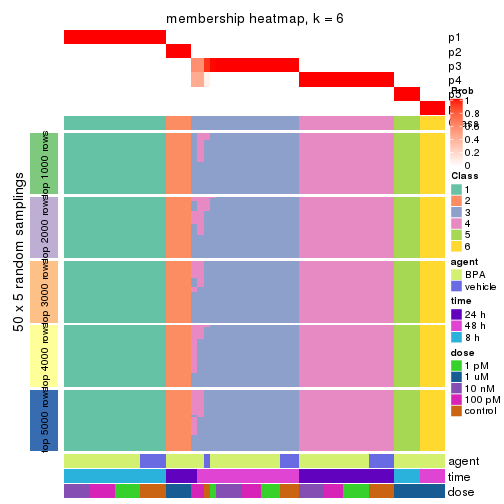
As soon as we have had the classes for columns, we can look for signatures which are significantly different between classes which can be candidate marks for certain classes. Following are the heatmaps for signatures.
Signature heatmaps where rows are scaled:
get_signatures(res, k = 2)
get_signatures(res, k = 3)
get_signatures(res, k = 4)
get_signatures(res, k = 5)
get_signatures(res, k = 6)
Signature heatmaps where rows are not scaled:
get_signatures(res, k = 2, scale_rows = FALSE)

get_signatures(res, k = 3, scale_rows = FALSE)
get_signatures(res, k = 4, scale_rows = FALSE)
get_signatures(res, k = 5, scale_rows = FALSE)
get_signatures(res, k = 6, scale_rows = FALSE)
Compare the overlap of signatures from different k:
compare_signatures(res)
get_signature() returns a data frame invisibly. TO get the list of signatures, the function
call should be assigned to a variable explicitly. In following code, if plot argument is set
to FALSE, no heatmap is plotted while only the differential analysis is performed.
# code only for demonstration
tb = get_signature(res, k = ..., plot = FALSE)
An example of the output of tb is:
#> which_row fdr mean_1 mean_2 scaled_mean_1 scaled_mean_2 km
#> 1 38 0.042760348 8.373488 9.131774 -0.5533452 0.5164555 1
#> 2 40 0.018707592 7.106213 8.469186 -0.6173731 0.5762149 1
#> 3 55 0.019134737 10.221463 11.207825 -0.6159697 0.5749050 1
#> 4 59 0.006059896 5.921854 7.869574 -0.6899429 0.6439467 1
#> 5 60 0.018055526 8.928898 10.211722 -0.6204761 0.5791110 1
#> 6 98 0.009384629 15.714769 14.887706 0.6635654 -0.6193277 2
...
The columns in tb are:
which_row: row indices corresponding to the input matrix.fdr: FDR for the differential test. mean_x: The mean value in group x.scaled_mean_x: The mean value in group x after rows are scaled.km: Row groups if k-means clustering is applied to rows.UMAP plot which shows how samples are separated.
dimension_reduction(res, k = 2, method = "UMAP")

dimension_reduction(res, k = 3, method = "UMAP")

dimension_reduction(res, k = 4, method = "UMAP")
dimension_reduction(res, k = 5, method = "UMAP")
dimension_reduction(res, k = 6, method = "UMAP")
Following heatmap shows how subgroups are split when increasing k:
collect_classes(res)
Test correlation between subgroups and known annotations. If the known annotation is numeric, one-way ANOVA test is applied, and if the known annotation is discrete, chi-squared contingency table test is applied.
test_to_known_factors(res)
#> n agent(p) time(p) dose(p) k
#> ATC:pam 60 0.296 9.95e-02 1.87e-07 2
#> ATC:pam 58 0.292 1.22e-09 1.87e-06 3
#> ATC:pam 56 0.444 2.27e-19 1.50e-05 4
#> ATC:pam 58 0.411 7.16e-19 1.05e-06 5
#> ATC:pam 58 0.555 3.27e-20 1.35e-05 6
If matrix rows can be associated to genes, consider to use functional_enrichment(res,
...) to perform function enrichment for the signature genes. See this vignette for more detailed explanations.
The object with results only for a single top-value method and a single partition method can be extracted as:
res = res_list["ATC", "mclust"]
# you can also extract it by
# res = res_list["ATC:mclust"]
A summary of res and all the functions that can be applied to it:
res
#> A 'ConsensusPartition' object with k = 2, 3, 4, 5, 6.
#> On a matrix with 51941 rows and 60 columns.
#> Top rows (1000, 2000, 3000, 4000, 5000) are extracted by 'ATC' method.
#> Subgroups are detected by 'mclust' method.
#> Performed in total 1250 partitions by row resampling.
#> Best k for subgroups seems to be 6.
#>
#> Following methods can be applied to this 'ConsensusPartition' object:
#> [1] "cola_report" "collect_classes" "collect_plots"
#> [4] "collect_stats" "colnames" "compare_signatures"
#> [7] "consensus_heatmap" "dimension_reduction" "functional_enrichment"
#> [10] "get_anno_col" "get_anno" "get_classes"
#> [13] "get_consensus" "get_matrix" "get_membership"
#> [16] "get_param" "get_signatures" "get_stats"
#> [19] "is_best_k" "is_stable_k" "membership_heatmap"
#> [22] "ncol" "nrow" "plot_ecdf"
#> [25] "rownames" "select_partition_number" "show"
#> [28] "suggest_best_k" "test_to_known_factors"
collect_plots() function collects all the plots made from res for all k (number of partitions)
into one single page to provide an easy and fast comparison between different k.
collect_plots(res)
The plots are:
k and the heatmap of
predicted classes for each k.k.k.k.All the plots in panels can be made by individual functions and they are plotted later in this section.
select_partition_number() produces several plots showing different
statistics for choosing “optimized” k. There are following statistics:
k;k, the area increased is defined as \(A_k - A_{k-1}\).The detailed explanations of these statistics can be found in the cola vignette.
Generally speaking, lower PAC score, higher mean silhouette score or higher
concordance corresponds to better partition. Rand index and Jaccard index
measure how similar the current partition is compared to partition with k-1.
If they are too similar, we won't accept k is better than k-1.
select_partition_number(res)
The numeric values for all these statistics can be obtained by get_stats().
get_stats(res)
#> k 1-PAC mean_silhouette concordance area_increased Rand Jaccard
#> 2 2 0.505 0.850 0.910 0.3175 0.765 0.765
#> 3 3 0.946 0.944 0.971 0.9150 0.584 0.469
#> 4 4 0.911 0.909 0.958 0.2297 0.801 0.528
#> 5 5 0.981 0.964 0.976 0.0401 0.964 0.860
#> 6 6 0.946 0.795 0.899 0.0295 0.982 0.922
suggest_best_k() suggests the best \(k\) based on these statistics. The rules are as follows:
suggest_best_k(res)
#> [1] 6
#> attr(,"optional")
#> [1] 3 4 5
There is also optional best \(k\) = 3 4 5 that is worth to check.
Following shows the table of the partitions (You need to click the show/hide
code output link to see it). The membership matrix (columns with name p*)
is inferred by
clue::cl_consensus()
function with the SE method. Basically the value in the membership matrix
represents the probability to belong to a certain group. The finall class
label for an item is determined with the group with highest probability it
belongs to.
In get_classes() function, the entropy is calculated from the membership
matrix and the silhouette score is calculated from the consensus matrix.
cbind(get_classes(res, k = 2), get_membership(res, k = 2))
#> class entropy silhouette p1 p2
#> GSM439987 1 0.730 0.813 0.796 0.204
#> GSM439988 1 0.730 0.813 0.796 0.204
#> GSM439989 1 0.730 0.813 0.796 0.204
#> GSM439990 1 0.730 0.813 0.796 0.204
#> GSM439991 1 0.000 0.886 1.000 0.000
#> GSM439992 1 0.000 0.886 1.000 0.000
#> GSM439993 1 0.000 0.886 1.000 0.000
#> GSM439994 1 0.000 0.886 1.000 0.000
#> GSM439995 1 0.000 0.886 1.000 0.000
#> GSM439996 1 0.000 0.886 1.000 0.000
#> GSM439997 1 0.000 0.886 1.000 0.000
#> GSM439998 1 0.000 0.886 1.000 0.000
#> GSM440035 1 0.730 0.813 0.796 0.204
#> GSM440036 1 0.730 0.813 0.796 0.204
#> GSM440037 1 0.730 0.813 0.796 0.204
#> GSM440038 1 0.730 0.813 0.796 0.204
#> GSM440011 1 0.730 0.813 0.796 0.204
#> GSM440012 1 0.730 0.813 0.796 0.204
#> GSM440013 1 0.730 0.813 0.796 0.204
#> GSM440014 1 0.730 0.813 0.796 0.204
#> GSM439999 1 0.730 0.813 0.796 0.204
#> GSM440000 1 0.730 0.813 0.796 0.204
#> GSM440001 1 0.730 0.813 0.796 0.204
#> GSM440002 1 0.730 0.813 0.796 0.204
#> GSM440023 1 0.983 0.465 0.576 0.424
#> GSM440024 1 0.983 0.465 0.576 0.424
#> GSM440025 1 0.983 0.465 0.576 0.424
#> GSM440026 1 0.983 0.465 0.576 0.424
#> GSM440039 1 0.000 0.886 1.000 0.000
#> GSM440040 1 0.000 0.886 1.000 0.000
#> GSM440041 1 0.000 0.886 1.000 0.000
#> GSM440042 1 0.000 0.886 1.000 0.000
#> GSM440015 1 0.000 0.886 1.000 0.000
#> GSM440016 1 0.000 0.886 1.000 0.000
#> GSM440017 1 0.000 0.886 1.000 0.000
#> GSM440018 1 0.000 0.886 1.000 0.000
#> GSM440003 1 0.000 0.886 1.000 0.000
#> GSM440004 1 0.000 0.886 1.000 0.000
#> GSM440005 1 0.000 0.886 1.000 0.000
#> GSM440006 1 0.000 0.886 1.000 0.000
#> GSM440027 2 0.118 0.997 0.016 0.984
#> GSM440028 2 0.118 0.997 0.016 0.984
#> GSM440029 2 0.118 0.997 0.016 0.984
#> GSM440030 2 0.118 0.997 0.016 0.984
#> GSM440043 1 0.000 0.886 1.000 0.000
#> GSM440044 1 0.000 0.886 1.000 0.000
#> GSM440045 1 0.000 0.886 1.000 0.000
#> GSM440046 1 0.000 0.886 1.000 0.000
#> GSM440019 1 0.000 0.886 1.000 0.000
#> GSM440020 1 0.000 0.886 1.000 0.000
#> GSM440021 1 0.000 0.886 1.000 0.000
#> GSM440022 1 0.000 0.886 1.000 0.000
#> GSM440007 1 0.402 0.832 0.920 0.080
#> GSM440008 1 0.388 0.836 0.924 0.076
#> GSM440009 1 0.402 0.832 0.920 0.080
#> GSM440010 1 0.402 0.832 0.920 0.080
#> GSM440031 2 0.141 0.997 0.020 0.980
#> GSM440032 2 0.141 0.997 0.020 0.980
#> GSM440033 2 0.141 0.997 0.020 0.980
#> GSM440034 2 0.141 0.997 0.020 0.980
cbind(get_classes(res, k = 3), get_membership(res, k = 3))
#> class entropy silhouette p1 p2 p3
#> GSM439987 1 0.0000 1.000 1.000 0.000 0.000
#> GSM439988 1 0.0000 1.000 1.000 0.000 0.000
#> GSM439989 1 0.0000 1.000 1.000 0.000 0.000
#> GSM439990 1 0.0000 1.000 1.000 0.000 0.000
#> GSM439991 3 0.0237 0.998 0.000 0.004 0.996
#> GSM439992 3 0.0237 0.998 0.000 0.004 0.996
#> GSM439993 3 0.0237 0.998 0.000 0.004 0.996
#> GSM439994 3 0.0237 0.998 0.000 0.004 0.996
#> GSM439995 3 0.0000 0.998 0.000 0.000 1.000
#> GSM439996 3 0.0000 0.998 0.000 0.000 1.000
#> GSM439997 3 0.0000 0.998 0.000 0.000 1.000
#> GSM439998 3 0.0000 0.998 0.000 0.000 1.000
#> GSM440035 1 0.0000 1.000 1.000 0.000 0.000
#> GSM440036 1 0.0000 1.000 1.000 0.000 0.000
#> GSM440037 1 0.0000 1.000 1.000 0.000 0.000
#> GSM440038 1 0.0000 1.000 1.000 0.000 0.000
#> GSM440011 1 0.0000 1.000 1.000 0.000 0.000
#> GSM440012 1 0.0000 1.000 1.000 0.000 0.000
#> GSM440013 1 0.0000 1.000 1.000 0.000 0.000
#> GSM440014 1 0.0000 1.000 1.000 0.000 0.000
#> GSM439999 1 0.0000 1.000 1.000 0.000 0.000
#> GSM440000 1 0.0000 1.000 1.000 0.000 0.000
#> GSM440001 1 0.0000 1.000 1.000 0.000 0.000
#> GSM440002 1 0.0000 1.000 1.000 0.000 0.000
#> GSM440023 2 0.6154 0.504 0.408 0.592 0.000
#> GSM440024 2 0.6154 0.504 0.408 0.592 0.000
#> GSM440025 2 0.6154 0.504 0.408 0.592 0.000
#> GSM440026 2 0.6154 0.504 0.408 0.592 0.000
#> GSM440039 3 0.0237 0.998 0.000 0.004 0.996
#> GSM440040 3 0.0237 0.998 0.000 0.004 0.996
#> GSM440041 3 0.0237 0.998 0.000 0.004 0.996
#> GSM440042 3 0.0237 0.998 0.000 0.004 0.996
#> GSM440015 3 0.0237 0.998 0.000 0.004 0.996
#> GSM440016 3 0.0237 0.998 0.000 0.004 0.996
#> GSM440017 3 0.0237 0.998 0.000 0.004 0.996
#> GSM440018 3 0.0000 0.998 0.000 0.000 1.000
#> GSM440003 3 0.0237 0.998 0.000 0.004 0.996
#> GSM440004 3 0.0237 0.998 0.000 0.004 0.996
#> GSM440005 3 0.0237 0.998 0.000 0.004 0.996
#> GSM440006 3 0.0237 0.998 0.000 0.004 0.996
#> GSM440027 2 0.0237 0.841 0.004 0.996 0.000
#> GSM440028 2 0.0237 0.841 0.004 0.996 0.000
#> GSM440029 2 0.0237 0.841 0.004 0.996 0.000
#> GSM440030 2 0.0237 0.841 0.004 0.996 0.000
#> GSM440043 3 0.0000 0.998 0.000 0.000 1.000
#> GSM440044 3 0.0000 0.998 0.000 0.000 1.000
#> GSM440045 3 0.0000 0.998 0.000 0.000 1.000
#> GSM440046 3 0.0000 0.998 0.000 0.000 1.000
#> GSM440019 3 0.0000 0.998 0.000 0.000 1.000
#> GSM440020 3 0.0000 0.998 0.000 0.000 1.000
#> GSM440021 3 0.0000 0.998 0.000 0.000 1.000
#> GSM440022 3 0.0000 0.998 0.000 0.000 1.000
#> GSM440007 3 0.0237 0.996 0.000 0.004 0.996
#> GSM440008 3 0.0000 0.998 0.000 0.000 1.000
#> GSM440009 3 0.0237 0.996 0.000 0.004 0.996
#> GSM440010 3 0.0237 0.996 0.000 0.004 0.996
#> GSM440031 2 0.0237 0.841 0.004 0.996 0.000
#> GSM440032 2 0.0237 0.841 0.004 0.996 0.000
#> GSM440033 2 0.0237 0.841 0.004 0.996 0.000
#> GSM440034 2 0.0237 0.841 0.004 0.996 0.000
cbind(get_classes(res, k = 4), get_membership(res, k = 4))
#> class entropy silhouette p1 p2 p3 p4
#> GSM439987 1 0.0188 0.900 0.996 0.000 0.000 0.004
#> GSM439988 1 0.0188 0.900 0.996 0.000 0.000 0.004
#> GSM439989 1 0.0188 0.900 0.996 0.000 0.000 0.004
#> GSM439990 1 0.0188 0.900 0.996 0.000 0.000 0.004
#> GSM439991 4 0.0524 0.979 0.004 0.000 0.008 0.988
#> GSM439992 4 0.0524 0.979 0.004 0.000 0.008 0.988
#> GSM439993 4 0.0524 0.979 0.004 0.000 0.008 0.988
#> GSM439994 4 0.0469 0.975 0.000 0.000 0.012 0.988
#> GSM439995 3 0.0000 0.982 0.000 0.000 1.000 0.000
#> GSM439996 3 0.0188 0.980 0.000 0.000 0.996 0.004
#> GSM439997 3 0.0376 0.977 0.004 0.000 0.992 0.004
#> GSM439998 3 0.0376 0.977 0.004 0.000 0.992 0.004
#> GSM440035 1 0.0188 0.900 0.996 0.000 0.000 0.004
#> GSM440036 1 0.0188 0.900 0.996 0.000 0.000 0.004
#> GSM440037 1 0.0188 0.900 0.996 0.000 0.000 0.004
#> GSM440038 1 0.0188 0.900 0.996 0.000 0.000 0.004
#> GSM440011 1 0.0188 0.900 0.996 0.000 0.000 0.004
#> GSM440012 1 0.0188 0.900 0.996 0.000 0.000 0.004
#> GSM440013 1 0.0188 0.900 0.996 0.000 0.000 0.004
#> GSM440014 1 0.0188 0.900 0.996 0.000 0.000 0.004
#> GSM439999 1 0.0188 0.900 0.996 0.000 0.000 0.004
#> GSM440000 1 0.0376 0.897 0.992 0.004 0.000 0.004
#> GSM440001 1 0.0188 0.900 0.996 0.000 0.000 0.004
#> GSM440002 1 0.0188 0.900 0.996 0.000 0.000 0.004
#> GSM440023 1 0.5345 0.343 0.560 0.428 0.000 0.012
#> GSM440024 1 0.5345 0.343 0.560 0.428 0.000 0.012
#> GSM440025 1 0.5345 0.343 0.560 0.428 0.000 0.012
#> GSM440026 1 0.5345 0.343 0.560 0.428 0.000 0.012
#> GSM440039 4 0.0524 0.979 0.004 0.000 0.008 0.988
#> GSM440040 4 0.0524 0.979 0.004 0.000 0.008 0.988
#> GSM440041 4 0.0524 0.979 0.004 0.000 0.008 0.988
#> GSM440042 4 0.0524 0.979 0.004 0.000 0.008 0.988
#> GSM440015 4 0.0469 0.975 0.000 0.000 0.012 0.988
#> GSM440016 4 0.0524 0.979 0.004 0.000 0.008 0.988
#> GSM440017 4 0.0524 0.979 0.004 0.000 0.008 0.988
#> GSM440018 4 0.4164 0.630 0.000 0.000 0.264 0.736
#> GSM440003 4 0.0524 0.979 0.004 0.000 0.008 0.988
#> GSM440004 4 0.0524 0.979 0.004 0.000 0.008 0.988
#> GSM440005 4 0.0524 0.979 0.004 0.000 0.008 0.988
#> GSM440006 4 0.0524 0.979 0.004 0.000 0.008 0.988
#> GSM440027 2 0.0000 1.000 0.000 1.000 0.000 0.000
#> GSM440028 2 0.0000 1.000 0.000 1.000 0.000 0.000
#> GSM440029 2 0.0000 1.000 0.000 1.000 0.000 0.000
#> GSM440030 2 0.0000 1.000 0.000 1.000 0.000 0.000
#> GSM440043 3 0.0000 0.982 0.000 0.000 1.000 0.000
#> GSM440044 3 0.0188 0.980 0.000 0.000 0.996 0.004
#> GSM440045 3 0.0000 0.982 0.000 0.000 1.000 0.000
#> GSM440046 3 0.0000 0.982 0.000 0.000 1.000 0.000
#> GSM440019 3 0.3688 0.728 0.000 0.000 0.792 0.208
#> GSM440020 3 0.0000 0.982 0.000 0.000 1.000 0.000
#> GSM440021 3 0.0000 0.982 0.000 0.000 1.000 0.000
#> GSM440022 3 0.0000 0.982 0.000 0.000 1.000 0.000
#> GSM440007 3 0.0000 0.982 0.000 0.000 1.000 0.000
#> GSM440008 3 0.0000 0.982 0.000 0.000 1.000 0.000
#> GSM440009 3 0.0000 0.982 0.000 0.000 1.000 0.000
#> GSM440010 3 0.0000 0.982 0.000 0.000 1.000 0.000
#> GSM440031 2 0.0000 1.000 0.000 1.000 0.000 0.000
#> GSM440032 2 0.0000 1.000 0.000 1.000 0.000 0.000
#> GSM440033 2 0.0000 1.000 0.000 1.000 0.000 0.000
#> GSM440034 2 0.0000 1.000 0.000 1.000 0.000 0.000
cbind(get_classes(res, k = 5), get_membership(res, k = 5))
#> class entropy silhouette p1 p2 p3 p4 p5
#> GSM439987 1 0.0000 1.000 1.000 0.000 0.000 0.000 0.000
#> GSM439988 1 0.0000 1.000 1.000 0.000 0.000 0.000 0.000
#> GSM439989 1 0.0000 1.000 1.000 0.000 0.000 0.000 0.000
#> GSM439990 1 0.0000 1.000 1.000 0.000 0.000 0.000 0.000
#> GSM439991 4 0.0000 0.984 0.000 0.000 0.000 1.000 0.000
#> GSM439992 4 0.0000 0.984 0.000 0.000 0.000 1.000 0.000
#> GSM439993 4 0.0000 0.984 0.000 0.000 0.000 1.000 0.000
#> GSM439994 4 0.0000 0.984 0.000 0.000 0.000 1.000 0.000
#> GSM439995 3 0.0000 0.976 0.000 0.000 1.000 0.000 0.000
#> GSM439996 3 0.0703 0.974 0.000 0.000 0.976 0.000 0.024
#> GSM439997 3 0.0703 0.974 0.000 0.000 0.976 0.000 0.024
#> GSM439998 3 0.0703 0.974 0.000 0.000 0.976 0.000 0.024
#> GSM440035 1 0.0000 1.000 1.000 0.000 0.000 0.000 0.000
#> GSM440036 1 0.0000 1.000 1.000 0.000 0.000 0.000 0.000
#> GSM440037 1 0.0000 1.000 1.000 0.000 0.000 0.000 0.000
#> GSM440038 1 0.0000 1.000 1.000 0.000 0.000 0.000 0.000
#> GSM440011 1 0.0000 1.000 1.000 0.000 0.000 0.000 0.000
#> GSM440012 1 0.0000 1.000 1.000 0.000 0.000 0.000 0.000
#> GSM440013 1 0.0000 1.000 1.000 0.000 0.000 0.000 0.000
#> GSM440014 1 0.0000 1.000 1.000 0.000 0.000 0.000 0.000
#> GSM439999 1 0.0000 1.000 1.000 0.000 0.000 0.000 0.000
#> GSM440000 1 0.0162 0.996 0.996 0.000 0.000 0.000 0.004
#> GSM440001 1 0.0000 1.000 1.000 0.000 0.000 0.000 0.000
#> GSM440002 1 0.0000 1.000 1.000 0.000 0.000 0.000 0.000
#> GSM440023 5 0.0703 1.000 0.024 0.000 0.000 0.000 0.976
#> GSM440024 5 0.0703 1.000 0.024 0.000 0.000 0.000 0.976
#> GSM440025 5 0.0703 1.000 0.024 0.000 0.000 0.000 0.976
#> GSM440026 5 0.0703 1.000 0.024 0.000 0.000 0.000 0.976
#> GSM440039 4 0.0000 0.984 0.000 0.000 0.000 1.000 0.000
#> GSM440040 4 0.0000 0.984 0.000 0.000 0.000 1.000 0.000
#> GSM440041 4 0.0000 0.984 0.000 0.000 0.000 1.000 0.000
#> GSM440042 4 0.0000 0.984 0.000 0.000 0.000 1.000 0.000
#> GSM440015 4 0.0000 0.984 0.000 0.000 0.000 1.000 0.000
#> GSM440016 4 0.0000 0.984 0.000 0.000 0.000 1.000 0.000
#> GSM440017 4 0.0000 0.984 0.000 0.000 0.000 1.000 0.000
#> GSM440018 4 0.3196 0.729 0.000 0.000 0.192 0.804 0.004
#> GSM440003 4 0.0000 0.984 0.000 0.000 0.000 1.000 0.000
#> GSM440004 4 0.0000 0.984 0.000 0.000 0.000 1.000 0.000
#> GSM440005 4 0.0000 0.984 0.000 0.000 0.000 1.000 0.000
#> GSM440006 4 0.0000 0.984 0.000 0.000 0.000 1.000 0.000
#> GSM440027 2 0.3039 0.864 0.000 0.808 0.000 0.000 0.192
#> GSM440028 2 0.3039 0.864 0.000 0.808 0.000 0.000 0.192
#> GSM440029 2 0.3039 0.864 0.000 0.808 0.000 0.000 0.192
#> GSM440030 2 0.3039 0.864 0.000 0.808 0.000 0.000 0.192
#> GSM440043 3 0.0000 0.976 0.000 0.000 1.000 0.000 0.000
#> GSM440044 3 0.0703 0.974 0.000 0.000 0.976 0.000 0.024
#> GSM440045 3 0.0000 0.976 0.000 0.000 1.000 0.000 0.000
#> GSM440046 3 0.0000 0.976 0.000 0.000 1.000 0.000 0.000
#> GSM440019 3 0.3409 0.772 0.000 0.000 0.816 0.160 0.024
#> GSM440020 3 0.0000 0.976 0.000 0.000 1.000 0.000 0.000
#> GSM440021 3 0.0000 0.976 0.000 0.000 1.000 0.000 0.000
#> GSM440022 3 0.0000 0.976 0.000 0.000 1.000 0.000 0.000
#> GSM440007 3 0.0703 0.974 0.000 0.000 0.976 0.000 0.024
#> GSM440008 3 0.0000 0.976 0.000 0.000 1.000 0.000 0.000
#> GSM440009 3 0.0703 0.974 0.000 0.000 0.976 0.000 0.024
#> GSM440010 3 0.0703 0.974 0.000 0.000 0.976 0.000 0.024
#> GSM440031 2 0.0000 0.877 0.000 1.000 0.000 0.000 0.000
#> GSM440032 2 0.0000 0.877 0.000 1.000 0.000 0.000 0.000
#> GSM440033 2 0.0000 0.877 0.000 1.000 0.000 0.000 0.000
#> GSM440034 2 0.0000 0.877 0.000 1.000 0.000 0.000 0.000
cbind(get_classes(res, k = 6), get_membership(res, k = 6))
#> class entropy silhouette p1 p2 p3 p4 p5 p6
#> GSM439987 1 0.000 1.000 1 0.000 0.000 0.000 0 0.000
#> GSM439988 1 0.000 1.000 1 0.000 0.000 0.000 0 0.000
#> GSM439989 1 0.000 1.000 1 0.000 0.000 0.000 0 0.000
#> GSM439990 1 0.000 1.000 1 0.000 0.000 0.000 0 0.000
#> GSM439991 4 0.000 1.000 0 0.000 0.000 1.000 0 0.000
#> GSM439992 4 0.000 1.000 0 0.000 0.000 1.000 0 0.000
#> GSM439993 4 0.000 1.000 0 0.000 0.000 1.000 0 0.000
#> GSM439994 4 0.000 1.000 0 0.000 0.000 1.000 0 0.000
#> GSM439995 3 0.374 0.413 0 0.000 0.608 0.000 0 0.392
#> GSM439996 3 0.000 0.658 0 0.000 1.000 0.000 0 0.000
#> GSM439997 3 0.000 0.658 0 0.000 1.000 0.000 0 0.000
#> GSM439998 3 0.000 0.658 0 0.000 1.000 0.000 0 0.000
#> GSM440035 1 0.000 1.000 1 0.000 0.000 0.000 0 0.000
#> GSM440036 1 0.000 1.000 1 0.000 0.000 0.000 0 0.000
#> GSM440037 1 0.000 1.000 1 0.000 0.000 0.000 0 0.000
#> GSM440038 1 0.000 1.000 1 0.000 0.000 0.000 0 0.000
#> GSM440011 1 0.000 1.000 1 0.000 0.000 0.000 0 0.000
#> GSM440012 1 0.000 1.000 1 0.000 0.000 0.000 0 0.000
#> GSM440013 1 0.000 1.000 1 0.000 0.000 0.000 0 0.000
#> GSM440014 1 0.000 1.000 1 0.000 0.000 0.000 0 0.000
#> GSM439999 1 0.000 1.000 1 0.000 0.000 0.000 0 0.000
#> GSM440000 1 0.000 1.000 1 0.000 0.000 0.000 0 0.000
#> GSM440001 1 0.000 1.000 1 0.000 0.000 0.000 0 0.000
#> GSM440002 1 0.000 1.000 1 0.000 0.000 0.000 0 0.000
#> GSM440023 5 0.000 1.000 0 0.000 0.000 0.000 1 0.000
#> GSM440024 5 0.000 1.000 0 0.000 0.000 0.000 1 0.000
#> GSM440025 5 0.000 1.000 0 0.000 0.000 0.000 1 0.000
#> GSM440026 5 0.000 1.000 0 0.000 0.000 0.000 1 0.000
#> GSM440039 4 0.000 1.000 0 0.000 0.000 1.000 0 0.000
#> GSM440040 4 0.000 1.000 0 0.000 0.000 1.000 0 0.000
#> GSM440041 4 0.000 1.000 0 0.000 0.000 1.000 0 0.000
#> GSM440042 4 0.000 1.000 0 0.000 0.000 1.000 0 0.000
#> GSM440015 4 0.000 1.000 0 0.000 0.000 1.000 0 0.000
#> GSM440016 4 0.000 1.000 0 0.000 0.000 1.000 0 0.000
#> GSM440017 4 0.000 1.000 0 0.000 0.000 1.000 0 0.000
#> GSM440018 6 0.418 -0.123 0 0.000 0.012 0.488 0 0.500
#> GSM440003 4 0.000 1.000 0 0.000 0.000 1.000 0 0.000
#> GSM440004 4 0.000 1.000 0 0.000 0.000 1.000 0 0.000
#> GSM440005 4 0.000 1.000 0 0.000 0.000 1.000 0 0.000
#> GSM440006 4 0.000 1.000 0 0.000 0.000 1.000 0 0.000
#> GSM440027 2 0.000 0.735 0 1.000 0.000 0.000 0 0.000
#> GSM440028 2 0.000 0.735 0 1.000 0.000 0.000 0 0.000
#> GSM440029 2 0.000 0.735 0 1.000 0.000 0.000 0 0.000
#> GSM440030 2 0.000 0.735 0 1.000 0.000 0.000 0 0.000
#> GSM440043 6 0.387 -0.593 0 0.000 0.500 0.000 0 0.500
#> GSM440044 3 0.000 0.658 0 0.000 1.000 0.000 0 0.000
#> GSM440045 3 0.376 0.402 0 0.000 0.600 0.000 0 0.400
#> GSM440046 3 0.377 0.396 0 0.000 0.596 0.000 0 0.404
#> GSM440019 3 0.249 0.421 0 0.000 0.836 0.164 0 0.000
#> GSM440020 3 0.374 0.413 0 0.000 0.608 0.000 0 0.392
#> GSM440021 3 0.382 0.337 0 0.000 0.568 0.000 0 0.432
#> GSM440022 3 0.377 0.397 0 0.000 0.596 0.000 0 0.404
#> GSM440007 3 0.026 0.656 0 0.000 0.992 0.000 0 0.008
#> GSM440008 3 0.387 0.182 0 0.000 0.508 0.000 0 0.492
#> GSM440009 3 0.026 0.656 0 0.000 0.992 0.000 0 0.008
#> GSM440010 3 0.026 0.656 0 0.000 0.992 0.000 0 0.008
#> GSM440031 2 0.387 0.735 0 0.508 0.000 0.000 0 0.492
#> GSM440032 2 0.387 0.735 0 0.508 0.000 0.000 0 0.492
#> GSM440033 2 0.387 0.735 0 0.508 0.000 0.000 0 0.492
#> GSM440034 2 0.387 0.735 0 0.508 0.000 0.000 0 0.492
Heatmaps for the consensus matrix. It visualizes the probability of two samples to be in a same group.
consensus_heatmap(res, k = 2)
consensus_heatmap(res, k = 3)
consensus_heatmap(res, k = 4)
consensus_heatmap(res, k = 5)
consensus_heatmap(res, k = 6)
Heatmaps for the membership of samples in all partitions to see how consistent they are:
membership_heatmap(res, k = 2)
membership_heatmap(res, k = 3)
membership_heatmap(res, k = 4)
membership_heatmap(res, k = 5)
membership_heatmap(res, k = 6)
As soon as we have had the classes for columns, we can look for signatures which are significantly different between classes which can be candidate marks for certain classes. Following are the heatmaps for signatures.
Signature heatmaps where rows are scaled:
get_signatures(res, k = 2)
get_signatures(res, k = 3)
get_signatures(res, k = 4)
get_signatures(res, k = 5)
get_signatures(res, k = 6)

Signature heatmaps where rows are not scaled:
get_signatures(res, k = 2, scale_rows = FALSE)
get_signatures(res, k = 3, scale_rows = FALSE)
get_signatures(res, k = 4, scale_rows = FALSE)
get_signatures(res, k = 5, scale_rows = FALSE)
get_signatures(res, k = 6, scale_rows = FALSE)
Compare the overlap of signatures from different k:
compare_signatures(res)
get_signature() returns a data frame invisibly. TO get the list of signatures, the function
call should be assigned to a variable explicitly. In following code, if plot argument is set
to FALSE, no heatmap is plotted while only the differential analysis is performed.
# code only for demonstration
tb = get_signature(res, k = ..., plot = FALSE)
An example of the output of tb is:
#> which_row fdr mean_1 mean_2 scaled_mean_1 scaled_mean_2 km
#> 1 38 0.042760348 8.373488 9.131774 -0.5533452 0.5164555 1
#> 2 40 0.018707592 7.106213 8.469186 -0.6173731 0.5762149 1
#> 3 55 0.019134737 10.221463 11.207825 -0.6159697 0.5749050 1
#> 4 59 0.006059896 5.921854 7.869574 -0.6899429 0.6439467 1
#> 5 60 0.018055526 8.928898 10.211722 -0.6204761 0.5791110 1
#> 6 98 0.009384629 15.714769 14.887706 0.6635654 -0.6193277 2
...
The columns in tb are:
which_row: row indices corresponding to the input matrix.fdr: FDR for the differential test. mean_x: The mean value in group x.scaled_mean_x: The mean value in group x after rows are scaled.km: Row groups if k-means clustering is applied to rows.UMAP plot which shows how samples are separated.
dimension_reduction(res, k = 2, method = "UMAP")
dimension_reduction(res, k = 3, method = "UMAP")
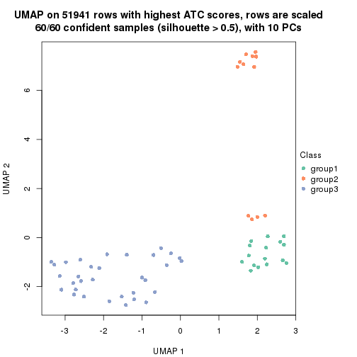
dimension_reduction(res, k = 4, method = "UMAP")
dimension_reduction(res, k = 5, method = "UMAP")
dimension_reduction(res, k = 6, method = "UMAP")
Following heatmap shows how subgroups are split when increasing k:
collect_classes(res)
Test correlation between subgroups and known annotations. If the known annotation is numeric, one-way ANOVA test is applied, and if the known annotation is discrete, chi-squared contingency table test is applied.
test_to_known_factors(res)
#> n agent(p) time(p) dose(p) k
#> ATC:mclust 56 0.258 1.55e-01 2.01e-11 2
#> ATC:mclust 60 0.153 9.44e-10 4.66e-10 3
#> ATC:mclust 56 0.467 1.71e-19 1.20e-07 4
#> ATC:mclust 60 0.441 9.81e-20 5.23e-07 5
#> ATC:mclust 50 0.246 3.55e-15 4.85e-06 6
If matrix rows can be associated to genes, consider to use functional_enrichment(res,
...) to perform function enrichment for the signature genes. See this vignette for more detailed explanations.
The object with results only for a single top-value method and a single partition method can be extracted as:
res = res_list["ATC", "NMF"]
# you can also extract it by
# res = res_list["ATC:NMF"]
A summary of res and all the functions that can be applied to it:
res
#> A 'ConsensusPartition' object with k = 2, 3, 4, 5, 6.
#> On a matrix with 51941 rows and 60 columns.
#> Top rows (1000, 2000, 3000, 4000, 5000) are extracted by 'ATC' method.
#> Subgroups are detected by 'NMF' method.
#> Performed in total 1250 partitions by row resampling.
#> Best k for subgroups seems to be 2.
#>
#> Following methods can be applied to this 'ConsensusPartition' object:
#> [1] "cola_report" "collect_classes" "collect_plots"
#> [4] "collect_stats" "colnames" "compare_signatures"
#> [7] "consensus_heatmap" "dimension_reduction" "functional_enrichment"
#> [10] "get_anno_col" "get_anno" "get_classes"
#> [13] "get_consensus" "get_matrix" "get_membership"
#> [16] "get_param" "get_signatures" "get_stats"
#> [19] "is_best_k" "is_stable_k" "membership_heatmap"
#> [22] "ncol" "nrow" "plot_ecdf"
#> [25] "rownames" "select_partition_number" "show"
#> [28] "suggest_best_k" "test_to_known_factors"
collect_plots() function collects all the plots made from res for all k (number of partitions)
into one single page to provide an easy and fast comparison between different k.
collect_plots(res)
The plots are:
k and the heatmap of
predicted classes for each k.k.k.k.All the plots in panels can be made by individual functions and they are plotted later in this section.
select_partition_number() produces several plots showing different
statistics for choosing “optimized” k. There are following statistics:
k;k, the area increased is defined as \(A_k - A_{k-1}\).The detailed explanations of these statistics can be found in the cola vignette.
Generally speaking, lower PAC score, higher mean silhouette score or higher
concordance corresponds to better partition. Rand index and Jaccard index
measure how similar the current partition is compared to partition with k-1.
If they are too similar, we won't accept k is better than k-1.
select_partition_number(res)
The numeric values for all these statistics can be obtained by get_stats().
get_stats(res)
#> k 1-PAC mean_silhouette concordance area_increased Rand Jaccard
#> 2 2 1.000 1.000 1.000 0.2358 0.765 0.765
#> 3 3 0.767 0.886 0.946 1.5629 0.620 0.504
#> 4 4 0.750 0.773 0.923 0.0321 0.985 0.960
#> 5 5 0.635 0.758 0.827 0.1616 0.840 0.599
#> 6 6 0.657 0.809 0.844 0.0590 0.906 0.673
suggest_best_k() suggests the best \(k\) based on these statistics. The rules are as follows:
suggest_best_k(res)
#> [1] 2
Following shows the table of the partitions (You need to click the show/hide
code output link to see it). The membership matrix (columns with name p*)
is inferred by
clue::cl_consensus()
function with the SE method. Basically the value in the membership matrix
represents the probability to belong to a certain group. The finall class
label for an item is determined with the group with highest probability it
belongs to.
In get_classes() function, the entropy is calculated from the membership
matrix and the silhouette score is calculated from the consensus matrix.
cbind(get_classes(res, k = 2), get_membership(res, k = 2))
#> class entropy silhouette p1 p2
#> GSM439987 1 0 1 1 0
#> GSM439988 1 0 1 1 0
#> GSM439989 1 0 1 1 0
#> GSM439990 1 0 1 1 0
#> GSM439991 1 0 1 1 0
#> GSM439992 1 0 1 1 0
#> GSM439993 1 0 1 1 0
#> GSM439994 1 0 1 1 0
#> GSM439995 1 0 1 1 0
#> GSM439996 1 0 1 1 0
#> GSM439997 1 0 1 1 0
#> GSM439998 1 0 1 1 0
#> GSM440035 1 0 1 1 0
#> GSM440036 1 0 1 1 0
#> GSM440037 1 0 1 1 0
#> GSM440038 1 0 1 1 0
#> GSM440011 1 0 1 1 0
#> GSM440012 1 0 1 1 0
#> GSM440013 1 0 1 1 0
#> GSM440014 1 0 1 1 0
#> GSM439999 1 0 1 1 0
#> GSM440000 1 0 1 1 0
#> GSM440001 1 0 1 1 0
#> GSM440002 1 0 1 1 0
#> GSM440023 1 0 1 1 0
#> GSM440024 1 0 1 1 0
#> GSM440025 1 0 1 1 0
#> GSM440026 1 0 1 1 0
#> GSM440039 1 0 1 1 0
#> GSM440040 1 0 1 1 0
#> GSM440041 1 0 1 1 0
#> GSM440042 1 0 1 1 0
#> GSM440015 1 0 1 1 0
#> GSM440016 1 0 1 1 0
#> GSM440017 1 0 1 1 0
#> GSM440018 1 0 1 1 0
#> GSM440003 1 0 1 1 0
#> GSM440004 1 0 1 1 0
#> GSM440005 1 0 1 1 0
#> GSM440006 1 0 1 1 0
#> GSM440027 2 0 1 0 1
#> GSM440028 2 0 1 0 1
#> GSM440029 2 0 1 0 1
#> GSM440030 2 0 1 0 1
#> GSM440043 1 0 1 1 0
#> GSM440044 1 0 1 1 0
#> GSM440045 1 0 1 1 0
#> GSM440046 1 0 1 1 0
#> GSM440019 1 0 1 1 0
#> GSM440020 1 0 1 1 0
#> GSM440021 1 0 1 1 0
#> GSM440022 1 0 1 1 0
#> GSM440007 1 0 1 1 0
#> GSM440008 1 0 1 1 0
#> GSM440009 1 0 1 1 0
#> GSM440010 1 0 1 1 0
#> GSM440031 2 0 1 0 1
#> GSM440032 2 0 1 0 1
#> GSM440033 2 0 1 0 1
#> GSM440034 2 0 1 0 1
cbind(get_classes(res, k = 3), get_membership(res, k = 3))
#> class entropy silhouette p1 p2 p3
#> GSM439987 1 0.0237 0.932 0.996 0 0.004
#> GSM439988 1 0.0237 0.932 0.996 0 0.004
#> GSM439989 1 0.0237 0.932 0.996 0 0.004
#> GSM439990 1 0.0237 0.932 0.996 0 0.004
#> GSM439991 3 0.5327 0.688 0.272 0 0.728
#> GSM439992 1 0.5733 0.504 0.676 0 0.324
#> GSM439993 3 0.3941 0.836 0.156 0 0.844
#> GSM439994 3 0.2261 0.899 0.068 0 0.932
#> GSM439995 3 0.0000 0.917 0.000 0 1.000
#> GSM439996 3 0.0237 0.917 0.004 0 0.996
#> GSM439997 3 0.0000 0.917 0.000 0 1.000
#> GSM439998 3 0.0000 0.917 0.000 0 1.000
#> GSM440035 1 0.0237 0.932 0.996 0 0.004
#> GSM440036 1 0.0237 0.932 0.996 0 0.004
#> GSM440037 1 0.0237 0.932 0.996 0 0.004
#> GSM440038 1 0.0237 0.932 0.996 0 0.004
#> GSM440011 1 0.0237 0.932 0.996 0 0.004
#> GSM440012 1 0.0237 0.932 0.996 0 0.004
#> GSM440013 1 0.0237 0.932 0.996 0 0.004
#> GSM440014 1 0.0237 0.932 0.996 0 0.004
#> GSM439999 1 0.0237 0.932 0.996 0 0.004
#> GSM440000 1 0.0237 0.932 0.996 0 0.004
#> GSM440001 1 0.0237 0.932 0.996 0 0.004
#> GSM440002 1 0.0237 0.932 0.996 0 0.004
#> GSM440023 1 0.0237 0.932 0.996 0 0.004
#> GSM440024 1 0.0237 0.932 0.996 0 0.004
#> GSM440025 1 0.0237 0.932 0.996 0 0.004
#> GSM440026 1 0.0000 0.927 1.000 0 0.000
#> GSM440039 1 0.5560 0.556 0.700 0 0.300
#> GSM440040 3 0.5706 0.597 0.320 0 0.680
#> GSM440041 3 0.3192 0.874 0.112 0 0.888
#> GSM440042 3 0.4235 0.816 0.176 0 0.824
#> GSM440015 3 0.1860 0.906 0.052 0 0.948
#> GSM440016 3 0.3116 0.877 0.108 0 0.892
#> GSM440017 1 0.5968 0.403 0.636 0 0.364
#> GSM440018 3 0.1753 0.907 0.048 0 0.952
#> GSM440003 3 0.2165 0.901 0.064 0 0.936
#> GSM440004 3 0.5397 0.675 0.280 0 0.720
#> GSM440005 1 0.5016 0.663 0.760 0 0.240
#> GSM440006 3 0.4974 0.744 0.236 0 0.764
#> GSM440027 2 0.0000 1.000 0.000 1 0.000
#> GSM440028 2 0.0000 1.000 0.000 1 0.000
#> GSM440029 2 0.0000 1.000 0.000 1 0.000
#> GSM440030 2 0.0000 1.000 0.000 1 0.000
#> GSM440043 3 0.0000 0.917 0.000 0 1.000
#> GSM440044 3 0.0000 0.917 0.000 0 1.000
#> GSM440045 3 0.0000 0.917 0.000 0 1.000
#> GSM440046 3 0.0000 0.917 0.000 0 1.000
#> GSM440019 3 0.0592 0.916 0.012 0 0.988
#> GSM440020 3 0.0000 0.917 0.000 0 1.000
#> GSM440021 3 0.0000 0.917 0.000 0 1.000
#> GSM440022 3 0.0000 0.917 0.000 0 1.000
#> GSM440007 3 0.0000 0.917 0.000 0 1.000
#> GSM440008 3 0.0000 0.917 0.000 0 1.000
#> GSM440009 3 0.0000 0.917 0.000 0 1.000
#> GSM440010 3 0.0000 0.917 0.000 0 1.000
#> GSM440031 2 0.0000 1.000 0.000 1 0.000
#> GSM440032 2 0.0000 1.000 0.000 1 0.000
#> GSM440033 2 0.0000 1.000 0.000 1 0.000
#> GSM440034 2 0.0000 1.000 0.000 1 0.000
cbind(get_classes(res, k = 4), get_membership(res, k = 4))
#> class entropy silhouette p1 p2 p3 p4
#> GSM439987 1 0.0188 0.8994 0.996 0.000 0.004 0.000
#> GSM439988 1 0.0376 0.8985 0.992 0.000 0.004 0.004
#> GSM439989 1 0.0188 0.8994 0.996 0.000 0.004 0.000
#> GSM439990 1 0.0188 0.8994 0.996 0.000 0.004 0.000
#> GSM439991 3 0.5337 0.4067 0.260 0.000 0.696 0.044
#> GSM439992 1 0.5992 0.0593 0.516 0.000 0.444 0.040
#> GSM439993 3 0.4224 0.6084 0.144 0.000 0.812 0.044
#> GSM439994 3 0.3144 0.7091 0.072 0.000 0.884 0.044
#> GSM439995 3 0.0592 0.8025 0.000 0.000 0.984 0.016
#> GSM439996 3 0.0188 0.8072 0.000 0.000 0.996 0.004
#> GSM439997 3 0.0000 0.8078 0.000 0.000 1.000 0.000
#> GSM439998 3 0.0469 0.8051 0.000 0.000 0.988 0.012
#> GSM440035 1 0.1042 0.8899 0.972 0.000 0.008 0.020
#> GSM440036 1 0.0657 0.8962 0.984 0.000 0.004 0.012
#> GSM440037 1 0.0469 0.8933 0.988 0.000 0.000 0.012
#> GSM440038 1 0.0657 0.8956 0.984 0.000 0.004 0.012
#> GSM440011 1 0.0188 0.8994 0.996 0.000 0.004 0.000
#> GSM440012 1 0.0804 0.8933 0.980 0.000 0.008 0.012
#> GSM440013 1 0.0188 0.8994 0.996 0.000 0.004 0.000
#> GSM440014 1 0.0188 0.8994 0.996 0.000 0.004 0.000
#> GSM439999 1 0.0188 0.8994 0.996 0.000 0.004 0.000
#> GSM440000 1 0.0657 0.8909 0.984 0.000 0.004 0.012
#> GSM440001 1 0.0895 0.8924 0.976 0.000 0.004 0.020
#> GSM440002 1 0.0779 0.8945 0.980 0.000 0.004 0.016
#> GSM440023 1 0.0779 0.8959 0.980 0.000 0.004 0.016
#> GSM440024 1 0.0779 0.8959 0.980 0.000 0.004 0.016
#> GSM440025 1 0.0779 0.8959 0.980 0.000 0.004 0.016
#> GSM440026 1 0.1118 0.8836 0.964 0.000 0.000 0.036
#> GSM440039 1 0.5713 0.3418 0.620 0.000 0.340 0.040
#> GSM440040 3 0.5657 0.2953 0.312 0.000 0.644 0.044
#> GSM440041 3 0.3587 0.6709 0.104 0.000 0.856 0.040
#> GSM440042 3 0.4920 0.5221 0.192 0.000 0.756 0.052
#> GSM440015 3 0.0804 0.8039 0.008 0.000 0.980 0.012
#> GSM440016 3 0.1109 0.7929 0.028 0.000 0.968 0.004
#> GSM440017 1 0.5827 0.2051 0.568 0.000 0.396 0.036
#> GSM440018 4 0.5600 0.0000 0.020 0.000 0.468 0.512
#> GSM440003 3 0.1182 0.7963 0.016 0.000 0.968 0.016
#> GSM440004 3 0.5227 0.4191 0.256 0.000 0.704 0.040
#> GSM440005 1 0.5106 0.5484 0.720 0.000 0.240 0.040
#> GSM440006 3 0.5056 0.4759 0.224 0.000 0.732 0.044
#> GSM440027 2 0.0188 0.9943 0.000 0.996 0.000 0.004
#> GSM440028 2 0.0188 0.9943 0.000 0.996 0.000 0.004
#> GSM440029 2 0.0000 0.9954 0.000 1.000 0.000 0.000
#> GSM440030 2 0.0000 0.9954 0.000 1.000 0.000 0.000
#> GSM440043 3 0.0817 0.7935 0.000 0.000 0.976 0.024
#> GSM440044 3 0.0000 0.8078 0.000 0.000 1.000 0.000
#> GSM440045 3 0.0592 0.8025 0.000 0.000 0.984 0.016
#> GSM440046 3 0.0817 0.7935 0.000 0.000 0.976 0.024
#> GSM440019 3 0.0895 0.8017 0.004 0.000 0.976 0.020
#> GSM440020 3 0.0592 0.8025 0.000 0.000 0.984 0.016
#> GSM440021 3 0.0817 0.7935 0.000 0.000 0.976 0.024
#> GSM440022 3 0.0592 0.8025 0.000 0.000 0.984 0.016
#> GSM440007 3 0.0469 0.8046 0.000 0.000 0.988 0.012
#> GSM440008 3 0.0707 0.7988 0.000 0.000 0.980 0.020
#> GSM440009 3 0.0000 0.8078 0.000 0.000 1.000 0.000
#> GSM440010 3 0.0188 0.8073 0.000 0.000 0.996 0.004
#> GSM440031 2 0.0469 0.9937 0.000 0.988 0.000 0.012
#> GSM440032 2 0.0188 0.9954 0.000 0.996 0.000 0.004
#> GSM440033 2 0.0336 0.9948 0.000 0.992 0.000 0.008
#> GSM440034 2 0.0469 0.9937 0.000 0.988 0.000 0.012
cbind(get_classes(res, k = 5), get_membership(res, k = 5))
#> class entropy silhouette p1 p2 p3 p4 p5
#> GSM439987 1 0.1121 0.8361 0.956 0.000 0.000 0.044 NA
#> GSM439988 1 0.0162 0.8319 0.996 0.000 0.000 0.004 NA
#> GSM439989 1 0.1502 0.8340 0.940 0.000 0.000 0.056 NA
#> GSM439990 1 0.1408 0.8367 0.948 0.000 0.000 0.044 NA
#> GSM439991 4 0.4998 0.8239 0.104 0.000 0.196 0.700 NA
#> GSM439992 4 0.5348 0.7868 0.200 0.000 0.108 0.684 NA
#> GSM439993 4 0.4756 0.7429 0.044 0.000 0.288 0.668 NA
#> GSM439994 4 0.4457 0.5806 0.012 0.000 0.368 0.620 NA
#> GSM439995 3 0.0579 0.8088 0.000 0.000 0.984 0.008 NA
#> GSM439996 3 0.3409 0.7275 0.000 0.000 0.816 0.160 NA
#> GSM439997 3 0.2616 0.7938 0.000 0.000 0.888 0.076 NA
#> GSM439998 3 0.3165 0.7678 0.000 0.000 0.848 0.116 NA
#> GSM440035 1 0.3607 0.6815 0.752 0.000 0.000 0.244 NA
#> GSM440036 1 0.3266 0.7362 0.796 0.000 0.000 0.200 NA
#> GSM440037 1 0.1012 0.8214 0.968 0.000 0.000 0.020 NA
#> GSM440038 1 0.0807 0.8253 0.976 0.000 0.000 0.012 NA
#> GSM440011 1 0.1571 0.8326 0.936 0.000 0.000 0.060 NA
#> GSM440012 1 0.1211 0.8180 0.960 0.000 0.000 0.024 NA
#> GSM440013 1 0.0955 0.8359 0.968 0.000 0.000 0.028 NA
#> GSM440014 1 0.1121 0.8365 0.956 0.000 0.000 0.044 NA
#> GSM439999 1 0.1557 0.8359 0.940 0.000 0.000 0.052 NA
#> GSM440000 1 0.2209 0.7938 0.912 0.000 0.000 0.056 NA
#> GSM440001 1 0.3508 0.6759 0.748 0.000 0.000 0.252 NA
#> GSM440002 1 0.3398 0.7196 0.780 0.000 0.000 0.216 NA
#> GSM440023 1 0.5423 0.5914 0.548 0.000 0.000 0.064 NA
#> GSM440024 1 0.5261 0.5740 0.528 0.000 0.000 0.048 NA
#> GSM440025 1 0.4980 0.6196 0.584 0.000 0.000 0.036 NA
#> GSM440026 1 0.5751 0.5845 0.540 0.000 0.000 0.096 NA
#> GSM440039 4 0.5211 0.7230 0.256 0.000 0.076 0.664 NA
#> GSM440040 4 0.5304 0.8213 0.128 0.000 0.168 0.696 NA
#> GSM440041 4 0.4540 0.6878 0.024 0.000 0.320 0.656 NA
#> GSM440042 4 0.4728 0.7954 0.060 0.000 0.240 0.700 NA
#> GSM440015 3 0.4880 0.4604 0.004 0.000 0.660 0.296 NA
#> GSM440016 3 0.4438 0.2438 0.004 0.000 0.608 0.384 NA
#> GSM440017 4 0.5745 0.7547 0.252 0.000 0.124 0.620 NA
#> GSM440018 3 0.7798 0.2779 0.120 0.000 0.460 0.160 NA
#> GSM440003 3 0.4684 -0.0331 0.004 0.000 0.536 0.452 NA
#> GSM440004 4 0.5436 0.8207 0.116 0.000 0.216 0.664 NA
#> GSM440005 4 0.5064 0.6924 0.260 0.000 0.056 0.676 NA
#> GSM440006 4 0.4958 0.8138 0.084 0.000 0.224 0.692 NA
#> GSM440027 2 0.0609 0.9890 0.000 0.980 0.000 0.000 NA
#> GSM440028 2 0.0703 0.9867 0.000 0.976 0.000 0.000 NA
#> GSM440029 2 0.0290 0.9936 0.000 0.992 0.000 0.000 NA
#> GSM440030 2 0.0162 0.9942 0.000 0.996 0.000 0.000 NA
#> GSM440043 3 0.1106 0.7973 0.000 0.000 0.964 0.012 NA
#> GSM440044 3 0.2769 0.7855 0.000 0.000 0.876 0.092 NA
#> GSM440045 3 0.0000 0.8075 0.000 0.000 1.000 0.000 NA
#> GSM440046 3 0.1117 0.7977 0.000 0.000 0.964 0.016 NA
#> GSM440019 3 0.4114 0.5588 0.000 0.000 0.712 0.272 NA
#> GSM440020 3 0.0404 0.8066 0.000 0.000 0.988 0.000 NA
#> GSM440021 3 0.2104 0.7660 0.000 0.000 0.916 0.024 NA
#> GSM440022 3 0.0671 0.8087 0.000 0.000 0.980 0.004 NA
#> GSM440007 3 0.1915 0.8065 0.000 0.000 0.928 0.040 NA
#> GSM440008 3 0.0898 0.7997 0.000 0.000 0.972 0.008 NA
#> GSM440009 3 0.2491 0.7976 0.000 0.000 0.896 0.068 NA
#> GSM440010 3 0.1750 0.8070 0.000 0.000 0.936 0.036 NA
#> GSM440031 2 0.0000 0.9945 0.000 1.000 0.000 0.000 NA
#> GSM440032 2 0.0000 0.9945 0.000 1.000 0.000 0.000 NA
#> GSM440033 2 0.0000 0.9945 0.000 1.000 0.000 0.000 NA
#> GSM440034 2 0.0162 0.9935 0.000 0.996 0.000 0.004 NA
cbind(get_classes(res, k = 6), get_membership(res, k = 6))
#> class entropy silhouette p1 p2 p3 p4 p5 p6
#> GSM439987 1 0.2060 0.8560 0.900 0.000 0.000 0.084 0.000 0.016
#> GSM439988 1 0.2213 0.8391 0.908 0.000 0.000 0.048 0.012 0.032
#> GSM439989 1 0.1901 0.8580 0.912 0.000 0.000 0.076 0.004 0.008
#> GSM439990 1 0.1845 0.8583 0.916 0.000 0.000 0.072 0.008 0.004
#> GSM439991 4 0.2848 0.8413 0.060 0.000 0.056 0.872 0.004 0.008
#> GSM439992 4 0.3150 0.8287 0.076 0.000 0.036 0.860 0.012 0.016
#> GSM439993 4 0.2933 0.8396 0.032 0.000 0.108 0.852 0.000 0.008
#> GSM439994 4 0.3647 0.8238 0.028 0.000 0.132 0.812 0.008 0.020
#> GSM439995 3 0.0964 0.8494 0.000 0.000 0.968 0.016 0.004 0.012
#> GSM439996 3 0.3972 0.6434 0.000 0.000 0.740 0.220 0.024 0.016
#> GSM439997 3 0.3116 0.8274 0.004 0.000 0.864 0.056 0.036 0.040
#> GSM439998 3 0.3308 0.8159 0.000 0.000 0.844 0.080 0.032 0.044
#> GSM440035 1 0.3700 0.7529 0.792 0.000 0.000 0.156 0.020 0.032
#> GSM440036 1 0.3272 0.7864 0.820 0.000 0.000 0.144 0.016 0.020
#> GSM440037 1 0.2515 0.7804 0.888 0.000 0.000 0.016 0.024 0.072
#> GSM440038 1 0.2151 0.7976 0.912 0.000 0.000 0.016 0.024 0.048
#> GSM440011 1 0.1531 0.8582 0.928 0.000 0.000 0.068 0.004 0.000
#> GSM440012 1 0.2894 0.7582 0.864 0.000 0.000 0.020 0.028 0.088
#> GSM440013 1 0.1333 0.8544 0.944 0.000 0.000 0.048 0.008 0.000
#> GSM440014 1 0.1781 0.8573 0.924 0.000 0.000 0.060 0.008 0.008
#> GSM439999 1 0.1728 0.8546 0.924 0.000 0.000 0.064 0.008 0.004
#> GSM440000 1 0.3351 0.6450 0.800 0.000 0.000 0.004 0.028 0.168
#> GSM440001 1 0.3977 0.7375 0.788 0.000 0.000 0.132 0.040 0.040
#> GSM440002 1 0.4110 0.7301 0.784 0.000 0.000 0.120 0.052 0.044
#> GSM440023 5 0.4728 0.9586 0.324 0.000 0.000 0.056 0.616 0.004
#> GSM440024 5 0.4555 0.9508 0.308 0.000 0.000 0.048 0.640 0.004
#> GSM440025 5 0.4721 0.9562 0.324 0.000 0.000 0.048 0.620 0.008
#> GSM440026 5 0.5202 0.9302 0.320 0.000 0.000 0.080 0.588 0.012
#> GSM440039 4 0.3190 0.8124 0.116 0.000 0.028 0.840 0.004 0.012
#> GSM440040 4 0.2885 0.8376 0.068 0.000 0.044 0.872 0.008 0.008
#> GSM440041 4 0.3283 0.8200 0.020 0.000 0.140 0.824 0.004 0.012
#> GSM440042 4 0.2692 0.8415 0.036 0.000 0.072 0.880 0.004 0.008
#> GSM440015 4 0.5068 0.6132 0.012 0.000 0.284 0.640 0.016 0.048
#> GSM440016 4 0.5042 0.7656 0.060 0.000 0.176 0.708 0.008 0.048
#> GSM440017 4 0.3640 0.8060 0.132 0.000 0.044 0.808 0.004 0.012
#> GSM440018 6 0.5807 0.0000 0.124 0.000 0.180 0.028 0.024 0.644
#> GSM440003 4 0.4499 0.7624 0.028 0.000 0.196 0.732 0.008 0.036
#> GSM440004 4 0.5953 0.7037 0.124 0.000 0.116 0.664 0.064 0.032
#> GSM440005 4 0.4271 0.7559 0.152 0.000 0.024 0.772 0.028 0.024
#> GSM440006 4 0.5633 0.7492 0.084 0.000 0.124 0.696 0.056 0.040
#> GSM440027 2 0.0146 0.9806 0.000 0.996 0.000 0.000 0.004 0.000
#> GSM440028 2 0.0363 0.9782 0.000 0.988 0.000 0.000 0.012 0.000
#> GSM440029 2 0.0146 0.9806 0.000 0.996 0.000 0.000 0.004 0.000
#> GSM440030 2 0.0363 0.9782 0.000 0.988 0.000 0.000 0.012 0.000
#> GSM440043 3 0.1585 0.8392 0.000 0.000 0.940 0.012 0.012 0.036
#> GSM440044 3 0.3101 0.8115 0.000 0.000 0.852 0.092 0.024 0.032
#> GSM440045 3 0.1275 0.8467 0.000 0.000 0.956 0.016 0.012 0.016
#> GSM440046 3 0.1657 0.8352 0.000 0.000 0.936 0.012 0.012 0.040
#> GSM440019 3 0.4786 0.0562 0.000 0.000 0.516 0.444 0.016 0.024
#> GSM440020 3 0.1269 0.8451 0.000 0.000 0.956 0.012 0.012 0.020
#> GSM440021 3 0.2699 0.7607 0.000 0.000 0.856 0.012 0.008 0.124
#> GSM440022 3 0.0767 0.8496 0.000 0.000 0.976 0.012 0.008 0.004
#> GSM440007 3 0.2032 0.8412 0.000 0.000 0.920 0.020 0.024 0.036
#> GSM440008 3 0.1320 0.8321 0.000 0.000 0.948 0.000 0.016 0.036
#> GSM440009 3 0.3260 0.8221 0.004 0.000 0.856 0.048 0.044 0.048
#> GSM440010 3 0.2401 0.8348 0.000 0.000 0.900 0.020 0.036 0.044
#> GSM440031 2 0.0909 0.9788 0.000 0.968 0.000 0.000 0.012 0.020
#> GSM440032 2 0.0820 0.9800 0.000 0.972 0.000 0.000 0.012 0.016
#> GSM440033 2 0.0820 0.9800 0.000 0.972 0.000 0.000 0.012 0.016
#> GSM440034 2 0.1074 0.9745 0.000 0.960 0.000 0.000 0.012 0.028
Heatmaps for the consensus matrix. It visualizes the probability of two samples to be in a same group.
consensus_heatmap(res, k = 2)
consensus_heatmap(res, k = 3)
consensus_heatmap(res, k = 4)
consensus_heatmap(res, k = 5)
consensus_heatmap(res, k = 6)
Heatmaps for the membership of samples in all partitions to see how consistent they are:
membership_heatmap(res, k = 2)

membership_heatmap(res, k = 3)
membership_heatmap(res, k = 4)
membership_heatmap(res, k = 5)
membership_heatmap(res, k = 6)
As soon as we have had the classes for columns, we can look for signatures which are significantly different between classes which can be candidate marks for certain classes. Following are the heatmaps for signatures.
Signature heatmaps where rows are scaled:
get_signatures(res, k = 2)

get_signatures(res, k = 3)
get_signatures(res, k = 4)
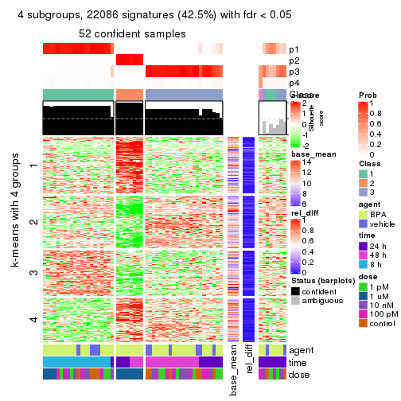
get_signatures(res, k = 5)
get_signatures(res, k = 6)
Signature heatmaps where rows are not scaled:
get_signatures(res, k = 2, scale_rows = FALSE)

get_signatures(res, k = 3, scale_rows = FALSE)
get_signatures(res, k = 4, scale_rows = FALSE)
get_signatures(res, k = 5, scale_rows = FALSE)
get_signatures(res, k = 6, scale_rows = FALSE)
Compare the overlap of signatures from different k:
compare_signatures(res)
get_signature() returns a data frame invisibly. TO get the list of signatures, the function
call should be assigned to a variable explicitly. In following code, if plot argument is set
to FALSE, no heatmap is plotted while only the differential analysis is performed.
# code only for demonstration
tb = get_signature(res, k = ..., plot = FALSE)
An example of the output of tb is:
#> which_row fdr mean_1 mean_2 scaled_mean_1 scaled_mean_2 km
#> 1 38 0.042760348 8.373488 9.131774 -0.5533452 0.5164555 1
#> 2 40 0.018707592 7.106213 8.469186 -0.6173731 0.5762149 1
#> 3 55 0.019134737 10.221463 11.207825 -0.6159697 0.5749050 1
#> 4 59 0.006059896 5.921854 7.869574 -0.6899429 0.6439467 1
#> 5 60 0.018055526 8.928898 10.211722 -0.6204761 0.5791110 1
#> 6 98 0.009384629 15.714769 14.887706 0.6635654 -0.6193277 2
...
The columns in tb are:
which_row: row indices corresponding to the input matrix.fdr: FDR for the differential test. mean_x: The mean value in group x.scaled_mean_x: The mean value in group x after rows are scaled.km: Row groups if k-means clustering is applied to rows.UMAP plot which shows how samples are separated.
dimension_reduction(res, k = 2, method = "UMAP")

dimension_reduction(res, k = 3, method = "UMAP")
dimension_reduction(res, k = 4, method = "UMAP")
dimension_reduction(res, k = 5, method = "UMAP")
dimension_reduction(res, k = 6, method = "UMAP")
Following heatmap shows how subgroups are split when increasing k:
collect_classes(res)

Test correlation between subgroups and known annotations. If the known annotation is numeric, one-way ANOVA test is applied, and if the known annotation is discrete, chi-squared contingency table test is applied.
test_to_known_factors(res)
#> n agent(p) time(p) dose(p) k
#> ATC:NMF 60 0.296 9.95e-02 1.87e-07 2
#> ATC:NMF 59 0.294 7.17e-10 5.55e-06 3
#> ATC:NMF 52 0.272 4.04e-10 3.87e-05 4
#> ATC:NMF 56 0.342 3.35e-19 1.05e-04 5
#> ATC:NMF 58 0.411 7.16e-19 1.05e-06 6
If matrix rows can be associated to genes, consider to use functional_enrichment(res,
...) to perform function enrichment for the signature genes. See this vignette for more detailed explanations.
sessionInfo()
#> R version 3.6.0 (2019-04-26)
#> Platform: x86_64-pc-linux-gnu (64-bit)
#> Running under: CentOS Linux 7 (Core)
#>
#> Matrix products: default
#> BLAS: /usr/lib64/libblas.so.3.4.2
#> LAPACK: /usr/lib64/liblapack.so.3.4.2
#>
#> locale:
#> [1] LC_CTYPE=en_GB.UTF-8 LC_NUMERIC=C LC_TIME=en_GB.UTF-8
#> [4] LC_COLLATE=en_GB.UTF-8 LC_MONETARY=en_GB.UTF-8 LC_MESSAGES=en_GB.UTF-8
#> [7] LC_PAPER=en_GB.UTF-8 LC_NAME=C LC_ADDRESS=C
#> [10] LC_TELEPHONE=C LC_MEASUREMENT=en_GB.UTF-8 LC_IDENTIFICATION=C
#>
#> attached base packages:
#> [1] grid stats graphics grDevices utils datasets methods base
#>
#> other attached packages:
#> [1] genefilter_1.66.0 ComplexHeatmap_2.3.1 markdown_1.1 knitr_1.26
#> [5] GetoptLong_0.1.7 cola_1.3.2
#>
#> loaded via a namespace (and not attached):
#> [1] circlize_0.4.8 shape_1.4.4 xfun_0.11 slam_0.1-46
#> [5] lattice_0.20-38 splines_3.6.0 colorspace_1.4-1 vctrs_0.2.0
#> [9] stats4_3.6.0 blob_1.2.0 XML_3.98-1.20 survival_2.44-1.1
#> [13] rlang_0.4.2 pillar_1.4.2 DBI_1.0.0 BiocGenerics_0.30.0
#> [17] bit64_0.9-7 RColorBrewer_1.1-2 matrixStats_0.55.0 stringr_1.4.0
#> [21] GlobalOptions_0.1.1 evaluate_0.14 memoise_1.1.0 Biobase_2.44.0
#> [25] IRanges_2.18.3 parallel_3.6.0 AnnotationDbi_1.46.1 highr_0.8
#> [29] Rcpp_1.0.3 xtable_1.8-4 backports_1.1.5 S4Vectors_0.22.1
#> [33] annotate_1.62.0 skmeans_0.2-11 bit_1.1-14 microbenchmark_1.4-7
#> [37] brew_1.0-6 impute_1.58.0 rjson_0.2.20 png_0.1-7
#> [41] digest_0.6.23 stringi_1.4.3 polyclip_1.10-0 clue_0.3-57
#> [45] tools_3.6.0 bitops_1.0-6 magrittr_1.5 eulerr_6.0.0
#> [49] RCurl_1.95-4.12 RSQLite_2.1.4 tibble_2.1.3 cluster_2.1.0
#> [53] crayon_1.3.4 pkgconfig_2.0.3 zeallot_0.1.0 Matrix_1.2-17
#> [57] xml2_1.2.2 httr_1.4.1 R6_2.4.1 mclust_5.4.5
#> [61] compiler_3.6.0